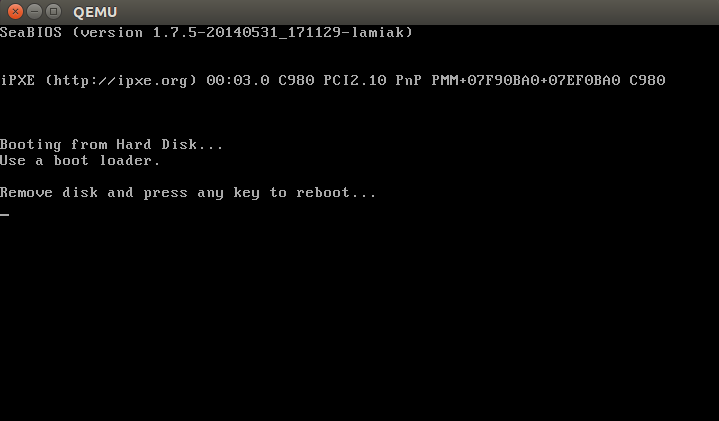
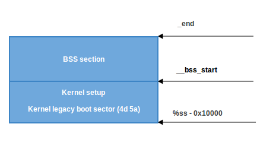

Kernel Boot Process
This chapter describes the Linux kernel boot process. Here you will see a series of posts which describes the full cycle of the kernel loading process:
- From the bootloader to kernel - describes all stages from turning on the computer to running the first instruction of the kernel.
- First steps in the kernel setup code - describes first steps in the kernel setup code. You will see heap initialization, query of different parameters like EDD, IST and etc...
- Video mode initialization and transition to protected mode - describes video mode initialization in the kernel setup code and transition to protected mode.
- Transition to 64-bit mode - describes preparation for transition into 64-bit mode and details of transition.
- Kernel Decompression - describes preparation before kernel decompression and details of direct decompression.
- Kernel load address randomization - describes randomization of the Linux kernel load address.
This chapter coincides with Linux kernel v4.17.
Kernel booting process. Part 1.
From the bootloader to the kernel
If you read my previous blog posts, you might have noticed that I have been involved with low-level programming for some time. I wrote some posts about assembly programming for x86_64 Linux and, at the same time, started to dive into the Linux kernel source code.
I have a great interest in understanding how low-level things work, how programs run on my computer, how they are located in memory, how the kernel manages processes and memory, how the network stack works at a low level, and many many other things. So, I decided to write yet another series of posts about the Linux kernel for the x86_64 architecture.
Note that I'm not a professional kernel hacker and I don't write code for the kernel at work. It's just a hobby. I just like low-level stuff, and it is interesting for me to see how these things work. So if you notice anything confusing, or if you have any questions/remarks, ping me on Twitter 0xAX, drop me an email or just create an issue. I appreciate it.
All posts will also be accessible at github repo and, if you find something wrong with my English or the post content, feel free to send a pull request.
Note that this isn't official documentation, just learning and sharing knowledge.
Required knowledge
- Understanding C code
- Understanding assembly code (AT&T syntax)
Anyway, if you're just starting to learn such tools, I will try to explain some parts during this and the following posts. Alright, this is the end of the simple introduction. Let's start to dive into the Linux kernel and low-level stuff!
I started writing these posts at the time of the 3.18 Linux kernel, and many things have changed since that time. If there are changes, I will update the posts accordingly.
The Magical Power Button, What happens next?
Although this is a series of posts about the Linux kernel, we won't start directly from the kernel code. As soon as you press the magical power button on your laptop or desktop computer, it starts working. The motherboard sends a signal to the power supply device. After receiving the signal, the power supply provides the proper amount of electricity to the computer. Once the motherboard receives the power good signal, it tries to start the CPU. The CPU resets all leftover data in its registers and sets predefined values for each of them.
The 80386 and later CPUs define the following predefined data in CPU registers after the computer resets:
IP 0xfff0
CS selector 0xf000
CS base 0xffff0000
The processor starts working in real mode. Let's back up a little and try to understand memory segmentation in this mode. Real mode is supported on all x86-compatible processors, from the 8086 CPU all the way to the modern Intel 64-bit CPUs. The 8086 processor has a 20-bit address bus, which means that it could work with a 0-0xFFFFF or 1 megabyte address space. But it only has 16-bit registers, which have a maximum address of 2^16 - 1 or 0xffff (64 kilobytes).
Memory segmentation is used to make use of all the address space available. All memory is divided into small, fixed-size segments of 65536 bytes (64 KB). Since we cannot address memory above 64 KB with 16-bit registers, an alternate method was devised.
An address consists of two parts: a segment selector, which has a base address; and an offset from this base address. In real mode, the associated base address of a segment selector is Segment Selector * 16. Thus, to get a physical address in memory, we need to multiply the segment selector part by 16 and add the offset to it:
PhysicalAddress = Segment Selector * 16 + Offset
For example, if CS:IP is 0x2000:0x0010, then the corresponding physical address will be:
>>> hex((0x2000 << 4) + 0x0010)
'0x20010'
But, if we take the largest segment selector and offset, 0xffff:0xffff, then the resulting address will be:
>>> hex((0xffff << 4) + 0xffff)
'0x10ffef'
which is 65520 bytes past the first megabyte. Since only one megabyte is accessible in real mode, 0x10ffef becomes 0x00ffef with the A20 line disabled.
Ok, now we know a little bit about real mode and its memory addressing. Let's get back to discussing register values after reset.
The CS register consists of two parts: the visible segment selector and the hidden base address. In real-address mode, the base address is normally formed by shifting the 16-bit segment selector value 4 bits to the left to produce a 20-bit base address. However, during a hardware reset the segment selector in the CS register is loaded with 0xf000 and the base address is loaded with 0xffff0000. The processor uses this special base address until CS changes.
The starting address is formed by adding the base address to the value in the EIP register:
>>> 0xffff0000 + 0xfff0
'0xfffffff0'
We get 0xfffffff0, which is 16 bytes below 4GB. This point is called the reset vector. It's the memory location at which the CPU expects to find the first instruction to execute after reset. It contains a jump (jmp) instruction that usually points to the BIOS (Basic Input/Output System) entry point. For example, if we look in the coreboot source code (src/cpu/x86/16bit/reset16.inc), we see:
.section ".reset", "ax", %progbits
.code16
.globl _start
_start:
.byte 0xe9
.int _start16bit - ( . + 2 )
...
Here we can see the jmp instruction opcode, which is 0xe9, and its destination address at _start16bit - ( . + 2).
We also see that the reset section is 16 bytes and is compiled to start from the address 0xfffffff0 (src/cpu/x86/16bit/reset16.ld):
SECTIONS {
/* Trigger an error if I have an unusable start address */
_bogus = ASSERT(_start16bit >= 0xffff0000, "_start16bit too low. Please report.");
_ROMTOP = 0xfffffff0;
. = _ROMTOP;
.reset . : {
*(.reset);
. = 15;
BYTE(0x00);
}
}
Now the BIOS starts. After initializing and checking the hardware, the BIOS needs to find a bootable device. A boot order is stored in the BIOS configuration, controlling which devices the BIOS attempts to boot from. When attempting to boot from a hard drive, the BIOS tries to find a boot sector. On hard drives partitioned with an MBR partition layout, the boot sector is stored in the first 446 bytes of the first sector, where each sector is 512 bytes. The final two bytes of the first sector are 0x55 and 0xaa, which designates to the BIOS that this device is bootable. Once the BIOS finds the boot sector, it copies it into a fixed memory location at 0x7c00, jumps to there and start executing it.
For example:
;
; Note: this example is written in Intel Assembly syntax
;
[BITS 16]
boot:
mov al, '!'
mov ah, 0x0e
mov bh, 0x00
mov bl, 0x07
int 0x10
jmp $
times 510-($-$$) db 0
db 0x55
db 0xaa
Build and run this with:
nasm -f bin boot.nasm && qemu-system-x86_64 boot
This will instruct QEMU to use the boot binary that we just built as a disk image. Since the binary generated by the assembly code above fulfills the requirements of the boot sector (we end it with the magic sequence), QEMU will treat the binary as the master boot record (MBR) of a disk image. Note that when providing a boot binary image to QEMU, setting the origin to 0x7c00 (using [ORG 0x7c00])
is unneeded.
You will see:

In this example, we can see that the code will be executed in 16-bit real mode. After starting, it calls the 0x10 interrupt, which just prints the ! symbol. The times directive will pad that number of bytes up to 510th byte with zeros and finishes with the two magic bytes 0xaa and 0x55.
You can see a binary dump of this using the objdump utility:
nasm -f bin boot.nasm
objdump -D -b binary -mi386 -Maddr16,data16,intel boot
A real-world boot sector has code for continuing the boot process and a partition table instead of a bunch of 0's and an exclamation mark. :) From this point onwards, the BIOS hands control over to the bootloader.
NOTE: As explained above, the CPU is in real mode. In real mode, calculating the physical address in memory is done as follows:
PhysicalAddress = Segment Selector * 16 + Offset
just as explained above. We have only 16-bit general purpose registers, which has a maximum value of 0xffff, so if we take the largest values the result will be:
>>> hex((0xffff * 16) + 0xffff)
'0x10ffef'
where 0x10ffef is equal to (1MB + 64KB - 16B) - 1. An 8086 processor (which was the first processor with real mode), in contrast, has a 20-bit address line. Since 2^20 = 1048576 is 1MB and 2^20 - 1 is the maximum address that could be used, this means that the actual available memory is 1MB.
In general, real mode's memory map is as follows:
0x00000000 - 0x000003FF - Real Mode Interrupt Vector Table
0x00000400 - 0x000004FF - BIOS Data Area
0x00000500 - 0x00007BFF - Unused
0x00007C00 - 0x00007DFF - Our Bootloader
0x00007E00 - 0x0009FFFF - Unused
0x000A0000 - 0x000BFFFF - Video RAM (VRAM) Memory
0x000B0000 - 0x000B7777 - Monochrome Video Memory
0x000B8000 - 0x000BFFFF - Color Video Memory
0x000C0000 - 0x000C7FFF - Video ROM BIOS
0x000C8000 - 0x000EFFFF - BIOS Shadow Area
0x000F0000 - 0x000FFFFF - System BIOS
At the beginning of this post, I wrote that the first instruction executed by the CPU is located at address 0xFFFFFFF0, which is much larger than 0xFFFFF (1MB). How can the CPU access this address in real mode? The answer is in the coreboot documentation:
0xFFFE_0000 - 0xFFFF_FFFF: 128 kilobyte ROM mapped into address space
At the start of execution, the BIOS is not in RAM, but in ROM.
Bootloader
There are a number of bootloaders that can boot Linux, such as GRUB 2 and syslinux. The Linux kernel has a Boot protocol which specifies the requirements for a bootloader to implement Linux support. This example will describe GRUB 2.
Continuing from before, now that the BIOS has chosen a boot device and transferred control to the boot sector code, execution starts from boot.img. Its code is very simple, due to the limited amount of space available. It contains a pointer which is used to jump to the location of GRUB 2's core image. The core image begins with diskboot.img, which is usually stored immediately after the first sector in the unused space before the first partition. The above code loads the rest of the core image, which contains GRUB 2's kernel and drivers for handling filesystems, into memory. After loading the rest of the core image, it executes the grub_main function.
The grub_main function initializes the console, gets the base address for modules, sets the root device, loads/parses the grub configuration file, loads modules, etc. At the end of execution, the grub_main function moves grub to normal mode. The grub_normal_execute function (from the grub-core/normal/main.c source code file) completes the final preparations and shows a menu to select an operating system. When we select one of the grub menu entries, the grub_menu_execute_entry function runs, executing the grub boot command and booting the selected operating system.
As we can read in the kernel boot protocol, the bootloader must read and fill some fields of the kernel setup header, which starts at offset 0x01f1 from the kernel setup code. You may look at the boot linker script to confirm the value of this offset. The kernel header arch/x86/boot/header.S starts from:
.globl hdr
hdr:
setup_sects: .byte 0
root_flags: .word ROOT_RDONLY
syssize: .long 0
ram_size: .word 0
vid_mode: .word SVGA_MODE
root_dev: .word 0
boot_flag: .word 0xAA55
The bootloader must fill this and the rest of the headers (which are only marked as being type write in the Linux boot protocol, such as in this example) with values either received from the command line or calculated during booting. (We will not go over full descriptions and explanations for all fields of the kernel setup header for now, but we shall do so when discussing how the kernel uses them. You can find a description of all fields in the boot protocol.)
As we can see in the kernel boot protocol, memory will be mapped as follows after loading the kernel:
| Protected-mode kernel |
100000 +------------------------+
| I/O memory hole |
0A0000 +------------------------+
| Reserved for BIOS | Leave as much as possible unused
~ ~
| Command line | (Can also be below the X+10000 mark)
X+10000 +------------------------+
| Stack/heap | For use by the kernel real-mode code.
X+08000 +------------------------+
| Kernel setup | The kernel real-mode code.
| Kernel boot sector | The kernel legacy boot sector.
X +------------------------+
| Boot loader | <- Boot sector entry point 0x7C00
001000 +------------------------+
| Reserved for MBR/BIOS |
000800 +------------------------+
| Typically used by MBR |
000600 +------------------------+
| BIOS use only |
000000 +------------------------+
When the bootloader transfers control to the kernel, it starts at:
X + sizeof(KernelBootSector) + 1
where X is the address of the kernel boot sector being loaded. In my case, X is 0x10000, as we can see in a memory dump:

How to get this memory dump in real mode?
root@parallels-vm:/usr/src/linux# more arch/x86/kernel/vmlinux.lds
...
SECTIONS
{
. = (0xffffffff80000000 + ALIGN(0x1000000, 0x200000));
phys_startup_64 = ABSOLUTE(startup_64 - 0xffffffff80000000);
.text : AT(ADDR(.text) - 0xffffffff80000000) {
_text = .;
_stext = .;
....
root@parallels-vm:/usr/src/linux# nm vmlinux|grep startup_64
0000000001000000 A phys_startup_64
ffffffff81000030 T secondary_startup_64
ffffffff810001f0 T __startup_64
ffffffff81000000 T startup_64
Here we can see the memory address of the entry point, which is 0x0000000001000000. Let's go ahead.
Before trying to debug the kernel, please see Booting a Custom Linux Kernel in QEMU and Debugging It With GDB
Step 1
Booting in QEMU
qemu-system-x86_64 -kernel /usr/src/linux-4.14.207/arch/x86_64/boot/bzImage -nographic -append "console=ttyS0 nokaslr" -initrd /data/busybox/busybox-1.28.0/initramfs.cpio.gz -S -s
Step 2
Attaching GDB to QEMU
gdb vmlinux
(gdb) target remote :1234
(gdb) hbreak *0x0000000001000000
(gdb) c
(gdb) dump binary memory /tmp/dump 0x0000 0x20000
Step 3
root@parallels-vm:/# hd /tmp/dump |grep -A 31 MZ
00010000 4d 5a ea 07 00 c0 07 8c c8 8e d8 8e c0 8e d0 31 |MZ.............1|
00010010 e4 fb fc be 40 00 ac 20 c0 74 09 b4 0e bb 07 00 |....@.. .t......|
00010020 cd 10 eb f2 31 c0 cd 16 cd 19 ea f0 ff 00 f0 00 |....1...........|
00010030 00 00 00 00 00 00 00 00 00 00 00 00 82 00 00 00 |................|
00010040 55 73 65 20 61 20 62 6f 6f 74 20 6c 6f 61 64 65 |Use a boot loade|
00010050 72 2e 0d 0a 0a 52 65 6d 6f 76 65 20 64 69 73 6b |r....Remove disk|
00010060 20 61 6e 64 20 70 72 65 73 73 20 61 6e 79 20 6b | and press any k|
00010070 65 79 20 74 6f 20 72 65 62 6f 6f 74 2e 2e 2e 0d |ey to reboot....|
00010080 0a 00 50 45 00 00 64 86 04 00 00 00 00 00 00 00 |..PE..d.........|
00010090 00 00 01 00 00 00 a0 00 06 02 0b 02 02 14 20 d5 |.............. .|
000100a0 80 00 00 00 00 00 e0 b8 79 01 80 46 00 00 00 02 |........y..F....|
000100b0 00 00 00 00 00 00 00 00 00 00 20 00 00 00 20 00 |.......... ... .|
000100c0 00 00 00 00 00 00 00 00 00 00 00 00 00 00 00 00 |................|
000100d0 00 00 00 90 fa 01 00 02 00 00 00 00 00 00 0a 00 |................|
000100e0 00 00 00 00 00 00 00 00 00 00 00 00 00 00 00 00 |................|
*
00010100 00 00 00 00 00 00 06 00 00 00 00 00 00 00 00 00 |................|
00010110 00 00 00 00 00 00 00 00 00 00 00 00 00 00 00 00 |................|
*
00010130 00 00 00 00 00 00 00 00 00 00 2e 73 65 74 75 70 |...........setup|
00010140 00 00 e0 41 00 00 00 02 00 00 e0 41 00 00 00 02 |...A.......A....|
00010150 00 00 00 00 00 00 00 00 00 00 00 00 00 00 20 00 |.............. .|
00010160 50 60 2e 72 65 6c 6f 63 00 00 20 00 00 00 e0 43 |P`.reloc.. ....C|
00010170 00 00 20 00 00 00 e0 43 00 00 00 00 00 00 00 00 |.. ....C........|
00010180 00 00 00 00 00 00 40 00 10 42 2e 74 65 78 74 00 |......@..B.text.|
00010190 00 00 20 93 80 00 00 44 00 00 20 93 80 00 00 44 |.. ....D.. ....D|
000101a0 00 00 00 00 00 00 00 00 00 00 00 00 00 00 20 00 |.............. .|
000101b0 50 60 2e 62 73 73 00 00 00 00 e0 b8 79 01 20 d7 |P`.bss......y. .|
000101c0 80 00 00 00 00 00 00 00 00 00 00 00 00 00 00 00 |................|
000101d0 00 00 00 00 00 00 80 00 00 c8 00 00 00 00 00 00 |................|
000101e0 00 00 00 00 00 00 00 00 00 00 00 00 00 00 00 ff |................|
000101f0 ff 21 01 00 32 09 08 00 00 00 ff ff 00 00 55 aa |.!..2.........U.|
The bootloader has now loaded the Linux kernel into memory, filled the header fields, and then jumped to the corresponding memory address. We now move directly to the kernel setup code.
The Beginning of the Kernel Setup Stage
Finally, we are in the kernel! Technically, the kernel hasn't run yet. First, the kernel setup part must configure stuff such as the decompressor and some memory management related things, to name a few. After all these things are done, the kernel setup part will decompress the actual kernel and jump to it. Execution of the setup part starts from arch/x86/boot/header.S at the _start symbol.
It may look a bit strange at first sight, as there are several instructions before it. A long time ago, the Linux kernel had its own bootloader. Now, however, if you run, for example,
qemu-system-x86_64 vmlinuz-3.18-generic
then you will see:

Actually, the file header.S starts with the magic number MZ (see image above), the error message that displays and, following that, the PE header:
#ifdef CONFIG_EFI_STUB
# "MZ", MS-DOS header
.byte 0x4d
.byte 0x5a
#endif
...
...
...
pe_header:
.ascii "PE"
.word 0
It needs this to load an operating system with UEFI support. We won't be looking into its inner workings right now but will cover it in upcoming chapters.
The actual kernel setup entry point is:
// header.S line 292
.globl _start
_start:
The bootloader (GRUB 2 and others) knows about this point (at an offset of 0x200 from MZ) and jumps directly to it, despite the fact that header.S starts from the .bstext section, which prints an error message:
//
// arch/x86/boot/setup.ld
//
. = 0; // current position
.bstext : { *(.bstext) } // put .bstext section to position 0
.bsdata : { *(.bsdata) }
The kernel setup entry point is:
.globl _start
_start:
.byte 0xeb
.byte start_of_setup-1f
1:
//
// rest of the header
//
Here we can see a jmp instruction opcode (0xeb) that jumps to the start_of_setup-1f point. In Nf notation, 2f, for example, refers to the local label 2:. In our case, it's label 1: that is present right after the jump, and contains the rest of the setup header. Right after the setup header, we see the .entrytext section, which starts at the start_of_setup label.
This is the first code that actually runs (aside from the previous jump instructions, of course). After the kernel setup part receives control from the bootloader, the first jmp instruction is located at the 0x200 offset from the start of the kernel real mode, i.e., after the first 512 bytes. This can be seen in both the Linux kernel boot protocol and the GRUB 2 source code:
segment = grub_linux_real_target >> 4;
state.gs = state.fs = state.es = state.ds = state.ss = segment;
state.cs = segment + 0x20;
In my case, the kernel is loaded at the physical address 0x10000. This means that segment registers have the following values after kernel setup starts:
gs = fs = es = ds = ss = 0x1000
cs = 0x1020
After the jump to start_of_setup, the kernel needs to do the following:
- Make sure that all segment register values are equal
- Set up a correct stack, if needed
- Set up bss
- Jump to the C code in arch/x86/boot/main.c
Let's look at the implementation.
Aligning the Segment Registers
First of all, the kernel ensures that the ds and es segment registers point to the same address. Next, it clears the direction flag using the cld instruction:
movw %ds, %ax
movw %ax, %es
cld
As I wrote earlier, grub2 loads kernel setup code at address 0x10000 by default and cs at 0x1020 because execution doesn't start from the start of the file, but from the jump here:
_start:
.byte 0xeb
.byte start_of_setup-1f
which is at a 512 byte offset from 4d 5a. We also need to align cs from 0x1020 to 0x1000, as well as all other segment registers. After that, we set up the stack:
pushw %ds
pushw $6f
lretw
which pushes the value of ds to the stack, followed by the address of the 6 label and executes the lretw instruction. When the lretw instruction is called, it loads the address of label 6 into the instruction pointer register and loads cs with the value of ds. Afterward, ds and cs will have the same values.
Stack Setup
Almost all of the setup code is for preparing the C language environment in real mode. The next step is checking the ss register's value and setting up a correct stack if ss is wrong:
movw %ss, %dx
cmpw %ax, %dx
movw %sp, %dx
je 2f
This can lead to 3 different scenarios:
sshas a valid value0x1000(as do all the other segment registers besidescs)ssis invalid and theCAN_USE_HEAPflag is set (see below)ssis invalid and theCAN_USE_HEAPflag is not set (see below)
Let's look at all three of these scenarios in turn:
sshas a correct address (0x1000). In this case, we go to label 2:
2: andw $~3, %dx
jnz 3f
movw $0xfffc, %dx
3: movw %ax, %ss
movzwl %dx, %esp
sti
Here we set the alignment of dx (which contains the value of sp as given by the bootloader) to 4 bytes and check if it is zero. If it is, we set dx to 0xfffc (The last 4-byte aligned address in a 64KB segment). If it is not zero, we continue to use the value of sp given by the bootloader (0xf7f4 in my case). Afterwards, we put the value of ax (0x1000) into ss. We now have a correct stack:

- The second scenario, (
ss!=ds). First, we put the value of _end (the address of the end of the setup code) intodxand check theloadflagsheader field using thetestbinstruction to see whether we can use the heap. loadflags is a bitmask header defined as:
#define LOADED_HIGH (1<<0)
#define QUIET_FLAG (1<<5)
#define KEEP_SEGMENTS (1<<6)
#define CAN_USE_HEAP (1<<7)
and as we can read in the boot protocol:
Field name: loadflags
This field is a bitmask.
Bit 7 (write): CAN_USE_HEAP
Set this bit to 1 to indicate that the value entered in the
heap_end_ptr is valid. If this field is clear, some setup code
functionality will be disabled.
If the CAN_USE_HEAP bit is set, we put heap_end_ptr into dx (which points to _end) and add STACK_SIZE (the minimum stack size, 1024 bytes) to it. After this, if dx is not carried (it will not be carried, dx = _end + 1024), jump to label 2 (as in the previous case) and make a correct stack.

- When
CAN_USE_HEAPis not set, we just use a minimal stack from_endto_end + STACK_SIZE:

BSS Setup
The last two steps that need to happen before we can jump to the main C code are setting up the BSS area and checking the "magic" signature. First, signature checking:
cmpl $0x5a5aaa55, setup_sig
jne setup_bad
This simply compares the setup_sig with the magic number 0x5a5aaa55. If they are not equal, a fatal error is reported.
If the magic number matches, knowing we have a set of correct segment registers and a stack, we only need to set up the BSS section before jumping into the C code.
The BSS section is used to store statically allocated, uninitialized data. Linux carefully ensures this area of memory is first zeroed using the following code:
movw $__bss_start, %di
movw $_end+3, %cx
xorl %eax, %eax
subw %di, %cx
shrw $2, %cx
rep; stosl
First, the __bss_start address is moved into di. Next, the _end + 3 address (+3 - aligns to 4 bytes) is moved into cx. The eax register is cleared (using the xor instruction), and the bss section size (cx - di) is calculated and put into cx. Then, cx is divided by four (the size of a 'word'), and the stosl instruction is used repeatedly, storing the value of eax (zero) into the address pointed to by di, automatically increasing di by four, repeating until cx reaches zero. The net effect of this code is that zeros are written through all words in memory from __bss_start to _end:

Jump to main
That's all! We have the stack and BSS, so we can jump to the main() C function:
call main
The main() function is located in arch/x86/boot/main.c. You can read about what this does in the next part.
Conclusion
This is the end of the first part about Linux kernel insides. If you have questions or suggestions, ping me on Twitter 0xAX, drop me an email, or just create an issue. In the next part, we will see the first C code that executes in the Linux kernel setup, the implementation of memory routines such as memset, memcpy, earlyprintk, early console implementation and initialization, and much more.
Please note that English is not my first language and I am really sorry for any inconvenience. If you find any mistakes please send me PR to linux-insides.
Links
- Intel 80386 programmer's reference manual 1986
- Minimal Boot Loader for Intel Architecture
- Minimal Boot Loader in Assembler with comments
- 8086
- 80386
- Reset vector
- Real mode
- Linux kernel boot protocol
- coreboot developer manual
- Ralf Brown's Interrupt List
- Power supply
- Power good signal
Kernel booting process. Part 2.
First steps in the kernel setup
We started to dive into the Linux kernel's insides in the previous part and saw the initial part of the kernel setup code. We stopped at the first call to the main function (which is the first function written in C) from arch/x86/boot/main.c.
In this part, we will continue to research the kernel setup code and go over
- what
protected modeis, - the transition into it,
- the initialization of the heap and the console,
- memory detection, CPU validation and keyboard initialization
- and much much more.
So, let's go ahead.
Protected mode
Before we can move to the native Intel64 Long Mode, the kernel must switch the CPU into protected mode.
What is protected mode? Protected mode was first added to the x86 architecture in 1982 and was the main mode of Intel processors from the 80286 processor until Intel 64 and long mode came.
The main reason to move away from Real mode is that there is very limited access to the RAM. As you may remember from the previous part, there are only 220 bytes or 1 Megabyte, sometimes even only 640 Kilobytes of RAM available in Real mode.
Protected mode brought many changes, but the main one is the difference in memory management. The 20-bit address bus was replaced with a 32-bit address bus. It allowed access to 4 Gigabytes of memory vs the 1 Megabyte in Real mode. Also, paging support was added, which you can read about in the next sections.
Memory management in Protected mode is divided into two, almost independent parts:
- Segmentation
- Paging
Here we will only talk about segmentation. Paging will be discussed in the next sections.
As you can read in the previous part, addresses consist of two parts in Real mode:
- Base address of the segment
- Offset from the segment base
And we can get the physical address if we know these two parts by:
PhysicalAddress = Segment Base * 16 + Offset
Memory segmentation was completely redone in protected mode. There are no 64 Kilobyte fixed-size segments. Instead, the size and location of each segment is described by an associated data structure called the Segment Descriptor. These segment descriptors are stored in a data structure called the Global Descriptor Table (GDT).
The GDT is a structure which resides in memory. It has no fixed place in the memory, so its address is stored in the special GDTR register. Later we will see how the GDT is loaded in the Linux kernel code. There will be an operation for loading it from memory, something like:
lgdt gdt
where the lgdt instruction loads the base address and limit(size) of the global descriptor table to the GDTR register. GDTR is a 48-bit register and consists of two parts:
- the size(16-bit) of the global descriptor table;
- the address(32-bit) of the global descriptor table.
As mentioned above, the GDT contains segment descriptors which describe memory segments. Each descriptor is 64-bits in size. The general scheme of a descriptor is:
63 56 51 48 45 39 32
------------------------------------------------------------
| | |B| |A| | | | |0|E|W|A| |
| BASE 31:24 |G|/|L|V| LIMIT |P|DPL|S| TYPE | BASE 23:16 |
| | |D| |L| 19:16 | | | |1|C|R|A| |
------------------------------------------------------------
31 16 15 0
------------------------------------------------------------
| | |
| BASE 15:0 | LIMIT 15:0 |
| | |
------------------------------------------------------------
Don't worry, I know it looks a little scary after Real mode, but it's easy. For example LIMIT 15:0 means that bits 0-15 of the segment limit are located at the beginning of the Descriptor. The rest of it is in LIMIT 19:16, which is located at bits 48-51 of the Descriptor. So, the size of Limit is 0-19 i.e 20-bits. Let's take a closer look at it:
- Limit[20-bits] is split between bits 0-15 and 48-51. It defines the
length_of_segment - 1. It depends on theG(Granularity) bit.
- if
G(bit 55) is 0 and the segment limit is 0, the size of the segment is 1 Byte - if
Gis 1 and the segment limit is 0, the size of the segment is 4096 Bytes - if
Gis 0 and the segment limit is 0xfffff, the size of the segment is 1 Megabyte - if
Gis 1 and the segment limit is 0xfffff, the size of the segment is 4 Gigabytes
So, what this means is
- if G is 0, Limit is interpreted in terms of 1 Byte and the maximum size of the segment can be 1 Megabyte.
- if G is 1, Limit is interpreted in terms of 4096 Bytes = 4 KBytes = 1 Page and the maximum size of the segment can be 4 Gigabytes. Actually, when G is 1, the value of Limit is shifted to the left by 12 bits. So, 20 bits + 12 bits = 32 bits and 232 = 4 Gigabytes.
-
Base[32-bits] is split between bits 16-31, 32-39 and 56-63. It defines the physical address of the segment's starting location.
-
Type/Attribute[5-bits] is represented by bits 40-44. It defines the type of segment and how it can be accessed.
- The
Sflag at bit 44 specifies the descriptor type. IfSis 0 then this segment is a system segment, whereas ifSis 1 then this is a code or data segment (Stack segments are data segments which must be read/write segments).
To determine if the segment is a code or data segment, we can check its Ex(bit 43) Attribute (marked as 0 in the above diagram). If it is 0, then the segment is a Data segment, otherwise, it is a code segment.
A segment can be of one of the following types:
--------------------------------------------------------------------------------------
| Type Field | Descriptor Type | Description |
|-----------------------------|-----------------|------------------------------------|
| Decimal | | |
| 0 E W A | | |
| 0 0 0 0 0 | Data | Read-Only |
| 1 0 0 0 1 | Data | Read-Only, accessed |
| 2 0 0 1 0 | Data | Read/Write |
| 3 0 0 1 1 | Data | Read/Write, accessed |
| 4 0 1 0 0 | Data | Read-Only, expand-down |
| 5 0 1 0 1 | Data | Read-Only, expand-down, accessed |
| 6 0 1 1 0 | Data | Read/Write, expand-down |
| 7 0 1 1 1 | Data | Read/Write, expand-down, accessed |
| C R A | | |
| 8 1 0 0 0 | Code | Execute-Only |
| 9 1 0 0 1 | Code | Execute-Only, accessed |
| 10 1 0 1 0 | Code | Execute/Read |
| 11 1 0 1 1 | Code | Execute/Read, accessed |
| 12 1 1 0 0 | Code | Execute-Only, conforming |
| 14 1 1 0 1 | Code | Execute-Only, conforming, accessed |
| 13 1 1 1 0 | Code | Execute/Read, conforming |
| 15 1 1 1 1 | Code | Execute/Read, conforming, accessed |
--------------------------------------------------------------------------------------
As we can see the first bit(bit 43) is 0 for a data segment and 1 for a code segment. The next three bits (40, 41, 42) are either EWA(Expansion Writable Accessible) or CRA(Conforming Readable Accessible).
- if E(bit 42) is 0, expand up, otherwise, expand down. Read more here.
- if W(bit 41)(for Data Segments) is 1, write access is allowed, and if it is 0, the segment is read-only. Note that read access is always allowed on data segments.
- A(bit 40) controls whether the segment can be accessed by the processor or not.
- C(bit 43) is the conforming bit(for code selectors). If C is 1, the segment code can be executed from a lower level privilege (e.g. user) level. If C is 0, it can only be executed from the same privilege level.
- R(bit 41) controls read access to code segments; when it is 1, the segment can be read from. Write access is never granted for code segments.
-
DPL[2-bits] (Descriptor Privilege Level) comprises the bits 45-46. It defines the privilege level of the segment. It can be 0-3 where 0 is the most privileged level.
-
The P flag(bit 47) indicates if the segment is present in memory or not. If P is 0, the segment will be presented as invalid and the processor will refuse to read from this segment.
-
AVL flag(bit 52) - Available and reserved bits. It is ignored in Linux.
-
The L flag(bit 53) indicates whether a code segment contains native 64-bit code. If it is set, then the code segment executes in 64-bit mode.
-
The D/B flag(bit 54) (Default/Big flag) represents the operand size i.e 16/32 bits. If set, operand size is 32 bits. Otherwise, it is 16 bits.
Segment registers contain segment selectors as in real mode. However, in protected mode, a segment selector is handled differently. Each Segment Descriptor has an associated Segment Selector which is a 16-bit structure:
15 3 2 1 0
-----------------------------
| Index | TI | RPL |
-----------------------------
Where,
- Index stores the index number of the descriptor in the GDT.
- TI(Table Indicator) indicates where to search for the descriptor. If it is 0 then the descriptor is searched for in the Global Descriptor Table(GDT). Otherwise, it will be searched for in the Local Descriptor Table(LDT).
- And RPL contains the Requester's Privilege Level.
Every segment register has a visible and a hidden part.
- Visible - The Segment Selector is stored here.
- Hidden - The Segment Descriptor (which contains the base, limit, attributes & flags) is stored here.
The following steps are needed to get a physical address in protected mode:
- The segment selector must be loaded in one of the segment registers.
- The CPU tries to find a segment descriptor at the offset
GDT address + Indexfrom the selector and then loads the descriptor into the hidden part of the segment register. - If paging is disabled, the linear address of the segment, or its physical address, is given by the formula: Base address (found in the descriptor obtained in the previous step) + Offset.
Schematically it will look like this:

The algorithm for the transition from real mode into protected mode is:
- Disable interrupts
- Describe and load the GDT with the
lgdtinstruction - Set the PE (Protection Enable) bit in CR0 (Control Register 0)
- Jump to protected mode code
We will see the complete transition to protected mode in the Linux kernel in the next part, but before we can move to protected mode, we need to do some more preparations.
Let's look at arch/x86/boot/main.c. We can see some routines there which perform keyboard initialization, heap initialization, etc... Let's take a look.
Copying boot parameters into the "zeropage"
We will start from the main routine in "main.c". The first function which is called in main is copy_boot_params(void). It copies the kernel setup header into the corresponding field of the boot_params structure which is defined in the arch/x86/include/uapi/asm/bootparam.h header file.
The boot_params structure contains the struct setup_header hdr field. This structure contains the same fields as defined in the linux boot protocol and is filled by the boot loader and also at kernel compile/build time. copy_boot_params does two things:
-
It copies
hdrfrom header.S to thesetup_headerfield inboot_paramsstructure. -
It updates the pointer to the kernel command line if the kernel was loaded with the old command line protocol.
Note that it copies hdr with the memcpy function, defined in the copy.S source file. Let's have a look inside:
GLOBAL(memcpy)
pushw %si
pushw %di
movw %ax, %di
movw %dx, %si
pushw %cx
shrw $2, %cx
rep; movsl
popw %cx
andw $3, %cx
rep; movsb
popw %di
popw %si
retl
ENDPROC(memcpy)
Yeah, we just moved to C code and now assembly again :) First of all, we can see that memcpy and other routines which are defined here, start and end with the two macros: GLOBAL and ENDPROC. GLOBAL is described in arch/x86/include/asm/linkage.h which defines the globl directive and its label. ENDPROC is described in include/linux/linkage.h and marks the name symbol as a function name and ends with the size of the name symbol.
The implementation of memcpy is simple. At first, it pushes values from the si and di registers to the stack to preserve their values because they will change during the memcpy. As we can see in the REALMODE_CFLAGS in arch/x86/Makefile, the kernel build system uses the -mregparm=3 option of GCC, so functions get the first three parameters from ax, dx and cx registers. Calling memcpy looks like this:
memcpy(&boot_params.hdr, &hdr, sizeof hdr);
So,
axwill contain the address ofboot_params.hdrdxwill contain the address ofhdrcxwill contain the size ofhdrin bytes.
memcpy puts the address of boot_params.hdr into di and saves cx on the stack. After this it shifts the value right 2 times (or divides it by 4) and copies four bytes from the address at si to the address at di. After this, we restore the size of hdr again, align it by 4 bytes and copy the rest of the bytes from the address at si to the address at di byte by byte (if there is more). Now the values of si and di are restored from the stack and the copying operation is finished.
Console initialization
After hdr is copied into boot_params.hdr, the next step is to initialize the console by calling the console_init function, defined in arch/x86/boot/early_serial_console.c.
It tries to find the earlyprintk option in the command line and if the search was successful, it parses the port address and baud rate of the serial port and initializes the serial port. The value of the earlyprintk command line option can be one of these:
- serial,0x3f8,115200
- serial,ttyS0,115200
- ttyS0,115200
After serial port initialization we can see the first output:
if (cmdline_find_option_bool("debug"))
puts("early console in setup code\n");
The definition of puts is in tty.c. As we can see it prints character by character in a loop by calling the putchar function. Let's look into the putchar implementation:
void __attribute__((section(".inittext"))) putchar(int ch)
{
if (ch == '\n')
putchar('\r');
bios_putchar(ch);
if (early_serial_base != 0)
serial_putchar(ch);
}
__attribute__((section(".inittext"))) means that this code will be in the .inittext section. We can find it in the linker file setup.ld.
First of all, putchar checks for the \n symbol and if it is found, prints \r before. After that it prints the character on the VGA screen by calling the BIOS with the 0x10 interrupt call:
static void __attribute__((section(".inittext"))) bios_putchar(int ch)
{
struct biosregs ireg;
initregs(&ireg);
ireg.bx = 0x0007;
ireg.cx = 0x0001;
ireg.ah = 0x0e;
ireg.al = ch;
intcall(0x10, &ireg, NULL);
}
Here initregs takes the biosregs structure and first fills biosregs with zeros using the memset function and then fills it with register values.
memset(reg, 0, sizeof *reg);
reg->eflags |= X86_EFLAGS_CF;
reg->ds = ds();
reg->es = ds();
reg->fs = fs();
reg->gs = gs();
Let's look at the implementation of memset:
GLOBAL(memset)
pushw %di
movw %ax, %di
movzbl %dl, %eax
imull $0x01010101,%eax
pushw %cx
shrw $2, %cx
rep; stosl
popw %cx
andw $3, %cx
rep; stosb
popw %di
retl
ENDPROC(memset)
As you can read above, it uses the same calling conventions as the memcpy function, which means that the function gets its parameters from the ax, dx and cx registers.
The implementation of memset is similar to that of memcpy. It saves the value of the di register on the stack and puts the value ofax, which stores the address of the biosregs structure, into di . Next is the movzbl instruction, which copies the value of dl to the lowermost byte of the eax register. The remaining 3 high bytes of eax will be filled with zeros.
The next instruction multiplies eax with 0x01010101. It needs to because memset will copy 4 bytes at the same time. For example, if we need to fill a structure whose size is 4 bytes with the value 0x7 with memset, eax will contain the 0x00000007. So if we multiply eax with 0x01010101, we will get 0x07070707 and now we can copy these 4 bytes into the structure. memset uses the rep; stosl instruction to copy eax into es:di.
The rest of the memset function does almost the same thing as memcpy.
After the biosregs structure is filled with memset, bios_putchar calls the 0x10 interrupt which prints a character. Afterwards it checks if the serial port was initialized or not and writes a character there with serial_putchar and inb/outb instructions if it was set.
Heap initialization
After the stack and bss section have been prepared in header.S (see previous part), the kernel needs to initialize the heap with the init_heap function.
First of all init_heap checks the CAN_USE_HEAP flag from the loadflags structure in the kernel setup header and calculates the end of the stack if this flag was set:
char *stack_end;
if (boot_params.hdr.loadflags & CAN_USE_HEAP) {
asm("leal %P1(%%esp),%0"
: "=r" (stack_end) : "i" (-STACK_SIZE));
or in other words stack_end = esp - STACK_SIZE.
Then there is the heap_end calculation:
heap_end = (char *)((size_t)boot_params.hdr.heap_end_ptr + 0x200);
which means heap_end_ptr or _end + 512 (0x200h). The last check is whether heap_end is greater than stack_end. If it is then stack_end is assigned to heap_end to make them equal.
Now the heap is initialized and we can use it using the GET_HEAP method. We will see what it is used for, how to use it and how it is implemented in the next posts.
CPU validation
The next step as we can see is cpu validation through the validate_cpu function from arch/x86/boot/cpu.c source code file.
It calls the check_cpu function and passes cpu level and required cpu level to it and checks that the kernel launches on the right cpu level.
check_cpu(&cpu_level, &req_level, &err_flags);
if (cpu_level < req_level) {
...
return -1;
}
The check_cpu function checks the CPU's flags, the presence of long mode in the case of x86_64(64-bit) CPU, checks the processor's vendor and makes preparations for certain vendors like turning on SSE+SSE2 for AMD if they are missing, etc.
at the next step, we may see a call to the set_bios_mode function after setup code found that a CPU is suitable. As we may see, this function is implemented only for the x86_64 mode:
static void set_bios_mode(void)
{
#ifdef CONFIG_X86_64
struct biosregs ireg;
initregs(&ireg);
ireg.ax = 0xec00;
ireg.bx = 2;
intcall(0x15, &ireg, NULL);
#endif
}
The set_bios_mode function executes the 0x15 BIOS interrupt to tell the BIOS that long mode (if bx == 2) will be used.
Memory detection
The next step is memory detection through the detect_memory function. detect_memory basically provides a map of available RAM to the CPU. It uses different programming interfaces for memory detection like 0xe820, 0xe801 and 0x88. We will see only the implementation of the 0xE820 interface here.
Let's look at the implementation of the detect_memory_e820 function from the arch/x86/boot/memory.c source file. First of all, the detect_memory_e820 function initializes the biosregs structure as we saw above and fills registers with special values for the 0xe820 call:
initregs(&ireg);
ireg.ax = 0xe820;
ireg.cx = sizeof buf;
ireg.edx = SMAP;
ireg.di = (size_t)&buf;
axcontains the number of the function (0xe820 in our case)cxcontains the size of the buffer which will contain data about the memoryedxmust contain theSMAPmagic numberes:dimust contain the address of the buffer which will contain memory dataebxhas to be zero.
Next is a loop where data about the memory will be collected. It starts with a call to the 0x15 BIOS interrupt, which writes one line from the address allocation table. For getting the next line we need to call this interrupt again (which we do in the loop). Before the next call ebx must contain the value returned previously:
intcall(0x15, &ireg, &oreg);
ireg.ebx = oreg.ebx;
Ultimately, this function collects data from the address allocation table and writes this data into the e820_entry array:
- start of memory segment
- size of memory segment
- type of memory segment (whether the particular segment is usable or reserved)
You can see the result of this in the dmesg output, something like:
[ 0.000000] e820: BIOS-provided physical RAM map:
[ 0.000000] BIOS-e820: [mem 0x0000000000000000-0x000000000009fbff] usable
[ 0.000000] BIOS-e820: [mem 0x000000000009fc00-0x000000000009ffff] reserved
[ 0.000000] BIOS-e820: [mem 0x00000000000f0000-0x00000000000fffff] reserved
[ 0.000000] BIOS-e820: [mem 0x0000000000100000-0x000000003ffdffff] usable
[ 0.000000] BIOS-e820: [mem 0x000000003ffe0000-0x000000003fffffff] reserved
[ 0.000000] BIOS-e820: [mem 0x00000000fffc0000-0x00000000ffffffff] reserved
Keyboard initialization
The next step is the initialization of the keyboard with a call to the keyboard_init function. At first keyboard_init initializes registers using the initregs function. It then calls the 0x16 interrupt to query the status of the keyboard.
initregs(&ireg);
ireg.ah = 0x02; /* Get keyboard status */
intcall(0x16, &ireg, &oreg);
boot_params.kbd_status = oreg.al;
After this it calls 0x16 again to set the repeat rate and delay.
ireg.ax = 0x0305; /* Set keyboard repeat rate */
intcall(0x16, &ireg, NULL);
Querying
The next couple of steps are queries for different parameters. We will not dive into details about these queries but we will get back to them in later parts. Let's take a short look at these functions:
The first step is getting Intel SpeedStep information by calling the query_ist function. It checks the CPU level and if it is correct, calls 0x15 to get the info and saves the result to boot_params.
Next, the query_apm_bios function gets Advanced Power Management information from the BIOS. query_apm_bios calls the 0x15 BIOS interruption too, but with ah = 0x53 to check APM installation. After 0x15 finishes executing, the query_apm_bios functions check the PM signature (it must be 0x504d), the carry flag (it must be 0 if APM supported) and the value of the cx register (if it's 0x02, the protected mode interface is supported).
Next, it calls 0x15 again, but with ax = 0x5304 to disconnect the APM interface and connect the 32-bit protected mode interface. In the end, it fills boot_params.apm_bios_info with values obtained from the BIOS.
Note that query_apm_bios will be executed only if the CONFIG_APM or CONFIG_APM_MODULE compile time flag was set in the configuration file:
#if defined(CONFIG_APM) || defined(CONFIG_APM_MODULE)
query_apm_bios();
#endif
The last is the query_edd function, which queries Enhanced Disk Drive information from the BIOS. Let's look at how query_edd is implemented.
First of all, it reads the edd option from the kernel's command line and if it was set to off then query_edd just returns.
If EDD is enabled, query_edd goes over BIOS-supported hard disks and queries EDD information in the following loop:
for (devno = 0x80; devno < 0x80+EDD_MBR_SIG_MAX; devno++) {
if (!get_edd_info(devno, &ei) && boot_params.eddbuf_entries < EDDMAXNR) {
memcpy(edp, &ei, sizeof ei);
edp++;
boot_params.eddbuf_entries++;
}
...
...
...
}
where 0x80 is the first hard drive and the value of the EDD_MBR_SIG_MAX macro is 16. It collects data into an array of edd_info structures. get_edd_info checks that EDD is present by invoking the 0x13 interrupt with ah as 0x41 and if EDD is present, get_edd_info again calls the 0x13 interrupt, but with ah as 0x48 and si containing the address of the buffer where EDD information will be stored.
Conclusion
This is the end of the second part about the insides of the Linux kernel. In the next part, we will see video mode setting and the rest of the preparations before the transition to protected mode and directly transitioning into it.
If you have any questions or suggestions write me a comment or ping me at twitter.
Please note that English is not my first language, And I am really sorry for any inconvenience. If you find any mistakes please send me a PR to linux-insides.
Links
- Protected mode
- Protected mode
- Long mode
- Nice explanation of CPU Modes with code
- How to Use Expand Down Segments on Intel 386 and Later CPUs
- earlyprintk documentation
- Kernel Parameters
- Serial console
- Intel SpeedStep
- APM
- EDD specification
- TLDP documentation for Linux Boot Process (old)
- Previous Part
Kernel booting process. Part 3.
Video mode initialization and transition to protected mode
This is the third part of the Kernel booting process series. In the previous part, we stopped right before the call to the set_video routine from main.c.
In this part, we will look at:
- Video mode initialization in the kernel setup code,
- the preparations made before switching into protected mode,
- the transition to protected mode
NOTE If you don't know anything about protected mode, you can find some information about it in the previous part. Also, there are a couple of links which can help you.
As I wrote above, we will start from the set_video function which is defined in the arch/x86/boot/video.c source code file. We can see that it starts by first getting the video mode from the boot_params.hdr structure:
u16 mode = boot_params.hdr.vid_mode;
which we filled in the copy_boot_params function (you can read about it in the previous post). vid_mode is an obligatory field which is filled by the bootloader. You can find information about it in the kernel boot protocol:
Offset Proto Name Meaning
/Size
01FA/2 ALL vid_mode Video mode control
As we can read from the Linux kernel boot protocol:
vga=<mode>
<mode> here is either an integer (in C notation, either
decimal, octal, or hexadecimal) or one of the strings
"normal" (meaning 0xFFFF), "ext" (meaning 0xFFFE) or "ask"
(meaning 0xFFFD). This value should be entered into the
vid_mode field, as it is used by the kernel before the command
line is parsed.
So we can add the vga option to the grub (or another bootloader's) configuration file and it will pass this option to the kernel command line. This option can have different values as mentioned in the description. For example, it can be an integer number 0xFFFD or ask. If you pass ask to vga, you will see a menu like this:

which will ask to select a video mode. We will look at its implementation, but before diving into the implementation we have to look at some other things.
Kernel data types
Earlier we saw definitions of different data types like u16 etc. in the kernel setup code. Let's look at a couple of data types provided by the kernel:
| Type | char | short | int | long | u8 | u16 | u32 | u64 |
|---|---|---|---|---|---|---|---|---|
| Size | 1 | 2 | 4 | 8 | 1 | 2 | 4 | 8 |
If you read the source code of the kernel, you'll see these very often and so it will be good to remember them.
Heap API
After we get vid_mode from boot_params.hdr in the set_video function, we can see the call to the RESET_HEAP function. RESET_HEAP is a macro which is defined in arch/x86/boot/boot.h header file.
This macro is defined as:
#define RESET_HEAP() ((void *)( HEAP = _end ))
If you have read the second part, you will remember that we initialized the heap with the init_heap function. We have a couple of utility macros and functions for managing the heap which are defined in arch/x86/boot/boot.h header file.
They are:
#define RESET_HEAP()
As we saw just above, it resets the heap by setting the HEAP variable to _end, where _end is just extern char _end[];
Next is the GET_HEAP macro:
#define GET_HEAP(type, n) \
((type *)__get_heap(sizeof(type),__alignof__(type),(n)))
for heap allocation. It calls the internal function __get_heap with 3 parameters:
- the size of the datatype to be allocated for
__alignof__(type)specifies how variables of this type are to be alignednspecifies how many items to allocate
The implementation of __get_heap is:
static inline char *__get_heap(size_t s, size_t a, size_t n)
{
char *tmp;
HEAP = (char *)(((size_t)HEAP+(a-1)) & ~(a-1));
tmp = HEAP;
HEAP += s*n;
return tmp;
}
and we will further see its usage, something like:
saved.data = GET_HEAP(u16, saved.x * saved.y);
Let's try to understand how __get_heap works. We can see here that HEAP (which is equal to _end after RESET_HEAP()) is assigned the address of the aligned memory according to the a parameter. After this we save the memory address from HEAP to the tmp variable, move HEAP to the end of the allocated block and return tmp which is the start address of allocated memory.
And the last function is:
static inline bool heap_free(size_t n)
{
return (int)(heap_end - HEAP) >= (int)n;
}
which subtracts value of the HEAP pointer from the heap_end (we calculated it in the previous part) and returns 1 if there is enough memory available for n.
That's all. Now we have a simple API for heap and can setup video mode.
Set up video mode
Now we can move directly to video mode initialization. We stopped at the RESET_HEAP() call in the set_video function. Next is the call to store_mode_params which stores video mode parameters in the boot_params.screen_info structure which is defined in include/uapi/linux/screen_info.h header file.
If we look at the store_mode_params function, we can see that it starts with a call to the store_cursor_position function. As you can understand from the function name, it gets information about the cursor and stores it.
First of all, store_cursor_position initializes two variables which have type biosregs with AH = 0x3, and calls the 0x10 BIOS interruption. After the interruption is successfully executed, it returns row and column in the DL and DH registers. Row and column will be stored in the orig_x and orig_y fields of the boot_params.screen_info structure.
After store_cursor_position is executed, the store_video_mode function will be called. It just gets the current video mode and stores it in boot_params.screen_info.orig_video_mode.
After this, store_mode_params checks the current video mode and sets the video_segment. After the BIOS transfers control to the boot sector, the following addresses are for video memory:
0xB000:0x0000 32 Kb Monochrome Text Video Memory
0xB800:0x0000 32 Kb Color Text Video Memory
So we set the video_segment variable to 0xb000 if the current video mode is MDA, HGC, or VGA in monochrome mode and to 0xb800 if the current video mode is in color mode. After setting up the address of the video segment, the font size needs to be stored in boot_params.screen_info.orig_video_points with:
set_fs(0);
font_size = rdfs16(0x485);
boot_params.screen_info.orig_video_points = font_size;
First of all, we put 0 in the FS register with the set_fs function. We already saw functions like set_fs in the previous part. They are all defined in arch/x86/boot/boot.h. Next, we read the value which is located at address 0x485 (this memory location is used to get the font size) and save the font size in boot_params.screen_info.orig_video_points.
x = rdfs16(0x44a);
y = (adapter == ADAPTER_CGA) ? 25 : rdfs8(0x484)+1;
Next, we get the amount of columns by address 0x44a and rows by address 0x484 and store them in boot_params.screen_info.orig_video_cols and boot_params.screen_info.orig_video_lines. After this, execution of store_mode_params is finished.
Next we can see the save_screen function which just saves the contents of the screen to the heap. This function collects all the data which we got in the previous functions (like the rows and columns, and stuff) and stores it in the saved_screen structure, which is defined as:
static struct saved_screen {
int x, y;
int curx, cury;
u16 *data;
} saved;
It then checks whether the heap has free space for it with:
if (!heap_free(saved.x*saved.y*sizeof(u16)+512))
return;
and allocates space in the heap if it is enough and stores saved_screen in it.
The next call is probe_cards(0) from arch/x86/boot/video-mode.c source code file. It goes over all video_cards and collects the number of modes provided by the cards. Here is the interesting part, we can see the loop:
for (card = video_cards; card < video_cards_end; card++) {
/* collecting number of modes here */
}
but video_cards is not declared anywhere. The answer is simple: every video mode presented in the x86 kernel setup code has a definition that looks like this:
static __videocard video_vga = {
.card_name = "VGA",
.probe = vga_probe,
.set_mode = vga_set_mode,
};
where __videocard is a macro:
#define __videocard struct card_info __attribute__((used,section(".videocards")))
which means that the card_info structure:
struct card_info {
const char *card_name;
int (*set_mode)(struct mode_info *mode);
int (*probe)(void);
struct mode_info *modes;
int nmodes;
int unsafe;
u16 xmode_first;
u16 xmode_n;
};
is in the .videocards segment. Let's look in the arch/x86/boot/setup.ld linker script, where we can find:
.videocards : {
video_cards = .;
*(.videocards)
video_cards_end = .;
}
It means that video_cards is just a memory address and all card_info structures are placed in this segment. It means that all card_info structures are placed between video_cards and video_cards_end, so we can use a loop to go over all of it. After probe_cards executes we have a bunch of structures like static __videocard video_vga with the nmodes (the number of video modes) filled in.
After the probe_cards function is done, we move to the main loop in the set_video function. There is an infinite loop which tries to set up the video mode with the set_mode function or prints a menu if we passed vid_mode=ask to the kernel command line or if video mode is undefined.
The set_mode function is defined in video-mode.c and gets only one parameter, mode, which is the number of video modes (we got this value from the menu or in the start of setup_video, from the kernel setup header).
The set_mode function checks the mode and calls the raw_set_mode function. The raw_set_mode calls the selected card's set_mode function, i.e. card->set_mode(struct mode_info*). We can get access to this function from the card_info structure. Every video mode defines this structure with values filled depending upon the video mode (for example for vga it is the video_vga.set_mode function. See the above example of the card_info structure for vga). video_vga.set_mode is vga_set_mode, which checks the vga mode and calls the respective function:
static int vga_set_mode(struct mode_info *mode)
{
vga_set_basic_mode();
force_x = mode->x;
force_y = mode->y;
switch (mode->mode) {
case VIDEO_80x25:
break;
case VIDEO_8POINT:
vga_set_8font();
break;
case VIDEO_80x43:
vga_set_80x43();
break;
case VIDEO_80x28:
vga_set_14font();
break;
case VIDEO_80x30:
vga_set_80x30();
break;
case VIDEO_80x34:
vga_set_80x34();
break;
case VIDEO_80x60:
vga_set_80x60();
break;
}
return 0;
}
Every function which sets up video mode just calls the 0x10 BIOS interrupt with a certain value in the AH register.
After we have set the video mode, we pass it to boot_params.hdr.vid_mode.
Next, vesa_store_edid is called. This function simply stores the EDID (Extended Display Identification Data) information for kernel use. After this store_mode_params is called again. Lastly, if do_restore is set, the screen is restored to an earlier state.
Having done this, the video mode setup is complete and now we can switch to the protected mode.
Last preparation before transition into protected mode
We can see the last function call - go_to_protected_mode - in arch/x86/boot/main.c. As the comment says: Do the last things and invoke protected mode, so let's see what these last things are and switch into protected mode.
The go_to_protected_mode function is defined in arch/x86/boot/pm.c. It contains some functions which make the last preparations before we can jump into protected mode, so let's look at it and try to understand what it does and how it works.
First is the call to the realmode_switch_hook function in go_to_protected_mode. This function invokes the real mode switch hook if it is present and disables NMI. Hooks are used if the bootloader runs in a hostile environment. You can read more about hooks in the boot protocol (see ADVANCED BOOT LOADER HOOKS).
The realmode_switch hook presents a pointer to the 16-bit real mode far subroutine which disables non-maskable interrupts. After the realmode_switch hook (it isn't present for me) is checked, Non-Maskable Interrupts(NMI) is disabled:
asm volatile("cli");
outb(0x80, 0x70); /* Disable NMI */
io_delay();
At first, there is an inline assembly statement with a cli instruction which clears the interrupt flag (IF). After this, external interrupts are disabled. The next line disables NMI (non-maskable interrupt).
An interrupt is a signal to the CPU which is emitted by hardware or software. After getting such a signal, the CPU suspends the current instruction sequence, saves its state and transfers control to the interrupt handler. After the interrupt handler has finished its work, it transfers control back to the interrupted instruction. Non-maskable interrupts (NMI) are interrupts which are always processed, independently of permission. They cannot be ignored and are typically used to signal for non-recoverable hardware errors. We will not dive into the details of interrupts now but we will be discussing them in the coming posts.
Let's get back to the code. We can see in the second line that we are writing the byte 0x80 (disabled bit) to 0x70 (the CMOS Address register). After that, a call to the io_delay function occurs. io_delay causes a small delay and looks like:
static inline void io_delay(void)
{
const u16 DELAY_PORT = 0x80;
asm volatile("outb %%al,%0" : : "dN" (DELAY_PORT));
}
To output any byte to the port 0x80 should delay exactly 1 microsecond. So we can write any value (the value from AL in our case) to the 0x80 port. After this delay the realmode_switch_hook function has finished execution and we can move to the next function.
The next function is enable_a20, which enables the A20 line. This function is defined in arch/x86/boot/a20.c and it tries to enable the A20 gate with different methods. The first is the a20_test_short function which checks if A20 is already enabled or not with the a20_test function:
static int a20_test(int loops)
{
int ok = 0;
int saved, ctr;
set_fs(0x0000);
set_gs(0xffff);
saved = ctr = rdfs32(A20_TEST_ADDR);
while (loops--) {
wrfs32(++ctr, A20_TEST_ADDR);
io_delay(); /* Serialize and make delay constant */
ok = rdgs32(A20_TEST_ADDR+0x10) ^ ctr;
if (ok)
break;
}
wrfs32(saved, A20_TEST_ADDR);
return ok;
}
First of all, we put 0x0000 in the FS register and 0xffff in the GS register. Next, we read the value at the address A20_TEST_ADDR (it is 0x200) and put this value into the variables saved and ctr.
Next, we write an updated ctr value into fs:A20_TEST_ADDR or fs:0x200 with the wrfs32 function, then delay for 1ms, and then read the value from the GS register into the address A20_TEST_ADDR+0x10. In a case when a20 line is disabled, the address will be overlapped, in other case if it's not zero a20 line is already enabled the A20 line.
If A20 is disabled, we try to enable it with a different method which you can find in a20.c. For example, it can be done with a call to the 0x15 BIOS interrupt with AH=0x2041.
If the enable_a20 function finished with a failure, print an error message and call the function die. You can remember it from the first source code file where we started - arch/x86/boot/header.S:
die:
hlt
jmp die
.size die, .-die
After the A20 gate is successfully enabled, the reset_coprocessor function is called:
outb(0, 0xf0);
outb(0, 0xf1);
This function clears the Math Coprocessor by writing 0 to 0xf0 and then resets it by writing 0 to 0xf1.
After this, the mask_all_interrupts function is called:
outb(0xff, 0xa1); /* Mask all interrupts on the secondary PIC */
outb(0xfb, 0x21); /* Mask all but cascade on the primary PIC */
This masks all interrupts on the secondary PIC (Programmable Interrupt Controller) and primary PIC except for IRQ2 on the primary PIC.
And after all of these preparations, we can see the actual transition into protected mode.
Set up the Interrupt Descriptor Table
Now we set up the Interrupt Descriptor table (IDT) in the setup_idt function:
static void setup_idt(void)
{
static const struct gdt_ptr null_idt = {0, 0};
asm volatile("lidtl %0" : : "m" (null_idt));
}
which sets up the Interrupt Descriptor Table (describes interrupt handlers and etc.). For now, the IDT is not installed (we will see it later), but now we just load the IDT with the lidtl instruction. null_idt contains the address and size of the IDT, but for now they are just zero. null_idt is a gdt_ptr structure, it is defined as:
struct gdt_ptr {
u16 len;
u32 ptr;
} __attribute__((packed));
where we can see the 16-bit length(len) of the IDT and the 32-bit pointer to it (More details about the IDT and interruptions will be seen in the next posts). __attribute__((packed)) means that the size of gdt_ptr is the minimum required size. So the size of the gdt_ptr will be 6 bytes here or 48 bits. (Next we will load the pointer to the gdt_ptr to the GDTR register and you might remember from the previous post that it is 48-bits in size).
Set up Global Descriptor Table
Next is the setup of the Global Descriptor Table (GDT). We can see the setup_gdt function which sets up the GDT (you can read about it in the post Kernel booting process. Part 2.). There is a definition of the boot_gdt array in this function, which contains the definition of the three segments:
static const u64 boot_gdt[] __attribute__((aligned(16))) = {
[GDT_ENTRY_BOOT_CS] = GDT_ENTRY(0xc09b, 0, 0xfffff),
[GDT_ENTRY_BOOT_DS] = GDT_ENTRY(0xc093, 0, 0xfffff),
[GDT_ENTRY_BOOT_TSS] = GDT_ENTRY(0x0089, 4096, 103),
};
for code, data and TSS (Task State Segment). We will not use the task state segment for now, it was added there to make Intel VT happy as we can see in the comment line (if you're interested you can find the commit which describes it - here). Let's look at boot_gdt. First of all note that it has the __attribute__((aligned(16))) attribute. It means that this structure will be aligned by 16 bytes.
Let's look at a simple example:
#include <stdio.h>
struct aligned {
int a;
}__attribute__((aligned(16)));
struct nonaligned {
int b;
};
int main(void)
{
struct aligned a;
struct nonaligned na;
printf("Not aligned - %zu \n", sizeof(na));
printf("Aligned - %zu \n", sizeof(a));
return 0;
}
Technically a structure which contains one int field must be 4 bytes in size, but an aligned structure will need 16 bytes to store in memory:
$ gcc test.c -o test && test
Not aligned - 4
Aligned - 16
The GDT_ENTRY_BOOT_CS has index - 2 here, GDT_ENTRY_BOOT_DS is GDT_ENTRY_BOOT_CS + 1 and etc. It starts from 2, because the first is a mandatory null descriptor (index - 0) and the second is not used (index - 1).
GDT_ENTRY is a macro which takes flags, base, limit and builds a GDT entry. For example, let's look at the code segment entry. GDT_ENTRY takes the following values:
- base - 0
- limit - 0xfffff
- flags - 0xc09b
What does this mean? The segment's base address is 0, and the limit (size of segment) is - 0xfffff (1 MB). Let's look at the flags. It is 0xc09b and it will be:
1100 0000 1001 1011
in binary. Let's try to understand what every bit means. We will go through all bits from left to right:
- 1 - (G) granularity bit
- 1 - (D) if 0 16-bit segment; 1 = 32-bit segment
- 0 - (L) executed in 64-bit mode if 1
- 0 - (AVL) available for use by system software
- 0000 - 4-bit length 19:16 bits in the descriptor
- 1 - (P) segment presence in memory
- 00 - (DPL) - privilege level, 0 is the highest privilege
- 1 - (S) code or data segment, not a system segment
- 101 - segment type execute/read/
- 1 - accessed bit
You can read more about every bit in the previous post or in the Intel 64 and IA-32 Architectures Software Developer's Manuals 3A.
After this we get the length of the GDT with:
gdt.len = sizeof(boot_gdt)-1;
We get the size of boot_gdt and subtract 1 (the last valid address in the GDT).
Next we get a pointer to the GDT with:
gdt.ptr = (u32)&boot_gdt + (ds() << 4);
Here we just get the address of boot_gdt and add it to the address of the data segment left-shifted by 4 bits (remember we're in real mode now).
Lastly we execute the lgdtl instruction to load the GDT into the GDTR register:
asm volatile("lgdtl %0" : : "m" (gdt));
Actual transition into protected mode
This is the end of the go_to_protected_mode function. We loaded the IDT and GDT, disabled interrupts and now can switch the CPU into protected mode. The last step is calling the protected_mode_jump function with two parameters:
protected_mode_jump(boot_params.hdr.code32_start, (u32)&boot_params + (ds() << 4));
which is defined in arch/x86/boot/pmjump.S.
It takes two parameters:
- address of the protected mode entry point
- address of
boot_params
Let's look inside protected_mode_jump. As I wrote above, you can find it in arch/x86/boot/pmjump.S. The first parameter will be in the eax register and the second one is in edx.
First of all, we put the address of boot_params in the esi register and the address of the code segment register cs in bx.
GLOBAL(protected_mode_jump)
movl %edx, %esi # Pointer to boot_params table
xorl %ebx, %ebx
movw %cs, %bx
After this, we shift bx by 4 bits and add it to the memory location labeled 2 (which is (cs << 4) + in_pm32, the physical address to jump after transitioned to 32-bit mode) and jump to label 1.
shll $4, %ebx
addl %ebx, 2f # Add %ebx to the value stored at label 2
jmp 1f # Short jump to serialize on 386/486
So after this in_pm32 in label 2 will be overwritten with (cs << 4) + in_pm32.
Next we put the data segment and the task state segment in the cx and di registers with:
movw $__BOOT_DS, %cx
movw $__BOOT_TSS, %di
As you can read above GDT_ENTRY_BOOT_CS has index 2 and every GDT entry is 8 byte, so CS will be 2 * 8 = 16, __BOOT_DS is 24 etc.
Next, we set the PE (Protection Enable) bit in the CR0 control register:
movl %cr0, %edx
orb $X86_CR0_PE, %dl
movl %edx, %cr0
and make a long jump to protected mode:
.byte 0x66, 0xea
2: .long in_pm32
.word __BOOT_CS
where:
0x66is the operand-size prefix which allows us to mix 16-bit and 32-bit code0xea- is the jump opcodein_pm32is the segment offset under protect mode, which has value(cs << 4) + in_pm32derived from real mode__BOOT_CSis the code segment we want to jump to.
After this we are finally in protected mode:
.code32
.section ".text32","ax"
Let's look at the first steps taken in protected mode. First of all we set up the data segment with:
movl %ecx, %ds
movl %ecx, %es
movl %ecx, %fs
movl %ecx, %gs
movl %ecx, %ss
If you paid attention, you can remember that we saved $__BOOT_DS in the cx register. Now we fill it with all segment registers besides cs (cs is already __BOOT_CS).
And setup a valid stack for debugging purposes:
addl %ebx, %esp
The last step before the jump into 32-bit entry point is to clear the general purpose registers:
xorl %ecx, %ecx
xorl %edx, %edx
xorl %ebx, %ebx
xorl %ebp, %ebp
xorl %edi, %edi
And jump to the 32-bit entry point in the end:
jmpl *%eax
Remember that eax contains the address of the 32-bit entry (we passed it as the first parameter into protected_mode_jump).
That's all. We're in protected mode and stop at its entry point. We will see what happens next in the next part.
Conclusion
This is the end of the third part about Linux kernel insides. In the next part, we will look at the first steps we take in protected mode and transition into long mode.
If you have any questions or suggestions write me a comment or ping me at twitter.
Please note that English is not my first language, And I am really sorry for any inconvenience. If you find any mistakes, please send me a PR with corrections at linux-insides.
Links
- VGA
- VESA BIOS Extensions
- Data structure alignment
- Non-maskable interrupt
- A20
- GCC designated inits
- GCC type attributes
- Previous part
Kernel booting process. Part 4.
The Transition to 64-bit mode
This is the fourth part of the Kernel booting process. Here, we will learn about the first steps taken in protected mode, like checking if the CPU supports long mode and SSE. We will initialize the page tables with paging and, at the end, transition the CPU to long mode.
NOTE: there will be lots of assembly code in this part, so if you are not familiar with that, you might want to consult a book about it
In the previous part we stopped at the jump to the 32-bit entry point in arch/x86/boot/pmjump.S:
jmpl *%eax
You will recall that the eax register contains the address of the 32-bit entry point. We can read about this in the linux kernel x86 boot protocol:
When using bzImage, the protected-mode kernel was relocated to 0x100000
Let's make sure that this is so by looking at the register values at the 32-bit entry point:
eax 0x100000 1048576
ecx 0x0 0
edx 0x0 0
ebx 0x0 0
esp 0x1ff5c 0x1ff5c
ebp 0x0 0x0
esi 0x14470 83056
edi 0x0 0
eip 0x100000 0x100000
eflags 0x46 [ PF ZF ]
cs 0x10 16
ss 0x18 24
ds 0x18 24
es 0x18 24
fs 0x18 24
gs 0x18 24
We can see here that the cs register contains a value of 0x10 (as you might recall from the previous part, this is the second index in the Global Descriptor Table), the eip register contains the value 0x100000 and the base address of all segments including the code segment are zero.
So, the physical address where the kernel is loaded would be 0:0x100000 or just 0x100000, as specified by the boot protocol. Now let's start with the 32-bit entry point.
The 32-bit entry point
The 32-bit entry point is defined in the arch/x86/boot/compressed/head_64.S assembly source code file:
__HEAD
.code32
ENTRY(startup_32)
....
....
....
ENDPROC(startup_32)
First, why is the directory named compressed? The answer to that is that bzimage is a gzipped package consisting of vmlinux, header and kernel setup code. We looked at kernel setup code in all of the previous parts. The main goal of the code in head_64.S is to prepare to enter long mode, enter it and then decompress the kernel. We will look at all of the steps leading to kernel decompression in this part.
You will find two files in the arch/x86/boot/compressed directory:
but we will consider only the head_64.S source code file because, as you may remember, this book is only x86_64 related; Let's look at arch/x86/boot/compressed/Makefile. We can find the following make target here:
vmlinux-objs-y := $(obj)/vmlinux.lds $(obj)/head_$(BITS).o $(obj)/misc.o \
$(obj)/string.o $(obj)/cmdline.o \
$(obj)/piggy.o $(obj)/cpuflags.o
The first line contains this- $(obj)/head_$(BITS).o.
This means that we will select which file to link based on what $(BITS) is set to, either head_32.o or head_64.o. The $(BITS) variable is defined elsewhere in arch/x86/Makefile based on the kernel configuration:
ifeq ($(CONFIG_X86_32),y)
BITS := 32
...
...
else
BITS := 64
...
...
endif
Now that we know where to start, let's get to it.
Reload the segments if needed
As indicated above, we start in the arch/x86/boot/compressed/head_64.S assembly source code file. We first see the definition of a special section attribute before the definition of the startup_32 function:
__HEAD
.code32
ENTRY(startup_32)
__HEAD is a macro defined in the include/linux/init.h header file and expands to the definition of the following section:
#define __HEAD .section ".head.text","ax"
Here, .head.text is the name of the section and ax is a set of flags. In our case, these flags show us that this section is executable or in other words contains code. We can find the definition of this section in the arch/x86/boot/compressed/vmlinux.lds.S linker script:
SECTIONS
{
. = 0;
.head.text : {
_head = . ;
HEAD_TEXT
_ehead = . ;
}
...
...
...
}
If you are not familiar with the syntax of the GNU LD linker scripting language, you can find more information in its documentation. In short, the . symbol is a special linker variable, the location counter. The value assigned to it is an offset relative to the segment. In our case, we set the location counter to zero. This means that our code is linked to run from an offset of 0 in memory. This is also stated in the comments:
Be careful parts of head_64.S assume startup_32 is at address 0.
Now that we have our bearings, let's look at the contents of the startup_32 function.
In the beginning of the startup_32 function, we can see the cld instruction which clears the DF bit in the flags register. When the direction flag is clear, all string operations like stos, scas and others will increment the index registers esi or edi. We need to clear the direction flag because later we will use strings operations to perform various operations such as clearing space for page tables.
After we have cleared the DF bit, the next step is to check the KEEP_SEGMENTS flag in the loadflags kernel setup header field. If you remember, we already talked about loadflags in the very first part of this book. There we checked the CAN_USE_HEAP flag to query the ability to use the heap. Now we need to check the KEEP_SEGMENTS flag. This flag is described in the Linux boot protocol documentation:
Bit 6 (write): KEEP_SEGMENTS
Protocol: 2.07+
- If 0, reload the segment registers in the 32bit entry point.
- If 1, do not reload the segment registers in the 32bit entry point.
Assume that %cs %ds %ss %es are all set to flat segments with
a base of 0 (or the equivalent for their environment).
So, if the KEEP_SEGMENTS bit is not set in loadflags, we need to set the ds, ss and es segment registers to the index of the data segment with a base of 0. That we do:
testb $KEEP_SEGMENTS, BP_loadflags(%esi)
jnz 1f
cli
movl $(__BOOT_DS), %eax
movl %eax, %ds
movl %eax, %es
movl %eax, %ss
Remember that __BOOT_DS is 0x18 (the index of the data segment in the Global Descriptor Table). If KEEP_SEGMENTS is set, we jump to the nearest 1f label or update segment registers with __BOOT_DS if they are not set. This is all pretty easy, but here's something to consider. If you've read the previous part, you may remember that we already updated these segment registers right after we switched to protected mode in arch/x86/boot/pmjump.S. So why do we need to care about the values in the segment registers again? The answer is easy. The Linux kernel also has a 32-bit boot protocol and if a bootloader uses that to load the Linux kernel, all the code before the startup_32 function will be missed. In this case, the startup_32 function would be the first entry point to the Linux kernel right after the bootloader and there are no guarantees that the segment registers will be in a known state.
After we have checked the KEEP_SEGMENTS flag and set the segment registers to a correct value, the next step is to calculate the difference between where the kernel is compiled to run, and where we loaded it. Remember that setup.ld.S contains the following definition: . = 0 at the start of the .head.text section. This means that the code in this section is compiled to run at the address 0. We can see this in the output of objdump:
arch/x86/boot/compressed/vmlinux: file format elf64-x86-64
Disassembly of section .head.text:
0000000000000000 <startup_32>:
0: fc cld
1: f6 86 11 02 00 00 40 testb $0x40,0x211(%rsi)
The objdump util tells us that the address of the startup_32 function is 0 but that isn't so. We now need to know where we actually are. This is pretty simple to do in long mode because it supports rip relative addressing, but currently we are in protected mode. We will use a common pattern to find the address of the startup_32 function. We need to define a label, make a call to it and pop the top of the stack to a register:
call label
label: pop %reg
After this, the register indicated by %reg will contain the address of label. Let's look at the code which uses this pattern to search for the startup_32 function in the Linux kernel:
leal (BP_scratch+4)(%esi), %esp
call 1f
1: popl %ebp
subl $1b, %ebp
As you remember from the previous part, the esi register contains the address of the boot_params structure which was filled before we moved to the protected mode. The boot_params structure contains a special field scratch with an offset of 0x1e4. This four byte field is a temporary stack for the call instruction. We set esp to the address four bytes after the BP_scratch field of the boot_params structure. We add 4 bytes to the base of the BP_scratch field because, as just described, it will be a temporary stack and the stack grows from the top to bottom in the x86_64 architecture. So our stack pointer will point to the top of the temporary stack. Next, we can see the pattern that I've described above. We make a call to the 1f label and pop the top of the stack onto ebp. This works because call stores the return address of the current function on the top of the stack. We now have the address of the 1f label and can now easily get the address of the startup_32 function. We just need to subtract the address of the label from the address we got from the stack:
startup_32 (0x0) +-----------------------+
| |
| |
| |
| |
| |
| |
| |
| |
1f (0x0 + 1f offset) +-----------------------+ %ebp - real physical address
| |
| |
+-----------------------+
The startup_32 function is linked to run at the address 0x0 and this means that 1f has the address 0x0 + offset to 1f, which is approximately 0x21 bytes. The ebp register contains the real physical address of the 1f label. So, if we subtract 1f from the ebp register, we will get the real physical address of the startup_32 function. The Linux kernel boot protocol says the base of the protected mode kernel is 0x100000. We can verify this with gdb. Let's start the debugger and add a breakpoint at the address of 1f, which is 0x100021. If this is correct we will see the value 0x100021 in the ebp register:
$ gdb
(gdb)$ target remote :1234
Remote debugging using :1234
0x0000fff0 in ?? ()
(gdb)$ br *0x100022
Breakpoint 1 at 0x100022
(gdb)$ c
Continuing.
Breakpoint 1, 0x00100022 in ?? ()
(gdb)$ i r
eax 0x18 0x18
ecx 0x0 0x0
edx 0x0 0x0
ebx 0x0 0x0
esp 0x144a8 0x144a8
ebp 0x100021 0x100021
esi 0x142c0 0x142c0
edi 0x0 0x0
eip 0x100022 0x100022
eflags 0x46 [ PF ZF ]
cs 0x10 0x10
ss 0x18 0x18
ds 0x18 0x18
es 0x18 0x18
fs 0x18 0x18
gs 0x18 0x18
If we execute the next instruction, subl $1b, %ebp, we will see:
(gdb) nexti
...
...
...
ebp 0x100000 0x100000
...
...
...
Ok, we've verified that the address of the startup_32 function is 0x100000. After we know the address of the startup_32 label, we can prepare for the transition to long mode. Our next goal is to setup the stack and verify that the CPU supports long mode and SSE.
Stack setup and CPU verification
We can't set up the stack until we know where in memory the startup_32 label is. If we imagine the stack as an array, the stack pointer register esp must point to the end of it. Of course, we can define an array in our code, but we need to know its actual address to configure the stack pointer correctly. Let's look at the code:
movl $boot_stack_end, %eax
addl %ebp, %eax
movl %eax, %esp
The boot_stack_end label is also defined in the arch/x86/boot/compressed/head_64.S assembly source code file and is located in the .bss section:
.bss
.balign 4
boot_heap:
.fill BOOT_HEAP_SIZE, 1, 0
boot_stack:
.fill BOOT_STACK_SIZE, 1, 0
boot_stack_end:
First of all, we put the address of boot_stack_end into the eax register, so the eax register contains the address of boot_stack_end as it was linked, which is 0x0 + boot_stack_end. To get the real address of boot_stack_end, we need to add the real address of the startup_32 function. We've already found this address and put it into the ebp register. In the end, the eax register will contain the real address of boot_stack_end and we just need to set the stack pointer to it.
After we have set up the stack, the next step is CPU verification. Since we are transitioning to long mode, we need to check that the CPU supports long mode and SSE. We will do this with a call to the verify_cpu function:
call verify_cpu
testl %eax, %eax
jnz no_longmode
This function is defined in the arch/x86/kernel/verify_cpu.S assembly file and just contains a couple of calls to the cpuid instruction. This instruction is used to get information about the processor. In our case, it checks for long mode and SSE support and sets the eax register to 0 on success and 1 on failure.
If the value of eax is not zero, we jump to the no_longmode label which just stops the CPU with the hlt instruction while no hardware interrupt can happen:
no_longmode:
1:
hlt
jmp 1b
If the value of the eax register is zero, everything is ok and we can continue.
Calculate the relocation address
The next step is to calculate the relocation address for decompression if needed. First, we need to know what it means for a kernel to be relocatable. We already know that the base address of the 32-bit entry point of the Linux kernel is 0x100000, but that is a 32-bit entry point. The default base address of the Linux kernel is determined by the value of the CONFIG_PHYSICAL_START kernel configuration option. Its default value is 0x1000000 or 16 MB. The main problem here is that if the Linux kernel crashes, a kernel developer must have a rescue kernel for kdump which is configured to load from a different address. The Linux kernel provides a special configuration option to solve this problem: CONFIG_RELOCATABLE. As we can read in the documentation of the Linux kernel:
This builds a kernel image that retains relocation information
so it can be loaded someplace besides the default 1MB.
Note: If CONFIG_RELOCATABLE=y, then the kernel runs from the address
it has been loaded at and the compile time physical address
(CONFIG_PHYSICAL_START) is used as the minimum location.
Now that we know where to start, let's get to it.
Reload the segments if needed
As indicated above, we start in the arch/x86/boot/compressed/head_64.S assembly source code file. We first see the definition of a special section attribute before the definition of the startup_32 function:
__HEAD
.code32
ENTRY(startup_32)
__HEAD is a macro defined in the include/linux/init.h header file and expands to the definition of the following section:
#define __HEAD .section ".head.text","ax"
Here, .head.text is the name of the section and ax is a set of flags. In our case, these flags show us that this section is executable. In simple terms, this means that a Linux kernel with this option set can be booted from different addresses. Technically, this is done by compiling the decompressor as position independent code. If we look at arch/x86/boot/compressed/Makefile, we can see that the decompressor is indeed compiled with the -fPIC flag:
KBUILD_CFLAGS += -fno-strict-aliasing -fPIC
When we are using position-independent code an address is obtained by adding the address field of the instruction to the value of the program counter. We can load code which uses such addressing from any address. That's why we had to get the real physical address of startup_32. Now let's get back to the Linux kernel code. Our current goal is to calculate an address where we can relocate the kernel for decompression. The calculation of this address depends on the CONFIG_RELOCATABLE kernel configuration option. Let's look at the code:
#ifdef CONFIG_RELOCATABLE
movl %ebp, %ebx
movl BP_kernel_alignment(%esi), %eax
decl %eax
addl %eax, %ebx
notl %eax
andl %eax, %ebx
cmpl $LOAD_PHYSICAL_ADDR, %ebx
jge 1f
#endif
movl $LOAD_PHYSICAL_ADDR, %ebx
Remember that the value of the ebp register is the physical address of the startup_32 label. If the CONFIG_RELOCATABLE kernel configuration option is enabled during kernel configuration, we put this address in the ebx register, align it to a multiple of 2MB and compare it with the result of the LOAD_PHYSICAL_ADDR macro. LOAD_PHYSICAL_ADDR is defined in the arch/x86/include/asm/boot.h header file and it looks like this:
#define LOAD_PHYSICAL_ADDR ((CONFIG_PHYSICAL_START \
+ (CONFIG_PHYSICAL_ALIGN - 1)) \
& ~(CONFIG_PHYSICAL_ALIGN - 1))
As we can see it just expands to the aligned CONFIG_PHYSICAL_ALIGN value which represents the physical address where the kernel will be loaded. After comparing LOAD_PHYSICAL_ADDR and the value of the ebx register, we add the offset from startup_32 where we will decompress the compressed kernel image. If the CONFIG_RELOCATABLE option is not enabled during kernel configuration, we just add z_extract_offset to the default address where the kernel is loaded.
After all of these calculations, ebp will contain the address where we loaded the kernel and ebx will contain the address where the decompressed kernel will be relocated. But that is not the end. The compressed kernel image should be moved to the end of the decompression buffer to simplify calculations regarding where the kernel will be located later. For this:
1:
movl BP_init_size(%esi), %eax
subl $_end, %eax
addl %eax, %ebx
we put the value from the boot_params.BP_init_size field (or the kernel setup header value from hdr.init_size) in the eax register. The BP_init_size field contains the larger of the compressed and uncompressed vmlinux sizes. Next we subtract the address of the _end symbol from this value and add the result of the subtraction to the ebx register which will store the base address for kernel decompression.
Preparation before entering long mode
After we get the address to relocate the compressed kernel image to, we need to do one last step before we can transition to 64-bit mode. First, we need to update the Global Descriptor Table with 64-bit segments because a relocatable kernel is runnable at any address below 512GB:
addl %ebp, gdt+2(%ebp)
lgdt gdt(%ebp)
Here we adjust the base address of the Global Descriptor table to the address where we actually loaded the kernel and load the Global Descriptor Table with the lgdt instruction.
To understand the magic with gdt offsets we need to look at the definition of the Global Descriptor Table. We can find its definition in the same source code file:
.data
gdt64:
.word gdt_end - gdt
.long 0
.word 0
.quad 0
gdt:
.word gdt_end - gdt
.long gdt
.word 0
.quad 0x00cf9a000000ffff /* __KERNEL32_CS */
.quad 0x00af9a000000ffff /* __KERNEL_CS */
.quad 0x00cf92000000ffff /* __KERNEL_DS */
.quad 0x0080890000000000 /* TS descriptor */
.quad 0x0000000000000000 /* TS continued */
gdt_end:
We can see that it is located in the .data section and contains five descriptors: the first is a 32-bit descriptor for the kernel code segment, a 64-bit kernel segment, a kernel data segment and two task descriptors.
We already loaded the Global Descriptor Table in the previous part, and now we're doing almost the same here, but we set descriptors to use CS.L = 1 and CS.D = 0 for execution in 64 bit mode. As we can see, the definition of the gdt starts with a two byte value: gdt_end - gdt which represents the address of the last byte in the gdt table or the table limit. The next four bytes contain the base address of the gdt.
After we have loaded the Global Descriptor Table with the lgdt instruction, we must enable PAE by putting the value of the cr4 register into eax, setting the 5th bit and loading it back into cr4:
movl %cr4, %eax
orl $X86_CR4_PAE, %eax
movl %eax, %cr4
Now we are almost finished with the preparations needed to move into 64-bit mode. The last step is to build page tables, but before that, here is some information about long mode.
Long mode
Long mode is the native mode for x86_64 processors. First, let's look at some differences between x86_64 and x86.
64-bit mode provides the following features:
- 8 new general purpose registers from
r8tor15 - All general purpose registers are 64-bit now
- A 64-bit instruction pointer -
RIP - A new operating mode - Long mode;
- 64-Bit Addresses and Operands;
- RIP Relative Addressing (we will see an example of this in the coming parts).
Long mode is an extension of the legacy protected mode. It consists of two sub-modes:
- 64-bit mode;
- compatibility mode.
To switch into 64-bit mode we need to do the following things:
- Enable PAE;
- Build page tables and load the address of the top level page table into the
cr3register; - Enable
EFER.LME; - Enable paging.
We already enabled PAE by setting the PAE bit in the cr4 control register. Our next goal is to build the structure for paging. We will discuss this in the next paragraph.
Early page table initialization
We already know that before we can move into 64-bit mode, we need to build page tables. Let's look at how the early 4G boot page tables are built.
NOTE: I will not describe the theory of virtual memory here. If you want to know more about virtual memory, check out the links at the end of this part.
The Linux kernel uses 4-level paging, and we generally build 6 page tables:
- One
PML4orPage Map Level 4table with one entry; - One
PDPorPage Directory Pointertable with four entries; - Four Page Directory tables with a total of
2048entries.
Let's look at how this is implemented. First, we clear the buffer for the page tables in memory. Every table is 4096 bytes, so we need clear a 24 kilobyte buffer:
leal pgtable(%ebx), %edi
xorl %eax, %eax
movl $(BOOT_INIT_PGT_SIZE/4), %ecx
rep stosl
We put the address of pgtable with an offset of ebx (remember that ebx points to the location in memory where the kernel will be decompressed later) into the edi register, clear the eax register and set the ecx register to 6144.
The rep stosl instruction will write the value of eax to the memory location where edi points to, increment edi by 4, and decrement ecx by 1. This operation will be repeated while the value of the ecx register is greater than zero. That's why we put 6144 or BOOT_INIT_PGT_SIZE/4 in ecx.
pgtable is defined at the end of the arch/x86/boot/compressed/head_64.S assembly file:
.section ".pgtable","a",@nobits
.balign 4096
pgtable:
.fill BOOT_PGT_SIZE, 1, 0
As we can see, it is located in the .pgtable section and its size depends on the CONFIG_X86_VERBOSE_BOOTUP kernel configuration option:
# ifdef CONFIG_X86_VERBOSE_BOOTUP
# define BOOT_PGT_SIZE (19*4096)
# else /* !CONFIG_X86_VERBOSE_BOOTUP */
# define BOOT_PGT_SIZE (17*4096)
# endif
# else /* !CONFIG_RANDOMIZE_BASE */
# define BOOT_PGT_SIZE BOOT_INIT_PGT_SIZE
# endif
After we have a buffer for the pgtable structure, we can start to build the top level page table - PML4 - with:
leal pgtable + 0(%ebx), %edi
leal 0x1007 (%edi), %eax
movl %eax, 0(%edi)
Here again, we put the address of pgtable relative to ebx or in other words relative to address of startup_32 in the edi register. Next, we put this address with an offset of 0x1007 into the eax register. 0x1007 is the result of adding the size of the PML4 table which is 4096 or 0x1000 bytes with 7. The 7 here represents the flags associated with the PML4 entry. In our case, these flags are PRESENT+RW+USER. In the end, we just write the address of the first PDP entry to the PML4 table.
In the next step we will build four Page Directory entries in the Page Directory Pointer table with the same PRESENT+RW+USE flags:
leal pgtable + 0x1000(%ebx), %edi
leal 0x1007(%edi), %eax
movl $4, %ecx
1: movl %eax, 0x00(%edi)
addl $0x00001000, %eax
addl $8, %edi
decl %ecx
jnz 1b
We set edi to the base address of the page directory pointer which is at an offset of 4096 or 0x1000 bytes from the pgtable table and eax to the address of the first page directory pointer entry. We also set ecx to 4 to act as a counter in the following loop and write the address of the first page directory pointer table entry to the edi register. After this, edi will contain the address of the first page directory pointer entry with flags 0x7. Next we calculate the address of the following page directory pointer entries each entry is 8 bytes and write their addresses to eax. The last step in building the paging structure is to build the 2048 page table entries with 2-MByte pages:
leal pgtable + 0x2000(%ebx), %edi
movl $0x00000183, %eax
movl $2048, %ecx
1: movl %eax, 0(%edi)
addl $0x00200000, %eax
addl $8, %edi
decl %ecx
jnz 1b
Here we do almost the same things that we did in the previous example, all entries are associated with these flags - $0x00000183 - PRESENT + WRITE + MBZ. In the end, we will have a page table with 2048 2-MByte pages, which represents a 4 Gigabyte block of memory:
>>> 2048 * 0x00200000
4294967296
Since we've just finished building our early page table structure which maps 4 gigabytes of memory, we can put the address of the high-level page table - PML4 - into the cr3 control register:
leal pgtable(%ebx), %eax
movl %eax, %cr3
That's all. We are now prepared to transition to long mode.
The transition to 64-bit mode
First of all we need to set the EFER.LME flag in the MSR to 0xC0000080:
movl $MSR_EFER, %ecx
rdmsr
btsl $_EFER_LME, %eax
wrmsr
Here we put the MSR_EFER flag (which is defined in arch/x86/include/asm/msr-index.h) in the ecx register and execute the rdmsr instruction which reads the MSR register. After rdmsr executes, the resulting data is stored in edx:eax according to the MSR register specified in ecx. We check the current EFER_LME bit, transfer it into the carry flag and update the bit, all with the btsl instruction. Then we write data from edx:eax back to the MSR register with the wrmsr instruction.
In the next step, we push the address of the kernel segment code to the stack (we defined it in the GDT) and put the address of the startup_64 routine in eax.
pushl $__KERNEL_CS
leal startup_64(%ebp), %eax
After this we push eax to the stack and enable paging by setting the PG and PE bits in the cr0 register:
pushl %eax
movl $(X86_CR0_PG | X86_CR0_PE), %eax
movl %eax, %cr0
We then execute the lret instruction:
lret
Remember that we pushed the address of the startup_64 function to the stack in the previous step. The CPU extracts startup_64's address from the stack and jumps there.
After all of these steps we're finally in 64-bit mode:
.code64
.org 0x200
ENTRY(startup_64)
....
....
....
That's all!
Conclusion
This is the end of the fourth part of the Linux kernel booting process. If you have any questions or suggestions, ping me on twitter 0xAX, drop me an email or just create an issue.
In the next part, we will learn about many things, including how kernel decompression works.
Please note that English is not my first language and I am really sorry for any inconvenience. If you find any mistakes please send a PR to linux-insides.
Links
- Protected mode
- Intel 64 and IA-32 Architectures Software Developers Manual 3A
- GNU linker
- SSE
- Paging
- Model specific register
- .fill instruction
- Previous part
- Paging on osdev.org
- Paging Systems
- x86 Paging Tutorial
Kernel booting process. Part 5.
Kernel Decompression
This is the fifth part of the Kernel booting process series. We went over the transition to 64-bit mode in the previous part and we will continue where we left off in this part. We will study the steps taken to prepare for kernel decompression, relocation and the process of kernel decompression itself. So... let's dive into the kernel code again.
Preparing to Decompress the Kernel
We stopped right before the jump to the 64-bit entry point - startup_64 which is located in the arch/x86/boot/compressed/head_64.S source code file. We already covered the jump to startup_64 from startup_32 in the previous part:
pushl $__KERNEL_CS
leal startup_64(%ebp), %eax
...
...
...
pushl %eax
...
...
...
lret
Since we have loaded a new Global Descriptor Table and the CPU has transitioned to a new mode (64-bit mode in our case), we set up the segment registers again at the beginning of the startup_64 function:
.code64
.org 0x200
ENTRY(startup_64)
xorl %eax, %eax
movl %eax, %ds
movl %eax, %es
movl %eax, %ss
movl %eax, %fs
movl %eax, %gs
All segment registers besides the cs register are now reset in long mode.
The next step is to compute the difference between the location the kernel was compiled to be loaded at and the location where it is actually loaded:
#ifdef CONFIG_RELOCATABLE
leaq startup_32(%rip), %rbp
movl BP_kernel_alignment(%rsi), %eax
decl %eax
addq %rax, %rbp
notq %rax
andq %rax, %rbp
cmpq $LOAD_PHYSICAL_ADDR, %rbp
jge 1f
#endif
movq $LOAD_PHYSICAL_ADDR, %rbp
1:
movl BP_init_size(%rsi), %ebx
subl $_end, %ebx
addq %rbp, %rbx
The rbp register contains the decompressed kernel's start address. After this code executes, the rbx register will contain the address where the kernel code will be relocated to for decompression. We've already done this before in the startup_32 function ( you can read about this in the previous part - Calculate relocation address), but we need to do this calculation again because the bootloader can use the 64-bit boot protocol now and startup_32 is no longer being executed.
In the next step we set up the stack pointer, reset the flags register and set up the GDT again to overwrite the 32-bit specific values with those from the 64-bit protocol:
leaq boot_stack_end(%rbx), %rsp
leaq gdt(%rip), %rax
movq %rax, gdt64+2(%rip)
lgdt gdt64(%rip)
pushq $0
popfq
If you take a look at the code after the lgdt gdt64(%rip) instruction, you will see that there is some additional code. This code builds the trampoline to enable 5-level paging if needed. We will only consider 4-level paging in this book, so this code will be omitted.
As you can see above, the rbx register contains the start address of the kernel decompressor code and we just put this address with an offset of boot_stack_end in the rsp register which points to the top of the stack. After this step, the stack will be correct. You can find the definition of the boot_stack_end constant in the end of the arch/x86/boot/compressed/head_64.S assembly source code file:
.bss
.balign 4
boot_heap:
.fill BOOT_HEAP_SIZE, 1, 0
boot_stack:
.fill BOOT_STACK_SIZE, 1, 0
boot_stack_end:
It located in the end of the .bss section, right before .pgtable. If you peek inside the arch/x86/boot/compressed/vmlinux.lds.S linker script, you will find the definitions of .bss and .pgtable there.
Since the stack is now correct, we can copy the compressed kernel to the address that we got above, when we calculated the relocation address of the decompressed kernel. Before we get into the details, let's take a look at this assembly code:
pushq %rsi
leaq (_bss-8)(%rip), %rsi
leaq (_bss-8)(%rbx), %rdi
movq $_bss, %rcx
shrq $3, %rcx
std
rep movsq
cld
popq %rsi
This set of instructions copies the compressed kernel over to where it will be decompressed.
First of all we push rsi to the stack. We need preserve the value of rsi, because this register now stores a pointer to boot_params which is a real mode structure that contains booting related data (remember, this structure was populated at the start of the kernel setup). We pop the pointer to boot_params back to rsi after we execute this code.
The next two leaq instructions calculate the effective addresses of the rip and rbx registers with an offset of _bss - 8 and assign the results to rsi and rdi respectively. Why do we calculate these addresses? The compressed kernel image is located between this code (from startup_32 to the current code) and the decompression code. You can verify this by looking at this linker script - arch/x86/boot/compressed/vmlinux.lds.S:
. = 0;
.head.text : {
_head = . ;
HEAD_TEXT
_ehead = . ;
}
.rodata..compressed : {
*(.rodata..compressed)
}
.text : {
_text = .; /* Text */
*(.text)
*(.text.*)
_etext = . ;
}
Note that the .head.text section contains startup_32. You may remember it from the previous part:
__HEAD
.code32
ENTRY(startup_32)
...
...
...
The .text section contains the decompression code:
.text
relocated:
...
...
...
/*
* Do the decompression, and jump to the new kernel..
*/
...
And .rodata..compressed contains the compressed kernel image. So rsi will contain the absolute address of _bss - 8, and rdi will contain the relocation relative address of _bss - 8. In the same way we store these addresses in registers, we put the address of _bss in the rcx register. As you can see in the vmlinux.lds.S linker script, it's located at the end of all sections with the setup/kernel code. Now we can start copying data from rsi to rdi, 8 bytes at a time, with the movsq instruction.
Note that we execute an std instruction before copying the data. This sets the DF flag, which means that rsi and rdi will be decremented. In other words, we will copy the bytes backwards. At the end, we clear the DF flag with the cld instruction, and restore the boot_params structure to rsi.
Now we have a pointer to the .text section's address after relocation, and we can jump to it:
leaq relocated(%rbx), %rax
jmp *%rax
The final touches before kernel decompression
In the previous paragraph we saw that the .text section starts with the relocated label. The first thing we do is to clear the bss section with:
xorl %eax, %eax
leaq _bss(%rip), %rdi
leaq _ebss(%rip), %rcx
subq %rdi, %rcx
shrq $3, %rcx
rep stosq
We need to initialize the .bss section, because we'll soon jump to C code. Here we just clear eax, put the addresses of _bss in rdi and _ebss in rcx, and fill .bss with zeros with the rep stosq instruction.
At the end, we can see a call to the extract_kernel function:
pushq %rsi
movq %rsi, %rdi
leaq boot_heap(%rip), %rsi
leaq input_data(%rip), %rdx
movl $z_input_len, %ecx
movq %rbp, %r8
movq $z_output_len, %r9
call extract_kernel
popq %rsi
Like before, we push rsi onto the stack to preserve the pointer to boot_params. We also copy the contents of rsi to rdi. Then, we set rsi to point to the area where the kernel will be decompressed. The last step is to prepare the parameters for the extract_kernel function and call it to decompress the kernel. The extract_kernel function is defined in the arch/x86/boot/compressed/misc.c source code file and takes six arguments:
rmode- a pointer to the boot_params structure which is filled by either the bootloader or during early kernel initialization;heap- a pointer toboot_heapwhich represents the start address of the early boot heap;input_data- a pointer to the start of the compressed kernel or in other words, a pointer to thearch/x86/boot/compressed/vmlinux.bin.bz2file;input_len- the size of the compressed kernel;output- the start address of the decompressed kernel;output_len- the size of the decompressed kernel;
All arguments will be passed through registers as per the System V Application Binary Interface. We've finished all the preparations and can now decompress the kernel.
Kernel decompression
As we saw in the previous paragraph, the extract_kernel function is defined in the arch/x86/boot/compressed/misc.c source code file and takes six arguments. This function starts with the video/console initialization that we already saw in the previous parts. We need to do this again because we don't know if we started in real mode or if a bootloader was used, or whether the bootloader used the 32 or 64-bit boot protocol.
After the first initialization steps, we store pointers to the start of the free memory and to the end of it:
free_mem_ptr = heap;
free_mem_end_ptr = heap + BOOT_HEAP_SIZE;
Here, heap is the second parameter of the extract_kernel function as passed to it in arch/x86/boot/compressed/head_64.S:
leaq boot_heap(%rip), %rsi
As you saw above, boot_heap is defined as:
boot_heap:
.fill BOOT_HEAP_SIZE, 1, 0
where BOOT_HEAP_SIZE is a macro which expands to 0x10000 (0x400000 in the case of a bzip2 kernel) and represents the size of the heap.
After we initialize the heap pointers, the next step is to call the choose_random_location function from the arch/x86/boot/compressed/kaslr.c source code file. As we can guess from the function name, it chooses a memory location to write the decompressed kernel to. It may look weird that we need to find or even choose where to decompress the compressed kernel image, but the Linux kernel supports kASLR which allows decompression of the kernel into a random address, for security reasons.
We'll take a look at how the kernel's load address is randomized in the next part.
Now let's get back to misc.c. After getting the address for the kernel image, we need to check that the random address we got is correctly aligned, and in general, not wrong:
if ((unsigned long)output & (MIN_KERNEL_ALIGN - 1))
error("Destination physical address inappropriately aligned");
if (virt_addr & (MIN_KERNEL_ALIGN - 1))
error("Destination virtual address inappropriately aligned");
if (heap > 0x3fffffffffffUL)
error("Destination address too large");
if (virt_addr + max(output_len, kernel_total_size) > KERNEL_IMAGE_SIZE)
error("Destination virtual address is beyond the kernel mapping area");
if ((unsigned long)output != LOAD_PHYSICAL_ADDR)
error("Destination address does not match LOAD_PHYSICAL_ADDR");
if (virt_addr != LOAD_PHYSICAL_ADDR)
error("Destination virtual address changed when not relocatable");
After all these checks we will see the familiar message:
Decompressing Linux...
Now, we call the __decompress function to decompress the kernel:
__decompress(input_data, input_len, NULL, NULL, output, output_len, NULL, error);
The implementation of the __decompress function depends on what decompression algorithm was chosen during kernel compilation:
#ifdef CONFIG_KERNEL_GZIP
#include "../../../../lib/decompress_inflate.c"
#endif
#ifdef CONFIG_KERNEL_BZIP2
#include "../../../../lib/decompress_bunzip2.c"
#endif
#ifdef CONFIG_KERNEL_LZMA
#include "../../../../lib/decompress_unlzma.c"
#endif
#ifdef CONFIG_KERNEL_XZ
#include "../../../../lib/decompress_unxz.c"
#endif
#ifdef CONFIG_KERNEL_LZO
#include "../../../../lib/decompress_unlzo.c"
#endif
#ifdef CONFIG_KERNEL_LZ4
#include "../../../../lib/decompress_unlz4.c"
#endif
After the kernel is decompressed, two more functions are called: parse_elf and handle_relocations. The main point of these functions is to move the decompressed kernel image to its correct place in memory. This is because the decompression is done in-place, and we still need to move the kernel to the correct address. As we already know, the kernel image is an ELF executable. The main goal of the parse_elf function is to move loadable segments to the correct address. We can see the kernel's loadable segments in the output of the readelf program:
readelf -l vmlinux
Elf file type is EXEC (Executable file)
Entry point 0x1000000
There are 5 program headers, starting at offset 64
Program Headers:
Type Offset VirtAddr PhysAddr
FileSiz MemSiz Flags Align
LOAD 0x0000000000200000 0xffffffff81000000 0x0000000001000000
0x0000000000893000 0x0000000000893000 R E 200000
LOAD 0x0000000000a93000 0xffffffff81893000 0x0000000001893000
0x000000000016d000 0x000000000016d000 RW 200000
LOAD 0x0000000000c00000 0x0000000000000000 0x0000000001a00000
0x00000000000152d8 0x00000000000152d8 RW 200000
LOAD 0x0000000000c16000 0xffffffff81a16000 0x0000000001a16000
0x0000000000138000 0x000000000029b000 RWE 200000
The goal of the parse_elf function is to load these segments to the output address we got from the choose_random_location function. This function starts by checking the ELF signature:
Elf64_Ehdr ehdr;
Elf64_Phdr *phdrs, *phdr;
memcpy(&ehdr, output, sizeof(ehdr));
if (ehdr.e_ident[EI_MAG0] != ELFMAG0 ||
ehdr.e_ident[EI_MAG1] != ELFMAG1 ||
ehdr.e_ident[EI_MAG2] != ELFMAG2 ||
ehdr.e_ident[EI_MAG3] != ELFMAG3) {
error("Kernel is not a valid ELF file");
return;
}
If the ELF header is not valid, it prints an error message and halts. If we have a valid ELF file, we go through all the program headers from the given ELF file and copy all loadable segments with correct 2 megabyte aligned addresses to the output buffer:
for (i = 0; i < ehdr.e_phnum; i++) {
phdr = &phdrs[i];
switch (phdr->p_type) {
case PT_LOAD:
#ifdef CONFIG_X86_64
if ((phdr->p_align % 0x200000) != 0)
error("Alignment of LOAD segment isn't multiple of 2MB");
#endif
#ifdef CONFIG_RELOCATABLE
dest = output;
dest += (phdr->p_paddr - LOAD_PHYSICAL_ADDR);
#else
dest = (void *)(phdr->p_paddr);
#endif
memmove(dest, output + phdr->p_offset, phdr->p_filesz);
break;
default:
break;
}
}
That's all.
From this moment, all loadable segments are in the correct place.
The next step after the parse_elf function is to call the handle_relocations function. The implementation of this function depends on the CONFIG_X86_NEED_RELOCS kernel configuration option and if it is enabled, this function adjusts addresses in the kernel image. This function is also only called if the CONFIG_RANDOMIZE_BASE configuration option was enabled during kernel configuration. The implementation of the handle_relocations function is easy enough. This function subtracts the value of LOAD_PHYSICAL_ADDR from the value of the base load address of the kernel and thus we obtain the difference between where the kernel was linked to load and where it was actually loaded. After this we can relocate the kernel since we know the actual address where the kernel was loaded, the address where it was linked to run and the relocation table which is at the end of the kernel image.
After the kernel is relocated, we return from the extract_kernel function to arch/x86/boot/compressed/head_64.S.
The address of the kernel will be in the rax register and we jump to it:
jmp *%rax
That's all. Now we are in the kernel!
Conclusion
This is the end of the fifth part about the Linux kernel booting process. We will not see any more posts about the kernel booting process (there may be updates to this and previous posts though), but there will be many posts about other kernel internals.
The Next chapter will describe more advanced details about Linux kernel booting process, like load address randomization and etc.
If you have any questions or suggestions write me a comment or ping me in twitter.
Please note that English is not my first language, And I am really sorry for any inconvenience. If you find any mistakes please send me PR to linux-insides.
Links
- address space layout randomization
- initrd
- long mode
- bzip2
- RdRand instruction
- Time Stamp Counter
- Programmable Interval Timers
- Previous part
Kernel booting process. Part 6.
Introduction
This is the sixth part of the Kernel booting process series. In the previous part we took a look at the final stages of the Linux kernel boot process. But we have skipped some important, more advanced parts.
As you may remember, the entry point of the Linux kernel is the start_kernel function defined in the main.c source code file. This function is executed at the address stored in LOAD_PHYSICAL_ADDR. and depends on the CONFIG_PHYSICAL_START kernel configuration option, which is 0x1000000 by default:
config PHYSICAL_START
hex "Physical address where the kernel is loaded" if (EXPERT || CRASH_DUMP)
default "0x1000000"
---help---
This gives the physical address where the kernel is loaded.
...
...
...
This value may be changed during kernel configuration, but the load address can also be configured to be a random value. For this purpose, the CONFIG_RANDOMIZE_BASE kernel configuration option should be enabled during kernel configuration.
Now, the physical address where the Linux kernel image will be decompressed and loaded will be randomized. This part considers the case when the CONFIG_RANDOMIZE_BASE option is enabled and the load address of the kernel image is randomized for security reasons.
Page Table Initialization
Before the kernel decompressor can look for a random memory range to decompress and load the kernel to, the identity mapped page tables should be initialized. If the bootloader used the 16-bit or 32-bit boot protocol, we already have page tables. But, there may be problems if the kernel decompressor selects a memory range which is valid only in a 64-bit context. That's why we need to build new identity mapped page tables.
Indeed, the first step in randomizing the kernel load address is to build new identity mapped page tables. But first, let's reflect on how we got to this point.
In the previous part, we followed the transition to long mode and jumped to the kernel decompressor entry point - the extract_kernel function. The randomization stuff begins with a call to this function:
void choose_random_location(unsigned long input,
unsigned long input_size,
unsigned long *output,
unsigned long output_size,
unsigned long *virt_addr)
{}
This function takes five parameters:
input;input_size;output;output_size;virt_addr.
Let's try to understand what these parameters are. The first parameter, input is just the input_data parameter of the extract_kernel function from the arch/x86/boot/compressed/misc.c source code file, cast to unsigned long:
asmlinkage __visible void *extract_kernel(void *rmode, memptr heap,
unsigned char *input_data,
unsigned long input_len,
unsigned char *output,
unsigned long output_len)
{
...
...
...
choose_random_location((unsigned long)input_data, input_len,
(unsigned long *)&output,
max(output_len, kernel_total_size),
&virt_addr);
...
...
...
}
This parameter is passed through assembly from the arch/x86/boot/compressed/head_64.S source code file:
leaq input_data(%rip), %rdx
input_data is generated by the little mkpiggy program. If you've tried compiling the Linux kernel yourself, you may find the output generated by this program in the linux/arch/x86/boot/compressed/piggy.S source code file. In my case this file looks like this:
.section ".rodata..compressed","a",@progbits
.globl z_input_len
z_input_len = 6988196
.globl z_output_len
z_output_len = 29207032
.globl input_data, input_data_end
input_data:
.incbin "arch/x86/boot/compressed/vmlinux.bin.gz"
input_data_end:
As you can see, it contains four global symbols. The first two, z_input_len and z_output_len are the sizes of the compressed and uncompressed vmlinux.bin.gz archive. The third is our input_data parameter which points to the Linux kernel image's raw binary (stripped of all debugging symbols, comments and relocation information). The last parameter, input_data_end, points to the end of the compressed linux image.
So, the first parameter to the choose_random_location function is the pointer to the compressed kernel image that is embedded into the piggy.o object file.
The second parameter of the choose_random_location function is z_input_len.
The third and fourth parameters of the choose_random_location function are the address of the decompressed kernel image and its length respectively. The decompressed kernel's address came from the arch/x86/boot/compressed/head_64.S source code file and is the address of the startup_32 function aligned to a 2 megabyte boundary. The size of the decompressed kernel is given by z_output_len which, again, is found in piggy.S.
The last parameter of the choose_random_location function is the virtual address of the kernel load address. As can be seen, by default, it coincides with the default physical load address:
unsigned long virt_addr = LOAD_PHYSICAL_ADDR;
The physical load address is defined by the configuration options:
#define LOAD_PHYSICAL_ADDR ((CONFIG_PHYSICAL_START \
+ (CONFIG_PHYSICAL_ALIGN - 1)) \
& ~(CONFIG_PHYSICAL_ALIGN - 1))
We've covered choose_random_location's parameters, so let's look at its implementation. This function starts by checking the nokaslr option in the kernel command line:
if (cmdline_find_option_bool("nokaslr")) {
warn("KASLR disabled: 'nokaslr' on cmdline.");
return;
}
We exit choose_random_location if the option is specified, leaving the kernel load address unrandomized. Information related to this can be found in the kernel's documentation:
kaslr/nokaslr [X86]
Enable/disable kernel and module base offset ASLR
(Address Space Layout Randomization) if built into
the kernel. When CONFIG_HIBERNATION is selected,
kASLR is disabled by default. When kASLR is enabled,
hibernation will be disabled.
Let's assume that we didn't pass nokaslr to the kernel command line and the CONFIG_RANDOMIZE_BASE kernel configuration option is enabled. In this case we add kASLR flag to kernel load flags:
boot_params->hdr.loadflags |= KASLR_FLAG;
Now, we call another function:
initialize_identity_maps();
The initialize_identity_maps function is defined in the arch/x86/boot/compressed/kaslr_64.c source code file. This function starts by initializing an instance of the x86_mapping_info structure called mapping_info:
mapping_info.alloc_pgt_page = alloc_pgt_page;
mapping_info.context = &pgt_data;
mapping_info.page_flag = __PAGE_KERNEL_LARGE_EXEC | sev_me_mask;
mapping_info.kernpg_flag = _KERNPG_TABLE;
The x86_mapping_info structure is defined in the arch/x86/include/asm/init.h header file and looks like this:
struct x86_mapping_info {
void *(*alloc_pgt_page)(void *);
void *context;
unsigned long page_flag;
unsigned long offset;
bool direct_gbpages;
unsigned long kernpg_flag;
};
This structure provides information about memory mappings. As you may remember from the previous part, we have already set up page tables to cover the range 0 to 4G. This won't do since we might generate a randomized address outside of the 4 gigabyte range. So, the initialize_identity_maps function initializes the memory for a new page table entry. First, let's take a look at the definition of the x86_mapping_info structure.
alloc_pgt_page is a callback function that is called to allocate space for a page table entry. The context field is an instance of the alloc_pgt_data structure. We use it to track allocated page tables. The page_flag and kernpg_flag fields are page flags. The first represents flags for PMD or PUD entries. The kernpg_flag field represents overridable flags for kernel pages. The direct_gbpages field is used to check if huge pages are supported and the last field, offset, represents the offset between the kernel's virtual addresses and its physical addresses up to the PMD level.
The alloc_pgt_page callback just checks that there is space for a new page, allocates it in the pgt_buf field of the alloc_pgt_data structure and returns the address of the new page:
entry = pages->pgt_buf + pages->pgt_buf_offset;
pages->pgt_buf_offset += PAGE_SIZE;
Here's what the alloc_pgt_data structure looks like:
struct alloc_pgt_data {
unsigned char *pgt_buf;
unsigned long pgt_buf_size;
unsigned long pgt_buf_offset;
};
The last goal of the initialize_identity_maps function is to initialize pgdt_buf_size and pgt_buf_offset. As we are only in the initialization phase, the initialze_identity_maps function sets pgt_buf_offset to zero:
pgt_data.pgt_buf_offset = 0;
pgt_data.pgt_buf_size will be set to 77824 or 69632 depending on which boot protocol was used by the bootloader (64-bit or 32-bit). The same is done for pgt_data.pgt_buf. If a bootloader loaded the kernel at startup_32, pgdt_data.pgdt_buf will point to the end of the already initialized page table in the arch/x86/boot/compressed/head_64.S source code file:
pgt_data.pgt_buf = _pgtable + BOOT_INIT_PGT_SIZE;
Here, _pgtable points to the beginning of _pgtable. On the other hand, if the bootloader used the 64-bit boot protocol and loaded the kernel at startup_64, the early page tables should already be built by the bootloader itself and _pgtable will just point to those instead:
pgt_data.pgt_buf = _pgtable
As the buffer for new page tables is initialized, we may return to the choose_random_location function.
Avoiding Reserved Memory Ranges
After the stuff related to identity page tables is initialized, we can choose a random memory location to extract the kernel image to. But as you may have guessed, we can't just choose any address. There are certain reserved memory regions which are occupied by important things like the initrd and the kernel command line which must be avoided. The mem_avoid_init function will help us do this:
mem_avoid_init(input, input_size, *output);
All unsafe memory regions will be collected in an array called mem_avoid:
struct mem_vector {
unsigned long long start;
unsigned long long size;
};
static struct mem_vector mem_avoid[MEM_AVOID_MAX];
Here, MEM_AVOID_MAX is from the mem_avoid_index enum which represents different types of reserved memory regions:
enum mem_avoid_index {
MEM_AVOID_ZO_RANGE = 0,
MEM_AVOID_INITRD,
MEM_AVOID_CMDLINE,
MEM_AVOID_BOOTPARAMS,
MEM_AVOID_MEMMAP_BEGIN,
MEM_AVOID_MEMMAP_END = MEM_AVOID_MEMMAP_BEGIN + MAX_MEMMAP_REGIONS - 1,
MEM_AVOID_MAX,
};
Both are defined in the arch/x86/boot/compressed/kaslr.c source code file.
Let's look at the implementation of the mem_avoid_init function. The main goal of this function is to store information about reserved memory regions with descriptions given by the mem_avoid_index enum in the mem_avoid array and to create new pages for such regions in our new identity mapped buffer. The mem_avoid_index function does the same thing for all elements in the mem_avoid_indexenum, so let's look at a typical example of the process:
mem_avoid[MEM_AVOID_ZO_RANGE].start = input;
mem_avoid[MEM_AVOID_ZO_RANGE].size = (output + init_size) - input;
add_identity_map(mem_avoid[MEM_AVOID_ZO_RANGE].start,
mem_avoid[MEM_AVOID_ZO_RANGE].size);
The mem_avoid_init function first tries to avoid memory regions currently used to decompress the kernel. We fill an entry from the mem_avoid array with the start address and the size of the relevant region and call the add_identity_map function, which builds the identity mapped pages for this region. The add_identity_map function is defined in the arch/x86/boot/compressed/kaslr_64.c source code file and looks like this:
void add_identity_map(unsigned long start, unsigned long size)
{
unsigned long end = start + size;
start = round_down(start, PMD_SIZE);
end = round_up(end, PMD_SIZE);
if (start >= end)
return;
kernel_ident_mapping_init(&mapping_info, (pgd_t *)top_level_pgt,
start, end);
}
The round_up and round_down functions are used to align the start and end addresses to a 2 megabyte boundary.
In the end this function calls the kernel_ident_mapping_init function from the arch/x86/mm/ident_map.c source code file and passes the previously initialized mapping_info instance, the address of the top level page table and the start and end addresses of the memory region for which a new identity mapping should be built.
The kernel_ident_mapping_init function sets default flags for new pages if they were not already set:
if (!info->kernpg_flag)
info->kernpg_flag = _KERNPG_TABLE;
It then starts to build new 2-megabyte (because of the PSE bit in mapping_info.page_flag) page entries (PGD -> P4D -> PUD -> PMD if we're using five-level page tables or PGD -> PUD -> PMD if four-level page tables are used) associated with the given addresses.
for (; addr < end; addr = next) {
p4d_t *p4d;
next = (addr & PGDIR_MASK) + PGDIR_SIZE;
if (next > end)
next = end;
p4d = (p4d_t *)info->alloc_pgt_page(info->context);
result = ident_p4d_init(info, p4d, addr, next);
return result;
}
The first thing this for loop does is to find the next entry of the Page Global Directory for the given address. If the entry's address is greater than the end of the given memory region, we set its size to end. After this, we allocate a new page with the x86_mapping_info callback that we looked at previously and call the ident_p4d_init function. The ident_p4d_init function will do the same thing, but for the lower level page directories (p4d -> pud -> pmd).
That's all.
We now have new page entries related to reserved addresses in our page tables. We haven't reached the end of the mem_avoid_init function, but the rest is similar. It builds pages for the initrd and the kernel command line, among other things.
Now we may return to the choose_random_location function.
Physical address randomization
After the reserved memory regions have been stored in the mem_avoid array and identity mapped pages are built for them, we select the region with the lowest available address to decompress the kernel to:
min_addr = min(*output, 512UL << 20);
You will notice that the address should be within the first 512 megabytes. A limit of 512 megabytes was selected to avoid unknown things in lower memory.
The next step is to select random physical and virtual addresses to load the kernel to. The first is the physical addresses:
random_addr = find_random_phys_addr(min_addr, output_size);
The find_random_phys_addr function is defined in the same source code file as choose_random_location:
static unsigned long find_random_phys_addr(unsigned long minimum,
unsigned long image_size)
{
minimum = ALIGN(minimum, CONFIG_PHYSICAL_ALIGN);
if (process_efi_entries(minimum, image_size))
return slots_fetch_random();
process_e820_entries(minimum, image_size);
return slots_fetch_random();
}
The main goal of the process_efi_entries function is to find all suitable memory ranges in fully accessible memory to load kernel. If the kernel is compiled and run on a system without EFI support, we continue to search for such memory regions in the e820 region. All memory regions found will be stored in the slot_areas array:
struct slot_area {
unsigned long addr;
int num;
};
#define MAX_SLOT_AREA 100
static struct slot_area slot_areas[MAX_SLOT_AREA];
The kernel will select a random index from this array to decompress the kernel to. The selection process is conducted by the slots_fetch_random function. The main goal of the slots_fetch_random function is to select a random memory range from the slot_areas array via the kaslr_get_random_long function:
slot = kaslr_get_random_long("Physical") % slot_max;
The kaslr_get_random_long function is defined in the arch/x86/lib/kaslr.c source code file and as its name suggests, returns a random number. Note that the random number can be generated in a number of ways depending on kernel configuration and features present in the system (For example, using the time stamp counter, or rdrand or some other method).
We now have a random physical address to decompress the kernel to.
Virtual address randomization
After selecting a random physical address for the decompressed kernel, we generate identity mapped pages for the region:
random_addr = find_random_phys_addr(min_addr, output_size);
if (*output != random_addr) {
add_identity_map(random_addr, output_size);
*output = random_addr;
}
From now on, output will store the base address of the memory region where kernel will be decompressed. Currently, we have only randomized the physical address. We can randomize the virtual address as well on the x86_64 architecture:
if (IS_ENABLED(CONFIG_X86_64))
random_addr = find_random_virt_addr(LOAD_PHYSICAL_ADDR, output_size);
*virt_addr = random_addr;
In architectures other than x86_64, the randomized physical and virtual addresses are the same. The find_random_virt_addr function calculates the number of virtual memory ranges needed to hold the kernel image. It calls the kaslr_get_random_long function, which we have already seen being used to generate a random physical address.
At this point we have randomized both the base physical (*output) and virtual (*virt_addr) addresses for the decompressed kernel.
That's all.
Conclusion
This is the end of the sixth and last part concerning the Linux kernel's booting process. We will not see any more posts about kernel booting (though there may be updates to this and previous posts). We will now turn to other parts of the linux kernel instead.
The next chapter will be about kernel initialization and we will study the first steps take in the Linux kernel initialization code.
If you have any questions or suggestions write me a comment or ping me in twitter.
Please note that English is not my first language, And I am really sorry for any inconvenience. If you find any mistakes please send me PR to linux-insides.
Links
- Address space layout randomization
- Linux kernel boot protocol
- long mode
- initrd
- Enumerated type
- four-level page tables
- five-level page tables
- EFI
- e820
- time stamp counter
- rdrand
- x86_64
- Previous part
Kernel initialization process
You will find here a couple of posts which describe the full cycle of kernel initialization from its first step after the kernel has been decompressed to the start of the first process run by the kernel itself.
Note That there will not be a description of the all kernel initialization steps. Here will be only generic kernel part, without interrupts handling, ACPI, and many other parts. All parts which I have missed, will be described in other chapters.
- First steps after kernel decompression - describes first steps in the kernel.
- Early interrupt and exception handling - describes early interrupts initialization and early page fault handler.
- Last preparations before the kernel entry point - describes the last preparations before the call of the
start_kernel. - Kernel entry point - describes first steps in the kernel generic code.
- Continue of architecture-specific initializations - describes architecture-specific initialization.
- Architecture-specific initializations, again... - describes continue of the architecture-specific initialization process.
- The End of the architecture-specific initializations, almost... - describes the end of the
setup_archrelated stuff. - Scheduler initialization - describes preparation before scheduler initialization and initialization of it.
- RCU initialization - describes the initialization of the RCU.
- End of the initialization - the last part about Linux kernel initialization.
Kernel initialization. Part 1.
First steps in the kernel code
The previous post was a last part of the Linux kernel booting process chapter and now we are starting to dive into initialization process of the Linux kernel. After the image of the Linux kernel is decompressed and placed in a correct place in memory, it starts to work. All previous parts describe the work of the Linux kernel setup code which does preparation before the first bytes of the Linux kernel code will be executed. From now we are in the kernel and all parts of this chapter will be devoted to the initialization process of the kernel before it will launch process with pid 1. There are many things to do before the kernel will start first init process. Hope we will see all of the preparations before kernel will start in this big chapter. We will start from the kernel entry point, which is located in the arch/x86/kernel/head_64.S and will move further and further. We will see first preparations like early page tables initialization, switch to a new descriptor in kernel space and many many more, before we will see the start_kernel function from the init/main.c will be called.
In the last part of the previous chapter we stopped at the jmp instruction from the arch/x86/boot/compressed/head_64.S assembly source code file:
jmp *%rax
At this moment the rax register contains address of the Linux kernel entry point which was obtained as a result of the call of the decompress_kernel function from the arch/x86/boot/compressed/misc.c source code file. So, our last instruction in the kernel setup code is a jump on the kernel entry point. We already know where the entry point of the Linux kernel is defined, so we are able to start to learn what Linux kernel does after the start.
First steps in the kernel
Okay, we got the address of the decompressed kernel image from the decompress_kernel function into rax register and just jumped there. As we already know the entry point of the decompressed kernel image starts in the arch/x86/kernel/head_64.S assembly source code file and at the beginning of it, we can see following definitions:
.text
__HEAD
.code64
.globl startup_64
startup_64:
...
...
...
We can see definition of the startup_64 routine that is defined in the __HEAD section, which is just a macro which expands to the definition of executable .head.text section:
#define __HEAD .section ".head.text","ax"
We can see definition of this section in the arch/x86/kernel/vmlinux.lds.S linker script:
.text : AT(ADDR(.text) - LOAD_OFFSET) {
_text = .;
...
...
...
} :text = 0x9090
The ADDR keyword above returns the absolute address (here means virtual address) of the named section. The AT keyword above specifies the load address (here means physical address) of the section. The full syntax of section definition is defined in the Using ld The GNU linker.
Besides the definition of the .text section, we can understand default virtual and physical addresses from the linker script. Note that address of the _text is location counter which is defined as:
. = __START_KERNEL;
for x86_64. The definition of the __START_KERNEL macro is located in the arch/x86/include/asm/page_types.h header file and represented by the sum of the base virtual address of the kernel mapping and physical start:
#define __START_KERNEL (__START_KERNEL_map + __PHYSICAL_START)
#define __PHYSICAL_START ALIGN(CONFIG_PHYSICAL_START, CONFIG_PHYSICAL_ALIGN)
Or in other words:
- Base physical address of the Linux kernel -
0x1000000; - Base virtual address of the Linux kernel -
0xffffffff81000000.
After we sanitized CPU configuration, we call __startup_64 function which is defined in arch/x86/kernel/head64.c:
leaq _text(%rip), %rdi
pushq %rsi
call __startup_64
popq %rsi
unsigned long __head __startup_64(unsigned long physaddr,
struct boot_params *bp)
{
unsigned long load_delta, *p;
unsigned long pgtable_flags;
pgdval_t *pgd;
p4dval_t *p4d;
pudval_t *pud;
pmdval_t *pmd, pmd_entry;
pteval_t *mask_ptr;
bool la57;
int i;
unsigned int *next_pgt_ptr;
...
...
...
}
Since kASLR is enabled, the address startup_64 routine was loaded may be different from the address compiled to run at, so we need to calculate the delta with the following code:
load_delta = physaddr - (unsigned long)(_text - __START_KERNEL_map);
As a result, load_delta contains the delta between the address compiled to run at and the address actually loaded.
After we got the delta, we check if _text address is correctly aligned for 2 megabytes. We will do it with the following code:
if (load_delta & ~PMD_PAGE_MASK)
for (;;);
If _text address is not aligned for 2 megabytes, we enter infinite loop. The PMD_PAGE_MASK indicates the mask for Page middle directory (read Paging about it) and is defined as:
#define PMD_PAGE_MASK (~(PMD_PAGE_SIZE-1))
where PMD_PAGE_SIZE macro is defined as:
#define PMD_PAGE_SIZE (_AC(1, UL) << PMD_SHIFT)
#define PMD_SHIFT 21
As we can easily calculate, PMD_PAGE_SIZE is 2 megabytes.
If SME is supported and enabled, we activate it and include the SME encryption mask in load_delta:
sme_enable(bp);
load_delta += sme_get_me_mask();
Okay, we did some early checks and now we can move on.
Fix base addresses of page tables
In the next step we fixup the physical addresses in the page table:
pgd = fixup_pointer(&early_top_pgt, physaddr);
pud = fixup_pointer(&level3_kernel_pgt, physaddr);
pmd = fixup_pointer(level2_fixmap_pgt, physaddr);
So, let's look at the definition of fixup_pointer function which returns physical address of the passed argument:
static void __head *fixup_pointer(void *ptr, unsigned long physaddr)
{
return ptr - (void *)_text + (void *)physaddr;
}
Next we'll focus on early_top_pgt and the other page table symbols which we saw above. Let's try to understand what these symbols mean. First of all let's look at their definition:
NEXT_PAGE(early_top_pgt)
.fill 512,8,0
.fill PTI_USER_PGD_FILL,8,0
NEXT_PAGE(level3_kernel_pgt)
.fill L3_START_KERNEL,8,0
.quad level2_kernel_pgt - __START_KERNEL_map + _KERNPG_TABLE_NOENC
.quad level2_fixmap_pgt - __START_KERNEL_map + _PAGE_TABLE_NOENC
NEXT_PAGE(level2_kernel_pgt)
PMDS(0, __PAGE_KERNEL_LARGE_EXEC,
KERNEL_IMAGE_SIZE/PMD_SIZE)
NEXT_PAGE(level2_fixmap_pgt)
.fill 506,8,0
.quad level1_fixmap_pgt - __START_KERNEL_map + _PAGE_TABLE_NOENC
.fill 5,8,0
NEXT_PAGE(level1_fixmap_pgt)
.fill 512,8,0
Looks hard, but it isn't. First of all let's look at the early_top_pgt. It starts with the 4096 bytes of zeros (or 8192 bytes if CONFIG_PAGE_TABLE_ISOLATION is enabled), it means that we don't use the first 512 entries. And after this we can see level3_kernel_pgt entry. At the start of its definition, we can see that it is filled with the 4080 bytes of zeros (L3_START_KERNEL equals 510). Subsequently, it stores two entries which map kernel space. Note that we subtract __START_KERNEL_map from level2_kernel_pgt and level2_fixmap_pgt. As we know __START_KERNEL_map is a base virtual address of the kernel text, so if we subtract __START_KERNEL_map, we will get physical addresses of the level2_kernel_pgt and level2_fixmap_pgt.
Next let's look at _KERNPG_TABLE_NOENC and _PAGE_TABLE_NOENC, these are just page entry access rights:
#define _KERNPG_TABLE_NOENC (_PAGE_PRESENT | _PAGE_RW | _PAGE_ACCESSED | \
_PAGE_DIRTY)
#define _PAGE_TABLE_NOENC (_PAGE_PRESENT | _PAGE_RW | _PAGE_USER | \
_PAGE_ACCESSED | _PAGE_DIRTY)
The level2_kernel_pgt is page table entry which contains pointer to the page middle directory which maps kernel space. It calls the PDMS macro which creates 512 megabytes from the __START_KERNEL_map for kernel .text (after these 512 megabytes will be module memory space).
The level2_fixmap_pgt is a virtual addresses which can refer to any physical addresses even under kernel space. They are represented by the 4048 bytes of zeros, the level1_fixmap_pgt entry, 8 megabytes reserved for vsyscalls mapping and 2 megabytes of hole.
You can read more about it in the Paging part.
Now, after we saw the definitions of these symbols, let's get back to the code. Next we initialize last entry of pgd with level3_kernel_pgt:
pgd[pgd_index(__START_KERNEL_map)] = level3_kernel_pgt - __START_KERNEL_map + _PAGE_TABLE_NOENC;
All of p*d addresses may be wrong if the startup_64 is not equal to default 0x1000000 address. Remember that the load_delta contains delta between the address of the startup_64 symbol which was got during kernel linking and the actual address. So we add the delta to the certain entries of the p*d.
pgd[pgd_index(__START_KERNEL_map)] += load_delta;
pud[510] += load_delta;
pud[511] += load_delta;
pmd[506] += load_delta;
After all of this we will have:
early_top_pgt[511] -> level3_kernel_pgt[0]
level3_kernel_pgt[510] -> level2_kernel_pgt[0]
level3_kernel_pgt[511] -> level2_fixmap_pgt[0]
level2_kernel_pgt[0] -> 512 MB kernel mapping
level2_fixmap_pgt[506] -> level1_fixmap_pgt
Note that we didn't fixup base address of the early_top_pgt and some of other page table directories, because we will see this when building/filling structures of these page tables. As we corrected base addresses of the page tables, we can start to build it.
Identity mapping setup
Now we can see the set up of identity mapping of early page tables. In Identity Mapped Paging, virtual addresses are mapped to physical addresses identically. Let's look at it in detail. First of all we replace pud and pmd with the pointer to first and second entry of early_dynamic_pgts:
next_pgt_ptr = fixup_pointer(&next_early_pgt, physaddr);
pud = fixup_pointer(early_dynamic_pgts[(*next_pgt_ptr)++], physaddr);
pmd = fixup_pointer(early_dynamic_pgts[(*next_pgt_ptr)++], physaddr);
Let's look at the early_dynamic_pgts definition:
NEXT_PAGE(early_dynamic_pgts)
.fill 512*EARLY_DYNAMIC_PAGE_TABLES,8,0
which will store temporary page tables for early kernel.
Next we initialize pgtable_flags which will be used when initializing p*d entries later:
pgtable_flags = _KERNPG_TABLE_NOENC + sme_get_me_mask();
sme_get_me_mask function returns sme_me_mask which was initialized in sme_enable function.
Next we fill two entries of pgd with pud plus pgtable_flags which we initialized above:
i = (physaddr >> PGDIR_SHIFT) % PTRS_PER_PGD;
pgd[i + 0] = (pgdval_t)pud + pgtable_flags;
pgd[i + 1] = (pgdval_t)pud + pgtable_flags;
PGDIR_SHFT indicates the mask for page global directory bits in a virtual address. Here we calculate modulo with PTRS_PER_PGD (which expands to 512) so as not to access the index greater than 512. There are macro for all types of page directories:
#define PGDIR_SHIFT 39
#define PTRS_PER_PGD 512
#define PUD_SHIFT 30
#define PTRS_PER_PUD 512
#define PMD_SHIFT 21
#define PTRS_PER_PMD 512
We do the almost same thing above:
i = (physaddr >> PUD_SHIFT) % PTRS_PER_PUD;
pud[i + 0] = (pudval_t)pmd + pgtable_flags;
pud[i + 1] = (pudval_t)pmd + pgtable_flags;
Next we initialize pmd_entry and filter out unsupported __PAGE_KERNEL_* bits:
pmd_entry = __PAGE_KERNEL_LARGE_EXEC & ~_PAGE_GLOBAL;
mask_ptr = fixup_pointer(&__supported_pte_mask, physaddr);
pmd_entry &= *mask_ptr;
pmd_entry += sme_get_me_mask();
pmd_entry += physaddr;
Next we fill all pmd entries to cover full size of the kernel:
for (i = 0; i < DIV_ROUND_UP(_end - _text, PMD_SIZE); i++) {
int idx = i + (physaddr >> PMD_SHIFT) % PTRS_PER_PMD;
pmd[idx] = pmd_entry + i * PMD_SIZE;
}
Next we fixup the kernel text+data virtual addresses. Note that we might write invalid pmds, when the kernel is relocated (cleanup_highmap function fixes this up along with the mappings beyond _end).
pmd = fixup_pointer(level2_kernel_pgt, physaddr);
for (i = 0; i < PTRS_PER_PMD; i++) {
if (pmd[i] & _PAGE_PRESENT)
pmd[i] += load_delta;
}
Next we remove the memory encryption mask to obtain the true physical address (remember that load_delta includes the mask):
*fixup_long(&phys_base, physaddr) += load_delta - sme_get_me_mask();
phys_base must match the first entry in level2_kernel_pgt.
As final step of __startup_64 function, we encrypt the kernel (if SME is active) and return the SME encryption mask to be used as a modifier for the initial page directory entry programmed into cr3 register:
sme_encrypt_kernel(bp);
return sme_get_me_mask();
Now let's get back to assembly code. We prepare for next paragraph with following code:
addq $(early_top_pgt - __START_KERNEL_map), %rax
jmp 1f
which adds physical address of early_top_pgt to rax register so that rax register contains sum of the address and the SME encryption mask.
That's all for now. Our early paging is prepared and we just need to finish last preparation before we will jump into kernel entry point.
Last preparation before jump at the kernel entry point
After that we jump to the label 1 we enable PAE, PGE (Paging Global Extension) and put the content of the phys_base (see above) to the rax register and fill cr3 register with it:
1:
movl $(X86_CR4_PAE | X86_CR4_PGE), %ecx
movq %rcx, %cr4
addq phys_base(%rip), %rax
movq %rax, %cr3
In the next step we check that CPU supports NX bit with:
movl $0x80000001, %eax
cpuid
movl %edx,%edi
We put 0x80000001 value to the eax and execute cpuid instruction for getting the extended processor info and feature bits. The result will be in the edx register which we put to the edi.
Now we put 0xc0000080 or MSR_EFER to the ecx and execute rdmsr instruction for the reading model specific register.
movl $MSR_EFER, %ecx
rdmsr
The result will be in the edx:eax. General view of the EFER is following:
63 32
--------------------------------------------------------------------------------
| |
| Reserved MBZ |
| |
--------------------------------------------------------------------------------
31 16 15 14 13 12 11 10 9 8 7 1 0
--------------------------------------------------------------------------------
| | T | | | | | | | | | |
| Reserved MBZ | C | FFXSR | LMSLE |SVME|NXE|LMA|MBZ|LME|RAZ|SCE|
| | E | | | | | | | | | |
--------------------------------------------------------------------------------
We will not see all fields in details here, but we will learn about this and other MSRs in a special part about it. As we read EFER to the edx:eax, we check _EFER_SCE or zero bit which is System Call Extensions with btsl instruction and set it to one. By the setting SCE bit we enable SYSCALL and SYSRET instructions. In the next step we check 20th bit in the edi, remember that this register stores result of the cpuid (see above). If 20 bit is set (NX bit) we just write EFER_SCE to the model specific register.
btsl $_EFER_SCE, %eax
btl $20,%edi
jnc 1f
btsl $_EFER_NX, %eax
btsq $_PAGE_BIT_NX,early_pmd_flags(%rip)
1: wrmsr
If the NX bit is supported we enable _EFER_NX and write it too, with the wrmsr instruction. After the NX bit is set, we set some bits in the cr0 control register with following assembly code:
movl $CR0_STATE, %eax
movq %rax, %cr0
specifically the following bits:
X86_CR0_PE- system is in protected mode;X86_CR0_MP- controls interaction of WAIT/FWAIT instructions with TS flag in CR0;X86_CR0_ET- on the 386, it allowed to specify whether the external math coprocessor was an 80287 or 80387;X86_CR0_NE- enable internal x87 floating point error reporting when set, else enables PC style x87 error detection;X86_CR0_WP- when set, the CPU can't write to read-only pages when privilege level is 0;X86_CR0_AM- alignment check enabled if AM set, AC flag (in EFLAGS register) set, and privilege level is 3;X86_CR0_PG- enable paging.
We already know that to run any code, and even more C code from assembly, we need to setup a stack. As always, we are doing it by the setting of stack pointer to a correct place in memory and resetting flags register after this:
movq initial_stack(%rip), %rsp
pushq $0
popfq
The most interesting thing here is the initial_stack. This symbol is defined in the source code file and looks like:
GLOBAL(initial_stack)
.quad init_thread_union + THREAD_SIZE - SIZEOF_PTREGS
The THREAD_SIZE macro is defined in the arch/x86/include/asm/page_64_types.h header file and depends on value of the KASAN_STACK_ORDER macro:
#ifdef CONFIG_KASAN
#define KASAN_STACK_ORDER 1
#else
#define KASAN_STACK_ORDER 0
#endif
#define THREAD_SIZE_ORDER (2 + KASAN_STACK_ORDER)
#define THREAD_SIZE (PAGE_SIZE << THREAD_SIZE_ORDER)
We consider when the kasan is disabled and the PAGE_SIZE is 4096 bytes. So the THREAD_SIZE will expands to 16 kilobytes and represents size of the stack of a thread. Why is thread? You may already know that each process may have parent processes and child processes. Actually, a parent process and child process differ in stack. A new kernel stack is allocated for a new process. In the Linux kernel this stack is represented by the union with the thread_info structure.
The init_thread_union is represented by the thread_union. And the thread_union is defined in the include/linux/sched.h file like the following:
union thread_union {
#ifndef CONFIG_ARCH_TASK_STRUCT_ON_STACK
struct task_struct task;
#endif
#ifndef CONFIG_THREAD_INFO_IN_TASK
struct thread_info thread_info;
#endif
unsigned long stack[THREAD_SIZE/sizeof(long)];
};
The CONFIG_ARCH_TASK_STRUCT_ON_STACK kernel configuration option is only enabled for ia64 architecture, and the CONFIG_THREAD_INFO_IN_TASK kernel configuration option is enabled for x86_64 architecture. Thus the thread_info structure will be placed in task_struct structure instead of the thread_union union.
The init_thread_union is placed in the include/asm-generic/vmlinux.lds.h file as part of the INIT_TASK_DATA macro like the following:
#define INIT_TASK_DATA(align) \
. = ALIGN(align); \
... \
init_thread_union = .; \
...
This macro is used in the arch/x86/kernel/vmlinux.lds.S file like the following:
.data : AT(ADDR(.data) - LOAD_OFFSET) {
...
INIT_TASK_DATA(THREAD_SIZE)
...
} :data
That is, init_thread_union is initialized with the address which is aligned to THREAD_SIZE which is 16 kilobytes.
Now we may understand this expression:
GLOBAL(initial_stack)
.quad init_thread_union + THREAD_SIZE - SIZEOF_PTREGS
that initial_stack symbol points to the start of the thread_union.stack array + THREAD_SIZE which is 16 killobytes and - SIZEOF_PTREGS which is convention which helps the in-kernel unwinder reliably detect the end of the stack.
After the early boot stack is set, to update the Global Descriptor Table with the lgdt instruction:
lgdt early_gdt_descr(%rip)
where the early_gdt_descr is defined as:
early_gdt_descr:
.word GDT_ENTRIES*8-1
early_gdt_descr_base:
.quad INIT_PER_CPU_VAR(gdt_page)
We need to reload Global Descriptor Table because now kernel works in the low userspace addresses, but soon kernel will work in its own space.
Now let's look at the definition of early_gdt_descr. GDT_ENTRIES expands to 32 so that Global Descriptor Table contains 32 entries for kernel code, data, thread local storage segments and etc...
Now let's look at the definition of early_gdt_descr_base. The gdt_page structure is defined in the arch/x86/include/asm/desc.h as:
struct gdt_page {
struct desc_struct gdt[GDT_ENTRIES];
} __attribute__((aligned(PAGE_SIZE)));
It contains one field gdt which is array of the desc_struct structure which is defined as:
struct desc_struct {
union {
struct {
unsigned int a;
unsigned int b;
};
struct {
u16 limit0;
u16 base0;
unsigned base1: 8, type: 4, s: 1, dpl: 2, p: 1;
unsigned limit: 4, avl: 1, l: 1, d: 1, g: 1, base2: 8;
};
};
} __attribute__((packed));
which looks familiar GDT descriptor. Note that gdt_page structure is aligned to PAGE_SIZE which is 4096 bytes. Which means that gdt will occupy one page.
Now let's try to understand what INIT_PER_CPU_VAR is. INIT_PER_CPU_VAR is a macro which is defined in the arch/x86/include/asm/percpu.h and just concatenates init_per_cpu__ with the given parameter:
#define INIT_PER_CPU_VAR(var) init_per_cpu__##var
After the INIT_PER_CPU_VAR macro will be expanded, we will have init_per_cpu__gdt_page. We can see the initialization of init_per_cpu__gdt_page in the linker script:
#define INIT_PER_CPU(x) init_per_cpu__##x = x + __per_cpu_load
INIT_PER_CPU(gdt_page);
As we got init_per_cpu__gdt_page in INIT_PER_CPU_VAR and INIT_PER_CPU macro from linker script will be expanded we will get offset from the __per_cpu_load. After this calculations, we will have correct base address of the new GDT.
Generally per-CPU variables is a 2.6 kernel feature. You can understand what it is from its name. When we create per-CPU variable, each CPU will have its own copy of this variable. Here we are creating gdt_page per-CPU variable. There are many advantages for variables of this type, like there are no locks, because each CPU works with its own copy of variable and etc... So every core on multiprocessor will have its own GDT table and every entry in the table will represent a memory segment which can be accessed from the thread which ran on the core. You can read in details about per-CPU variables in the Concepts/per-cpu post.
As we loaded new Global Descriptor Table, we reload segments as we did it every time:
xorl %eax,%eax
movl %eax,%ds
movl %eax,%ss
movl %eax,%es
movl %eax,%fs
movl %eax,%gs
After all of these steps we set up gs register that it post to the irqstack which represents special stack where interrupts will be handled on:
movl $MSR_GS_BASE,%ecx
movl initial_gs(%rip),%eax
movl initial_gs+4(%rip),%edx
wrmsr
where MSR_GS_BASE is:
#define MSR_GS_BASE 0xc0000101
We need to put MSR_GS_BASE to the ecx register and load data from the eax and edx (which point to the initial_gs) with wrmsr instruction. We don't use cs, fs, ds and ss segment registers for addressing in the 64-bit mode, but fs and gs registers can be used. fs and gs have a hidden part (as we saw it in the real mode for cs) and this part contains a descriptor which is mapped to Model Specific Registers. So we can see above 0xc0000101 is a gs.base MSR address. When a system call or interrupt occurs, there is no kernel stack at the entry point, so the value of the MSR_GS_BASE will store address of the interrupt stack.
In the next step we put the address of the real mode bootparam structure to the rdi (remember rsi holds pointer to this structure from the start) and jump to the C code with:
pushq $.Lafter_lret # put return address on stack for unwinder
xorq %rbp, %rbp # clear frame pointer
movq initial_code(%rip), %rax
pushq $__KERNEL_CS # set correct cs
pushq %rax # target address in negative space
lretq
.Lafter_lret:
Here we put the address of the initial_code to the rax and push the return address, __KERNEL_CS and the address of the initial_code to the stack. After this we can see lretq instruction which means that after it return address will be extracted from stack (now there is address of the initial_code) and jump there. initial_code is defined in the same source code file and looks:
.balign 8
GLOBAL(initial_code)
.quad x86_64_start_kernel
...
...
...
As we can see initial_code contains address of the x86_64_start_kernel, which is defined in the arch/x86/kerne/head64.c and looks like this:
asmlinkage __visible void __init x86_64_start_kernel(char * real_mode_data)
{
...
...
...
}
It has one argument is a real_mode_data (remember that we passed address of the real mode data to the rdi register previously).
Next to start_kernel
We need to see last preparations before we can see "kernel entry point" - start_kernel function from the init/main.c.
First of all we can see some checks in the x86_64_start_kernel function:
BUILD_BUG_ON(MODULES_VADDR < __START_KERNEL_map);
BUILD_BUG_ON(MODULES_VADDR - __START_KERNEL_map < KERNEL_IMAGE_SIZE);
BUILD_BUG_ON(MODULES_LEN + KERNEL_IMAGE_SIZE > 2*PUD_SIZE);
BUILD_BUG_ON((__START_KERNEL_map & ~PMD_MASK) != 0);
BUILD_BUG_ON((MODULES_VADDR & ~PMD_MASK) != 0);
BUILD_BUG_ON(!(MODULES_VADDR > __START_KERNEL));
MAYBE_BUILD_BUG_ON(!(((MODULES_END - 1) & PGDIR_MASK) == (__START_KERNEL & PGDIR_MASK)));
BUILD_BUG_ON(__fix_to_virt(__end_of_fixed_addresses) <= MODULES_END);
There are checks for different things like virtual address of module space is not fewer than base address of the kernel text - __STAT_KERNEL_map, that kernel text with modules is not less than image of the kernel and etc... BUILD_BUG_ON is a macro which looks as:
#define BUILD_BUG_ON(condition) ((void)sizeof(char[1 - 2*!!(condition)]))
Let's try to understand how this trick works. Let's take for example first condition: MODULES_VADDR < __START_KERNEL_map. !!conditions is the same that condition != 0. So it means if MODULES_VADDR < __START_KERNEL_map is true, we will get 1 in the !!(condition) or zero if not. After 2*!!(condition) we will get or 2 or 0. In the end of calculations we can get two different behaviors:
- We will have compilation error, because try to get size of the char array with negative index (as can be in our case, because
MODULES_VADDRcan't be less than__START_KERNEL_mapwill be in our case); - No compilation errors.
That's all. So interesting C trick for getting compile error which depends on some constants.
In the next step we can see call of the cr4_init_shadow function which stores shadow copy of the cr4 per cpu. Context switches can change bits in the cr4 so we need to store cr4 for each CPU. And after this we can see call of the reset_early_page_tables function where we resets all page global directory entries and write new pointer to the PGT in cr3:
memset(early_top_pgt, 0, sizeof(pgd_t)*(PTRS_PER_PGD-1));
next_early_pgt = 0;
write_cr3(__sme_pa_nodebug(early_top_pgt));
Soon we will build new page tables. Here we can see that we zero all Page Global Directory entries. After this we set next_early_pgt to zero (we will see details about it in the next post) and write physical address of the early_top_pgt to the cr3.
After this we clear _bss from the __bss_stop to __bss_start and also clear init_top_pgt. init_top_pgt is defined in the arch/x86/kerne/head_64.S like the following:
NEXT_PGD_PAGE(init_top_pgt)
.fill 512,8,0
.fill PTI_USER_PGD_FILL,8,0
This is exactly the same definition as early_top_pgt.
The next step will be setup of the early IDT handlers, but it's big concept so we will see it in the next post.
Conclusion
This is the end of the first part about Linux kernel initialization.
If you have questions or suggestions, feel free to ping me in twitter 0xAX, drop me email or just create issue.
In the next part we will see initialization of the early interruption handlers, kernel space memory mapping and a lot more.
Please note that English is not my first language and I am really sorry for any inconvenience. If you found any mistakes please send me PR to linux-insides.
Links
Kernel initialization. Part 2.
Early interrupt and exception handling
In the previous part we stopped before setting of early interrupt handlers. At this moment we are in the decompressed Linux kernel, we have basic paging structure for early boot and our current goal is to finish early preparation before the main kernel code will start to work.
We already started to do this preparation in the previous first part of this chapter. We continue in this part and will know more about interrupt and exception handling.
Remember that we stopped before following function:
idt_setup_early_handler();
from the arch/x86/kernel/head64.c source code file. But before we start to sort out this function, we need to know about interrupts and handlers.
Some theory
An interrupt is an event caused by software or hardware to the CPU. For example a user have pressed a key on keyboard. On interrupt, CPU stops the current task and transfer control to the special routine which is called - interrupt handler. An interrupt handler handles and interrupt and transfer control back to the previously stopped task. We can split interrupts on three types:
- Software interrupts - when a software signals CPU that it needs kernel attention. These interrupts are generally used for system calls;
- Hardware interrupts - when a hardware event happens, for example button is pressed on a keyboard;
- Exceptions - interrupts generated by CPU, when the CPU detects error, for example division by zero or accessing a memory page which is not in RAM.
Every interrupt and exception is assigned a unique number which is called - vector number. Vector number can be any number from 0 to 255. There is common practice to use first 32 vector numbers for exceptions, and vector numbers from 32 to 255 are used for user-defined interrupts.
CPU uses vector number as an index in the Interrupt Descriptor Table (we will see description of it soon). CPU catches interrupts from the APIC or through its pins. Following table shows 0-31 exceptions:
----------------------------------------------------------------------------------------------
|Vector|Mnemonic|Description |Type |Error Code|Source |
----------------------------------------------------------------------------------------------
|0 | #DE |Divide Error |Fault|NO |DIV and IDIV |
|---------------------------------------------------------------------------------------------
|1 | #DB |Reserved |F/T |NO | |
|---------------------------------------------------------------------------------------------
|2 | --- |NMI |INT |NO |external NMI |
|---------------------------------------------------------------------------------------------
|3 | #BP |Breakpoint |Trap |NO |INT 3 |
|---------------------------------------------------------------------------------------------
|4 | #OF |Overflow |Trap |NO |INTO instruction |
|---------------------------------------------------------------------------------------------
|5 | #BR |Bound Range Exceeded|Fault|NO |BOUND instruction |
|---------------------------------------------------------------------------------------------
|6 | #UD |Invalid Opcode |Fault|NO |UD2 instruction |
|---------------------------------------------------------------------------------------------
|7 | #NM |Device Not Available|Fault|NO |Floating point or [F]WAIT |
|---------------------------------------------------------------------------------------------
|8 | #DF |Double Fault |Abort|YES |An instruction which can generate NMI |
|---------------------------------------------------------------------------------------------
|9 | --- |Reserved |Fault|NO | |
|---------------------------------------------------------------------------------------------
|10 | #TS |Invalid TSS |Fault|YES |Task switch or TSS access |
|---------------------------------------------------------------------------------------------
|11 | #NP |Segment Not Present |Fault|NO |Accessing segment register |
|---------------------------------------------------------------------------------------------
|12 | #SS |Stack-Segment Fault |Fault|YES |Stack operations |
|---------------------------------------------------------------------------------------------
|13 | #GP |General Protection |Fault|YES |Memory reference |
|---------------------------------------------------------------------------------------------
|14 | #PF |Page fault |Fault|YES |Memory reference |
|---------------------------------------------------------------------------------------------
|15 | --- |Reserved | |NO | |
|---------------------------------------------------------------------------------------------
|16 | #MF |x87 FPU fp error |Fault|NO |Floating point or [F]Wait |
|---------------------------------------------------------------------------------------------
|17 | #AC |Alignment Check |Fault|YES |Data reference |
|---------------------------------------------------------------------------------------------
|18 | #MC |Machine Check |Abort|NO | |
|---------------------------------------------------------------------------------------------
|19 | #XM |SIMD fp exception |Fault|NO |SSE[2,3] instructions |
|---------------------------------------------------------------------------------------------
|20 | #VE |Virtualization exc. |Fault|NO |EPT violations |
|---------------------------------------------------------------------------------------------
|21-31 | --- |Reserved |INT |NO |External interrupts |
----------------------------------------------------------------------------------------------
To react on interrupt CPU uses special structure - Interrupt Descriptor Table or IDT. IDT is an array of 8-byte descriptors like Global Descriptor Table, but IDT entries are called gates. CPU multiplies vector number by 8 to find the IDT entry. But in 64-bit mode IDT is an array of 16-byte descriptors and CPU multiplies vector number by 16 to find the entry in the IDT. We remember from the previous part that CPU uses special GDTR register to locate Global Descriptor Table, so CPU uses special register IDTR for Interrupt Descriptor Table and lidt instruction for loading base address of the table into this register.
64-bit mode IDT entry has following structure:
127 96
--------------------------------------------------------------------------------
| |
| Reserved |
| |
--------------------------------------------------------------------------------
95 64
--------------------------------------------------------------------------------
| |
| Offset 63..32 |
| |
--------------------------------------------------------------------------------
63 48 47 46 44 42 39 34 32
--------------------------------------------------------------------------------
| | | D | | | | | | |
| Offset 31..16 | P | P | 0 |Type |0 0 0 | 0 | 0 | IST |
| | | L | | | | | | |
--------------------------------------------------------------------------------
31 16 15 0
--------------------------------------------------------------------------------
| | |
| Segment Selector | Offset 15..0 |
| | |
--------------------------------------------------------------------------------
Where:
Offset- is offset to entry point of an interrupt handler;DPL- Descriptor Privilege Level;P- Segment Present flag;Segment selector- a code segment selector in GDT or LDT (actually in linux, it must point to a valid descriptor in your GDT.)
#define __KERNEL_CS (GDT_ENTRY_KERNEL_CS*8) // 0000 0000 0001 0000
#define GDT_ENTRY_KERNEL_CS 2
IST- provides ability to switch to a new stack for interrupts handling.
And the last Type field describes type of the IDT entry. There are three different kinds of gates for interrupts:
- Task gate
- Interrupt gate
- Trap gate
Interrupt and trap gates contain a far pointer to the entry point of the interrupt handler. Only one difference between these types is how CPU handles IF flag. If interrupt handler was accessed through interrupt gate, CPU clear the IF flag to prevent other interrupts while current interrupt handler executes. After that current interrupt handler executes, CPU sets the IF flag again with iret instruction.
Other bits in the interrupt descriptor is reserved and must be 0. Now let's look how CPU handles interrupts:
- CPU save flags register,
CS, and instruction pointer on the stack. - If interrupt causes an error code (like
#PFfor example), CPU saves an error on the stack after instruction pointer; - After interrupt handler executes,
iretinstruction will be used to return from it.
Now let's back to code.
Fill and load IDT
We stopped at the following function:
idt_setup_early_handler();
idt_setup_early_handler is defined in the arch/x86/kernel/idt.c like the following:
void __init idt_setup_early_handler(void)
{
int i;
for (i = 0; i < NUM_EXCEPTION_VECTORS; i++)
set_intr_gate(i, early_idt_handler_array[i]);
load_idt(&idt_descr);
}
where NUM_EXCEPTION_VECTORS expands to 32. As we can see, We're filling only first 32 IDT entries in the loop, because all of the early setup runs with interrupts disabled, so there is no need to set up interrupt handlers for vectors greater than 32. Here we call set_intr_gate in the loop, which takes two parameters:
- Number of an interrupt or
vector number; - Address of the idt handler.
and inserts an interrupt gate to the IDT table which is represented by the &idt_descr array.
The early_idt_handler_array array is declared in the arch/x86/include/asm/segment.h header file and contains addresses of the first 32 exception handlers:
#define EARLY_IDT_HANDLER_SIZE 9
#define NUM_EXCEPTION_VECTORS 32
extern const char early_idt_handler_array[NUM_EXCEPTION_VECTORS][EARLY_IDT_HANDLER_SIZE];
The early_idt_handler_array is 288 bytes array which contains address of exception entry points every nine bytes. Every nine bytes of this array consist of two bytes optional instruction for pushing dummy error code if an exception does not provide it, two bytes instruction for pushing vector number to the stack and five bytes of jump to the common exception handler code. You will see more detail in the next paragraph.
The set_intr_gate function is defined in the arch/x86/kernel/idt.c source file and looks:
static void set_intr_gate(unsigned int n, const void *addr)
{
struct idt_data data;
BUG_ON(n > 0xFF);
memset(&data, 0, sizeof(data));
data.vector = n;
data.addr = addr;
data.segment = __KERNEL_CS;
data.bits.type = GATE_INTERRUPT;
data.bits.p = 1;
idt_setup_from_table(idt_table, &data, 1, false);
}
First of all it checks that passed vector number is not greater than 255 with BUG_ON macro. We need to do this because we are limited to have up to 256 interrupts. After this, we fill the idt data with the given arguments and others, which will be passed to idt_setup_from_table. The idt_setup_from_table function is defined in the same file as the set_intr_gate function like the following:
static void
idt_setup_from_table(gate_desc *idt, const struct idt_data *t, int size, bool sys)
{
gate_desc desc;
for (; size > 0; t++, size--) {
desc.offset_low = (u16) t->addr;
desc.segment = (u16) t->segment
desc.bits = t->bits;
desc.offset_middle = (u16) (t->addr >> 16);
desc.offset_high = (u32) (t->addr >> 32);
desc.reserved = 0;
memcpy(&idt[t->vector], &desc, sizeof(desc));
if (sys)
set_bit(t->vector, system_vectors);
}
}
which fill temporary idt descriptor with the given arguments and others. And then we just copy it to the certain element of the idt_table array. idt_table is an array of idt entries:
gate_desc idt_table[IDT_ENTRIES] __page_aligned_bss;
Now we are moving back to main loop code. After main loop finishes, we can load Interrupt Descriptor table with the call of the:
load_idt((const struct desc_ptr *)&idt_descr);
where idt_descr is:
struct desc_ptr idt_descr __ro_after_init = {
.size = (IDT_ENTRIES * 2 * sizeof(unsigned long)) - 1,
.address = (unsigned long) idt_table,
};
and load_idt just executes lidt instruction:
asm volatile("lidt %0"::"m" (idt_descr));
Okay, now we have filled and loaded Interrupt Descriptor Table, we know how the CPU acts during an interrupt. So now time to deal with interrupts handlers.
Early interrupts handlers
As you can read above, we filled IDT with the address of the early_idt_handler_array. In this section, we are going to look into it in detail. We can find it in the arch/x86/kernel/head_64.S assembly file:
ENTRY(early_idt_handler_array)
i = 0
.rept NUM_EXCEPTION_VECTORS
.if ((EXCEPTION_ERRCODE_MASK >> i) & 1) == 0
UNWIND_HINT_IRET_REGS
pushq $0 # Dummy error code, to make stack frame uniform
.else
UNWIND_HINT_IRET_REGS offset=8
.endif
pushq $i # 72(%rsp) Vector number
jmp early_idt_handler_common
UNWIND_HINT_IRET_REGS
i = i + 1
.fill early_idt_handler_array + i*EARLY_IDT_HANDLER_SIZE - ., 1, 0xcc
.endr
UNWIND_HINT_IRET_REGS offset=16
END(early_idt_handler_array)
We can see here, interrupt handlers generation for the first 32 exceptions. We check here, if exception has an error code then we do nothing, if exception does not return error code, we push zero to the stack. We do it for that stack was uniform. After that we push vector number on the stack and jump on the early_idt_handler_common which is generic interrupt handler for now. After all, every nine bytes of the early_idt_handler_array array consists of optional push of an error code, push of vector number and jump instruction to early_idt_handler_common. We can see it in the output of the objdump util:
$ objdump -D vmlinux
...
...
...
ffffffff81fe5000 <early_idt_handler_array>:
ffffffff81fe5000: 6a 00 pushq $0x0
ffffffff81fe5002: 6a 00 pushq $0x0
ffffffff81fe5004: e9 17 01 00 00 jmpq ffffffff81fe5120 <early_idt_handler_common>
ffffffff81fe5009: 6a 00 pushq $0x0
ffffffff81fe500b: 6a 01 pushq $0x1
ffffffff81fe500d: e9 0e 01 00 00 jmpq ffffffff81fe5120 <early_idt_handler_common>
ffffffff81fe5012: 6a 00 pushq $0x0
ffffffff81fe5014: 6a 02 pushq $0x2
...
...
...
As we may know, CPU pushes flag register, CS and RIP on the stack before calling interrupt handler. So before early_idt_handler_common will be executed, stack will contain following data:
|--------------------|
| %rflags |
| %cs |
| %rip |
| error code |
| vector number |<-- %rsp
|--------------------|
Now let's look on the early_idt_handler_common implementation. It locates in the same arch/x86/kernel/head_64.S assembly file. First of all we increment early_recursion_flag to prevent recursion in the early_idt_handler_common:
incl early_recursion_flag(%rip)
The early_recursion_flag is defined in the same assembly file as the early_idt_handler_common symbol as follows:
early_recursion_flag:
.long 0
Next we save general registers on the stack:
pushq %rsi
movq 8(%rsp), %rsi
movq %rdi, 8(%rsp)
pushq %rdx
pushq %rcx
pushq %rax
pushq %r8
pushq %r9
pushq %r10
pushq %r11
pushq %rbx
pushq %rbp
pushq %r12
pushq %r13
pushq %r14
pushq %r15
UNWIND_HINT_REGS
Okay, now the stack contains following data:
High |-------------------------|
| %rflags |
| %cs |
| %rip |
| error code |
| %rdi |
| %rsi |
| %rdx |
| %rax |
| %r8 |
| %r9 |
| %r10 |
| %r11 |
| %rbx |
| %rbp |
| %r12 |
| %r13 |
| %r14 |
| %r15 |<-- %rsp
Low |-------------------------|
We need to do it to prevent wrong values of registers when we return from the interrupt handler. After this we check the vector number, and if it is #PF or Page Fault, we put value from the cr2 to the rdi register and call early_make_pgtable (we'll see it soon):
cmpq $14,%rsi /* Page fault? */
jnz 10f
GET_CR2_INTO(%rdi)
call early_make_pgtable
andl %eax,%eax /* It is more efficient, the opcode is shorter than movl 1, %eax, only 2 bytes. */
jz 20f /* All good */
otherwise we call early_fixup_exception function by passing kernel stack pointer:
10:
movq %rsp,%rdi
call early_fixup_exception
We'll see the implementation of the early_fixup_exception function later.
20:
decl early_recursion_flag(%rip)
jmp restore_regs_and_return_to_kernel
After we decrement the early_recursion_flag, we restore registers which we saved before from the stack and return from the handler with iretq.
It is the end of the interrupt handler. We will examine the page fault handling and the other exception handling in order.
Page fault handling
In the previous paragraph we saw the early interrupt handler which checks if the vector number is page fault and calls early_make_pgtable for building new page tables if it is. We need to have #PF handler in this step because there are plans to add ability to load kernel above 4G and make access to boot_params structure above the 4G.
You can find the implementation of early_make_pgtable in arch/x86/kernel/head64.c and takes one parameter - the value of cr2 register, which contains the address caused page fault. Let's look on it:
int __init early_make_pgtable(unsigned long address)
{
unsigned long physaddr = address - __PAGE_OFFSET;
pmdval_t pmd;
pmd = (physaddr & PMD_MASK) + early_pmd_flags;
return __early_make_pgtable(address, pmd);
}
__PAGE_OFFSET is defined in the arch/x86/include/asm/page_64_types.h header file, and the suffix UL forces the page offset to be a unsigned long data type.
#define __PAGE_OFFSET _AC(0xffff880000000000, UL)
And the _AC macro is defined in the include/uapi/linux/const.h header file:
/* Some constant macros are used in both assembler and
* C code. Therefore we cannot annotate them always with
* 'UL' and other type specifiers unilaterally. We
* use the following macros to deal with this.
*
* Similarly, _AT() will cast an expression with a type in C, but
* leave it unchanged in asm.
*/
#ifdef __ASSEMBLY__
#define _AC(X,Y) X
#else
#define __AC(X,Y) (X##Y)
#define _AC(X,Y) __AC(X,Y)
#endif
Where __PAGE_OFFSET expands to 0xffff888000000000. But, why is it possible to translate a virtual address to a physical address by subtracting __PAGE_OFFSET? The answer is in the Documentation/x86/x86_64/mm.rst documentation:
...
ffff888000000000 | -119.5 TB | ffffc87fffffffff | 64 TB | direct mapping of all physical memory (page_offset_base)
...
As explained above, the virtual address space ffff888000000000-ffffc87fffffffff is direct mapping of all physical memory. When the kernel wants to access all physical memory, it uses direct mapping.
Okay, let's get back to discussing early_make_pgtable. We initialize pmd and pass it to the __early_make_pgtable function along with address. The __early_make_pgtable function is defined in the same file as the early_make_pgtable function as follows:
int __init __early_make_pgtable(unsigned long address, pmdval_t pmd)
{
unsigned long physaddr = address - __PAGE_OFFSET;
pgdval_t pgd, *pgd_p;
p4dval_t p4d, *p4d_p;
pudval_t pud, *pud_p;
pmdval_t *pmd_p;
...
...
...
}
It starts from the definition of some variables which have *val_t types. All of these types are declared as alias of unsigned long using typedef.
After we made the check that we have no invalid address, we're getting the address of the Page Global Directory entry which contains base address of Page Upper Directory and put its value to the pgd variable:
again:
pgd_p = &early_top_pgt[pgd_index(address)].pgd;
pgd = *pgd_p;
And we check if pgd is presented. If it is, we assign the base address of the page upper directory table to pud_p:
pud_p = (pudval_t *)((pgd & PTE_PFN_MASK) + __START_KERNEL_map - phys_base);
where PTE_PFN_MASK is a macro which mask lower 12 bits of (pte|pmd|pud|pgd)val_t.
If pgd is not presented, we check if next_early_pgt is not greater than EARLY_DYNAMIC_PAGE_TABLES which is 64 and present a fixed number of buffers to set up new page tables on demand. If next_early_pgt is greater than EARLY_DYNAMIC_PAGE_TABLES we reset page tables and start again from again label. If next_early_pgt is less than EARLY_DYNAMIC_PAGE_TABLES, we assign the next entry of early_dynamic_pgts to pud_p and fill whole entry of the page upper directory with 0, then fill the page global directory entry with the base address and some access rights:
if (next_early_pgt >= EARLY_DYNAMIC_PAGE_TABLES) {
reset_early_page_tables();
goto again;
}
pud_p = (pudval_t *)early_dynamic_pgts[next_early_pgt++];
memset(pud_p, 0, sizeof(*pud_p) * PTRS_PER_PUD);
*pgd_p = (pgdval_t)pud_p - __START_KERNEL_map + phys_base + _KERNPG_TABLE;
And we fix pud_p to point to correct entry and assign its value to pud with the following:
pud_p += pud_index(address);
pud = *pud_p;
And then we do the same routine as above, but to the page middle directory.
In the end we assign the given pmd which is passed by the early_make_pgtable function to the certain entry of page middle directory which maps kernel text+data virtual addresses:
pmd_p[pmd_index(address)] = pmd;
After page fault handler finished its work, as a result, early_top_pgt contains entries which point to the valid addresses.
Other exception handling
In early interrupt phase, exceptions other than page fault are handled by early_fixup_exception function which is defined in arch/x86/mm/extable.c and takes two parameters - pointer to kernel stack which consists of saved registers and vector number:
void __init early_fixup_exception(struct pt_regs *regs, int trapnr)
{
...
...
...
}
First of all we need to make some checks as the following:
if (trapnr == X86_TRAP_NMI)
return;
if (early_recursion_flag > 2)
goto halt_loop;
if (!xen_pv_domain() && regs->cs != __KERNEL_CS)
goto fail;
Here we just ignore NMI and make sure that we are not in recursive situation.
After that, we get into:
if (fixup_exception(regs, trapnr))
return;
The fixup_exception function finds the actual handler and call it. It is defined in the same file as early_fixup_exception function as the following:
int fixup_exception(struct pt_regs *regs, int trapnr)
{
const struct exception_table_entry *e;
ex_handler_t handler;
e = search_exception_tables(regs->ip);
if (!e)
return 0;
handler = ex_fixup_handler(e);
return handler(e, regs, trapnr);
}
The ex_handler_t is a type of function pointer, which is defined like:
typedef bool (*ex_handler_t)(const struct exception_table_entry *,
struct pt_regs *, int)
The search_exception_tables function looks up the given address in the exception table (i.e. the contents of the ELF section, __ex_table). After that, we get the actual address by ex_fixup_handler function. At last we call actual handler. For more information about exception table, you can refer to Documentation/x86/exception-tables.txt.
Let's get back to the early_fixup_exception function, the next step is:
if (fixup_bug(regs, trapnr))
return;
The fixup_bug function is defined in arch/x86/kernel/traps.c. Let's have a look on the function implementation:
int fixup_bug(struct pt_regs *regs, int trapnr)
{
if (trapnr != X86_TRAP_UD)
return 0;
switch (report_bug(regs->ip, regs)) {
case BUG_TRAP_TYPE_NONE:
case BUG_TRAP_TYPE_BUG:
break;
case BUG_TRAP_TYPE_WARN:
regs->ip += LEN_UD2;
return 1;
}
return 0;
}
All what this function does is just returns 1 if the exception is generated because #UD (or Invalid Opcode) occurred and the report_bug function returns BUG_TRAP_TYPE_WARN, otherwise returns 0.
Conclusion
This is the end of the second part about Linux kernel insides. If you have questions or suggestions, ping me in twitter 0xAX, drop me email or just create issue. In the next part we will see all steps before kernel entry point - start_kernel function.
Please note that English is not my first language and I am really sorry for any inconvenience. If you found any mistakes please send me PR to linux-insides.
Links
Kernel initialization. Part 3.
Last preparations before the kernel entry point
This is the third part of the Linux kernel initialization process series. In the previous part we saw early interrupt and exception handling and will continue to dive into the Linux kernel initialization process in the current part. Our next point is 'kernel entry point' - start_kernel function from the init/main.c source code file. Yes, technically it is not kernel's entry point but the start of the generic kernel code which does not depend on certain architecture. But before we call the start_kernel function, we must do some preparations. So let's continue.
boot_params again
In the previous part we stopped at setting Interrupt Descriptor Table and loading it in the IDTR register. At the next step after this we can see a call of the copy_bootdata function:
copy_bootdata(__va(real_mode_data));
This function takes one argument - virtual address of the real_mode_data. Remember that we passed the address of the boot_params structure from arch/x86/include/uapi/asm/bootparam.h to the x86_64_start_kernel function as first argument in arch/x86/kernel/head_64.S:
/* rsi is pointer to real mode structure with interesting info.
pass it to C */
movq %rsi, %rdi
Now let's look at __va macro. This macro defined in init/main.c:
#define __va(x) ((void *)((unsigned long)(x)+PAGE_OFFSET))
where PAGE_OFFSET is __PAGE_OFFSET which is 0xffff880000000000 and the base virtual address of the direct mapping of all physical memory. So we're getting virtual address of variable boot_params which come along from real mode, and pass it to the copy_bootdata function, where we copy real_mode_data to the boot_params which is defined in the arch/x86/kernel/setup.c
struct boot_params boot_params;
Let's look at the copy_boot_data implementation:
static void __init copy_bootdata(char *real_mode_data)
{
char * command_line;
unsigned long cmd_line_ptr;
memcpy(&boot_params, real_mode_data, sizeof boot_params);
sanitize_boot_params(&boot_params);
cmd_line_ptr = get_cmd_line_ptr();
if (cmd_line_ptr) {
command_line = __va(cmd_line_ptr);
memcpy(boot_command_line, command_line, COMMAND_LINE_SIZE);
}
}
First of all, note that this function is declared with __init prefix. It means that this function will be used only during the initialization and used memory will be freed.
We can see declaration of two variables for the kernel command line and copying real_mode_data to the boot_params with the memcpy function. The next call of the sanitize_boot_params function which fills some fields of the boot_params structure like ext_ramdisk_image and etc... if bootloaders which fail to initialize unknown fields in boot_params to zero. After this we're getting address of the command line with the call of the get_cmd_line_ptr function:
unsigned long cmd_line_ptr = boot_params.hdr.cmd_line_ptr;
cmd_line_ptr |= (u64)boot_params.ext_cmd_line_ptr << 32;
return cmd_line_ptr;
which gets the 64-bit address of the command line from the kernel boot header and returns it. In the last step we check cmd_line_ptr, getting its virtual address and copy it to the boot_command_line which is just an array of bytes:
extern char __initdata boot_command_line[];
After this we will have copied kernel command line and boot_params structure. In the next step we can see call of the load_ucode_bsp function which loads processor microcode, but we will not see it here.
After microcode was loaded we can see the check of the console_loglevel and the early_printk function which prints Kernel Alive string. But you'll never see this output because early_printk is not initialized yet. It is a minor bug in the kernel and i sent the patch - commit and you will see it in the mainline soon. So you can skip this code.
Move on init pages
In the next step, as we have copied boot_params structure, we need to move from the early page tables to the page tables for initialization process. We already set early page tables for switchover, you can read about it in the previous part and dropped all it in the reset_early_page_tables function (you can read about it in the previous part too) and kept only kernel high mapping. After this we call:
clear_page(init_level4_pgt);
function and pass init_level4_pgt which also defined in the arch/x86/kernel/head_64.S and looks:
NEXT_PAGE(init_level4_pgt)
.quad level3_ident_pgt - __START_KERNEL_map + _KERNPG_TABLE
.org init_level4_pgt + L4_PAGE_OFFSET*8, 0
.quad level3_ident_pgt - __START_KERNEL_map + _KERNPG_TABLE
.org init_level4_pgt + L4_START_KERNEL*8, 0
.quad level3_kernel_pgt - __START_KERNEL_map + _PAGE_TABLE
which maps first 2 gigabytes and 512 megabytes for the kernel code, data and bss. clear_page function defined in the arch/x86/lib/clear_page_64.S let's look on this function:
ENTRY(clear_page)
CFI_STARTPROC
xorl %eax,%eax
movl $4096/64,%ecx
.p2align 4
.Lloop:
decl %ecx
#define PUT(x) movq %rax,x*8(%rdi)
movq %rax,(%rdi)
PUT(1)
PUT(2)
PUT(3)
PUT(4)
PUT(5)
PUT(6)
PUT(7)
leaq 64(%rdi),%rdi
jnz .Lloop
nop
ret
CFI_ENDPROC
.Lclear_page_end:
ENDPROC(clear_page)
As you can understand from the function name it clears or fills with zeros page tables. First of all note that this function starts with the CFI_STARTPROC and CFI_ENDPROC which are expands to GNU assembly directives:
#define CFI_STARTPROC .cfi_startproc
#define CFI_ENDPROC .cfi_endproc
and used for debugging. After CFI_STARTPROC macro we zero out eax register and put 64 to the ecx (it will be a counter). Next we can see loop which starts with the .Lloop label and it starts from the ecx decrement. After it we put zero from the rax register to the rdi which contains the base address of the init_level4_pgt now and do the same procedure seven times but every time move rdi offset on 8. After this we will have first 64 bytes of the init_level4_pgt filled with zeros. In the next step we put the address of the init_level4_pgt with 64-bytes offset to the rdi again and repeat all operations until ecx reaches zero. In the end we will have init_level4_pgt filled with zeros.
As we have init_level4_pgt filled with zeros, we set the last init_level4_pgt entry to kernel high mapping with the:
init_level4_pgt[511] = early_top_pgt[511];
Remember that we dropped all early_top_pgt entries in the reset_early_page_table function and kept only kernel high mapping there.
The last step in the x86_64_start_kernel function is the call of the:
x86_64_start_reservations(real_mode_data);
function with the real_mode_data as argument. The x86_64_start_reservations function defined in the same source code file as the x86_64_start_kernel function and looks:
void __init x86_64_start_reservations(char *real_mode_data)
{
if (!boot_params.hdr.version)
copy_bootdata(__va(real_mode_data));
reserve_ebda_region();
start_kernel();
}
You can see that it is the last function before we are in the kernel entry point - start_kernel function. Let's look what it does and how it works.
Last step before kernel entry point
First of all we can see in the x86_64_start_reservations function the check for boot_params.hdr.version:
if (!boot_params.hdr.version)
copy_bootdata(__va(real_mode_data));
and if it is zero we call copy_bootdata function again with the virtual address of the real_mode_data (read about its implementation).
In the next step we can see the call of the reserve_ebda_region function which defined in the arch/x86/kernel/head.c. This function reserves memory block for the EBDA or Extended BIOS Data Area. The Extended BIOS Data Area located in the top of conventional memory and contains data about ports, disk parameters and etc...
Let's look on the reserve_ebda_region function. It starts from the checking is paravirtualization enabled or not:
if (paravirt_enabled())
return;
we exit from the reserve_ebda_region function if paravirtualization is enabled because if it enabled the extended BIOS data area is absent. In the next step we need to get the end of the low memory:
lowmem = *(unsigned short *)__va(BIOS_LOWMEM_KILOBYTES);
lowmem <<= 10;
We're getting the virtual address of the BIOS low memory in kilobytes and convert it to bytes with shifting it on 10 (multiply on 1024 in other words). After this we need to get the address of the extended BIOS data are with the:
ebda_addr = get_bios_ebda();
where get_bios_ebda function defined in the arch/x86/include/asm/bios_ebda.h and looks like:
static inline unsigned int get_bios_ebda(void)
{
unsigned int address = *(unsigned short *)phys_to_virt(0x40E);
address <<= 4;
return address;
}
Let's try to understand how it works. Here we can see that we are converting physical address 0x40E to the virtual, where 0x0040:0x000e is the segment which contains base address of the extended BIOS data area. Don't worry that we are using phys_to_virt function for converting a physical address to virtual address. You can note that previously we have used __va macro for the same point, but phys_to_virt is the same:
static inline void *phys_to_virt(phys_addr_t address)
{
return __va(address);
}
only with one difference: we pass argument with the phys_addr_t which depends on CONFIG_PHYS_ADDR_T_64BIT:
#ifdef CONFIG_PHYS_ADDR_T_64BIT
typedef u64 phys_addr_t;
#else
typedef u32 phys_addr_t;
#endif
This configuration option is enabled by CONFIG_PHYS_ADDR_T_64BIT. After that we got virtual address of the segment which stores the base address of the extended BIOS data area, we shift it on 4 and return. After this ebda_addr variables contains the base address of the extended BIOS data area.
In the next step we check that address of the extended BIOS data area and low memory is not less than INSANE_CUTOFF macro
if (ebda_addr < INSANE_CUTOFF)
ebda_addr = LOWMEM_CAP;
if (lowmem < INSANE_CUTOFF)
lowmem = LOWMEM_CAP;
which is:
#define INSANE_CUTOFF 0x20000U
or 128 kilobytes. In the last step we get lower part in the low memory and extended BIOS data area and call memblock_reserve function which will reserve memory region for extended BIOS data between low memory and one megabyte mark:
lowmem = min(lowmem, ebda_addr);
lowmem = min(lowmem, LOWMEM_CAP);
memblock_reserve(lowmem, 0x100000 - lowmem);
memblock_reserve function is defined at mm/memblock.c and takes two parameters:
- base physical address;
- region size.
and reserves memory region for the given base address and size. memblock_reserve is the first function in this book from Linux kernel memory manager framework. We will take a closer look on memory manager soon, but now let's look at its implementation.
First touch of the Linux kernel memory manager framework
In the previous paragraph we stopped at the call of the memblock_reserve function and as I said before it is the first function from the memory manager framework. Let's try to understand how it works. memblock_reserve function just calls:
memblock_reserve_region(base, size, MAX_NUMNODES, 0);
function and passes 4 parameters there:
- physical base address of the memory region;
- size of the memory region;
- maximum number of numa nodes;
- flags.
At the start of the memblock_reserve_region body we can see definition of the memblock_type structure:
struct memblock_type *_rgn = &memblock.reserved;
which presents the type of the memory block and looks:
struct memblock_type {
unsigned long cnt;
unsigned long max;
phys_addr_t total_size;
struct memblock_region *regions;
};
As we need to reserve memory block for extended BIOS data area, the type of the current memory region is reserved where memblock structure is:
struct memblock {
bool bottom_up;
phys_addr_t current_limit;
struct memblock_type memory;
struct memblock_type reserved;
#ifdef CONFIG_HAVE_MEMBLOCK_PHYS_MAP
struct memblock_type physmem;
#endif
};
and describes generic memory block. You can see that we initialize _rgn by assigning it to the address of the memblock.reserved. memblock is the global variable which looks:
struct memblock memblock __initdata_memblock = {
.memory.regions = memblock_memory_init_regions,
.memory.cnt = 1,
.memory.max = INIT_MEMBLOCK_REGIONS,
.reserved.regions = memblock_reserved_init_regions,
.reserved.cnt = 1,
.reserved.max = INIT_MEMBLOCK_REGIONS,
#ifdef CONFIG_HAVE_MEMBLOCK_PHYS_MAP
.physmem.regions = memblock_physmem_init_regions,
.physmem.cnt = 1,
.physmem.max = INIT_PHYSMEM_REGIONS,
#endif
.bottom_up = false,
.current_limit = MEMBLOCK_ALLOC_ANYWHERE,
};
We will not dive into detail of this variable, but we will see all details about it in the parts about memory manager. Just note that memblock variable defined with the __initdata_memblock which is:
#define __initdata_memblock __meminitdata
and __meminit_data is:
#define __meminitdata __section(.meminit.data)
From this we can conclude that all memory blocks will be in the .meminit.data section. After we defined _rgn we print information about it with memblock_dbg macros. You can enable it by passing memblock=debug to the kernel command line.
After debugging lines were printed next is the call of the following function:
memblock_add_range(_rgn, base, size, nid, flags);
which adds new memory block region into the .meminit.data section. As we do not initialize _rgn but it just contains &memblock.reserved, we just fill passed _rgn with the base address of the extended BIOS data area region, size of this region and flags:
if (type->regions[0].size == 0) {
WARN_ON(type->cnt != 1 || type->total_size);
type->regions[0].base = base;
type->regions[0].size = size;
type->regions[0].flags = flags;
memblock_set_region_node(&type->regions[0], nid);
type->total_size = size;
return 0;
}
After we filled our region we can see the call of the memblock_set_region_node function with two parameters:
- address of the filled memory region;
- NUMA node id.
where our regions represented by the memblock_region structure:
struct memblock_region {
phys_addr_t base;
phys_addr_t size;
unsigned long flags;
#ifdef CONFIG_HAVE_MEMBLOCK_NODE_MAP
int nid;
#endif
};
NUMA node id depends on MAX_NUMNODES macro which is defined in the include/linux/numa.h:
#define MAX_NUMNODES (1 << NODES_SHIFT)
where NODES_SHIFT depends on CONFIG_NODES_SHIFT configuration parameter and defined as:
#ifdef CONFIG_NODES_SHIFT
#define NODES_SHIFT CONFIG_NODES_SHIFT
#else
#define NODES_SHIFT 0
#endif
memblock_set_region_node function just fills nid field from memblock_region with the given value:
static inline void memblock_set_region_node(struct memblock_region *r, int nid)
{
r->nid = nid;
}
After this we will have first reserved memblock for the extended BIOS data area in the .meminit.data section. reserve_ebda_region function finished its work on this step and we can go back to the arch/x86/kernel/head64.c.
We finished all preparations before the kernel entry point! The last step in the x86_64_start_reservations function is the call of the:
start_kernel()
function from init/main.c file.
That's all for this part.
Conclusion
It is the end of the third part about Linux kernel insides. In next part we will see the first initialization steps in the kernel entry point - start_kernel function. It will be the first step before we will see launch of the first init process.
If you have any questions or suggestions write me a comment or ping me at twitter.
Please note that English is not my first language, And I am really sorry for any inconvenience. If you find any mistakes please send me PR to linux-insides.
Links
Kernel initialization. Part 4.
Kernel entry point
If you have read the previous part - Last preparations before the kernel entry point, you can remember that we finished all pre-initialization stuff and stopped right before the call to the start_kernel function from the init/main.c. The start_kernel is the entry of the generic and architecture independent kernel code, although we will return to the arch/ folder many times. If you look inside of the start_kernel function, you will see that this function is very big. For this moment it contains about 86 function calls. Yes, it's very big and of course this part will not cover all the processes that occur in this function. In the current part we will only start to do it. This part and all the next which will be in the Kernel initialization process chapter will cover it.
The main purpose of the start_kernel to finish kernel initialization process and launch the first init process. Before the first process will be started, the start_kernel must do many things such as: to enable lock validator, to initialize processor id, to enable early cgroups subsystem, to setup per-cpu areas, to initialize different caches in vfs, to initialize memory manager, rcu, vmalloc, scheduler, IRQs, ACPI and many many more. Only after these steps will we see the launch of the first init process in the last part of this chapter. So much kernel code awaits us, let's start.
NOTE: All parts from this big chapter Linux Kernel initialization process will not cover anything about debugging. There will be a separate chapter about kernel debugging tips.
A little about function attributes
As I wrote above, the start_kernel function is defined in the init/main.c. This function defined with the __init attribute and as you already may know from other parts, all functions which are defined with this attribute are necessary during kernel initialization.
#define __init __section(.init.text) __cold notrace
After the initialization process have finished, the kernel will release these sections with a call to the free_initmem function. Note also that __init is defined with two attributes: __cold and notrace. The purpose of the first cold attribute is to mark that the function is rarely used and the compiler must optimize this function for size. The second notrace is defined as:
#define notrace __attribute__((no_instrument_function))
where no_instrument_function says to the compiler not to generate profiling function calls.
In the definition of the start_kernel function, you can also see the __visible attribute which expands to the:
#define __visible __attribute__((externally_visible))
where externally_visible tells to the compiler that something uses this function or variable, to prevent marking this function/variable as unusable. You can find the definition of this and other macro attributes in include/linux/init.h.
First steps in the start_kernel
At the beginning of the start_kernel you can see the definition of these two variables:
char *command_line;
char *after_dashes;
The first represents a pointer to the kernel command line and the second will contain the result of the parse_args function which parses an input string with parameters in the form name=value, looking for specific keywords and invoking the right handlers. We will not go into the details related with these two variables at this time, but will see it in the next parts. In the next step we can see a call to the set_task_stack_end_magic function. This function takes address of the init_task and sets STACK_END_MAGIC (0x57AC6E9D) as canary for it. init_task represents the initial task structure:
struct task_struct init_task = INIT_TASK(init_task);
where task_struct stores all the information about a process. I will not explain this structure in this book because it's very big. You can find its definition in include/linux/sched.h. At this moment task_struct contains more than 100 fields! Although you will not see the explanation of the task_struct in this book, we will use it very often since it is the fundamental structure which describes the process in the Linux kernel. I will describe the meaning of the fields of this structure as we meet them in practice.
You can see the definition of the init_task and it is initialized by the INIT_TASK macro. This macro is from include/linux/init_task.h and it just fills the init_task with the values for the first process. For example it sets:
- init process state to zero or
runnable. A runnable process is one which is waiting only for a CPU to run on; - init process flags -
PF_KTHREADwhich means - kernel thread; - a list of runnable task;
- process address space;
- init process stack to the
&init_thread_infowhich isinit_thread_union.thread_infoandinitthread_unionhas type -thread_unionwhich containsthread_infoand process stack:
union thread_union {
struct thread_info thread_info;
unsigned long stack[THREAD_SIZE/sizeof(long)];
};
Every process has its own stack and it is 16 kilobytes or 4 page frames in x86_64. We can note that it is defined as array of unsigned long. The next field of the thread_union is - thread_info defined as:
struct thread_info {
struct task_struct *task;
struct exec_domain *exec_domain;
__u32 flags;
__u32 status;
__u32 cpu;
int saved_preempt_count;
mm_segment_t addr_limit;
struct restart_block restart_block;
void __user *sysenter_return;
unsigned int sig_on_uaccess_error:1;
unsigned int uaccess_err:1;
};
and occupies 52 bytes. The thread_info structure contains architecture-specific information on the thread. We know that on x86_64 the stack grows down and thread_union.thread_info is stored at the bottom of the stack in our case. So the process stack is 16 kilobytes and thread_info is at the bottom. The remaining thread size will be 16 kilobytes - 62 bytes = 16332 bytes. Note that thread_union represented as the union and not structure, it means that thread_info and stack share the memory space.
Schematically it can be represented as follows:
+-----------------------+
| |
| |
| stack |
| |
|_______________________|
| | |
| | |
| | |
|______________________| +--------------------+
| | | |
| thread_info |<----------->| task_struct |
| | | |
+-----------------------+ +--------------------+
http://www.quora.com/In-Linux-kernel-Why-thread_info-structure-and-the-kernel-stack-of-a-process-binds-in-union-construct
So the INIT_TASK macro fills these task_struct's fields and many many more. As I already wrote above, I will not describe all the fields and values in the INIT_TASK macro but we will see them soon.
Now let's go back to the set_task_stack_end_magic function. This function defined in the kernel/fork.c and sets a canary to the init process stack to prevent stack overflow.
void set_task_stack_end_magic(struct task_struct *tsk)
{
unsigned long *stackend;
stackend = end_of_stack(tsk);
*stackend = STACK_END_MAGIC; /* for overflow detection */
}
Its implementation is simple. set_task_stack_end_magic gets the end of the stack for the given task_struct with the end_of_stack function. Earlier (and now for all architectures besides x86_64) stack was located in the thread_info structure. So the end of a process stack depends on the CONFIG_STACK_GROWSUP configuration option. As we learn in x86_64 architecture, the stack grows down. So the end of the process stack will be:
(unsigned long *)(task_thread_info(p) + 1);
where task_thread_info just returns the stack which we filled with the INIT_TASK macro:
#define task_thread_info(task) ((struct thread_info *)(task)->stack)
From the Linux kernel v4.9-rc1 release, thread_info structure may contains only flags and stack pointer resides in task_struct structure which represents a thread in the Linux kernel. This depends on CONFIG_THREAD_INFO_IN_TASK kernel configuration option which is enabled by default for x86_64. You can be sure in this if you will look in the init/main.c configuration build file:
config THREAD_INFO_IN_TASK
bool
help
Select this to move thread_info off the stack into task_struct. To
make this work, an arch will need to remove all thread_info fields
except flags and fix any runtime bugs.
One subtle change that will be needed is to use try_get_task_stack()
and put_task_stack() in save_thread_stack_tsk() and get_wchan().
and arch/x86/Kconfig:
config X86
def_bool y
...
...
...
select THREAD_INFO_IN_TASK
...
...
...
So, in this way we may just get end of a thread stack from the given task_struct structure:
#ifdef CONFIG_THREAD_INFO_IN_TASK
static inline unsigned long *end_of_stack(const struct task_struct *task)
{
return task->stack;
}
#endif
As we got the end of the init process stack, we write STACK_END_MAGIC there. After canary is set, we can check it like this:
if (*end_of_stack(task) != STACK_END_MAGIC) {
//
// handle stack overflow here
//
}
The next function after the set_task_stack_end_magic is smp_setup_processor_id. This function has an empty body for x86_64:
void __init __weak smp_setup_processor_id(void)
{
}
as it not implemented for all architectures, but some such as s390 and arm64.
The next function in start_kernel is debug_objects_early_init. Implementation of this function is almost the same as lockdep_init, but fills hashes for object debugging. As I wrote above, we will not see the explanation of this and other functions which are for debugging purposes in this chapter.
After the debug_object_early_init function we can see the call of the boot_init_stack_canary function which fills task_struct->canary with the canary value for the -fstack-protector gcc feature. This function depends on the CONFIG_CC_STACKPROTECTOR configuration option and if this option is disabled, boot_init_stack_canary does nothing, otherwise it generates random numbers based on random pool and the TSC:
get_random_bytes(&canary, sizeof(canary));
tsc = __native_read_tsc();
canary += tsc + (tsc << 32UL);
After we got a random number, we fill the stack_canary field of task_struct with it:
current->stack_canary = canary;
and write this value to the top of the IRQ stack with the:
this_cpu_write(irq_stack_union.stack_canary, canary); // read below about this_cpu_write
Again, we will not dive into details here, we will cover it in the part about IRQs. As canary is set, we disable local and early boot IRQs and register the bootstrap CPU in the CPU maps. We disable local IRQs (interrupts for current CPU) with the local_irq_disable macro which expands to the call of the arch_local_irq_disable function from include/linux/percpu-defs.h:
static inline notrace void arch_local_irq_disable(void)
{
native_irq_disable();
}
Where native_irq_disable is cli instruction for x86_64. As interrupts are disabled we can register the current CPU with the given ID in the CPU bitmap.
The first processor activation
The current function from the start_kernel is boot_cpu_init. This function initializes various CPU masks for the bootstrap processor. First of all it gets the bootstrap processor id with a call to:
int cpu = smp_processor_id();
For now it is just zero. If the CONFIG_DEBUG_PREEMPT configuration option is disabled, smp_processor_id just expands to the call of raw_smp_processor_id which expands to the:
#define raw_smp_processor_id() (this_cpu_read(cpu_number))
this_cpu_read as many other function like this (this_cpu_write, this_cpu_add and etc...) defined in the include/linux/percpu-defs.h and presents this_cpu operation. These operations provide a way of optimizing access to the per-cpu variables which are associated with the current processor. In our case it is this_cpu_read:
__pcpu_size_call_return(this_cpu_read_, pcp)
Remember that we have passed cpu_number as pcp to the this_cpu_read from the raw_smp_processor_id. Now let's look at the __pcpu_size_call_return implementation:
#define __pcpu_size_call_return(stem, variable) \
({ \
typeof(variable) pscr_ret__; \
__verify_pcpu_ptr(&(variable)); \
switch(sizeof(variable)) { \
case 1: pscr_ret__ = stem##1(variable); break; \
case 2: pscr_ret__ = stem##2(variable); break; \
case 4: pscr_ret__ = stem##4(variable); break; \
case 8: pscr_ret__ = stem##8(variable); break; \
default: \
__bad_size_call_parameter(); break; \
} \
pscr_ret__; \
})
Yes, it looks a little strange but it's easy. First of all we can see the definition of the pscr_ret__ variable with the int type. Why int? Ok, variable is cpu_number and it was declared as per-cpu int variable:
DECLARE_PER_CPU_READ_MOSTLY(int, cpu_number);
In the next step we call __verify_pcpu_ptr with the address of cpu_number. __veryf_pcpu_ptr used to verify that the given parameter is a per-cpu pointer. After that we set pscr_ret__ value which depends on the size of the variable. Our cpu_number variable is int, so it's 4 bytes in size. It means that we will get this_cpu_read_4(cpu_number) in pscr_ret__. In the end of the __pcpu_size_call_return we just call it. this_cpu_read_4 is a macro:
#define this_cpu_read_4(pcp) percpu_from_op("mov", pcp)
which calls percpu_from_op and pass mov instruction and per-cpu variable there. percpu_from_op will expand to the inline assembly call:
asm("movl %%gs:%1,%0" : "=r" (pfo_ret__) : "m" (cpu_number))
Let's try to understand how it works and what it does. The gs segment register contains the base of per-cpu area. Here we just copy cpu_number which is in memory to the pfo_ret__ with the movl instruction. Or with another words:
this_cpu_read(cpu_number)
is the same as:
movl %gs:$cpu_number, $pfo_ret__
As we didn't setup per-cpu area, we have only one - for the current running CPU, we will get zero as a result of the smp_processor_id.
As we got the current processor id, boot_cpu_init sets the given CPU online, active, present and possible with the:
set_cpu_online(cpu, true);
set_cpu_active(cpu, true);
set_cpu_present(cpu, true);
set_cpu_possible(cpu, true);
All of these functions use the concept - cpumask. cpu_possible is a set of CPU ID's which can be plugged in at any time during the life of that system boot. cpu_present represents which CPUs are currently plugged in. cpu_online represents subset of the cpu_present and indicates CPUs which are available for scheduling. These masks depend on the CONFIG_HOTPLUG_CPU configuration option and if this option is disabled possible == present and active == online. Implementation of the all of these functions are very similar. Every function checks the second parameter. If it is true, it calls cpumask_set_cpu or cpumask_clear_cpu otherwise.
For example let's look at set_cpu_possible. As we passed true as the second parameter, the:
cpumask_set_cpu(cpu, to_cpumask(cpu_possible_bits));
will be called. First of all let's try to understand the to_cpumask macro. This macro casts a bitmap to a struct cpumask *. CPU masks provide a bitmap suitable for representing the set of CPU's in a system, one bit position per CPU number. CPU mask presented by the cpumask structure:
typedef struct cpumask { DECLARE_BITMAP(bits, NR_CPUS); } cpumask_t;
which is just bitmap declared with the DECLARE_BITMAP macro:
#define DECLARE_BITMAP(name, bits) unsigned long name[BITS_TO_LONGS(bits)]
As we can see from its definition, the DECLARE_BITMAP macro expands to the array of unsigned long. Now let's look at how the to_cpumask macro is implemented:
#define to_cpumask(bitmap) \
((struct cpumask *)(1 ? (bitmap) \
: (void *)sizeof(__check_is_bitmap(bitmap))))
I don't know about you, but it looked really weird for me at the first time. We can see a ternary operator here which is true every time, but why the __check_is_bitmap here? It's simple, let's look at it:
static inline int __check_is_bitmap(const unsigned long *bitmap)
{
return 1;
}
Yeah, it just returns 1 every time. Actually we need in it here only for one purpose: at compile time it checks that the given bitmap is a bitmap, or in other words it checks that the given bitmap has a type of unsigned long *. So we just pass cpu_possible_bits to the to_cpumask macro for converting the array of unsigned long to the struct cpumask *. Now we can call cpumask_set_cpu function with the cpu - 0 and struct cpumask *cpu_possible_bits. This function makes only one call of the set_bit function which sets the given cpu in the cpumask. All of these set_cpu_* functions work on the same principle.
If you're not sure that this set_cpu_* operations and cpumask are not clear for you, don't worry about it. You can get more info by reading the special part about it - cpumask or documentation.
As we activated the bootstrap processor, it's time to go to the next function in the start_kernel. Now it is page_address_init, but this function does nothing in our case, because it executes only when all RAM can't be mapped directly.
Print Linux banner
The next call is pr_notice:
#define pr_notice(fmt, ...) \
printk(KERN_NOTICE pr_fmt(fmt), ##__VA_ARGS__)
as you can see it just expands to the printk call. At this moment we use pr_notice to print the Linux banner:
pr_notice("%s", linux_banner);
which is just the kernel version with some additional parameters:
Linux version 4.0.0-rc6+ (alex@localhost) (gcc version 4.9.1 (Ubuntu 4.9.1-16ubuntu6) ) #319 SMP
Architecture-dependent parts of initialization
The next step is architecture-specific initialization. The Linux kernel does it with the call of the setup_arch function. This is a very big function like start_kernel and we do not have time to consider all of its implementation in this part. Here we'll only start to do it and continue in the next part. As it is architecture-specific, we need to go again to the arch/ directory. The setup_arch function defined in the arch/x86/kernel/setup.c source code file and takes only one argument - address of the kernel command line.
This function starts from the reserving memory block for the kernel _text and _data which starts from the _text symbol (you can remember it from the arch/x86/kernel/head_64.S) and ends before __bss_stop. We are using memblock for the reserving of memory block:
memblock_reserve(__pa_symbol(_text), (unsigned long)__bss_stop - (unsigned long)_text);
You can read about memblock in the Linux kernel memory management Part 1.. As you can remember memblock_reserve function takes two parameters:
- base physical address of a memory block;
- size of a memory block.
We can get the base physical address of the _text symbol with the __pa_symbol macro:
#define __pa_symbol(x) \
__phys_addr_symbol(__phys_reloc_hide((unsigned long)(x)))
First of all it calls __phys_reloc_hide macro on the given parameter. The __phys_reloc_hide macro does nothing for x86_64 and just returns the given parameter. Implementation of the __phys_addr_symbol macro is easy. It just subtracts the symbol address from the base address of the kernel text mapping base virtual address (you can remember that it is __START_KERNEL_map) and adds phys_base which is the base address of _text:
#define __phys_addr_symbol(x) \
((unsigned long)(x) - __START_KERNEL_map + phys_base)
After we got the physical address of the _text symbol, memblock_reserve can reserve a memory block from the _text to the __bss_stop - _text.
Reserve memory for initrd
In the next step after we reserved place for the kernel text and data is reserving place for the initrd. We will not see details about initrd in this post, you just may know that it is temporary root file system stored in memory and used by the kernel during its startup. The early_reserve_initrd function does all work. First of all this function gets the base address of the ram disk, its size and the end address with:
u64 ramdisk_image = get_ramdisk_image();
u64 ramdisk_size = get_ramdisk_size();
u64 ramdisk_end = PAGE_ALIGN(ramdisk_image + ramdisk_size);
All of these parameters are taken from boot_params. If you have read the chapter about Linux Kernel Booting Process, you must remember that we filled the boot_params structure during boot time. The kernel setup header contains a couple of fields which describes ramdisk, for example:
Field name: ramdisk_image
Type: write (obligatory)
Offset/size: 0x218/4
Protocol: 2.00+
The 32-bit linear address of the initial ramdisk or ramfs. Leave at
zero if there is no initial ramdisk/ramfs.
So we can get all the information that interests us from boot_params. For example let's look at get_ramdisk_image:
static u64 __init get_ramdisk_image(void)
{
u64 ramdisk_image = boot_params.hdr.ramdisk_image;
ramdisk_image |= (u64)boot_params.ext_ramdisk_image << 32;
return ramdisk_image;
}
Here we get the address of the ramdisk from the boot_params and shift left it on 32. We need to do it because as you can read in the Documentation/x86/zero-page.txt:
0C0/004 ALL ext_ramdisk_image ramdisk_image high 32bits
So after shifting it on 32, we're getting a 64-bit address in ramdisk_image and we return it. get_ramdisk_size works on the same principle as get_ramdisk_image, but it used ext_ramdisk_size instead of ext_ramdisk_image. After we got ramdisk's size, base address and end address, we check that bootloader provided ramdisk with the:
if (!boot_params.hdr.type_of_loader ||
!ramdisk_image || !ramdisk_size)
return;
and reserve memory block with the calculated addresses for the initial ramdisk in the end:
memblock_reserve(ramdisk_image, ramdisk_end - ramdisk_image);
Conclusion
It is the end of the fourth part about the Linux kernel initialization process. We started to dive in the kernel generic code from the start_kernel function in this part and stopped on the architecture-specific initialization in the setup_arch. In the next part we will continue with architecture-dependent initialization steps.
If you have any questions or suggestions write me a comment or ping me at twitter.
Please note that English is not my first language, And I am really sorry for any inconvenience. If you find any mistakes please send me a PR to linux-insides.
Links
- GCC function attributes
- this_cpu operations
- cpumask
- lock validator
- cgroups
- stack buffer overflow
- IRQs
- initrd
- Previous part
Kernel initialization. Part 5.
Continue of architecture-specific initialization
In the previous part, we stopped at the initialization of an architecture-specific stuff from the setup_arch function and now we will continue with it. As we reserved memory for the initrd, next step is the olpc_ofw_detect which detects One Laptop Per Child support. We will not consider platform related stuff in this book and will skip functions related with it. So let's go ahead. The next step is the early_trap_init function. This function initializes debug (#DB - raised when the TF flag of rflags is set) and int3 (#BP) interrupts gate. If you don't know anything about interrupts, you can read about it in the Early interrupt and exception handling. In x86 architecture INT, INTO and INT3 are special instructions which allow a task to explicitly call an interrupt handler. The INT3 instruction calls the breakpoint (#BP) handler. You may remember, we already saw it in the part about interrupts: and exceptions:
----------------------------------------------------------------------------------------------
|Vector|Mnemonic|Description |Type |Error Code|Source |
----------------------------------------------------------------------------------------------
|3 | #BP |Breakpoint |Trap |NO |INT 3 |
----------------------------------------------------------------------------------------------
Debug interrupt #DB is the primary method of invoking debuggers. early_trap_init defined in the arch/x86/kernel/traps.c. This functions sets #DB and #BP handlers and reloads IDT:
void __init early_trap_init(void)
{
set_intr_gate_ist(X86_TRAP_DB, &debug, DEBUG_STACK);
set_system_intr_gate_ist(X86_TRAP_BP, &int3, DEBUG_STACK);
load_idt(&idt_descr);
}
We already saw implementation of the set_intr_gate in the previous part about interrupts. Here are two similar functions set_intr_gate_ist and set_system_intr_gate_ist. Both of these two functions take three parameters:
- number of the interrupt;
- base address of the interrupt/exception handler;
- third parameter is -
Interrupt Stack Table.ISTis a new mechanism in thex86_64and part of the TSS. Every active thread in kernel mode has own kernel stack which is16kilobytes. While a thread in user space, this kernel stack is empty.
In addition to per-thread stacks, there are a couple of specialized stacks associated with each CPU. All about these stack you can read in the Linux kernel documentation - Kernel stacks. x86_64 provides feature which allows to switch to a new special stack for during any events as non-maskable interrupt and etc... And the name of this feature is - Interrupt Stack Table. There can be up to 7 IST entries per CPU and every entry points to the dedicated stack. In our case this is DEBUG_STACK.
set_intr_gate_ist and set_system_intr_gate_ist work by the same principle as set_intr_gate with only one difference. Both of these functions checks
interrupt number and call _set_gate inside:
BUG_ON((unsigned)n > 0xFF);
_set_gate(n, GATE_INTERRUPT, addr, 0, ist, __KERNEL_CS);
as set_intr_gate does this. But set_intr_gate calls _set_gate with dpl - 0, and ist - 0, but set_intr_gate_ist and set_system_intr_gate_ist sets ist as DEBUG_STACK and set_system_intr_gate_ist sets dpl as 0x3 which is the lowest privilege. When an interrupt occurs and the hardware loads such a descriptor, then hardware automatically sets the new stack pointer based on the IST value, then invokes the interrupt handler. All of the special kernel stacks will be set in the cpu_init function (we will see it later).
As #DB and #BP gates written to the idt_descr, we reload IDT table with load_idt which just call ldtr instruction. Now let's look on interrupt handlers and will try to understand how they works. Of course, I can't cover all interrupt handlers in this book and I do not see the point in this. It is very interesting to delve in the Linux kernel source code, so we will see how debug handler implemented in this part, and understand how other interrupt handlers are implemented will be your task.
#DB handler
As you can read above, we passed address of the #DB handler as &debug in the set_intr_gate_ist. lxr.free-electrons.com is a great resource for searching identifiers in the Linux kernel source code, but unfortunately you will not find debug handler with it. All of you can find, it is debug definition in the arch/x86/include/asm/traps.h:
asmlinkage void debug(void);
We can see asmlinkage attribute which tells to us that debug is function written with assembly. Yeah, again and again assembly :). Implementation of the #DB handler as other handlers is in this arch/x86/entry/entry_64.S and defined with the idtentry assembly macro:
idtentry debug do_debug has_error_code=0 paranoid=1 shift_ist=DEBUG_STACK
idtentry is a macro which defines an interrupt/exception entry point. As you can see it takes five arguments:
- name of the interrupt entry point;
- name of the interrupt handler;
- has interrupt error code or not;
- paranoid - if this parameter = 1, switch to special stack (read above);
- shift_ist - stack to switch during interrupt.
Now let's look on idtentry macro implementation. This macro defined in the same assembly file and defines debug function with the ENTRY macro. For the start idtentry macro checks that given parameters are correct in case if need to switch to the special stack. In the next step it checks that give interrupt returns error code. If interrupt does not return error code (in our case #DB does not return error code), it calls INTR_FRAME or XCPT_FRAME if interrupt has error code. Both of these macros XCPT_FRAME and INTR_FRAME do nothing and need only for the building initial frame state for interrupts. They uses CFI directives and used for debugging. More info you can find in the CFI directives. As comment from the arch/x86/kernel/entry/entry_64.S says: CFI macros are used to generate dwarf2 unwind information for better backtraces. They don't change any code. so we will ignore them.
.macro idtentry sym do_sym has_error_code:req paranoid=0 shift_ist=-1
ENTRY(\sym)
/* Sanity check */
.if \shift_ist != -1 && \paranoid == 0
.error "using shift_ist requires paranoid=1"
.endif
.if \has_error_code
XCPT_FRAME
.else
INTR_FRAME
.endif
...
...
...
You can remember from the previous part about early interrupts/exceptions handling that after interrupt occurs, current stack will have following format:
+-----------------------+
| |
+40 | SS |
+32 | RSP |
+24 | RFLAGS |
+16 | CS |
+8 | RIP |
0 | Error Code | <---- rsp
| |
+-----------------------+
The next two macro from the idtentry implementation are:
ASM_CLAC
PARAVIRT_ADJUST_EXCEPTION_FRAME
First ASM_CLAC macro depends on CONFIG_X86_SMAP configuration option and need for security reason, more about it you can read here. The second PARAVIRT_ADJUST_EXCEPTION_FRAME macro is for handling handle Xen-type-exceptions (this chapter about kernel initialization and we will not consider virtualization stuff here).
The next piece of code checks if interrupt has error code or not and pushes $-1 which is 0xffffffffffffffff on x86_64 on the stack if not:
.ifeq \has_error_code
pushq_cfi $-1
.endif
We need to do it as dummy error code for stack consistency for all interrupts. In the next step we subtract from the stack pointer $ORIG_RAX-R15:
subq $ORIG_RAX-R15, %rsp
where ORIRG_RAX, R15 and other macros defined in the arch/x86/entry/calling.h and ORIG_RAX-R15 is 120 bytes. General purpose registers will occupy these 120 bytes because we need to store all registers on the stack during interrupt handling. After we set stack for general purpose registers, the next step is checking that interrupt came from userspace with:
testl $3, CS(%rsp)
jnz 1f
Here we checks first and second bits in the CS. You can remember that CS register contains segment selector where first two bits are RPL. All privilege levels are integers in the range 03, where the lowest number corresponds to the highest privilege. So if interrupt came from the kernel mode we call save_paranoid or jump on label 1 if not. In the save_paranoid we store all general purpose registers on the stack and switch user gs on kernel gs if need:
movl $1,%ebx
movl $MSR_GS_BASE,%ecx
rdmsr
testl %edx,%edx
js 1f
SWAPGS
xorl %ebx,%ebx
1: ret
In the next steps we put pt_regs pointer to the rdi, save error code in the rsi if it has and call interrupt handler which is - do_debug in our case from the arch/x86/kernel/traps.c. do_debug like other handlers takes two parameters:
- pt_regs - is a structure which presents set of CPU registers which are saved in the process' memory region;
- error code - error code of interrupt.
After interrupt handler finished its work, calls paranoid_exit which restores stack, switch on userspace if interrupt came from there and calls iret. That's all. Of course it is not all :), but we will see more deeply in the separate chapter about interrupts.
This is general view of the idtentry macro for #DB interrupt. All interrupts are similar to this implementation and defined with idtentry too. After early_trap_init finished its work, the next function is early_cpu_init. This function defined in the arch/x86/kernel/cpu/common.c and collects information about CPU and its vendor.
Early ioremap initialization
The next step is initialization of early ioremap. In general there are two ways to communicate with devices:
- I/O Ports;
- Device memory.
We already saw first method (outb/inb instructions) in the part about Linux kernel booting process. The second method is to map I/O physical addresses to virtual addresses. When a physical address is accessed by the CPU, it may refer to a portion of physical RAM which can be mapped on memory of the I/O device. So ioremap used to map device memory into kernel address space.
As I wrote above next function is the early_ioremap_init which re-maps I/O memory to kernel address space so it can access it. We need to initialize early ioremap for early initialization code which needs to temporarily map I/O or memory regions before the normal mapping functions like ioremap are available. Implementation of this function is in the arch/x86/mm/ioremap.c. At the start of the early_ioremap_init we can see definition of the pmd pointer with pmd_t type (which presents page middle directory entry typedef struct { pmdval_t pmd; } pmd_t; where pmdval_t is unsigned long) and make a check that fixmap aligned in a correct way:
pmd_t *pmd;
BUILD_BUG_ON((fix_to_virt(0) + PAGE_SIZE) & ((1 << PMD_SHIFT) - 1));
fixmap - is fixed virtual address mappings which extends from FIXADDR_START to FIXADDR_TOP. Fixed virtual addresses are needed for subsystems that need to know the virtual address at compile time. After the check early_ioremap_init makes a call of the early_ioremap_setup function from the mm/early_ioremap.c. early_ioremap_setup fills slot_virt array of the unsigned long with virtual addresses with 512 temporary boot-time fix-mappings:
for (i = 0; i < FIX_BTMAPS_SLOTS; i++)
slot_virt[i] = __fix_to_virt(FIX_BTMAP_BEGIN - NR_FIX_BTMAPS*i);
After this we get page middle directory entry for the FIX_BTMAP_BEGIN and put to the pmd variable, fills bm_pte with zeros which is boot time page tables and call pmd_populate_kernel function for setting given page table entry in the given page middle directory:
pmd = early_ioremap_pmd(fix_to_virt(FIX_BTMAP_BEGIN));
memset(bm_pte, 0, sizeof(bm_pte));
pmd_populate_kernel(&init_mm, pmd, bm_pte);
That's all for this. If you feeling puzzled, don't worry. There is special part about ioremap and fixmaps in the Linux Kernel Memory Management. Part 2 chapter.
Obtaining major and minor numbers for the root device
After early ioremap was initialized, you can see the following code:
ROOT_DEV = old_decode_dev(boot_params.hdr.root_dev);
This code obtains major and minor numbers for the root device where initrd will be mounted later in the do_mount_root function. Major number of the device identifies a driver associated with the device. Minor number referred on the device controlled by driver. Note that old_decode_dev takes one parameter from the boot_params_structure. As we can read from the x86 Linux kernel boot protocol:
Field name: root_dev
Type: modify (optional)
Offset/size: 0x1fc/2
Protocol: ALL
The default root device device number. The use of this field is
deprecated, use the "root=" option on the command line instead.
Now let's try to understand what old_decode_dev does. Actually it just calls MKDEV inside which generates dev_t from the give major and minor numbers. It's implementation is pretty simple:
static inline dev_t old_decode_dev(u16 val)
{
return MKDEV((val >> 8) & 255, val & 255);
}
where dev_t is a kernel data type to present major/minor number pair. But what's the strange old_ prefix? For historical reasons, there are two ways of managing the major and minor numbers of a device. In the first way major and minor numbers occupied 2 bytes. You can see it in the previous code: 8 bit for major number and 8 bit for minor number. But there is a problem: only 256 major numbers and 256 minor numbers are possible. So 16-bit integer was replaced by 32-bit integer where 12 bits reserved for major number and 20 bits for minor. You can see this in the new_decode_dev implementation:
static inline dev_t new_decode_dev(u32 dev)
{
unsigned major = (dev & 0xfff00) >> 8;
unsigned minor = (dev & 0xff) | ((dev >> 12) & 0xfff00);
return MKDEV(major, minor);
}
After calculation we will get 0xfff or 12 bits for major if it is 0xffffffff and 0xfffff or 20 bits for minor. So in the end of execution of the old_decode_dev we will get major and minor numbers for the root device in ROOT_DEV.
Memory map setup
The next point is the setup of the memory map with the call of the setup_memory_map function. But before this we setup different parameters as information about a screen (current row and column, video page and etc... (you can read about it in the Video mode initialization and transition to protected mode)), Extended display identification data, video mode, bootloader_type and etc...:
screen_info = boot_params.screen_info;
edid_info = boot_params.edid_info;
saved_video_mode = boot_params.hdr.vid_mode;
bootloader_type = boot_params.hdr.type_of_loader;
if ((bootloader_type >> 4) == 0xe) {
bootloader_type &= 0xf;
bootloader_type |= (boot_params.hdr.ext_loader_type+0x10) << 4;
}
bootloader_version = bootloader_type & 0xf;
bootloader_version |= boot_params.hdr.ext_loader_ver << 4;
All of these parameters we got during boot time and stored in the boot_params structure. After this we need to setup the end of the I/O memory. As you know one of the main purposes of the kernel is resource management. And one of the resource is memory. As we already know there are two ways to communicate with devices are I/O ports and device memory. All information about registered resources are available through:
- /proc/ioports - provides a list of currently registered port regions used for input or output communication with a device;
- /proc/iomem - provides current map of the system's memory for each physical device.
At the moment we are interested in /proc/iomem:
cat /proc/iomem
00000000-00000fff : reserved
00001000-0009d7ff : System RAM
0009d800-0009ffff : reserved
000a0000-000bffff : PCI Bus 0000:00
000c0000-000cffff : Video ROM
000d0000-000d3fff : PCI Bus 0000:00
000d4000-000d7fff : PCI Bus 0000:00
000d8000-000dbfff : PCI Bus 0000:00
000dc000-000dffff : PCI Bus 0000:00
000e0000-000fffff : reserved
000e0000-000e3fff : PCI Bus 0000:00
000e4000-000e7fff : PCI Bus 0000:00
000f0000-000fffff : System ROM
As you can see range of addresses are shown in hexadecimal notation with its owner. Linux kernel provides API for managing any resources in a general way. Global resources (for example PICs or I/O ports) can be divided into subsets - relating to any hardware bus slot. The main structure resource:
struct resource {
resource_size_t start;
resource_size_t end;
const char *name;
unsigned long flags;
struct resource *parent, *sibling, *child;
};
presents abstraction for a tree-like subset of system resources. This structure provides range of addresses from start to end (resource_size_t is phys_addr_t or u64 for x86_64) which a resource covers, name of a resource (you see these names in the /proc/iomem output) and flags of a resource (All resources flags defined in the include/linux/ioport.h). The last are three pointers to the resource structure. These pointers enable a tree-like structure:
+-------------+ +-------------+
| | | |
| parent |------| sibling |
| | | |
+-------------+ +-------------+
|
|
+-------------+
| |
| child |
| |
+-------------+
Every subset of resources has root range resources. For iomem it is iomem_resource which defined as:
struct resource iomem_resource = {
.name = "PCI mem",
.start = 0,
.end = -1,
.flags = IORESOURCE_MEM,
};
EXPORT_SYMBOL(iomem_resource);
TODO EXPORT_SYMBOL
iomem_resource defines root addresses range for io memory with PCI mem name and IORESOURCE_MEM (0x00000200) as flags. As i wrote above our current point is setup the end address of the iomem. We will do it with:
iomem_resource.end = (1ULL << boot_cpu_data.x86_phys_bits) - 1;
Here we shift 1 on boot_cpu_data.x86_phys_bits. boot_cpu_data is cpuinfo_x86 structure which we filled during execution of the early_cpu_init. As you can understand from the name of the x86_phys_bits field, it presents maximum bits amount of the maximum physical address in the system. Note also that iomem_resource is passed to the EXPORT_SYMBOL macro. This macro exports the given symbol (iomem_resource in our case) for dynamic linking or in other words it makes a symbol accessible to dynamically loaded modules.
After we set the end address of the root iomem resource address range, as I wrote above the next step will be setup of the memory map. It will be produced with the call of the setup_ memory_map function:
void __init setup_memory_map(void)
{
char *who;
who = x86_init.resources.memory_setup();
memcpy(&e820_saved, &e820, sizeof(struct e820map));
printk(KERN_INFO "e820: BIOS-provided physical RAM map:\n");
e820_print_map(who);
}
First of all we call look here the call of the x86_init.resources.memory_setup. x86_init is a x86_init_ops structure which presents platform specific setup functions as resources initialization, pci initialization and etc... initialization of the x86_init is in the arch/x86/kernel/x86_init.c. I will not give here the full description because it is very long, but only one part which interests us for now:
struct x86_init_ops x86_init __initdata = {
.resources = {
.probe_roms = probe_roms,
.reserve_resources = reserve_standard_io_resources,
.memory_setup = default_machine_specific_memory_setup,
},
...
...
...
}
As we can see here memory_setup field is default_machine_specific_memory_setup where we get the number of the e820 entries which we collected in the boot time, sanitize the BIOS e820 map and fill e820map structure with the memory regions. As all regions are collected, print of all regions with printk. You can find this print if you execute dmesg command and you can see something like this:
[ 0.000000] e820: BIOS-provided physical RAM map:
[ 0.000000] BIOS-e820: [mem 0x0000000000000000-0x000000000009d7ff] usable
[ 0.000000] BIOS-e820: [mem 0x000000000009d800-0x000000000009ffff] reserved
[ 0.000000] BIOS-e820: [mem 0x00000000000e0000-0x00000000000fffff] reserved
[ 0.000000] BIOS-e820: [mem 0x0000000000100000-0x00000000be825fff] usable
[ 0.000000] BIOS-e820: [mem 0x00000000be826000-0x00000000be82cfff] ACPI NVS
[ 0.000000] BIOS-e820: [mem 0x00000000be82d000-0x00000000bf744fff] usable
[ 0.000000] BIOS-e820: [mem 0x00000000bf745000-0x00000000bfff4fff] reserved
[ 0.000000] BIOS-e820: [mem 0x00000000bfff5000-0x00000000dc041fff] usable
[ 0.000000] BIOS-e820: [mem 0x00000000dc042000-0x00000000dc0d2fff] reserved
[ 0.000000] BIOS-e820: [mem 0x00000000dc0d3000-0x00000000dc138fff] usable
[ 0.000000] BIOS-e820: [mem 0x00000000dc139000-0x00000000dc27dfff] ACPI NVS
[ 0.000000] BIOS-e820: [mem 0x00000000dc27e000-0x00000000deffefff] reserved
[ 0.000000] BIOS-e820: [mem 0x00000000defff000-0x00000000deffffff] usable
...
...
...
Copying of the BIOS Enhanced Disk Device information
The next two steps is parsing of the setup_data with parse_setup_data function and copying BIOS EDD to the safe place. setup_data is a field from the kernel boot header and as we can read from the x86 boot protocol:
Field name: setup_data
Type: write (special)
Offset/size: 0x250/8
Protocol: 2.09+
The 64-bit physical pointer to NULL terminated single linked list of
struct setup_data. This is used to define a more extensible boot
parameters passing mechanism.
It used for storing setup information for different types as device tree blob, EFI setup data and etc... In the second step we copy BIOS EDD information from the boot_params structure that we collected in the arch/x86/boot/edd.c to the edd structure:
static inline void __init copy_edd(void)
{
memcpy(edd.mbr_signature, boot_params.edd_mbr_sig_buffer,
sizeof(edd.mbr_signature));
memcpy(edd.edd_info, boot_params.eddbuf, sizeof(edd.edd_info));
edd.mbr_signature_nr = boot_params.edd_mbr_sig_buf_entries;
edd.edd_info_nr = boot_params.eddbuf_entries;
}
Memory descriptor initialization
The next step is initialization of the memory descriptor of the init process. As you already can know every process has its own address space. This address space presented with special data structure which called memory descriptor. Directly in the Linux kernel source code memory descriptor presented with mm_struct structure. mm_struct contains many different fields related with the process address space as start/end address of the kernel code/data, start/end of the brk, number of memory areas, list of memory areas and etc... This structure defined in the include/linux/mm_types.h. As every process has its own memory descriptor, task_struct structure contains it in the mm and active_mm field. And our first init process has it too. You can remember that we saw the part of initialization of the init task_struct with INIT_TASK macro in the previous part:
#define INIT_TASK(tsk) \
{
...
...
...
.mm = NULL, \
.active_mm = &init_mm, \
...
}
mm points to the process address space and active_mm points to the active address space if process has no address space such as kernel threads (more about it you can read in the documentation). Now we fill memory descriptor of the initial process:
init_mm.start_code = (unsigned long) _text;
init_mm.end_code = (unsigned long) _etext;
init_mm.end_data = (unsigned long) _edata;
init_mm.brk = _brk_end;
with the kernel's text, data and brk. init_mm is the memory descriptor of the initial process and defined as:
struct mm_struct init_mm = {
.mm_rb = RB_ROOT,
.pgd = swapper_pg_dir,
.mm_users = ATOMIC_INIT(2),
.mm_count = ATOMIC_INIT(1),
.mmap_sem = __RWSEM_INITIALIZER(init_mm.mmap_sem),
.page_table_lock = __SPIN_LOCK_UNLOCKED(init_mm.page_table_lock),
.mmlist = LIST_HEAD_INIT(init_mm.mmlist),
INIT_MM_CONTEXT(init_mm)
};
where mm_rb is a red-black tree of the virtual memory areas, pgd is a pointer to the page global directory, mm_users is address space users, mm_count is primary usage counter and mmap_sem is memory area semaphore. After we setup memory descriptor of the initial process, next step is initialization of the Intel Memory Protection Extensions with mpx_mm_init. The next step is initialization of the code/data/bss resources with:
code_resource.start = __pa_symbol(_text);
code_resource.end = __pa_symbol(_etext)-1;
data_resource.start = __pa_symbol(_etext);
data_resource.end = __pa_symbol(_edata)-1;
bss_resource.start = __pa_symbol(__bss_start);
bss_resource.end = __pa_symbol(__bss_stop)-1;
We already know a little about resource structure (read above). Here we fill code/data/bss resources with their physical addresses. You can see it in the /proc/iomem:
00100000-be825fff : System RAM
01000000-015bb392 : Kernel code
015bb393-01930c3f : Kernel data
01a11000-01ac3fff : Kernel bss
All of these structures are defined in the arch/x86/kernel/setup.c and look like typical resource initialization:
static struct resource code_resource = {
.name = "Kernel code",
.start = 0,
.end = 0,
.flags = IORESOURCE_BUSY | IORESOURCE_MEM
};
The last step which we will cover in this part will be NX configuration. NX-bit or no execute bit is 63-bit in the page directory entry which controls the ability to execute code from all physical pages mapped by the table entry. This bit can only be used/set when the no-execute page-protection mechanism is enabled by the setting EFER.NXE to 1. In the x86_configure_nx function we check that CPU has support of NX-bit and it does not disabled. After the check we fill __supported_pte_mask depend on it:
void x86_configure_nx(void)
{
if (cpu_has_nx && !disable_nx)
__supported_pte_mask |= _PAGE_NX;
else
__supported_pte_mask &= ~_PAGE_NX;
}
Conclusion
It is the end of the fifth part about Linux kernel initialization process. In this part we continued to dive in the setup_arch function which makes initialization of architecture-specific stuff. It was long part, but we are not finished with it. As I already wrote, the setup_arch is big function, and I am really not sure that we will cover all of it even in the next part. There were some new interesting concepts in this part like Fix-mapped addresses, ioremap and etc... Don't worry if they are unclear for you. There is a special part about these concepts - Linux kernel memory management Part 2.. In the next part we will continue with the initialization of the architecture-specific stuff and will see parsing of the early kernel parameters, early dump of the pci devices, Desktop Management Interface scanning and many many more.
If you have any questions or suggestions write me a comment or ping me at twitter.
Please note that English is not my first language, And I am really sorry for any inconvenience. If you find any mistakes please send me PR to linux-insides.
Links
- mm vs active_mm
- e820
- Supervisor mode access prevention
- Kernel stacks
- TSS
- IDT
- Memory mapped I/O
- CFI directives
- PDF. dwarf4 specification
- Call stack
- Previous part
Kernel initialization. Part 6.
Architecture-specific initialization, again...
In the previous part we saw architecture-specific (x86_64 in our case) initialization stuff from the arch/x86/kernel/setup.c and finished on x86_configure_nx function which sets the _PAGE_NX flag depends on support of NX bit. As I wrote before setup_arch function and start_kernel are very big, so in this and in the next part we will continue to learn about architecture-specific initialization process. The next function after x86_configure_nx is parse_early_param. This function is defined in the init/main.c and as you can understand from its name, this function parses kernel command line and setups different services depends on the given parameters (all kernel command line parameters you can find are in the Documentation/kernel-parameters.txt). You may remember how we setup earlyprintk in the earliest part. On the early stage we looked for kernel parameters and their value with the cmdline_find_option function and __cmdline_find_option, __cmdline_find_option_bool helpers from the arch/x86/boot/cmdline.c. There we're in the generic kernel part which does not depend on architecture and here we use another approach. If you are reading Linux kernel source code, you already note calls like this:
early_param("gbpages", parse_direct_gbpages_on);
early_param macro takes two parameters:
- command line parameter name;
- function which will be called if given parameter is passed.
and defined as:
#define early_param(str, fn) \
__setup_param(str, fn, fn, 1)
in the include/linux/init.h. As you can see early_param macro just makes call of the __setup_param macro:
#define __setup_param(str, unique_id, fn, early) \
static const char __setup_str_##unique_id[] __initconst \
__aligned(1) = str; \
static struct obs_kernel_param __setup_##unique_id \
__used __section(.init.setup) \
__attribute__((aligned((sizeof(long))))) \
= { __setup_str_##unique_id, fn, early }
This macro defines __setup_str_*_id variable (where * depends on given function name) and assigns it to the given command line parameter name. In the next line we can see definition of the __setup_* variable which type is obs_kernel_param and its initialization. obs_kernel_param structure defined as:
struct obs_kernel_param {
const char *str;
int (*setup_func)(char *);
int early;
};
and contains three fields:
- name of the kernel parameter;
- function which setups something depend on parameter;
- field determines is parameter early (1) or not (0).
Note that __set_param macro defines with __section(.init.setup) attribute. It means that all __setup_str_* will be placed in the .init.setup section, moreover, as we can see in the include/asm-generic/vmlinux.lds.h, they will be placed between __setup_start and __setup_end:
#define INIT_SETUP(initsetup_align) \
. = ALIGN(initsetup_align); \
VMLINUX_SYMBOL(__setup_start) = .; \
*(.init.setup) \
VMLINUX_SYMBOL(__setup_end) = .;
Now we know how parameters are defined, let's back to the parse_early_param implementation:
void __init parse_early_param(void)
{
static int done __initdata;
static char tmp_cmdline[COMMAND_LINE_SIZE] __initdata;
if (done)
return;
/* All fall through to do_early_param. */
strlcpy(tmp_cmdline, boot_command_line, COMMAND_LINE_SIZE);
parse_early_options(tmp_cmdline);
done = 1;
}
The parse_early_param function defines two static variables. First done check that parse_early_param already called and the second is temporary storage for kernel command line. After this we copy boot_command_line to the temporary command line which we just defined and call the parse_early_options function from the same source code main.c file. parse_early_options calls the parse_args function from the kernel/params.c where parse_args parses given command line and calls do_early_param function. This function goes from the __setup_start to __setup_end, and calls the function from the obs_kernel_param if a parameter is early. After this all services which are depend on early command line parameters were setup and the next call after the parse_early_param is x86_report_nx. As I wrote in the beginning of this part, we already set NX-bit with the x86_configure_nx. The next x86_report_nx function from the arch/x86/mm/setup_nx.c just prints information about the NX. Note that we call x86_report_nx not right after the x86_configure_nx, but after the call of the parse_early_param. The answer is simple: we call it after the parse_early_param because the kernel support noexec parameter:
noexec [X86]
On X86-32 available only on PAE configured kernels.
noexec=on: enable non-executable mappings (default)
noexec=off: disable non-executable mappings
We can see it in the booting time:
After this we can see call of the:
memblock_x86_reserve_range_setup_data();
function. This function is defined in the same arch/x86/kernel/setup.c source code file and remaps memory for the setup_data and reserved memory block for the setup_data (more about setup_data you can read in the previous part and about ioremap and memblock you can read in the Linux kernel memory management).
In the next step we can see following conditional statement:
if (acpi_mps_check()) {
#ifdef CONFIG_X86_LOCAL_APIC
disable_apic = 1;
#endif
setup_clear_cpu_cap(X86_FEATURE_APIC);
}
The first acpi_mps_check function from the arch/x86/kernel/acpi/boot.c depends on CONFIG_X86_LOCAL_APIC and CONFIG_x86_MPPARSE configuration options:
int __init acpi_mps_check(void)
{
#if defined(CONFIG_X86_LOCAL_APIC) && !defined(CONFIG_X86_MPPARSE)
/* mptable code is not built-in*/
if (acpi_disabled || acpi_noirq) {
printk(KERN_WARNING "MPS support code is not built-in.\n"
"Using acpi=off or acpi=noirq or pci=noacpi "
"may have problem\n");
return 1;
}
#endif
return 0;
}
It checks the built-in MPS or MultiProcessor Specification table. If CONFIG_X86_LOCAL_APIC is set and CONFIG_x86_MPPARSE is not set, acpi_mps_check prints warning message if the one of the command line options: acpi=off, acpi=noirq or pci=noacpi passed to the kernel. If acpi_mps_check returns 1 it means that we disable local APIC and clear X86_FEATURE_APIC bit in the of the current CPU with the setup_clear_cpu_cap macro. (more about CPU mask you can read in the CPU masks).
Early PCI dump
In the next step we make a dump of the PCI devices with the following code:
#ifdef CONFIG_PCI
if (pci_early_dump_regs)
early_dump_pci_devices();
#endif
pci_early_dump_regs variable defined in the arch/x86/pci/common.c and its value depends on the kernel command line parameter: pci=earlydump. We can find definition of this parameter in the drivers/pci/pci.c:
early_param("pci", pci_setup);
pci_setup function gets the string after the pci= and analyzes it. This function calls pcibios_setup which defined as __weak in the drivers/pci/pci.c and every architecture defines the same function which overrides __weak analog. For example x86_64 architecture-dependent version is in the arch/x86/pci/common.c:
char *__init pcibios_setup(char *str) {
...
...
...
} else if (!strcmp(str, "earlydump")) {
pci_early_dump_regs = 1;
return NULL;
}
...
...
...
}
So, if CONFIG_PCI option is set and we passed pci=earlydump option to the kernel command line, next function which will be called - early_dump_pci_devices from the arch/x86/pci/early.c. This function checks noearly PCI parameter with:
if (!early_pci_allowed())
return;
and returns if it was passed. Each PCI domain can host up to 256 buses and each bus hosts up to 32 devices. So, we goes in a loop:
for (bus = 0; bus < 256; bus++) {
for (slot = 0; slot < 32; slot++) {
for (func = 0; func < 8; func++) {
...
...
...
}
}
}
and read the pci config with the read_pci_config function.
That's all. We will not go deep in the pci details, but will see more details in the special Drivers/PCI part.
Finish with memory parsing
After the early_dump_pci_devices, there are a couple of function related with available memory and e820 which we collected in the First steps in the kernel setup part:
/* update the e820_saved too */
e820_reserve_setup_data();
finish_e820_parsing();
...
...
...
e820_add_kernel_range();
trim_bios_range(void);
max_pfn = e820_end_of_ram_pfn();
early_reserve_e820_mpc_new();
Let's look at it. As you can see the first function is e820_reserve_setup_data. This function does almost the same as memblock_x86_reserve_range_setup_data which we saw above, but it also calls e820_update_range which adds new regions to the e820map with the given type which is E820_RESERVED_KERN in our case. The next function is finish_e820_parsing which sanitizes e820map with the sanitize_e820_map function. Besides this two functions we can see a couple of functions related to the e820. You can see it in the listing above. e820_add_kernel_range function takes the physical address of the kernel start and end:
u64 start = __pa_symbol(_text);
u64 size = __pa_symbol(_end) - start;
checks that .text .data and .bss marked as E820RAM in the e820map and prints the warning message if not. The next function trm_bios_range update first 4096 bytes in e820Map as E820_RESERVED and sanitizes it again with the call of the sanitize_e820_map. After this we get the last page frame number with the call of the e820_end_of_ram_pfn function. Every memory page has a unique number - Page frame number and e820_end_of_ram_pfn function returns the maximum with the call of the e820_end_pfn:
unsigned long __init e820_end_of_ram_pfn(void)
{
return e820_end_pfn(MAX_ARCH_PFN);
}
where e820_end_pfn takes maximum page frame number on the certain architecture (MAX_ARCH_PFN is 0x400000000 for x86_64). In the e820_end_pfn we go through the all e820 slots and check that e820 entry has E820_RAM or E820_PRAM type because we calculate page frame numbers only for these types, gets the base address and end address of the page frame number for the current e820 entry and makes some checks for these addresses:
for (i = 0; i < e820.nr_map; i++) {
struct e820entry *ei = &e820.map[i];
unsigned long start_pfn;
unsigned long end_pfn;
if (ei->type != E820_RAM && ei->type != E820_PRAM)
continue;
start_pfn = ei->addr >> PAGE_SHIFT;
end_pfn = (ei->addr + ei->size) >> PAGE_SHIFT;
if (start_pfn >= limit_pfn)
continue;
if (end_pfn > limit_pfn) {
last_pfn = limit_pfn;
break;
}
if (end_pfn > last_pfn)
last_pfn = end_pfn;
}
if (last_pfn > max_arch_pfn)
last_pfn = max_arch_pfn;
printk(KERN_INFO "e820: last_pfn = %#lx max_arch_pfn = %#lx\n",
last_pfn, max_arch_pfn);
return last_pfn;
After this we check that last_pfn which we got in the loop is not greater that maximum page frame number for the certain architecture (x86_64 in our case), print information about last page frame number and return it. We can see the last_pfn in the dmesg output:
...
[ 0.000000] e820: last_pfn = 0x41f000 max_arch_pfn = 0x400000000
...
After this, as we have calculated the biggest page frame number, we calculate max_low_pfn which is the biggest page frame number in the low memory or below first 4 gigabytes. If installed more than 4 gigabytes of RAM, max_low_pfn will be result of the e820_end_of_low_ram_pfn function which does the same e820_end_of_ram_pfn but with 4 gigabytes limit, in other way max_low_pfn will be the same as max_pfn:
if (max_pfn > (1UL<<(32 - PAGE_SHIFT)))
max_low_pfn = e820_end_of_low_ram_pfn();
else
max_low_pfn = max_pfn;
high_memory = (void *)__va(max_pfn * PAGE_SIZE - 1) + 1;
Next we calculate high_memory (defines the upper bound on direct map memory) with __va macro which returns a virtual address by the given physical memory.
DMI scanning
The next step after manipulations with different memory regions and e820 slots is collecting information about computer. We will get all information with the Desktop Management Interface and following functions:
dmi_scan_machine();
dmi_memdev_walk();
First is dmi_scan_machine defined in the drivers/firmware/dmi_scan.c. This function goes through the System Management BIOS structures and extracts information. There are two ways specified to gain access to the SMBIOS table: get the pointer to the SMBIOS table from the EFI's configuration table and scanning the physical memory between 0xF0000 and 0xFFFFF addresses, 0x10000 bytes totally. Let's look on the second approach. dmi_scan_machine function remaps memory addresses start from 0xF0000 to 0xFFFFF with size of 0x10000 bytes with the dmi_early_remap which just expands to the early_ioremap:
void __init dmi_scan_machine(void)
{
char __iomem *p, *q;
char buf[32];
...
...
...
p = dmi_early_remap(0xF0000, 0x10000);
if (p == NULL)
goto error;
and iterates over all DMI header address and find search _SM_ string:
memset(buf, 0, 16);
for (q = p; q < p + 0x10000; q += 16) {
memcpy_fromio(buf + 16, q, 16);
if (!dmi_smbios3_present(buf) || !dmi_present(buf)) {
dmi_available = 1;
dmi_early_unmap(p, 0x10000);
goto out;
}
memcpy(buf, buf + 16, 16);
}
_SM_ string must be between 000F0000h and 0x000FFFFF. Here we copy 16 bytes to the buf with memcpy_fromio which is the same memcpy and execute dmi_smbios3_present and dmi_present on the buffer. These functions check that first 4 bytes is _SM_ string, get SMBIOS version and gets _DMI_ attributes as DMI structure table length, table address and etc... After one of these functions finish, you will see the result of it in the dmesg output:
[ 0.000000] SMBIOS 2.7 present.
[ 0.000000] DMI: Gigabyte Technology Co., Ltd. Z97X-UD5H-BK/Z97X-UD5H-BK, BIOS F6 06/17/2014
In the end of the dmi_scan_machine, we unmap the previously remapped memory:
dmi_early_unmap(p, 0x10000);
The second function is - dmi_memdev_walk. As you can understand it goes over memory devices. Let's look on it:
void __init dmi_memdev_walk(void)
{
if (!dmi_available)
return;
if (dmi_walk_early(count_mem_devices) == 0 && dmi_memdev_nr) {
dmi_memdev = dmi_alloc(sizeof(*dmi_memdev) * dmi_memdev_nr);
if (dmi_memdev)
dmi_walk_early(save_mem_devices);
}
}
It checks that DMI available (we got it in the previous function - dmi_scan_machine) and collects information about memory devices with dmi_walk_early and dmi_alloc which defined as:
#ifdef CONFIG_DMI
RESERVE_BRK(dmi_alloc, 65536);
#endif
RESERVE_BRK defined in the arch/x86/include/asm/setup.h and reserves space with given size in the brk section.
init_hypervisor_platform();
x86_init.resources.probe_roms();
insert_resource(&iomem_resource, &code_resource);
insert_resource(&iomem_resource, &data_resource);
insert_resource(&iomem_resource, &bss_resource);
early_gart_iommu_check();
SMP config
The next step is parsing of the SMP configuration. We do it with the call of the find_smp_config function which just calls function:
static inline void find_smp_config(void)
{
x86_init.mpparse.find_smp_config();
}
inside. x86_init.mpparse.find_smp_config is the default_find_smp_config function from the arch/x86/kernel/mpparse.c. In the default_find_smp_config function we are scanning a couple of memory regions for SMP config and return if they are found:
if (smp_scan_config(0x0, 0x400) ||
smp_scan_config(639 * 0x400, 0x400) ||
smp_scan_config(0xF0000, 0x10000))
return;
First of all smp_scan_config function defines a couple of variables:
unsigned int *bp = phys_to_virt(base);
struct mpf_intel *mpf;
First is virtual address of the memory region where we will scan SMP config, second is the pointer to the mpf_intel structure. Let's try to understand what is it mpf_intel. All information stores in the multiprocessor configuration data structure. mpf_intel presents this structure and looks:
struct mpf_intel {
char signature[4];
unsigned int physptr;
unsigned char length;
unsigned char specification;
unsigned char checksum;
unsigned char feature1;
unsigned char feature2;
unsigned char feature3;
unsigned char feature4;
unsigned char feature5;
};
As we can read in the documentation - one of the main functions of the system BIOS is to construct the MP floating pointer structure and the MP configuration table. And operating system must have access to this information about the multiprocessor configuration and mpf_intel stores the physical address (look at second parameter) of the multiprocessor configuration table. So, smp_scan_config going in a loop through the given memory range and tries to find MP floating pointer structure there. It checks that current byte points to the SMP signature, checks checksum, checks if mpf->specification is 1 or 4(it must be 1 or 4 by specification) in the loop:
while (length > 0) {
if ((*bp == SMP_MAGIC_IDENT) &&
(mpf->length == 1) &&
!mpf_checksum((unsigned char *)bp, 16) &&
((mpf->specification == 1)
|| (mpf->specification == 4))) {
mem = virt_to_phys(mpf);
memblock_reserve(mem, sizeof(*mpf));
if (mpf->physptr)
smp_reserve_memory(mpf);
}
}
reserves given memory block if search is successful with memblock_reserve and reserves physical address of the multiprocessor configuration table. You can find documentation about this in the - MultiProcessor Specification. You can read More details in the special part about SMP.
Additional early memory initialization routines
In the next step of the setup_arch we can see the call of the early_alloc_pgt_buf function which allocates the page table buffer for early stage. The page table buffer will be placed in the brk area. Let's look on its implementation:
void __init early_alloc_pgt_buf(void)
{
unsigned long tables = INIT_PGT_BUF_SIZE;
phys_addr_t base;
base = __pa(extend_brk(tables, PAGE_SIZE));
pgt_buf_start = base >> PAGE_SHIFT;
pgt_buf_end = pgt_buf_start;
pgt_buf_top = pgt_buf_start + (tables >> PAGE_SHIFT);
}
First of all it get the size of the page table buffer, it will be INIT_PGT_BUF_SIZE which is (6 * PAGE_SIZE) in the current Linux kernel 4.0. As we got the size of the page table buffer, we call extend_brk function with two parameters: size and align. As you can understand from its name, this function extends the brk area. As we can see in the linux kernel linker script brk is in memory right after the BSS:
. = ALIGN(PAGE_SIZE);
.brk : AT(ADDR(.brk) - LOAD_OFFSET) {
__brk_base = .;
. += 64 * 1024; /* 64k alignment slop space */
*(.brk_reservation) /* areas brk users have reserved */
__brk_limit = .;
}
Or we can find it with readelf util:

After that we got physical address of the new brk with the __pa macro, we calculate the base address and the end of the page table buffer. In the next step as we got page table buffer, we reserve memory block for the brk area with the reserve_brk function:
static void __init reserve_brk(void)
{
if (_brk_end > _brk_start)
memblock_reserve(__pa_symbol(_brk_start),
_brk_end - _brk_start);
_brk_start = 0;
}
Note that in the end of the reserve_brk, we set brk_start to zero, because after this we will not allocate it anymore. The next step after reserving memory block for the brk, we need to unmap out-of-range memory areas in the kernel mapping with the cleanup_highmap function. Remember that kernel mapping is __START_KERNEL_map and _end - _text or level2_kernel_pgt maps the kernel _text, data and bss. In the start of the clean_high_map we define these parameters:
unsigned long vaddr = __START_KERNEL_map;
unsigned long end = roundup((unsigned long)_end, PMD_SIZE) - 1;
pmd_t *pmd = level2_kernel_pgt;
pmd_t *last_pmd = pmd + PTRS_PER_PMD;
Now, as we defined start and end of the kernel mapping, we go in the loop through the all kernel page middle directory entries and clean entries which are not between _text and end:
for (; pmd < last_pmd; pmd++, vaddr += PMD_SIZE) {
if (pmd_none(*pmd))
continue;
if (vaddr < (unsigned long) _text || vaddr > end)
set_pmd(pmd, __pmd(0));
}
After this we set the limit for the memblock allocation with the memblock_set_current_limit function (read more about memblock you can in the Linux kernel memory management Part 2), it will be ISA_END_ADDRESS or 0x100000 and fill the memblock information according to e820 with the call of the memblock_x86_fill function. You can see the result of this function in the kernel initialization time:
MEMBLOCK configuration:
memory size = 0x1fff7ec00 reserved size = 0x1e30000
memory.cnt = 0x3
memory[0x0] [0x00000000001000-0x0000000009efff], 0x9e000 bytes flags: 0x0
memory[0x1] [0x00000000100000-0x000000bffdffff], 0xbfee0000 bytes flags: 0x0
memory[0x2] [0x00000100000000-0x0000023fffffff], 0x140000000 bytes flags: 0x0
reserved.cnt = 0x3
reserved[0x0] [0x0000000009f000-0x000000000fffff], 0x61000 bytes flags: 0x0
reserved[0x1] [0x00000001000000-0x00000001a57fff], 0xa58000 bytes flags: 0x0
reserved[0x2] [0x0000007ec89000-0x0000007fffffff], 0x1377000 bytes flags: 0x0
The rest functions after the memblock_x86_fill are: early_reserve_e820_mpc_new allocates additional slots in the e820map for MultiProcessor Specification table, reserve_real_mode - reserves low memory from 0x0 to 1 megabyte for the trampoline to the real mode (for rebooting, etc.), trim_platform_memory_ranges - trims certain memory regions started from 0x20050000, 0x20110000, etc. these regions must be excluded because Sandy Bridge has problems with these regions, trim_low_memory_range reserves the first 4 kilobyte page in memblock, init_mem_mapping function reconstructs direct memory mapping and setups the direct mapping of the physical memory at PAGE_OFFSET, early_trap_pf_init setups #PF handler (we will look on it in the chapter about interrupts) and setup_real_mode function setups trampoline to the real mode code.
That's all. You can note that this part will not cover all functions which are in the setup_arch (like early_gart_iommu_check, mtrr initialization, etc.). As I already wrote many times, setup_arch is big, and Linux kernel is big. That's why I can't cover every line in the linux kernel. I don't think that we missed something important, but you can say something like: each line of code is important. Yes, it's true, but I missed them anyway, because I think that it is not realistic to cover full linux kernel. Anyway we will often return to the idea that we have already seen, and if something is unfamiliar, we will cover this theme.
Conclusion
It is the end of the sixth part about Linux kernel initialization process. In this part we continued to dive in the setup_arch function again and it was long part, but we are not finished with it. Yes, setup_arch is big, hope that next part will be the last part about this function.
If you have any questions or suggestions write me a comment or ping me at twitter.
Please note that English is not my first language, And I am really sorry for any inconvenience. If you find any mistakes please send me PR to linux-insides.
Links
- MultiProcessor Specification
- NX bit
- Documentation/kernel-parameters.txt
- APIC
- CPU masks
- Linux kernel memory management
- PCI
- e820
- System Management BIOS
- System Management BIOS
- EFI
- SMP
- MultiProcessor Specification
- BSS
- SMBIOS specification
- Previous part
Kernel initialization. Part 7.
The End of the architecture-specific initialization, almost...
This is the seventh part of the Linux Kernel initialization process which covers insides of the setup_arch function from the arch/x86/kernel/setup.c. As you can know from the previous parts, the setup_arch function does some architecture-specific (in our case it is x86_64) initialization stuff like reserving memory for kernel code/data/bss, early scanning of the Desktop Management Interface, early dump of the PCI device and many many more. If you have read the previous part, you can remember that we've finished it at the setup_real_mode function. In the next step, as we set limit of the memblock to the all mapped pages, we can see the call of the setup_log_buf function from the kernel/printk/printk.c.
The setup_log_buf function setups kernel cyclic buffer and its length depends on the CONFIG_LOG_BUF_SHIFT configuration option. As we can read from the documentation of the CONFIG_LOG_BUF_SHIFT it can be between 12 and 21. In the insides, buffer defined as array of chars:
#define __LOG_BUF_LEN (1 << CONFIG_LOG_BUF_SHIFT)
static char __log_buf[__LOG_BUF_LEN] __aligned(LOG_ALIGN);
static char *log_buf = __log_buf;
Now let's look on the implementation of the setup_log_buf function. It starts with check that current buffer is empty (It must be empty, because we just setup it) and another check that it is early setup. If setup of the kernel log buffer is not early, we call the log_buf_add_cpu function which increase size of the buffer for every CPU:
if (log_buf != __log_buf)
return;
if (!early && !new_log_buf_len)
log_buf_add_cpu();
We will not research log_buf_add_cpu function, because as you can see in the setup_arch, we call setup_log_buf as:
setup_log_buf(1);
where 1 means that it is early setup. In the next step we check new_log_buf_len variable which is updated length of the kernel log buffer and allocate new space for the buffer with the memblock_virt_alloc function for it, or just return.
As kernel log buffer is ready, the next function is reserve_initrd. You can remember that we already called the early_reserve_initrd function in the fourth part of the Kernel initialization. Now, as we reconstructed direct memory mapping in the init_mem_mapping function, we need to move initrd into directly mapped memory. The reserve_initrd function starts from the definition of the base address and end address of the initrd and check that initrd is provided by a bootloader. All the same as what we saw in the early_reserve_initrd. But instead of the reserving place in the memblock area with the call of the memblock_reserve function, we get the mapped size of the direct memory area and check that the size of the initrd is not greater than this area with:
mapped_size = memblock_mem_size(max_pfn_mapped);
if (ramdisk_size >= (mapped_size>>1))
panic("initrd too large to handle, "
"disabling initrd (%lld needed, %lld available)\n",
ramdisk_size, mapped_size>>1);
You can see here that we call memblock_mem_size function and pass the max_pfn_mapped to it, where max_pfn_mapped contains the highest direct mapped page frame number. If you do not remember what is page frame number, explanation is simple: First 12 bits of the virtual address represent offset in the physical page or page frame. If we right-shift out 12 bits of the virtual address, we'll discard offset part and will get Page Frame Number. In the memblock_mem_size we go through the all memblock mem (not reserved) regions and calculates size of the mapped pages and return it to the mapped_size variable (see code above). As we got amount of the direct mapped memory, we check that size of the initrd is not greater than mapped pages. If it is greater we just call panic which halts the system and prints famous Kernel panic message. In the next step we print information about the initrd size. We can see the result of this in the dmesg output:
[0.000000] RAMDISK: [mem 0x36d20000-0x37687fff]
and relocate initrd to the direct mapping area with the relocate_initrd function. In the start of the relocate_initrd function we try to find a free area with the memblock_find_in_range function:
relocated_ramdisk = memblock_find_in_range(0, PFN_PHYS(max_pfn_mapped), area_size, PAGE_SIZE);
if (!relocated_ramdisk)
panic("Cannot find place for new RAMDISK of size %lld\n",
ramdisk_size);
The memblock_find_in_range function tries to find a free area in a given range, in our case from 0 to the maximum mapped physical address and size must equal to the aligned size of the initrd. If we didn't find a area with the given size, we call panic again. If all is good, we start to relocated RAM disk to the down of the directly mapped memory in the next step.
In the end of the reserve_initrd function, we free memblock memory which occupied by the ramdisk with the call of the:
memblock_free(ramdisk_image, ramdisk_end - ramdisk_image);
After we relocated initrd ramdisk image, the next function is vsmp_init from the arch/x86/kernel/vsmp_64.c. This function initializes support of the ScaleMP vSMP. As I already wrote in the previous parts, this chapter will not cover non-related x86_64 initialization parts (for example as the current or ACPI, etc.). So we will skip implementation of this for now and will back to it in the part which cover techniques of parallel computing.
The next function is io_delay_init from the arch/x86/kernel/io_delay.c. This function allows to override default I/O delay 0x80 port. We already saw I/O delay in the Last preparation before transition into protected mode, now let's look on the io_delay_init implementation:
void __init io_delay_init(void)
{
if (!io_delay_override)
dmi_check_system(io_delay_0xed_port_dmi_table);
}
This function check io_delay_override variable and overrides I/O delay port if io_delay_override is set. We can set io_delay_override variably by passing io_delay option to the kernel command line. As we can read from the Documentation/kernel-parameters.txt, io_delay option is:
io_delay= [X86] I/O delay method
0x80
Standard port 0x80 based delay
0xed
Alternate port 0xed based delay (needed on some systems)
udelay
Simple two microseconds delay
none
No delay
We can see io_delay command line parameter setup with the early_param macro in the arch/x86/kernel/io_delay.c
early_param("io_delay", io_delay_param);
More about early_param you can read in the previous part. So the io_delay_param function which setups io_delay_override variable will be called in the do_early_param function. io_delay_param function gets the argument of the io_delay kernel command line parameter and sets io_delay_type depends on it:
static int __init io_delay_param(char *s)
{
if (!s)
return -EINVAL;
if (!strcmp(s, "0x80"))
io_delay_type = CONFIG_IO_DELAY_TYPE_0X80;
else if (!strcmp(s, "0xed"))
io_delay_type = CONFIG_IO_DELAY_TYPE_0XED;
else if (!strcmp(s, "udelay"))
io_delay_type = CONFIG_IO_DELAY_TYPE_UDELAY;
else if (!strcmp(s, "none"))
io_delay_type = CONFIG_IO_DELAY_TYPE_NONE;
else
return -EINVAL;
io_delay_override = 1;
return 0;
}
The next functions are acpi_boot_table_init, early_acpi_boot_init and initmem_init after the io_delay_init, but as I wrote above we will not cover ACPI related stuff in this Linux Kernel initialization process chapter.
Allocate area for DMA
In the next step we need to allocate area for the Direct memory access with the dma_contiguous_reserve function which is defined in the drivers/base/dma-contiguous.c. DMA is a special mode when devices communicate with memory without CPU. Note that we pass one parameter - max_pfn_mapped << PAGE_SHIFT, to the dma_contiguous_reserve function and as you can understand from this expression, this is limit of the reserved memory. Let's look on the implementation of this function. It starts from the definition of the following variables:
phys_addr_t selected_size = 0;
phys_addr_t selected_base = 0;
phys_addr_t selected_limit = limit;
bool fixed = false;
where first represents size in bytes of the reserved area, second is base address of the reserved area, third is end address of the reserved area and the last fixed parameter shows where to place reserved area. If fixed is 1 we just reserve area with the memblock_reserve, if it is 0 we allocate space with the kmemleak_alloc. In the next step we check size_cmdline variable and if it is not equal to -1 we fill all variables which you can see above with the values from the cma kernel command line parameter:
if (size_cmdline != -1) {
...
...
...
}
You can find in this source code file definition of the early parameter:
early_param("cma", early_cma);
where cma is:
cma=nn[MG]@[start[MG][-end[MG]]]
[ARM,X86,KNL]
Sets the size of kernel global memory area for
contiguous memory allocations and optionally the
placement constraint by the physical address range of
memory allocations. A value of 0 disables CMA
altogether. For more information, see
include/linux/dma-contiguous.h
If we will not pass cma option to the kernel command line, size_cmdline will be equal to -1. In this way we need to calculate size of the reserved area which depends on the following kernel configuration options:
CONFIG_CMA_SIZE_SEL_MBYTES- size in megabytes, default globalCMAarea, which is equal toCMA_SIZE_MBYTES * SZ_1MorCONFIG_CMA_SIZE_MBYTES * 1M;CONFIG_CMA_SIZE_SEL_PERCENTAGE- percentage of total memory;CONFIG_CMA_SIZE_SEL_MIN- use lower value;CONFIG_CMA_SIZE_SEL_MAX- use higher value.
As we calculated the size of the reserved area, we reserve area with the call of the dma_contiguous_reserve_area function which first of all calls:
ret = cma_declare_contiguous(base, size, limit, 0, 0, fixed, res_cma);
function. The cma_declare_contiguous reserves contiguous area from the given base address with given size. After we reserved area for the DMA, next function is the memblock_find_dma_reserve. As you can understand from its name, this function counts the reserved pages in the DMA area. This part will not cover all details of the CMA and DMA, because they are big. We will see much more details in the special part in the Linux Kernel Memory management which covers contiguous memory allocators and areas.
Initialization of the sparse memory
The next step is the call of the function - x86_init.paging.pagetable_init. If you try to find this function in the Linux kernel source code, in the end of your search, you will see the following macro:
#define native_pagetable_init paging_init
which expands as you can see to the call of the paging_init function from the arch/x86/mm/init_64.c. The paging_init function initializes sparse memory and zone sizes. First of all what's zones and what is it Sparsemem. The Sparsemem is a special foundation in the Linux kernel memory manager which used to split memory area into different memory banks in the NUMA systems. Let's look on the implementation of the paging_init function:
void __init paging_init(void)
{
sparse_memory_present_with_active_regions(MAX_NUMNODES);
sparse_init();
node_clear_state(0, N_MEMORY);
if (N_MEMORY != N_NORMAL_MEMORY)
node_clear_state(0, N_NORMAL_MEMORY);
zone_sizes_init();
}
As you can see there is call of the sparse_memory_present_with_active_regions function which records a memory area for every NUMA node to the array of the mem_section structure which contains a pointer to the structure of the array of struct page. The next sparse_init function allocates non-linear mem_section and mem_map. In the next step we clear state of the movable memory nodes and initialize sizes of zones. Every NUMA node is divided into a number of pieces which are called - zones. So, zone_sizes_init function from the arch/x86/mm/init.c initializes size of zones.
Again, this part and next parts do not cover this theme in full details. There will be special part about NUMA.
vsyscall mapping
The next step after SparseMem initialization is setting of the trampoline_cr4_features which must contain content of the cr4 Control register. First of all we need to check that current CPU has support of the cr4 register and if it has, we save its content to the trampoline_cr4_features which is storage for cr4 in the real mode:
if (boot_cpu_data.cpuid_level >= 0) {
mmu_cr4_features = __read_cr4();
if (trampoline_cr4_features)
*trampoline_cr4_features = mmu_cr4_features;
}
The next function which you can see is map_vsyscal from the arch/x86/entry/vsyscall/vsyscall_64.c. This function maps memory space for vsyscalls and depends on CONFIG_X86_VSYSCALL_EMULATION kernel configuration option. Actually vsyscall is a special segment which provides fast access to the certain system calls like getcpu, etc. Let's look on implementation of this function:
void __init map_vsyscall(void)
{
extern char __vsyscall_page;
unsigned long physaddr_vsyscall = __pa_symbol(&__vsyscall_page);
if (vsyscall_mode != NONE)
__set_fixmap(VSYSCALL_PAGE, physaddr_vsyscall,
vsyscall_mode == NATIVE
? PAGE_KERNEL_VSYSCALL
: PAGE_KERNEL_VVAR);
BUILD_BUG_ON((unsigned long)__fix_to_virt(VSYSCALL_PAGE) !=
(unsigned long)VSYSCALL_ADDR);
}
In the beginning of the map_vsyscall we can see definition of two variables. The first is extern variable __vsyscall_page. As a extern variable, it defined somewhere in other source code file. Actually we can see definition of the __vsyscall_page in the arch/x86/entry/vsyscall/vsyscall_emu_64.S. The __vsyscall_page symbol points to the aligned calls of the vsyscalls as gettimeofday, etc.:
.globl __vsyscall_page
.balign PAGE_SIZE, 0xcc
.type __vsyscall_page, @object
__vsyscall_page:
mov $__NR_gettimeofday, %rax
syscall
ret
.balign 1024, 0xcc
mov $__NR_time, %rax
syscall
ret
...
...
...
The second variable is physaddr_vsyscall which just stores physical address of the __vsyscall_page symbol. In the next step we check the vsyscall_mode variable, and if it is not equal to NONE, it is EMULATE by default:
static enum { EMULATE, NATIVE, NONE } vsyscall_mode = EMULATE;
And after this check we can see the call of the __set_fixmap function which calls native_set_fixmap with the same parameters:
void native_set_fixmap(enum fixed_addresses idx, unsigned long phys, pgprot_t flags)
{
__native_set_fixmap(idx, pfn_pte(phys >> PAGE_SHIFT, flags));
}
void __native_set_fixmap(enum fixed_addresses idx, pte_t pte)
{
unsigned long address = __fix_to_virt(idx);
if (idx >= __end_of_fixed_addresses) {
BUG();
return;
}
set_pte_vaddr(address, pte);
fixmaps_set++;
}
Here we can see that native_set_fixmap makes value of Page Table Entry from the given physical address (physical address of the __vsyscall_page symbol in our case) and calls internal function - __native_set_fixmap. Internal function gets the virtual address of the given fixed_addresses index (VSYSCALL_PAGE in our case) and checks that given index is not greater than end of the fix-mapped addresses. After this we set page table entry with the call of the set_pte_vaddr function and increase count of the fix-mapped addresses. And in the end of the map_vsyscall we check that virtual address of the VSYSCALL_PAGE (which is first index in the fixed_addresses) is not greater than VSYSCALL_ADDR which is -10UL << 20 or ffffffffff600000 with the BUILD_BUG_ON macro:
BUILD_BUG_ON((unsigned long)__fix_to_virt(VSYSCALL_PAGE) !=
(unsigned long)VSYSCALL_ADDR);
Now vsyscall area is in the fix-mapped area. That's all about map_vsyscall, if you do not know anything about fix-mapped addresses, you can read Fix-Mapped Addresses and ioremap. We will see more about vsyscalls in the vsyscalls and vdso part.
Getting the SMP configuration
You may remember how we made a search of the SMP configuration in the previous part. Now we need to get the SMP configuration if we found it. For this we check smp_found_config variable which we set in the smp_scan_config function (read about it the previous part) and call the get_smp_config function:
if (smp_found_config)
get_smp_config();
The get_smp_config expands to the x86_init.mpparse.default_get_smp_config function which is defined in the arch/x86/kernel/mpparse.c. This function defines a pointer to the multiprocessor floating pointer structure - mpf_intel (you can read about it in the previous part) and does some checks:
struct mpf_intel *mpf = mpf_found;
if (!mpf)
return;
if (acpi_lapic && early)
return;
Here we can see that multiprocessor configuration was found in the smp_scan_config function or just return from the function if not. The next check is acpi_lapic and early. And as we did this checks, we start to read the SMP configuration. As we finished reading it, the next step is - prefill_possible_map function which makes preliminary filling of the possible CPU's cpumask (more about it you can read in the Introduction to the cpumasks).
The rest of the setup_arch
Here we are getting to the end of the setup_arch function. The rest of function of course is important, but details about these stuff will not will not be included in this part. We will just take a short look on these functions, because although they are important as I wrote above, they cover non-generic kernel features related with the NUMA, SMP, ACPI and APICs, etc. First of all, the next call of the init_apic_mappings function. As we can understand this function sets the address of the local APIC. The next is x86_io_apic_ops.init and this function initializes I/O APIC. Please note that we will see all details related with APIC in the chapter about interrupts and exceptions handling. In the next step we reserve standard I/O resources like DMA, TIMER, FPU, etc., with the call of the x86_init.resources.reserve_resources function. Following is mcheck_init function initializes Machine check Exception and the last is register_refined_jiffies which registers jiffy (There will be separate chapter about timers in the kernel).
So that's all. Finally we have finished with the big setup_arch function in this part. Of course as I already wrote many times, we did not see full details about this function, but do not worry about it. We will be back more than once to this function from different chapters for understanding how different platform-dependent parts are initialized.
That's all, and now we can back to the start_kernel from the setup_arch.
Back to the main.c
As I wrote above, we have finished with the setup_arch function and now we can back to the start_kernel function from the init/main.c. As you may remember or saw yourself, start_kernel function as big as the setup_arch. So the couple of the next part will be dedicated to learning of this function. So, let's continue with it. After the setup_arch we can see the call of the mm_init_cpumask function. This function sets the cpumask pointer to the memory descriptor cpumask. We can look on its implementation:
static inline void mm_init_cpumask(struct mm_struct *mm)
{
#ifdef CONFIG_CPUMASK_OFFSTACK
mm->cpu_vm_mask_var = &mm->cpumask_allocation;
#endif
cpumask_clear(mm->cpu_vm_mask_var);
}
As you can see in the init/main.c, we pass memory descriptor of the init process to the mm_init_cpumask and depends on CONFIG_CPUMASK_OFFSTACK configuration option we clear TLB switch cpumask.
In the next step we can see the call of the following function:
setup_command_line(command_line);
This function takes pointer to the kernel command line allocates a couple of buffers to store command line. We need a couple of buffers, because one buffer used for future reference and accessing to command line and one for parameter parsing. We will allocate space for the following buffers:
saved_command_line- will contain boot command line;initcall_command_line- will contain boot command line. will be used in thedo_initcall_level;static_command_line- will contain command line for parameters parsing.
We will allocate space with the memblock_virt_alloc function. This function calls memblock_virt_alloc_try_nid which allocates boot memory block with memblock_reserve if slab is not available or uses kzalloc_node (more about it will be in the Linux memory management chapter). The memblock_virt_alloc uses BOOTMEM_LOW_LIMIT (physical address of the (PAGE_OFFSET + 0x1000000) value) and BOOTMEM_ALLOC_ACCESSIBLE (equal to the current value of the memblock.current_limit) as minimum address of the memory region and maximum address of the memory region.
Let's look on the implementation of the setup_command_line:
static void __init setup_command_line(char *command_line)
{
saved_command_line =
memblock_virt_alloc(strlen(boot_command_line) + 1, 0);
initcall_command_line =
memblock_virt_alloc(strlen(boot_command_line) + 1, 0);
static_command_line = memblock_virt_alloc(strlen(command_line) + 1, 0);
strcpy(saved_command_line, boot_command_line);
strcpy(static_command_line, command_line);
}
Here we can see that we allocate space for the three buffers which will contain kernel command line for the different purposes (read above). And as we allocated space, we store boot_command_line in the saved_command_line and command_line (kernel command line from the setup_arch) to the static_command_line.
The next function after the setup_command_line is the setup_nr_cpu_ids. This function setting nr_cpu_ids (number of CPUs) according to the last bit in the cpu_possible_mask (more about it you can read in the chapter describes cpumasks concept). Let's look on its implementation:
void __init setup_nr_cpu_ids(void)
{
nr_cpu_ids = find_last_bit(cpumask_bits(cpu_possible_mask),NR_CPUS) + 1;
}
Here nr_cpu_ids represents number of CPUs, NR_CPUS represents the maximum number of CPUs which we can set in configuration time:

Actually we need to call this function, because NR_CPUS can be greater than actual amount of the CPUs in the your computer. Here we can see that we call find_last_bit function and pass two parameters to it:
cpu_possible_maskbits;- maximum number of CPUS.
In the setup_arch we can find the call of the prefill_possible_map function which calculates and writes to the cpu_possible_mask actual number of the CPUs. We call the find_last_bit function which takes the address and maximum size to search and returns bit number of the first set bit. We passed cpu_possible_mask bits and maximum number of the CPUs. First of all the find_last_bit function splits given unsigned long address to the words:
words = size / BITS_PER_LONG;
where BITS_PER_LONG is 64 on the x86_64. As we got amount of words in the given size of the search data, we need to check is given size does not contain partial words with the following check:
if (size & (BITS_PER_LONG-1)) {
tmp = (addr[words] & (~0UL >> (BITS_PER_LONG
- (size & (BITS_PER_LONG-1)))));
if (tmp)
goto found;
}
if it contains partial word, we mask the last word and check it. If the last word is not zero, it means that current word contains at least one set bit. We go to the found label:
found:
return words * BITS_PER_LONG + __fls(tmp);
Here you can see __fls function which returns last set bit in a given word with help of the bsr instruction:
static inline unsigned long __fls(unsigned long word)
{
asm("bsr %1,%0"
: "=r" (word)
: "rm" (word));
return word;
}
The bsr instruction which scans the given operand for first bit set. If the last word is not partial we going through the all words in the given address and trying to find first set bit:
while (words) {
tmp = addr[--words];
if (tmp) {
found:
return words * BITS_PER_LONG + __fls(tmp);
}
}
Here we put the last word to the tmp variable and check that tmp contains at least one set bit. If a set bit found, we return the number of this bit. If no one words do not contains set bit we just return given size:
return size;
After this nr_cpu_ids will contain the correct amount of the available CPUs.
That's all.
Conclusion
It is the end of the seventh part about the Linux kernel initialization process. In this part, finally we have finished with the setup_arch function and returned to the start_kernel function. In the next part we will continue to learn generic kernel code from the start_kernel and will continue our way to the first init process.
If you have any questions or suggestions write me a comment or ping me at twitter.
Please note that English is not my first language, And I am really sorry for any inconvenience. If you find any mistakes please send me PR to linux-insides.
Links
- Desktop Management Interface
- x86_64
- initrd
- Kernel panic
- Documentation/kernel-parameters.txt
- ACPI
- Direct memory access
- NUMA
- Control register
- vsyscalls
- SMP
- jiffy
- Previous part
Kernel initialization. Part 8.
Scheduler initialization
This is the eighth part of the Linux kernel initialization process chapter and we stopped on the setup_nr_cpu_ids function in the previous part.
The main point of this part is scheduler initialization. But before we will start to learn initialization process of the scheduler, we need to do some stuff. The next step in the init/main.c is the setup_per_cpu_areas function. This function setups memory areas for the percpu variables, more about it you can read in the special part about the Per-CPU variables. After percpu areas is up and running, the next step is the smp_prepare_boot_cpu function.
This function does some preparations for symmetric multiprocessing. Since this function is architecture specific, it is located in the arch/x86/include/asm/smp.h Linux kernel header file. Let's look at the definition of this function:
static inline void smp_prepare_boot_cpu(void)
{
smp_ops.smp_prepare_boot_cpu();
}
We may see here that it just calls the smp_prepare_boot_cpu callback of the smp_ops structure. If we look at the definition of instance of this structure from the arch/x86/kernel/smp.c source code file, we will see that the smp_prepare_boot_cpu expands to the call of the native_smp_prepare_boot_cpu function:
struct smp_ops smp_ops = {
...
...
...
smp_prepare_boot_cpu = native_smp_prepare_boot_cpu,
...
...
...
}
EXPORT_SYMBOL_GPL(smp_ops);
The native_smp_prepare_boot_cpu function looks:
void __init native_smp_prepare_boot_cpu(void)
{
int me = smp_processor_id();
switch_to_new_gdt(me);
cpumask_set_cpu(me, cpu_callout_mask);
per_cpu(cpu_state, me) = CPU_ONLINE;
}
and executes following things: first of all it gets the id of the current CPU (which is Bootstrap processor and its id is zero for this moment) with the smp_processor_id function. I will not explain how the smp_processor_id works, because we already saw it in the Kernel entry point part. After we've got processor id number we reload Global Descriptor Table for the given CPU with the switch_to_new_gdt function:
void switch_to_new_gdt(int cpu)
{
struct desc_ptr gdt_descr;
gdt_descr.address = (long)get_cpu_gdt_table(cpu);
gdt_descr.size = GDT_SIZE - 1;
load_gdt(&gdt_descr);
load_percpu_segment(cpu);
}
The gdt_descr variable represents pointer to the GDT descriptor here (we already saw definition of a desc_ptr structure in the Early interrupt and exception handling part). We get the address and the size of the GDT descriptor for the CPU with the given id. The GDT_SIZE is 256 or:
#define GDT_SIZE (GDT_ENTRIES * 8)
and the address of the descriptor we will get with the get_cpu_gdt_table:
static inline struct desc_struct *get_cpu_gdt_table(unsigned int cpu)
{
return per_cpu(gdt_page, cpu).gdt;
}
The get_cpu_gdt_table uses per_cpu macro for getting value of a gdt_page percpu variable for the given CPU number (bootstrap processor with id - 0 in our case).
You may ask the following question: so, if we can access gdt_page percpu variable, where was it defined? Actually we already saw it in this book. If you have read the first part of this chapter, you can remember that we saw definition of the gdt_page in the arch/x86/kernel/head_64.S:
early_gdt_descr:
.word GDT_ENTRIES*8-1
early_gdt_descr_base:
.quad INIT_PER_CPU_VAR(gdt_page)
and if we will look on the linker file we can see that it locates after the __per_cpu_load symbol:
#define INIT_PER_CPU(x) init_per_cpu__##x = x + __per_cpu_load
INIT_PER_CPU(gdt_page);
and filled gdt_page in the arch/x86/kernel/cpu/common.c:
DEFINE_PER_CPU_PAGE_ALIGNED(struct gdt_page, gdt_page) = { .gdt = {
#ifdef CONFIG_X86_64
[GDT_ENTRY_KERNEL32_CS] = GDT_ENTRY_INIT(0xc09b, 0, 0xfffff),
[GDT_ENTRY_KERNEL_CS] = GDT_ENTRY_INIT(0xa09b, 0, 0xfffff),
[GDT_ENTRY_KERNEL_DS] = GDT_ENTRY_INIT(0xc093, 0, 0xfffff),
[GDT_ENTRY_DEFAULT_USER32_CS] = GDT_ENTRY_INIT(0xc0fb, 0, 0xfffff),
[GDT_ENTRY_DEFAULT_USER_DS] = GDT_ENTRY_INIT(0xc0f3, 0, 0xfffff),
[GDT_ENTRY_DEFAULT_USER_CS] = GDT_ENTRY_INIT(0xa0fb, 0, 0xfffff),
...
...
...
more about percpu variables you can read in the Per-CPU variables part. As we got address and size of the GDT descriptor we reload GDT with the load_gdt which just execute lgdt instruct and load percpu_segment with the following function:
void load_percpu_segment(int cpu) {
loadsegment(gs, 0);
wrmsrl(MSR_GS_BASE, (unsigned long)per_cpu(irq_stack_union.gs_base, cpu));
load_stack_canary_segment();
}
The base address of the percpu area must contain gs register (or fs register for x86), so we are using loadsegment macro and pass gs. In the next step we write the base address if the IRQ stack and setup stack canary (this is only for x86_32). After we load new GDT, we fill cpu_callout_mask bitmap with the current cpu and set cpu state as online with the setting cpu_state percpu variable for the current processor - CPU_ONLINE:
cpumask_set_cpu(me, cpu_callout_mask);
per_cpu(cpu_state, me) = CPU_ONLINE;
So, what is cpu_callout_mask bitmap? As we initialized bootstrap processor (processor which is booted the first on x86) the other processors in a multiprocessor system are known as secondary processors. Linux kernel uses following two bitmasks:
cpu_callout_maskcpu_callin_mask
After bootstrap processor initialized, it updates the cpu_callout_mask to indicate which secondary processor can be initialized next. All other or secondary processors can do some initialization stuff before and check the cpu_callout_mask on the bootstrap processor bit. Only after the bootstrap processor filled the cpu_callout_mask with this secondary processor, it will continue the rest of its initialization. After that the certain processor finish its initialization process, the processor sets bit in the cpu_callin_mask. Once the bootstrap processor finds the bit in the cpu_callin_mask for the current secondary processor, this processor repeats the same procedure for initialization of one of the remaining secondary processors. In a short words it works as I described, but we will see more details in the chapter about SMP.
That's all. We did all SMP boot preparation.
Build zonelists
In the next step we can see the call of the build_all_zonelists function. This function sets up the order of zones that allocations are preferred from. What are zones and what's order we will understand soon. For the start let's see how Linux kernel considers physical memory. Physical memory is split into banks which are called - nodes. If you have no hardware support for NUMA, you will see only one node:
$ cat /sys/devices/system/node/node0/numastat
numa_hit 72452442
numa_miss 0
numa_foreign 0
interleave_hit 12925
local_node 72452442
other_node 0
Every node is presented by the struct pglist_data in the Linux kernel. Each node is divided into a number of special blocks which are called - zones. Every zone is presented by the zone struct in the linux kernel and has one of the type:
ZONE_DMA- 0-16M;ZONE_DMA32- used for 32 bit devices that can only do DMA areas below 4G;ZONE_NORMAL- all RAM from the 4GB on thex86_64;ZONE_HIGHMEM- absent on thex86_64;ZONE_MOVABLE- zone which contains movable pages.
which are presented by the zone_type enum. We can get information about zones with the:
$ cat /proc/zoneinfo
Node 0, zone DMA
pages free 3975
min 3
low 3
...
...
Node 0, zone DMA32
pages free 694163
min 875
low 1093
...
...
Node 0, zone Normal
pages free 2529995
min 3146
low 3932
...
...
As I wrote above all nodes are described with the pglist_data or pg_data_t structure in memory. This structure is defined in the include/linux/mmzone.h. The build_all_zonelists function from the mm/page_alloc.c constructs an ordered zonelist (of different zones DMA, DMA32, NORMAL, HIGH_MEMORY, MOVABLE) which specifies the zones/nodes to visit when a selected zone or node cannot satisfy the allocation request. That's all. More about NUMA and multiprocessor systems will be in the special part.
The rest of the stuff before scheduler initialization
Before we start to dive into Linux kernel scheduler initialization process we must do a couple of things. The first thing is the page_alloc_init function from the mm/page_alloc.c. This function looks pretty easy:
void __init page_alloc_init(void)
{
int ret;
ret = cpuhp_setup_state_nocalls(CPUHP_PAGE_ALLOC_DEAD,
"mm/page_alloc:dead", NULL,
page_alloc_cpu_dead);
WARN_ON(ret < 0);
}
It setups setup the startup and teardown callbacks (second and third parameters) for the CPUHP_PAGE_ALLOC_DEAD cpu hotplug state. Of course the implementation of this function depends on the CONFIG_HOTPLUG_CPU kernel configuration option and if this option is set, such callbacks will be set for all cpu(s) in the system depends on their hotplug states. hotplug mechanism is a big theme and it will not be described in this book.
After this function we can see the kernel command line in the initialization output:

And a couple of functions such as parse_early_param and parse_args which handles Linux kernel command line. You may remember that we already saw the call of the parse_early_param function in the sixth part of the kernel initialization chapter, so why we call it again? Answer is simple: we call this function in the architecture-specific code (x86_64 in our case), but not all architecture calls this function. And we need to call the second function parse_args to parse and handle non-early command line arguments.
In the next step we can see the call of the jump_label_init from the kernel/jump_label.c. and initializes jump label.
After this we can see the call of the setup_log_buf function which setups the printk log buffer. We already saw this function in the seventh part of the Linux kernel initialization process chapter.
PID hash initialization
The next is pidhash_init function. As you know each process has assigned a unique number which called - process identification number or PID. Each process generated with fork or clone is automatically assigned a new unique PID value by the kernel. The management of PIDs centered around the two special data structures: struct pid and struct upid. First structure represents information about a PID in the kernel. The second structure represents the information that is visible in a specific namespace. All PID instances stored in the special hash table:
static struct hlist_head *pid_hash;
This hash table is used to find the pid instance that belongs to a numeric PID value. So, pidhash_init initializes this hash table. In the start of the pidhash_init function we can see the call of the alloc_large_system_hash:
pid_hash = alloc_large_system_hash("PID", sizeof(*pid_hash), 0, 18,
HASH_EARLY | HASH_SMALL,
&pidhash_shift, NULL,
0, 4096);
The number of elements of the pid_hash depends on the RAM configuration, but it can be between 2^4 and 2^12. The pidhash_init computes the size
and allocates the required storage (which is hlist in our case - the same as doubly linked list, but contains one pointer instead on the struct hlist_head. The alloc_large_system_hash function allocates a large system hash table with memblock_virt_alloc_nopanic if we pass HASH_EARLY flag (as it in our case) or with __vmalloc if we did no pass this flag.
The result we can see in the dmesg output:
$ dmesg | grep hash
[ 0.000000] PID hash table entries: 4096 (order: 3, 32768 bytes)
...
...
...
That's all. The rest of the stuff before scheduler initialization is the following functions: vfs_caches_init_early does early initialization of the virtual file system (more about it will be in the chapter which will describe virtual file system), sort_main_extable sorts the kernel's built-in exception table entries which are between __start___ex_table and __stop___ex_table, and trap_init initializes trap handlers (more about last two function we will know in the separate chapter about interrupts).
The last step before the scheduler initialization is initialization of the memory manager with the mm_init function from the init/main.c. As we can see, the mm_init function initializes different parts of the Linux kernel memory manager:
page_ext_init_flatmem();
mem_init();
kmem_cache_init();
percpu_init_late();
pgtable_init();
vmalloc_init();
The first is page_ext_init_flatmem which depends on the CONFIG_SPARSEMEM kernel configuration option and initializes extended data per page handling. The mem_init releases all bootmem, the kmem_cache_init initializes kernel cache, the percpu_init_late - replaces percpu chunks with those allocated by slub, the pgtable_init - initializes the page->ptl kernel cache, the vmalloc_init - initializes vmalloc. Please, NOTE that we will not dive into details about all of these functions and concepts, but we will see all of them it in the Linux kernel memory manager chapter.
That's all. Now we can look on the scheduler.
Scheduler initialization
And now we come to the main purpose of this part - initialization of the task scheduler. I want to say again as I already did it many times, you will not see the full explanation of the scheduler here, there will be special separate chapter about this. Here will be described first initial scheduler mechanisms which are initialized first of all. So let's start.
Our current point is the sched_init function from the kernel/sched/core.c kernel source code file and as we can understand from the function's name, it initializes scheduler. Let's start to dive into this function and try to understand how the scheduler is initialized. At the start of the sched_init function we can see the following call:
sched_clock_init();
The sched_clock_init is pretty easy function and as we may see it just sets sched_clock_init variable:
void sched_clock_init(void)
{
sched_clock_running = 1;
}
that will be used later. At the next step is initialization of the array of waitqueues:
for (i = 0; i < WAIT_TABLE_SIZE; i++)
init_waitqueue_head(bit_wait_table + i);
where bit_wait_table is defined as:
#define WAIT_TABLE_BITS 8
#define WAIT_TABLE_SIZE (1 << WAIT_TABLE_BITS)
static wait_queue_head_t bit_wait_table[WAIT_TABLE_SIZE] __cacheline_aligned;
The bit_wait_table is array of wait queues that will be used for wait/wake up of processes depends on the value of a designated bit. The next step after initialization of waitqueues array is calculating size of memory to allocate for the root_task_group. As we may see this size depends on two following kernel configuration options:
#ifdef CONFIG_FAIR_GROUP_SCHED
alloc_size += 2 * nr_cpu_ids * sizeof(void **);
#endif
#ifdef CONFIG_RT_GROUP_SCHED
alloc_size += 2 * nr_cpu_ids * sizeof(void **);
#endif
CONFIG_FAIR_GROUP_SCHED;CONFIG_RT_GROUP_SCHED.
Both of these options provide two different planning models. As we can read from the documentation, the current scheduler - CFS or Completely Fair Scheduler use a simple concept. It models process scheduling as if the system has an ideal multitasking processor where each process would receive 1/n processor time, where n is the number of the runnable processes. The scheduler uses the special set of rules. These rules determine when and how to select a new process to run and they are called scheduling policy.
The Completely Fair Scheduler supports following normal or in other words non-real-time scheduling policies:
SCHED_NORMAL;SCHED_BATCH;SCHED_IDLE.
The SCHED_NORMAL is used for the most normal applications, the amount of cpu each process consumes is mostly determined by the nice value, the SCHED_BATCH used for the 100% non-interactive tasks and the SCHED_IDLE runs tasks only when the processor has no task to run besides this task.
The real-time policies are also supported for the time-critical applications: SCHED_FIFO and SCHED_RR. If you've read something about the Linux kernel scheduler, you can know that it is modular. That means it supports different algorithms to schedule different types of processes. Usually this modularity is called scheduler classes. These modules encapsulate scheduling policy details and are handled by the scheduler core without knowing too much about them.
Now let's get back to the our code and look on the two configuration options: CONFIG_FAIR_GROUP_SCHED and CONFIG_RT_GROUP_SCHED. The smallest unit that the scheduler works with is an individual task or thread. However, a process is not the only type of entity that the scheduler can operate with. Both of these options provide support for group scheduling. The first option provides support for group scheduling with the completely fair scheduler policies and the second with the real-time policies respectively.
In simple words, group scheduling is a feature that allows us to schedule a set of tasks as if they were a single task. For example, if you create a group with two tasks on the group, then this group is just like one normal task, from the kernel perspective. After a group is scheduled, the scheduler will pick a task from this group and it will be scheduled inside the group. So, such mechanism allows us to build hierarchies and manage their resources. Although a minimal unit of scheduling is a process, the Linux kernel scheduler does not use task_struct structure under the hood. There is special sched_entity structure that is used by the Linux kernel scheduler as scheduling unit.
So, the current goal is to calculate a space to allocate for a sched_entity(ies) of the root task group and we do it two times with:
#ifdef CONFIG_FAIR_GROUP_SCHED
alloc_size += 2 * nr_cpu_ids * sizeof(void **);
#endif
#ifdef CONFIG_RT_GROUP_SCHED
alloc_size += 2 * nr_cpu_ids * sizeof(void **);
#endif
The first is for case when scheduling of task groups is enabled with completely fair scheduler and the second is for the same purpose by in a case of real-time scheduler. So here we calculate size which is equal to size of a pointer multiplied on amount of CPUs in the system and multiplied to 2. We need to multiply this on 2 as we will need to allocate a space for two things:
- scheduler entity structure;
runqueue.
After we have calculated size, we allocate a space with the kzalloc function and set pointers of sched_entity and runqueues there:
ptr = (unsigned long)kzalloc(alloc_size, GFP_NOWAIT);
#ifdef CONFIG_FAIR_GROUP_SCHED
root_task_group.se = (struct sched_entity **)ptr;
ptr += nr_cpu_ids * sizeof(void **);
root_task_group.cfs_rq = (struct cfs_rq **)ptr;
ptr += nr_cpu_ids * sizeof(void **);
#endif
#ifdef CONFIG_RT_GROUP_SCHED
root_task_group.rt_se = (struct sched_rt_entity **)ptr;
ptr += nr_cpu_ids * sizeof(void **);
root_task_group.rt_rq = (struct rt_rq **)ptr;
ptr += nr_cpu_ids * sizeof(void **);
#endif
As I already mentioned, the Linux group scheduling mechanism allows to specify a hierarchy. The root of such hierarchies is the root_runqueuetask_group task group structure. This structure contains many fields, but we are interested in se, rt_se, cfs_rq and rt_rq for this moment:
The first two are instances of sched_entity structure. It is defined in the include/linux/sched.h kernel header filed and used by the scheduler as a unit of scheduling.
struct task_group {
...
...
struct sched_entity **se;
struct cfs_rq **cfs_rq;
...
...
}
The cfs_rq and rt_rq present run queues. A run queue is a special per-cpu structure that is used by the Linux kernel scheduler to store active threads or in other words set of threads which potentially will be picked up by the scheduler to run.
The space is allocated and the next step is to initialize a bandwidth of CPU for real-time and deadline tasks:
init_rt_bandwidth(&def_rt_bandwidth,
global_rt_period(), global_rt_runtime());
init_dl_bandwidth(&def_dl_bandwidth,
global_rt_period(), global_rt_runtime());
All groups have to be able to rely on the amount of CPU time. The two following structures: def_rt_bandwidth and def_dl_bandwidth represent default values of bandwidths for real-time and deadline tasks. We will not look at definition of these structures as it is not so important for now, but we are interested in two following values:
sched_rt_period_us;sched_rt_runtime_us.
The first represents a period and the second represents quantum that is allocated for real-time tasks during sched_rt_period_us. You may see global values of these parameters in the:
$ cat /proc/sys/kernel/sched_rt_period_us
1000000
$ cat /proc/sys/kernel/sched_rt_runtime_us
950000
The values related to a group can be configured in <cgroup>/cpu.rt_period_us and <cgroup>/cpu.rt_runtime_us. Due no one filesystem is not mounted yet, the def_rt_bandwidth and the def_dl_bandwidth will be initialized with default values which will be returned by the global_rt_period and global_rt_runtime functions.
That's all with the bandwiths of real-time and deadline tasks and in the next step, depends on enable of SMP, we make initialization of the root domain:
#ifdef CONFIG_SMP
init_defrootdomain();
#endif
The real-time scheduler requires global resources to make scheduling decision. But unfortunately scalability bottlenecks appear as the number of CPUs increase. The concept of root domains was introduced for improving scalability and avoid such bottlenecks. Instead of bypassing over all run queues, the scheduler gets information about a CPU where/from to push/pull a real-time task from the root_domain structure. This structure is defined in the kernel/sched/sched.h kernel header file and just keeps track of CPUs that can be used to push or pull a process.
After root domain initialization, we make initialization of the bandwidth for the real-time tasks of the root task group as we did the same above:
#ifdef CONFIG_RT_GROUP_SCHED
init_rt_bandwidth(&root_task_group.rt_bandwidth,
global_rt_period(), global_rt_runtime());
#endif
with the same default values.
In the next step, depends on the CONFIG_CGROUP_SCHED kernel configuration option we allocate slab cache for task_group(s) and initialize the siblings and children lists of the root task group. As we can read from the documentation, the CONFIG_CGROUP_SCHED is:
This option allows you to create arbitrary task groups using the "cgroup" pseudo
filesystem and control the cpu bandwidth allocated to each such task group.
As we finished with the lists initialization, we can see the call of the autogroup_init function:
#ifdef CONFIG_CGROUP_SCHED
list_add(&root_task_group.list, &task_groups);
INIT_LIST_HEAD(&root_task_group.children);
INIT_LIST_HEAD(&root_task_group.siblings);
autogroup_init(&init_task);
#endif
which initializes automatic process group scheduling. The autogroup feature is about automatic creation and population of a new task group during creation of a new session via setsid call.
After this we are going through the all possible CPUs (you can remember that possible CPUs are stored in the cpu_possible_mask bitmap that can ever be available in the system) and initialize a runqueue for each possible cpu:
for_each_possible_cpu(i) {
struct rq *rq;
...
...
...
The rq structure in the Linux kernel is defined in the kernel/sched/sched.h. As I already mentioned this above, a run queue is a fundamental data structure in a scheduling process. The scheduler uses it to determine who will be ran next. As you may see, this structure has many different fields and we will not cover all of them here, but we will look on them when they will be directly used.
After initialization of per-cpu run queues with default values, we need to setup load weight of the first task in the system:
set_load_weight(&init_task);
First of all let's try to understand what is it load weight of a process. If you will look at the definition of the sched_entity structure, you will see that it starts from the load field:
struct sched_entity {
struct load_weight load;
...
...
...
}
represented by the load_weight structure which just contains two fields that represent actual load weight of a scheduler entity and its invariant value:
struct load_weight {
unsigned long weight;
u32 inv_weight;
};
You already may know that each process in the system has priority. The higher priority allows to get more time to run. A load weight of a process is a relation between priority of this process and timeslices of this process. Each process has three following fields related to priority:
struct task_struct {
...
...
...
int prio;
int static_prio;
int normal_prio;
...
...
...
}
The first one is dynamic priority which can't be changed during lifetime of a process based on its static priority and interactivity of the process. The static_prio contains initial priority most likely well-known to you nice value. This value is not changed by the kernel if a user does not change it. The last one is normal_priority based on the value of the static_prio too, but also it depends on the scheduling policy of a process.
So the main goal of the set_load_weight function is to initialize load_weight fields for the init task:
static void set_load_weight(struct task_struct *p)
{
int prio = p->static_prio - MAX_RT_PRIO;
struct load_weight *load = &p->se.load;
if (idle_policy(p->policy)) {
load->weight = scale_load(WEIGHT_IDLEPRIO);
load->inv_weight = WMULT_IDLEPRIO;
return;
}
load->weight = scale_load(sched_prio_to_weight[prio]);
load->inv_weight = sched_prio_to_wmult[prio];
}
As you may see we calculate initial prio from the initial value of the static_prio of the init task and use it as index of sched_prio_to_weight and sched_prio_to_wmult arrays to set weight and inv_weight values. These two arrays contain a load weight depends on priority value. In a case of when a process is idle process, we set minimal load weight.
For this moment we came to the end of initialization process of the Linux kernel scheduler. The last steps are: to make current process (it will be the first init process) idle that will be ran when a cpu has no other process to run. Calculating next time period of the next calculation of CPU load and initialization of the fair class:
__init void init_sched_fair_class(void)
{
#ifdef CONFIG_SMP
open_softirq(SCHED_SOFTIRQ, run_rebalance_domains);
#endif
}
Here we register a soft irq that will call the run_rebalance_domains handler. After the SCHED_SOFTIRQ will be triggered, the run_rebalance will be called to rebalance a run queue on the current CPU.
The last two steps of the sched_init function is to initialization of scheduler statistics and setting scheeduler_running variable:
scheduler_running = 1;
That's all. Linux kernel scheduler is initialized. Of course, we have skipped many different details and explanations here, because we need to know and understand how different concepts (like process and process groups, runqueue, rcu, etc.) works in the Linux kernel , but we took a short look on the scheduler initialization process. We will look all other details in the separate part which will be fully dedicated to the scheduler.
Conclusion
It is the end of the eighth part about the Linux kernel initialization process. In this part, we looked on the initialization process of the scheduler and we will continue in the next part to dive in the linux kernel initialization process and will see initialization of the RCU and many other initialization stuff in the next part.
If you have any questions or suggestions write me a comment or ping me at twitter.
Please note that English is not my first language, And I am really sorry for any inconvenience. If you find any mistakes please send me PR to linux-insides.
Links
- CPU masks
- high-resolution kernel timer
- spinlock
- Run queue
- Linux kernel memory manager
- slub
- virtual file system
- Linux kernel hotplug documentation
- IRQ
- Global Descriptor Table
- Per-CPU variables
- SMP
- RCU
- CFS Scheduler documentation
- Real-Time group scheduling
- Previous part
Kernel initialization. Part 9.
RCU initialization
This is ninth part of the Linux Kernel initialization process and in the previous part we stopped at the scheduler initialization. In this part we will continue to dive to the Linux kernel initialization process and the main purpose of this part will be to learn about initialization of the RCU. We can see that the next step in the init/main.c after the sched_init is the call of the preempt_disable. There are two macros:
preempt_disablepreempt_enable
for preemption disabling and enabling. First of all let's try to understand what is preempt in the context of an operating system kernel. In simple words, preemption is ability of the operating system kernel to preempt current task to run task with higher priority. Here we need to disable preemption because we will have only one init process for the early boot time and we don't need to stop it before we call cpu_idle function. The preempt_disable macro is defined in the include/linux/preempt.h and depends on the CONFIG_PREEMPT_COUNT kernel configuration option. This macro is implemented as:
#define preempt_disable() \
do { \
preempt_count_inc(); \
barrier(); \
} while (0)
and if CONFIG_PREEMPT_COUNT is not set just:
#define preempt_disable() barrier()
Let's look on it. First of all we can see one difference between these macro implementations. The preempt_disable with CONFIG_PREEMPT_COUNT set contains the call of the preempt_count_inc. There is special percpu variable which stores the number of held locks and preempt_disable calls:
DECLARE_PER_CPU(int, __preempt_count);
In the first implementation of the preempt_disable we increment this __preempt_count. There is API for returning value of the __preempt_count, it is the preempt_count function. As we called preempt_disable, first of all we increment preemption counter with the preempt_count_inc macro which expands to the:
#define preempt_count_inc() preempt_count_add(1)
#define preempt_count_add(val) __preempt_count_add(val)
where preempt_count_add calls the raw_cpu_add_4 macro which adds 1 to the given percpu variable (__preempt_count) in our case (more about precpu variables you can read in the part about Per-CPU variables). Ok, we increased __preempt_count and the next step we can see the call of the barrier macro in the both macros. The barrier macro inserts an optimization barrier. In the processors with x86_64 architecture independent memory access operations can be performed in any order. That's why we need the opportunity to point compiler and processor on compliance of order. This mechanism is memory barrier. Let's consider a simple example:
preempt_disable();
foo();
preempt_enable();
Compiler can rearrange it as:
preempt_disable();
preempt_enable();
foo();
In this case non-preemptible function foo can be preempted. As we put barrier macro in the preempt_disable and preempt_enable macros, it prevents the compiler from swapping preempt_count_inc with other statements. More about barriers you can read here and here.
In the next step we can see following statement:
if (WARN(!irqs_disabled(),
"Interrupts were enabled *very* early, fixing it\n"))
local_irq_disable();
which check IRQs state, and disabling (with cli instruction for x86_64) if they are enabled.
That's all. Preemption is disabled and we can go ahead.
Initialization of the integer ID management
In the next step we can see the call of the idr_init_cache function which defined in the lib/idr.c. The idr library is used in a various places in the Linux kernel to manage assigning integer IDs to objects and looking up objects by id.
Let's look on the implementation of the idr_init_cache function:
void __init idr_init_cache(void)
{
idr_layer_cache = kmem_cache_create("idr_layer_cache",
sizeof(struct idr_layer), 0, SLAB_PANIC, NULL);
}
Here we can see the call of the kmem_cache_create. We already called the kmem_cache_init in the init/main.c. This function create generalized caches again using the kmem_cache_alloc (more about caches we will see in the Linux kernel memory management chapter). In our case, as we are using kmem_cache_t which will be used by the slab allocator and kmem_cache_create creates it. As you can see we pass five parameters to the kmem_cache_create:
- name of the cache;
- size of the object to store in cache;
- offset of the first object in the page;
- flags;
- constructor for the objects.
and it will create kmem_cache for the integer IDs. Integer IDs is commonly used pattern to map set of integer IDs to the set of pointers. We can see usage of the integer IDs in the i2c drivers subsystem. For example drivers/i2c/i2c-core-base.c which represents the core of the i2c subsystem defines ID for the i2c adapter with the DEFINE_IDR macro:
static DEFINE_IDR(i2c_adapter_idr);
and then uses it for the declaration of the i2c adapter:
static int __i2c_add_numbered_adapter(struct i2c_adapter *adap)
{
int id;
...
...
...
id = idr_alloc(&i2c_adapter_idr, adap, adap->nr, adap->nr + 1, GFP_KERNEL);
...
...
...
}
and id2_adapter_idr presents dynamically calculated bus number.
More about integer ID management you can read here.
RCU initialization
The next step is RCU initialization with the rcu_init function and its implementation depends on two kernel configuration options:
CONFIG_TINY_RCUCONFIG_TREE_RCU
In the first case rcu_init will be in the kernel/rcu/tiny.c and in the second case it will be defined in the kernel/rcu/tree.c. We will see the implementation of the tree rcu, but first of all about the RCU in general.
RCU or read-copy update is a scalable high-performance synchronization mechanism implemented in the Linux kernel. On the early stage the Linux kernel provided support and environment for the concurrently running applications, but all execution was serialized in the kernel using a single global lock. In our days linux kernel has no single global lock, but provides different mechanisms including lock-free data structures, percpu data structures and other. One of these mechanisms is - the read-copy update. The RCU technique is designed for rarely-modified data structures. The idea of the RCU is simple. For example we have a rarely-modified data structure. If somebody wants to change this data structure, we make a copy of this data structure and make all changes in the copy. In the same time all other users of the data structure use old version of it. Next, we need to choose safe moment when original version of the data structure will have no users and update it with the modified copy.
Of course this description of the RCU is very simplified. To understand some details about RCU, first of all we need to learn some terminology. Data readers in the RCU executed in the critical section. Every time when data reader get to the critical section, it calls the rcu_read_lock, and rcu_read_unlock on exit from the critical section. If the thread is not in the critical section, it will be in state which called - quiescent state. The moment when every thread is in the quiescent state called - grace period. If a thread wants to remove an element from the data structure, this occurs in two steps. First step is removal - atomically removes element from the data structure, but does not release the physical memory. After this thread-writer announces and waits until it is finished. From this moment, the removed element is available to the thread-readers. After the grace period finished, the second step of the element removal will be started, it just removes the element from the physical memory.
There a couple of implementations of the RCU. Old RCU called classic, the new implementation called tree RCU. As you may already understand, the CONFIG_TREE_RCU kernel configuration option enables tree RCU. Another is the tiny RCU which depends on CONFIG_TINY_RCU and CONFIG_SMP=n. We will see more details about the RCU in general in the separate chapter about synchronization primitives, but now let's look on the rcu_init implementation from the kernel/rcu/tree.c:
void __init rcu_init(void)
{
int cpu;
rcu_bootup_announce();
rcu_init_geometry();
rcu_init_one(&rcu_bh_state, &rcu_bh_data);
rcu_init_one(&rcu_sched_state, &rcu_sched_data);
__rcu_init_preempt();
open_softirq(RCU_SOFTIRQ, rcu_process_callbacks);
/*
* We don't need protection against CPU-hotplug here because
* this is called early in boot, before either interrupts
* or the scheduler are operational.
*/
cpu_notifier(rcu_cpu_notify, 0);
pm_notifier(rcu_pm_notify, 0);
for_each_online_cpu(cpu)
rcu_cpu_notify(NULL, CPU_UP_PREPARE, (void *)(long)cpu);
rcu_early_boot_tests();
}
In the beginning of the rcu_init function we define cpu variable and call rcu_bootup_announce. The rcu_bootup_announce function is pretty simple:
static void __init rcu_bootup_announce(void)
{
pr_info("Hierarchical RCU implementation.\n");
rcu_bootup_announce_oddness();
}
It just prints information about the RCU with the pr_info function and rcu_bootup_announce_oddness which uses pr_info too, for printing different information about the current RCU configuration which depends on different kernel configuration options like CONFIG_RCU_TRACE, CONFIG_PROVE_RCU, CONFIG_RCU_FANOUT_EXACT, etc. In the next step, we can see the call of the rcu_init_geometry function. This function is defined in the same source code file and computes the node tree geometry depends on the amount of CPUs. Actually RCU provides scalability with extremely low internal RCU lock contention. What if a data structure will be read from the different CPUs? RCU API provides the rcu_state structure which presents RCU global state including node hierarchy. Hierarchy is presented by the:
struct rcu_node node[NUM_RCU_NODES];
array of structures. As we can read in the comment of above definition:
The root (first level) of the hierarchy is in ->node[0] (referenced by ->level[0]), the second
level in ->node[1] through ->node[m] (->node[1] referenced by ->level[1]), and the third level
in ->node[m+1] and following (->node[m+1] referenced by ->level[2]). The number of levels is
determined by the number of CPUs and by CONFIG_RCU_FANOUT.
Small systems will have a "hierarchy" consisting of a single rcu_node.
The rcu_node structure is defined in the kernel/rcu/tree.h and contains information about current grace period, is grace period completed or not, CPUs or groups that need to switch in order for current grace period to proceed, etc. Every rcu_node contains a lock for a couple of CPUs. These rcu_node structures are embedded into a linear array in the rcu_state structure and represented as a tree with the root as the first element and covers all CPUs. As you can see the number of the rcu nodes determined by the NUM_RCU_NODES which depends on number of available CPUs:
#define NUM_RCU_NODES (RCU_SUM - NR_CPUS)
#define RCU_SUM (NUM_RCU_LVL_0 + NUM_RCU_LVL_1 + NUM_RCU_LVL_2 + NUM_RCU_LVL_3 + NUM_RCU_LVL_4)
where levels values depend on the CONFIG_RCU_FANOUT_LEAF configuration option. For example for the simplest case, one rcu_node will cover two CPU on machine with the eight CPUs:
+-----------------------------------------------------------------+
| rcu_state |
| +----------------------+ |
| | root | |
| | rcu_node | |
| +----------------------+ |
| | | |
| +----v-----+ +--v-------+ |
| | | | | |
| | rcu_node | | rcu_node | |
| | | | | |
| +------------------+ +----------------+ |
| | | | | |
| | | | | |
| +----v-----+ +-------v--+ +-v--------+ +-v--------+ |
| | | | | | | | | |
| | rcu_node | | rcu_node | | rcu_node | | rcu_node | |
| | | | | | | | | |
| +----------+ +----------+ +----------+ +----------+ |
| | | | | |
| | | | | |
| | | | | |
| | | | | |
+---------|-----------------|-------------|---------------|-------+
| | | |
+---------v-----------------v-------------v---------------v--------+
| | | | |
| CPU1 | CPU3 | CPU5 | CPU7 |
| | | | |
| CPU2 | CPU4 | CPU6 | CPU8 |
| | | | |
+------------------------------------------------------------------+
So, in the rcu_init_geometry function we just need to calculate the total number of rcu_node structures. We start to do it with the calculation of the jiffies till to the first and next fqs which is force-quiescent-state (read above about it):
d = RCU_JIFFIES_TILL_FORCE_QS + nr_cpu_ids / RCU_JIFFIES_FQS_DIV;
if (jiffies_till_first_fqs == ULONG_MAX)
jiffies_till_first_fqs = d;
if (jiffies_till_next_fqs == ULONG_MAX)
jiffies_till_next_fqs = d;
where:
#define RCU_JIFFIES_TILL_FORCE_QS (1 + (HZ > 250) + (HZ > 500))
#define RCU_JIFFIES_FQS_DIV 256
As we calculated these jiffies, we check that previous defined jiffies_till_first_fqs and jiffies_till_next_fqs variables are equal to the ULONG_MAX (their default values) and set they equal to the calculated value. As we did not touch these variables before, they are equal to the ULONG_MAX:
static ulong jiffies_till_first_fqs = ULONG_MAX;
static ulong jiffies_till_next_fqs = ULONG_MAX;
In the next step of the rcu_init_geometry, we check that rcu_fanout_leaf didn't change (it has the same value as CONFIG_RCU_FANOUT_LEAF in compile-time) and equal to the value of the CONFIG_RCU_FANOUT_LEAF configuration option, we just return:
if (rcu_fanout_leaf == CONFIG_RCU_FANOUT_LEAF &&
nr_cpu_ids == NR_CPUS)
return;
After this we need to compute the number of nodes that an rcu_node tree can handle with the given number of levels:
rcu_capacity[0] = 1;
rcu_capacity[1] = rcu_fanout_leaf;
for (i = 2; i <= MAX_RCU_LVLS; i++)
rcu_capacity[i] = rcu_capacity[i - 1] * CONFIG_RCU_FANOUT;
And in the last step we calculate the number of rcu_nodes at each level of the tree in the loop.
As we calculated geometry of the rcu_node tree, we need to go back to the rcu_init function and next step we need to initialize two rcu_state structures with the rcu_init_one function:
rcu_init_one(&rcu_bh_state, &rcu_bh_data);
rcu_init_one(&rcu_sched_state, &rcu_sched_data);
The rcu_init_one function takes two arguments:
- Global
RCUstate; - Per-CPU data for
RCU.
Both variables defined in the kernel/rcu/tree.h with its percpu data:
extern struct rcu_state rcu_bh_state;
DECLARE_PER_CPU(struct rcu_data, rcu_bh_data);
About these states you can read here. As I wrote above we need to initialize rcu_state structures and rcu_init_one function will help us with it. After the rcu_state initialization, we can see the call of the __rcu_init_preempt which depends on the CONFIG_PREEMPT_RCU kernel configuration option. It does the same as previous functions - initialization of the rcu_preempt_state structure with the rcu_init_one function which has rcu_state type. After this, in the rcu_init, we can see the call of the:
open_softirq(RCU_SOFTIRQ, rcu_process_callbacks);
function. This function registers a handler of the pending interrupt. Pending interrupt or softirq supposes that part of actions can be delayed for later execution when the system is less loaded. Pending interrupts is represented by the following structure:
struct softirq_action
{
void (*action)(struct softirq_action *);
};
which is defined in the include/linux/interrupt.h and contains only one field - handler of an interrupt. You can check about softirqs in the your system with the:
$ cat /proc/softirqs
CPU0 CPU1 CPU2 CPU3 CPU4 CPU5 CPU6 CPU7
HI: 2 0 0 1 0 2 0 0
TIMER: 137779 108110 139573 107647 107408 114972 99653 98665
NET_TX: 1127 0 4 0 1 1 0 0
NET_RX: 334 221 132939 3076 451 361 292 303
BLOCK: 5253 5596 8 779 2016 37442 28 2855
BLOCK_IOPOLL: 0 0 0 0 0 0 0 0
TASKLET: 66 0 2916 113 0 24 26708 0
SCHED: 102350 75950 91705 75356 75323 82627 69279 69914
HRTIMER: 510 302 368 260 219 255 248 246
RCU: 81290 68062 82979 69015 68390 69385 63304 63473
The open_softirq function takes two parameters:
- index of the interrupt;
- interrupt handler.
and adds interrupt handler to the array of the pending interrupts:
void open_softirq(int nr, void (*action)(struct softirq_action *))
{
softirq_vec[nr].action = action;
}
In our case the interrupt handler is - rcu_process_callbacks which is defined in the kernel/rcu/tree.c and does the RCU core processing for the current CPU. After we registered softirq interrupt for the RCU, we can see the following code:
cpu_notifier(rcu_cpu_notify, 0);
pm_notifier(rcu_pm_notify, 0);
for_each_online_cpu(cpu)
rcu_cpu_notify(NULL, CPU_UP_PREPARE, (void *)(long)cpu);
Here we can see registration of the cpu notifier which needs in systems which supports CPU hotplug and we will not dive into details about this theme. The last function in the rcu_init is the rcu_early_boot_tests:
void rcu_early_boot_tests(void)
{
pr_info("Running RCU self tests\n");
if (rcu_self_test)
early_boot_test_call_rcu();
if (rcu_self_test_bh)
early_boot_test_call_rcu_bh();
if (rcu_self_test_sched)
early_boot_test_call_rcu_sched();
}
which runs self tests for the RCU.
That's all. We saw initialization process of the RCU subsystem. As I wrote above, more about the RCU will be in the separate chapter about synchronization primitives.
Rest of the initialization process
Ok, we already passed the main theme of this part which is RCU initialization, but it is not the end of the Linux kernel initialization process. In the last paragraph of this theme we will see a couple of functions which work in the initialization time, but we will not dive into deep details around this function for different reasons. Some reasons not to dive into details are following:
- They are not very important for the generic kernel initialization process and depend on the different kernel configuration;
- They have the character of debugging and not important for now;
- We will see many of this stuff in the separate parts/chapters.
After we initialized RCU, the next step which you can see in the init/main.c is the - trace_init function. As you can understand from its name, this function initialize tracing subsystem. You can read more about Linux kernel trace system - here.
After the trace_init, we can see the call of the radix_tree_init. If you are familiar with the different data structures, you can understand from the name of this function that it initializes kernel implementation of the Radix tree. This function is defined in the lib/radix-tree.c and you can read more about it in the part about Radix tree.
In the next step we can see the functions which are related to the interrupts handling subsystem, they are:
early_irq_initinit_IRQsoftirq_init
We will see explanation about this functions and their implementation in the special part about interrupts and exceptions handling. After this many different functions (like init_timers, hrtimers_init, time_init, etc.) which are related to different timing and timers stuff. We will see more about these function in the chapter about timers.
The next couple of functions are related with the perf events - perf_event-init (there will be separate chapter about perf), initialization of the profiling with the profile_init. After this we enable irq with the call of the:
local_irq_enable();
which expands to the sti instruction and making post initialization of the SLAB with the call of the kmem_cache_init_late function (As I wrote above we will know about the SLAB in the Linux memory management chapter).
After the post initialization of the SLAB, next point is initialization of the console with the console_init function from the drivers/tty/tty_io.c.
After the console initialization, we can see the lockdep_info function which prints information about the Lock dependency validator. After this, we can see the initialization of the dynamic allocation of the debug objects with the debug_objects_mem_init, kernel memory leak detector initialization with the kmemleak_init, percpu pageset setup with the setup_per_cpu_pageset, setup of the NUMA policy with the numa_policy_init, setting time for the scheduler with the sched_clock_init, pidmap initialization with the call of the pidmap_init function for the initial PID namespace, cache creation with the anon_vma_init for the private virtual memory areas and early initialization of the ACPI with the acpi_early_init.
This is the end of the ninth part of the linux kernel initialization process and here we saw initialization of the RCU. In the last paragraph of this part (Rest of the initialization process) we will go through many functions but did not dive into details about their implementations. Do not worry if you do not know anything about these stuff or you know and do not understand anything about this. As I already wrote many times, we will see details of implementations in other parts or other chapters.
Conclusion
It is the end of the ninth part about the Linux kernel initialization process. In this part, we looked on the initialization process of the RCU subsystem. In the next part we will continue to dive into linux kernel initialization process and I hope that we will finish with the start_kernel function and will go to the rest_init function from the same init/main.c source code file and will see the start of the first process.
If you have any questions or suggestions write me a comment or ping me at twitter.
Please note that English is not my first language, And I am really sorry for any inconvenience. If you find any mistakes please send me PR to linux-insides.
Links
- lock-free data structures
- kmemleak
- ACPI
- IRQs
- RCU
- RCU documentation
- integer ID management
- Documentation/memory-barriers.txt
- Runtime locking correctness validator
- Per-CPU variables
- Linux kernel memory management
- slab
- i2c
- Previous part
Kernel initialization. Part 10.
End of the Linux kernel initialization process
This is tenth part of the chapter about Linux kernel initialization process and in the previous part we saw the initialization of the RCU and stopped on the call of the acpi_early_init function. This part will be the last part of the Kernel initialization process chapter, so let's finish it.
After the call of the acpi_early_init function from the init/main.c, we can see the following code:
#ifdef CONFIG_X86_ESPFIX64
init_espfix_bsp();
#endif
Here we can see the call of the init_espfix_bsp function which depends on the CONFIG_X86_ESPFIX64 kernel configuration option. As we can understand from the function name, it does something with the stack. This function is defined in the arch/x86/kernel/espfix_64.c and prevents leaking of 31:16 bits of the esp register during returning to 16-bit stack. First of all we install espfix page upper directory into the kernel page directory in the init_espfix_bs:
pgd_p = &init_level4_pgt[pgd_index(ESPFIX_BASE_ADDR)];
pgd_populate(&init_mm, pgd_p, (pud_t *)espfix_pud_page);
Where ESPFIX_BASE_ADDR is:
#define PGDIR_SHIFT 39
#define ESPFIX_PGD_ENTRY _AC(-2, UL)
#define ESPFIX_BASE_ADDR (ESPFIX_PGD_ENTRY << PGDIR_SHIFT)
Also we can find it in the Documentation/x86/x86_64/mm:
... unused hole ...
ffffff0000000000 - ffffff7fffffffff (=39 bits) %esp fixup stacks
... unused hole ...
After we've filled page global directory with the espfix pud, the next step is call of the init_espfix_random and init_espfix_ap functions. The first function returns random locations for the espfix page and the second enables the espfix for the current CPU. After the init_espfix_bsp finished the work, we can see the call of the thread_info_cache_init function which defined in the kernel/fork.c and allocates cache for the thread_info if THREAD_SIZE is less than PAGE_SIZE:
# if THREAD_SIZE >= PAGE_SIZE
...
...
...
void thread_info_cache_init(void)
{
thread_info_cache = kmem_cache_create("thread_info", THREAD_SIZE,
THREAD_SIZE, 0, NULL);
BUG_ON(thread_info_cache == NULL);
}
...
...
...
#endif
As we already know the PAGE_SIZE is (_AC(1,UL) << PAGE_SHIFT) or 4096 bytes and THREAD_SIZE is (PAGE_SIZE << THREAD_SIZE_ORDER) or 16384 bytes for the x86_64. The next function after the thread_info_cache_init is the cred_init from the kernel/cred.c. This function just allocates cache for the credentials (like uid, gid, etc.):
void __init cred_init(void)
{
cred_jar = kmem_cache_create("cred_jar", sizeof(struct cred),
0, SLAB_HWCACHE_ALIGN|SLAB_PANIC, NULL);
}
more about credentials you can read in the Documentation/security/credentials.txt. Next step is the fork_init function from the kernel/fork.c. The fork_init function allocates cache for the task_struct. Let's look on the implementation of the fork_init. First of all we can see definitions of the ARCH_MIN_TASKALIGN macro and creation of a slab where task_structs will be allocated:
#ifndef CONFIG_ARCH_TASK_STRUCT_ALLOCATOR
#ifndef ARCH_MIN_TASKALIGN
#define ARCH_MIN_TASKALIGN L1_CACHE_BYTES
#endif
task_struct_cachep =
kmem_cache_create("task_struct", sizeof(struct task_struct),
ARCH_MIN_TASKALIGN, SLAB_PANIC | SLAB_NOTRACK, NULL);
#endif
As we can see this code depends on the CONFIG_ARCH_TASK_STRUCT_ACLLOCATOR kernel configuration option. This configuration option shows the presence of the alloc_task_struct for the given architecture. As x86_64 has no alloc_task_struct function, this code will not work and even will not be compiled on the x86_64.
Allocating cache for init task
After this we can see the call of the arch_task_cache_init function in the fork_init:
void arch_task_cache_init(void)
{
task_xstate_cachep =
kmem_cache_create("task_xstate", xstate_size,
__alignof__(union thread_xstate),
SLAB_PANIC | SLAB_NOTRACK, NULL);
setup_xstate_comp();
}
The arch_task_cache_init does initialization of the architecture-specific caches. In our case it is x86_64, so as we can see, the arch_task_cache_init allocates cache for the task_xstate which represents FPU state and sets up offsets and sizes of all extended states in xsave area with the call of the setup_xstate_comp function. After the arch_task_cache_init we calculate default maximum number of threads with the:
set_max_threads(MAX_THREADS);
where default maximum number of threads is:
#define FUTEX_TID_MASK 0x3fffffff
#define MAX_THREADS FUTEX_TID_MASK
In the end of the fork_init function we initialize signal handler:
init_task.signal->rlim[RLIMIT_NPROC].rlim_cur = max_threads/2;
init_task.signal->rlim[RLIMIT_NPROC].rlim_max = max_threads/2;
init_task.signal->rlim[RLIMIT_SIGPENDING] =
init_task.signal->rlim[RLIMIT_NPROC];
As we know the init_task is an instance of the task_struct structure, so it contains signal field which represents signal handler. It has following type struct signal_struct. On the first two lines we can see setting of the current and maximum limit of the resource limits. Every process has an associated set of resource limits. These limits specify amount of resources which current process can use. Here rlim is resource control limit and presented by the:
struct rlimit {
__kernel_ulong_t rlim_cur;
__kernel_ulong_t rlim_max;
};
structure from the include/uapi/linux/resource.h. In our case the resource is the RLIMIT_NPROC which is the maximum number of processes that user can own and RLIMIT_SIGPENDING - the maximum number of pending signals. We can see it in the:
cat /proc/self/limits
Limit Soft Limit Hard Limit Units
...
...
...
Max processes 63815 63815 processes
Max pending signals 63815 63815 signals
...
...
...
Initialization of the caches
The next function after the fork_init is the proc_caches_init from the kernel/fork.c. This function allocates caches for the memory descriptors (or mm_struct structure). At the beginning of the proc_caches_init we can see allocation of the different SLAB caches with the call of the kmem_cache_create:
sighand_cachep- manage information about installed signal handlers;signal_cachep- manage information about process signal descriptor;files_cachep- manage information about opened files;fs_cachep- manage filesystem information.
After this we allocate SLAB cache for the mm_struct structures:
mm_cachep = kmem_cache_create("mm_struct",
sizeof(struct mm_struct), ARCH_MIN_MMSTRUCT_ALIGN,
SLAB_HWCACHE_ALIGN|SLAB_PANIC|SLAB_NOTRACK, NULL);
After this we allocate SLAB cache for the important vm_area_struct which used by the kernel to manage virtual memory space:
vm_area_cachep = KMEM_CACHE(vm_area_struct, SLAB_PANIC);
Note, that we use KMEM_CACHE macro here instead of the kmem_cache_create. This macro is defined in the include/linux/slab.h and just expands to the kmem_cache_create call:
#define KMEM_CACHE(__struct, __flags) kmem_cache_create(#__struct,\
sizeof(struct __struct), __alignof__(struct __struct),\
(__flags), NULL)
The KMEM_CACHE has one difference from kmem_cache_create. Take a look on __alignof__ operator. The KMEM_CACHE macro aligns SLAB to the size of the given structure, but kmem_cache_create uses given value to align space. After this we can see the call of the mmap_init and nsproxy_cache_init functions. The first function initializes virtual memory area SLAB and the second function initializes SLAB for namespaces.
The next function after the proc_caches_init is buffer_init. This function is defined in the fs/buffer.c source code file and allocate cache for the buffer_head. The buffer_head is a special structure which defined in the include/linux/buffer_head.h and used for managing buffers. In the start of the buffer_init function we allocate cache for the struct buffer_head structures with the call of the kmem_cache_create function as we did in the previous functions. And calculate the maximum size of the buffers in memory with:
nrpages = (nr_free_buffer_pages() * 10) / 100;
max_buffer_heads = nrpages * (PAGE_SIZE / sizeof(struct buffer_head));
which will be equal to the 10% of the ZONE_NORMAL (all RAM from the 4GB on the x86_64). The next function after the buffer_init is - vfs_caches_init. This function allocates SLAB caches and hashtable for different VFS caches. We already saw the vfs_caches_init_early function in the eighth part of the Linux kernel initialization process which initialized caches for dcache (or directory-cache) and inode cache. The vfs_caches_init function makes post-early initialization of the dcache and inode caches, private data cache, hash tables for the mount points, etc. More details about VFS will be described in the separate part. After this we can see signals_init function. This function is defined in the kernel/signal.c and allocates a cache for the sigqueue structures which represents queue of the real time signals. The next function is page_writeback_init. This function initializes the ratio for the dirty pages. Every low-level page entry contains the dirty bit which indicates whether a page has been written to after been loaded into memory.
Creation of the root for the procfs
After all of this preparations we need to create the root for the proc filesystem. We will do it with the call of the proc_root_init function from the fs/proc/root.c. At the start of the proc_root_init function we allocate the cache for the inodes and register a new filesystem in the system with the:
err = register_filesystem(&proc_fs_type);
if (err)
return;
As I wrote above we will not dive into details about VFS and different filesystems in this chapter, but will see it in the chapter about the VFS. After we've registered a new filesystem in our system, we call the proc_self_init function from the fs/proc/self.c and this function allocates inode number for the self (/proc/self directory refers to the process accessing the /proc filesystem). The next step after the proc_self_init is proc_setup_thread_self which setups the /proc/thread-self directory which contains information about current thread. After this we create /proc/self/mounts symlink which will contains mount points with the call of the
proc_symlink("mounts", NULL, "self/mounts");
and a couple of directories depends on the different configuration options:
#ifdef CONFIG_SYSVIPC
proc_mkdir("sysvipc", NULL);
#endif
proc_mkdir("fs", NULL);
proc_mkdir("driver", NULL);
proc_mkdir("fs/nfsd", NULL);
#if defined(CONFIG_SUN_OPENPROMFS) || defined(CONFIG_SUN_OPENPROMFS_MODULE)
proc_mkdir("openprom", NULL);
#endif
proc_mkdir("bus", NULL);
...
...
...
if (!proc_mkdir("tty", NULL))
return;
proc_mkdir("tty/ldisc", NULL);
...
...
...
In the end of the proc_root_init we call the proc_sys_init function which creates /proc/sys directory and initializes the Sysctl.
It is the end of start_kernel function. I did not describe all functions which are called in the start_kernel. I skipped them, because they are not important for the generic kernel initialization stuff and depend on only different kernel configurations. They are taskstats_init_early which exports per-task statistic to the user-space, delayacct_init - initializes per-task delay accounting, key_init and security_init initialize different security stuff, check_bugs - fix some architecture-dependent bugs, ftrace_init function executes initialization of the ftrace, cgroup_init makes initialization of the rest of the cgroup subsystem, etc. Many of these parts and subsystems will be described in the other chapters.
That's all. Finally we have passed through the long-long start_kernel function. But it is not the end of the Linux kernel initialization process. We haven't run the first process yet. In the end of the start_kernel we can see the last call of the - rest_init function. Let's go ahead.
First steps after the start_kernel
The rest_init function is defined in the same source code file as start_kernel function, and this file is init/main.c. In the beginning of the rest_init we can see call of the two following functions:
rcu_scheduler_starting();
smpboot_thread_init();
The first rcu_scheduler_starting makes RCU scheduler active and the second smpboot_thread_init registers the smpboot_thread_notifier CPU notifier (more about it you can read in the CPU hotplug documentation. After this we can see the following calls:
kernel_thread(kernel_init, NULL, CLONE_FS);
pid = kernel_thread(kthreadd, NULL, CLONE_FS | CLONE_FILES);
Here the kernel_thread function (defined in the kernel/fork.c) creates new kernel thread. As we can see the kernel_thread function takes three arguments:
- Function which will be executed in a new thread;
- Parameter for the
kernel_initfunction; - Flags.
We will not dive into details about kernel_thread implementation (we will see it in the chapter which describe scheduler, just need to say that kernel_thread invokes clone). Now we only need to know that we create new kernel thread with kernel_thread function, parent and child of the thread will use shared information about filesystem and it will start to execute kernel_init function. A kernel thread differs from a user thread that it runs in kernel mode. So with these two kernel_thread calls we create two new kernel threads with the PID = 1 for init process and PID = 2 for kthreadd. We already know what is init process. Let's look on the kthreadd. It is a special kernel thread which manages and helps different parts of the kernel to create another kernel thread. We can see it in the output of the ps util:
$ ps -ef | grep kthreadd
root 2 0 0 Jan11 ? 00:00:00 [kthreadd]
Let's postpone kernel_init and kthreadd for now and go ahead in the rest_init. In the next step after we have created two new kernel threads we can see the following code:
rcu_read_lock();
kthreadd_task = find_task_by_pid_ns(pid, &init_pid_ns);
rcu_read_unlock();
The first rcu_read_lock function marks the beginning of an RCU read-side critical section and the rcu_read_unlock marks the end of an RCU read-side critical section. We call these functions because we need to protect the find_task_by_pid_ns. The find_task_by_pid_ns returns pointer to the task_struct by the given pid. So, here we are getting the pointer to the task_struct for PID = 2 (we got it after kthreadd creation with the kernel_thread). In the next step we call complete function
complete(&kthreadd_done);
and pass address of the kthreadd_done. The kthreadd_done defined as
static __initdata DECLARE_COMPLETION(kthreadd_done);
where DECLARE_COMPLETION macro defined as:
#define DECLARE_COMPLETION(work) \
struct completion work = COMPLETION_INITIALIZER(work)
and expands to the definition of the completion structure. This structure is defined in the include/linux/completion.h and presents completions concept. Completions is a code synchronization mechanism which provides race-free solution for the threads that must wait for some process to have reached a point or a specific state. Using completions consists of three parts: The first is definition of the complete structure and we did it with the DECLARE_COMPLETION. The second is call of the wait_for_completion. After the call of this function, a thread which called it will not continue to execute and will wait while other thread did not call complete function. Note that we call wait_for_completion with the kthreadd_done in the beginning of the kernel_init_freeable:
wait_for_completion(&kthreadd_done);
And the last step is to call complete function as we saw it above. After this the kernel_init_freeable function will not be executed while kthreadd thread will not be set. After the kthreadd was set, we can see three following functions in the rest_init:
init_idle_bootup_task(current);
schedule_preempt_disabled();
cpu_startup_entry(CPUHP_ONLINE);
The first init_idle_bootup_task function from the kernel/sched/core.c sets the Scheduling class for the current process (idle class in our case):
void init_idle_bootup_task(struct task_struct *idle)
{
idle->sched_class = &idle_sched_class;
}
where idle class is a low task priority and tasks can be run only when the processor doesn't have anything to run besides this tasks. The second function schedule_preempt_disabled disables preempt in idle tasks. And the third function cpu_startup_entry is defined in the kernel/sched/idle.c and calls cpu_idle_loop from the kernel/sched/idle.c. The cpu_idle_loop function works as process with PID = 0 and works in the background. Main purpose of the cpu_idle_loop is to consume the idle CPU cycles. When there is no process to run, this process starts to work. We have one process with idle scheduling class (we just set the current task to the idle with the call of the init_idle_bootup_task function), so the idle thread does not do useful work but just checks if there is an active task to switch to:
static void cpu_idle_loop(void)
{
...
...
...
while (1) {
while (!need_resched()) {
...
...
...
}
...
}
More about it will be in the chapter about scheduler. So for this moment the start_kernel calls the rest_init function which spawns an init (kernel_init function) process and become idle process itself. Now is time to look on the kernel_init. Execution of the kernel_init function starts from the call of the kernel_init_freeable function. The kernel_init_freeable function first of all waits for the completion of the kthreadd setup. I already wrote about it above:
wait_for_completion(&kthreadd_done);
After this we set gfp_allowed_mask to __GFP_BITS_MASK which means that system is already running, set allowed cpus/mems to all CPUs and NUMA nodes with the set_mems_allowed function, allow init process to run on any CPU with the set_cpus_allowed_ptr, set pid for the cad or Ctrl-Alt-Delete, do preparation for booting of the other CPUs with the call of the smp_prepare_cpus, call early initcalls with the do_pre_smp_initcalls, initialize SMP with the smp_init and initialize lockup_detector with the call of the lockup_detector_init and initialize scheduler with the sched_init_smp.
After this we can see the call of the following functions - do_basic_setup. Before we will call the do_basic_setup function, our kernel already initialized for this moment. As comment says:
Now we can finally start doing some real work..
The do_basic_setup will reinitialize cpuset to the active CPUs, initialize the khelper - which is a kernel thread which used for making calls out to userspace from within the kernel, initialize tmpfs, initialize drivers subsystem, enable the user-mode helper workqueue and make post-early call of the initcalls. We can see opening of the dev/console and dup twice file descriptors from 0 to 2 after the do_basic_setup:
if (sys_open((const char __user *) "/dev/console", O_RDWR, 0) < 0)
pr_err("Warning: unable to open an initial console.\n");
(void) sys_dup(0);
(void) sys_dup(0);
We are using two system calls here sys_open and sys_dup. In the next chapters we will see explanation and implementation of the different system calls. After we opened initial console, we check that rdinit= option was passed to the kernel command line or set default path of the ramdisk:
if (!ramdisk_execute_command)
ramdisk_execute_command = "/init";
Check user's permissions for the ramdisk and call the prepare_namespace function from the init/do_mounts.c which checks and mounts the initrd:
if (sys_access((const char __user *) ramdisk_execute_command, 0) != 0) {
ramdisk_execute_command = NULL;
prepare_namespace();
}
This is the end of the kernel_init_freeable function and we need return to the kernel_init. The next step after the kernel_init_freeable finished its execution is the async_synchronize_full. This function waits until all asynchronous function calls have been done and after it we will call the free_initmem which will release all memory occupied by the initialization stuff which located between __init_begin and __init_end. After this we protect .rodata with the mark_rodata_ro and update state of the system from the SYSTEM_BOOTING to the
system_state = SYSTEM_RUNNING;
And tries to run the init process:
if (ramdisk_execute_command) {
ret = run_init_process(ramdisk_execute_command);
if (!ret)
return 0;
pr_err("Failed to execute %s (error %d)\n",
ramdisk_execute_command, ret);
}
First of all it checks the ramdisk_execute_command which we set in the kernel_init_freeable function and it will be equal to the value of the rdinit= kernel command line parameters or /init by default. The run_init_process function fills the first element of the argv_init array:
static const char *argv_init[MAX_INIT_ARGS+2] = { "init", NULL, };
which represents arguments of the init program and call do_execve function:
argv_init[0] = init_filename;
return do_execve(getname_kernel(init_filename),
(const char __user *const __user *)argv_init,
(const char __user *const __user *)envp_init);
The do_execve function is defined in the include/linux/sched.h and runs program with the given file name and arguments. If we did not pass rdinit= option to the kernel command line, kernel starts to check the execute_command which is equal to value of the init= kernel command line parameter:
if (execute_command) {
ret = run_init_process(execute_command);
if (!ret)
return 0;
panic("Requested init %s failed (error %d).",
execute_command, ret);
}
If we did not pass init= kernel command line parameter either, kernel tries to run one of the following executable files:
if (!try_to_run_init_process("/sbin/init") ||
!try_to_run_init_process("/etc/init") ||
!try_to_run_init_process("/bin/init") ||
!try_to_run_init_process("/bin/sh"))
return 0;
Otherwise we finish with panic:
panic("No working init found. Try passing init= option to kernel. "
"See Linux Documentation/init.txt for guidance.");
That's all! Linux kernel initialization process is finished!
Conclusion
It is the end of the tenth part about the Linux kernel initialization process. It is not only the tenth part, but also is the last part which describes initialization of the linux kernel. As I wrote in the first part of this chapter, we will go through all steps of the kernel initialization and we did it. We started at the first architecture-independent function - start_kernel and finished with the launch of the first init process in the our system. I skipped details about different subsystem of the kernel, for example I almost did not cover scheduler, interrupts, exception handling, etc. From the next part we will start to dive to the different kernel subsystems. Hope it will be interesting.
If you have any questions or suggestions write me a comment or ping me at twitter.
Please note that English is not my first language, And I am really sorry for any inconvenience. If you find any mistakes please send me PR to linux-insides.
Links
- SLAB
- xsave
- FPU
- Documentation/security/credentials.txt
- Documentation/x86/x86_64/mm
- RCU
- VFS
- inode
- proc
- man proc
- Sysctl
- ftrace
- cgroup
- CPU hotplug documentation
- completions - wait for completion handling
- NUMA
- cpus/mems
- initcalls
- Tmpfs
- initrd
- panic
- Previous part
Interrupts and Interrupt Handling
In the following posts, we will cover interrupts and exceptions handling in the Linux kernel.
- Interrupts and Interrupt Handling. Part 1. - describes interrupts and interrupt handling theory.
- Interrupts in the Linux Kernel - describes stuffs related to interrupts and exceptions handling from the early stage.
- Early interrupt handlers - describes early interrupt handlers.
- Interrupt handlers - describes first non-early interrupt handlers.
- Implementation of exception handlers - describes implementation of some exception handlers such as double fault, divide by zero etc.
- Handling non-maskable interrupts - describes handling of non-maskable interrupts and remaining interrupt handlers from the architecture-specific part.
- External hardware interrupts - describes early initialization of code which is related to handling external hardware interrupts.
- Non-early initialization of the IRQs - describes non-early initialization of code which is related to handling external hardware interrupts.
- Softirq, Tasklets and Workqueues - describes softirqs, tasklets and workqueues concepts.
- Last part - this is the last part of the
Interrupts and Interrupt Handlingchapter and here we will see a real hardware driver and some interrupts related stuff.
Interrupts and Interrupt Handling. Part 1.
Introduction
This is the first part of the new chapter of the linux insides book. We have come a long way in the previous chapter of this book. We started from the earliest steps of kernel initialization and finished with the launch of the first init process. Yes, we saw several initialization steps which are related to the various kernel subsystems. But we did not dig deep into the details of these subsystems. With this chapter, we will try to understand how the various kernel subsystems work and how they are implemented. As you can already understand from the chapter's title, the first subsystem will be interrupts.
What is an Interrupt?
We have already heard of the word interrupt in several parts of this book. We even saw a couple of examples of interrupt handlers. In the current chapter we will start from the theory, i.e.
- What are
interrupts? - What are
interrupt handlers?
We will then continue to dig deeper into the details of interrupts and how the Linux kernel handles them.
The first question that arises in our mind when we come across word interrupt is What is an interrupt? An interrupt is an event raised by software or hardware when it needs the CPU's attention. For example, we press a button on the keyboard and what do we expect next? What should the operating system and computer do after this? To simplify matters, assume that each peripheral device has an interrupt line to the CPU. A device can use it to signal an interrupt to the CPU. However, interrupts are not signaled directly to the CPU. In the old machines there was a PIC which is a chip responsible for sequentially processing multiple interrupt requests from multiple devices. In the new machines there is an Advanced Programmable Interrupt Controller commonly known as - APIC. An APIC consists of two separate devices:
Local APICI/O APIC
The first - Local APIC is located on each CPU core. The local APIC is responsible for handling the CPU-specific interrupt configuration. The local APIC is usually used to manage interrupts from the APIC-timer, thermal sensor and any other such locally connected I/O devices.
The second - I/O APIC provides multi-processor interrupt management. It is used to distribute external interrupts among the CPU cores. More about the local and I/O APICs will be covered later in this chapter. As you can understand, interrupts can occur at any time. When an interrupt occurs, the operating system must handle it immediately. But what does it mean to handle an interrupt? When an interrupt occurs, the operating system must ensure the following steps:
- The kernel must pause execution of the current process; (preempt current task);
- The kernel must search for the handler of the interrupt and transfer control (execute interrupt handler);
- After the interrupt handler completes execution, the interrupted process can resume execution.
Of course there are numerous intricacies involved in this procedure of handling interrupts. But the above 3 steps form the basic skeleton of the procedure.
Addresses of each of the interrupt handlers are maintained in a special location referred to as the - Interrupt Descriptor Table or IDT. The processor uses a unique number for recognizing the type of interruption or exception. This number is called - vector number. A vector number is an index in the IDT. There is a limited amount of the vector numbers and it can be from 0 to 255. You can note the following range-check upon the vector number within the Linux kernel source-code:
BUG_ON((unsigned)n > 0xFF);
You can find this check within the Linux kernel source code related to interrupt setup (e.g. The set_intr_gate in arch/x86/kernel/idt.c). The first 32 vector numbers from 0 to 31 are reserved by the processor and used for the processing of architecture-defined exceptions and interrupts. You can find the table with the description of these vector numbers in the second part of the Linux kernel initialization process - Early interrupt and exception handling. Vector numbers from 32 to 255 are designated as user-defined interrupts and are not reserved by the processor. These interrupts are generally assigned to external I/O devices to enable those devices to send interrupts to the processor.
Now let's talk about the types of interrupts. Broadly speaking, we can split interrupts into 2 major classes:
- External or hardware generated interrupts
- Software-generated interrupts
The first - external interrupts are received through the Local APIC or pins on the processor which are connected to the Local APIC. The second - software-generated interrupts are caused by an exceptional condition in the processor itself (sometimes using special architecture-specific instructions). A common example of an exceptional condition is division by zero. Another example is exiting a program with the syscall instruction.
As mentioned earlier, an interrupt can occur at any time for a reason which the code and CPU have no control over. On the other hand, exceptions are synchronous with program execution and can be classified into 3 categories:
FaultsTrapsAborts
A fault is an exception reported before the execution of a "faulty" instruction (which can then be corrected). If correct, it allows the interrupted program to resume.
Next a trap is an exception, which is reported immediately following the execution of the trap instruction. Traps also allow the interrupted program to be continued just as a fault does.
Finally, an abort is an exception that does not always report the exact instruction which caused the exception and does not allow the interrupted program to be resumed.
Also, we already know from the previous part that interrupts can be classified as maskable and non-maskable. Maskable interrupts are interrupts which can be blocked with the two following instructions for x86_64 - sti and cli. We can find them in the Linux kernel source code:
static inline void native_irq_disable(void)
{
asm volatile("cli": : :"memory");
}
and
static inline void native_irq_enable(void)
{
asm volatile("sti": : :"memory");
}
These two instructions modify the IF flag bit within the interrupt register. The sti instruction sets the IF flag and the cli instruction clears this flag. Non-maskable interrupts are always reported. Usually any failure in the hardware is mapped to such non-maskable interrupts.
If multiple exceptions or interrupts occur at the same time, the processor handles them in order of their predefined priorities. We can determine the priorities from the highest to the lowest in the following table:
+----------------------------------------------------------------+
| | |
| Priority | Description |
| | |
+--------------+-------------------------------------------------+
| | Hardware Reset and Machine Checks |
| 1 | - RESET |
| | - Machine Check |
+--------------+-------------------------------------------------+
| | Trap on Task Switch |
| 2 | - T flag in TSS is set |
| | |
+--------------+-------------------------------------------------+
| | External Hardware Interventions |
| | - FLUSH |
| 3 | - STOPCLK |
| | - SMI |
| | - INIT |
+--------------+-------------------------------------------------+
| | Traps on the Previous Instruction |
| 4 | - Breakpoints |
| | - Debug Trap Exceptions |
+--------------+-------------------------------------------------+
| 5 | Nonmaskable Interrupts |
+--------------+-------------------------------------------------+
| 6 | Maskable Hardware Interrupts |
+--------------+-------------------------------------------------+
| 7 | Code Breakpoint Fault |
+--------------+-------------------------------------------------+
| 8 | Faults from Fetching Next Instruction |
| | Code-Segment Limit Violation |
| | Code Page Fault |
+--------------+-------------------------------------------------+
| | Faults from Decoding the Next Instruction |
| | Instruction length > 15 bytes |
| 9 | Invalid Opcode |
| | Coprocessor Not Available |
| | |
+--------------+-------------------------------------------------+
| 10 | Faults on Executing an Instruction |
| | Overflow |
| | Bound error |
| | Invalid TSS |
| | Segment Not Present |
| | Stack fault |
| | General Protection |
| | Data Page Fault |
| | Alignment Check |
| | x87 FPU Floating-point exception |
| | SIMD floating-point exception |
| | Virtualization exception |
+--------------+-------------------------------------------------+
Now that we know a little about the various types of interrupts and exceptions, it is time to move on to a more practical part. We start with the description of the Interrupt Descriptor Table. As mentioned earlier, the IDT stores entry points of the interrupts and exceptions handlers. The IDT is similar in structure to the Global Descriptor Table which we saw in the second part of the Kernel booting process. But of course it has some differences. Instead of descriptors, the IDT entries are called gates. It can contain one of the following gates:
- Interrupt gates
- Task gates
- Trap gates.
In the x86 architecture. Only long mode interrupt gates and trap gates can be referenced in the x86_64. Like the Global Descriptor Table, the Interrupt Descriptor table is an array of 8-byte gates on x86 and an array of 16-byte gates on x86_64. We can remember from the second part of the Kernel booting process, that Global Descriptor Table must contain NULL descriptor as its first element. Unlike the Global Descriptor Table, the Interrupt Descriptor Table may contain a gate; it is not mandatory. For example, you may remember that we have loaded the Interrupt Descriptor table with the NULL gates only in the earlier part while transitioning into protected mode:
/*
* Set up the IDT
*/
static void setup_idt(void)
{
static const struct gdt_ptr null_idt = {0, 0};
asm volatile("lidtl %0" : : "m" (null_idt));
}
From the arch/x86/boot/pm.c. The Interrupt Descriptor table can be located anywhere in the linear address space and the base address of it must be aligned on an 8-byte boundary on x86 or 16-byte boundary on x86_64. The base address of the IDT is stored in the special register - IDTR. There are two instructions on x86-compatible processors to modify the IDTR register:
LIDTSIDT
The first instruction LIDT is used to load the base-address of the IDT i.e., the specified operand into the IDTR. The second instruction SIDT is used to read and store the contents of the IDTR into the specified operand. The IDTR register is 48-bits on the x86 and contains the following information:
+-----------------------------------+----------------------+
| | |
| Base address of the IDT | Limit of the IDT |
| | |
+-----------------------------------+----------------------+
47 16 15 0
Looking at the implementation of setup_idt, we have prepared a null_idt and loaded it to the IDTR register with the lidt instruction. Note that null_idt has gdt_ptr type which is defined as:
struct gdt_ptr {
u16 len;
u32 ptr;
} __attribute__((packed));
Here we can see the definition of the structure with the two fields of 2-bytes and 4-bytes each (a total of 48-bits) as we can see in the diagram. Now let's look at the IDT entries structure. The IDT entries structure is an array of the 16-byte entries which are called gates in the x86_64. They have the following structure:
127 96
+-------------------------------------------------------------------------------+
| |
| Reserved |
| |
+--------------------------------------------------------------------------------
95 64
+-------------------------------------------------------------------------------+
| |
| Offset 63..32 |
| |
+-------------------------------------------------------------------------------+
63 48 47 46 44 42 39 34 32
+-------------------------------------------------------------------------------+
| | | D | | | | | | |
| Offset 31..16 | P | P | 0 |Type |0 0 0 | 0 | 0 | IST |
| | | L | | | | | | |
-------------------------------------------------------------------------------+
31 16 15 0
+-------------------------------------------------------------------------------+
| | |
| Segment Selector | Offset 15..0 |
| | |
+-------------------------------------------------------------------------------+
To form an index into the IDT, the processor scales the exception or interrupt vector by sixteen. The processor handles the occurrence of exceptions and interrupts just like it handles calls of a procedure when it sees the call instruction. A processor uses a unique number or vector number of the interrupt or the exception as the index to find the necessary Interrupt Descriptor Table entry. Now let's take a closer look at an IDT entry.
As we can see, IDT entry on the diagram consists of the following fields:
0-15bits - offset from the segment selector which is used by the processor as the base address of the entry point of the interrupt handler;16-31bits - base address of the segment select which contains the entry point of the interrupt handler;IST- a new special mechanism in thex86_64, which is described below;DPL- Descriptor Privilege Level;P- Segment Present flag;48-63bits - the second part of the handler base address;64-95bits - the third part of the base address of the handler;96-127bits - and the last bits are reserved by the CPU.
And the last Type field describes the type of the IDT entry. There are three different kinds of handlers for interrupts:
- Interrupt gate
- Trap gate
- Task gate
The IST or Interrupt Stack Table is a new mechanism in the x86_64. It is used as an alternative to the legacy stack-switch mechanism. Previously the x86 architecture provided a mechanism to automatically switch stack frames in response to an interrupt. The IST is a modified version of the x86 Stack switching mode. This mechanism unconditionally switches stacks when it is enabled and can be enabled for any interrupt in the IDT entry related with the certain interrupt (we will soon see it). From this we can understand that IST is not necessary for all interrupts. Some interrupts can continue to use the legacy stack switching mode. The IST mechanism provides up to seven IST pointers in the Task State Segment or TSS which is the special structure which contains information about a process. The TSS is used for stack switching during the execution of an interrupt or exception handler in the Linux kernel. Each pointer is referenced by an interrupt gate from the IDT.
The Interrupt Descriptor Table represented by the array of the gate_desc structures:
extern gate_desc idt_table[];
where gate_struct is defined as:
/arch/x86/include/asm/desc_defs.h
struct gate_struct {
u16 offset_low;
u16 segment;
struct idt_bits bits;
u16 offset_middle;
#ifdef CONFIG_X86_64
u32 offset_high;
u32 reserved;
#endif
} __attribute__((packed));
Each active thread has a large stack in the Linux kernel for the x86_64 architecture. The stack size is defined as THREAD_SIZE and is equal to:
#define PAGE_SHIFT 12
#define PAGE_SIZE (_AC(1,UL) << PAGE_SHIFT)
...
...
...
#define THREAD_SIZE_ORDER (2 + KASAN_STACK_ORDER)
#define THREAD_SIZE (PAGE_SIZE << THREAD_SIZE_ORDER)
The PAGE_SIZE is 4096-bytes and the THREAD_SIZE_ORDER depends on the KASAN_STACK_ORDER. As we can see, the KASAN_STACK depends on the CONFIG_KASAN kernel configuration parameter and is defined as:
#ifdef CONFIG_KASAN
#define KASAN_STACK_ORDER 1
#else
#define KASAN_STACK_ORDER 0
#endif
KASan is a runtime memory debugger. Thus, the THREAD_SIZE will be 16384 bytes if CONFIG_KASAN is disabled or 32768 if this kernel configuration option is enabled. These stacks contain useful data as long as a thread is alive or in a zombie state. While the thread is in user-space, the kernel stack is empty except for the thread_info structure (details about this structure are available in the fourth part of the Linux kernel initialization process) at the end of the stack. The active or zombie threads aren't the only threads with their own stack. There also exist specialized stacks that are associated with each available CPU. These stacks are active when the kernel is executing on that CPU. When the user-space is executing on the CPU, these stacks do not contain any useful information. Each CPU has a few special per-cpu stacks as well. The first is the interrupt stack used for the external hardware interrupts. Its size is determined as follows:
#define IRQ_STACK_ORDER (2 + KASAN_STACK_ORDER)
#define IRQ_STACK_SIZE (PAGE_SIZE << IRQ_STACK_ORDER)
Or 16384 bytes. The per-cpu interrupt stack is represented by the irq_stack struct and the fixed_percpu_data struct in the Linux kernel for x86_64:
/* Per CPU interrupt stacks */
struct irq_stack {
char stack[IRQ_STACK_SIZE];
} __aligned(IRQ_STACK_SIZE);
#ifdef CONFIG_X86_64
struct fixed_percpu_data {
/*
* GCC hardcodes the stack canary as %gs:40. Since the
* irq_stack is the object at %gs:0, we reserve the bottom
* 48 bytes of the irq stack for the canary.
*/
char gs_base[40];
unsigned long stack_canary;
};
...
#endif
The irq_stack struct contains a 16 kilobytes array.
Also, you can see that the fixed_percpu_data contains two fields:
gs_base- Thegsregister always points to the bottom of thefixed_percpu_data. On thex86_64, thegsregister is shared by per-cpu area and stack canary (more aboutper-cpuvariables you can read in the special part). All per-cpu symbols are zero-based and thegspoints to the base of the per-cpu area. You already know that segmented memory model is abolished in the long mode, but we can set the base address for the two segment registers -fsandgswith the Model specific registers and these registers can be still be used as address registers. If you remember the first part of the Linux kernel initialization process, you can remember that we have set thegsregister:
movl $MSR_GS_BASE,%ecx
movl initial_gs(%rip),%eax
movl initial_gs+4(%rip),%edx
wrmsr
where initial_gs points to the fixed_percpu_data:
SYM_DATA(initial_gs, .quad INIT_PER_CPU_VAR(fixed_percpu_data))
stack_canary- Stack canary for the interrupt stack is astack protectorto verify that the stack hasn't been overwritten. Note thatgs_baseis a 40 bytes array.GCCrequires that stack canary will be on the fixed offset from the base of thegsand its value must be40for thex86_64and20for thex86.
The fixed_percpu_data is the first datum in the percpu area, we can see it in the System.map:
0000000000000000 D __per_cpu_start
0000000000000000 D fixed_percpu_data
00000000000001e0 A kexec_control_code_size
0000000000001000 D cpu_debug_store
0000000000002000 D irq_stack_backing_store
0000000000006000 D cpu_tss_rw
0000000000009000 D gdt_page
000000000000a000 d exception_stacks
...
...
...
We can see its definition in the code:
DECLARE_PER_CPU_FIRST(struct fixed_percpu_data, fixed_percpu_data) __visible;
Now, it's time to look at the initialization of the fixed_percpu_data. Besides the fixed_percpu_data definition, we can see the definition of the following per-cpu variables in the arch/x86/include/asm/processor.h:
DECLARE_PER_CPU(struct irq_stack *, hardirq_stack_ptr);
...
DECLARE_PER_CPU(unsigned int, irq_count);
...
/* Per CPU softirq stack pointer */
DECLARE_PER_CPU(struct irq_stack *, softirq_stack_ptr);
The first and third are the stack pointers for hardware and software interrupts. It is obvious from the name of the variables, that these point to the top of stacks. The second - irq_count is used to check if a CPU is already on an interrupt stack or not. Initialization of the hardirq_stack_ptr is located in the irq_init_percpu_irqstack function in arch/x86/kernel/irq_64.c:
int irq_init_percpu_irqstack(unsigned int cpu)
{
if (per_cpu(hardirq_stack_ptr, cpu))
return 0;
return map_irq_stack(cpu);
}
Here we go over all the CPUs one-by-one and setup the hardirq_stack_ptr.
Where map_irq_stack is called to initialize the hardirq_stack_ptr,
to point onto the irq_stack_backing_store of the current CPU with an offset of IRQ_STACK_SIZE,
either with guard pages or without when KASan is enabled.
After the initialization of the interrupt stack, we need to initialize the gs register within arch/x86/kernel/cpu/common.c:
void load_percpu_segment(int cpu)
{
...
...
...
__loadsegment_simple(gs, 0);
wrmsrl(MSR_GS_BASE, cpu_kernelmode_gs_base(cpu));
...
load_stack_canary_segment();
}
and as we already know the gs register points to the bottom of the interrupt stack.
movl $MSR_GS_BASE,%ecx
movl initial_gs(%rip),%eax
movl initial_gs+4(%rip),%edx
wrmsr
SYM_DATA(initial_gs,
.quad INIT_PER_CPU_VAR(fixed_percpu_data))
Here we can see the wrmsr instruction, which loads the data from edx:eax into the Model specific register pointed by the ecx register. In our case the model specific register is MSR_GS_BASE, which contains the base address of the memory segment pointed to by the gs register. edx:eax points to the address of the initial_gs, which is the base address of our fixed_percpu_data.
We already know that x86_64 has a feature called Interrupt Stack Table or IST and this feature provides the ability to switch to a new stack for events like a non-maskable interrupt, double fault, etc. There can be up to seven IST entries per-cpu. Some of them are:
DOUBLEFAULT_STACKNMI_STACKDEBUG_STACKMCE_STACK
or
#define DOUBLEFAULT_STACK 1
#define NMI_STACK 2
#define DEBUG_STACK 3
#define MCE_STACK 4
All interrupt-gate descriptors, which switch to a new stack with the IST, are initialized within the idt_setup_from_table function. That function initializes every gate descriptor within the struct idt_data def_idts[] array.
For example:
static const __initconst struct idt_data def_idts[] = {
...
INTG(X86_TRAP_NMI, nmi),
...
INTG(X86_TRAP_DF, double_fault),
where nmi and double_fault are entry points created at arch/x86/kernel/entry_64.S:
idtentry double_fault do_double_fault has_error_code=1 paranoid=2 read_cr2=1
...
...
...
SYM_CODE_START(nmi)
...
...
...
SYM_CODE_END(nmi)
for the the given interrupt handlers declared at arch/x86/include/asm/traps.h:
asmlinkage void nmi(void);
asmlinkage void double_fault(void);
When an interrupt or an exception occurs, the new ss selector is forced to NULL and the ss selectors rpl field is set to the new cpl. The old ss, rsp, register flags, cs, rip are pushed onto the new stack. In 64-bit mode, the size of interrupt stack-frame pushes is fixed at 8-bytes, so that we will get the following stack:
+---------------+
| |
| SS | 40
| RSP | 32
| RFLAGS | 24
| CS | 16
| RIP | 8
| Error code | 0
| |
+---------------+
If the IST field in the interrupt gate is not 0, we read the IST pointer into rsp. If the interrupt vector number has an error code associated with it, we then push the error code onto the stack. If the interrupt vector number has no error code, we go ahead and push the dummy error code on to the stack. We need to do this to ensure stack consistency. Next, we load the segment-selector field from the gate descriptor into the CS register and must verify that the target code-segment is a 64-bit mode code segment by the checking bit 21 i.e. the L bit in the Global Descriptor Table. Finally, we load the offset field from the gate descriptor into rip which will be the entry-point of the interrupt handler. After this the interrupt handler begins to execute and when the interrupt handler finishes its execution, it must return control to the interrupted process with the iret instruction. The iret instruction unconditionally pops the stack pointer (ss:rsp) to restore the stack of the interrupted process and does not depend on the cpl change.
That's all.
Conclusion
It is the end of the first part of Interrupts and Interrupt Handling in the Linux kernel. We covered some theory and the first steps of initialization of stuff related to interrupts and exceptions. In the next part we will continue to dive into the more practical aspects of interrupts and interrupt handling.
If you have any questions or suggestions write me a comment or ping me at twitter.
Please note that English is not my first language, And I am really sorry for any inconvenience. If you find any mistakes please send me a PR to linux-insides.
Links
- PIC
- Advanced Programmable Interrupt Controller
- protected mode
- long mode
- kernel stacks
- Task State Segment
- segmented memory model
- Model specific registers
- Stack canary
- Previous chapter
Interrupts and Interrupt Handling. Part 2.
Start to dive into interrupt and exceptions handling in the Linux kernel
We saw some theory about interrupts and exception handling in the introduction and as I mentioned in that part, we will now start to dive into interrupts and exceptions within the Linux kernel source code. We'll commence by initializing the basic components as we did in the other chapters. But, we will not see the Linux kernel source code from the very early code lines, as this was presented in the example within the Linux kernel booting process chapter. In the beginning we will deal with the first sections of the Linux kernel source code, which are related to interrupts and exceptions.
If you've read the previous parts, you can remember that the earliest place in the Linux kernel x86_64 architecture-specific source code, which is related to the interrupt is located in the arch/x86/boot/pm.c source code file and represents the first setup of the Interrupt Descriptor Table. It occurs right before the transition into the protected mode in the go_to_protected_mode function by calling setup_idt:
void go_to_protected_mode(void)
{
...
setup_idt();
...
}
The setup_idt function is defined in the same source code file as the go_to_protected_mode function and just loads the address of the NULL interrupt descriptor table:
static void setup_idt(void)
{
static const struct gdt_ptr null_idt = {0, 0};
asm volatile("lidtl %0" : : "m" (null_idt));
}
where gdt_ptr represents a special 48-bit GDTR register, which must contain the base address of the Global Descriptor Table:
struct gdt_ptr {
u16 len;
u32 ptr;
} __attribute__((packed));
Of course in our case the gdt_ptr does not represent the GDTR register, but IDTR since we set the Interrupt Descriptor Table. You will not find an idt_ptr structure, because if it had been in the Linux kernel source code, it would have been the same as a gdt_ptr but with a different name. It would make no sense to create two structures that only differ in their names. Note here that we do not fill the Interrupt Descriptor Table with entries, because it is too early to handle any interrupts or exceptions at this point. That's why we just fill the IDT with NULL.
After the setup of the Interrupt descriptor table, Global Descriptor Table and other stuff we jump into protected mode in the - arch/x86/boot/pmjump.S file. You can read more about it in the part, which describes the transition to protected mode.
The entry to protected mode is located in the boot_params.hdr.code32_start and passed together with the boot_params to the protected_mode_jump function at the end of arch/x86/boot/pm.c:
protected_mode_jump(boot_params.hdr.code32_start,
(u32)&boot_params + (ds() << 4));
The protected_mode_jump function is defined at arch/x86/boot/pmjump.S and receives these two parameters within the ax and dx registers, using one of the 8086 calling conventions:
SYM_FUNC_START_NOALIGN(protected_mode_jump)
...
...
...
.byte 0x66, 0xea # ljmpl opcode
2: .long .Lin_pm32 # offset
.word __BOOT_CS # segment
SYM_FUNC_END(protected_mode_jump)
where in_pm32 contains a jump to the 32-bit entry point:
SYM_FUNC_START_LOCAL_NOALIGN(.Lin_pm32)
...
...
jmpl *%eax # Jump to the 32-bit entrypoint
SYM_FUNC_END(.Lin_pm32)
As you can remember the 32-bit entry point is in the arch/x86/boot/compressed/head_64.S assembly file, although it contains _64 in its name. We can see the two similar files in the arch/x86/boot/compressed directory:
arch/x86/boot/compressed/head_32.S.arch/x86/boot/compressed/head_64.S;
But the 32-bit mode entry point is the second file in our case. The first file is not even compiled for x86_64. Let's look at the arch/x86/boot/compressed/Makefile:
vmlinux-objs-y := $(obj)/vmlinux.lds $(obj)/kernel_info.o $(obj)/head_$(BITS).o \
...
...
We can see here that head_* depends on the $(BITS) variable, which is based on the architecture. The variable is defined within arch/x86/Makefile:
ifeq ($(CONFIG_X86_32),y)
...
BITS := 32
else
BITS := 64
...
endif
Now as we jumped into startup_32 from arch/x86/boot/compressed/head_64.S, we will not encounter anything related to interrupt handling here. The code inside of startup_32 makes necessary preparations, before transitioning into the long mode with a direct jump. The long mode entry is located in startup_64 and it makes arrangements for the kernel decompression that occurs in the decompress_kernel function inside of arch/x86/boot/compressed/misc.c. After the kernel is decompressed, we jump into startup_64 defined at arch/x86/kernel/head_64.S. In startup_64 we start to build identity-mapped pages, check the NX bit, setup the Extended Feature Enable Register (see in links) and update the early Global Descriptor Table with the lgdt instruction. And proceed to setup gs register with the following code:
movl $MSR_GS_BASE,%ecx
movl initial_gs(%rip),%eax
movl initial_gs+4(%rip),%edx
wrmsr
We already saw this code in the previous part. First of all pay attention on the last wrmsr instruction. This instruction writes data from the edx:eax registers to the model specific register specified by the ecx register. We can see that ecx contains $MSR_GS_BASE which is declared in the arch/x86/include/asm/msr-index.h and looks like:
#define MSR_GS_BASE 0xc0000101
From this we can understand that MSR_GS_BASE defines the number of the model specific register. Since registers cs, ds, es, and ss are not used in the 64-bit mode, their fields are ignored. But we can access memory over fs and gs registers. The model specific register provides a back door to the hidden parts of these segment registers and allows to use 64-bit base address for segment register addressed by the fs and gs. So the MSR_GS_BASE is the hidden part and this part is mapped on the GS.base field. Let's look on the initial_gs:
GLOBAL(initial_gs)
.quad INIT_PER_CPU_VAR(irq_stack_union)
We pass irq_stack_union symbol to the INIT_PER_CPU_VAR macro which just concatenates the init_per_cpu__ prefix with the given symbol. In our case we will get the init_per_cpu__irq_stack_union symbol. Let's look at the linker script. There we can see following definition:
#define INIT_PER_CPU(x) init_per_cpu__##x = x + __per_cpu_load
INIT_PER_CPU(irq_stack_union);
It tells us that the address of the init_per_cpu__irq_stack_union will be irq_stack_union + __per_cpu_load. Now we need to understand where init_per_cpu__irq_stack_union and __per_cpu_load are what they mean. The first irq_stack_union is defined in the arch/x86/include/asm/processor.h with the DECLARE_INIT_PER_CPU macro which expands to call the init_per_cpu_var macro:
DECLARE_INIT_PER_CPU(irq_stack_union);
#define DECLARE_INIT_PER_CPU(var) \
extern typeof(per_cpu_var(var)) init_per_cpu_var(var)
#define init_per_cpu_var(var) init_per_cpu__##var
If we expand all macros we will get the same init_per_cpu__irq_stack_union as we got after expanding the INIT_PER_CPU macro, but you can note that it is not just a symbol, but a variable. Let's look at the typeof(per_cpu_var(var)) expression. Our var is irq_stack_union and the per_cpu_var macro is defined in the arch/x86/include/asm/percpu.h:
#define PER_CPU_VAR(var) %__percpu_seg:var
where:
#ifdef CONFIG_X86_64
#define __percpu_seg gs
endif
So, we are accessing gs:irq_stack_union and getting its type which is irq_union. Ok, we defined the first variable and know its address, now let's look at the second __per_cpu_load symbol. There are a couple of per-cpu variables which are located after this symbol. The __per_cpu_load is defined in the include/asm-generic/sections.h:
extern char __per_cpu_load[], __per_cpu_start[], __per_cpu_end[];
and presented base address of the per-cpu variables from the data area. So, we know the address of the irq_stack_union, __per_cpu_load and we know that init_per_cpu__irq_stack_union must be placed right after __per_cpu_load. And we can see it in the System.map:
...
...
...
ffffffff819ed000 D __init_begin
ffffffff819ed000 D __per_cpu_load
ffffffff819ed000 A init_per_cpu__irq_stack_union
...
...
...
Now we know about initial_gs, so let's look at the code:
movl $MSR_GS_BASE,%ecx
movl initial_gs(%rip),%eax
movl initial_gs+4(%rip),%edx
wrmsr
Here we specified a model specific register with MSR_GS_BASE, put the content of the initial_gs to the edx:eax pair and execute the wrmsr instruction for filling the gs register with the base address of the init_per_cpu__irq_stack_union which will be at the bottom of the interrupt stack. After this we will jump to the C code on the x86_64_start_kernel from the arch/x86/kernel/head64.c. In the x86_64_start_kernel function we do the last preparations before we jump into the generic and architecture-independent kernel code and one of these preparations is filling the early Interrupt Descriptor Table with the interrupts handlers entries or early_idt_handlers. You can remember it, if you have read the part about the Early interrupt and exception handling and can remember following code:
for (i = 0; i < NUM_EXCEPTION_VECTORS; i++)
set_intr_gate(i, early_idt_handlers[i]);
load_idt((const struct desc_ptr *)&idt_descr);
but I wrote Early interrupt and exception handling part when Linux kernel version was - 3.18. For this day actual version of the Linux kernel is 4.1.0-rc6+ and Andy Lutomirski sent the patch and soon it will be in the mainline kernel that changes behaviour for the early_idt_handlers. NOTE While I wrote this part the patch already turned in the Linux kernel source code. Let's look on it. Now the same part looks like:
for (i = 0; i < NUM_EXCEPTION_VECTORS; i++)
set_intr_gate(i, early_idt_handler_array[i]);
load_idt((const struct desc_ptr *)&idt_descr);
As you can see it has only one difference in the name of the array of the interrupts handlers entry points. Now it is early_idt_handler_array:
extern const char early_idt_handler_array[NUM_EXCEPTION_VECTORS][EARLY_IDT_HANDLER_SIZE];
where NUM_EXCEPTION_VECTORS and EARLY_IDT_HANDLER_SIZE are defined as:
#define NUM_EXCEPTION_VECTORS 32
#define EARLY_IDT_HANDLER_SIZE 9
So, the early_idt_handler_array is an array of the interrupts handlers entry points and contains one entry point on every nine bytes. You can remember that previous early_idt_handlers was defined in the arch/x86/kernel/head_64.S. The early_idt_handler_array is defined in the same source code file too:
ENTRY(early_idt_handler_array)
...
...
...
ENDPROC(early_idt_handler_array)
It fills early_idt_handler_array with the .rept NUM_EXCEPTION_VECTORS and contains entry of the early_make_pgtable interrupt handler (you can read more about its implementation in the part about Early interrupt and exception handling). For now, we have reached the end of the x86_64 architecture-specific code and the next part is the generic kernel code. You probably already know, that we will return to the architecture-specific code in the setup_arch function and other places, but this is the end of the x86_64 early code.
Setting stack canary for the interrupt stack
The next stop after the arch/x86/kernel/head_64.S is the biggest start_kernel function from the init/main.c. If you've read the previous chapter about the Linux kernel initialization process, you must remember it. This function does all initialization stuff before kernel will launch first init process with the pid - 1. The first thing that is related to the interrupts and exceptions handling is the call of the boot_init_stack_canary function.
This function sets the canary value to protect interrupt stack overflow. We already saw a little some details about implementation of the boot_init_stack_canary in the previous part and now let's take a closer look on it. You can find implementation of this function in the arch/x86/include/asm/stackprotector.h and its depends on the CONFIG_CC_STACKPROTECTOR kernel configuration option. If this option is not set this function will not do anything:
#ifdef CONFIG_CC_STACKPROTECTOR
...
...
...
#else
static inline void boot_init_stack_canary(void)
{
}
#endif
If the CONFIG_CC_STACKPROTECTOR kernel configuration option is set, the boot_init_stack_canary function starts from the check stat irq_stack_union that represents per-cpu interrupt stack has offset equal to forty bytes from the stack_canary value:
#ifdef CONFIG_X86_64
BUILD_BUG_ON(offsetof(union irq_stack_union, stack_canary) != 40);
#endif
As we can read in the previous part the irq_stack_union represented by the following union:
union irq_stack_union {
char irq_stack[IRQ_STACK_SIZE];
struct {
char gs_base[40];
unsigned long stack_canary;
};
};
which defined in the arch/x86/include/asm/processor.h. We know that union in the C programming language is a data structure which stores only one field in a memory. We can see here that structure has first field - gs_base which is 40 bytes size and represents bottom of the irq_stack. So, after this our check with the BUILD_BUG_ON macro should end successfully. (you can read the first part about Linux kernel initialization process if you're interesting about the BUILD_BUG_ON macro).
After this we calculate new canary value based on the random number and Time Stamp Counter:
get_random_bytes(&canary, sizeof(canary));
tsc = __native_read_tsc();
canary += tsc + (tsc << 32UL);
and write canary value to the irq_stack_union with the this_cpu_write macro:
this_cpu_write(irq_stack_union.stack_canary, canary);
more about this_cpu_* operation you can read in the Linux kernel documentation.
Disabling/Enabling local interrupts
The next step in the init/main.c which is related to the interrupts and interrupts handling after we have set the canary value to the interrupt stack - is the call of the local_irq_disable macro.
This macro defined in the include/linux/irqflags.h header file and as you can understand, we can disable interrupts for the CPU with the call of this macro. Let's look on its implementation. First of all note that it depends on the CONFIG_TRACE_IRQFLAGS_SUPPORT kernel configuration option:
#ifdef CONFIG_TRACE_IRQFLAGS_SUPPORT
...
#define local_irq_disable() \
do { raw_local_irq_disable(); trace_hardirqs_off(); } while (0)
...
#else
...
#define local_irq_disable() do { raw_local_irq_disable(); } while (0)
...
#endif
They are both similar and as you can see have only one difference: the local_irq_disable macro contains call of the trace_hardirqs_off when CONFIG_TRACE_IRQFLAGS_SUPPORT is enabled. There is special feature in the lockdep subsystem - irq-flags tracing for tracing hardirq and softirq state. In our case lockdep subsystem can give us interesting information about hard/soft irqs on/off events which are occurs in the system. The trace_hardirqs_off function defined in the kernel/locking/lockdep.c:
void trace_hardirqs_off(void)
{
trace_hardirqs_off_caller(CALLER_ADDR0);
}
EXPORT_SYMBOL(trace_hardirqs_off);
and just calls trace_hardirqs_off_caller function. The trace_hardirqs_off_caller checks the hardirqs_enabled field of the current process and increases the redundant_hardirqs_off if call of the local_irq_disable was redundant or the hardirqs_off_events if it was not. These two fields and other lockdep statistic related fields are defined in the kernel/locking/lockdep_internals.h and located in the lockdep_stats structure:
struct lockdep_stats {
...
...
...
int softirqs_off_events;
int redundant_softirqs_off;
...
...
...
}
If you will set CONFIG_DEBUG_LOCKDEP kernel configuration option, the lockdep_stats_debug_show function will write all tracing information to the /proc/lockdep:
static void lockdep_stats_debug_show(struct seq_file *m)
{
#ifdef CONFIG_DEBUG_LOCKDEP
unsigned long long hi1 = debug_atomic_read(hardirqs_on_events),
hi2 = debug_atomic_read(hardirqs_off_events),
hr1 = debug_atomic_read(redundant_hardirqs_on),
...
...
...
seq_printf(m, " hardirq on events: %11llu\n", hi1);
seq_printf(m, " hardirq off events: %11llu\n", hi2);
seq_printf(m, " redundant hardirq ons: %11llu\n", hr1);
#endif
}
and you can see its result with the:
$ sudo cat /proc/lockdep
hardirq on events: 12838248974
hardirq off events: 12838248979
redundant hardirq ons: 67792
redundant hardirq offs: 3836339146
softirq on events: 38002159
softirq off events: 38002187
redundant softirq ons: 0
redundant softirq offs: 0
Ok, now we know a little about tracing, but more info will be in the separate part about lockdep and tracing. You can see that the both local_irq_disable macros have the same part - raw_local_irq_disable. This macro defined in the arch/x86/include/asm/irqflags.h and expands to the call of the:
static inline void native_irq_disable(void)
{
asm volatile("cli": : :"memory");
}
And you already must remember that cli instruction clears the IF flag which determines ability of a processor to handle an interrupt or an exception. Besides the local_irq_disable, as you already can know there is an inverse macro - local_irq_enable. This macro has the same tracing mechanism and very similar on the local_irq_enable, but as you can understand from its name, it enables interrupts with the sti instruction:
static inline void native_irq_enable(void)
{
asm volatile("sti": : :"memory");
}
Now we know how local_irq_disable and local_irq_enable work. It was the first call of the local_irq_disable macro, but we will meet these macros many times in the Linux kernel source code. But for now we are in the start_kernel function from the init/main.c and we just disabled local interrupts. Why local and why we did it? Previously kernel provided a method to disable interrupts on all processors and it was called cli. This function was removed and now we have local_irq_{enabled,disable} to disable or enable interrupts on the current processor. After we've disabled the interrupts with the local_irq_disable macro, we set the:
early_boot_irqs_disabled = true;
The early_boot_irqs_disabled variable defined in the include/linux/kernel.h:
extern bool early_boot_irqs_disabled;
and used in the different places. For example it used in the smp_call_function_many function from the kernel/smp.c for the checking possible deadlock when interrupts are disabled:
WARN_ON_ONCE(cpu_online(this_cpu) && irqs_disabled()
&& !oops_in_progress && !early_boot_irqs_disabled);
Early trap initialization during kernel initialization
The next functions after the local_disable_irq are boot_cpu_init and page_address_init, but they are not related to the interrupts and exceptions (more about this functions you can read in the chapter about Linux kernel initialization process). The next is the setup_arch function. As you can remember this function located in the arch/x86/kernel/setup.c source code file and makes initialization of many different architecture-dependent stuff. The first interrupts related function which we can see in the setup_arch is the - early_trap_init function. This function defined in the arch/x86/kernel/traps.c and fills Interrupt Descriptor Table with the couple of entries:
void __init early_trap_init(void)
{
set_intr_gate_ist(X86_TRAP_DB, &debug, DEBUG_STACK);
set_system_intr_gate_ist(X86_TRAP_BP, &int3, DEBUG_STACK);
#ifdef CONFIG_X86_32
set_intr_gate(X86_TRAP_PF, page_fault);
#endif
load_idt(&idt_descr);
}
Here we can see calls of three different functions:
set_intr_gate_istset_system_intr_gate_istset_intr_gate
All of these functions defined in the arch/x86/include/asm/desc.h and do the similar thing but not the same. The first set_intr_gate_ist function inserts a new interrupt gate in the IDT. Let's look on its implementation:
static inline void set_intr_gate_ist(int n, void *addr, unsigned ist)
{
BUG_ON((unsigned)n > 0xFF);
_set_gate(n, GATE_INTERRUPT, addr, 0, ist, __KERNEL_CS);
}
First of all we can see the check that n which is vector number of the interrupt is not greater than 0xff or 255. We need to check it because we remember from the previous part that vector number of an interrupt must be between 0 and 255. In the next step we can see the call of the _set_gate function that sets a given interrupt gate to the IDT table:
static inline void _set_gate(int gate, unsigned type, void *addr,
unsigned dpl, unsigned ist, unsigned seg)
{
gate_desc s;
pack_gate(&s, type, (unsigned long)addr, dpl, ist, seg);
write_idt_entry(idt_table, gate, &s);
write_trace_idt_entry(gate, &s);
}
Here we start from the pack_gate function which takes clean IDT entry represented by the gate_desc structure and fills it with the base address and limit, Interrupt Stack Table, Privilege level, type of an interrupt which can be one of the following values:
GATE_INTERRUPTGATE_TRAPGATE_CALLGATE_TASK
and set the present bit for the given IDT entry:
static inline void pack_gate(gate_desc *gate, unsigned type, unsigned long func,
unsigned dpl, unsigned ist, unsigned seg)
{
gate->offset_low = PTR_LOW(func);
gate->segment = __KERNEL_CS;
gate->ist = ist;
gate->p = 1;
gate->dpl = dpl;
gate->zero0 = 0;
gate->zero1 = 0;
gate->type = type;
gate->offset_middle = PTR_MIDDLE(func);
gate->offset_high = PTR_HIGH(func);
}
After this we write just filled interrupt gate to the IDT with the write_idt_entry macro which expands to the native_write_idt_entry and just copy the interrupt gate to the idt_table table by the given index:
#define write_idt_entry(dt, entry, g) native_write_idt_entry(dt, entry, g)
static inline void native_write_idt_entry(gate_desc *idt, int entry, const gate_desc *gate)
{
memcpy(&idt[entry], gate, sizeof(*gate));
}
where idt_table is just array of gate_desc:
extern gate_desc idt_table[];
That's all. The second set_system_intr_gate_ist function has only one difference from the set_intr_gate_ist:
static inline void set_system_intr_gate_ist(int n, void *addr, unsigned ist)
{
BUG_ON((unsigned)n > 0xFF);
_set_gate(n, GATE_INTERRUPT, addr, 0x3, ist, __KERNEL_CS);
}
Do you see it? Look on the fourth parameter of the _set_gate. It is 0x3. In the set_intr_gate it was 0x0. We know that this parameter represent DPL or privilege level. We also know that 0 is the highest privilege level and 3 is the lowest. Now we know how set_system_intr_gate_ist, set_intr_gate_ist, set_intr_gate work and we can return to the early_trap_init function. Let's look on it again:
set_intr_gate_ist(X86_TRAP_DB, &debug, DEBUG_STACK);
set_system_intr_gate_ist(X86_TRAP_BP, &int3, DEBUG_STACK);
We set two IDT entries for the #DB interrupt and int3. These functions takes the same set of parameters:
- vector number of an interrupt;
- address of an interrupt handler;
- interrupt stack table index.
That's all. More about interrupts and handlers you will know in the next parts.
Conclusion
It is the end of the second part about interrupts and interrupt handling in the Linux kernel. We saw the some theory in the previous part and started to dive into interrupts and exceptions handling in the current part. We have started from the earliest parts in the Linux kernel source code which are related to the interrupts. In the next part we will continue to dive into this interesting theme and will know more about interrupt handling process.
If you have any questions or suggestions write me a comment or ping me at twitter.
Please note that English is not my first language, And I am really sorry for any inconvenience. If you find any mistakes please send me PR to linux-insides.
Links
- IDT
- Protected mode
- List of x86 calling conventions
- 8086
- Long mode
- NX
- Extended Feature Enable Register
- Model-specific register
- Process identifier
- lockdep
- irqflags tracing
- IF
- Stack canary
- Union type
- this_cpu_* operations
- vector number
- Interrupt Stack Table
- Privilege level
- Previous part
Interrupts and Interrupt Handling. Part 3.
Exception Handling
This is the third part of the chapter about interrupts and an exceptions handling in the Linux kernel and in the previous part we stopped at the setup_arch function from the arch/x86/kernel/setup.c source code file.
We already know that this function executes initialization of architecture-specific stuff. In our case the setup_arch function does x86_64 architecture related initializations. The setup_arch is big function, and in the previous part we stopped on the setting of the two exception handlers for the two following exceptions:
#DB- debug exception, transfers control from the interrupted process to the debug handler;#BP- breakpoint exception, caused by theint 3instruction.
These exceptions allow the x86_64 architecture to have early exception processing for the purpose of debugging via the kgdb.
As you can remember we set these exceptions handlers in the early_trap_init function:
void __init early_trap_init(void)
{
set_intr_gate_ist(X86_TRAP_DB, &debug, DEBUG_STACK);
set_system_intr_gate_ist(X86_TRAP_BP, &int3, DEBUG_STACK);
load_idt(&idt_descr);
}
from the arch/x86/kernel/traps.c. We already saw implementation of the set_intr_gate_ist and set_system_intr_gate_ist functions in the previous part and now we will look on the implementation of these two exception handlers.
Debug and Breakpoint exceptions
Ok, we setup exception handlers in the early_trap_init function for the #DB and #BP exceptions and now is time to consider their implementations. But before we will do this, first of all let's look on details of these exceptions.
The first exceptions - #DB or debug exception occurs when a debug event occurs. For example - attempt to change the contents of a debug register. Debug registers are special registers that were presented in x86 processors starting from the Intel 80386 processor and as you can understand from name of this CPU extension, main purpose of these registers is debugging.
These registers allow to set breakpoints on the code and read or write data to trace it. Debug registers may be accessed only in the privileged mode and an attempt to read or write the debug registers when executing at any other privilege level causes a general protection fault exception. That's why we have used set_intr_gate_ist for the #DB exception, but not the set_system_intr_gate_ist.
The vector number of the #DB exceptions is 1 (we pass it as X86_TRAP_DB) and as we may read in specification, this exception has no error code:
+-----------------------------------------------------+
|Vector|Mnemonic|Description |Type |Error Code|
+-----------------------------------------------------+
|1 | #DB |Reserved |F/T |NO |
+-----------------------------------------------------+
The second exception is #BP or breakpoint exception occurs when processor executes the int 3 instruction. Unlike the DB exception, the #BP exception may occur in userspace. We can add it anywhere in our code, for example let's look on the simple program:
// breakpoint.c
#include <stdio.h>
int main() {
int i;
while (i < 6){
printf("i equal to: %d\n", i);
__asm__("int3");
++i;
}
}
If we will compile and run this program, we will see following output:
$ gcc breakpoint.c -o breakpoint
$ ./breakpoint
i equal to: 0
Trace/breakpoint trap
But if will run it with gdb, we will see our breakpoint and can continue execution of our program:
$ gdb breakpoint
...
...
...
(gdb) run
Starting program: /home/alex/breakpoints
i equal to: 0
Program received signal SIGTRAP, Trace/breakpoint trap.
0x0000000000400585 in main ()
=> 0x0000000000400585 <main+31>: 83 45 fc 01 add DWORD PTR [rbp-0x4],0x1
(gdb) c
Continuing.
i equal to: 1
Program received signal SIGTRAP, Trace/breakpoint trap.
0x0000000000400585 in main ()
=> 0x0000000000400585 <main+31>: 83 45 fc 01 add DWORD PTR [rbp-0x4],0x1
(gdb) c
Continuing.
i equal to: 2
Program received signal SIGTRAP, Trace/breakpoint trap.
0x0000000000400585 in main ()
=> 0x0000000000400585 <main+31>: 83 45 fc 01 add DWORD PTR [rbp-0x4],0x1
...
...
...
From this moment we know a little about these two exceptions and we can move on to consideration of their handlers.
Preparation before an exception handler
As you may note before, the set_intr_gate_ist and set_system_intr_gate_ist functions takes an addresses of exceptions handlers in theirs second parameter. In or case our two exception handlers will be:
debug;int3.
You will not find these functions in the C code. All of that could be found in the kernel's *.c/*.h files only definition of these functions which are located in the arch/x86/include/asm/traps.h kernel header file:
asmlinkage void debug(void);
and
asmlinkage void int3(void);
You may note asmlinkage directive in definitions of these functions. The directive is the special specificator of the gcc. Actually for a C functions which are called from assembly, we need in explicit declaration of the function calling convention. In our case, if function made with asmlinkage descriptor, then gcc will compile the function to retrieve parameters from stack.
So, both handlers are defined in the arch/x86/entry/entry_64.S assembly source code file with the idtentry macro:
idtentry debug do_debug has_error_code=0 paranoid=1 shift_ist=DEBUG_STACK
and
idtentry int3 do_int3 has_error_code=0 paranoid=1 shift_ist=DEBUG_STACK
Each exception handler may consists of two parts. The first part is generic part and it is the same for all exception handlers. An exception handler should to save general purpose registers on the stack, switch to kernel stack if an exception came from userspace and transfer control to the second part of an exception handler. The second part of an exception handler does certain work depends on certain exception. For example page fault exception handler should find virtual page for given address, invalid opcode exception handler should send SIGILL signal and etc.
As we just saw, an exception handler starts from definition of the idtentry macro from the arch/x86/entry/entry_64.S assembly source code file, so let's look at implementation of this macro. As we may see, the idtentry macro takes five arguments:
sym- defines global symbol with the.globl namewhich will be an an entry of exception handler;do_sym- symbol name which represents a secondary entry of an exception handler;has_error_code- information about existence of an error code of exception.
The last two parameters are optional:
paranoid- shows us how we need to check current mode (will see explanation in details later);shift_ist- shows us is an exception running atInterrupt Stack Table.
Definition of the .idtentry macro looks:
.macro idtentry sym do_sym has_error_code:req paranoid=0 shift_ist=-1
ENTRY(\sym)
...
...
...
END(\sym)
.endm
Before we will consider internals of the idtentry macro, we should to know state of stack when an exception occurs. As we may read in the Intel 64 and IA-32 Architectures Software Developers Manual 3A, the state of stack when an exception occurs is following:
+------------+
+40 | %SS |
+32 | %RSP |
+24 | %RFLAGS |
+16 | %CS |
+8 | %RIP |
0 | ERROR CODE | <-- %RSP
+------------+
Now we may start to consider implementation of the idtmacro. Both #DB and BP exception handlers are defined as:
idtentry debug do_debug has_error_code=0 paranoid=1 shift_ist=DEBUG_STACK
idtentry int3 do_int3 has_error_code=0 paranoid=1 shift_ist=DEBUG_STACK
If we will look at these definitions, we may know that compiler will generate two routines with debug and int3 names and both of these exception handlers will call do_debug and do_int3 secondary handlers after some preparation. The third parameter defines existence of error code and as we may see both our exception do not have them. As we may see on the diagram above, processor pushes error code on stack if an exception provides it. In our case, the debug and int3 exception do not have error codes. This may bring some difficulties because stack will look differently for exceptions which provides error code and for exceptions which not. That's why implementation of the idtentry macro starts from putting a fake error code to the stack if an exception does not provide it:
.ifeq \has_error_code
pushq $-1
.endif
But it is not only fake error-code. Moreover the -1 also represents invalid system call number, so that the system call restart logic will not be triggered.
The last two parameters of the idtentry macro shift_ist and paranoid allow to know do an exception handler runned at stack from Interrupt Stack Table or not. You already may know that each kernel thread in the system has its own stack. In addition to these stacks, there are some specialized stacks associated with each processor in the system. One of these stacks is - exception stack. The x86_64 architecture provides special feature which is called - Interrupt Stack Table. This feature allows to switch to a new stack for designated events such as an atomic exceptions like double fault, etc. So the shift_ist parameter allows us to know do we need to switch on IST stack for an exception handler or not.
The second parameter - paranoid defines the method which helps us to know did we come from userspace or not to an exception handler. The easiest way to determine this is to via CPL or Current Privilege Level in CS segment register. If it is equal to 3, we came from userspace, if zero we came from kernel space:
testl $3,CS(%rsp)
jnz userspace
...
...
...
// we are from the kernel space
But unfortunately this method does not give a 100% guarantee. As described in the kernel documentation:
if we are in an NMI/MCE/DEBUG/whatever super-atomic entry context, which might have triggered right after a normal entry wrote CS to the stack but before we executed SWAPGS, then the only safe way to check for GS is the slower method: the RDMSR.
In other words for example NMI could happen inside the critical section of a swapgs instruction. In this way we should check value of the MSR_GS_BASE model specific register which stores pointer to the start of per-cpu area. So to check if we did come from userspace or not, we should to check value of the MSR_GS_BASE model specific register and if it is negative we came from kernel space, in other way we came from userspace:
movl $MSR_GS_BASE,%ecx
rdmsr
testl %edx,%edx
js 1f
In first two lines of code we read value of the MSR_GS_BASE model specific register into edx:eax pair. We can't set negative value to the gs from userspace. But from other side we know that direct mapping of the physical memory starts from the 0xffff880000000000 virtual address. In this way, MSR_GS_BASE will contain an address from 0xffff880000000000 to 0xffffc7ffffffffff. After the rdmsr instruction will be executed, the smallest possible value in the %edx register will be - 0xffff8800 which is -30720 in unsigned 4 bytes. That's why kernel space gs which points to start of per-cpu area will contain negative value.
After we push fake error code on the stack, we should allocate space for general purpose registers with:
ALLOC_PT_GPREGS_ON_STACK
macro which is defined in the arch/x86/entry/calling.h header file. This macro just allocates 15*8 bytes space on the stack to preserve general purpose registers:
.macro ALLOC_PT_GPREGS_ON_STACK addskip=0
addq $-(15*8+\addskip), %rsp
.endm
So the stack will look like this after execution of the ALLOC_PT_GPREGS_ON_STACK:
+------------+
+160 | %SS |
+152 | %RSP |
+144 | %RFLAGS |
+136 | %CS |
+128 | %RIP |
+120 | ERROR CODE |
|------------|
+112 | |
+104 | |
+96 | |
+88 | |
+80 | |
+72 | |
+64 | |
+56 | |
+48 | |
+40 | |
+32 | |
+24 | |
+16 | |
+8 | |
+0 | | <- %RSP
+------------+
After we allocated space for general purpose registers, we do some checks to understand did an exception come from userspace or not and if yes, we should move back to an interrupted process stack or stay on exception stack:
.if \paranoid
.if \paranoid == 1
testb $3, CS(%rsp)
jnz 1f
.endif
call paranoid_entry
.else
call error_entry
.endif
Let's consider all of these there cases in course.
An exception occurred in userspace
In the first let's consider a case when an exception has paranoid=1 like our debug and int3 exceptions. In this case we check selector from CS segment register and jump at 1f label if we came from userspace or the paranoid_entry will be called in other way.
Let's consider first case when we came from userspace to an exception handler. As described above we should jump at 1 label. The 1 label starts from the call of the
call error_entry
routine which saves all general purpose registers in the previously allocated area on the stack:
SAVE_C_REGS 8
SAVE_EXTRA_REGS 8
These both macros are defined in the arch/x86/entry/calling.h header file and just move values of general purpose registers to a certain place at the stack, for example:
.macro SAVE_EXTRA_REGS offset=0
movq %r15, 0*8+\offset(%rsp)
movq %r14, 1*8+\offset(%rsp)
movq %r13, 2*8+\offset(%rsp)
movq %r12, 3*8+\offset(%rsp)
movq %rbp, 4*8+\offset(%rsp)
movq %rbx, 5*8+\offset(%rsp)
.endm
After execution of SAVE_C_REGS and SAVE_EXTRA_REGS the stack will look:
+------------+
+160 | %SS |
+152 | %RSP |
+144 | %RFLAGS |
+136 | %CS |
+128 | %RIP |
+120 | ERROR CODE |
|------------|
+112 | %RDI |
+104 | %RSI |
+96 | %RDX |
+88 | %RCX |
+80 | %RAX |
+72 | %R8 |
+64 | %R9 |
+56 | %R10 |
+48 | %R11 |
+40 | %RBX |
+32 | %RBP |
+24 | %R12 |
+16 | %R13 |
+8 | %R14 |
+0 | %R15 | <- %RSP
+------------+
After the kernel saved general purpose registers at the stack, we should check that we came from userspace space again with:
testb $3, CS+8(%rsp)
jz .Lerror_kernelspace
because we may have potentially fault if as described in documentation truncated %RIP was reported. Anyway, in both cases the SWAPGS instruction will be executed and values from MSR_KERNEL_GS_BASE and MSR_GS_BASE will be swapped. From this moment the %gs register will point to the base address of kernel structures. So, the SWAPGS instruction is called and it was main point of the error_entry routing.
Now we can back to the idtentry macro. We may see following assembler code after the call of error_entry:
movq %rsp, %rdi
call sync_regs
Here we put base address of stack pointer %rdi register which will be first argument (according to x86_64 ABI) of the sync_regs function and call this function which is defined in the arch/x86/kernel/traps.c source code file:
asmlinkage __visible notrace struct pt_regs *sync_regs(struct pt_regs *eregs)
{
struct pt_regs *regs = task_pt_regs(current);
*regs = *eregs;
return regs;
}
This function takes the result of the task_ptr_regs macro which is defined in the arch/x86/include/asm/processor.h header file, stores it in the stack pointer and returns it. The task_ptr_regs macro expands to the address of thread.sp0 which represents pointer to the normal kernel stack:
#define task_pt_regs(tsk) ((struct pt_regs *)(tsk)->thread.sp0 - 1)
As we came from userspace, this means that exception handler will run in real process context. After we got stack pointer from the sync_regs we switch stack:
movq %rax, %rsp
The last two steps before an exception handler will call secondary handler are:
- Passing pointer to
pt_regsstructure which contains preserved general purpose registers to the%rdiregister:
movq %rsp, %rdi
as it will be passed as first parameter of secondary exception handler.
- Pass error code to the
%rsiregister as it will be second argument of an exception handler and set it to-1on the stack for the same purpose as we did it before - to prevent restart of a system call:
.if \has_error_code
movq ORIG_RAX(%rsp), %rsi
movq $-1, ORIG_RAX(%rsp)
.else
xorl %esi, %esi
.endif
Additionally you may see that we zeroed the %esi register above in a case if an exception does not provide error code.
In the end we just call secondary exception handler:
call \do_sym
which:
dotraplinkage void do_debug(struct pt_regs *regs, long error_code);
will be for debug exception and:
dotraplinkage void notrace do_int3(struct pt_regs *regs, long error_code);
will be for int 3 exception. In this part we will not see implementations of secondary handlers, because they are very specific, but will see some of them in one of next parts.
We just considered first case when an exception occurred in userspace. Let's consider last two.
An exception with paranoid > 0 occurred in kernelspace
In this case an exception was occurred in kernelspace and idtentry macro is defined with paranoid=1 for this exception. This value of paranoid means that we should use slower way that we saw in the beginning of this part to check do we really came from kernelspace or not. The paranoid_entry routing allows us to know this:
ENTRY(paranoid_entry)
cld
SAVE_C_REGS 8
SAVE_EXTRA_REGS 8
movl $1, %ebx
movl $MSR_GS_BASE, %ecx
rdmsr
testl %edx, %edx
js 1f
SWAPGS
xorl %ebx, %ebx
1: ret
END(paranoid_entry)
As you may see, this function represents the same that we covered before. We use second (slow) method to get information about previous state of an interrupted task. As we checked this and executed SWAPGS in a case if we came from userspace, we should to do the same that we did before: We need to put pointer to a structure which holds general purpose registers to the %rdi (which will be first parameter of a secondary handler) and put error code if an exception provides it to the %rsi (which will be second parameter of a secondary handler):
movq %rsp, %rdi
.if \has_error_code
movq ORIG_RAX(%rsp), %rsi
movq $-1, ORIG_RAX(%rsp)
.else
xorl %esi, %esi
.endif
The last step before a secondary handler of an exception will be called is cleanup of new IST stack frame:
.if \shift_ist != -1
subq $EXCEPTION_STKSZ, CPU_TSS_IST(\shift_ist)
.endif
You may remember that we passed the shift_ist as argument of the idtentry macro. Here we check its value and if its not equal to -1, we get pointer to a stack from Interrupt Stack Table by shift_ist index and setup it.
In the end of this second way we just call secondary exception handler as we did it before:
call \do_sym
The last method is similar to previous both, but an exception occurred with paranoid=0 and we may use fast method determination of where we are from.
Exit from an exception handler
After secondary handler will finish its works, we will return to the idtentry macro and the next step will be jump to the error_exit:
jmp error_exit
routine. The error_exit function defined in the same arch/x86/entry/entry_64.S assembly source code file and the main goal of this function is to know where we are from (from userspace or kernelspace) and execute SWPAGS depends on this. Restore registers to previous state and execute iret instruction to transfer control to an interrupted task.
That's all.
Conclusion
It is the end of the third part about interrupts and interrupt handling in the Linux kernel. We saw the initialization of the Interrupt descriptor table in the previous part with the #DB and #BP gates and started to dive into preparation before control will be transferred to an exception handler and implementation of some interrupt handlers in this part. In the next part we will continue to dive into this theme and will go next by the setup_arch function and will try to understand interrupts handling related stuff.
If you have any questions or suggestions write me a comment or ping me at twitter.
Please note that English is not my first language, And I am really sorry for any inconvenience. If you find any mistakes please send me PR to linux-insides.
Links
- Debug registers
- Intel 80385
- INT 3
- gcc
- TSS
- GNU assembly .error directive
- dwarf2
- CFI directives
- IRQ
- system call
- swapgs
- SIGTRAP
- Per-CPU variables
- kgdb
- ACPI
- Previous part
Interrupts and Interrupt Handling. Part 4.
Initialization of non-early interrupt gates
This is fourth part about an interrupts and exceptions handling in the Linux kernel and in the previous part we saw first early #DB and #BP exceptions handlers from the arch/x86/kernel/traps.c. We stopped on the right after the early_trap_init function that called in the setup_arch function which defined in the arch/x86/kernel/setup.c. In this part we will continue to dive into an interrupts and exceptions handling in the Linux kernel for x86_64 and continue to do it from the place where we left off in the last part. First thing which is related to the interrupts and exceptions handling is the setup of the #PF or page fault handler with the early_trap_pf_init function. Let's start from it.
Early page fault handler
The early_trap_pf_init function defined in the arch/x86/kernel/traps.c. It uses set_intr_gate macro that fills Interrupt Descriptor Table with the given entry:
void __init early_trap_pf_init(void)
{
#ifdef CONFIG_X86_64
set_intr_gate(X86_TRAP_PF, page_fault);
#endif
}
This macro defined in the arch/x86/include/asm/desc.h. We already saw macros like this in the previous part - set_system_intr_gate and set_intr_gate_ist. This macro checks that given vector number is not greater than 255 (maximum vector number) and calls _set_gate function as set_system_intr_gate and set_intr_gate_ist did it:
#define set_intr_gate(n, addr) \
do { \
BUG_ON((unsigned)n > 0xFF); \
_set_gate(n, GATE_INTERRUPT, (void *)addr, 0, 0, \
__KERNEL_CS); \
_trace_set_gate(n, GATE_INTERRUPT, (void *)trace_##addr,\
0, 0, __KERNEL_CS); \
} while (0)
The set_intr_gate macro takes two parameters:
- vector number of a interrupt;
- address of an interrupt handler;
In our case they are:
X86_TRAP_PF-14;page_fault- the interrupt handler entry point.
The X86_TRAP_PF is the element of enum which defined in the arch/x86/include/asm/traprs.h:
enum {
...
...
...
...
X86_TRAP_PF, /* 14, Page Fault */
...
...
...
}
When the early_trap_pf_init will be called, the set_intr_gate will be expanded to the call of the _set_gate which will fill the IDT with the handler for the page fault. Now let's look on the implementation of the page_fault handler. The page_fault handler defined in the arch/x86/entry/entry_64.S assembly source code file as all exceptions handlers. Let's look on it:
trace_idtentry page_fault do_page_fault has_error_code=1
We saw in the previous part how #DB and #BP handlers defined. They were defined with the idtentry macro, but here we can see trace_idtentry. This macro defined in the same source code file and depends on the CONFIG_TRACING kernel configuration option:
#ifdef CONFIG_TRACING
.macro trace_idtentry sym do_sym has_error_code:req
idtentry trace(\sym) trace(\do_sym) has_error_code=\has_error_code
idtentry \sym \do_sym has_error_code=\has_error_code
.endm
#else
.macro trace_idtentry sym do_sym has_error_code:req
idtentry \sym \do_sym has_error_code=\has_error_code
.endm
#endif
We will not dive into exceptions Tracing now. If CONFIG_TRACING is not set, we can see that trace_idtentry macro just expands to the normal idtentry. We already saw implementation of the idtentry macro in the previous part, so let's start from the page_fault exception handler.
As we can see in the idtentry definition, the handler of the page_fault is do_page_fault function which defined in the arch/x86/mm/fault.c and as all exceptions handlers it takes two arguments:
regs-pt_regsstructure that holds state of an interrupted process;error_code- error code of the page fault exception.
Let's look inside this function. First of all we read content of the cr2 control register:
dotraplinkage void notrace
do_page_fault(struct pt_regs *regs, unsigned long error_code)
{
unsigned long address = read_cr2();
...
...
...
}
This register contains a linear address which caused page fault. In the next step we make a call of the exception_enter function from the include/linux/context_tracking.h. The exception_enter and exception_exit are functions from context tracking subsystem in the Linux kernel used by the RCU to remove its dependency on the timer tick while a processor runs in userspace. Almost in every exception handler we will see similar code:
enum ctx_state prev_state;
prev_state = exception_enter();
...
... // exception handler here
...
exception_exit(prev_state);
The exception_enter function checks that context tracking is enabled with the context_tracking_is_enabled and if it is in enabled state, we get previous context with the this_cpu_read (more about this_cpu_* operations you can read in the Documentation). After this it calls context_tracking_user_exit function which informs the context tracking that the processor is exiting userspace mode and entering the kernel:
static inline enum ctx_state exception_enter(void)
{
enum ctx_state prev_ctx;
if (!context_tracking_is_enabled())
return 0;
prev_ctx = this_cpu_read(context_tracking.state);
context_tracking_user_exit();
return prev_ctx;
}
The state can be one of the:
enum ctx_state {
IN_KERNEL = 0,
IN_USER,
} state;
And in the end we return previous context. Between the exception_enter and exception_exit we call actual page fault handler:
__do_page_fault(regs, error_code, address);
The __do_page_fault is defined in the same source code file as do_page_fault - arch/x86/mm/fault.c. In the beginning of the __do_page_fault we check state of the kmemcheck checker. The kmemcheck detects warns about some uses of uninitialized memory. We need to check it because page fault can be caused by kmemcheck:
if (kmemcheck_active(regs))
kmemcheck_hide(regs);
prefetchw(&mm->mmap_sem);
After this we can see the call of the prefetchw which executes instruction with the same name which fetches X86_FEATURE_3DNOW to get exclusive cache line. The main purpose of prefetching is to hide the latency of a memory access. In the next step we check that we got page fault not in the kernel space with the following condition:
if (unlikely(fault_in_kernel_space(address))) {
...
...
...
}
where fault_in_kernel_space is:
static int fault_in_kernel_space(unsigned long address)
{
return address >= TASK_SIZE_MAX;
}
The TASK_SIZE_MAX macro expands to the:
#define TASK_SIZE_MAX ((1UL << 47) - PAGE_SIZE)
or 0x00007ffffffff000. Pay attention on unlikely macro. There are two macros in the Linux kernel:
#define likely(x) __builtin_expect(!!(x), 1)
#define unlikely(x) __builtin_expect(!!(x), 0)
You can often find these macros in the code of the Linux kernel. Main purpose of these macros is optimization. Sometimes this situation is that we need to check the condition of the code and we know that it will rarely be true or false. With these macros we can tell to the compiler about this. For example
static int proc_root_readdir(struct file *file, struct dir_context *ctx)
{
if (ctx->pos < FIRST_PROCESS_ENTRY) {
int error = proc_readdir(file, ctx);
if (unlikely(error <= 0))
return error;
...
...
...
}
Here we can see proc_root_readdir function which will be called when the Linux VFS needs to read the root directory contents. If condition marked with unlikely, compiler can put false code right after branching. Now let's back to the our address check. Comparison between the given address and the 0x00007ffffffff000 will give us to know, was page fault in the kernel mode or user mode. After this check we know it. After this __do_page_fault routine will try to understand the problem that provoked page fault exception and then will pass address to the appropriate routine. It can be kmemcheck fault, spurious fault, kprobes fault and etc. Will not dive into implementation details of the page fault exception handler in this part, because we need to know many different concepts which are provided by the Linux kernel, but will see it in the chapter about the memory management in the Linux kernel.
Back to start_kernel
There are many different function calls after the early_trap_pf_init in the setup_arch function from different kernel subsystems, but there are no one interrupts and exceptions handling related. So, we have to go back where we came from - start_kernel function from the init/main.c. The first things after the setup_arch is the trap_init function from the arch/x86/kernel/traps.c. This function makes initialization of the remaining exceptions handlers (remember that we already setup 3 handlers for the #DB - debug exception, #BP - breakpoint exception and #PF - page fault exception). The trap_init function starts from the check of the Extended Industry Standard Architecture:
#ifdef CONFIG_EISA
void __iomem *p = early_ioremap(0x0FFFD9, 4);
if (readl(p) == 'E' + ('I'<<8) + ('S'<<16) + ('A'<<24))
EISA_bus = 1;
early_iounmap(p, 4);
#endif
Note that it depends on the CONFIG_EISA kernel configuration parameter which represents EISA support. Here we use early_ioremap function to map I/O memory on the page tables. We use readl function to read first 4 bytes from the mapped region and if they are equal to EISA string we set EISA_bus to one. In the end we just unmap previously mapped region. More about early_ioremap you can read in the part which describes Fix-Mapped Addresses and ioremap.
After this we start to fill the Interrupt Descriptor Table with the different interrupt gates. First of all we set #DE or Divide Error and #NMI or Non-maskable Interrupt:
set_intr_gate(X86_TRAP_DE, divide_error);
set_intr_gate_ist(X86_TRAP_NMI, &nmi, NMI_STACK);
We use set_intr_gate macro to set the interrupt gate for the #DE exception and set_intr_gate_ist for the #NMI. You can remember that we already used these macros when we have set the interrupts gates for the page fault handler, debug handler and etc, you can find explanation of it in the previous part. After this we setup exception gates for the following exceptions:
set_system_intr_gate(X86_TRAP_OF, &overflow);
set_intr_gate(X86_TRAP_BR, bounds);
set_intr_gate(X86_TRAP_UD, invalid_op);
set_intr_gate(X86_TRAP_NM, device_not_available);
Here we can see:
#OForOverflowexception. This exception indicates that an overflow trap occurred when an special INTO instruction was executed;#BRorBOUND Range exceededexception. This exception indicates that aBOUND-range-exceedfault occurred when a BOUND instruction was executed;#UDorInvalid Opcodeexception. Occurs when a processor attempted to execute invalid or reserved opcode, processor attempted to execute instruction with invalid operand(s) and etc;#NMorDevice Not Availableexception. Occurs when the processor tries to executex87 FPUfloating point instruction whileEMflag in the control registercr0was set.
In the next step we set the interrupt gate for the #DF or Double fault exception:
set_intr_gate_ist(X86_TRAP_DF, &double_fault, DOUBLEFAULT_STACK);
This exception occurs when processor detected a second exception while calling an exception handler for a prior exception. In usual way when the processor detects another exception while trying to call an exception handler, the two exceptions can be handled serially. If the processor cannot handle them serially, it signals the double-fault or #DF exception.
The following set of the interrupt gates is:
set_intr_gate(X86_TRAP_OLD_MF, &coprocessor_segment_overrun);
set_intr_gate(X86_TRAP_TS, &invalid_TSS);
set_intr_gate(X86_TRAP_NP, &segment_not_present);
set_intr_gate_ist(X86_TRAP_SS, &stack_segment, STACKFAULT_STACK);
set_intr_gate(X86_TRAP_GP, &general_protection);
set_intr_gate(X86_TRAP_SPURIOUS, &spurious_interrupt_bug);
set_intr_gate(X86_TRAP_MF, &coprocessor_error);
set_intr_gate(X86_TRAP_AC, &alignment_check);
Here we can see setup for the following exception handlers:
#CSOorCoprocessor Segment Overrun- this exception indicates that math coprocessor of an old processor detected a page or segment violation. Modern processors do not generate this exception#TSorInvalid TSSexception - indicates that there was an error related to the Task State Segment.#NPorSegment Not Presentexception indicates that thepresent flagof a segment or gate descriptor is clear during attempt to load one ofcs,ds,es,fs, orgsregister.#SSorStack Faultexception indicates one of the stack related conditions was detected, for example a not-present stack segment is detected when attempting to load thessregister.#GPorGeneral Protectionexception indicates that the processor detected one of a class of protection violations called general-protection violations. There are many different conditions that can cause general-protection exception. For example loading thess,ds,es,fs, orgsregister with a segment selector for a system segment, writing to a code segment or a read-only data segment, referencing an entry in theInterrupt Descriptor Table(following an interrupt or exception) that is not an interrupt, trap, or task gate and many many more.Spurious Interrupt- a hardware interrupt that is unwanted.#MForx87 FPU Floating-Point Errorexception caused when the x87 FPU has detected a floating point error.#ACorAlignment Checkexception Indicates that the processor detected an unaligned memory operand when alignment checking was enabled.
After that we setup this exception gates, we can see setup of the Machine-Check exception:
#ifdef CONFIG_X86_MCE
set_intr_gate_ist(X86_TRAP_MC, &machine_check, MCE_STACK);
#endif
Note that it depends on the CONFIG_X86_MCE kernel configuration option and indicates that the processor detected an internal machine error or a bus error, or that an external agent detected a bus error. The next exception gate is for the SIMD Floating-Point exception:
set_intr_gate(X86_TRAP_XF, &simd_coprocessor_error);
which indicates the processor has detected an SSE or SSE2 or SSE3 SIMD floating-point exception. There are six classes of numeric exception conditions that can occur while executing an SIMD floating-point instruction:
- Invalid operation
- Divide-by-zero
- Denormal operand
- Numeric overflow
- Numeric underflow
- Inexact result (Precision)
In the next step we fill the used_vectors array which defined in the arch/x86/include/asm/desc.h header file and represents bitmap:
DECLARE_BITMAP(used_vectors, NR_VECTORS);
of the first 32 interrupts (more about bitmaps in the Linux kernel you can read in the part which describes cpumasks and bitmaps)
for (i = 0; i < FIRST_EXTERNAL_VECTOR; i++)
set_bit(i, used_vectors)
where FIRST_EXTERNAL_VECTOR is:
#define FIRST_EXTERNAL_VECTOR 0x20
After this we setup the interrupt gate for the ia32_syscall and add 0x80 to the used_vectors bitmap:
#ifdef CONFIG_IA32_EMULATION
set_system_intr_gate(IA32_SYSCALL_VECTOR, ia32_syscall);
set_bit(IA32_SYSCALL_VECTOR, used_vectors);
#endif
There is CONFIG_IA32_EMULATION kernel configuration option on x86_64 Linux kernels. This option provides ability to execute 32-bit processes in compatibility-mode. In the next parts we will see how it works, in the meantime we need only to know that there is yet another interrupt gate in the IDT with the vector number 0x80. In the next step we maps IDT to the fixmap area:
__set_fixmap(FIX_RO_IDT, __pa_symbol(idt_table), PAGE_KERNEL_RO);
idt_descr.address = fix_to_virt(FIX_RO_IDT);
and write its address to the idt_descr.address (more about fix-mapped addresses you can read in the second part of the Linux kernel memory management chapter). After this we can see the call of the cpu_init function that defined in the arch/x86/kernel/cpu/common.c. This function makes initialization of the all per-cpu state. In the beginning of the cpu_init we do the following things: First of all we wait while current cpu is initialized and than we call the cr4_init_shadow function which stores shadow copy of the cr4 control register for the current cpu and load CPU microcode if need with the following function calls:
wait_for_master_cpu(cpu);
cr4_init_shadow();
load_ucode_ap();
Next we get the Task State Segment for the current cpu and orig_ist structure which represents origin Interrupt Stack Table values with the:
t = &per_cpu(cpu_tss, cpu);
oist = &per_cpu(orig_ist, cpu);
As we got values of the Task State Segment and Interrupt Stack Table for the current processor, we clear following bits in the cr4 control register:
cr4_clear_bits(X86_CR4_VME|X86_CR4_PVI|X86_CR4_TSD|X86_CR4_DE);
with this we disable vm86 extension, virtual interrupts, timestamp (RDTSC can only be executed with the highest privilege) and debug extension. After this we reload the Global Descriptor Table and Interrupt Descriptor table with the:
switch_to_new_gdt(cpu);
loadsegment(fs, 0);
load_current_idt();
After this we setup array of the Thread-Local Storage Descriptors, configure NX and load CPU microcode. Now is time to setup and load per-cpu Task State Segments. We are going in a loop through the all exception stack which is N_EXCEPTION_STACKS or 4 and fill it with Interrupt Stack Tables:
if (!oist->ist[0]) {
char *estacks = per_cpu(exception_stacks, cpu);
for (v = 0; v < N_EXCEPTION_STACKS; v++) {
estacks += exception_stack_sizes[v];
oist->ist[v] = t->x86_tss.ist[v] =
(unsigned long)estacks;
if (v == DEBUG_STACK-1)
per_cpu(debug_stack_addr, cpu) = (unsigned long)estacks;
}
}
As we have filled Task State Segments with the Interrupt Stack Tables we can set TSS descriptor for the current processor and load it with the:
set_tss_desc(cpu, t);
load_TR_desc();
where set_tss_desc macro from the arch/x86/include/asm/desc.h writes given descriptor to the Global Descriptor Table of the given processor:
#define set_tss_desc(cpu, addr) __set_tss_desc(cpu, GDT_ENTRY_TSS, addr)
static inline void __set_tss_desc(unsigned cpu, unsigned int entry, void *addr)
{
struct desc_struct *d = get_cpu_gdt_table(cpu);
tss_desc tss;
set_tssldt_descriptor(&tss, (unsigned long)addr, DESC_TSS,
IO_BITMAP_OFFSET + IO_BITMAP_BYTES +
sizeof(unsigned long) - 1);
write_gdt_entry(d, entry, &tss, DESC_TSS);
}
and load_TR_desc macro expands to the ltr or Load Task Register instruction:
#define load_TR_desc() native_load_tr_desc()
static inline void native_load_tr_desc(void)
{
asm volatile("ltr %w0"::"q" (GDT_ENTRY_TSS*8));
}
In the end of the trap_init function we can see the following code:
set_intr_gate_ist(X86_TRAP_DB, &debug, DEBUG_STACK);
set_system_intr_gate_ist(X86_TRAP_BP, &int3, DEBUG_STACK);
...
...
...
#ifdef CONFIG_X86_64
memcpy(&nmi_idt_table, &idt_table, IDT_ENTRIES * 16);
set_nmi_gate(X86_TRAP_DB, &debug);
set_nmi_gate(X86_TRAP_BP, &int3);
#endif
Here we copy idt_table to the nmi_dit_table and setup exception handlers for the #DB or Debug exception and #BR or Breakpoint exception. You can remember that we already set these interrupt gates in the previous part, so why do we need to setup it again? We setup it again because when we initialized it before in the early_trap_init function, the Task State Segment was not ready yet, but now it is ready after the call of the cpu_init function.
That's all. Soon we will consider all handlers of these interrupts/exceptions.
Conclusion
It is the end of the fourth part about interrupts and interrupt handling in the Linux kernel. We saw the initialization of the Task State Segment in this part and initialization of the different interrupt handlers as Divide Error, Page Fault exception and etc. You can note that we saw just initialization stuff, and will dive into details about handlers for these exceptions. In the next part we will start to do it.
If you have any questions or suggestions write me a comment or ping me at twitter.
Please note that English is not my first language, And I am really sorry for any inconvenience. If you find any mistakes please send me PR to linux-insides.
Links
- page fault
- Interrupt Descriptor Table
- Tracing
- cr2
- RCU
- this_cpu_* operations
- kmemcheck
- prefetchw
- 3DNow
- CPU caches
- VFS
- Linux kernel memory management
- Fix-Mapped Addresses and ioremap
- Extended Industry Standard Architecture
- INT isntruction
- INTO
- BOUND
- opcode
- control register
- x87 FPU
- MCE exception
- SIMD
- cpumasks and bitmaps
- NX
- Task State Segment
- Previous part
Interrupts and Interrupt Handling. Part 5.
Implementation of exception handlers
This is the fifth part about an interrupts and exceptions handling in the Linux kernel and in the previous part we stopped on the setting of interrupt gates to the Interrupt descriptor Table. We did it in the trap_init function from the arch/x86/kernel/traps.c source code file. We saw only setting of these interrupt gates in the previous part and in the current part we will see implementation of the exception handlers for these gates. The preparation before an exception handler will be executed is in the arch/x86/entry/entry_64.S assembly file and occurs in the idtentry macro that defines exceptions entry points:
idtentry divide_error do_divide_error has_error_code=0
idtentry overflow do_overflow has_error_code=0
idtentry invalid_op do_invalid_op has_error_code=0
idtentry bounds do_bounds has_error_code=0
idtentry device_not_available do_device_not_available has_error_code=0
idtentry coprocessor_segment_overrun do_coprocessor_segment_overrun has_error_code=0
idtentry invalid_TSS do_invalid_TSS has_error_code=1
idtentry segment_not_present do_segment_not_present has_error_code=1
idtentry spurious_interrupt_bug do_spurious_interrupt_bug has_error_code=0
idtentry coprocessor_error do_coprocessor_error has_error_code=0
idtentry alignment_check do_alignment_check has_error_code=1
idtentry simd_coprocessor_error do_simd_coprocessor_error has_error_code=0
The idtentry macro does following preparation before an actual exception handler (do_divide_error for the divide_error, do_overflow for the overflow, etc.) will get control. In another words the idtentry macro allocates place for the registers (pt_regs structure) on the stack, pushes dummy error code for the stack consistency if an interrupt/exception has no error code, checks the segment selector in the cs segment register and switches depends on the previous state (userspace or kernelspace). After all of these preparations it makes a call to an actual interrupt/exception handler:
.macro idtentry sym do_sym has_error_code:req paranoid=0 shift_ist=-1
ENTRY(\sym)
...
...
...
call \do_sym
...
...
...
END(\sym)
.endm
After an exception handler will finish its work, the idtentry macro restores stack and general purpose registers of an interrupted task and executes iret instruction:
ENTRY(paranoid_exit)
...
...
...
RESTORE_EXTRA_REGS
RESTORE_C_REGS
REMOVE_PT_GPREGS_FROM_STACK 8
INTERRUPT_RETURN
END(paranoid_exit)
where INTERRUPT_RETURN is:
#define INTERRUPT_RETURN jmp native_iret
...
ENTRY(native_iret)
.global native_irq_return_iret
native_irq_return_iret:
iretq
More about the idtentry macro you can read in the third part of the https://0xax.gitbooks.io/linux-insides/content/Interrupts/linux-interrupts-3.html chapter. Ok, now we saw the preparation before an exception handler will be executed and now time to look on the handlers. First of all let's look on the following handlers:
- divide_error
- overflow
- invalid_op
- coprocessor_segment_overrun
- invalid_TSS
- segment_not_present
- stack_segment
- alignment_check
All these handlers defined in the arch/x86/kernel/traps.c source code file with the DO_ERROR macro:
DO_ERROR(X86_TRAP_DE, SIGFPE, "divide error", divide_error)
DO_ERROR(X86_TRAP_OF, SIGSEGV, "overflow", overflow)
DO_ERROR(X86_TRAP_UD, SIGILL, "invalid opcode", invalid_op)
DO_ERROR(X86_TRAP_OLD_MF, SIGFPE, "coprocessor segment overrun", coprocessor_segment_overrun)
DO_ERROR(X86_TRAP_TS, SIGSEGV, "invalid TSS", invalid_TSS)
DO_ERROR(X86_TRAP_NP, SIGBUS, "segment not present", segment_not_present)
DO_ERROR(X86_TRAP_SS, SIGBUS, "stack segment", stack_segment)
DO_ERROR(X86_TRAP_AC, SIGBUS, "alignment check", alignment_check)
As we can see the DO_ERROR macro takes 4 parameters:
- Vector number of an interrupt;
- Signal number which will be sent to the interrupted process;
- String which describes an exception;
- Exception handler entry point.
This macro defined in the same source code file and expands to the function with the do_handler name:
#define DO_ERROR(trapnr, signr, str, name) \
dotraplinkage void do_##name(struct pt_regs *regs, long error_code) \
{ \
do_error_trap(regs, error_code, str, trapnr, signr); \
}
Note on the ## tokens. This is special feature - GCC macro Concatenation which concatenates two given strings. For example, first DO_ERROR in our example will expands to the:
dotraplinkage void do_divide_error(struct pt_regs *regs, long error_code) \
{
...
}
We can see that all functions which are generated by the DO_ERROR macro just make a call to the do_error_trap function from the arch/x86/kernel/traps.c. Let's look on implementation of the do_error_trap function.
Trap handlers
The do_error_trap function starts and ends from the two following functions:
enum ctx_state prev_state = exception_enter();
...
...
...
exception_exit(prev_state);
from the include/linux/context_tracking.h. The context tracking in the Linux kernel subsystem which provide kernel boundaries probes to keep track of the transitions between level contexts with two basic initial contexts: user or kernel. The exception_enter function checks that context tracking is enabled. After this if it is enabled, the exception_enter reads previous context and compares it with the CONTEXT_KERNEL. If the previous context is user, we call context_tracking_exit function from the kernel/context_tracking.c which inform the context tracking subsystem that a processor is exiting user mode and entering the kernel mode:
if (!context_tracking_is_enabled())
return 0;
prev_ctx = this_cpu_read(context_tracking.state);
if (prev_ctx != CONTEXT_KERNEL)
context_tracking_exit(prev_ctx);
return prev_ctx;
If previous context is non user, we just return it. The pre_ctx has enum ctx_state type which defined in the include/linux/context_tracking_state.h and looks as:
enum ctx_state {
CONTEXT_KERNEL = 0,
CONTEXT_USER,
CONTEXT_GUEST,
} state;
The second function is exception_exit defined in the same include/linux/context_tracking.h file and checks that context tracking is enabled and call the context_tracking_enter function if the previous context was user:
static inline void exception_exit(enum ctx_state prev_ctx)
{
if (context_tracking_is_enabled()) {
if (prev_ctx != CONTEXT_KERNEL)
context_tracking_enter(prev_ctx);
}
}
The context_tracking_enter function informs the context tracking subsystem that a processor is going to enter to the user mode from the kernel mode. We can see the following code between the exception_enter and exception_exit:
if (notify_die(DIE_TRAP, str, regs, error_code, trapnr, signr) !=
NOTIFY_STOP) {
conditional_sti(regs);
do_trap(trapnr, signr, str, regs, error_code,
fill_trap_info(regs, signr, trapnr, &info));
}
First of all it calls the notify_die function which defined in the kernel/notifier.c. To get notified for kernel panic, kernel oops, Non-Maskable Interrupt or other events the caller needs to insert itself in the notify_die chain and the notify_die function does it. The Linux kernel has special mechanism that allows kernel to ask when something happens and this mechanism called notifiers or notifier chains. This mechanism used for example for the USB hotplug events (look on the drivers/usb/core/notify.c), for the memory hotplug (look on the include/linux/memory.h, the hotplug_memory_notifier macro, etc...), system reboots, etc. A notifier chain is thus a simple, singly-linked list. When a Linux kernel subsystem wants to be notified of specific events, it fills out a special notifier_block structure and passes it to the notifier_chain_register function. An event can be sent with the call of the notifier_call_chain function. First of all the notify_die function fills die_args structure with the trap number, trap string, registers and other values:
struct die_args args = {
.regs = regs,
.str = str,
.err = err,
.trapnr = trap,
.signr = sig,
}
and returns the result of the atomic_notifier_call_chain function with the die_chain:
static ATOMIC_NOTIFIER_HEAD(die_chain);
return atomic_notifier_call_chain(&die_chain, val, &args);
which just expands to the atomic_notifier_head structure that contains lock and notifier_block:
struct atomic_notifier_head {
spinlock_t lock;
struct notifier_block __rcu *head;
};
The atomic_notifier_call_chain function calls each function in a notifier chain in turn and returns the value of the last notifier function called. If the notify_die in the do_error_trap does not return NOTIFY_STOP we execute conditional_sti function from the arch/x86/kernel/traps.c that checks the value of the interrupt flag and enables interrupt depends on it:
static inline void conditional_sti(struct pt_regs *regs)
{
if (regs->flags & X86_EFLAGS_IF)
local_irq_enable();
}
more about local_irq_enable macro you can read in the second part of this chapter. The next and last call in the do_error_trap is the do_trap function. First of all the do_trap function defined the tsk variable which has task_struct type and represents the current interrupted process. After the definition of the tsk, we can see the call of the do_trap_no_signal function:
struct task_struct *tsk = current;
if (!do_trap_no_signal(tsk, trapnr, str, regs, error_code))
return;
The do_trap_no_signal function makes two checks:
- Did we come from the Virtual 8086 mode;
- Did we come from the kernelspace.
if (v8086_mode(regs)) {
...
}
if (!user_mode(regs)) {
...
}
return -1;
We will not consider first case because the long mode does not support the Virtual 8086 mode. In the second case we invoke fixup_exception function which will try to recover a fault and die if we can't:
if (!fixup_exception(regs)) {
tsk->thread.error_code = error_code;
tsk->thread.trap_nr = trapnr;
die(str, regs, error_code);
}
The die function defined in the arch/x86/kernel/dumpstack.c source code file, prints useful information about stack, registers, kernel modules and caused kernel oops. If we came from the userspace the do_trap_no_signal function will return -1 and the execution of the do_trap function will continue. If we passed through the do_trap_no_signal function and did not exit from the do_trap after this, it means that previous context was - user. Most exceptions caused by the processor are interpreted by Linux as error conditions, for example division by zero, invalid opcode, etc. When an exception occurs the Linux kernel sends a signal to the interrupted process that caused the exception to notify it of an incorrect condition. So, in the do_trap function we need to send a signal with the given number (SIGFPE for the divide error, SIGILL for a illegal instruction, etc.). First of all we save error code and vector number in the current interrupts process with the filling thread.error_code and thread_trap_nr:
tsk->thread.error_code = error_code;
tsk->thread.trap_nr = trapnr;
After this we make a check do we need to print information about unhandled signals for the interrupted process. We check that show_unhandled_signals variable is set, that unhandled_signal function from the kernel/signal.c will return unhandled signal(s) and printk rate limit:
#ifdef CONFIG_X86_64
if (show_unhandled_signals && unhandled_signal(tsk, signr) &&
printk_ratelimit()) {
pr_info("%s[%d] trap %s ip:%lx sp:%lx error:%lx",
tsk->comm, tsk->pid, str,
regs->ip, regs->sp, error_code);
print_vma_addr(" in ", regs->ip);
pr_cont("\n");
}
#endif
And send a given signal to interrupted process:
force_sig_info(signr, info ?: SEND_SIG_PRIV, tsk);
This is the end of the do_trap. We just saw generic implementation for eight different exceptions which are defined with the DO_ERROR macro. Now let's look at other exception handlers.
Double fault
The next exception is #DF or Double fault. This exception occurs when the processor detected a second exception while calling an exception handler for a prior exception. We set the trap gate for this exception in the previous part:
set_intr_gate_ist(X86_TRAP_DF, &double_fault, DOUBLEFAULT_STACK);
Note that this exception runs on the DOUBLEFAULT_STACK Interrupt Stack Table which has index - 1:
#define DOUBLEFAULT_STACK 1
The double_fault is handler for this exception and defined in the arch/x86/kernel/traps.c. The double_fault handler starts from the definition of two variables: string that describes exception and interrupted process, as other exception handlers:
static const char str[] = "double fault";
struct task_struct *tsk = current;
The handler of the double fault exception split on two parts. The first part is the check which checks that a fault is a non-IST fault on the espfix64 stack. Actually the iret instruction restores only the bottom 16 bits when returning to a 16 bit segment. The espfix feature solves this problem. So if the non-IST fault on the espfix64 stack we modify the stack to make it look like General Protection Fault:
struct pt_regs *normal_regs = task_pt_regs(current);
memmove(&normal_regs->ip, (void *)regs->sp, 5*8);
ormal_regs->orig_ax = 0;
regs->ip = (unsigned long)general_protection;
regs->sp = (unsigned long)&normal_regs->orig_ax;
return;
In the second case we do almost the same that we did in the previous exception handlers. The first is the call of the ist_enter function that discards previous context, user in our case:
ist_enter(regs);
And after this we fill the interrupted process with the vector number of the Double fault exception and error code as we did it in the previous handlers:
tsk->thread.error_code = error_code;
tsk->thread.trap_nr = X86_TRAP_DF;
Next we print useful information about the double fault (PID number, registers content):
#ifdef CONFIG_DOUBLEFAULT
df_debug(regs, error_code);
#endif
And die:
for (;;)
die(str, regs, error_code);
That's all.
Device not available exception handler
The next exception is the #NM or Device not available. The Device not available exception can occur depending on these things:
- The processor executed an x87 FPU floating-point instruction while the EM flag in control register
cr0was set; - The processor executed a
waitorfwaitinstruction while theMPandTSflags of registercr0were set; - The processor executed an x87 FPU, MMX or SSE instruction while the
TSflag in control registercr0was set and theEMflag is clear.
The handler of the Device not available exception is the do_device_not_available function and it defined in the arch/x86/kernel/traps.c source code file too. It starts and ends from the getting of the previous context, as other traps which we saw in the beginning of this part:
enum ctx_state prev_state;
prev_state = exception_enter();
...
...
...
exception_exit(prev_state);
In the next step we check that FPU is not eager:
BUG_ON(use_eager_fpu());
When we switch into a task or interrupt we may avoid loading the FPU state. If a task will use it, we catch Device not Available exception exception. If we loading the FPU state during task switching, the FPU is eager. In the next step we check cr0 control register on the EM flag which can show us is x87 floating point unit present (flag clear) or not (flag set):
#ifdef CONFIG_MATH_EMULATION
if (read_cr0() & X86_CR0_EM) {
struct math_emu_info info = { };
conditional_sti(regs);
info.regs = regs;
math_emulate(&info);
exception_exit(prev_state);
return;
}
#endif
If the x87 floating point unit not presented, we enable interrupts with the conditional_sti, fill the math_emu_info (defined in the arch/x86/include/asm/math_emu.h) structure with the registers of an interrupt task and call math_emulate function from the arch/x86/math-emu/fpu_entry.c. As you can understand from function's name, it emulates X87 FPU unit (more about the x87 we will know in the special chapter). In other way, if X86_CR0_EM flag is clear which means that x87 FPU unit is presented, we call the fpu__restore function from the arch/x86/kernel/fpu/core.c which copies the FPU registers from the fpustate to the live hardware registers. After this FPU instructions can be used:
fpu__restore(¤t->thread.fpu);
General protection fault exception handler
The next exception is the #GP or General protection fault. This exception occurs when the processor detected one of a class of protection violations called general-protection violations. It can be:
- Exceeding the segment limit when accessing the
cs,ds,es,fsorgssegments; - Loading the
ss,ds,es,fsorgsregister with a segment selector for a system segment.; - Violating any of the privilege rules;
- and other...
The exception handler for this exception is the do_general_protection from the arch/x86/kernel/traps.c. The do_general_protection function starts and ends as other exception handlers from the getting of the previous context:
prev_state = exception_enter();
...
exception_exit(prev_state);
After this we enable interrupts if they were disabled and check that we came from the Virtual 8086 mode:
conditional_sti(regs);
if (v8086_mode(regs)) {
local_irq_enable();
handle_vm86_fault((struct kernel_vm86_regs *) regs, error_code);
goto exit;
}
As long mode does not support this mode, we will not consider exception handling for this case. In the next step check that previous mode was kernel mode and try to fix the trap. If we can't fix the current general protection fault exception we fill the interrupted process with the vector number and error code of the exception and add it to the notify_die chain:
if (!user_mode(regs)) {
if (fixup_exception(regs))
goto exit;
tsk->thread.error_code = error_code;
tsk->thread.trap_nr = X86_TRAP_GP;
if (notify_die(DIE_GPF, "general protection fault", regs, error_code,
X86_TRAP_GP, SIGSEGV) != NOTIFY_STOP)
die("general protection fault", regs, error_code);
goto exit;
}
If we can fix exception we go to the exit label which exits from exception state:
exit:
exception_exit(prev_state);
If we came from user mode we send SIGSEGV signal to the interrupted process from user mode as we did it in the do_trap function:
if (show_unhandled_signals && unhandled_signal(tsk, SIGSEGV) &&
printk_ratelimit()) {
pr_info("%s[%d] general protection ip:%lx sp:%lx error:%lx",
tsk->comm, task_pid_nr(tsk),
regs->ip, regs->sp, error_code);
print_vma_addr(" in ", regs->ip);
pr_cont("\n");
}
force_sig_info(SIGSEGV, SEND_SIG_PRIV, tsk);
That's all.
Conclusion
It is the end of the fifth part of the Interrupts and Interrupt Handling chapter and we saw implementation of some interrupt handlers in this part. In the next part we will continue to dive into interrupt and exception handlers and will see handler for the Non-Maskable Interrupts, handling of the math coprocessor and SIMD coprocessor exceptions and many many more.
If you have any questions or suggestions write me a comment or ping me at twitter.
Please note that English is not my first language, And I am really sorry for any inconvenience. If you find any mistakes please send me PR to linux-insides.
Links
- Interrupt descriptor Table
- iret instruction
- GCC macro Concatenation
- kernel panic
- kernel oops
- Non-Maskable Interrupt
- hotplug
- interrupt flag
- long mode
- signal
- printk
- coprocessor
- SIMD
- Interrupt Stack Table
- PID
- x87 FPU
- control register
- MMX
- Previous part
Interrupts and Interrupt Handling. Part 6.
Non-maskable interrupt handler
It is sixth part of the Interrupts and Interrupt Handling in the Linux kernel chapter and in the previous part we saw implementation of some exception handlers for the General Protection Fault exception, divide exception, invalid opcode exceptions, etc. As I wrote in the previous part we will see implementations of the rest exceptions in this part. We will see implementation of the following handlers:
- Non-Maskable interrupt;
- BOUND Range Exceeded Exception;
- Coprocessor exception;
- SIMD coprocessor exception.
in this part. So, let's start.
Non-Maskable interrupt handling
A Non-Maskable interrupt is a hardware interrupt that cannot be ignored by standard masking techniques. In a general way, a non-maskable interrupt can be generated in either of two ways:
- External hardware asserts the non-maskable interrupt pin on the CPU.
- The processor receives a message on the system bus or the APIC serial bus with a delivery mode
NMI.
When the processor receives a NMI from one of these sources, the processor handles it immediately by calling the NMI handler pointed to by interrupt vector which has number 2 (see table in the first part). We already filled the Interrupt Descriptor Table with the vector number, address of the nmi interrupt handler and NMI_STACK Interrupt Stack Table entry:
set_intr_gate_ist(X86_TRAP_NMI, &nmi, NMI_STACK);
in the trap_init function which defined in the arch/x86/kernel/traps.c source code file. In the previous parts we saw that entry points of the all interrupt handlers are defined with the:
.macro idtentry sym do_sym has_error_code:req paranoid=0 shift_ist=-1
ENTRY(\sym)
...
...
...
END(\sym)
.endm
macro from the arch/x86/entry/entry_64.S assembly source code file. But the handler of the Non-Maskable interrupts is not defined with this macro. It has own entry point:
ENTRY(nmi)
...
...
...
END(nmi)
in the same arch/x86/entry/entry_64.S assembly file. Lets dive into it and will try to understand how Non-Maskable interrupt handler works. The nmi handlers starts from the call of the:
PARAVIRT_ADJUST_EXCEPTION_FRAME
macro but we will not dive into details about it in this part, because this macro related to the Paravirtualization stuff which we will see in another chapter. After this save the content of the rdx register on the stack:
pushq %rdx
And allocated check that cs was not the kernel segment when an non-maskable interrupt occurs:
cmpl $__KERNEL_CS, 16(%rsp)
jne first_nmi
The __KERNEL_CS macro defined in the arch/x86/include/asm/segment.h and represented second descriptor in the Global Descriptor Table:
#define GDT_ENTRY_KERNEL_CS 2
#define __KERNEL_CS (GDT_ENTRY_KERNEL_CS*8)
more about GDT you can read in the second part of the Linux kernel booting process chapter. If cs is not kernel segment, it means that it is not nested NMI and we jump on the first_nmi label. Let's consider this case. First of all we put address of the current stack pointer to the rdx and pushes 1 to the stack in the first_nmi label:
first_nmi:
movq (%rsp), %rdx
pushq $1
Why do we push 1 on the stack? As the comment says: We allow breakpoints in NMIs. On the x86_64, like other architectures, the CPU will not execute another NMI until the first NMI is completed. A NMI interrupt finished with the iret instruction like other interrupts and exceptions do it. If the NMI handler triggers either a page fault or breakpoint or another exception which are use iret instruction too. If this happens while in NMI context, the CPU will leave NMI context and a new NMI may come in. The iret used to return from those exceptions will re-enable NMIs and we will get nested non-maskable interrupts. The problem the NMI handler will not return to the state that it was, when the exception triggered, but instead it will return to a state that will allow new NMIs to preempt the running NMI handler. If another NMI comes in before the first NMI handler is complete, the new NMI will write all over the preempted NMIs stack. We can have nested NMIs where the next NMI is using the top of the stack of the previous NMI. It means that we cannot execute it because a nested non-maskable interrupt will corrupt stack of a previous non-maskable interrupt. That's why we have allocated space on the stack for temporary variable. We will check this variable that it was set when a previous NMI is executing and clear if it is not nested NMI. We push 1 here to the previously allocated space on the stack to denote that a non-maskable interrupt executed currently. Remember that when and NMI or another exception occurs we have the following stack frame:
+------------------------+
| SS |
| RSP |
| RFLAGS |
| CS |
| RIP |
+------------------------+
and also an error code if an exception has it. So, after all of these manipulations our stack frame will look like this:
+------------------------+
| SS |
| RSP |
| RFLAGS |
| CS |
| RIP |
| RDX |
| 1 |
+------------------------+
In the next step we allocate yet another 40 bytes on the stack:
subq $(5*8), %rsp
and pushes the copy of the original stack frame after the allocated space:
.rept 5
pushq 11*8(%rsp)
.endr
with the .rept assembly directive. We need in the copy of the original stack frame. Generally we need in two copies of the interrupt stack. First is copied interrupts stack: saved stack frame and copied stack frame. Now we pushes original stack frame to the saved stack frame which locates after the just allocated 40 bytes (copied stack frame). This stack frame is used to fixup the copied stack frame that a nested NMI may change. The second - copied stack frame modified by any nested NMIs to let the first NMI know that we triggered a second NMI and we should repeat the first NMI handler. Ok, we have made first copy of the original stack frame, now time to make second copy:
addq $(10*8), %rsp
.rept 5
pushq -6*8(%rsp)
.endr
subq $(5*8), %rsp
After all of these manipulations our stack frame will be like this:
+-------------------------+
| original SS |
| original Return RSP |
| original RFLAGS |
| original CS |
| original RIP |
+-------------------------+
| temp storage for rdx |
+-------------------------+
| NMI executing variable |
+-------------------------+
| copied SS |
| copied Return RSP |
| copied RFLAGS |
| copied CS |
| copied RIP |
+-------------------------+
| Saved SS |
| Saved Return RSP |
| Saved RFLAGS |
| Saved CS |
| Saved RIP |
+-------------------------+
After this we push dummy error code on the stack as we did it already in the previous exception handlers and allocate space for the general purpose registers on the stack:
pushq $-1
ALLOC_PT_GPREGS_ON_STACK
We already saw implementation of the ALLOC_PT_GPREGS_ON_STACK macro in the third part of the interrupts chapter. This macro defined in the arch/x86/entry/calling.h and yet another allocates 120 bytes on stack for the general purpose registers, from the rdi to the r15:
.macro ALLOC_PT_GPREGS_ON_STACK addskip=0
addq $-(15*8+\addskip), %rsp
.endm
After space allocation for the general registers we can see call of the paranoid_entry:
call paranoid_entry
We can remember from the previous parts this label. It pushes general purpose registers on the stack, reads MSR_GS_BASE Model Specific register and checks its value. If the value of the MSR_GS_BASE is negative, we came from the kernel mode and just return from the paranoid_entry, in other way it means that we came from the usermode and need to execute swapgs instruction which will change user gs with the kernel gs:
ENTRY(paranoid_entry)
cld
SAVE_C_REGS 8
SAVE_EXTRA_REGS 8
movl $1, %ebx
movl $MSR_GS_BASE, %ecx
rdmsr
testl %edx, %edx
js 1f
SWAPGS
xorl %ebx, %ebx
1: ret
END(paranoid_entry)
Note that after the swapgs instruction we zeroed the ebx register. Next time we will check content of this register and if we executed swapgs than ebx must contain 0 and 1 in other way. In the next step we store value of the cr2 control register to the r12 register, because the NMI handler can cause page fault and corrupt the value of this control register:
movq %cr2, %r12
Now time to call actual NMI handler. We push the address of the pt_regs to the rdi, error code to the rsi and call the do_nmi handler:
movq %rsp, %rdi
movq $-1, %rsi
call do_nmi
We will back to the do_nmi little later in this part, but now let's look what occurs after the do_nmi will finish its execution. After the do_nmi handler will be finished we check the cr2 register, because we can got page fault during do_nmi performed and if we got it we restore original cr2, in other way we jump on the label 1. After this we test content of the ebx register (remember it must contain 0 if we have used swapgs instruction and 1 if we didn't use it) and execute SWAPGS_UNSAFE_STACK if it contains 1 or jump to the nmi_restore label. The SWAPGS_UNSAFE_STACK macro just expands to the swapgs instruction. In the nmi_restore label we restore general purpose registers, clear allocated space on the stack for this registers, clear our temporary variable and exit from the interrupt handler with the INTERRUPT_RETURN macro:
movq %cr2, %rcx
cmpq %rcx, %r12
je 1f
movq %r12, %cr2
1:
testl %ebx, %ebx
jnz nmi_restore
nmi_swapgs:
SWAPGS_UNSAFE_STACK
nmi_restore:
RESTORE_EXTRA_REGS
RESTORE_C_REGS
/* Pop the extra iret frame at once */
REMOVE_PT_GPREGS_FROM_STACK 6*8
/* Clear the NMI executing stack variable */
movq $0, 5*8(%rsp)
INTERRUPT_RETURN
where INTERRUPT_RETURN is defined in the arch/x86/include/asm/irqflags.h and just expands to the iret instruction. That's all.
Now let's consider case when another NMI interrupt occurred when previous NMI interrupt didn't finish its execution. You can remember from the beginning of this part that we've made a check that we came from userspace and jump on the first_nmi in this case:
cmpl $__KERNEL_CS, 16(%rsp)
jne first_nmi
Note that in this case it is first NMI every time, because if the first NMI caught page fault, breakpoint or another exception it will be executed in the kernel mode. If we didn't come from userspace, first of all we test our temporary variable:
cmpl $1, -8(%rsp)
je nested_nmi
and if it is set to 1 we jump to the nested_nmi label. If it is not 1, we test the IST stack. In the case of nested NMIs we check that we are above the repeat_nmi. In this case we ignore it, in other way we check that we above than end_repeat_nmi and jump on the nested_nmi_out label.
Now let's look on the do_nmi exception handler. This function defined in the arch/x86/kernel/nmi.c source code file and takes two parameters:
- address of the
pt_regs; - error code.
as all exception handlers. The do_nmi starts from the call of the nmi_nesting_preprocess function and ends with the call of the nmi_nesting_postprocess. The nmi_nesting_preprocess function checks that we likely do not work with the debug stack and if we on the debug stack set the update_debug_stack per-cpu variable to 1 and call the debug_stack_set_zero function from the arch/x86/kernel/cpu/common.c. This function increases the debug_stack_use_ctr per-cpu variable and loads new Interrupt Descriptor Table:
static inline void nmi_nesting_preprocess(struct pt_regs *regs)
{
if (unlikely(is_debug_stack(regs->sp))) {
debug_stack_set_zero();
this_cpu_write(update_debug_stack, 1);
}
}
The nmi_nesting_postprocess function checks the update_debug_stack per-cpu variable which we set in the nmi_nesting_preprocess and resets debug stack or in another words it loads origin Interrupt Descriptor Table. After the call of the nmi_nesting_preprocess function, we can see the call of the nmi_enter in the do_nmi. The nmi_enter increases lockdep_recursion field of the interrupted process, update preempt counter and informs the RCU subsystem about NMI. There is also nmi_exit function that does the same stuff as nmi_enter, but vice-versa. After the nmi_enter we increase __nmi_count in the irq_stat structure and call the default_do_nmi function. First of all in the default_do_nmi we check the address of the previous nmi and update address of the last nmi to the actual:
if (regs->ip == __this_cpu_read(last_nmi_rip))
b2b = true;
else
__this_cpu_write(swallow_nmi, false);
__this_cpu_write(last_nmi_rip, regs->ip);
After this first of all we need to handle CPU-specific NMIs:
handled = nmi_handle(NMI_LOCAL, regs, b2b);
__this_cpu_add(nmi_stats.normal, handled);
And then non-specific NMIs depends on its reason:
reason = x86_platform.get_nmi_reason();
if (reason & NMI_REASON_MASK) {
if (reason & NMI_REASON_SERR)
pci_serr_error(reason, regs);
else if (reason & NMI_REASON_IOCHK)
io_check_error(reason, regs);
__this_cpu_add(nmi_stats.external, 1);
return;
}
That's all.
Range Exceeded Exception
The next exception is the BOUND range exceeded exception. The BOUND instruction determines if the first operand (array index) is within the bounds of an array specified the second operand (bounds operand). If the index is not within bounds, a BOUND range exceeded exception or #BR is occurred. The handler of the #BR exception is the do_bounds function that defined in the arch/x86/kernel/traps.c. The do_bounds handler starts with the call of the exception_enter function and ends with the call of the exception_exit:
prev_state = exception_enter();
if (notify_die(DIE_TRAP, "bounds", regs, error_code,
X86_TRAP_BR, SIGSEGV) == NOTIFY_STOP)
goto exit;
...
...
...
exception_exit(prev_state);
return;
After we have got the state of the previous context, we add the exception to the notify_die chain and if it will return NOTIFY_STOP we return from the exception. More about notify chains and the context tracking functions you can read in the previous part. In the next step we enable interrupts if they were disabled with the contidional_sti function that checks IF flag and call the local_irq_enable depends on its value:
conditional_sti(regs);
if (!user_mode(regs))
die("bounds", regs, error_code);
and check that if we didn't came from user mode we send SIGSEGV signal with the die function. After this we check is MPX enabled or not, and if this feature is disabled we jump on the exit_trap label:
if (!cpu_feature_enabled(X86_FEATURE_MPX)) {
goto exit_trap;
}
where we execute `do_trap` function (more about it you can find in the previous part):
```C
exit_trap:
do_trap(X86_TRAP_BR, SIGSEGV, "bounds", regs, error_code, NULL);
exception_exit(prev_state);
If MPX feature is enabled we check the BNDSTATUS with the get_xsave_field_ptr function and if it is zero, it means that the MPX was not responsible for this exception:
bndcsr = get_xsave_field_ptr(XSTATE_BNDCSR);
if (!bndcsr)
goto exit_trap;
After all of this, there is still only one way when MPX is responsible for this exception. We will not dive into the details about Intel Memory Protection Extensions in this part, but will see it in another chapter.
Coprocessor exception and SIMD exception
The next two exceptions are x87 FPU Floating-Point Error exception or #MF and SIMD Floating-Point Exception or #XF. The first exception occurs when the x87 FPU has detected floating point error. For example divide by zero, numeric overflow, etc. The second exception occurs when the processor has detected SSE/SSE2/SSE3 SIMD floating-point exception. It can be the same as for the x87 FPU. The handlers for these exceptions are do_coprocessor_error and do_simd_coprocessor_error are defined in the arch/x86/kernel/traps.c and very similar on each other. They both make a call of the math_error function from the same source code file but pass different vector number. The do_coprocessor_error passes X86_TRAP_MF vector number to the math_error:
dotraplinkage void do_coprocessor_error(struct pt_regs *regs, long error_code)
{
enum ctx_state prev_state;
prev_state = exception_enter();
math_error(regs, error_code, X86_TRAP_MF);
exception_exit(prev_state);
}
and do_simd_coprocessor_error passes X86_TRAP_XF to the math_error function:
dotraplinkage void
do_simd_coprocessor_error(struct pt_regs *regs, long error_code)
{
enum ctx_state prev_state;
prev_state = exception_enter();
math_error(regs, error_code, X86_TRAP_XF);
exception_exit(prev_state);
}
First of all the math_error function defines current interrupted task, address of its FPU, string which describes an exception, add it to the notify_die chain and return from the exception handler if it will return NOTIFY_STOP:
struct task_struct *task = current;
struct fpu *fpu = &task->thread.fpu;
siginfo_t info;
char *str = (trapnr == X86_TRAP_MF) ? "fpu exception" :
"simd exception";
if (notify_die(DIE_TRAP, str, regs, error_code, trapnr, SIGFPE) == NOTIFY_STOP)
return;
After this we check that we are from the kernel mode and if yes we will try to fix an exception with the fixup_exception function. If we cannot we fill the task with the exception's error code and vector number and die:
if (!user_mode(regs)) {
if (!fixup_exception(regs)) {
task->thread.error_code = error_code;
task->thread.trap_nr = trapnr;
die(str, regs, error_code);
}
return;
}
If we came from the user mode, we save the fpu state, fill the task structure with the vector number of an exception and siginfo_t with the number of signal, errno, the address where exception occurred and signal code:
fpu__save(fpu);
task->thread.trap_nr = trapnr;
task->thread.error_code = error_code;
info.si_signo = SIGFPE;
info.si_errno = 0;
info.si_addr = (void __user *)uprobe_get_trap_addr(regs);
info.si_code = fpu__exception_code(fpu, trapnr);
After this we check the signal code and if it is non-zero we return:
if (!info.si_code)
return;
Or send the SIGFPE signal in the end:
force_sig_info(SIGFPE, &info, task);
That's all.
Conclusion
It is the end of the sixth part of the Interrupts and Interrupt Handling chapter and we saw implementation of some exception handlers in this part, like non-maskable interrupt, SIMD and x87 FPU floating point exception. Finally, we finished with the trap_init function in this part and will go ahead in the next part. The next our point is the external interrupts and the early_irq_init function from the init/main.c.
If you have any questions or suggestions write me a comment or ping me at twitter.
Please note that English is not my first language, And I am really sorry for any inconvenience. If you find any mistakes please send me PR to linux-insides.
Links
- General Protection Fault
- opcode
- Non-Maskable
- BOUND instruction
- CPU socket
- Interrupt Descriptor Table
- Interrupt Stack Table
- Paravirtualization
- .rept
- SIMD
- Coprocessor
- x86_64
- iret
- page fault
- breakpoint
- Global Descriptor Table
- stack frame
- Model Specific register
- percpu
- RCU
- MPX
- x87 FPU
- Previous part
Interrupts and Interrupt Handling. Part 7.
Introduction to external interrupts
This is the seventh part of the Interrupts and Interrupt Handling in the Linux kernel chapter and in the previous part we have finished with the exceptions which are generated by the processor. In this part we will continue to dive to the interrupt handling and will start with the external hardware interrupt handling. As you can remember, in the previous part we have finished with the trap_init function from the arch/x86/kernel/trap.c and the next step is the call of the early_irq_init function from init/main.c.
Interrupts are signal that are sent across IRQ or Interrupt Request Line by a hardware or software. External hardware interrupts allow devices like keyboard, mouse and etc, to indicate that it needs attention of the processor. Once the processor receives the Interrupt Request, it will temporary stop execution of the running program and invoke special routine which depends on an interrupt. We already know that this routine is called interrupt handler (or how we will call it ISR or Interrupt Service Routine from this part). The ISR or Interrupt Handler Routine can be found in Interrupt Vector table that is located at fixed address in the memory. After the interrupt is handled processor resumes the interrupted process. At the boot/initialization time, the Linux kernel identifies all devices in the machine, and appropriate interrupt handlers are loaded into the interrupt table. As we saw in the previous parts, most exceptions are handled simply by the sending a Unix signal to the interrupted process. That's how the kernel can handle an exception quickly. Unfortunately we can not use this approach for the external hardware interrupts, because often they arrive after (and sometimes long after) the process to which they are related has been suspended. So it would make no sense to send a Unix signal to the current process. External interrupt handling depends on the type of an interrupt:
I/Ointerrupts;- Timer interrupts;
- Interprocessor interrupts.
I will try to describe all types of interrupts in this book.
Generally, a handler of an I/O interrupt must be flexible enough to service several devices at the same time. For example in the PCI bus architecture several devices may share the same IRQ line. In the simplest way the Linux kernel must do following thing when an I/O interrupt occurred:
- Save the value of an
IRQand the register's contents on the kernel stack; - Send an acknowledgment to the hardware controller which is servicing the
IRQline; - Execute the interrupt service routine (next we will call it
ISR) which is associated with the device; - Restore registers and return from an interrupt;
Ok, we know a little theory and now let's start with the early_irq_init function. The implementation of the early_irq_init function is in the kernel/irq/irqdesc.c. This function make early initialization of the irq_desc structure. The irq_desc structure is the foundation of interrupt management code in the Linux kernel. An array of this structure, which has the same name - irq_desc, keeps track of every interrupt request source in the Linux kernel. This structure defined in the include/linux/irqdesc.h and as you can note it depends on the CONFIG_SPARSE_IRQ kernel configuration option. This kernel configuration option enables support for sparse IRQs. The irq_desc structure contains many different fields:
irq_common_data- per irq and chip data passed down to chip functions;status_use_accessors- contains status of the interrupt source which is combination of the values from theenumfrom the include/linux/irq.h and different macros which are defined in the same source code file;kstat_irqs- irq stats per-cpu;handle_irq- highlevel irq-events handler;action- identifies the interrupt service routines to be invoked when the IRQ occurs;irq_count- counter of interrupt occurrences on the IRQ line;depth-0if the IRQ line is enabled and a positive value if it has been disabled at least once;last_unhandled- aging timer for unhandled count;irqs_unhandled- count of the unhandled interrupts;lock- a spin lock used to serialize the accesses to theIRQdescriptor;pending_mask- pending rebalanced interrupts;owner- an owner of interrupt descriptor. Interrupt descriptors can be allocated from modules. This field is need to proved refcount on the module which provides the interrupts;- and etc.
Of course it is not all fields of the irq_desc structure, because it is too long to describe each field of this structure, but we will see it all soon. Now let's start to dive into the implementation of the early_irq_init function.
Early external interrupts initialization
Now, let's look on the implementation of the early_irq_init function. Note that implementation of the early_irq_init function depends on the CONFIG_SPARSE_IRQ kernel configuration option. Now we consider implementation of the early_irq_init function when the CONFIG_SPARSE_IRQ kernel configuration option is not set. This function starts from the declaration of the following variables: irq descriptors counter, loop counter, memory node and the irq_desc descriptor:
int __init early_irq_init(void)
{
int count, i, node = first_online_node;
struct irq_desc *desc;
...
...
...
}
The node is an online NUMA node which depends on the MAX_NUMNODES value which depends on the CONFIG_NODES_SHIFT kernel configuration parameter:
#define MAX_NUMNODES (1 << NODES_SHIFT)
...
...
...
#ifdef CONFIG_NODES_SHIFT
#define NODES_SHIFT CONFIG_NODES_SHIFT
#else
#define NODES_SHIFT 0
#endif
As I already wrote, implementation of the first_online_node macro depends on the MAX_NUMNODES value:
#if MAX_NUMNODES > 1
#define first_online_node first_node(node_states[N_ONLINE])
#else
#define first_online_node 0
The node_states is the enum which defined in the include/linux/nodemask.h and represent the set of the states of a node. In our case we are searching an online node and it will be 0 if MAX_NUMNODES is one or zero. If the MAX_NUMNODES is greater than one, the node_states[N_ONLINE] will return 1 and the first_node macro will be expanded to the call of the __first_node function which will return minimal or the first online node:
#define first_node(src) __first_node(&(src))
static inline int __first_node(const nodemask_t *srcp)
{
return min_t(int, MAX_NUMNODES, find_first_bit(srcp->bits, MAX_NUMNODES));
}
More about this will be in the another chapter about the NUMA. The next step after the declaration of these local variables is the call of the:
init_irq_default_affinity();
function. The init_irq_default_affinity function defined in the same source code file and depends on the CONFIG_SMP kernel configuration option allocates a given cpumask structure (in our case it is the irq_default_affinity):
#if defined(CONFIG_SMP)
cpumask_var_t irq_default_affinity;
static void __init init_irq_default_affinity(void)
{
alloc_cpumask_var(&irq_default_affinity, GFP_NOWAIT);
cpumask_setall(irq_default_affinity);
}
#else
static void __init init_irq_default_affinity(void)
{
}
#endif
We know that when a hardware, such as disk controller or keyboard, needs attention from the processor, it throws an interrupt. The interrupt tells to the processor that something has happened and that the processor should interrupt current process and handle an incoming event. In order to prevent multiple devices from sending the same interrupts, the IRQ system was established where each device in a computer system is assigned its own special IRQ so that its interrupts are unique. Linux kernel can assign certain IRQs to specific processors. This is known as SMP IRQ affinity, and it allows you to control how your system will respond to various hardware events (that's why it has certain implementation only if the CONFIG_SMP kernel configuration option is set). After we allocated irq_default_affinity cpumask, we can see printk output:
printk(KERN_INFO "NR_IRQS:%d\n", NR_IRQS);
which prints NR_IRQS:
~$ dmesg | grep NR_IRQS
[ 0.000000] NR_IRQS:4352
The NR_IRQS is the maximum number of the irq descriptors or in another words maximum number of interrupts. Its value depends on the state of the CONFIG_X86_IO_APIC kernel configuration option. If the CONFIG_X86_IO_APIC is not set and the Linux kernel uses an old PIC chip, the NR_IRQS is:
#define NR_IRQS_LEGACY 16
#ifdef CONFIG_X86_IO_APIC
...
...
...
#else
# define NR_IRQS NR_IRQS_LEGACY
#endif
In other way, when the CONFIG_X86_IO_APIC kernel configuration option is set, the NR_IRQS depends on the amount of the processors and amount of the interrupt vectors:
#define CPU_VECTOR_LIMIT (64 * NR_CPUS)
#define NR_VECTORS 256
#define IO_APIC_VECTOR_LIMIT ( 32 * MAX_IO_APICS )
#define MAX_IO_APICS 128
# define NR_IRQS \
(CPU_VECTOR_LIMIT > IO_APIC_VECTOR_LIMIT ? \
(NR_VECTORS + CPU_VECTOR_LIMIT) : \
(NR_VECTORS + IO_APIC_VECTOR_LIMIT))
...
...
...
We remember from the previous parts, that the amount of processors we can set during Linux kernel configuration process with the CONFIG_NR_CPUS configuration option:

In the first case (CPU_VECTOR_LIMIT > IO_APIC_VECTOR_LIMIT), the NR_IRQS will be 4352, in the second case (CPU_VECTOR_LIMIT < IO_APIC_VECTOR_LIMIT), the NR_IRQS will be 768. In my case the NR_CPUS is 8 as you can see in the my configuration, the CPU_VECTOR_LIMIT is 512 and the IO_APIC_VECTOR_LIMIT is 4096. So NR_IRQS for my configuration is 4352:
~$ dmesg | grep NR_IRQS
[ 0.000000] NR_IRQS:4352
In the next step we assign array of the IRQ descriptors to the irq_desc variable which we defined in the start of the early_irq_init function and calculate count of the irq_desc array with the ARRAY_SIZE macro:
desc = irq_desc;
count = ARRAY_SIZE(irq_desc);
The irq_desc array defined in the same source code file and looks like:
struct irq_desc irq_desc[NR_IRQS] __cacheline_aligned_in_smp = {
[0 ... NR_IRQS-1] = {
.handle_irq = handle_bad_irq,
.depth = 1,
.lock = __RAW_SPIN_LOCK_UNLOCKED(irq_desc->lock),
}
};
The irq_desc is array of the irq descriptors. It has three already initialized fields:
handle_irq- as I already wrote above, this field is the highlevel irq-event handler. In our case it initialized with thehandle_bad_irqfunction that defined in the kernel/irq/handle.c source code file and handles spurious and unhandled IRQs;depth-0if the IRQ line is enabled and a positive value if it has been disabled at least once;lock- A spin lock used to serialize the accesses to theIRQdescriptor.
As we calculated count of the interrupts and initialized our irq_desc array, we start to fill descriptors in the loop:
for (i = 0; i < count; i++) {
desc[i].kstat_irqs = alloc_percpu(unsigned int);
alloc_masks(&desc[i], GFP_KERNEL, node);
raw_spin_lock_init(&desc[i].lock);
lockdep_set_class(&desc[i].lock, &irq_desc_lock_class);
desc_set_defaults(i, &desc[i], node, NULL);
}
We are going through the all interrupt descriptors and do the following things:
First of all we allocate percpu variable for the irq kernel statistic with the alloc_percpu macro. This macro allocates one instance of an object of the given type for every processor on the system. You can access kernel statistic from the userspace via /proc/stat:
~$ cat /proc/stat
cpu 207907 68 53904 5427850 14394 0 394 0 0 0
cpu0 25881 11 6684 679131 1351 0 18 0 0 0
cpu1 24791 16 5894 679994 2285 0 24 0 0 0
cpu2 26321 4 7154 678924 664 0 71 0 0 0
cpu3 26648 8 6931 678891 414 0 244 0 0 0
...
...
...
Where the sixth column is the servicing interrupts. After this we allocate cpumask for the given irq descriptor affinity and initialize the spinlock for the given interrupt descriptor. After this before the critical section, the lock will be acquired with a call of the raw_spin_lock and unlocked with the call of the raw_spin_unlock. In the next step we call the lockdep_set_class macro which set the Lock validator irq_desc_lock_class class for the lock of the given interrupt descriptor. More about lockdep, spinlock and other synchronization primitives will be described in the separate chapter.
In the end of the loop we call the desc_set_defaults function from the kernel/irq/irqdesc.c. This function takes four parameters:
- number of a irq;
- interrupt descriptor;
- online
NUMAnode; - owner of interrupt descriptor. Interrupt descriptors can be allocated from modules. This field is need to proved refcount on the module which provides the interrupts;
and fills the rest of the irq_desc fields. The desc_set_defaults function fills interrupt number, irq chip, platform-specific per-chip private data for the chip methods, per-IRQ data for the irq_chip methods and MSI descriptor for the per irq and irq chip data:
desc->irq_data.irq = irq;
desc->irq_data.chip = &no_irq_chip;
desc->irq_data.chip_data = NULL;
desc->irq_data.handler_data = NULL;
desc->irq_data.msi_desc = NULL;
...
...
...
The irq_data.chip structure provides general API like the irq_set_chip, irq_set_irq_type and etc, for the irq controller drivers. You can find it in the kernel/irq/chip.c source code file.
After this we set the status of the accessor for the given descriptor and set disabled state of the interrupts:
...
...
...
irq_settings_clr_and_set(desc, ~0, _IRQ_DEFAULT_INIT_FLAGS);
irqd_set(&desc->irq_data, IRQD_IRQ_DISABLED);
...
...
...
In the next step we set the high level interrupt handlers to the handle_bad_irq which handles spurious and unhandled IRQs (as the hardware stuff is not initialized yet, we set this handler), set irq_desc.desc to 1 which means that an IRQ is disabled, reset count of the unhandled interrupts and interrupts in general:
...
...
...
desc->handle_irq = handle_bad_irq;
desc->depth = 1;
desc->irq_count = 0;
desc->irqs_unhandled = 0;
desc->name = NULL;
desc->owner = owner;
...
...
...
After this we go through the all possible processor with the for_each_possible_cpu helper and set the kstat_irqs to zero for the given interrupt descriptor:
for_each_possible_cpu(cpu)
*per_cpu_ptr(desc->kstat_irqs, cpu) = 0;
and call the desc_smp_init function from the kernel/irq/irqdesc.c that initializes NUMA node of the given interrupt descriptor, sets default SMP affinity and clears the pending_mask of the given interrupt descriptor depends on the value of the CONFIG_GENERIC_PENDING_IRQ kernel configuration option:
static void desc_smp_init(struct irq_desc *desc, int node)
{
desc->irq_data.node = node;
cpumask_copy(desc->irq_data.affinity, irq_default_affinity);
#ifdef CONFIG_GENERIC_PENDING_IRQ
cpumask_clear(desc->pending_mask);
#endif
}
In the end of the early_irq_init function we return the return value of the arch_early_irq_init function:
return arch_early_irq_init();
This function defined in the kernel/apic/vector.c and contains only one call of the arch_early_ioapic_init function from the kernel/apic/io_apic.c. As we can understand from the arch_early_ioapic_init function's name, this function makes early initialization of the I/O APIC. First of all it make a check of the number of the legacy interrupts with the call of the nr_legacy_irqs function. If we have no legacy interrupts with the Intel 8259 programmable interrupt controller we set io_apic_irqs to the 0xffffffffffffffff:
if (!nr_legacy_irqs())
io_apic_irqs = ~0UL;
After this we are going through the all I/O APICs and allocate space for the registers with the call of the alloc_ioapic_saved_registers:
for_each_ioapic(i)
alloc_ioapic_saved_registers(i);
And in the end of the arch_early_ioapic_init function we are going through the all legacy IRQs (from IRQ0 to IRQ15) in the loop and allocate space for the irq_cfg which represents configuration of an irq on the given NUMA node:
for (i = 0; i < nr_legacy_irqs(); i++) {
cfg = alloc_irq_and_cfg_at(i, node);
cfg->vector = IRQ0_VECTOR + i;
cpumask_setall(cfg->domain);
}
That's all.
Sparse IRQs
We already saw in the beginning of this part that implementation of the early_irq_init function depends on the CONFIG_SPARSE_IRQ kernel configuration option. Previously we saw implementation of the early_irq_init function when the CONFIG_SPARSE_IRQ configuration option is not set, now let's look at its implementation when this option is set. Implementation of this function very similar, but little differ. We can see the same definition of variables and call of the init_irq_default_affinity in the beginning of the early_irq_init function:
#ifdef CONFIG_SPARSE_IRQ
int __init early_irq_init(void)
{
int i, initcnt, node = first_online_node;
struct irq_desc *desc;
init_irq_default_affinity();
...
...
...
}
#else
...
...
...
But after this we can see the following call:
initcnt = arch_probe_nr_irqs();
The arch_probe_nr_irqs function defined in the arch/x86/kernel/apic/vector.c and calculates count of the pre-allocated IRQs and update nr_irqs with this number. But stop. Why are there pre-allocated IRQs? There is alternative form of interrupts called - Message Signaled Interrupts available in the PCI. Instead of assigning a fixed number of the interrupt request, the device is allowed to record a message at a particular address of RAM, in fact, the display on the Local APIC. MSI permits a device to allocate 1, 2, 4, 8, 16 or 32 interrupts and MSI-X permits a device to allocate up to 2048 interrupts. Now we know that IRQs can be pre-allocated. More about MSI will be in a next part, but now let's look on the arch_probe_nr_irqs function. We can see the check which assign amount of the interrupt vectors for the each processor in the system to the nr_irqs if it is greater and calculate the nr which represents number of MSI interrupts:
int nr_irqs = NR_IRQS;
if (nr_irqs > (NR_VECTORS * nr_cpu_ids))
nr_irqs = NR_VECTORS * nr_cpu_ids;
nr = (gsi_top + nr_legacy_irqs()) + 8 * nr_cpu_ids;
Take a look on the gsi_top variable. Each APIC is identified with its own ID and with the offset where its IRQ starts. It is called GSI base or Global System Interrupt base. So the gsi_top represents it. We get the Global System Interrupt base from the MultiProcessor Configuration Table table (you can remember that we have parsed this table in the sixth part of the Linux kernel initialization process chapter).
After this we update the nr depends on the value of the gsi_top:
#if defined(CONFIG_PCI_MSI) || defined(CONFIG_HT_IRQ)
if (gsi_top <= NR_IRQS_LEGACY)
nr += 8 * nr_cpu_ids;
else
nr += gsi_top * 16;
#endif
Update the nr_irqs if it less than nr and return the number of the legacy IRQs:
if (nr < nr_irqs)
nr_irqs = nr;
return nr_legacy_irqs();
}
The next after the arch_probe_nr_irqs is printing information about number of IRQs:
printk(KERN_INFO "NR_IRQS:%d nr_irqs:%d %d\n", NR_IRQS, nr_irqs, initcnt);
We can find it in the dmesg output:
$ dmesg | grep NR_IRQS
[ 0.000000] NR_IRQS:4352 nr_irqs:488 16
After this we do some checks that nr_irqs and initcnt values is not greater than maximum allowable number of irqs:
if (WARN_ON(nr_irqs > IRQ_BITMAP_BITS))
nr_irqs = IRQ_BITMAP_BITS;
if (WARN_ON(initcnt > IRQ_BITMAP_BITS))
initcnt = IRQ_BITMAP_BITS;
where IRQ_BITMAP_BITS is equal to the NR_IRQS if the CONFIG_SPARSE_IRQ is not set and NR_IRQS + 8196 in other way. In the next step we are going over all interrupt descriptors which need to be allocated in the loop and allocate space for the descriptor and insert to the irq_desc_tree radix tree:
for (i = 0; i < initcnt; i++) {
desc = alloc_desc(i, node, NULL);
set_bit(i, allocated_irqs);
irq_insert_desc(i, desc);
}
In the end of the early_irq_init function we return the value of the call of the arch_early_irq_init function as we did it already in the previous variant when the CONFIG_SPARSE_IRQ option was not set:
return arch_early_irq_init();
That's all.
Conclusion
It is the end of the seventh part of the Interrupts and Interrupt Handling chapter and we started to dive into external hardware interrupts in this part. We saw early initialization of the irq_desc structure which represents description of an external interrupt and contains information about it like list of irq actions, information about interrupt handler, interrupt's owner, count of the unhandled interrupt and etc. In the next part we will continue to research external interrupts.
If you have any questions or suggestions write me a comment or ping me at twitter.
Please note that English is not my first language, And I am really sorry for any inconvenience. If you find any mistakes please send me PR to linux-insides.
Links
- IRQ
- numa
- Enum type
- cpumask
- percpu
- spinlock
- critical section
- Lock validator
- MSI
- I/O APIC
- Local APIC
- Intel 8259
- PIC
- MultiProcessor Configuration Table
- radix tree
- dmesg
Interrupts and Interrupt Handling. Part 8.
Non-early initialization of the IRQs
This is the eighth part of the Interrupts and Interrupt Handling in the Linux kernel chapter and in the previous part we started to dive into the external hardware interrupts. We looked on the implementation of the early_irq_init function from the kernel/irq/irqdesc.c source code file and saw the initialization of the irq_desc structure in this function. Remind that irq_desc structure (defined in the include/linux/irqdesc.h is the foundation of interrupt management code in the Linux kernel and represents an interrupt descriptor. In this part we will continue to dive into the initialization stuff which is related to the external hardware interrupts.
Right after the call of the early_irq_init function in the init/main.c we can see the call of the init_IRQ function. This function is architecture-specific and defined in the arch/x86/kernel/irqinit.c. The init_IRQ function makes initialization of the vector_irq percpu variable that defined in the same arch/x86/kernel/irqinit.c source code file:
...
DEFINE_PER_CPU(vector_irq_t, vector_irq) = {
[0 ... NR_VECTORS - 1] = -1,
};
...
and represents percpu array of the interrupt vector numbers. The vector_irq_t defined in the arch/x86/include/asm/hw_irq.h and expands to the:
typedef int vector_irq_t[NR_VECTORS];
where NR_VECTORS is count of the vector number and as you can remember from the first part of this chapter it is 256 for the x86_64:
#define NR_VECTORS 256
So, in the start of the init_IRQ function we fill the vector_irq percpu array with the vector number of the legacy interrupts:
void __init init_IRQ(void)
{
int i;
for (i = 0; i < nr_legacy_irqs(); i++)
per_cpu(vector_irq, 0)[IRQ0_VECTOR + i] = i;
...
...
...
}
This vector_irq will be used during the first steps of an external hardware interrupt handling in the do_IRQ function from the arch/x86/kernel/irq.c:
__visible unsigned int __irq_entry do_IRQ(struct pt_regs *regs)
{
...
...
...
irq = __this_cpu_read(vector_irq[vector]);
if (!handle_irq(irq, regs)) {
...
...
...
}
exiting_irq();
...
...
return 1;
}
Why is legacy here? Actually all interrupts are handled by the modern IO-APIC controller. But these interrupts (from 0x30 to 0x3f) by legacy interrupt-controllers like Programmable Interrupt Controller. If these interrupts are handled by the I/O APIC then this vector space will be freed and re-used. Let's look on this code closer. First of all the nr_legacy_irqs defined in the arch/x86/include/asm/i8259.h and just returns the nr_legacy_irqs field from the legacy_pic structure:
static inline int nr_legacy_irqs(void)
{
return legacy_pic->nr_legacy_irqs;
}
This structure defined in the same header file and represents non-modern programmable interrupts controller:
struct legacy_pic {
int nr_legacy_irqs;
struct irq_chip *chip;
void (*mask)(unsigned int irq);
void (*unmask)(unsigned int irq);
void (*mask_all)(void);
void (*restore_mask)(void);
void (*init)(int auto_eoi);
int (*irq_pending)(unsigned int irq);
void (*make_irq)(unsigned int irq);
};
Actual default maximum number of the legacy interrupts represented by the NR_IRQ_LEGACY macro from the arch/x86/include/asm/irq_vectors.h:
#define NR_IRQS_LEGACY 16
In the loop we are accessing the vecto_irq per-cpu array with the per_cpu macro by the IRQ0_VECTOR + i index and write the legacy vector number there. The IRQ0_VECTOR macro defined in the arch/x86/include/asm/irq_vectors.h header file and expands to the 0x30:
#define FIRST_EXTERNAL_VECTOR 0x20
#define IRQ0_VECTOR ((FIRST_EXTERNAL_VECTOR + 16) & ~15)
Why is 0x30 here? You can remember from the first part of this chapter that first 32 vector numbers from 0 to 31 are reserved by the processor and used for the processing of architecture-defined exceptions and interrupts. Vector numbers from 0x30 to 0x3f are reserved for the ISA. So, it means that we fill the vector_irq from the IRQ0_VECTOR which is equal to the 32 to the IRQ0_VECTOR + 16 (before the 0x30).
In the end of the init_IRQ function we can see the call of the following function:
x86_init.irqs.intr_init();
from the arch/x86/kernel/x86_init.c source code file. If you have read chapter about the Linux kernel initialization process, you can remember the x86_init structure. This structure contains a couple of files which point to the function related to the platform setup (x86_64 in our case), for example resources - related with the memory resources, mpparse - related with the parsing of the MultiProcessor Configuration Table table, etc.). As we can see the x86_init also contains the irqs field which contains the three following fields:
struct x86_init_ops x86_init __initdata
{
...
...
...
.irqs = {
.pre_vector_init = init_ISA_irqs,
.intr_init = native_init_IRQ,
.trap_init = x86_init_noop,
},
...
...
...
}
Now, we are interesting in the native_init_IRQ. As we can note, the name of the native_init_IRQ function contains the native_ prefix which means that this function is architecture-specific. It defined in the arch/x86/kernel/irqinit.c and executes general initialization of the Local APIC and initialization of the ISA irqs. Let's look at the implementation of the native_init_IRQ function and try to understand what occurs there. The native_init_IRQ function starts from the execution of the following function:
x86_init.irqs.pre_vector_init();
As we can see above, the pre_vector_init points to the init_ISA_irqs function that defined in the same source code file and as we can understand from the function's name, it makes initialization of the ISA related interrupts. The init_ISA_irqs function starts from the definition of the chip variable which has a irq_chip type:
void __init init_ISA_irqs(void)
{
struct irq_chip *chip = legacy_pic->chip;
...
...
...
The irq_chip structure defined in the include/linux/irq.h header file and represents hardware interrupt chip descriptor. It contains:
name- name of a device. Used in the/proc/interrupts:
$ cat /proc/interrupts
CPU0 CPU1 CPU2 CPU3 CPU4 CPU5 CPU6 CPU7
0: 16 0 0 0 0 0 0 0 IO-APIC 2-edge timer
1: 2 0 0 0 0 0 0 0 IO-APIC 1-edge i8042
8: 1 0 0 0 0 0 0 0 IO-APIC 8-edge rtc0
look at the last column;
(*irq_mask)(struct irq_data *data)- mask an interrupt source;(*irq_ack)(struct irq_data *data)- start of a new interrupt;(*irq_startup)(struct irq_data *data)- start up the interrupt;(*irq_shutdown)(struct irq_data *data)- shutdown the interrupt- etc.
fields. Note that the irq_data structure represents set of the per irq chip data passed down to chip functions. It contains mask - precomputed bitmask for accessing the chip registers, irq - interrupt number, hwirq - hardware interrupt number, local to the interrupt domain chip low level interrupt hardware access, etc.
After this depends on the CONFIG_X86_64 and CONFIG_X86_LOCAL_APIC kernel configuration option call the init_bsp_APIC function from the arch/x86/kernel/apic/apic.c:
#if defined(CONFIG_X86_64) || defined(CONFIG_X86_LOCAL_APIC)
init_bsp_APIC();
#endif
This function makes initialization of the APIC of bootstrap processor (or processor which starts first). It starts from the check that we found SMP config (read more about it in the sixth part of the Linux kernel initialization process chapter) and the processor has APIC:
if (smp_found_config || !cpu_has_apic)
return;
Otherwise, we return from this function. In the next step we call the clear_local_APIC function from the same source code file that shuts down the local APIC (more on it in the Advanced Programmable Interrupt Controller chapter) and enable APIC of the first processor by the setting unsigned int value to the APIC_SPIV_APIC_ENABLED:
value = apic_read(APIC_SPIV);
value &= ~APIC_VECTOR_MASK;
value |= APIC_SPIV_APIC_ENABLED;
and writing it with the help of the apic_write function:
apic_write(APIC_SPIV, value);
After we have enabled APIC for the bootstrap processor, we return to the init_ISA_irqs function and in the next step we initialize legacy Programmable Interrupt Controller and set the legacy chip and handler for each legacy irq:
legacy_pic->init(0);
for (i = 0; i < nr_legacy_irqs(); i++)
irq_set_chip_and_handler(i, chip, handle_level_irq);
Where can we find init function? The legacy_pic defined in the arch/x86/kernel/i8259.c and it is:
struct legacy_pic *legacy_pic = &default_legacy_pic;
Where the default_legacy_pic is:
struct legacy_pic default_legacy_pic = {
...
...
...
.init = init_8259A,
...
...
...
}
The init_8259A function defined in the same source code file and executes initialization of the Intel 8259 Programmable Interrupt Controller (more about it will be in the separate chapter about Programmable Interrupt Controllers and APIC).
Now we can return to the native_init_IRQ function, after the init_ISA_irqs function finished its work. The next step is the call of the apic_intr_init function that allocates special interrupt gates which are used by the SMP architecture for the Inter-processor interrupt. The alloc_intr_gate macro from the arch/x86/include/asm/desc.h used for the interrupt descriptor allocation:
#define alloc_intr_gate(n, addr) \
do { \
alloc_system_vector(n); \
set_intr_gate(n, addr); \
} while (0)
As we can see, first of all it expands to the call of the alloc_system_vector function that checks the given vector number in the used_vectors bitmap (read previous part about it) and if it is not set in the used_vectors bitmap we set it. After this we test that the first_system_vector is greater than given interrupt vector number and if it is greater we assign it:
if (!test_bit(vector, used_vectors)) {
set_bit(vector, used_vectors);
if (first_system_vector > vector)
first_system_vector = vector;
} else {
BUG();
}
We already saw the set_bit macro, now let's look at the test_bit and the first_system_vector. The first test_bit macro defined in the arch/x86/include/asm/bitops.h and looks like this:
#define test_bit(nr, addr) \
(__builtin_constant_p((nr)) \
? constant_test_bit((nr), (addr)) \
: variable_test_bit((nr), (addr)))
We can see the ternary operator here makes a test with the gcc built-in function __builtin_constant_p tests that given vector number (nr) is known at compile time. If you're feeling misunderstanding of the __builtin_constant_p, we can make simple test:
#include <stdio.h>
#define PREDEFINED_VAL 1
int main() {
int i = 5;
printf("__builtin_constant_p(i) is %d\n", __builtin_constant_p(i));
printf("__builtin_constant_p(PREDEFINED_VAL) is %d\n", __builtin_constant_p(PREDEFINED_VAL));
printf("__builtin_constant_p(100) is %d\n", __builtin_constant_p(100));
return 0;
}
and look at the result:
$ gcc test.c -o test
$ ./test
__builtin_constant_p(i) is 0
__builtin_constant_p(PREDEFINED_VAL) is 1
__builtin_constant_p(100) is 1
Now I think it must be clear for you. Let's get back to the test_bit macro. If the __builtin_constant_p returns non-zero, we call constant_test_bit function:
static inline int constant_test_bit(int nr, const void *addr)
{
const u32 *p = (const u32 *)addr;
return ((1UL << (nr & 31)) & (p[nr >> 5])) != 0;
}
and the variable_test_bit in other way:
static inline int variable_test_bit(int nr, const void *addr)
{
u8 v;
const u32 *p = (const u32 *)addr;
asm("btl %2,%1; setc %0" : "=qm" (v) : "m" (*p), "Ir" (nr));
return v;
}
What's the difference between two these functions and why do we need in two different functions for the same purpose? As you already can guess main purpose is optimization. If we write simple example with these functions:
#define CONST 25
int main() {
int nr = 24;
variable_test_bit(nr, (int*)0x10000000);
constant_test_bit(CONST, (int*)0x10000000)
return 0;
}
and will look at the assembly output of our example we will see following assembly code:
pushq %rbp
movq %rsp, %rbp
movl $268435456, %esi
movl $25, %edi
call constant_test_bit
for the constant_test_bit, and:
pushq %rbp
movq %rsp, %rbp
subq $16, %rsp
movl $24, -4(%rbp)
movl -4(%rbp), %eax
movl $268435456, %esi
movl %eax, %edi
call variable_test_bit
for the variable_test_bit. These two code listings starts with the same part, first of all we save base of the current stack frame in the %rbp register. But after this code for both examples is different. In the first example we put $268435456 (here the $268435456 is our second parameter - 0x10000000) to the esi and $25 (our first parameter) to the edi register and call constant_test_bit. We put function parameters to the esi and edi registers because as we are learning Linux kernel for the x86_64 architecture we use System V AMD64 ABI calling convention. All is pretty simple. When we are using predefined constant, the compiler can just substitute its value. Now let's look at the second part. As you can see here, the compiler can not substitute value from the nr variable. In this case compiler must calculate its offset on the program's stack frame. We subtract 16 from the rsp register to allocate stack for the local variables data and put the $24 (value of the nr variable) to the rbp with offset -4. Our stack frame will be like this:
<- stack grows
%[rbp]
|
+----------+ +---------+ +---------+ +--------+
| | | | | return | | |
| nr |-| |-| |-| argc |
| | | | | address | | |
+----------+ +---------+ +---------+ +--------+
|
%[rsp]
After this we put this value to the eax, so eax register now contains value of the nr. In the end we do the same that in the first example, we put the $268435456 (the first parameter of the variable_test_bit function) and the value of the eax (value of nr) to the edi register (the second parameter of the variable_test_bit function).
The next step after the apic_intr_init function will finish its work is the setting interrupt gates from the FIRST_EXTERNAL_VECTOR or 0x20 up to 0x100:
i = FIRST_EXTERNAL_VECTOR;
#ifndef CONFIG_X86_LOCAL_APIC
#define first_system_vector NR_VECTORS
#endif
for_each_clear_bit_from(i, used_vectors, first_system_vector) {
set_intr_gate(i, irq_entries_start + 8 * (i - FIRST_EXTERNAL_VECTOR));
}
But as we are using the for_each_clear_bit_from helper, we set only non-initialized interrupt gates. After this we use the same for_each_clear_bit_from helper to fill the non-filled interrupt gates in the interrupt table with the spurious_interrupt:
#ifdef CONFIG_X86_LOCAL_APIC
for_each_clear_bit_from(i, used_vectors, NR_VECTORS)
set_intr_gate(i, spurious_interrupt);
#endif
Where the spurious_interrupt function represent interrupt handler for the spurious interrupt. Here the used_vectors is the unsigned long that contains already initialized interrupt gates. We already filled first 32 interrupt vectors in the trap_init function from the arch/x86/kernel/setup.c source code file:
for (i = 0; i < FIRST_EXTERNAL_VECTOR; i++)
set_bit(i, used_vectors);
You can remember how we did it in the sixth part of this chapter.
In the end of the native_init_IRQ function we can see the following check:
if (!acpi_ioapic && !of_ioapic && nr_legacy_irqs())
setup_irq(2, &irq2);
First of all let's deal with the condition. The acpi_ioapic variable represents existence of I/O APIC. It defined in the arch/x86/kernel/acpi/boot.c. This variable set in the acpi_set_irq_model_ioapic function that called during the processing Multiple APIC Description Table. This occurs during initialization of the architecture-specific stuff in the arch/x86/kernel/setup.c (more about it we will know in the other chapter about APIC). Note that the value of the acpi_ioapic variable depends on the CONFIG_ACPI and CONFIG_X86_LOCAL_APIC Linux kernel configuration options. If these options were not set, this variable will be just zero:
#define acpi_ioapic 0
The second condition - !of_ioapic && nr_legacy_irqs() checks that we do not use Open Firmware I/O APIC and legacy interrupt controller. We already know about the nr_legacy_irqs. The second is of_ioapic variable defined in the arch/x86/kernel/devicetree.c and initialized in the dtb_ioapic_setup function that build information about APICs in the devicetree. Note that of_ioapic variable depends on the CONFIG_OF Linux kernel configuration option. If this option is not set, the value of the of_ioapic will be zero too:
#ifdef CONFIG_OF
extern int of_ioapic;
...
...
...
#else
#define of_ioapic 0
...
...
...
#endif
If the condition returns non-zero value we call the:
setup_irq(2, &irq2);
function. First of all about the irq2. The irq2 is the irqaction structure that defined in the arch/x86/kernel/irqinit.c source code file and represents IRQ 2 line that is used to query devices connected cascade:
static struct irqaction irq2 = {
.handler = no_action,
.name = "cascade",
.flags = IRQF_NO_THREAD,
};
Some time ago interrupt controller consisted of two chips and one was connected to second. The second chip that was connected to the first chip via this IRQ 2 line. This chip serviced lines from 8 to 15 and after this lines of the first chip. So, for example Intel 8259A has following lines:
IRQ 0- system time;IRQ 1- keyboard;IRQ 2- used for devices which are cascade connected;IRQ 8- RTC;IRQ 9- reserved;IRQ 10- reserved;IRQ 11- reserved;IRQ 12-ps/2mouse;IRQ 13- coprocessor;IRQ 14- hard drive controller;IRQ 1- reserved;IRQ 3-COM2andCOM4;IRQ 4-COM1andCOM3;IRQ 5-LPT2;IRQ 6- drive controller;IRQ 7-LPT1.
The setup_irq function is defined in the kernel/irq/manage.c and takes two parameters:
- vector number of an interrupt;
irqactionstructure related with an interrupt.
This function initializes interrupt descriptor from the given vector number at the beginning:
struct irq_desc *desc = irq_to_desc(irq);
And call the __setup_irq function that sets up given interrupt:
chip_bus_lock(desc);
retval = __setup_irq(irq, desc, act);
chip_bus_sync_unlock(desc);
return retval;
Note that the interrupt descriptor is locked during __setup_irq function will work. The __setup_irq function does many different things: it creates a handler thread when a thread function is supplied and the interrupt does not nest into another interrupt thread, sets the flags of the chip, fills the irqaction structure and many many more.
All of the above it creates /prov/vector_number directory and fills it, but if you are using modern computer all values will be zero there:
$ cat /proc/irq/2/node
0
$cat /proc/irq/2/affinity_hint
00
cat /proc/irq/2/spurious
count 0
unhandled 0
last_unhandled 0 ms
because probably APIC handles interrupts on the machine.
That's all.
Conclusion
It is the end of the eighth part of the Interrupts and Interrupt Handling chapter and we continued to dive into external hardware interrupts in this part. In the previous part we started to do it and saw early initialization of the IRQs. In this part we already saw non-early interrupts initialization in the init_IRQ function. We saw initialization of the vector_irq per-cpu array which is store vector numbers of the interrupts and will be used during interrupt handling and initialization of other stuff which is related to the external hardware interrupts.
In the next part we will continue to learn interrupts handling related stuff and will see initialization of the softirqs.
If you have any questions or suggestions write me a comment or ping me at twitter.
Please note that English is not my first language, And I am really sorry for any inconvenience. If you find any mistakes please send me PR to linux-insides.
Links
- IRQ
- percpu
- x86_64
- Intel 8259
- Programmable Interrupt Controller
- ISA
- MultiProcessor Configuration Table
- Local APIC
- I/O APIC
- SMP
- Inter-processor interrupt
- ternary operator
- gcc
- calling convention
- PDF. System V Application Binary Interface AMD64
- Call stack
- Open Firmware
- devicetree
- RTC
- Previous part
Interrupts and Interrupt Handling. Part 9.
Introduction to deferred interrupts (Softirq, Tasklets and Workqueues)
It is the nine part of the Interrupts and Interrupt Handling in the Linux kernel chapter and in the previous Previous part we saw implementation of the init_IRQ from that defined in the arch/x86/kernel/irqinit.c source code file. So, we will continue to dive into the initialization stuff which is related to the external hardware interrupts in this part.
Interrupts may have different important characteristics and there are two among them:
- Handler of an interrupt must execute quickly;
- Sometime an interrupt handler must do a large amount of work.
As you can understand, it is almost impossible to make so that both characteristics were valid. Because of these, previously the handling of interrupts was split into two parts:
- Top half;
- Bottom half;
In the past there was one way to defer interrupt handling in Linux kernel. And it was called: the bottom half of the processor, but now it is already not actual. Now this term has remained as a common noun referring to all the different ways of organizing deferred processing of an interrupt.The deferred processing of an interrupt suggests that some of the actions for an interrupt may be postponed to a later execution when the system will be less loaded. As you can suggest, an interrupt handler can do large amount of work that is impermissible as it executes in the context where interrupts are disabled. That's why processing of an interrupt can be split in two different parts. In the first part, the main handler of an interrupt does only minimal and the most important job. After this it schedules the second part and finishes its work. When the system is less busy and context of the processor allows to handle interrupts, the second part starts its work and finishes to process remaining part of a deferred interrupt.
There are three types of deferred interrupts in the Linux kernel:
softirqs;tasklets;workqueues;
And we will see description of all of these types in this part. As I said, we saw only a little bit about this theme, so, now is time to dive deep into details about this theme.
Softirqs
With the advent of parallelisms in the Linux kernel, all new schemes of implementation of the bottom half handlers are built on the performance of the processor specific kernel thread that called ksoftirqd (will be discussed below). Each processor has its own thread that is called ksoftirqd/n where the n is the number of the processor. We can see it in the output of the systemd-cgls util:
$ systemd-cgls -k | grep ksoft
3 [ksoftirqd/0]
13 [ksoftirqd/1]
18 [ksoftirqd/2]
23 [ksoftirqd/3]
28 [ksoftirqd/4]
33 [ksoftirqd/5]
38 [ksoftirqd/6]
43 [ksoftirqd/7]
The spawn_ksoftirqd function starts this these threads. As we can see this function called as early initcall:
early_initcall(spawn_ksoftirqd);
Softirqs are determined statically at compile-time of the Linux kernel and the open_softirq function takes care of softirq initialization. The open_softirq function defined in the kernel/softirq.c:
void open_softirq(int nr, void (*action)(struct softirq_action *))
{
softirq_vec[nr].action = action;
}
and as we can see this function uses two parameters:
- the index of the
softirq_vecarray; - a pointer to the softirq function to be executed;
First of all let's look on the softirq_vec array:
static struct softirq_action softirq_vec[NR_SOFTIRQS] __cacheline_aligned_in_smp;
it defined in the same source code file. As we can see, the softirq_vec array may contain NR_SOFTIRQS or 10 types of softirqs that has type softirq_action. First of all about its elements. In the current version of the Linux kernel there are ten softirq vectors defined; two for tasklet processing, two for networking, two for the block layer, two for timers, and one each for the scheduler and read-copy-update processing. All of these kinds are represented by the following enum:
enum
{
HI_SOFTIRQ=0,
TIMER_SOFTIRQ,
NET_TX_SOFTIRQ,
NET_RX_SOFTIRQ,
BLOCK_SOFTIRQ,
BLOCK_IOPOLL_SOFTIRQ,
TASKLET_SOFTIRQ,
SCHED_SOFTIRQ,
HRTIMER_SOFTIRQ,
RCU_SOFTIRQ,
NR_SOFTIRQS
};
All names of these kinds of softirqs are represented by the following array:
const char * const softirq_to_name[NR_SOFTIRQS] = {
"HI", "TIMER", "NET_TX", "NET_RX", "BLOCK", "BLOCK_IOPOLL",
"TASKLET", "SCHED", "HRTIMER", "RCU"
};
Or we can see it in the output of the /proc/softirqs:
~$ cat /proc/softirqs
CPU0 CPU1 CPU2 CPU3 CPU4 CPU5 CPU6 CPU7
HI: 5 0 0 0 0 0 0 0
TIMER: 332519 310498 289555 272913 282535 279467 282895 270979
NET_TX: 2320 0 0 2 1 1 0 0
NET_RX: 270221 225 338 281 311 262 430 265
BLOCK: 134282 32 40 10 12 7 8 8
BLOCK_IOPOLL: 0 0 0 0 0 0 0 0
TASKLET: 196835 2 3 0 0 0 0 0
SCHED: 161852 146745 129539 126064 127998 128014 120243 117391
HRTIMER: 0 0 0 0 0 0 0 0
RCU: 337707 289397 251874 239796 254377 254898 267497 256624
As we can see the softirq_vec array has softirq_action types. This is the main data structure related to the softirq mechanism, so all softirqs represented by the softirq_action structure. The softirq_action structure consists a single field only: an action pointer to the softirq function:
struct softirq_action
{
void (*action)(struct softirq_action *);
};
So, after this we can understand that the open_softirq function fills the softirq_vec array with the given softirq_action. The registered deferred interrupt (with the call of the open_softirq function) for it to be queued for execution, it should be activated by the call of the raise_softirq function. This function takes only one parameter -- a softirq index nr. Let's look on its implementation:
void raise_softirq(unsigned int nr)
{
unsigned long flags;
local_irq_save(flags);
raise_softirq_irqoff(nr);
local_irq_restore(flags);
}
Here we can see the call of the raise_softirq_irqoff function between the local_irq_save and the local_irq_restore macros. The local_irq_save defined in the include/linux/irqflags.h header file and saves the state of the IF flag of the eflags register and disables interrupts on the local processor. The local_irq_restore macro defined in the same header file and does the opposite thing: restores the interrupt flag and enables interrupts. We disable interrupts here because a softirq interrupt runs in the interrupt context and that one softirq (and no others) will be run.
The raise_softirq_irqoff function marks the softirq as deferred by setting the bit corresponding to the given index nr in the softirq bit mask (__softirq_pending) of the local processor. It does it with the help of the:
__raise_softirq_irqoff(nr);
macro. After this, it checks the result of the in_interrupt that returns irq_count value. We already saw the irq_count in the first part of this chapter and it is used to check if a CPU is already on an interrupt stack or not. We just exit from the raise_softirq_irqoff, restore IF flag and enable interrupts on the local processor, if we are in the interrupt context, otherwise we call the wakeup_softirqd:
if (!in_interrupt())
wakeup_softirqd();
Where the wakeup_softirqd function activates the ksoftirqd kernel thread of the local processor:
static void wakeup_softirqd(void)
{
struct task_struct *tsk = __this_cpu_read(ksoftirqd);
if (tsk && tsk->state != TASK_RUNNING)
wake_up_process(tsk);
}
Each ksoftirqd kernel thread runs the run_ksoftirqd function that checks existence of deferred interrupts and calls the __do_softirq function depending on the result of the check. This function reads the __softirq_pending softirq bit mask of the local processor and executes the deferrable functions corresponding to every bit set. During execution of a deferred function, new pending softirqs might occur. The main problem here that execution of the userspace code can be delayed for a long time while the __do_softirq function will handle deferred interrupts. For this purpose, it has the limit of the time when it must be finished:
unsigned long end = jiffies + MAX_SOFTIRQ_TIME;
...
...
...
restart:
while ((softirq_bit = ffs(pending))) {
...
h->action(h);
...
}
...
...
...
pending = local_softirq_pending();
if (pending) {
if (time_before(jiffies, end) && !need_resched() &&
--max_restart)
goto restart;
}
...
Checks of the existence of the deferred interrupts are performed periodically. There are several points where these checks occur. The main point is the call of the do_IRQ function defined in arch/x86/kernel/irq.c, which provides the main means for actual interrupt processing in the Linux kernel. When do_IRQ finishes handling an interrupt, it calls the exiting_irq function from the arch/x86/include/asm/apic.h that expands to the call of the irq_exit function. irq_exit checks for deferred interrupts and the current context and calls the invoke_softirq function:
if (!in_interrupt() && local_softirq_pending())
invoke_softirq();
that also executes __do_softirq. To summarize, each softirq goes through the following stages:
- Registration of a
softirqwith theopen_softirqfunction. - Activation of a
softirqby marking it as deferred with theraise_softirqfunction. - After this, all marked
softirqswill be triggered in the next time the Linux kernel schedules a round of executions of deferrable functions. - And execution of the deferred functions that have the same type.
As I already wrote, the softirqs are statically allocated and it is a problem for a kernel module that can be loaded. The second concept that built on top of softirq -- the tasklets solves this problem.
Tasklets
If you read the source code of the Linux kernel that is related to the softirq, you notice that it is used very rarely. The preferable way to implement deferrable functions are tasklets. As I already wrote above the tasklets are built on top of the softirq concept and generally on top of two softirqs:
TASKLET_SOFTIRQ;HI_SOFTIRQ.
In short words, tasklets are softirqs that can be allocated and initialized at runtime and unlike softirqs, tasklets that have the same type cannot be run on multiple processors at a time. Ok, now we know a little bit about the softirqs, of course previous text does not cover all aspects about this, but now we can directly look on the code and to know more about the softirqs step by step on practice and to know about tasklets. Let's return back to the implementation of the softirq_init function that we talked about in the beginning of this part. This function is defined in the kernel/softirq.c source code file, let's look on its implementation:
void __init softirq_init(void)
{
int cpu;
for_each_possible_cpu(cpu) {
per_cpu(tasklet_vec, cpu).tail =
&per_cpu(tasklet_vec, cpu).head;
per_cpu(tasklet_hi_vec, cpu).tail =
&per_cpu(tasklet_hi_vec, cpu).head;
}
open_softirq(TASKLET_SOFTIRQ, tasklet_action);
open_softirq(HI_SOFTIRQ, tasklet_hi_action);
}
We can see definition of the integer cpu variable at the beginning of the softirq_init function. Next we will use it as parameter for the for_each_possible_cpu macro that goes through the all possible processors in the system. If the possible processor is the new terminology for you, you can read more about it the CPU masks chapter. In short words, possible cpus is the set of processors that can be plugged in anytime during the life of that system boot. All possible processors stored in the cpu_possible_bits bitmap, you can find its definition in the kernel/cpu.c:
static DECLARE_BITMAP(cpu_possible_bits, CONFIG_NR_CPUS) __read_mostly;
...
...
...
const struct cpumask *const cpu_possible_mask = to_cpumask(cpu_possible_bits);
Ok, we defined the integer cpu variable and go through the all possible processors with the for_each_possible_cpu macro and makes initialization of the two following per-cpu variables:
tasklet_vec;tasklet_hi_vec;
These two per-cpu variables defined in the same source code file as the softirq_init function and represent two tasklet_head structures:
static DEFINE_PER_CPU(struct tasklet_head, tasklet_vec);
static DEFINE_PER_CPU(struct tasklet_head, tasklet_hi_vec);
Where tasklet_head structure represents a list of Tasklets and contains two fields, head and tail:
struct tasklet_head {
struct tasklet_struct *head;
struct tasklet_struct **tail;
};
The tasklet_struct structure is defined in the include/linux/interrupt.h and represents the Tasklet. Previously we did not see this word in this book. Let's try to understand what the tasklet is. Actually, the tasklet is one of mechanisms to handle deferred interrupt. Let's look on the implementation of the tasklet_struct structure:
struct tasklet_struct
{
struct tasklet_struct *next;
unsigned long state;
atomic_t count;
void (*func)(unsigned long);
unsigned long data;
};
As we can see this structure contains five fields, they are:
- Next tasklet in the scheduling queue;
- State of the tasklet;
- Represent current state of the tasklet, active or not;
- Main callback of the tasklet;
- Parameter of the callback.
In our case, we set only for initialize only two arrays of tasklets in the softirq_init function: the tasklet_vec and the tasklet_hi_vec. Tasklets and high-priority tasklets are stored in the tasklet_vec and tasklet_hi_vec arrays, respectively. So, we have initialized these arrays and now we can see two calls of the open_softirq function that is defined in the kernel/softirq.c source code file:
open_softirq(TASKLET_SOFTIRQ, tasklet_action);
open_softirq(HI_SOFTIRQ, tasklet_hi_action);
at the end of the softirq_init function. The main purpose of the open_softirq function is the initialization of softirq. Let's look on the implementation of the open_softirq function.
In our case they are: tasklet_action and the tasklet_hi_action or the softirq function associated with the HI_SOFTIRQ softirq is named tasklet_hi_action and softirq function associated with the TASKLET_SOFTIRQ is named tasklet_action. The Linux kernel provides API for the manipulating of tasklets. First of all it is the tasklet_init function that takes tasklet_struct, function and parameter for it and initializes the given tasklet_struct with the given data:
void tasklet_init(struct tasklet_struct *t,
void (*func)(unsigned long), unsigned long data)
{
t->next = NULL;
t->state = 0;
atomic_set(&t->count, 0);
t->func = func;
t->data = data;
}
There are additional methods to initialize a tasklet statically with the two following macros:
DECLARE_TASKLET(name, func, data);
DECLARE_TASKLET_DISABLED(name, func, data);
The Linux kernel provides three following functions to mark a tasklet as ready to run:
void tasklet_schedule(struct tasklet_struct *t);
void tasklet_hi_schedule(struct tasklet_struct *t);
void tasklet_hi_schedule_first(struct tasklet_struct *t);
The first function schedules a tasklet with the normal priority, the second with the high priority and the third out of turn. Implementation of the all of these three functions is similar, so we will consider only the first -- tasklet_schedule. Let's look on its implementation:
static inline void tasklet_schedule(struct tasklet_struct *t)
{
if (!test_and_set_bit(TASKLET_STATE_SCHED, &t->state))
__tasklet_schedule(t);
}
void __tasklet_schedule(struct tasklet_struct *t)
{
unsigned long flags;
local_irq_save(flags);
t->next = NULL;
*__this_cpu_read(tasklet_vec.tail) = t;
__this_cpu_write(tasklet_vec.tail, &(t->next));
raise_softirq_irqoff(TASKLET_SOFTIRQ);
local_irq_restore(flags);
}
As we can see it checks and sets the state of the given tasklet to the TASKLET_STATE_SCHED and executes the __tasklet_schedule with the given tasklet. The __tasklet_schedule looks very similar to the raise_softirq function that we saw above. It saves the interrupt flag and disables interrupts at the beginning. After this, it updates tasklet_vec with the new tasklet and calls the raise_softirq_irqoff function that we saw above. When the Linux kernel scheduler will decide to run deferred functions, the tasklet_action function will be called for deferred functions which are associated with the TASKLET_SOFTIRQ and tasklet_hi_action for deferred functions which are associated with the HI_SOFTIRQ. These functions are very similar and there is only one difference between them -- tasklet_action uses tasklet_vec and tasklet_hi_action uses tasklet_hi_vec.
Let's look on the implementation of the tasklet_action function:
static void tasklet_action(struct softirq_action *a)
{
local_irq_disable();
list = __this_cpu_read(tasklet_vec.head);
__this_cpu_write(tasklet_vec.head, NULL);
__this_cpu_write(tasklet_vec.tail, this_cpu_ptr(&tasklet_vec.head));
local_irq_enable();
while (list) {
if (tasklet_trylock(t)) {
t->func(t->data);
tasklet_unlock(t);
}
...
...
...
}
}
In the beginning of the tasklet_action function, we disable interrupts for the local processor with the help of the local_irq_disable macro (you can read about this macro in the second part of this chapter). In the next step, we take a head of the list that contains tasklets with normal priority and set this per-cpu list to NULL because all tasklets must be executed in a general way. After this we enable interrupts for the local processor and go through the list of tasklets in the loop. In every iteration of the loop we call the tasklet_trylock function for the given tasklet that updates state of the given tasklet on TASKLET_STATE_RUN:
static inline int tasklet_trylock(struct tasklet_struct *t)
{
return !test_and_set_bit(TASKLET_STATE_RUN, &(t)->state);
}
If this operation was successful we execute tasklet's action (it was set in the tasklet_init) and call the tasklet_unlock function that clears tasklet's TASKLET_STATE_RUN state.
In general, that's all about tasklets concept. Of course this does not cover full tasklets, but I think that it is a good point from where you can continue to learn this concept.
The tasklets are widely used concept in the Linux kernel, but as I wrote in the beginning of this part there is third mechanism for deferred functions -- workqueue. In the next paragraph we will see what it is.
Workqueues
The workqueue is another concept for handling deferred functions. It is similar to tasklets with some differences. Workqueue functions run in the context of a kernel process, but tasklet functions run in the software interrupt context. This means that workqueue functions must not be atomic as tasklet functions. Tasklets always run on the processor from which they were originally submitted. Workqueues work in the same way, but only by default. The workqueue concept represented by the:
struct worker_pool {
spinlock_t lock;
int cpu;
int node;
int id;
unsigned int flags;
struct list_head worklist;
int nr_workers;
...
...
...
structure that is defined in the kernel/workqueue.c source code file in the Linux kernel. I will not write the source code of this structure here, because it has quite a lot of fields, but we will consider some of those fields.
In its most basic form, the work queue subsystem is an interface for creating kernel threads to handle work that is queued from elsewhere. All of these kernel threads are called -- worker threads. The work queue are maintained by the work_struct that defined in the include/linux/workqueue.h. Let's look on this structure:
struct work_struct {
atomic_long_t data;
struct list_head entry;
work_func_t func;
#ifdef CONFIG_LOCKDEP
struct lockdep_map lockdep_map;
#endif
};
Here are two things that we are interested: func -- the function that will be scheduled by the workqueue and the data - parameter of this function. The Linux kernel provides special per-cpu threads that are called kworker:
systemd-cgls -k | grep kworker
5 [kworker/0:0H]
15 [kworker/1:0H]
20 [kworker/2:0H]
25 [kworker/3:0H]
30 [kworker/4:0H]
...
...
...
This process can be used to schedule the deferred functions of the workqueues (as ksoftirqd for softirqs). Besides this we can create new separate worker thread for a workqueue. The Linux kernel provides following macros for the creation of workqueue:
#define DECLARE_WORK(n, f) \
struct work_struct n = __WORK_INITIALIZER(n, f)
for static creation. It takes two parameters: name of the workqueue and the workqueue function. For creation of workqueue in runtime, we can use the:
#define INIT_WORK(_work, _func) \
__INIT_WORK((_work), (_func), 0)
#define __INIT_WORK(_work, _func, _onstack) \
do { \
__init_work((_work), _onstack); \
(_work)->data = (atomic_long_t) WORK_DATA_INIT(); \
INIT_LIST_HEAD(&(_work)->entry); \
(_work)->func = (_func); \
} while (0)
macro that takes work_struct structure that has to be created and the function to be scheduled in this workqueue. After a work was created with the one of these macros, we need to put it to the workqueue. We can do it with the help of the queue_work or the queue_delayed_work functions:
static inline bool queue_work(struct workqueue_struct *wq,
struct work_struct *work)
{
return queue_work_on(WORK_CPU_UNBOUND, wq, work);
}
The queue_work function just calls the queue_work_on function that queues work on specific processor. Note that in our case we pass the WORK_CPU_UNBOUND to the queue_work_on function. It is a part of the enum that is defined in the include/linux/workqueue.h and represents workqueue which are not bound to any specific processor. The queue_work_on function tests and set the WORK_STRUCT_PENDING_BIT bit of the given work and executes the __queue_work function with the workqueue for the given processor and given work:
bool queue_work_on(int cpu, struct workqueue_struct *wq,
struct work_struct *work)
{
bool ret = false;
...
if (!test_and_set_bit(WORK_STRUCT_PENDING_BIT, work_data_bits(work))) {
__queue_work(cpu, wq, work);
ret = true;
}
...
return ret;
}
The __queue_work function gets the work pool. Yes, the work pool not workqueue. Actually, all works are not placed in the workqueue, but to the work pool that is represented by the worker_pool structure in the Linux kernel. As you can see above, the workqueue_struct structure has the pwqs field which is list of worker_pools. When we create a workqueue, it stands out for each processor the pool_workqueue. Each pool_workqueue associated with worker_pool, which is allocated on the same processor and corresponds to the type of priority queue. Through them workqueue interacts with worker_pool. So in the __queue_work function we set the cpu to the current processor with the raw_smp_processor_id (you can find information about this macro in the fourth part of the Linux kernel initialization process chapter), getting the pool_workqueue for the given workqueue_struct and insert the given work to the given workqueue:
static void __queue_work(int cpu, struct workqueue_struct *wq,
struct work_struct *work)
{
...
...
...
if (req_cpu == WORK_CPU_UNBOUND)
cpu = raw_smp_processor_id();
if (!(wq->flags & WQ_UNBOUND))
pwq = per_cpu_ptr(wq->cpu_pwqs, cpu);
else
pwq = unbound_pwq_by_node(wq, cpu_to_node(cpu));
...
...
...
insert_work(pwq, work, worklist, work_flags);
As we can create works and workqueue, we need to know when they are executed. As I already wrote, all works are executed by the kernel thread. When this kernel thread is scheduled, it starts to execute works from the given workqueue. Each worker thread executes a loop inside the worker_thread function. This thread makes many different things and part of these things are similar to what we saw before in this part. As it starts executing, it removes all work_struct or works from its workqueue.
That's all.
Conclusion
It is the end of the ninth part of the Interrupts and Interrupt Handling chapter and we continued to dive into external hardware interrupts in this part. In the previous part we saw initialization of the IRQs and main irq_desc structure. In this part we saw three concepts: the softirq, tasklet and workqueue that are used for the deferred functions.
The next part will be last part of the Interrupts and Interrupt Handling chapter and we will look on the real hardware driver and will try to learn how it works with the interrupts subsystem.
If you have any questions or suggestions, write me a comment or ping me at twitter.
Please note that English is not my first language, And I am really sorry for any inconvenience. If you find any mistakes please send me PR to linux-insides.
Links
Interrupts and Interrupt Handling. Part 10.
Last part
This is the tenth part of the chapter about interrupts and interrupt handling in the Linux kernel and in the previous part we saw a little about deferred interrupts and related concepts like softirq, tasklet and workqeue. In this part we will continue to dive into this theme and now it's time to look at real hardware driver.
Let's consider serial driver of the StrongARM** SA-110/21285 Evaluation Board board for example and will look how this driver requests an IRQ line, what happens when an interrupt is triggered and etc. The source code of this driver is placed in the drivers/tty/serial/21285.c source code file. Ok, we have source code, let's start.
Initialization of a kernel module
We will start to consider this driver as we usually did it with all new concepts that we saw in this book. We will start to consider it from the initialization. As you already may know, the Linux kernel provides two macros for initialization and finalization of a driver or a kernel module:
module_init;module_exit.
And we can find usage of these macros in our driver source code:
module_init(serial21285_init);
module_exit(serial21285_exit);
The most part of device drivers can be compiled as a loadable kernel module or in another way they can be statically linked into the Linux kernel. In the first case initialization of a device driver will be produced via the module_init and module_exit macros that are defined in the include/linux/init.h:
#define module_init(initfn) \
static inline initcall_t __inittest(void) \
{ return initfn; } \
int init_module(void) __attribute__((alias(#initfn)));
#define module_exit(exitfn) \
static inline exitcall_t __exittest(void) \
{ return exitfn; } \
void cleanup_module(void) __attribute__((alias(#exitfn)));
and will be called by the initcall functions:
early_initcallpure_initcallcore_initcallpostcore_initcallarch_initcallsubsys_initcallfs_initcallrootfs_initcalldevice_initcalllate_initcall
that are called in the do_initcalls from the init/main.c. Otherwise, if a device driver is statically linked into the Linux kernel, implementation of these macros will be following:
#define module_init(x) __initcall(x);
#define module_exit(x) __exitcall(x);
In this way implementation of module loading placed in the kernel/module.c source code file and initialization occurs in the do_init_module function. We will not dive into details about loadable modules in this chapter, but will see it in the special chapter that will describe Linux kernel modules. Ok, the module_init macro takes one parameter - the serial21285_init in our case. As we can understand from function's name, this function does stuff related to the driver initialization. Let's look at it:
static int __init serial21285_init(void)
{
int ret;
printk(KERN_INFO "Serial: 21285 driver\n");
serial21285_setup_ports();
ret = uart_register_driver(&serial21285_reg);
if (ret == 0)
uart_add_one_port(&serial21285_reg, &serial21285_port);
return ret;
}
As we can see, first of all it prints information about the driver to the kernel buffer and the call of the serial21285_setup_ports function. This function setups the base uart clock of the serial21285_port device:
unsigned int mem_fclk_21285 = 50000000;
static void serial21285_setup_ports(void)
{
serial21285_port.uartclk = mem_fclk_21285 / 4;
}
Here the serial21285 is the structure that describes uart driver:
static struct uart_driver serial21285_reg = {
.owner = THIS_MODULE,
.driver_name = "ttyFB",
.dev_name = "ttyFB",
.major = SERIAL_21285_MAJOR,
.minor = SERIAL_21285_MINOR,
.nr = 1,
.cons = SERIAL_21285_CONSOLE,
};
If the driver registered successfully we attach the driver-defined port serial21285_port structure with the uart_add_one_port function from the drivers/tty/serial/serial_core.c source code file and return from the serial21285_init function:
if (ret == 0)
uart_add_one_port(&serial21285_reg, &serial21285_port);
return ret;
That's all. Our driver is initialized. When an uart port is opened with the call of the uart_open function from the drivers/tty/serial/serial_core.c, it will call the uart_startup function to start up the serial port. This function will call the startup function that is part of the uart_ops structure. Each uart driver has the definition of this structure, in our case it is:
static struct uart_ops serial21285_ops = {
...
.startup = serial21285_startup,
...
}
serial21285 structure. As we can see the .strartup field references on the serial21285_startup function. Implementation of this function is very interesting for us, because it is related to the interrupts and interrupt handling.
Requesting irq line
Let's look at the implementation of the serial21285 function:
static int serial21285_startup(struct uart_port *port)
{
int ret;
tx_enabled(port) = 1;
rx_enabled(port) = 1;
ret = request_irq(IRQ_CONRX, serial21285_rx_chars, 0,
serial21285_name, port);
if (ret == 0) {
ret = request_irq(IRQ_CONTX, serial21285_tx_chars, 0,
serial21285_name, port);
if (ret)
free_irq(IRQ_CONRX, port);
}
return ret;
}
First of all about TX and RX. A serial bus of a device consists of just two wires: one for sending data and another for receiving. As such, serial devices should have two serial pins: the receiver - RX, and the transmitter - TX. With the call of first two macros: tx_enabled and rx_enabled, we enable these wires. The following part of these function is the greatest interest for us. Note on request_irq functions. This function registers an interrupt handler and enables a given interrupt line. Let's look at the implementation of this function and get into the details. This function defined in the include/linux/interrupt.h header file and looks as:
static inline int __must_check
request_irq(unsigned int irq, irq_handler_t handler, unsigned long flags,
const char *name, void *dev)
{
return request_threaded_irq(irq, handler, NULL, flags, name, dev);
}
As we can see, the request_irq function takes five parameters:
irq- the interrupt number that being requested;handler- the pointer to the interrupt handler;flags- the bitmask options;name- the name of the owner of an interrupt;dev- the pointer used for shared interrupt lines;
Now let's look at the calls of the request_irq functions in our example. As we can see the first parameter is IRQ_CONRX. We know that it is number of the interrupt, but what is it CONRX? This macro defined in the arch/arm/mach-footbridge/include/mach/irqs.h header file. We can find the full list of interrupts that the 21285 board can generate. Note that in the second call of the request_irq function we pass the IRQ_CONTX interrupt number. Both these interrupts will handle RX and TX event in our driver. Implementation of these macros is easy:
#define IRQ_CONRX _DC21285_IRQ(0)
#define IRQ_CONTX _DC21285_IRQ(1)
...
...
...
#define _DC21285_IRQ(x) (16 + (x))
The ISA IRQs on this board are from 0 to 15, so, our interrupts will have first two numbers: 16 and 17. Second parameters for two calls of the request_irq functions are serial21285_rx_chars and serial21285_tx_chars. These functions will be called when an RX or TX interrupt occurred. We will not dive in this part into details of these functions, because this chapter covers the interrupts and interrupts handling but not device and drivers. The next parameter - flags and as we can see, it is zero in both calls of the request_irq function. All acceptable flags are defined as IRQF_* macros in the include/linux/interrupt.h. Some of it:
IRQF_SHARED- allows sharing the irq among several devices;IRQF_PERCPU- an interrupt is per cpu;IRQF_NO_THREAD- an interrupt cannot be threaded;IRQF_NOBALANCING- excludes this interrupt from irq balancing;IRQF_IRQPOLL- an interrupt is used for polling;- and etc.
In our case we pass 0, so it will be IRQF_TRIGGER_NONE. This flag means that it does not imply any kind of edge or level triggered interrupt behaviour. To the fourth parameter (name), we pass the serial21285_name that defined as:
static const char serial21285_name[] = "Footbridge UART";
and will be displayed in the output of the /proc/interrupts. And in the last parameter we pass the pointer to the our main uart_port structure. Now we know a little about request_irq function and its parameters, let's look at its implementation. As we can see above, the request_irq function just makes a call of the request_threaded_irq function inside. The request_threaded_irq function defined in the kernel/irq/manage.c source code file and allocates a given interrupt line. If we will look at this function, it starts from the definition of the irqaction and the irq_desc:
int request_threaded_irq(unsigned int irq, irq_handler_t handler,
irq_handler_t thread_fn, unsigned long irqflags,
const char *devname, void *dev_id)
{
struct irqaction *action;
struct irq_desc *desc;
int retval;
...
...
...
}
We already saw the irqaction and the irq_desc structures in this chapter. The first structure represents per interrupt action descriptor and contains pointers to the interrupt handler, name of the device, interrupt number, etc. The second structure represents a descriptor of an interrupt and contains pointer to the irqaction, interrupt flags, etc. Note that the request_threaded_irq function called by the request_irq with the additional parameter: irq_handler_t thread_fn. If this parameter is not NULL, the irq thread will be created and the given irq handler will be executed in this thread. In the next step we need to make following checks:
if (((irqflags & IRQF_SHARED) && !dev_id) ||
(!(irqflags & IRQF_SHARED) && (irqflags & IRQF_COND_SUSPEND)) ||
((irqflags & IRQF_NO_SUSPEND) && (irqflags & IRQF_COND_SUSPEND)))
return -EINVAL;
First of all we check that real dev_id is passed for the shared interrupt and the IRQF_COND_SUSPEND only makes sense for shared interrupts. Otherwise we exit from this function with the -EINVAL error. After this we convert the given irq number to the irq descriptor with the help of the irq_to_desc function that defined in the kernel/irq/irqdesc.c source code file and exit from this function with the -EINVAL error if it was not successful:
desc = irq_to_desc(irq);
if (!desc)
return -EINVAL;
The irq_to_desc function checks that given irq number is less than maximum number of IRQs and returns the irq descriptor where the irq number is offset from the irq_desc array:
struct irq_desc *irq_to_desc(unsigned int irq)
{
return (irq < NR_IRQS) ? irq_desc + irq : NULL;
}
As we have converted irq number to the irq descriptor we make the check the status of the descriptor that an interrupt can be requested:
if (!irq_settings_can_request(desc) || WARN_ON(irq_settings_is_per_cpu_devid(desc)))
return -EINVAL;
and exit with the -EINVAL otherwise. After this we check the given interrupt handler. If it was not passed to the request_irq function, we check the thread_fn. If both handlers are NULL, we return with the -EINVAL. If an interrupt handler was not passed to the request_irq function, but the thread_fn is not null, we set handler to the irq_default_primary_handler:
if (!handler) {
if (!thread_fn)
return -EINVAL;
handler = irq_default_primary_handler;
}
In the next step we allocate memory for our irqaction with the kzalloc function and return from the function if this operation was not successful:
action = kzalloc(sizeof(struct irqaction), GFP_KERNEL);
if (!action)
return -ENOMEM;
More about kzalloc will be in the separate chapter about memory management in the Linux kernel. As we allocated space for the irqaction, we start to initialize this structure with the values of interrupt handler, interrupt flags, device name, etc:
action->handler = handler;
action->thread_fn = thread_fn;
action->flags = irqflags;
action->name = devname;
action->dev_id = dev_id;
In the end of the request_threaded_irq function we call the __setup_irq function from the kernel/irq/manage.c and registers a given irqaction. Release memory for the irqaction and return:
chip_bus_lock(desc);
retval = __setup_irq(irq, desc, action);
chip_bus_sync_unlock(desc);
if (retval)
kfree(action);
return retval;
Note that the call of the __setup_irq function is placed between the chip_bus_lock and the chip_bus_sync_unlock functions. These functions lock/unlock access to slow buses (like i2c) chips. Now let's look at the implementation of the __setup_irq function. In the beginning of the __setup_irq function we can see a couple of different checks. First of all we check that the given interrupt descriptor is not NULL, irqchip is not NULL and that given interrupt descriptor module owner is not NULL. After this we check if the interrupt is nested into another interrupt thread or not, and if it is nested we replace the irq_default_primary_handler with the irq_nested_primary_handler.
In the next step we create an irq handler thread with the kthread_create function, if the given interrupt is not nested and the thread_fn is not NULL:
if (new->thread_fn && !nested) {
struct task_struct *t;
t = kthread_create(irq_thread, new, "irq/%d-%s", irq, new->name);
...
}
And fill the rest of the given interrupt descriptor fields in the end. So, our 16 and 17 interrupt request lines are registered and the serial21285_rx_chars and serial21285_tx_chars functions will be invoked when an interrupt controller will get event related to these interrupts. Now let's look at what happens when an interrupt occurs.
Prepare to handle an interrupt
In the previous paragraph we saw the requesting of the irq line for the given interrupt descriptor and registration of the irqaction structure for the given interrupt. We already know that when an interrupt event occurs, an interrupt controller notifies the processor about this event and processor tries to find appropriate interrupt gate for this interrupt. If you have read the eighth part of this chapter, you may remember the native_init_IRQ function. This function makes initialization of the local APIC. The following part of this function is the most interesting part for us right now:
for_each_clear_bit_from(i, used_vectors, first_system_vector) {
set_intr_gate(i, irq_entries_start +
8 * (i - FIRST_EXTERNAL_VECTOR));
}
Here we iterate over all the cleared bit of the used_vectors bitmap starting at first_system_vector that is:
int first_system_vector = FIRST_SYSTEM_VECTOR; // 0xef
and set interrupt gates with the i vector number and the irq_entries_start + 8 * (i - FIRST_EXTERNAL_VECTOR) start address. Only one thing is unclear here - the irq_entries_start. This symbol defined in the arch/x86/entry/entry_64.S assembly file and provides irq entries. Let's look at it:
.align 8
ENTRY(irq_entries_start)
vector=FIRST_EXTERNAL_VECTOR
.rept (FIRST_SYSTEM_VECTOR - FIRST_EXTERNAL_VECTOR)
pushq $(~vector+0x80)
vector=vector+1
jmp common_interrupt
.align 8
.endr
END(irq_entries_start)
Here we can see the GNU assembler .rept instruction which repeats the sequence of lines that are before .endr - FIRST_SYSTEM_VECTOR - FIRST_EXTERNAL_VECTOR times. As we already know, the FIRST_SYSTEM_VECTOR is 0xef, and the FIRST_EXTERNAL_VECTOR is equal to 0x20. So, it will work:
>>> 0xef - 0x20
207
times. In the body of the .rept instruction we push entry stubs on the stack (note that we use negative numbers for the interrupt vector numbers, because positive numbers already reserved to identify system calls), increase the vector variable and jump on the common_interrupt label. In the common_interrupt we adjust vector number on the stack and execute interrupt number with the do_IRQ parameter:
common_interrupt:
addq $-0x80, (%rsp)
interrupt do_IRQ
The macro interrupt defined in the same source code file and saves general purpose registers on the stack, change the userspace gs on the kernel with the SWAPGS assembler instruction if need, increase per-cpu - irq_count variable that shows that we are in interrupt and call the do_IRQ function. This function defined in the arch/x86/kernel/irq.c source code file and handles our device interrupt. Let's look at this function. The do_IRQ function takes one parameter - pt_regs structure that stores values of the userspace registers:
__visible unsigned int __irq_entry do_IRQ(struct pt_regs *regs)
{
struct pt_regs *old_regs = set_irq_regs(regs);
unsigned vector = ~regs->orig_ax;
unsigned irq;
irq_enter();
exit_idle();
...
...
...
}
At the beginning of this function we can see call of the set_irq_regs function that returns saved per-cpu irq register pointer and the calls of the irq_enter and exit_idle functions. The first function irq_enter enters to an interrupt context with the updating __preempt_count variable and the second function - exit_idle checks that current process is idle with pid - 0 and notify the idle_notifier with the IDLE_END.
In the next step we read the irq for the current cpu and call the handle_irq function:
irq = __this_cpu_read(vector_irq[vector]);
if (!handle_irq(irq, regs)) {
...
...
...
}
...
...
...
The handle_irq function defined in the arch/x86/kernel/irq_64.c source code file, checks the given interrupt descriptor and call the generic_handle_irq_desc:
desc = irq_to_desc(irq);
if (unlikely(!desc))
return false;
generic_handle_irq_desc(irq, desc);
Where the generic_handle_irq_desc calls the interrupt handler:
static inline void generic_handle_irq_desc(unsigned int irq, struct irq_desc *desc)
{
desc->handle_irq(irq, desc);
}
But stop... What is it handle_irq and why do we call our interrupt handler from the interrupt descriptor when we know that irqaction points to the actual interrupt handler? Actually the irq_desc->handle_irq is a high-level API for the calling interrupt handler routine. It is setup during initialization of the device tree and APIC initialization. The kernel selects correct function and call chain of the irq->action(s) there. In this way, the serial21285_tx_chars or the serial21285_rx_chars function will be executed after an interrupt occurs.
In the end of the do_IRQ function we call the irq_exit function that will exit from the interrupt context, the set_irq_regs with the old userspace registers and return:
irq_exit();
set_irq_regs(old_regs);
return 1;
We already know that when an IRQ finishes its work, deferred interrupts will be executed if they exist.
Exit from interrupt
Ok, the interrupt handler finished its execution and now we must return from the interrupt. When the work of the do_IRQ function is finished, we will return back to the assembler code in the arch/x86/entry/entry_64.S to the ret_from_intr label. First of all we disable interrupts with the DISABLE_INTERRUPTS macro that expands to the cli instruction and decreases value of the irq_count per-cpu variable. Remember, this variable had value - 1, when we were in interrupt context:
DISABLE_INTERRUPTS(CLBR_NONE)
TRACE_IRQS_OFF
decl PER_CPU_VAR(irq_count)
In the last step we check the previous context (user or kernel), restore it in a correct way and exit from an interrupt with the:
INTERRUPT_RETURN
where the INTERRUPT_RETURN macro is:
#define INTERRUPT_RETURN jmp native_iret
and
ENTRY(native_iret)
.global native_irq_return_iret
native_irq_return_iret:
iretq
That's all.
Conclusion
It is the end of the tenth part of the Interrupts and Interrupt Handling chapter and as you have read in the beginning of this part - it is the last part of this chapter. This chapter started from the explanation of the theory of interrupts and we have learned what is it interrupt and kinds of interrupts, then we saw exceptions and handling of this kind of interrupts, deferred interrupts and finally we looked on the hardware interrupts and the handling of theirs in this part. Of course, this part and even this chapter does not cover full aspects of interrupts and interrupt handling in the Linux kernel. It is not realistic to do this. At least for me. It was the big part, I don't know how about you, but it was really big for me. This theme is much bigger than this chapter and I am not sure that somewhere there is a book that covers it. We have missed many part and aspects of interrupts and interrupt handling, but I think it will be good point to dive in the kernel code related to the interrupts and interrupts handling.
If you have any questions or suggestions write me a comment or ping me at twitter.
Please note that English is not my first language, And I am really sorry for any inconvenience. If you find any mistakes please send me PR to linux-insides.
Links
- Serial driver documentation
- StrongARM** SA-110/21285 Evaluation Board
- IRQ
- module
- initcall
- uart
- ISA
- memory management
- i2c
- APIC
- GNU assembler
- Processor register
- per-cpu
- pid
- device tree
- system calls
- Previous part
System calls
This chapter describes the system call concept in the Linux kernel.
- Introduction to system call concept - this part is introduction to the
system callconcept in the Linux kernel. - How the Linux kernel handles a system call - this part describes how the Linux kernel handles a system call from a userspace application.
- vsyscall and vDSO - third part describes
vsyscallandvDSOconcepts. - How the Linux kernel runs a program - this part describes startup process of a program.
- Implementation of the open system call - this part describes implementation of the open system call.
- Limits on resources in Linux - this part describes implementation of the getrlimit/setrlimit system calls.
System calls in the Linux kernel. Part 1.
Introduction
This post opens up a new chapter in linux-insides book, and as you may understand from the title, this chapter will be devoted to the System call concept in the Linux kernel. The choice of topic for this chapter is not accidental. In the previous chapter we saw interrupts and interrupt handling. The concept of system calls is very similar to that of interrupts. This is because the most common way to implement system calls is as software interrupts. We will see many different aspects that are related to the system call concept. For example, we will learn what's happening when a system call occurs from userspace. We will see an implementation of a couple system call handlers in the Linux kernel, VDSO and vsyscall concepts and many many more.
Before we dive into Linux system call implementation, it is good to know some theory about system calls. Let's do it in the following paragraph.
System call. What is it?
A system call is just a userspace request of a kernel service. Yes, the operating system kernel provides many services. When your program wants to write to or read from a file, start to listen for connections on a socket, delete or create directory, or even to finish its work, a program uses a system call. In other words, a system call is just a C kernel space function that user space programs call to handle some request.
The Linux kernel provides a set of these functions and each architecture provides its own set. For example: the x86_64 provides 322 system calls and the x86 provides 358 different system calls. Ok, a system call is just a function. Let's look on a simple Hello world example that's written in the assembly programming language:
.data
msg:
.ascii "Hello, world!\n"
len = . - msg
.text
.global _start
_start:
movq $1, %rax
movq $1, %rdi
movq $msg, %rsi
movq $len, %rdx
syscall
movq $60, %rax
xorq %rdi, %rdi
syscall
We can compile the above with the following commands:
$ gcc -c test.S
$ ld -o test test.o
and run it as follows:
./test
Hello, world!
Ok, what do we see here? This simple code represents Hello world assembly program for the Linux x86_64 architecture. We can see two sections here:
.data.text
The first section - .data stores initialized data of our program (Hello world string and its length in our case). The second section - .text contains the code of our program. We can split the code of our program into two parts: first part will be before the first syscall instruction and the second part will be between first and second syscall instructions. First of all what does the syscall instruction do in our code and generally? As we can read in the 64-ia-32-architectures-software-developer-vol-2b-manual:
SYSCALL invokes an OS system-call handler at privilege level 0. It does so by
loading RIP from the IA32_LSTAR MSR (after saving the address of the instruction
following SYSCALL into RCX). (The WRMSR instruction ensures that the
IA32_LSTAR MSR always contain a canonical address.)
...
...
...
SYSCALL loads the CS and SS selectors with values derived from bits 47:32 of the
IA32_STAR MSR. However, the CS and SS descriptor caches are not loaded from the
descriptors (in GDT or LDT) referenced by those selectors.
Instead, the descriptor caches are loaded with fixed values. It is the respon-
sibility of OS software to ensure that the descriptors (in GDT or LDT) referenced
by those selector values correspond to the fixed values loaded into the descriptor
caches; the SYSCALL instruction does not ensure this correspondence.
To summarize, the syscall instruction jumps to the address stored in the MSR_LSTAR Model specific register (Long system target address register). The kernel is responsible for providing its own custom function for handling syscalls as well as writing the address of this handler function to the MSR_LSTAR register upon system startup.
The custom function is entry_SYSCALL_64, which is defined in arch/x86/entry/entry_64.S. The address of this syscall handling function is written to the MSR_LSTAR register during startup in arch/x86/kernel/cpu/common.c.
wrmsrl(MSR_LSTAR, entry_SYSCALL_64);
So, the syscall instruction invokes a handler of a given system call. But how does it know which handler to call? Actually it gets this information from the general purpose registers. As you can see in the system call table, each system call has a unique number. In our example the first system call is write, which writes data to the given file. Let's look in the system call table and try to find the write system call. As we can see, the write system call has number 1. We pass the number of this system call through the rax register in our example. The next general purpose registers: %rdi, %rsi, and %rdx take the three parameters of the write syscall. In our case, they are:
- File descriptor (
1is stdout in our case) - Pointer to our string
- Size of data
Yes, you heard right. Parameters for a system call. As I already wrote above, a system call is a just C function in the kernel space. In our case first system call is write. This system call defined in the fs/read_write.c source code file and looks like:
SYSCALL_DEFINE3(write, unsigned int, fd, const char __user *, buf,
size_t, count)
{
...
...
...
}
Or in other words:
ssize_t write(int fd, const void *buf, size_t nbytes);
Don't worry about the SYSCALL_DEFINE3 macro for now, we'll come back to it.
The second part of our example is the same, but we call another system call. In this case we call the exit system call. This system call gets only one parameter:
- Return value
and handles the way our program exits. We can pass the program name of our program to the strace util and we will see our system calls:
$ strace test
execve("./test", ["./test"], [/* 62 vars */]) = 0
write(1, "Hello, world!\n", 14Hello, world!
) = 14
_exit(0) = ?
+++ exited with 0 +++
In the first line of the strace output, we can see the execve system call that executes our program, and the second and third are system calls that we have used in our program: write and exit. Note that we pass the parameter through the general purpose registers in our example. The order of the registers is not accidental. The order of the registers is defined by the following agreement - x86-64 calling conventions. This, and the other agreement for the x86_64 architecture are explained in the special document - System V Application Binary Interface. PDF. In a general way, argument(s) of a function are placed either in registers or pushed on the stack. The right order is:
rdirsirdxrcxr8r9
for the first six parameters of a function. If a function has more than six arguments, the remaining parameters will be placed on the stack.
We do not use system calls in our code directly, but our program uses them when we want to print something, check access to a file or just write or read something to it.
For example:
#include <stdio.h>
int main(int argc, char **argv)
{
FILE *fp;
char buff[255];
fp = fopen("test.txt", "r");
fgets(buff, 255, fp);
printf("%s\n", buff);
fclose(fp);
return 0;
}
There are no fopen, fgets, printf, and fclose system calls in the Linux kernel, but open, read, write, and close instead. I think you know that fopen, fgets, printf, and fclose are defined in the C standard library. Actually, these functions are just wrappers for the system calls. We do not call system calls directly in our code, but instead use these wrapper functions from the standard library. The main reason of this is simple: a system call must be performed quickly, very quickly. As a system call must be quick, it must be small. The standard library takes responsibility to perform system calls with the correct parameters and makes different checks before it will call the given system call. Let's compile our program with the following command:
$ gcc test.c -o test
and examine it with the ltrace util:
$ ltrace ./test
__libc_start_main([ "./test" ] <unfinished ...>
fopen("test.txt", "r") = 0x602010
fgets("Hello World!\n", 255, 0x602010) = 0x7ffd2745e700
puts("Hello World!\n"Hello World!
) = 14
fclose(0x602010) = 0
+++ exited (status 0) +++
The ltrace util displays a set of userspace calls of a program. The fopen function opens the given text file, the fgets function reads file content to the buf buffer, the puts function prints the buffer to stdout, and the fclose function closes the file given by the file descriptor. And as I already wrote, all of these functions call an appropriate system call. For example, puts calls the write system call inside, we can see it if we will add -S option to the ltrace program:
write@SYS(1, "Hello World!\n\n", 14) = 14
Yes, system calls are ubiquitous. Each program needs to open/write/read files and network connections, allocate memory, and many other things that can be provided only by the kernel. The proc file system contains special files in a format: /proc/${pid}/syscall that exposes the system call number and argument registers for the system call currently being executed by the process. For example, pid 1 is systemd for me:
$ sudo cat /proc/1/comm
systemd
$ sudo cat /proc/1/syscall
232 0x4 0x7ffdf82e11b0 0x1f 0xffffffff 0x100 0x7ffdf82e11bf 0x7ffdf82e11a0 0x7f9114681193
the system call with number - 232 which is epoll_wait system call that waits for an I/O event on an epoll file descriptor. Or for example emacs editor where I'm writing this part:
$ ps ax | grep emacs
2093 ? Sl 2:40 emacs
$ sudo cat /proc/2093/comm
emacs
$ sudo cat /proc/2093/syscall
270 0xf 0x7fff068a5a90 0x7fff068a5b10 0x0 0x7fff068a59c0 0x7fff068a59d0 0x7fff068a59b0 0x7f777dd8813c
the system call with the number 270 which is sys_pselect6 system call that allows emacs to monitor multiple file descriptors.
Now we know a little about system call, what is it and why we need in it. So let's look at the write system call that our program used.
Implementation of write system call
Let's look at the implementation of this system call directly in the source code of the Linux kernel. As we already know, the write system call is defined in the fs/read_write.c source code file and looks like this:
SYSCALL_DEFINE3(write, unsigned int, fd, const char __user *, buf,
size_t, count)
{
struct fd f = fdget_pos(fd);
ssize_t ret = -EBADF;
if (f.file) {
loff_t pos = file_pos_read(f.file);
ret = vfs_write(f.file, buf, count, &pos);
if (ret >= 0)
file_pos_write(f.file, pos);
fdput_pos(f);
}
return ret;
}
First of all, the SYSCALL_DEFINE3 macro is defined in the include/linux/syscalls.h header file and expands to the definition of the sys_name(...) function. Let's look at this macro:
#define SYSCALL_DEFINE3(name, ...) SYSCALL_DEFINEx(3, _##name, __VA_ARGS__)
#define SYSCALL_DEFINEx(x, sname, ...) \
SYSCALL_METADATA(sname, x, __VA_ARGS__) \
__SYSCALL_DEFINEx(x, sname, __VA_ARGS__)
As we can see the SYSCALL_DEFINE3 macro takes name parameter which will represent name of a system call and variadic number of parameters. This macro just expands to the SYSCALL_DEFINEx macro that takes the number of the parameters the given system call, the _##name stub for the future name of the system call (more about tokens concatenation with the ## you can read in the documentation of gcc). Next we can see the SYSCALL_DEFINEx macro. This macro expands to the two following macros:
SYSCALL_METADATA;__SYSCALL_DEFINEx.
Implementation of the first macro SYSCALL_METADATA depends on the CONFIG_FTRACE_SYSCALLS kernel configuration option. As we can understand from the name of this option, it allows to enable tracer to catch the syscall entry and exit events. If this kernel configuration option is enabled, the SYSCALL_METADATA macro executes initialization of the syscall_metadata structure that defined in the include/trace/syscall.h header file and contains different useful fields as name of a system call, number of a system call in the system call table, number of parameters of a system call, list of parameter types and etc:
#define SYSCALL_METADATA(sname, nb, ...) \
... \
... \
... \
struct syscall_metadata __used \
__syscall_meta_##sname = { \
.name = "sys"#sname, \
.syscall_nr = -1, \
.nb_args = nb, \
.types = nb ? types_##sname : NULL, \
.args = nb ? args_##sname : NULL, \
.enter_event = &event_enter_##sname, \
.exit_event = &event_exit_##sname, \
.enter_fields = LIST_HEAD_INIT(__syscall_meta_##sname.enter_fields), \
}; \
static struct syscall_metadata __used \
__attribute__((section("__syscalls_metadata"))) \
*__p_syscall_meta_##sname = &__syscall_meta_##sname;
If the CONFIG_FTRACE_SYSCALLS kernel option is not enabled during kernel configuration, the SYSCALL_METADATA macro expands to an empty string:
#define SYSCALL_METADATA(sname, nb, ...)
The second macro __SYSCALL_DEFINEx expands to the definition of the five following functions:
#define __SYSCALL_DEFINEx(x, name, ...) \
asmlinkage long sys##name(__MAP(x,__SC_DECL,__VA_ARGS__)) \
__attribute__((alias(__stringify(SyS##name)))); \
\
static inline long SYSC##name(__MAP(x,__SC_DECL,__VA_ARGS__)); \
\
asmlinkage long SyS##name(__MAP(x,__SC_LONG,__VA_ARGS__)); \
\
asmlinkage long SyS##name(__MAP(x,__SC_LONG,__VA_ARGS__)) \
{ \
long ret = SYSC##name(__MAP(x,__SC_CAST,__VA_ARGS__)); \
__MAP(x,__SC_TEST,__VA_ARGS__); \
__PROTECT(x, ret,__MAP(x,__SC_ARGS,__VA_ARGS__)); \
return ret; \
} \
\
static inline long SYSC##name(__MAP(x,__SC_DECL,__VA_ARGS__))
The first sys##name is definition of the syscall handler function with the given name - sys_system_call_name. The __SC_DECL macro takes the __VA_ARGS__ and combines call input parameter system type and the parameter name, because the macro definition is unable to determine the parameter types. And the __MAP macro applies __SC_DECL macro to the __VA_ARGS__ arguments. The other functions that are generated by the __SYSCALL_DEFINEx macro are need to protect from the CVE-2009-0029 and we will not dive into details about this here. Ok, as result of the SYSCALL_DEFINE3 macro, we will have:
asmlinkage long sys_write(unsigned int fd, const char __user * buf, size_t count);
Now we know a little about the system call's definition and we can go back to the implementation of the write system call. Let's look on the implementation of this system call again:
SYSCALL_DEFINE3(write, unsigned int, fd, const char __user *, buf,
size_t, count)
{
struct fd f = fdget_pos(fd);
ssize_t ret = -EBADF;
if (f.file) {
loff_t pos = file_pos_read(f.file);
ret = vfs_write(f.file, buf, count, &pos);
if (ret >= 0)
file_pos_write(f.file, pos);
fdput_pos(f);
}
return ret;
}
As we already know and can see from the code, it takes three arguments:
fd- file descriptor;buf- buffer to write;count- length of buffer to write.
and writes data from a buffer declared by the user to a given device or a file. Note that the second parameter buf, defined with the __user attribute. The main purpose of this attribute is for checking the Linux kernel code with the sparse util. It is defined in the include/linux/compiler.h header file and depends on the __CHECKER__ definition in the Linux kernel. That's all about useful meta-information related to our sys_write system call, let's try to understand how this system call is implemented. As we can see it starts from the definition of the f structure that has fd structure type that represents file descriptor in the Linux kernel and we put the result of the call of the fdget_pos function. The fdget_pos function defined in the same source code file and just expands the call of the __to_fd function:
static inline struct fd fdget_pos(int fd)
{
return __to_fd(__fdget_pos(fd));
}
The main purpose of the fdget_pos is to convert the given file descriptor which is just a number to the fd structure. Through the long chain of function calls, the fdget_pos function gets the file descriptor table of the current process, current->files, and tries to find a corresponding file descriptor number there. As we got the fd structure for the given file descriptor number, we check it and return if it does not exist. We get the current position in the file with the call of the file_pos_read function that just returns f_pos field of our file:
static inline loff_t file_pos_read(struct file *file)
{
return file->f_pos;
}
and calls the vfs_write function. The vfs_write function defined in the fs/read_write.c source code file and does the work for us - writes given buffer to the given file starting from the given position. We will not dive into details about the vfs_write function, because this function is weakly related to the system call concept but mostly about Virtual file system concept which we will see in another chapter. After the vfs_write has finished its work, we check the result and if it was finished successfully we change the position in the file with the file_pos_write function:
if (ret >= 0)
file_pos_write(f.file, pos);
that just updates f_pos with the given position in the given file:
static inline void file_pos_write(struct file *file, loff_t pos)
{
file->f_pos = pos;
}
At the end of the our write system call handler, we can see the call of the following function:
fdput_pos(f);
unlocks the f_pos_lock mutex that protects file position during concurrent writes from threads that share file descriptor.
That's all.
We have seen the partial implementation of one system call provided by the Linux kernel. Of course we have missed some parts in the implementation of the write system call, because as I mentioned above, we will see only system calls related stuff in this chapter and will not see other stuff related to other subsystems, such as Virtual file system.
Conclusion
This concludes the first part covering system call concepts in the Linux kernel. We have covered the theory of system calls so far and in the next part we will continue to dive into this topic, touching Linux kernel code related to system calls.
If you have questions or suggestions, feel free to ping me in twitter 0xAX, drop me email or just create issue.
Please note that English is not my first language and I am really sorry for any inconvenience. If you found any mistakes please send me PR to linux-insides.
Links
- system call
- vdso
- vsyscall
- general purpose registers
- socket
- C programming language
- x86
- x86_64
- x86-64 calling conventions
- System V Application Binary Interface. PDF
- GCC
- Intel manual. PDF
- system call table
- GCC macro documentation
- file descriptor
- stdout
- strace
- standard library
- wrapper functions
- ltrace
- sparse
- proc file system
- Virtual file system
- systemd
- epoll
- Previous chapter
System calls in the Linux kernel. Part 2.
How does the Linux kernel handle a system call
The previous part was the first part of the chapter that describes the system call concepts in the Linux kernel. In the previous part we learned what a system call is in the Linux kernel, and in operating systems in general. This was introduced from a user-space perspective, and part of the write system call implementation was discussed. In this part we continue our look at system calls, starting with some theory before moving onto the Linux kernel code.
A user application does not make the system call directly from our applications. We did not write the Hello world! program like:
int main(int argc, char **argv)
{
...
...
...
sys_write(fd1, buf, strlen(buf));
...
...
}
We can use something similar with the help of C standard library and it will look something like this:
#include <unistd.h>
int main(int argc, char **argv)
{
...
...
...
write(fd1, buf, strlen(buf));
...
...
}
But anyway, write is not a direct system call and not a kernel function. An application must fill general purpose registers with the correct values in the correct order and use the syscall instruction to make the actual system call. In this part we will look at what occurs in the Linux kernel when the syscall instruction is met by the processor.
Initialization of the system calls table
From the previous part we know that system call concept is very similar to an interrupt. Furthermore, system calls are implemented as software interrupts. So, when the processor handles a syscall instruction from a user application, this instruction causes an exception which transfers control to an exception handler. As we know, all exception handlers (or in other words kernel C functions that will react on an exception) are placed in the kernel code. But how does the Linux kernel search for the address of the necessary system call handler for the related system call? The Linux kernel contains a special table called the system call table. The system call table is represented by the sys_call_table array in the Linux kernel which is defined in the arch/x86/entry/syscall_64.c source code file. Let's look at its implementation:
asmlinkage const sys_call_ptr_t sys_call_table[__NR_syscall_max+1] = {
[0 ... __NR_syscall_max] = &sys_ni_syscall,
#include <asm/syscalls_64.h>
};
As we can see, the sys_call_table is an array of __NR_syscall_max + 1 size where the __NR_syscall_max macro represents the maximum number of system calls for the given architecture. This book is about the x86_64 architecture, so for our case the __NR_syscall_max is 547 and this is the correct number at the time of writing (current Linux kernel version is 5.0.0-rc7). We can see this macro in the header file generated by Kbuild during kernel compilation - include/generated/asm-offsets.h:
#define __NR_syscall_max 547
There will be the same number of system calls in the arch/x86/entry/syscalls/syscall_64.tbl for the x86_64. There are two important topics here; the type of the sys_call_table array, and the initialization of elements in this array. First of all, the type. The sys_call_ptr_t represents a pointer to a system call table. It is defined as typedef for a function pointer that returns nothing and does not take arguments:
typedef void (*sys_call_ptr_t)(void);
The second thing is the initialization of the sys_call_table array. As we can see in the code above, all elements of our array that contain pointers to the system call handlers point to the sys_ni_syscall. The sys_ni_syscall function represents not-implemented system calls. To start with, all elements of the sys_call_table array point to the not-implemented system call. This is the correct initial behaviour, because we only initialize storage of the pointers to the system call handlers, it is populated later on. Implementation of the sys_ni_syscall is pretty easy, it just returns -errno or -ENOSYS in our case:
asmlinkage long sys_ni_syscall(void)
{
return -ENOSYS;
}
The -ENOSYS error tells us that:
ENOSYS Function not implemented (POSIX.1)
Also a note on ... in the initialization of the sys_call_table. We can do it with a GCC compiler extension called - Designated Initializers. This extension allows us to initialize elements in non-fixed order. As you can see, we include the asm/syscalls_64.h header at the end of the array. This header file is generated by the special script at arch/x86/entry/syscalls/syscalltbl.sh and generates our header file from the syscall table. The asm/syscalls_64.h contains definitions of the following macros:
__SYSCALL_COMMON(0, sys_read, sys_read)
__SYSCALL_COMMON(1, sys_write, sys_write)
__SYSCALL_COMMON(2, sys_open, sys_open)
__SYSCALL_COMMON(3, sys_close, sys_close)
__SYSCALL_COMMON(5, sys_newfstat, sys_newfstat)
...
...
...
The __SYSCALL_COMMON macro is defined in the same source code file and expands to the __SYSCALL_64 macro which expands to the function definition:
#define __SYSCALL_COMMON(nr, sym, compat) __SYSCALL_64(nr, sym, compat)
#define __SYSCALL_64(nr, sym, compat) [nr] = sym,
So, after this, our sys_call_table takes the following form:
asmlinkage const sys_call_ptr_t sys_call_table[__NR_syscall_max+1] = {
[0 ... __NR_syscall_max] = &sys_ni_syscall,
[0] = sys_read,
[1] = sys_write,
[2] = sys_open,
...
...
...
};
After this all elements that point to the non-implemented system calls will contain the address of the sys_ni_syscall function that just returns -ENOSYS as we saw above, and other elements will point to the sys_syscall_name functions.
At this point, we have filled the system call table and the Linux kernel knows where each system call handler is. But the Linux kernel does not call a sys_syscall_name function immediately after it is instructed to handle a system call from a user space application. Remember the chapter about interrupts and interrupt handling. When the Linux kernel gets the control to handle an interrupt, it had to do some preparations like save user space registers, switch to a new stack and many more tasks before it will call an interrupt handler. There is the same situation with the system call handling. The preparation for handling a system call is the first thing, but before the Linux kernel will start these preparations, the entry point of a system call must be initialized and only the Linux kernel knows how to perform this preparation. In the next paragraph we will see the process of the initialization of the system call entry in the Linux kernel.
Initialization of the system call entry
When a system call occurs in the system, where are the first bytes of code that starts to handle it? As we can read in the Intel manual - 64-ia-32-architectures-software-developer-vol-2b-manual:
SYSCALL invokes an OS system-call handler at privilege level 0.
It does so by loading RIP from the IA32_LSTAR MSR
It means that we need to put the system call entry in to the IA32_LSTAR model specific register. This operation takes place during the Linux kernel initialization process. If you have read the fourth part of the chapter that describes interrupts and interrupt handling in the Linux kernel, you know that the Linux kernel calls the trap_init function during the initialization process. This function is defined in the arch/x86/kernel/setup.c source code file and executes the initialization of the non-early exception handlers like divide error, coprocessor error, etc. Besides the initialization of the non-early exceptions handlers, this function calls the cpu_init function from the arch/x86/kernel/cpu/common.c source code file which besides initialization of per-cpu state, calls the syscall_init function from the same source code file.
This function performs the initialization of the system call entry point. Let's look on the implementation of this function. It does not take parameters and first of all it fills two model specific registers:
wrmsrl(MSR_STAR, ((u64)__USER32_CS)<<48 | ((u64)__KERNEL_CS)<<32);
wrmsrl(MSR_LSTAR, entry_SYSCALL_64);
The first model specific register - MSR_STAR contains 63:48 bits of the user code segment. These bits will be loaded to the CS and SS segment registers for the sysret instruction which provides functionality to return from a system call to user code with the related privilege. Also the MSR_STAR contains 47:32 bits from the kernel code that will be used as the base selector for CS and SS segment registers when user space applications execute a system call. In the second line of code we fill the MSR_LSTAR register with the entry_SYSCALL_64 symbol that represents system call entry. The entry_SYSCALL_64 is defined in the arch/x86/entry/entry_64.S assembly file and contains code related to the preparation performed before a system call handler is executed (I already wrote about these preparations, read above). We will not consider the entry_SYSCALL_64 now, but will return to it later in this chapter.
After we have set the entry point for system calls, we need to set the following model specific registers:
MSR_CSTAR- targetripfor the compatibility mode callers;MSR_IA32_SYSENTER_CS- targetcsfor thesysenterinstruction;MSR_IA32_SYSENTER_ESP- targetespfor thesysenterinstruction;MSR_IA32_SYSENTER_EIP- targeteipfor thesysenterinstruction.
The values of these model specific register depend on the CONFIG_IA32_EMULATION kernel configuration option. If this kernel configuration option is enabled, it allows legacy 32-bit programs to run under a 64-bit kernel. In the first case, if the CONFIG_IA32_EMULATION kernel configuration option is enabled, we fill these model specific registers with the entry point for the system calls the compatibility mode:
wrmsrl(MSR_CSTAR, entry_SYSCALL_compat);
and with the kernel code segment, put zero to the stack pointer and write the address of the entry_SYSENTER_compat symbol to the instruction pointer:
wrmsrl_safe(MSR_IA32_SYSENTER_CS, (u64)__KERNEL_CS);
wrmsrl_safe(MSR_IA32_SYSENTER_ESP, 0ULL);
wrmsrl_safe(MSR_IA32_SYSENTER_EIP, (u64)entry_SYSENTER_compat);
In another way, if the CONFIG_IA32_EMULATION kernel configuration option is disabled, we write ignore_sysret symbol to the MSR_CSTAR:
wrmsrl(MSR_CSTAR, ignore_sysret);
that is defined in the arch/x86/entry/entry_64.S assembly file and just returns -ENOSYS error code:
ENTRY(ignore_sysret)
mov $-ENOSYS, %eax
sysret
END(ignore_sysret)
Now we need to fill MSR_IA32_SYSENTER_CS, MSR_IA32_SYSENTER_ESP, MSR_IA32_SYSENTER_EIP model specific registers as we did in the previous code when the CONFIG_IA32_EMULATION kernel configuration option was enabled. In this case (when the CONFIG_IA32_EMULATION configuration option is not set) we fill the MSR_IA32_SYSENTER_ESP and the MSR_IA32_SYSENTER_EIP with zero and put the invalid segment of the Global Descriptor Table to the MSR_IA32_SYSENTER_CS model specific register:
wrmsrl_safe(MSR_IA32_SYSENTER_CS, (u64)GDT_ENTRY_INVALID_SEG);
wrmsrl_safe(MSR_IA32_SYSENTER_ESP, 0ULL);
wrmsrl_safe(MSR_IA32_SYSENTER_EIP, 0ULL);
You can read more about the Global Descriptor Table in the second part of the chapter that describes the booting process of the Linux kernel.
At the end of the syscall_init function, we just mask flags in the flags register by writing the set of flags to the MSR_SYSCALL_MASK model specific register:
wrmsrl(MSR_SYSCALL_MASK,
X86_EFLAGS_TF|X86_EFLAGS_DF|X86_EFLAGS_IF|
X86_EFLAGS_IOPL|X86_EFLAGS_AC|X86_EFLAGS_NT);
These flags will be cleared during syscall initialization. That's all, it is the end of the syscall_init function and it means that system call entry is ready to work. Now we can see what will occur when a user application executes the syscall instruction.
Preparation before system call handler is called
As I already wrote, before a system call or an interrupt handler is called by the Linux kernel we need to do some preparations. The idtentry macro performs the preparations required before an exception handler is executed, the interrupt macro performs the preparations required before an interrupt handler is called and the entry_SYSCALL_64 will do the preparations required before a system call handler is executed.
The entry_SYSCALL_64 is defined in the arch/x86/entry/entry_64.S assembly file and starts from the following macro:
SWAPGS_UNSAFE_STACK
This macro is defined in the arch/x86/include/asm/irqflags.h header file and expands to the swapgs instruction:
#define SWAPGS_UNSAFE_STACK swapgs
which exchanges the current GS base register value with the value contained in the MSR_KERNEL_GS_BASE model specific register. In other words we moved it on to the kernel stack. After this we point the old stack pointer to the rsp_scratch per-cpu variable and setup the stack pointer to point to the top of stack for the current processor:
movq %rsp, PER_CPU_VAR(rsp_scratch)
movq PER_CPU_VAR(cpu_current_top_of_stack), %rsp
In the next step we push the stack segment and the old stack pointer to the stack:
pushq $__USER_DS
pushq PER_CPU_VAR(rsp_scratch)
After this we enable interrupts, because interrupts are off on entry and save the general purpose registers (besides bp, bx and from r12 to r15), flags, -ENOSYS for the non-implemented system call and code segment register on the stack:
ENABLE_INTERRUPTS(CLBR_NONE)
pushq %r11
pushq $__USER_CS
pushq %rcx
pushq %rax
pushq %rdi
pushq %rsi
pushq %rdx
pushq %rcx
pushq $-ENOSYS
pushq %r8
pushq %r9
pushq %r10
pushq %r11
sub $(6*8), %rsp
When a system call occurs from the user's application, general purpose registers have the following state:
rax- contains system call number;rcx- contains return address to the user space;r11- contains register flags;rdi- contains first argument of a system call handler;rsi- contains second argument of a system call handler;rdx- contains third argument of a system call handler;r10- contains fourth argument of a system call handler;r8- contains fifth argument of a system call handler;r9- contains sixth argument of a system call handler;
Other general purpose registers (as rbp, rbx and from r12 to r15) are callee-preserved in C ABI). So we push register flags on the top of the stack, then user code segment, return address to the user space, system call number, first three arguments, dump error code for the non-implemented system call and other arguments on the stack.
In the next step we check the _TIF_WORK_SYSCALL_ENTRY in the current thread_info:
testl $_TIF_WORK_SYSCALL_ENTRY, ASM_THREAD_INFO(TI_flags, %rsp, SIZEOF_PTREGS)
jnz tracesys
The _TIF_WORK_SYSCALL_ENTRY macro is defined in the arch/x86/include/asm/thread_info.h header file and provides set of the thread information flags that are related to the system calls tracing:
#define _TIF_WORK_SYSCALL_ENTRY \
(_TIF_SYSCALL_TRACE | _TIF_SYSCALL_EMU | _TIF_SYSCALL_AUDIT | \
_TIF_SECCOMP | _TIF_SINGLESTEP | _TIF_SYSCALL_TRACEPOINT | \
_TIF_NOHZ)
We will not consider debugging/tracing related stuff in this chapter, but will see it in the separate chapter that will be devoted to the debugging and tracing techniques in the Linux kernel. After the tracesys label, the next label is the entry_SYSCALL_64_fastpath. In the entry_SYSCALL_64_fastpath we check the __SYSCALL_MASK that is defined in the arch/x86/include/asm/unistd.h header file and
# ifdef CONFIG_X86_X32_ABI
# define __SYSCALL_MASK (~(__X32_SYSCALL_BIT))
# else
# define __SYSCALL_MASK (~0)
# endif
where the __X32_SYSCALL_BIT is
#define __X32_SYSCALL_BIT 0x40000000
As we can see the __SYSCALL_MASK depends on the CONFIG_X86_X32_ABI kernel configuration option and represents the mask for the 32-bit ABI in the 64-bit kernel.
So we check the value of the __SYSCALL_MASK and if the CONFIG_X86_X32_ABI is disabled we compare the value of the rax register to the maximum syscall number (__NR_syscall_max), alternatively if the CONFIG_X86_X32_ABI is enabled we mask the eax register with the __X32_SYSCALL_BIT and do the same comparison:
#if __SYSCALL_MASK == ~0
cmpq $__NR_syscall_max, %rax
#else
andl $__SYSCALL_MASK, %eax
cmpl $__NR_syscall_max, %eax
#endif
After this we check the result of the last comparison with the ja instruction that executes if CF and ZF flags are zero:
ja 1f
and if we have the correct system call for this, we move the fourth argument from the r10 to the rcx to keep x86_64 C ABI compliant and execute the call instruction with the address of a system call handler:
movq %r10, %rcx
call *sys_call_table(, %rax, 8)
Note, the sys_call_table is an array that we saw above in this part. As we already know the rax general purpose register contains the number of a system call and each element of the sys_call_table is 8-bytes. So we are using *sys_call_table(, %rax, 8) this notation to find the correct offset in the sys_call_table array for the given system call handler.
That's all. We did all the required preparations and the system call handler was called for the given interrupt handler, for example sys_read, sys_write or other system call handler that is defined with the SYSCALL_DEFINE[N] macro in the Linux kernel code.
Exit from a system call
After a system call handler finishes its work, we will return back to the arch/x86/entry/entry_64.S, right after where we have called the system call handler:
call *sys_call_table(, %rax, 8)
The next step after we've returned from a system call handler is to put the return value of a system handler on to the stack. We know that a system call returns the result to the user program in the general purpose rax register, so we are moving its value on to the stack after the system call handler has finished its work:
movq %rax, RAX(%rsp)
on the RAX place.
After this we can see the call of the LOCKDEP_SYS_EXIT macro from the arch/x86/include/asm/irqflags.h:
LOCKDEP_SYS_EXIT
The implementation of this macro depends on the CONFIG_DEBUG_LOCK_ALLOC kernel configuration option that allows us to debug locks on exit from a system call. And again, we will not consider it in this chapter, but will return to it in a separate one. In the end of the entry_SYSCALL_64 function we restore all general purpose registers besides rcx and r11, because the rcx register must contain the return address to the application that called system call and the r11 register contains the old flags register. After all general purpose registers are restored, we fill rcx with the return address, r11 register with the flags and rsp with the old stack pointer:
RESTORE_C_REGS_EXCEPT_RCX_R11
movq RIP(%rsp), %rcx
movq EFLAGS(%rsp), %r11
movq RSP(%rsp), %rsp
USERGS_SYSRET64
In the end we just call the USERGS_SYSRET64 macro that expands to the call of the swapgs instruction which exchanges again the user GS and kernel GS and the sysretq instruction which executes on exit from a system call handler:
#define USERGS_SYSRET64 \
swapgs; \
sysretq;
Now we know what occurs when a user application calls a system call. The full path of this process is as follows:
- User application contains code that fills general purpose register with the values (system call number and arguments of this system call);
- Processor switches from the user mode to kernel mode and starts execution of the system call entry -
entry_SYSCALL_64; entry_SYSCALL_64switches to the kernel stack and saves some general purpose registers, old stack and code segment, flags and etc... on the stack;entry_SYSCALL_64checks the system call number in theraxregister, searches a system call handler in thesys_call_tableand calls it, if the number of a system call is correct;- If a system call is not correct, jump on exit from system call;
- After a system call handler will finish its work, restore general purpose registers, old stack, flags and return address and exit from the
entry_SYSCALL_64with thesysretqinstruction.
That's all.
Conclusion
This is the end of the second part about the system calls concept in the Linux kernel. In the previous part we saw theory about this concept from the user application view. In this part we continued to dive into the stuff which is related to the system call concept and saw what the Linux kernel does when a system call occurs.
If you have questions or suggestions, feel free to ping me in twitter 0xAX, drop me email or just create issue.
Please note that English is not my first language and I am really sorry for any inconvenience. If you found any mistakes please send me PR to linux-insides.
Links
- system call
- write
- C standard library
- list of cpu architectures
- x86_64
- kbuild
- typedef
- errno
- gcc
- model specific register
- intel 2b manual
- coprocessor
- instruction pointer
- flags register
- Global Descriptor Table
- per-cpu
- general purpose registers
- ABI
- x86_64 C ABI
- previous chapter
System calls in the Linux kernel. Part 3.
vsyscalls and vDSO
This is the third part of the chapter that describes system calls in the Linux kernel and we saw preparations after a system call caused by a userspace application and process of handling of a system call in the previous part. In this part we will look at two concepts that are very close to the system call concept, they are called vsyscall and vdso.
We already know what system calls are. They are special routines in the Linux kernel which userspace applications ask to do privileged tasks, like to read or to write to a file, to open a socket, etc. As you may know, invoking a system call is an expensive operation in the Linux kernel, because the processor must interrupt the currently executing task and switch context to kernel mode, subsequently jumping again into userspace after the system call handler finishes its work. These two mechanisms - vsyscall and vdso are designed to speed up this process for certain system calls and in this part we will try to understand how these mechanisms work.
Introduction to vsyscalls
The vsyscall or virtual system call is the first and oldest mechanism in the Linux kernel that is designed to accelerate execution of certain system calls. The principle of work of the vsyscall concept is simple. The Linux kernel maps into user space a page that contains some variables and the implementation of some system calls. We can find information about this memory space in the Linux kernel documentation for the x86_64:
ffffffffff600000 - ffffffffffdfffff (=8 MB) vsyscalls
or:
~$ sudo cat /proc/1/maps | grep vsyscall
ffffffffff600000-ffffffffff601000 r-xp 00000000 00:00 0 [vsyscall]
After this, these system calls will be executed in userspace and this means that there will not be context switching. Mapping of the vsyscall page occurs in the map_vsyscall function that is defined in the arch/x86/entry/vsyscall/vsyscall_64.c source code file. This function is called during the Linux kernel initialization in the setup_arch function that is defined in the arch/x86/kernel/setup.c source code file (we saw this function in the fifth part of the Linux kernel initialization process chapter).
Note that implementation of the map_vsyscall function depends on the CONFIG_X86_VSYSCALL_EMULATION kernel configuration option:
#ifdef CONFIG_X86_VSYSCALL_EMULATION
extern void map_vsyscall(void);
#else
static inline void map_vsyscall(void) {}
#endif
As we can read in the help text, the CONFIG_X86_VSYSCALL_EMULATION configuration option: Enable vsyscall emulation. Why emulate vsyscall? Actually, the vsyscall is a legacy ABI due to security reasons. Virtual system calls have fixed addresses, meaning that vsyscall page is still at the same location every time and the location of this page is determined in the map_vsyscall function. Let's look on the implementation of this function:
void __init map_vsyscall(void)
{
extern char __vsyscall_page;
unsigned long physaddr_vsyscall = __pa_symbol(&__vsyscall_page);
...
...
...
}
As we can see, at the beginning of the map_vsyscall function we get the physical address of the vsyscall page with the __pa_symbol macro (we already saw implementation if this macro in the fourth path of the Linux kernel initialization process). The __vsyscall_page symbol defined in the arch/x86/entry/vsyscall/vsyscall_emu_64.S assembly source code file and have the following virtual address:
ffffffff81881000 D __vsyscall_page
in the .data..page_aligned, aw section and contains call of the three following system calls:
gettimeofday;time;getcpu.
Or:
__vsyscall_page:
mov $__NR_gettimeofday, %rax
syscall
ret
.balign 1024, 0xcc
mov $__NR_time, %rax
syscall
ret
.balign 1024, 0xcc
mov $__NR_getcpu, %rax
syscall
ret
Let's go back to the implementation of the map_vsyscall function and return to the implementation of the __vsyscall_page later. After we received the physical address of the __vsyscall_page, we check the value of the vsyscall_mode variable and set the fix-mapped address for the vsyscall page with the __set_fixmap macro:
if (vsyscall_mode != NONE)
__set_fixmap(VSYSCALL_PAGE, physaddr_vsyscall,
vsyscall_mode == NATIVE
? PAGE_KERNEL_VSYSCALL
: PAGE_KERNEL_VVAR);
The __set_fixmap takes three arguments: The first is index of the fixed_addresses enum. In our case VSYSCALL_PAGE is the first element of the fixed_addresses enum for the x86_64 architecture:
enum fixed_addresses {
...
...
...
#ifdef CONFIG_X86_VSYSCALL_EMULATION
VSYSCALL_PAGE = (FIXADDR_TOP - VSYSCALL_ADDR) >> PAGE_SHIFT,
#endif
...
...
...
It equal to the 511. The second argument is the physical address of the page that has to be mapped and the third argument is the flags of the page. Note that the flags of the VSYSCALL_PAGE depend on the vsyscall_mode variable. It will be PAGE_KERNEL_VSYSCALL if the vsyscall_mode variable is NATIVE and the PAGE_KERNEL_VVAR otherwise. Both macros (the PAGE_KERNEL_VSYSCALL and the PAGE_KERNEL_VVAR) will be expanded to the following flags:
#define __PAGE_KERNEL_VSYSCALL (__PAGE_KERNEL_RX | _PAGE_USER)
#define __PAGE_KERNEL_VVAR (__PAGE_KERNEL_RO | _PAGE_USER)
that represent access rights to the vsyscall page. Both flags have the same _PAGE_USER flags that means that the page can be accessed by a user-mode process running at lower privilege levels. The second flag depends on the value of the vsyscall_mode variable. The first flag (__PAGE_KERNEL_VSYSCALL) will be set in the case where vsyscall_mode is NATIVE. This means virtual system calls will be native syscall instructions. In other way the vsyscall will have PAGE_KERNEL_VVAR if the vsyscall_mode variable will be emulate. In this case virtual system calls will be turned into traps and are emulated reasonably. The vsyscall_mode variable gets its value in the vsyscall_setup function:
static int __init vsyscall_setup(char *str)
{
if (str) {
if (!strcmp("emulate", str))
vsyscall_mode = EMULATE;
else if (!strcmp("native", str))
vsyscall_mode = NATIVE;
else if (!strcmp("none", str))
vsyscall_mode = NONE;
else
return -EINVAL;
return 0;
}
return -EINVAL;
}
That will be called during early kernel parameters parsing:
early_param("vsyscall", vsyscall_setup);
More about early_param macro you can read in the sixth part of the chapter that describes process of the initialization of the Linux kernel.
In the end of the vsyscall_map function we just check that virtual address of the vsyscall page is equal to the value of the VSYSCALL_ADDR with the BUILD_BUG_ON macro:
BUILD_BUG_ON((unsigned long)__fix_to_virt(VSYSCALL_PAGE) !=
(unsigned long)VSYSCALL_ADDR);
That's all. vsyscall page is set up. The result of the all the above is the following: If we pass vsyscall=native parameter to the kernel command line, virtual system calls will be handled as native syscall instructions in the arch/x86/entry/vsyscall/vsyscall_emu_64.S. The glibc knows addresses of the virtual system call handlers. Note that virtual system call handlers are aligned by 1024 (or 0x400) bytes:
__vsyscall_page:
mov $__NR_gettimeofday, %rax
syscall
ret
.balign 1024, 0xcc
mov $__NR_time, %rax
syscall
ret
.balign 1024, 0xcc
mov $__NR_getcpu, %rax
syscall
ret
And the start address of the vsyscall page is the ffffffffff600000 every time. So, the glibc knows the addresses of the all virtual system call handlers. You can find definition of these addresses in the glibc source code:
#define VSYSCALL_ADDR_vgettimeofday 0xffffffffff600000
#define VSYSCALL_ADDR_vtime 0xffffffffff600400
#define VSYSCALL_ADDR_vgetcpu 0xffffffffff600800
All virtual system call requests will fall into the __vsyscall_page + VSYSCALL_ADDR_vsyscall_name offset, put the number of a virtual system call to the rax general purpose register and the native for the x86_64 syscall instruction will be executed.
In the second case, if we pass vsyscall=emulate parameter to the kernel command line, an attempt to perform virtual system call handler will cause a page fault exception. Of course, remember, the vsyscall page has __PAGE_KERNEL_VVAR access rights that forbid execution. The do_page_fault function is the #PF or page fault handler. It tries to understand the reason of the last page fault. And one of the reason can be situation when virtual system call called and vsyscall mode is emulate. In this case vsyscall will be handled by the emulate_vsyscall function that defined in the arch/x86/entry/vsyscall/vsyscall_64.c source code file.
The emulate_vsyscall function gets the number of a virtual system call, checks it, prints error and sends segmentation fault simply:
...
...
...
vsyscall_nr = addr_to_vsyscall_nr(address);
if (vsyscall_nr < 0) {
warn_bad_vsyscall(KERN_WARNING, regs, "misaligned vsyscall...);
goto sigsegv;
}
...
...
...
sigsegv:
force_sig(SIGSEGV, current);
return true;
As it checked number of a virtual system call, it does some yet another checks like access_ok violations and execute system call function depends on the number of a virtual system call:
switch (vsyscall_nr) {
case 0:
ret = sys_gettimeofday(
(struct timeval __user *)regs->di,
(struct timezone __user *)regs->si);
break;
...
...
...
}
In the end we put the result of the sys_gettimeofday or another virtual system call handler to the ax general purpose register, as we did it with the normal system calls and restore the instruction pointer register and add 8 bytes to the stack pointer register. This operation emulates ret instruction.
regs->ax = ret;
do_ret:
regs->ip = caller;
regs->sp += 8;
return true;
That's all. Now let's look on the modern concept - vDSO.
Introduction to vDSO
As I already wrote above, vsyscall is an obsolete concept and replaced by the vDSO or virtual dynamic shared object. The main difference between the vsyscall and vDSO mechanisms is that vDSO maps memory pages into each process in a shared object form, but vsyscall is static in memory and has the same address every time. For the x86_64 architecture it is called -linux-vdso.so.1. All userspace applications that dynamically link to glibc will use the vDSO automatically. For example:
~$ ldd /bin/uname
linux-vdso.so.1 (0x00007ffe014b7000)
libc.so.6 => /lib64/libc.so.6 (0x00007fbfee2fe000)
/lib64/ld-linux-x86-64.so.2 (0x00005559aab7c000)
Or:
~$ sudo cat /proc/1/maps | grep vdso
7fff39f73000-7fff39f75000 r-xp 00000000 00:00 0 [vdso]
Here we can see that uname util was linked with the three libraries:
linux-vdso.so.1;libc.so.6;ld-linux-x86-64.so.2.
The first provides vDSO functionality, the second is C standard library and the third is the program interpreter (more about this you can read in the part that describes linkers). So, the vDSO solves limitations of the vsyscall. Implementation of the vDSO is similar to vsyscall.
Initialization of the vDSO occurs in the init_vdso function that defined in the arch/x86/entry/vdso/vma.c source code file. This function starts from the initialization of the vDSO images for 32-bits and 64-bits depends on the CONFIG_X86_X32_ABI kernel configuration option:
static int __init init_vdso(void)
{
init_vdso_image(&vdso_image_64);
#ifdef CONFIG_X86_X32_ABI
init_vdso_image(&vdso_image_x32);
#endif
Both functions initialize the vdso_image structure. This structure is defined in the two generated source code files: the arch/x86/entry/vdso/vdso-image-64.c and the arch/x86/entry/vdso/vdso-image-32.c. These source code files generated by the vdso2c program from the different source code files, represent different approaches to call a system call like int 0x80, sysenter, etc. The full set of the images depends on the kernel configuration.
For example for the x86_64 Linux kernel it will contain vdso_image_64:
#ifdef CONFIG_X86_64
extern const struct vdso_image vdso_image_64;
#endif
But for the x86 - vdso_image_32:
#ifdef CONFIG_X86_X32
extern const struct vdso_image vdso_image_x32;
#endif
If our kernel is configured for the x86 architecture or for the x86_64 and compatibility mode, we will have ability to call a system call with the int 0x80 interrupt, if compatibility mode is enabled, we will be able to call a system call with the native syscall instruction or sysenter instruction in other way:
#if defined CONFIG_X86_32 || defined CONFIG_COMPAT
extern const struct vdso_image vdso_image_32_int80;
#ifdef CONFIG_COMPAT
extern const struct vdso_image vdso_image_32_syscall;
#endif
extern const struct vdso_image vdso_image_32_sysenter;
#endif
As we can understand from the name of the vdso_image structure, it represents image of the vDSO for the certain mode of the system call entry. This structure contains information about size in bytes of the vDSO area that's always a multiple of PAGE_SIZE (4096 bytes), pointer to the text mapping, start and end address of the alternatives (set of instructions with better alternatives for the certain type of the processor), etc. For example vdso_image_64 looks like this:
const struct vdso_image vdso_image_64 = {
.data = raw_data,
.size = 8192,
.text_mapping = {
.name = "[vdso]",
.pages = pages,
},
.alt = 3145,
.alt_len = 26,
.sym_vvar_start = -8192,
.sym_vvar_page = -8192,
.sym_hpet_page = -4096,
};
Where the raw_data contains raw binary code of the 64-bit vDSO system calls which are 2 page size:
static struct page *pages[2];
or 8 Kilobytes.
The init_vdso_image function is defined in the same source code file and just initializes the vdso_image.text_mapping.pages. First of all this function calculates the number of pages and initializes each vdso_image.text_mapping.pages[number_of_page] with the virt_to_page macro that converts given address to the page structure:
void __init init_vdso_image(const struct vdso_image *image)
{
int i;
int npages = (image->size) / PAGE_SIZE;
for (i = 0; i < npages; i++)
image->text_mapping.pages[i] =
virt_to_page(image->data + i*PAGE_SIZE);
...
...
...
}
The init_vdso function passed to the subsys_initcall macro adds the given function to the initcalls list. All functions from this list will be called in the do_initcalls function from the init/main.c source code file:
subsys_initcall(init_vdso);
Ok, we just saw initialization of the vDSO and initialization of page structures that are related to the memory pages that contain vDSO system calls. But to where do their pages map? Actually they are mapped by the kernel, when it loads binary to the memory. The Linux kernel calls the arch_setup_additional_pages function from the arch/x86/entry/vdso/vma.c source code file that checks that vDSO enabled for the x86_64 and calls the map_vdso function:
int arch_setup_additional_pages(struct linux_binprm *bprm, int uses_interp)
{
if (!vdso64_enabled)
return 0;
return map_vdso(&vdso_image_64, true);
}
The map_vdso function is defined in the same source code file and maps pages for the vDSO and for the shared vDSO variables. That's all. The main differences between the vsyscall and the vDSO concepts is that vsyscall has a static address of ffffffffff600000 and implements three system calls, whereas the vDSO loads dynamically and implements five system calls, as defined in arch/x86/entry/vdso/vma.c:
__vdso_clock_gettime;__vdso_getcpu;__vdso_gettimeofday;__vdso_time;__vdso_clock_getres.
That's all.
Conclusion
This is the end of the third part about the system calls concept in the Linux kernel. In the previous part we discussed the implementation of the preparation from the Linux kernel side, before a system call will be handled and implementation of the exit process from a system call handler. In this part we continued to dive into the stuff which is related to the system call concept and learned two new concepts that are very similar to the system call - the vsyscall and the vDSO.
After all of these three parts, we know almost all things that are related to system calls, we know what system call is and why user applications need them. We also know what occurs when a user application calls a system call and how the kernel handles system calls.
The next part will be the last part in this chapter and we will see what occurs when a user runs the program.
If you have questions or suggestions, feel free to ping me in twitter 0xAX, drop me email or just create issue.
Please note that English is not my first language and I am really sorry for any inconvenience. If you found any mistakes please send me PR to linux-insides.
Links
- x86_64 memory map
- x86_64
- context switching
- ABI
- virtual address
- Segmentation
- enum
- fix-mapped addresses
- glibc
- BUILD_BUG_ON
- Processor register
- Page fault
- segmentation fault
- instruction pointer
- stack pointer
- uname
- Linkers
- Previous part
System calls in the Linux kernel. Part 4.
How does the Linux kernel run a program
This is the fourth part of the chapter that describes system calls in the Linux kernel and as I wrote in the conclusion of the previous - this part will be last in this chapter. In the previous part we stopped at the two new concepts:
vsyscall;vDSO;
that are related and very similar on system call concept.
This part will be last part in this chapter and as you can understand from the part's title - we will see what does occur in the Linux kernel when we run our programs. So, let's start.
how do we launch our programs?
There are many different ways to launch an application from a user perspective. For example we can run a program from the shell or double-click on the application icon. It does not matter. The Linux kernel handles application launch regardless how we do launch this application.
In this part we will consider the way when we just launch an application from the shell. As you know, the standard way to launch an application from shell is the following: We just launch a terminal emulator application and just write the name of the program and pass or not arguments to our program, for example:

Let's consider what does occur when we launch an application from the shell, what does shell do when we write program name, what does Linux kernel do etc. But before we will start to consider these interesting things, I want to warn that this book is about the Linux kernel. That's why we will see Linux kernel insides related stuff mostly in this part. We will not consider in details what does shell do, we will not consider complex cases, for example subshells etc.
My default shell is - bash, so I will consider how do bash shell launches a program. So let's start. The bash shell as well as any program that written with C programming language starts from the main function. If you will look on the source code of the bash shell, you will find the main function in the shell.c source code file. This function makes many different things before the main thread loop of the bash started to work. For example this function:
- checks and tries to open
/dev/tty; - check that shell running in debug mode;
- parses command line arguments;
- reads shell environment;
- loads
.bashrc,.profileand other configuration files; - and many many more.
After all of these operations we can see the call of the reader_loop function. This function defined in the eval.c source code file and represents main thread loop or in other words it reads and executes commands. As the reader_loop function made all checks and read the given program name and arguments, it calls the execute_command function from the execute_cmd.c source code file. The execute_command function through the chain of the functions calls:
execute_command
--> execute_command_internal
----> execute_simple_command
------> execute_disk_command
--------> shell_execve
makes different checks like do we need to start subshell, was it builtin bash function or not etc. As I already wrote above, we will not consider all details about things that are not related to the Linux kernel. In the end of this process, the shell_execve function calls the execve system call:
execve (command, args, env);
The execve system call has the following signature:
int execve(const char *filename, char *const argv [], char *const envp[]);
and executes a program by the given filename, with the given arguments and environment variables. This system call is the first in our case and only, for example:
$ strace ls
execve("/bin/ls", ["ls"], [/* 62 vars */]) = 0
$ strace echo
execve("/bin/echo", ["echo"], [/* 62 vars */]) = 0
$ strace uname
execve("/bin/uname", ["uname"], [/* 62 vars */]) = 0
So, a user application (bash in our case) calls the system call and as we already know the next step is Linux kernel.
execve system call
We saw preparation before a system call called by a user application and after a system call handler finished its work in the second part of this chapter. We stopped at the call of the execve system call in the previous paragraph. This system call defined in the fs/exec.c source code file and as we already know it takes three arguments:
SYSCALL_DEFINE3(execve,
const char __user *, filename,
const char __user *const __user *, argv,
const char __user *const __user *, envp)
{
return do_execve(getname(filename), argv, envp);
}
Implementation of the execve is pretty simple here, as we can see it just returns the result of the do_execve function. The do_execve function defined in the same source code file and do the following things:
- Initialize two pointers on a userspace data with the given arguments and environment variables;
- return the result of the
do_execveat_common.
We can see its implementation:
struct user_arg_ptr argv = { .ptr.native = __argv };
struct user_arg_ptr envp = { .ptr.native = __envp };
return do_execveat_common(AT_FDCWD, filename, argv, envp, 0);
The do_execveat_common function does main work - it executes a new program. This function takes similar set of arguments, but as you can see it takes five arguments instead of three. The first argument is the file descriptor that represent directory with our application, in our case the AT_FDCWD means that the given pathname is interpreted relative to the current working directory of the calling process. The fifth argument is flags. In our case we passed 0 to the do_execveat_common. We will check in a next step, so will see it later.
First of all the do_execveat_common function checks the filename pointer and returns if it is NULL. After this we check flags of the current process that limit of running processes is not exceeded:
if (IS_ERR(filename))
return PTR_ERR(filename);
if ((current->flags & PF_NPROC_EXCEEDED) &&
atomic_read(¤t_user()->processes) > rlimit(RLIMIT_NPROC)) {
retval = -EAGAIN;
goto out_ret;
}
current->flags &= ~PF_NPROC_EXCEEDED;
If these two checks were successful we unset PF_NPROC_EXCEEDED flag in the flags of the current process to prevent fail of the execve. You can see that in the next step we call the unshare_files function that defined in the kernel/fork.c and unshares the files of the current task and check the result of this function:
retval = unshare_files(&displaced);
if (retval)
goto out_ret;
We need to call this function to eliminate potential leak of the execve'd binary's file descriptor. In the next step we start preparation of the bprm that represented by the struct linux_binprm structure (defined in the include/linux/binfmts.h header file). The linux_binprm structure is used to hold the arguments that are used when loading binaries. For example it contains vma field which has vm_area_struct type and represents single memory area over a contiguous interval in a given address space where our application will be loaded, mm field which is memory descriptor of the binary, pointer to the top of memory and many other different fields.
First of all we allocate memory for this structure with the kzalloc function and check the result of the allocation:
bprm = kzalloc(sizeof(*bprm), GFP_KERNEL);
if (!bprm)
goto out_files;
After this we start to prepare the binprm credentials with the call of the prepare_bprm_creds function:
retval = prepare_bprm_creds(bprm);
if (retval)
goto out_free;
check_unsafe_exec(bprm);
current->in_execve = 1;
Initialization of the binprm credentials in other words is initialization of the cred structure that stored inside of the linux_binprm structure. The cred structure contains the security context of a task for example real uid of the task, real guid of the task, uid and guid for the virtual file system operations etc. In the next step as we executed preparation of the bprm credentials we check that now we can safely execute a program with the call of the check_unsafe_exec function and set the current process to the in_execve state.
After all of these operations we call the do_open_execat function that checks the flags that we passed to the do_execveat_common function (remember that we have 0 in the flags) and searches and opens executable file on disk, checks that our we will load a binary file from noexec mount points (we need to avoid execute a binary from filesystems that do not contain executable binaries like proc or sysfs), initializes file structure and returns pointer on this structure. Next we can see the call the sched_exec after this:
file = do_open_execat(fd, filename, flags);
retval = PTR_ERR(file);
if (IS_ERR(file))
goto out_unmark;
sched_exec();
The sched_exec function is used to determine the least loaded processor that can execute the new program and to migrate the current process to it.
After this we need to check file descriptor of the give executable binary. We try to check does the name of the our binary file starts from the / symbol or does the path of the given executable binary is interpreted relative to the current working directory of the calling process or in other words file descriptor is AT_FDCWD (read above about this).
If one of these checks is successful we set the binary parameter filename:
bprm->file = file;
if (fd == AT_FDCWD || filename->name[0] == '/') {
bprm->filename = filename->name;
}
Otherwise if the filename is empty we set the binary parameter filename to the /dev/fd/%d or /dev/fd/%d/%s depends on the filename of the given executable binary which means that we will execute the file to which the file descriptor refers:
} else {
if (filename->name[0] == '\0')
pathbuf = kasprintf(GFP_TEMPORARY, "/dev/fd/%d", fd);
else
pathbuf = kasprintf(GFP_TEMPORARY, "/dev/fd/%d/%s",
fd, filename->name);
if (!pathbuf) {
retval = -ENOMEM;
goto out_unmark;
}
bprm->filename = pathbuf;
}
bprm->interp = bprm->filename;
Note that we set not only the bprm->filename but also bprm->interp that will contain name of the program interpreter. For now we just write the same name there, but later it will be updated with the real name of the program interpreter depends on binary format of a program. You can read above that we already prepared cred for the linux_binprm. The next step is initialization of other fields of the linux_binprm. First of all we call the bprm_mm_init function and pass the bprm to it:
retval = bprm_mm_init(bprm);
if (retval)
goto out_unmark;
The bprm_mm_init defined in the same source code file and as we can understand from the function's name, it makes initialization of the memory descriptor or in other words the bprm_mm_init function initializes mm_struct structure. This structure defined in the include/linux/mm_types.h header file and represents address space of a process. We will not consider implementation of the bprm_mm_init function because we do not know many important stuff related to the Linux kernel memory manager, but we just need to know that this function initializes mm_struct and populate it with a temporary stack vm_area_struct.
After this we calculate the count of the command line arguments which were passed to our executable binary, the count of the environment variables and set it to the bprm->argc and bprm->envc respectively:
bprm->argc = count(argv, MAX_ARG_STRINGS);
if ((retval = bprm->argc) < 0)
goto out;
bprm->envc = count(envp, MAX_ARG_STRINGS);
if ((retval = bprm->envc) < 0)
goto out;
As you can see we do this operations with the help of the count function that defined in the same source code file and calculates the count of strings in the argv array. The MAX_ARG_STRINGS macro defined in the include/uapi/linux/binfmts.h header file and as we can understand from the macro's name, it represents maximum number of strings that were passed to the execve system call. The value of the MAX_ARG_STRINGS:
#define MAX_ARG_STRINGS 0x7FFFFFFF
After we calculated the number of the command line arguments and environment variables, we call the prepare_binprm function. We already call the function with the similar name before this moment. This function is called prepare_binprm_cred and we remember that this function initializes cred structure in the linux_bprm. Now the prepare_binprm function:
retval = prepare_binprm(bprm);
if (retval < 0)
goto out;
fills the linux_binprm structure with the uid from inode and read 128 bytes from the binary executable file. We read only first 128 from the executable file because we need to check a type of our executable. We will read the rest of the executable file in the later step. After the preparation of the linux_bprm structure we copy the filename of the executable binary file, command line arguments and environment variables to the linux_bprm with the call of the copy_strings_kernel function:
retval = copy_strings_kernel(1, &bprm->filename, bprm);
if (retval < 0)
goto out;
retval = copy_strings(bprm->envc, envp, bprm);
if (retval < 0)
goto out;
retval = copy_strings(bprm->argc, argv, bprm);
if (retval < 0)
goto out;
And set the pointer to the top of new program's stack that we set in the bprm_mm_init function:
bprm->exec = bprm->p;
The top of the stack will contain the program filename and we store this filename to the exec field of the linux_bprm structure.
Now we have filled linux_bprm structure, we call the exec_binprm function:
retval = exec_binprm(bprm);
if (retval < 0)
goto out;
First of all we store the pid and pid that seen from the namespace of the current task in the exec_binprm:
old_pid = current->pid;
rcu_read_lock();
old_vpid = task_pid_nr_ns(current, task_active_pid_ns(current->parent));
rcu_read_unlock();
and call the:
search_binary_handler(bprm);
function. This function goes through the list of handlers that contains different binary formats. Currently the Linux kernel supports the following binary formats:
binfmt_script- support for interpreted scripts that are starts from the #! line;binfmt_misc- support different binary formats, according to runtime configuration of the Linux kernel;binfmt_elf- support elf format;binfmt_aout- support a.out format;binfmt_flat- support for flat format;binfmt_elf_fdpic- Support for elf FDPIC binaries;binfmt_em86- support for Intel elf binaries running on Alpha machines.
So, the search_binary_handler tries to call the load_binary function and pass linux_binprm to it. If the binary handler supports the given executable file format, it starts to prepare the executable binary for execution:
int search_binary_handler(struct linux_binprm *bprm)
{
...
...
...
list_for_each_entry(fmt, &formats, lh) {
retval = fmt->load_binary(bprm);
if (retval < 0 && !bprm->mm) {
force_sigsegv(SIGSEGV, current);
return retval;
}
}
return retval;
Where the load_binary for example for the elf checks the magic number (each elf binary file contains magic number in the header) in the linux_bprm buffer (remember that we read first 128 bytes from the executable binary file): and exit if it is not elf binary:
static int load_elf_binary(struct linux_binprm *bprm)
{
...
...
...
loc->elf_ex = *((struct elfhdr *)bprm->buf);
if (memcmp(elf_ex.e_ident, ELFMAG, SELFMAG) != 0)
goto out;
If the given executable file is in elf format, the load_elf_binary continues to execute. The load_elf_binary does many different things to prepare on execution executable file. For example it checks the architecture and type of the executable file:
if (loc->elf_ex.e_type != ET_EXEC && loc->elf_ex.e_type != ET_DYN)
goto out;
if (!elf_check_arch(&loc->elf_ex))
goto out;
and exit if there is wrong architecture and executable file non executable non shared. Tries to load the program header table:
elf_phdata = load_elf_phdrs(&loc->elf_ex, bprm->file);
if (!elf_phdata)
goto out;
that describes segments. Read the program interpreter and libraries that linked with the our executable binary file from disk and load it to memory. The program interpreter specified in the .interp section of the executable file and as you can read in the part that describes Linkers it is - /lib64/ld-linux-x86-64.so.2 for the x86_64. It setups the stack and map elf binary into the correct location in memory. It maps the bss and the brk sections and does many many other different things to prepare executable file to execute.
In the end of the execution of the load_elf_binary we call the start_thread function and pass three arguments to it:
start_thread(regs, elf_entry, bprm->p);
retval = 0;
out:
kfree(loc);
out_ret:
return retval;
These arguments are:
- Set of registers for the new task;
- Address of the entry point of the new task;
- Address of the top of the stack for the new task.
As we can understand from the function's name, it starts new thread, but it is not so. The start_thread function just prepares new task's registers to be ready to run. Let's look on the implementation of this function:
void
start_thread(struct pt_regs *regs, unsigned long new_ip, unsigned long new_sp)
{
start_thread_common(regs, new_ip, new_sp,
__USER_CS, __USER_DS, 0);
}
As we can see the start_thread function just makes a call of the start_thread_common function that will do all for us:
static void
start_thread_common(struct pt_regs *regs, unsigned long new_ip,
unsigned long new_sp,
unsigned int _cs, unsigned int _ss, unsigned int _ds)
{
loadsegment(fs, 0);
loadsegment(es, _ds);
loadsegment(ds, _ds);
load_gs_index(0);
regs->ip = new_ip;
regs->sp = new_sp;
regs->cs = _cs;
regs->ss = _ss;
regs->flags = X86_EFLAGS_IF;
force_iret();
}
The start_thread_common function fills fs segment register with zero and es and ds with the value of the data segment register. After this we set new values to the instruction pointer, cs segments etc. In the end of the start_thread_common function we can see the force_iret macro that forces a system call return via iret instruction. Ok, we prepared new thread to run in userspace and now we can return from the exec_binprm and now we are in the do_execveat_common again. After the exec_binprm will finish its execution we release memory for structures that was allocated before and return.
After we returned from the execve system call handler, execution of our program will be started. We can do it, because all context related information is already configured for this purpose. As we saw the execve system call does not return control to a process, but code, data and other segments of the caller process are just overwritten of the program segments. The exit from our application will be implemented through the exit system call.
That's all. From this point our program will be executed.
Conclusion
This is the end of the fourth part of the about the system calls concept in the Linux kernel. We saw almost all related stuff to the system call concept in these four parts. We started from the understanding of the system call concept, we have learned what is it and why do users applications need in this concept. Next we saw how does the Linux handle a system call from a user application. We met two similar concepts to the system call concept, they are vsyscall and vDSO and finally we saw how does Linux kernel run a user program.
If you have questions or suggestions, feel free to ping me in twitter 0xAX, drop me email or just create issue.
Please note that English is not my first language and I am really sorry for any inconvenience. If you found any mistakes please send me PR to linux-insides.
Links
- System call
- shell
- bash
- entry point
- C
- environment variables
- file descriptor
- real uid
- virtual file system
- procfs
- sysfs
- inode
- pid
- namespace
- #!
- elf
- a.out
- flat
- Alpha
- FDPIC
- segments
- Linkers
- Processor register
- instruction pointer
- Previous part
How does the open system call work
Introduction
This is the fifth part of the chapter that describes system calls mechanism in the Linux kernel. Previous parts of this chapter described the mechanism of system calls in general. I will now try to describe the implementation of different system calls in the Linux kernel. Previous parts from this chapter and parts of other chapters of the book mostly described deep parts of the Linux kernel that are barely visible or invisible from userspace. However, the greatness of the Linux kernel is not its singular existence, but its ability to enable our code to perform various useful functions such as reading/writing from/to files without the knowledge of details such as sectors, tracks and other nitty gritties of the disk layout. For eg., the kernel allows programs to send data over networks without our having to encapsulate network packets by hand etc.
I don't know how about you, but the inner workings of the operating system both fascinate and excite my curiosity greatly. As you may know, our programs interact with the kernel through a special mechanism called system call. I will hence attempt to describe the implementation and behavior of system calls such as read, write, open, close, dup etc. in a series of articles.
Let me start with the description of the simplest (and commonly used) open system call. if you have done any C programming at all, you should know that a file must be opened using the open system call before we are able to read/write to it.
#include <fcntl.h>
#include <stdio.h>
#include <stdlib.h>
#include <unistd.h>
#include <sys/stat.h>
#include <sys/types.h>
int main(int argc, char *argv) {
int fd = open("test", O_RDONLY);
if fd < 0 {
perror("Opening of the file is failed\n");
}
else {
printf("file successfully opened\n");
}
close(fd);
return 0;
}
In this case, open is a function from standard library, but not the system call. The standard library will call the related system call for us. The open call will return a file descriptor which is just a unique number within our process which is associated with the opened file. Now as we opened a file and got file descriptor as result of open call, we may start to interact with this file. We can write into, read from it and etc. List of opened file by a process is available via proc filesystem:
$ sudo ls /proc/1/fd/
0 10 12 14 16 2 21 23 25 27 29 30 32 34 36 38 4 41 43 45 47 49 50 53 55 58 6 61 63 67 8
1 11 13 15 19 20 22 24 26 28 3 31 33 35 37 39 40 42 44 46 48 5 51 54 57 59 60 62 65 7 9
I am not going to describe more details about the open routine from the userspace view in this post, but mostly from the kernel side. If you are not very familiar with, you can get more info in the man page.
So let's start.
Definition of the open system call
If you have read the fourth part of the linux-insides book, you should know that system calls are defined with the help of SYSCALL_DEFINE macro. So, the open system call is no exception.
Definition of the open system call is located in the fs/open.c source code file and looks pretty small for the first view:
SYSCALL_DEFINE3(open, const char __user *, filename, int, flags, umode_t, mode)
{
if (force_o_largefile())
flags |= O_LARGEFILE;
return do_sys_open(AT_FDCWD, filename, flags, mode);
}
As you may guess, the do_sys_open function from the same source code file does the main job. But before this function is called, let's consider the if clause from which the implementation of the open system call starts:
if (force_o_largefile())
flags |= O_LARGEFILE;
Here we apply the O_LARGEFILE flag to the flags which were passed to open system call in a case when the force_o_largefile() will return true.
What is O_LARGEFILE? We may read this in the man page for the open(2) system call:
O_LARGEFILE
(LFS) Allow files whose sizes cannot be represented in an off_t (but can be represented in an off64_t) to be opened.
As we may read in the GNU C Library Reference Manual:
off_t
This is a signed integer type used to represent file sizes. In the GNU C Library, this type is no narrower than int. If the source is compiled with _FILE_OFFSET_BITS == 64 this type is transparently replaced by off64_t.
and
off64_t
This type is used similar to off_t. The difference is that even on 32 bit machines, where the off_t type would have 32 bits, off64_t has 64 bits and so is able to address files up to 2^63 bytes in length. When compiling with _FILE_OFFSET_BITS == 64 this type is available under the name off_t.
So it is not hard to guess that the off_t, off64_t and O_LARGEFILE are about a file size. In the case of the Linux kernel, the O_LARGEFILE is used to disallow opening large files on 32bit systems if the caller didn't specify O_LARGEFILE flag during opening of a file. On 64bit systems we force on this flag in open system call. And the force_o_largefile macro from the include/linux/fcntl.h Linux kernel header file confirms this:
#ifndef force_o_largefile
#define force_o_largefile() (BITS_PER_LONG != 32)
#endif
This macro may be architecture-specific as for example for IA-64 architecture, but in our case the x86_64 does not provide definition of the force_o_largefile and it will be used from include/linux/fcntl.h.
So, as we may see the force_o_largefile is just a macro which expands to the true value in our case of x86_64 architecture. As we are considering 64-bit architecture, the force_o_largefile will be expanded to true and the O_LARGEFILE flag will be added to the set of flags which were passed to the open system call.
Now as we considered meaning of the O_LARGEFILE flag and force_o_largefile macro, we can proceed to the consideration of the implementation of the do_sys_open function. As I wrote above, this function is defined in the same source code file and looks:
long do_sys_open(int dfd, const char __user *filename, int flags, umode_t mode)
{
struct open_flags op;
int fd = build_open_flags(flags, mode, &op);
struct filename *tmp;
if (fd)
return fd;
tmp = getname(filename);
if (IS_ERR(tmp))
return PTR_ERR(tmp);
fd = get_unused_fd_flags(flags);
if (fd >= 0) {
struct file *f = do_filp_open(dfd, tmp, &op);
if (IS_ERR(f)) {
put_unused_fd(fd);
fd = PTR_ERR(f);
} else {
fsnotify_open(f);
fd_install(fd, f);
}
}
putname(tmp);
return fd;
}
Let's try to understand how the do_sys_open works step by step.
open(2) flags
As you know the open system call takes set of flags as second argument that control opening a file and mode as third argument that specifies permission the permissions of a file if it is created. The do_sys_open function starts from the call of the build_open_flags function which does some checks that set of the given flags is valid and handles different conditions of flags and mode.
Let's look at the implementation of the build_open_flags. This function is defined in the same kernel file and takes three arguments:
- flags - flags that control opening of a file;
- mode - permissions for newly created file;
The last argument - op is represented with the open_flags structure:
struct open_flags {
int open_flag;
umode_t mode;
int acc_mode;
int intent;
int lookup_flags;
};
which is defined in the fs/internal.h header file and as we may see it holds information about flags and access mode for internal kernel purposes. As you already may guess the main goal of the build_open_flags function is to fill an instance of this structure.
Implementation of the build_open_flags function starts from the definition of local variables and one of them is:
int acc_mode = ACC_MODE(flags);
This local variable represents access mode and its initial value will be equal to the value of expanded ACC_MODE macro. This macro is defined in the include/linux/fs.h and looks pretty interesting:
#define ACC_MODE(x) ("\004\002\006\006"[(x)&O_ACCMODE])
#define O_ACCMODE 00000003
The "\004\002\006\006" is an array of four chars:
"\004\002\006\006" == {'\004', '\002', '\006', '\006'}
So, the ACC_MODE macro just expands to the accession to this array by [(x) & O_ACCMODE] index. As we just saw, the O_ACCMODE is 00000003. By applying x & O_ACCMODE we will take the two least significant bits which are represents read, write or read/write access modes:
#define O_RDONLY 00000000
#define O_WRONLY 00000001
#define O_RDWR 00000002
After getting value from the array by the calculated index, the ACC_MODE will be expanded to access mode mask of a file which will hold MAY_WRITE, MAY_READ and other information.
We may see following condition after we have calculated initial access mode:
if (flags & (O_CREAT | __O_TMPFILE))
op->mode = (mode & S_IALLUGO) | S_IFREG;
else
op->mode = 0;
Here we reset permissions in open_flags instance if an open file wasn't temporary and wasn't open for creation. This is because:
if neither O_CREAT nor O_TMPFILE is specified, then mode is ignored.
In other case if O_CREAT or O_TMPFILE were passed we canonicalize it to a regular file because a directory should be created with the opendir system call.
At the next step we check that a file is not tried to be opened via fanotify and without the O_CLOEXEC flag:
flags &= ~FMODE_NONOTIFY & ~O_CLOEXEC;
We do this to not leak a file descriptor. By default, the new file descriptor is set to remain open across an execve system call, but the open system call supports O_CLOEXEC flag that can be used to change this default behaviour. So we do this to prevent leaking of a file descriptor when one thread opens a file to set O_CLOEXEC flag and in the same time the second process does a fork + execve and as you may remember that child will have copies of the parent's set of open file descriptors.
At the next step we check that if our flags contains O_SYNC flag, we apply O_DSYNC flag too:
if (flags & __O_SYNC)
flags |= O_DSYNC;
The O_SYNC flag guarantees that the any write call will not return before all data has been transferred to the disk. The O_DSYNC is like O_SYNC except that there is no requirement to wait for any metadata (like atime, mtime and etc.) changes will be written. We apply O_DSYNC in a case of __O_SYNC because it is implemented as __O_SYNC|O_DSYNC in the Linux kernel.
After this we must be sure that if a user wants to create temporary file, the flags should contain O_TMPFILE_MASK or in other words it should contain or O_CREAT or O_TMPFILE or both and also it should be writeable:
if (flags & __O_TMPFILE) {
if ((flags & O_TMPFILE_MASK) != O_TMPFILE)
return -EINVAL;
if (!(acc_mode & MAY_WRITE))
return -EINVAL;
} else if (flags & O_PATH) {
flags &= O_DIRECTORY | O_NOFOLLOW | O_PATH;
acc_mode = 0;
}
as it is written in in the manual page:
O_TMPFILE must be specified with one of O_RDWR or O_WRONLY
If we didn't pass O_TMPFILE for creation of a temporary file, we check the O_PATH flag at the next condition. The O_PATH flag allows us to obtain a file descriptor that may be used for two following purposes:
- to indicate a location in the filesystem tree;
- to perform operations that act purely at the file descriptor level.
So, in this case the file itself is not opened, but operations like dup, fcntl and other can be used. So, if all file content related operations like read, write and other are not permitted, only O_DIRECTORY | O_NOFOLLOW | O_PATH flags can be used. We have finished with flags for this moment in the build_open_flags for this moment and we may fill our open_flags->open_flag with them:
op->open_flag = flags;
Now we have filled open_flag field which represents flags that will control opening of a file and mode that will represent umask of a new file if we open file for creation. There are still to fill last flags in our open_flags structure. The next is op->acc_mode which represents access mode to a opened file. We already filled the acc_mode local variable with the initial value at the beginning of the build_open_flags and now we check last two flags related to access mode:
if (flags & O_TRUNC)
acc_mode |= MAY_WRITE;
if (flags & O_APPEND)
acc_mode |= MAY_APPEND;
op->acc_mode = acc_mode;
These flags are - O_TRUNC that will truncate an opened file to length 0 if it existed before we open it and the O_APPEND flag allows to open a file in append mode. So the opened file will be appended during write but not overwritten.
The next field of the open_flags structure is - intent. It allows us to know about our intention or in other words what do we really want to do with file, open it, create, rename it or something else. So we set it to zero if our flags contains the O_PATH flag as we can't do anything related to a file content with this flag:
op->intent = flags & O_PATH ? 0 : LOOKUP_OPEN;
or just to LOOKUP_OPEN intention. Additionally we set LOOKUP_CREATE intention if we want to create new file and to be sure that a file didn't exist before with O_EXCL flag:
if (flags & O_CREAT) {
op->intent |= LOOKUP_CREATE;
if (flags & O_EXCL)
op->intent |= LOOKUP_EXCL;
}
The last flag of the open_flags structure is the lookup_flags:
if (flags & O_DIRECTORY)
lookup_flags |= LOOKUP_DIRECTORY;
if (!(flags & O_NOFOLLOW))
lookup_flags |= LOOKUP_FOLLOW;
op->lookup_flags = lookup_flags;
return 0;
We fill it with LOOKUP_DIRECTORY if we want to open a directory and LOOKUP_FOLLOW if we don't want to follow (open) symlink. That's all. It is the end of the build_open_flags function. The open_flags structure is filled with modes and flags for a file opening and we can return back to the do_sys_open.
Actual opening of a file
At the next step after build_open_flags function is finished and we have formed flags and modes for our file we should get the filename structure with the help of the getname function by name of a file which was passed to the open system call:
tmp = getname(filename);
if (IS_ERR(tmp))
return PTR_ERR(tmp);
The getname function is defined in the fs/namei.c source code file and looks:
struct filename *
getname(const char __user * filename)
{
return getname_flags(filename, 0, NULL);
}
So, it just calls the getname_flags function and returns its result. The main goal of the getname_flags function is to copy a file path given from userland to kernel space. The filename structure is defined in the include/linux/fs.h Linux kernel header file and contains following fields:
- name - pointer to a file path in kernel space;
- uptr - original pointer from userland;
- aname - filename from audit context;
- refcnt - reference counter;
- iname - a filename in a case when it will be less than
PATH_MAX.
As I already wrote above, the main goal of the getname_flags function is to copy name of a file which was passed to the open system call from user space to kernel space with the strncpy_from_user function. The next step after a filename will be copied to kernel space is getting of new non-busy file descriptor:
fd = get_unused_fd_flags(flags);
The get_unused_fd_flags function takes table of open files of the current process, minimum (0) and maximum (RLIMIT_NOFILE) possible number of a file descriptor in the system and flags that we have passed to the open system call and allocates file descriptor and mark it busy in the file descriptor table of the current process. The get_unused_fd_flags function sets or clears the O_CLOEXEC flag depends on its state in the passed flags.
The last and main step in the do_sys_open is the do_filp_open function:
struct file *f = do_filp_open(dfd, tmp, &op);
if (IS_ERR(f)) {
put_unused_fd(fd);
fd = PTR_ERR(f);
} else {
fsnotify_open(f);
fd_install(fd, f);
}
The main goal of this function is to resolve given path name into file structure which represents an opened file of a process. If something going wrong and execution of the do_filp_open function will be failed, we should free new file descriptor with the put_unused_fd or in other way the file structure returned by the do_filp_open will be stored in the file descriptor table of the current process.
Now let's take a short look at the implementation of the do_filp_open function. This function is defined in the fs/namei.c Linux kernel source code file and starts from initialization of the nameidata structure. This structure will provide a link to a file inode. Actually this is one of the main point of the do_filp_open function to acquire an inode by the filename given to open system call. After the nameidata structure will be initialized, the path_openat function will be called:
filp = path_openat(&nd, op, flags | LOOKUP_RCU);
if (unlikely(filp == ERR_PTR(-ECHILD)))
filp = path_openat(&nd, op, flags);
if (unlikely(filp == ERR_PTR(-ESTALE)))
filp = path_openat(&nd, op, flags | LOOKUP_REVAL);
Note that it is called three times. Actually, the Linux kernel will open the file in RCU mode. This is the most efficient way to open a file. If this try will be failed, the kernel enters the normal mode. The third call is relatively rare, only in the nfs file system is likely to be used. The path_openat function executes path lookup or in other words it tries to find a dentry (what the Linux kernel uses to keep track of the hierarchy of files in directories) corresponding to a path.
The path_openat function starts from the call of the get_empty_flip() function that allocates a new file structure with some additional checks like do we exceed amount of opened files in the system or not and etc. After we have got allocated new file structure we call the do_tmpfile or do_o_path functions in a case if we have passed O_TMPFILE | O_CREATE or O_PATH flags during call of the open system call. Both these cases are quite specific, so let's consider quite usual case when we want to open already existed file and want to read/write from/to it.
In this case the path_init function will be called. This function performs some preparatory work before actual path lookup. This includes search of start position of path traversal and its metadata like inode of the path, dentry inode and etc. This can be root directory - / or current directory as in our case, because we use AT_CWD as starting point (see call of the do_sys_open at the beginning of the post).
The next step after the path_init is the loop which executes the link_path_walk and do_last. The first function executes name resolution or in other words this function starts process of walking along a given path. It handles everything step by step except the last component of a file path. This handling includes checking of a permissions and getting a file component. As a file component is gotten, it is passed to walk_component that updates current directory entry from the dcache or asks underlying filesystem. This repeats before all path's components will not be handled in such way. After the link_path_walk will be executed, the do_last function will populate a file structure based on the result of the link_path_walk. As we reached last component of the given file path the vfs_open function from the do_last will be called.
This function is defined in the fs/open.c Linux kernel source code file and the main goal of this function is to call an open operation of underlying filesystem.
That's all for now. We didn't consider full implementation of the open system call. We skip some parts like handling case when we want to open a file from other filesystem with different mount point, resolving symlinks and etc., but it should be not so hard to follow this stuff. This stuff does not included in generic implementation of open system call and depends on underlying filesystem. If you are interested in, you may lookup the file_operations.open callback function for a certain filesystem.
Conclusion
This is the end of the fifth part of the implementation of different system calls in the Linux kernel. If you have questions or suggestions, ping me on twitter 0xAX, drop me an email, or just create an issue. In the next part, we will continue to dive into system calls in the Linux kernel and see the implementation of the read system call.
Please note that English is not my first language and I am really sorry for any inconvenience. If you find any mistakes please send me PR to linux-insides.
Links
- system call
- open
- file descriptor
- proc
- GNU C Library Reference Manual
- IA-64
- x86_64
- opendir
- fanotify
- fork
- execve
- symlink
- audit
- inode
- RCU
- read
- previous part
Limits on resources in Linux
Each process in the system uses certain amount of different resources like files, CPU time, memory and so on.
Such resources are not infinite and each process and we should have an instrument to manage it. Sometimes it is useful to know current limits for a certain resource or to change its value. In this post we will consider such instruments that allow us to get information about limits for a process and increase or decrease such limits.
We will start from userspace view and then we will look how it is implemented in the Linux kernel.
There are three main fundamental system calls to manage resource limit for a process:
getrlimitsetrlimitprlimit
The first two allows a process to read and set limits on a system resource. The last one is extension for previous functions. The prlimit allows to set and read the resource limits of a process specified by PID. Definitions of these functions looks:
The getrlimit is:
int getrlimit(int resource, struct rlimit *rlim);
The setrlimit is:
int setrlimit(int resource, const struct rlimit *rlim);
And the definition of the prlimit is:
int prlimit(pid_t pid, int resource, const struct rlimit *new_limit,
struct rlimit *old_limit);
In the first two cases, functions takes two parameters:
resource- represents resource type (we will see available types later);rlim- combination ofsoftandhardlimits.
There are two types of limits:
softhard
The first provides actual limit for a resource of a process. The second is a ceiling value of a soft limit and can be set only by superuser. So, soft limit can never exceed related hard limit.
Both these values are combined in the rlimit structure:
struct rlimit {
rlim_t rlim_cur;
rlim_t rlim_max;
};
The last one function looks a little bit complex and takes 4 arguments. Besides resource argument, it takes:
pid- specifies an ID of a process on which theprlimitshould be executed;new_limit- provides new limits values if it is notNULL;old_limit- currentsoftandhardlimits will be placed here if it is notNULL.
Exactly prlimit function is used by ulimit util. We can verify this with the help of strace util.
For example:
~$ strace ulimit -s 2>&1 | grep rl
prlimit64(0, RLIMIT_NPROC, NULL, {rlim_cur=63727, rlim_max=63727}) = 0
prlimit64(0, RLIMIT_NOFILE, NULL, {rlim_cur=1024, rlim_max=4*1024}) = 0
prlimit64(0, RLIMIT_STACK, NULL, {rlim_cur=8192*1024, rlim_max=RLIM64_INFINITY}) = 0
Here we can see prlimit64, but not the prlimit. The fact is that we see underlying system call here instead of library call.
Now let's look at list of available resources:
| Resource | Description |
|---|---|
| RLIMIT_CPU | CPU time limit given in seconds |
| RLIMIT_FSIZE | the maximum size of files that a process may create |
| RLIMIT_DATA | the maximum size of the process's data segment |
| RLIMIT_STACK | the maximum size of the process stack in bytes |
| RLIMIT_CORE | the maximum size of a core file. |
| RLIMIT_RSS | the number of bytes that can be allocated for a process in RAM |
| RLIMIT_NPROC | the maximum number of processes that can be created by a user |
| RLIMIT_NOFILE | the maximum number of a file descriptor that can be opened by a process |
| RLIMIT_MEMLOCK | the maximum number of bytes of memory that may be locked into RAM by mlock. |
| RLIMIT_AS | the maximum size of virtual memory in bytes. |
| RLIMIT_LOCKS | the maximum number flock and locking related fcntl calls |
| RLIMIT_SIGPENDING | maximum number of signals that may be queued for a user of the calling process |
| RLIMIT_MSGQUEUE | the number of bytes that can be allocated for POSIX message queues |
| RLIMIT_NICE | the maximum nice value that can be set by a process |
| RLIMIT_RTPRIO | maximum real-time priority value |
| RLIMIT_RTTIME | maximum number of microseconds that a process may be scheduled under real-time scheduling policy without making blocking system call |
If you're looking into source code of open source projects, you will note that reading or updating of a resource limit is quite widely used operation.
For example: systemd
/* Don't limit the coredump size */
(void) setrlimit(RLIMIT_CORE, &RLIMIT_MAKE_CONST(RLIM_INFINITY));
Or haproxy:
getrlimit(RLIMIT_NOFILE, &limit);
if (limit.rlim_cur < global.maxsock) {
Warning("[%s.main()] FD limit (%d) too low for maxconn=%d/maxsock=%d. Please raise 'ulimit-n' to %d or more to avoid any trouble.\n",
argv[0], (int)limit.rlim_cur, global.maxconn, global.maxsock, global.maxsock);
}
We've just saw a little bit about resources limits related stuff in the userspace, now let's look at the same system calls in the Linux kernel.
Limits on resource in the Linux kernel
Both implementation of getrlimit system call and setrlimit looks similar. Both they execute do_prlimit function that is core implementation of the prlimit system call and copy from/to given rlimit from/to userspace:
The getrlimit:
SYSCALL_DEFINE2(getrlimit, unsigned int, resource, struct rlimit __user *, rlim)
{
struct rlimit value;
int ret;
ret = do_prlimit(current, resource, NULL, &value);
if (!ret)
ret = copy_to_user(rlim, &value, sizeof(*rlim)) ? -EFAULT : 0;
return ret;
}
and setrlimit:
SYSCALL_DEFINE2(setrlimit, unsigned int, resource, struct rlimit __user *, rlim)
{
struct rlimit new_rlim;
if (copy_from_user(&new_rlim, rlim, sizeof(*rlim)))
return -EFAULT;
return do_prlimit(current, resource, &new_rlim, NULL);
}
Implementations of these system calls are defined in the kernel/sys.c kernel source code file.
First of all the do_prlimit function executes a check that the given resource is valid:
if (resource >= RLIM_NLIMITS)
return -EINVAL;
and in a failure case returns -EINVAL error. After this check will pass successfully and new limits was passed as non NULL value, two following checks:
if (new_rlim) {
if (new_rlim->rlim_cur > new_rlim->rlim_max)
return -EINVAL;
if (resource == RLIMIT_NOFILE &&
new_rlim->rlim_max > sysctl_nr_open)
return -EPERM;
}
check that the given soft limit does not exceed hard limit and in a case when the given resource is the maximum number of a file descriptors that hard limit is not greater than sysctl_nr_open value. The value of the sysctl_nr_open can be found via procfs:
~$ cat /proc/sys/fs/nr_open
1048576
After all of these checks we lock tasklist to be sure that signal handlers related things will not be destroyed while we updating limits for a given resource:
read_lock(&tasklist_lock);
...
...
...
read_unlock(&tasklist_lock);
We need to do this because prlimit system call allows us to update limits of another task by the given pid. As task list is locked, we take the rlimit instance that is responsible for the given resource limit of the given process:
rlim = tsk->signal->rlim + resource;
where the tsk->signal->rlim is just array of struct rlimit that represents certain resources. And if the new_rlim is not NULL we just update its value. If old_rlim is not NULL we fill it:
if (old_rlim)
*old_rlim = *rlim;
That's all.
Conclusion
This is the end of the second part that describes implementation of the system calls in the Linux kernel. If you have questions or suggestions, ping me on Twitter 0xAX, drop me an email, or just create an issue.
Please note that English is not my first language and I am really sorry for any inconvenience. If you find any mistakes please send me PR to linux-insides.
Links
Timers and time management
This chapter describes timers and time management related concepts in the Linux kernel.
- Introduction - An introduction to the timers in the Linux kernel.
- Introduction to the clocksource framework - Describes
clocksourceframework in the Linux kernel. - The tick broadcast framework and dyntick - Describes tick broadcast framework and dyntick concept.
- Introduction to timers - Describes timers in the Linux kernel.
- Introduction to the clockevents framework - Describes yet another clock/time management related framework :
clockevents. - x86 related clock sources - Describes
x86_64related clock sources. - Time related system calls in the Linux kernel - Describes time related system calls.
Timers and time management in the Linux kernel. Part 1.
Introduction
This is yet another post that opens a new chapter in the linux-insides book. The previous part described system call concepts, and now it's time to start new chapter. As one might understand from the title, this chapter will be devoted to the timers and time management in the Linux kernel. The choice of topic for the current chapter is not accidental. Timers (and generally, time management) are very important and widely used in the Linux kernel. The Linux kernel uses timers for various tasks, for example different timeouts in the TCP implementation, the kernel knowing current time, scheduling asynchronous functions, next event interrupt scheduling and many many more.
So, we will start to learn implementation of the different time management related stuff in this part. We will see different types of timers and how different Linux kernel subsystems use them. As always, we will start from the earliest part of the Linux kernel and go through the initialization process of the Linux kernel. We already did it in the special chapter which describes the initialization process of the Linux kernel, but as you may remember we missed some things there. And one of them is the initialization of timers.
Let's start.
Initialization of non-standard PC hardware clock
After the Linux kernel was decompressed (more about this you can read in the Kernel decompression part) the architecture non-specific code starts to work in the init/main.c source code file. After initialization of the lock validator, initialization of cgroups and setting canary value we can see the call of the setup_arch function.
As you may remember, this function (defined in the arch/x86/kernel/setup.c) prepares/initializes architecture-specific stuff (for example it reserves a place for bss section, reserves a place for initrd, parses kernel command line, and many, many other things). Besides this, we can find some time management related functions there.
The first is:
x86_init.timers.wallclock_init();
We already saw x86_init structure in the chapter that describes initialization of the Linux kernel. This structure contains pointers to the default setup functions for the different platforms like Intel MID, Intel CE4100, etc. The x86_init structure is defined in the arch/x86/kernel/x86_init.c, and as you can see it determines standard PC hardware by default.
As we can see, the x86_init structure has the x86_init_ops type that provides a set of functions for platform specific setup like reserving standard resources, platform specific memory setup, initialization of interrupt handlers, etc. This structure looks like:
struct x86_init_ops {
struct x86_init_resources resources;
struct x86_init_mpparse mpparse;
struct x86_init_irqs irqs;
struct x86_init_oem oem;
struct x86_init_paging paging;
struct x86_init_timers timers;
struct x86_init_iommu iommu;
struct x86_init_pci pci;
};
Note the timers field that has the x86_init_timers type. We can understand by its name that this field is related to time management and timers. x86_init_timers contains four fields which are all functions that returns pointer on void:
setup_percpu_clockev- set up the per cpu clock event device for the boot cpu;tsc_pre_init- platform function called before TSC init;timer_init- initialize the platform timer;wallclock_init- initialize the wallclock device.
So, as we already know, in our case the wallclock_init executes initialization of the wallclock device. If we look on the x86_init structure, we see that wallclock_init points to the x86_init_noop:
struct x86_init_ops x86_init __initdata = {
...
...
...
.timers = {
.wallclock_init = x86_init_noop,
},
...
...
...
}
Where the x86_init_noop is just a function that does nothing:
void __cpuinit x86_init_noop(void) { }
for the standard PC hardware. Actually, the wallclock_init function is used in the Intel MID platform. Initialization of the x86_init.timers.wallclock_init is located in the arch/x86/platform/intel-mid/intel-mid.c source code file in the x86_intel_mid_early_setup function:
void __init x86_intel_mid_early_setup(void)
{
...
...
...
x86_init.timers.wallclock_init = intel_mid_rtc_init;
...
...
...
}
Implementation of the intel_mid_rtc_init function is in the arch/x86/platform/intel-mid/intel_mid_vrtc.c source code file and looks pretty simple. First of all, this function parses Simple Firmware Interface M-Real-Time-Clock table for getting such devices to the sfi_mrtc_array array and initialization of the set_time and get_time functions:
void __init intel_mid_rtc_init(void)
{
unsigned long vrtc_paddr;
sfi_table_parse(SFI_SIG_MRTC, NULL, NULL, sfi_parse_mrtc);
vrtc_paddr = sfi_mrtc_array[0].phys_addr;
if (!sfi_mrtc_num || !vrtc_paddr)
return;
vrtc_virt_base = (void __iomem *)set_fixmap_offset_nocache(FIX_LNW_VRTC,
vrtc_paddr);
x86_platform.get_wallclock = vrtc_get_time;
x86_platform.set_wallclock = vrtc_set_mmss;
}
That's all, after this a device based on Intel MID will be able to get time from the hardware clock. As I already wrote, the standard PC x86_64 architecture does not support x86_init_noop and just do nothing during call of this function. We just saw initialization of the real time clock for the Intel MID architecture, now it's time to return to the general x86_64 architecture and will look on the time management related stuff there.
Acquainted with jiffies
If we return to the setup_arch function (which is located, as you remember, in the arch/x86/kernel/setup.c source code file), we see the next call of the time management related function:
register_refined_jiffies(CLOCK_TICK_RATE);
Before we look at the implementation of this function, we must know about jiffy. As we can read on wikipedia:
Jiffy is an informal term for any unspecified short period of time
This definition is very similar to the jiffy in the Linux kernel. There is global variable with the jiffies which holds the number of ticks that have occurred since the system booted. The Linux kernel sets this variable to zero:
extern unsigned long volatile __jiffy_data jiffies;
during initialization process. This global variable will be increased each time during timer interrupt. Besides this, near the jiffies variable we can see the definition of the similar variable
extern u64 jiffies_64;
Actually, only one of these variables is in use in the Linux kernel, and it depends on the processor type. For the x86_64 it will be u64 use and for the x86 it's unsigned long. We see this looking at the arch/x86/kernel/vmlinux.lds.S linker script:
#ifdef CONFIG_X86_32
...
jiffies = jiffies_64;
...
#else
...
jiffies_64 = jiffies;
...
#endif
In the case of x86_32 the jiffies will be the lower 32 bits of the jiffies_64 variable. Schematically, we can imagine it as follows
jiffies_64
+-----------------------------------------------------+
| | |
| | |
| | jiffies on `x86_32` |
| | |
| | |
+-----------------------------------------------------+
63 31 0
Now we know a little theory about jiffies and can return to our function. There is no architecture-specific implementation for our function - the register_refined_jiffies. This function is located in the generic kernel code - kernel/time/jiffies.c source code file. Main point of the register_refined_jiffies is registration of the jiffy clocksource. Before we look on the implementation of the register_refined_jiffies function, we must know what clocksource is. As we can read in the comments:
The `clocksource` is hardware abstraction for a free-running counter.
I'm not sure about you, but that description didn't give a good understanding about the clocksource concept. Let's try to understand what is it, but we will not go deeper because this topic will be described in a separate part in much more detail. The main point of the clocksource is timekeeping abstraction or in very simple words - it provides a time value to the kernel. We already know about the jiffies interface that represents number of ticks that have occurred since the system booted. It is represented by a global variable in the Linux kernel and increases each timer interrupt. The Linux kernel can use jiffies for time measurement. So why do we need in separate context like the clocksource? Actually, different hardware devices provide different clock sources that are varied in their capabilities. The availability of more precise techniques for time intervals measurement is hardware-dependent.
For example x86 has on-chip a 64-bit counter that is called Time Stamp Counter and its frequency can be equal to processor frequency. Or for example the High Precision Event Timer, that consists of a 64-bit counter of at least 10 MHz frequency. Two different timers and they are both for x86. If we will add timers from other architectures, this only makes this problem more complex. The Linux kernel provides the clocksource concept to solve the problem.
The clocksource concept is represented by the clocksource structure in the Linux kernel. This structure is defined in the include/linux/clocksource.h header file and contains a couple of fields that describe a time counter. For example, it contains - name field which is the name of a counter, flags field that describes different properties of a counter, pointers to the suspend and resume functions, and many more.
Let's look at the clocksource structure for jiffies that is defined in the kernel/time/jiffies.c source code file:
static struct clocksource clocksource_jiffies = {
.name = "jiffies",
.rating = 1,
.read = jiffies_read,
.mask = 0xffffffff,
.mult = NSEC_PER_JIFFY << JIFFIES_SHIFT,
.shift = JIFFIES_SHIFT,
.max_cycles = 10,
};
We can see the definition of the default name here - jiffies. The next is the rating field, which allows the best registered clock source to be chosen by the clock source management code available for the specified hardware. The rating may have following value:
1-99- Only available for bootup and testing purposes;100-199- Functional for real use, but not desired.200-299- A correct and usable clocksource.300-399- A reasonably fast and accurate clocksource.400-499- The ideal clocksource. A must-use where available;
For example, rating of the time stamp counter is 300, but rating of the high precision event timer is 250. The next field is read - it is pointer to the function that allows it to read clocksource's cycle value; or in other words, it just returns jiffies variable with cycle_t type:
static cycle_t jiffies_read(struct clocksource *cs)
{
return (cycle_t) jiffies;
}
that is just 64-bit unsigned type:
typedef u64 cycle_t;
The next field is the mask value, which ensures that subtraction between counters values from non 64 bit counters do not need special overflow logic. In our case the mask is 0xffffffff and it is 32 bits. This means that jiffy wraps around to zero after 42 seconds:
>>> 0xffffffff
4294967295
# 42 nanoseconds
>>> 42 * pow(10, -9)
4.2000000000000006e-08
# 43 nanoseconds
>>> 43 * pow(10, -9)
4.3e-08
The next two fields mult and shift are used to convert the clocksource's period to nanoseconds per cycle. When the kernel calls the clocksource.read function, this function returns a value in machine time units represented with cycle_t data type that we saw just now. To convert this return value to nanoseconds we need these two fields: mult and shift. The clocksource provides the clocksource_cyc2ns function that will do it for us with the following expression:
((u64) cycles * mult) >> shift;
As we can see the mult field is equal:
NSEC_PER_JIFFY << JIFFIES_SHIFT
#define NSEC_PER_JIFFY ((NSEC_PER_SEC+HZ/2)/HZ)
#define NSEC_PER_SEC 1000000000L
by default, and the shift is
#if HZ < 34
#define JIFFIES_SHIFT 6
#elif HZ < 67
#define JIFFIES_SHIFT 7
#else
#define JIFFIES_SHIFT 8
#endif
The jiffies clock source uses the NSEC_PER_JIFFY multiplier conversion to specify the nanosecond over cycle ratio. Note that values of the JIFFIES_SHIFT and NSEC_PER_JIFFY depend on HZ value. The HZ represents the frequency of the system timer. This macro defined in the include/asm-generic/param.h and depends on the CONFIG_HZ kernel configuration option. The value of HZ differs for each supported architecture, but for x86 it's defined like:
#define HZ CONFIG_HZ
Where CONFIG_HZ can be one of the following values:
This means that in our case the timer interrupt frequency is 250 HZ or occurs 250 times per second or one timer interrupt each 4ms.
The last field that we can see in the definition of the clocksource_jiffies structure is the - max_cycles that holds the maximum cycle value that can safely be multiplied without potentially causing an overflow.
Ok, we just saw definition of the clocksource_jiffies structure, also we know a little about jiffies and clocksource, now it is time to get back to the implementation of the our function. In the beginning of this part we have stopped on the call of the:
register_refined_jiffies(CLOCK_TICK_RATE);
function from the arch/x86/kernel/setup.c source code file.
As I already wrote, the main purpose of the register_refined_jiffies function is to register refined_jiffies clocksource. We already saw the clocksource_jiffies structure represents standard jiffies clock source. Now, if you look in the kernel/time/jiffies.c source code file, you will find yet another clock source definition:
struct clocksource refined_jiffies;
There is one difference between refined_jiffies and clocksource_jiffies: The standard jiffies based clock source is the lowest common denominator clock source which should function on all systems. As we already know, the jiffies global variable will be increased during each timer interrupt. This means the that standard jiffies based clock source has the same resolution as the timer interrupt frequency. From this we can understand that standard jiffies based clock source may suffer from inaccuracies. The refined_jiffies uses CLOCK_TICK_RATE as the base of jiffies shift.
Let's look at the implementation of this function. First of all, we can see that the refined_jiffies clock source based on the clocksource_jiffies structure:
int register_refined_jiffies(long cycles_per_second)
{
u64 nsec_per_tick, shift_hz;
long cycles_per_tick;
refined_jiffies = clocksource_jiffies;
refined_jiffies.name = "refined-jiffies";
refined_jiffies.rating++;
...
...
...
Here we can see that we update the name of the refined_jiffies to refined-jiffies and increase the rating of this structure. As you remember, the clocksource_jiffies has rating - 1, so our refined_jiffies clocksource will have rating - 2. This means that the refined_jiffies will be the best selection for clock source management code.
In the next step we need to calculate number of cycles per one tick:
cycles_per_tick = (cycles_per_second + HZ/2)/HZ;
Note that we have used NSEC_PER_SEC macro as the base of the standard jiffies multiplier. Here we are using the cycles_per_second which is the first parameter of the register_refined_jiffies function. We've passed the CLOCK_TICK_RATE macro to the register_refined_jiffies function. This macro is defined in the arch/x86/include/asm/timex.h header file and expands to the:
#define CLOCK_TICK_RATE PIT_TICK_RATE
where the PIT_TICK_RATE macro expands to the frequency of the [Intel 8253](Programmable interval timer):
#define PIT_TICK_RATE 1193182ul
After this we calculate shift_hz for the register_refined_jiffies that will store hz << 8 or in other words frequency of the system timer. We shift left the cycles_per_second or frequency of the programmable interval timer on 8 in order to get extra accuracy:
shift_hz = (u64)cycles_per_second << 8;
shift_hz += cycles_per_tick/2;
do_div(shift_hz, cycles_per_tick);
In the next step we calculate the number of seconds per one tick by shifting left the NSEC_PER_SEC on 8 too as we did it with the shift_hz and do the same calculation as before:
nsec_per_tick = (u64)NSEC_PER_SEC << 8;
nsec_per_tick += (u32)shift_hz/2;
do_div(nsec_per_tick, (u32)shift_hz);
refined_jiffies.mult = ((u32)nsec_per_tick) << JIFFIES_SHIFT;
In the end of the register_refined_jiffies function we register new clock source with the __clocksource_register function that is defined in the include/linux/clocksource.h header file and return:
__clocksource_register(&refined_jiffies);
return 0;
The clock source management code provides the API for clock source registration and selection. As we can see, clock sources are registered by calling the __clocksource_register function during kernel initialization or from a kernel module. During registration, the clock source management code will choose the best clock source available in the system using the clocksource.rating field which we already saw when we initialized clocksource structure for jiffies.
Using the jiffies
We just saw initialization of two jiffies based clock sources in the previous paragraph:
- standard
jiffiesbased clock source; - refined
jiffiesbased clock source;
Don't worry if you don't understand the calculations here. They look frightening at first. Soon, step by step we will learn these things. So, we just saw initialization of jiffies based clock sources and also we know that the Linux kernel has the global variable jiffies that holds the number of ticks that have occurred since the kernel started to work. Now, let's look how to use it. To use jiffies we just can use the jiffies global variable by its name or with the call of the get_jiffies_64 function. This function defined in the kernel/time/jiffies.c source code file and just returns full 64-bit value of the jiffies:
u64 get_jiffies_64(void)
{
unsigned long seq;
u64 ret;
do {
seq = read_seqbegin(&jiffies_lock);
ret = jiffies_64;
} while (read_seqretry(&jiffies_lock, seq));
return ret;
}
EXPORT_SYMBOL(get_jiffies_64);
Note that the get_jiffies_64 function is not implemented as jiffies_read for example:
static cycle_t jiffies_read(struct clocksource *cs)
{
return (cycle_t) jiffies;
}
We can see that implementation of the get_jiffies_64 is more complex. The reading of the jiffies_64 variable is implemented using seqlocks. Actually this is done for machines that cannot atomically read the full 64-bit values.
If we can access the jiffies or the jiffies_64 variable we can convert it to human time units. To get one second we can use following expression:
jiffies / HZ
So, if we know this, we can get any time units. For example:
/* Thirty seconds from now */
jiffies + 30*HZ
/* Two minutes from now */
jiffies + 120*HZ
/* One millisecond from now */
jiffies + HZ / 1000
That's all.
Conclusion
This concludes the first part covering time and time management related concepts in the Linux kernel. We first met two concepts and their initialization: jiffies and clocksource. In the next part we will continue to dive into this interesting theme, and as I already wrote in this part, we will try to understand the insides of these and other time management concepts in the Linux kernel.
If you have questions or suggestions, feel free to ping me in twitter 0xAX, drop me email or just create issue.
Please note that English is not my first language and I am really sorry for any inconvenience. If you found any mistakes please send me PR to linux-insides.
Links
- system call
- TCP
- lock validator
- cgroups
- bss
- initrd
- Intel MID
- TSC
- void
- Simple Firmware Interface
- x86_64
- real time clock
- Jiffy
- high precision event timer
- nanoseconds
- Intel 8253
- seqlocks
- cloksource documentation
- Previous chapter
Timers and time management in the Linux kernel. Part 2.
Introduction to the clocksource framework
The previous part was the first part in the current chapter that describes timers and time management related stuff in the Linux kernel. We got acquainted with two concepts in the previous part:
jiffiesclocksource
The first is the global variable that is defined in the include/linux/jiffies.h header file and represents the counter that is increased during each timer interrupt. So if we can access this global variable and we know the timer interrupt rate we can convert jiffies to the human time units. As we already know the timer interrupt rate represented by the compile-time constant that is called HZ in the Linux kernel. The value of HZ is equal to the value of the CONFIG_HZ kernel configuration option and if we will look into the arch/x86/configs/x86_64_defconfig kernel configuration file, we will see that:
CONFIG_HZ_1000=y
kernel configuration option is set. This means that value of CONFIG_HZ will be 1000 by default for the x86_64 architecture. So, if we divide the value of jiffies by the value of HZ:
jiffies / HZ
we will get the amount of seconds that elapsed since the beginning of the moment the Linux kernel started to work or in other words we will get the system uptime. Since HZ represents the amount of timer interrupts in a second, we can set a value for some time in the future. For example:
/* one minute from now */
unsigned long later = jiffies + 60*HZ;
/* five minutes from now */
unsigned long later = jiffies + 5*60*HZ;
This is a very common practice in the Linux kernel. For example, if you will look into the arch/x86/kernel/smpboot.c source code file, you will find the do_boot_cpu function. This function boots all processors besides bootstrap processor. You can find a snippet that waits ten seconds for a response from the application processor:
if (!boot_error) {
timeout = jiffies + 10*HZ;
while (time_before(jiffies, timeout)) {
...
...
...
udelay(100);
}
...
...
...
}
We assign jiffies + 10*HZ value to the timeout variable here. As I think you already understood, this means a ten seconds timeout. After this we are entering a loop where we use the time_before macro to compare the current jiffies value and our timeout.
Or for example if we look into the sound/isa/sscape.c source code file which represents the driver for the Ensoniq Soundscape Elite sound card, we will see the obp_startup_ack function that waits up to a given timeout for the On-Board Processor to return its start-up acknowledgement sequence:
static int obp_startup_ack(struct soundscape *s, unsigned timeout)
{
unsigned long end_time = jiffies + msecs_to_jiffies(timeout);
do {
...
...
...
x = host_read_unsafe(s->io_base);
...
...
...
if (x == 0xfe || x == 0xff)
return 1;
msleep(10);
} while (time_before(jiffies, end_time));
return 0;
}
As you can see, the jiffies variable is very widely used in the Linux kernel code. As I already wrote, we met yet another new time management related concept in the previous part - clocksource. We have only seen a short description of this concept and the API for a clocksource registration. Let's take a closer look in this part.
Introduction to clocksource
The clocksource concept represents the generic API for clock sources management in the Linux kernel. Why do we need a separate framework for this? Let's go back to the beginning. The time concept is the fundamental concept in the Linux kernel and other operating system kernels. And the timekeeping is one of the necessities to use this concept. For example Linux kernel must know and update the time elapsed since system startup, it must determine how long the current process has been running for every processor and many many more. Where the Linux kernel can get information about time? First of all it is Real Time Clock or RTC that represents the nonvolatile device. You can find a set of architecture-independent real time clock drivers in the Linux kernel in the drivers/rtc directory. Besides this, each architecture can provide a driver for the architecture-dependent real time clock, for example - CMOS/RTC - arch/x86/kernel/rtc.c for the x86 architecture. The second is system timer - timer that excites interrupts with a periodic rate. For example, for IBM PC compatibles it was - programmable interval timer.
We already know that for timekeeping purposes we can use jiffies in the Linux kernel. The jiffies can be considered as read only global variable which is updated with HZ frequency. We know that the HZ is a compile-time kernel parameter whose reasonable range is from 100 to 1000 Hz. So, it is guaranteed to have an interface for time measurement with 1 - 10 milliseconds resolution. Besides standard jiffies, we saw the refined_jiffies clock source in the previous part that is based on the i8253/i8254 programmable interval timer tick rate which is almost 1193182 hertz. So we can get something about 1 microsecond resolution with the refined_jiffies. In this time, nanoseconds are the favorite choice for the time value units of the given clocksource.
The availability of more precise techniques for time intervals measurement is hardware-dependent. We just knew a little about x86 dependent timers hardware. But each architecture provides its own timer(s) hardware. Earlier each architecture had own implementation for this purpose. Solution of this problem is an abstraction layer and associated API in a common code framework for managing various clock sources and independent of the timer interrupt. This common code framework became - clocksource framework.
Generic timeofday and clocksource management framework moved a lot of timekeeping code into the architecture independent portion of the code, with the architecture-dependent portion reduced to defining and managing low-level hardware pieces of clocksources. It takes a large amount of funds to measure the time interval on different architectures with different hardware, and it is very complex. Implementation of the each clock related service is strongly associated with an individual hardware device and as you can understand, it results in similar implementations for different architectures.
Within this framework, each clock source is required to maintain a representation of time as a monotonically increasing value. As we can see in the Linux kernel code, nanoseconds are the favorite choice for the time value units of a clock source at this time. One of the main point of the clock source framework is to allow a user to select clock source among a range of available hardware devices supporting clock functions when configuring the system and selecting, accessing and scaling different clock sources.
The clocksource structure
The fundamental of the clocksource framework is the clocksource structure that defined in the include/linux/clocksource.h header file. We already saw some fields that are provided by the clocksource structure in the previous part. Let's look on the full definition of this structure and try to describe all of its fields:
struct clocksource {
cycle_t (*read)(struct clocksource *cs);
cycle_t mask;
u32 mult;
u32 shift;
u64 max_idle_ns;
u32 maxadj;
#ifdef CONFIG_ARCH_CLOCKSOURCE_DATA
struct arch_clocksource_data archdata;
#endif
u64 max_cycles;
const char *name;
struct list_head list;
int rating;
int (*enable)(struct clocksource *cs);
void (*disable)(struct clocksource *cs);
unsigned long flags;
void (*suspend)(struct clocksource *cs);
void (*resume)(struct clocksource *cs);
#ifdef CONFIG_CLOCKSOURCE_WATCHDOG
struct list_head wd_list;
cycle_t cs_last;
cycle_t wd_last;
#endif
struct module *owner;
} ____cacheline_aligned;
We already saw the first field of the clocksource structure in the previous part - it is a pointer to the read function that returns best counter selected by the clocksource framework. For example we use jiffies_read function to read jiffies value:
static struct clocksource clocksource_jiffies = {
...
.read = jiffies_read,
...
}
where jiffies_read just returns:
static cycle_t jiffies_read(struct clocksource *cs)
{
return (cycle_t) jiffies;
}
Or the read_tsc function:
static struct clocksource clocksource_tsc = {
...
.read = read_tsc,
...
};
for the time stamp counter reading.
The next field is mask that allows to ensure that subtraction between counters values from non 64 bit counters do not need special overflow logic. After the mask field, we can see two fields: mult and shift. These are the fields that are base of mathematical functions that are provide ability to convert time values specific to each clock source. In other words these two fields help us to convert an abstract machine time units of a counter to nanoseconds.
After these two fields we can see the 64 bits max_idle_ns field represents max idle time permitted by the clocksource in nanoseconds. We need in this field for the Linux kernel with enabled CONFIG_NO_HZ kernel configuration option. This kernel configuration option enables the Linux kernel to run without a regular timer tick (we will see full explanation of this in other part). The problem that dynamic tick allows the kernel to sleep for periods longer than a single tick, moreover sleep time could be unlimited. The max_idle_ns field represents this sleeping limit.
The next field after the max_idle_ns is the maxadj field which is the maximum adjustment value to mult. The main formula by which we convert cycles to the nanoseconds:
((u64) cycles * mult) >> shift;
is not 100% accurate. Instead the number is taken as close as possible to a nanosecond and maxadj helps to correct this and allows clocksource API to avoid mult values that might overflow when adjusted. The next four fields are pointers to the function:
enable- optional function to enable clocksource;disable- optional function to disable clocksource;suspend- suspend function for the clocksource;resume- resume function for the clocksource;
The next field is the max_cycles and as we can understand from its name, this field represents maximum cycle value before potential overflow. And the last field is owner represents reference to a kernel module that is owner of a clocksource. This is all. We just went through all the standard fields of the clocksource structure. But you might have noted that we missed some fields of the clocksource structure. We can divide all of missed field on two types: Fields of the first type are already known for us. For example, they are name field that represents name of a clocksource, the rating field that helps to the Linux kernel to select the best clocksource and etc. The second type, fields which are dependent from the different Linux kernel configuration options. Let's look on these fields.
The first field is the archdata. This field has arch_clocksource_data type and depends on the CONFIG_ARCH_CLOCKSOURCE_DATA kernel configuration option. This field is actual only for the x86 and IA64 architectures for this moment. And again, as we can understand from the field's name, it represents architecture-specific data for a clock source. For example, it represents vDSO clock mode:
struct arch_clocksource_data {
int vclock_mode;
};
for the x86 architectures. Where the vDSO clock mode can be one of the:
#define VCLOCK_NONE 0
#define VCLOCK_TSC 1
#define VCLOCK_HPET 2
#define VCLOCK_PVCLOCK 3
The last three fields are wd_list, cs_last and the wd_last depends on the CONFIG_CLOCKSOURCE_WATCHDOG kernel configuration option. First of all let's try to understand what is watchdog. In a simple words, watchdog is a timer that is used for detection of the computer malfunctions and recovering from it. All of these three fields contain watchdog related data that is used by the clocksource framework. If we will grep the Linux kernel source code, we will see that only arch/x86/KConfig kernel configuration file contains the CONFIG_CLOCKSOURCE_WATCHDOG kernel configuration option. So, why do x86 and x86_64 need in watchdog? You already may know that all x86 processors has special 64-bit register - time stamp counter. This register contains number of cycles since the reset. Sometimes the time stamp counter needs to be verified against another clock source. We will not see initialization of the watchdog timer in this part, before this we must learn more about timers.
That's all. From this moment we know all fields of the clocksource structure. This knowledge will help us to learn insides of the clocksource framework.
New clocksource registration
We saw only one function from the clocksource framework in the previous part. This function was - __clocksource_register. This function defined in the include/linux/clocksource.h header file and as we can understand from the function's name, main point of this function is to register new clocksource. If we will look on the implementation of the __clocksource_register function, we will see that it just makes call of the __clocksource_register_scale function and returns its result:
static inline int __clocksource_register(struct clocksource *cs)
{
return __clocksource_register_scale(cs, 1, 0);
}
Before we will see implementation of the __clocksource_register_scale function, we can see that clocksource provides additional API for a new clock source registration:
static inline int clocksource_register_hz(struct clocksource *cs, u32 hz)
{
return __clocksource_register_scale(cs, 1, hz);
}
static inline int clocksource_register_khz(struct clocksource *cs, u32 khz)
{
return __clocksource_register_scale(cs, 1000, khz);
}
And all of these functions do the same. They return value of the __clocksource_register_scale function but with different set of parameters. The __clocksource_register_scale function defined in the kernel/time/clocksource.c source code file. To understand difference between these functions, let's look on the parameters of the clocksource_register_khz function. As we can see, this function takes three parameters:
cs- clocksource to be installed;scale- scale factor of a clock source. In other words, if we will multiply value of this parameter on frequency, we will gethzof a clocksource;freq- clock source frequency divided by scale.
Now let's look on the implementation of the __clocksource_register_scale function:
int __clocksource_register_scale(struct clocksource *cs, u32 scale, u32 freq)
{
__clocksource_update_freq_scale(cs, scale, freq);
mutex_lock(&clocksource_mutex);
clocksource_enqueue(cs);
clocksource_enqueue_watchdog(cs);
clocksource_select();
mutex_unlock(&clocksource_mutex);
return 0;
}
First of all we can see that the __clocksource_register_scale function starts from the call of the __clocksource_update_freq_scale function that defined in the same source code file and updates given clock source with the new frequency. Let's look on the implementation of this function. In the first step we need to check given frequency and if it was not passed as zero, we need to calculate mult and shift parameters for the given clock source. Why do we need to check value of the frequency? Actually it can be zero. If you attentively looked on the implementation of the __clocksource_register function, you may have noticed that we passed frequency as 0. We will do it only for some clock sources that have self defined mult and shift parameters. Look in the previous part and you will see that we saw calculation of the mult and shift for jiffies. The __clocksource_update_freq_scale function will do it for us for other clock sources.
So in the start of the __clocksource_update_freq_scale function we check the value of the frequency parameter and if it is not zero we need to calculate mult and shift for the given clock source. Let's look on the mult and shift calculation:
void __clocksource_update_freq_scale(struct clocksource *cs, u32 scale, u32 freq)
{
u64 sec;
if (freq) {
sec = cs->mask;
do_div(sec, freq);
do_div(sec, scale);
if (!sec)
sec = 1;
else if (sec > 600 && cs->mask > UINT_MAX)
sec = 600;
clocks_calc_mult_shift(&cs->mult, &cs->shift, freq,
NSEC_PER_SEC / scale, sec * scale);
}
...
...
...
}
Here we can see calculation of the maximum number of seconds which we can run before a clocksource counter will overflow. First of all we fill the sec variable with the value of a clock source mask. Remember that a clock source's mask represents maximum amount of bits that are valid for the given clock source. After this, we can see two division operations. At first we divide our sec variable on a clocksource frequency and then on scale factor. The freq parameter shows us how many timer interrupts will be occurred in one second. So, we divide mask value that represents maximum number of a counter (for example jiffy) on the frequency of a timer and will get the maximum number of seconds for the certain clocksource. The second division operation will give us maximum number of seconds for the certain clocksourcedepends on its scale factor which can be 1 hertz or 1 kilohertz (10^3 Hz).
After we have got maximum number of seconds, we check this value and set it to 1 or 600 depends on the result at the next step. These values is maximum sleeping time for a clocksource in seconds. In the next step we can see call of the clocks_calc_mult_shift. Main point of this function is calculation of the mult and shift values for a given clock source. In the end of the __clocksource_update_freq_scale function we check that just calculated mult value of a given clock source will not cause overflow after adjustment, update the max_idle_ns and max_cycles values of a given clock source with the maximum nanoseconds that can be converted to a clock source counter and print result to the kernel buffer:
pr_info("%s: mask: 0x%llx max_cycles: 0x%llx, max_idle_ns: %lld ns\n",
cs->name, cs->mask, cs->max_cycles, cs->max_idle_ns);
that we can see in the dmesg output:
$ dmesg | grep "clocksource:"
[ 0.000000] clocksource: refined-jiffies: mask: 0xffffffff max_cycles: 0xffffffff, max_idle_ns: 1910969940391419 ns
[ 0.000000] clocksource: hpet: mask: 0xffffffff max_cycles: 0xffffffff, max_idle_ns: 133484882848 ns
[ 0.094084] clocksource: jiffies: mask: 0xffffffff max_cycles: 0xffffffff, max_idle_ns: 1911260446275000 ns
[ 0.205302] clocksource: acpi_pm: mask: 0xffffff max_cycles: 0xffffff, max_idle_ns: 2085701024 ns
[ 1.452979] clocksource: tsc: mask: 0xffffffffffffffff max_cycles: 0x7350b459580, max_idle_ns: 881591204237 ns
After the __clocksource_update_freq_scale function will finish its work, we can return back to the __clocksource_register_scale function that will register new clock source. We can see the call of the following three functions:
mutex_lock(&clocksource_mutex);
clocksource_enqueue(cs);
clocksource_enqueue_watchdog(cs);
clocksource_select();
mutex_unlock(&clocksource_mutex);
Note that before the first will be called, we lock the clocksource_mutex mutex. The point of the clocksource_mutex mutex is to protect curr_clocksource variable which represents currently selected clocksource and clocksource_list variable which represents list that contains registered clocksources. Now, let's look on these three functions.
The first clocksource_enqueue function and other two defined in the same source code file. We go through all already registered clocksources or in other words we go through all elements of the clocksource_list and tries to find best place for a given clocksource:
/*
* Enqueue the clocksource sorted by rating
*/
static void clocksource_enqueue(struct clocksource *cs)
{
struct list_head *entry = &clocksource_list;
struct clocksource *tmp;
list_for_each_entry(tmp, &clocksource_list, list) {
/* Keep track of the place, where to insert */
if (tmp->rating < cs->rating)
break;
entry = &tmp->list;
}
list_add(&cs->list, entry);
}
In the end we just insert new clocksource to the clocksource_list. The second function - clocksource_enqueue_watchdog does almost the same that previous function, but it inserts new clock source to the wd_list depends on flags of a clock source and starts new watchdog timer. As I already wrote, we will not consider watchdog related stuff in this part but will do it in next parts.
The last function is the clocksource_select. As we can understand from the function's name, main point of this function - select the best clocksource from registered clocksources. This function consists only from the call of the function helper:
static void clocksource_select(void)
{
return __clocksource_select(false);
}
Note that the __clocksource_select function takes one parameter (false in our case). This bool parameter shows how to traverse the clocksource_list. In our case we pass false that is meant that we will go through all entries of the clocksource_list. We already know that clocksource with the best rating will the first in the clocksource_list after the call of the clocksource_enqueue function, so we can easily get it from this list. After we found a clock source with the best rating, we switch to it:
if (curr_clocksource != best && !timekeeping_notify(best)) {
pr_info("Switched to clocksource %s\n", best->name);
curr_clocksource = best;
}
The result of this operation we can see in the dmesg output:
$ dmesg | grep Switched
[ 0.199688] clocksource: Switched to clocksource hpet
[ 2.452966] clocksource: Switched to clocksource tsc
Note that we can see two clock sources in the dmesg output (hpet and tsc in our case). Yes, actually there can be many different clock sources on a particular hardware. So the Linux kernel knows about all registered clock sources and switches to a clock source with a better rating each time after registration of a new clock source.
If we will look on the bottom of the kernel/time/clocksource.c source code file, we will see that it has sysfs interface. Main initialization occurs in the init_clocksource_sysfs function which will be called during device initcalls. Let's look on the implementation of the init_clocksource_sysfs function:
static struct bus_type clocksource_subsys = {
.name = "clocksource",
.dev_name = "clocksource",
};
static int __init init_clocksource_sysfs(void)
{
int error = subsys_system_register(&clocksource_subsys, NULL);
if (!error)
error = device_register(&device_clocksource);
if (!error)
error = device_create_file(
&device_clocksource,
&dev_attr_current_clocksource);
if (!error)
error = device_create_file(&device_clocksource,
&dev_attr_unbind_clocksource);
if (!error)
error = device_create_file(
&device_clocksource,
&dev_attr_available_clocksource);
return error;
}
device_initcall(init_clocksource_sysfs);
First of all we can see that it registers a clocksource subsystem with the call of the subsys_system_register function. In other words, after the call of this function, we will have following directory:
$ pwd
/sys/devices/system/clocksource
After this step, we can see registration of the device_clocksource device which is represented by the following structure:
static struct device device_clocksource = {
.id = 0,
.bus = &clocksource_subsys,
};
and creation of three files:
dev_attr_current_clocksource;dev_attr_unbind_clocksource;dev_attr_available_clocksource.
These files will provide information about current clock source in the system, available clock sources in the system and interface which allows to unbind the clock source.
After the init_clocksource_sysfs function is executed, we will be able to find some information about available clock sources in the:
$ cat /sys/devices/system/clocksource/clocksource0/available_clocksource
tsc hpet acpi_pm
Or for example information about current clock source in the system:
$ cat /sys/devices/system/clocksource/clocksource0/current_clocksource
tsc
In the previous part, we saw API for the registration of the jiffies clock source, but didn't dive into details about the clocksource framework. In this part we did it and saw implementation of the new clock source registration and selection of a clock source with the best rating value in the system. Of course, this is not all API that clocksource framework provides. There a couple additional functions like clocksource_unregister for removing given clock source from the clocksource_list and etc. But I will not describe this functions in this part, because they are not important for us right now. Anyway if you are interested in it, you can find it in the kernel/time/clocksource.c.
That's all.
Conclusion
This is the end of the second part of the chapter that describes timers and timer management related stuff in the Linux kernel. In the previous part got acquainted with the following two concepts: jiffies and clocksource. In this part we saw some examples of the jiffies usage and knew more details about the clocksource concept.
If you have questions or suggestions, feel free to ping me in twitter 0xAX, drop me email or just create issue.
Please note that English is not my first language and I am really sorry for any inconvenience. If you found any mistakes please send me PR to linux-insides.
Links
- x86
- x86_64
- uptime
- Ensoniq Soundscape Elite
- RTC
- interrupts
- IBM PC
- programmable interval timer
- Hz
- nanoseconds
- dmesg
- time stamp counter
- loadable kernel module
- IA64
- watchdog
- clock rate
- mutex
- sysfs
- previous part
Timers and time management in the Linux kernel. Part 3.
The tick broadcast framework and dyntick
This is third part of the chapter which describes timers and time management related stuff in the Linux kernel and we stopped on the clocksource framework in the previous part. We have started to consider this framework because it is closely related to the special counters which are provided by the Linux kernel. One of these counters which we already saw in the first part of this chapter is - jiffies. As I already wrote in the first part of this chapter, we will consider time management related stuff step by step during the Linux kernel initialization. Previous step was call of the:
register_refined_jiffies(CLOCK_TICK_RATE);
function which is defined in the kernel/time/jiffies.c source code file and executes initialization of the refined_jiffies clock source for us. Recall that this function is called from the setup_arch function that is defined in the arch/x86/kernel/setup.c source code and executes architecture-specific (x86_64 in our case) initialization. Look on the implementation of the setup_arch and you will note that the call of the register_refined_jiffies is the last step before the setup_arch function finishes its work.
There are many different x86_64 specific things already configured after the end of the setup_arch execution. For example some early interrupt handlers already able to handle interrupts, memory space reserved for the initrd, DMI scanned, the Linux kernel log buffer is already set and this means that the printk function is able to work, e820 parsed and the Linux kernel already knows about available memory and and many many other architecture specific things (if you are interested, you can read more about the setup_arch function and Linux kernel initialization process in the second chapter of this book).
Now, the setup_arch finished its work and we can go back to the generic Linux kernel code. Recall that the setup_arch function was called from the start_kernel function which is defined in the init/main.c source code file. So, we shall return to this function. You can see that there are many different functions that are called right after setup_arch function inside of the start_kernel function, but since our chapter is devoted to timers and time management related stuff, we will skip all code which is not related to this topic. The first function which is related to the time management in the Linux kernel is:
tick_init();
in the start_kernel. The tick_init function defined in the kernel/time/tick-common.c source code file and does two things:
- Initialization of
tick broadcastframework related data structures; - Initialization of
fulltickless mode related data structures.
We didn't see anything related to the tick broadcast framework in this book and didn't know anything about tickless mode in the Linux kernel. So, the main point of this part is to look on these concepts and to know what they are.
The idle process
First of all, let's look on the implementation of the tick_init function. As I already wrote, this function is defined in the kernel/time/tick-common.c source code file and consists from the two calls of following functions:
void __init tick_init(void)
{
tick_broadcast_init();
tick_nohz_init();
}
As you can understand from the paragraph's title, we are interesting only in the tick_broadcast_init function for now. This function defined in the kernel/time/tick-broadcast.c source code file and executes initialization of the tick broadcast framework related data structures. Before we will look on the implementation of the tick_broadcast_init function and will try to understand what does this function do, we need to know about tick broadcast framework.
Main point of a central processor is to execute programs. But sometimes a processor may be in a special state when it is not being used by any program. This special state is called - idle. When the processor has no anything to execute, the Linux kernel launches idle task. We already saw a little about this in the last part of the Linux kernel initialization process. When the Linux kernel will finish all initialization processes in the start_kernel function from the init/main.c source code file, it will call the rest_init function from the same source code file. Main point of this function is to launch kernel init thread and the kthreadd thread, to call the schedule function to start task scheduling and to go to sleep by calling the cpu_idle_loop function that defined in the kernel/sched/idle.c source code file.
The cpu_idle_loop function represents infinite loop which checks the need for rescheduling on each iteration. After the scheduler finds something to execute, the idle process will finish its work and the control will be moved to a new runnable task with the call of the schedule_preempt_disabled function:
static void cpu_idle_loop(void)
{
while (1) {
while (!need_resched()) {
...
...
...
/* the main idle function */
cpuidle_idle_call();
}
...
...
...
schedule_preempt_disabled();
}
}
Of course, we will not consider full implementation of the cpu_idle_loop function and details of the idle state in this part, because it is not related to our topic. But there is one interesting moment for us. We know that the processor can execute only one task in one time. How does the Linux kernel decide to reschedule and stop idle process if the processor executes infinite loop in the cpu_idle_loop? The answer is system timer interrupts. When an interrupt occurs, the processor stops the idle thread and transfers control to an interrupt handler. After the system timer interrupt handler will be handled, the need_resched will return true and the Linux kernel will stop idle process and will transfer control to the current runnable task. But handling of the system timer interrupts is not effective for power management, because if a processor is in idle state, there is little point in sending it a system timer interrupt.
By default, there is the CONFIG_HZ_PERIODIC kernel configuration option which is enabled in the Linux kernel and tells to handle each interrupt of the system timer. To solve this problem, the Linux kernel provides two additional ways of managing scheduling-clock interrupts:
The first is to omit scheduling-clock ticks on idle processors. To enable this behaviour in the Linux kernel, we need to enable the CONFIG_NO_HZ_IDLE kernel configuration option. This option allows Linux kernel to avoid sending timer interrupts to idle processors. In this case periodic timer interrupts will be replaced with on-demand interrupts. This mode is called - dyntick-idle mode. But if the kernel does not handle interrupts of a system timer, how can the kernel decide if the system has nothing to do?
Whenever the idle task is selected to run, the periodic tick is disabled with the call of the tick_nohz_idle_enter function that defined in the kernel/time/tick-sched.c source code file and enabled with the call of the tick_nohz_idle_exit function. There is special concept in the Linux kernel which is called - clock event devices that are used to schedule the next interrupt. This concept provides API for devices which can deliver interrupts at a specific time in the future and represented by the clock_event_device structure in the Linux kernel. We will not dive into implementation of the clock_event_device structure now. We will see it in the next part of this chapter. But there is one interesting moment for us right now.
The second way is to omit scheduling-clock ticks on processors that are either in idle state or that have only one runnable task or in other words busy processor. We can enable this feature with the CONFIG_NO_HZ_FULL kernel configuration option and it allows to reduce the number of timer interrupts significantly.
Besides the cpu_idle_loop, idle processor can be in a sleeping state. The Linux kernel provides special cpuidle framework. Main point of this framework is to put an idle processor to sleeping states. The name of the set of these states is - C-states. But how will a processor will be woken if local timer is disabled? The Linux kernel provides tick broadcast framework for this. The main point of this framework is assign a timer which is not affected by the C-states. This timer will wake a sleeping processor.
Now, after some theory we can return to the implementation of our function. Let's recall that the tick_init function just calls two following functions:
void __init tick_init(void)
{
tick_broadcast_init();
tick_nohz_init();
}
Let's consider the first function. The first tick_broadcast_init function defined in the kernel/time/tick-broadcast.c source code file and executes initialization of the tick broadcast framework related data structures. Let's look on the implementation of the tick_broadcast_init function:
void __init tick_broadcast_init(void)
{
zalloc_cpumask_var(&tick_broadcast_mask, GFP_NOWAIT);
zalloc_cpumask_var(&tick_broadcast_on, GFP_NOWAIT);
zalloc_cpumask_var(&tmpmask, GFP_NOWAIT);
#ifdef CONFIG_TICK_ONESHOT
zalloc_cpumask_var(&tick_broadcast_oneshot_mask, GFP_NOWAIT);
zalloc_cpumask_var(&tick_broadcast_pending_mask, GFP_NOWAIT);
zalloc_cpumask_var(&tick_broadcast_force_mask, GFP_NOWAIT);
#endif
}
As we can see, the tick_broadcast_init function allocates different cpumasks with the help of the zalloc_cpumask_var function. The zalloc_cpumask_var function defined in the lib/cpumask.c source code file and expands to the call of the following function:
bool zalloc_cpumask_var(cpumask_var_t *mask, gfp_t flags)
{
return alloc_cpumask_var(mask, flags | __GFP_ZERO);
}
Ultimately, the memory space will be allocated for the given cpumask with the certain flags with the help of the kmalloc_node function:
*mask = kmalloc_node(cpumask_size(), flags, node);
Now let's look on the cpumasks that will be initialized in the tick_broadcast_init function. As we can see, the tick_broadcast_init function will initialize six cpumasks, and moreover, initialization of the last three cpumasks will depend on the CONFIG_TICK_ONESHOT kernel configuration option.
The first three cpumasks are:
tick_broadcast_mask- the bitmap which represents list of processors that are in a sleeping mode;tick_broadcast_on- the bitmap that stores numbers of processors which are in a periodic broadcast state;tmpmask- this bitmap for temporary usage.
As we already know, the next three cpumasks depends on the CONFIG_TICK_ONESHOT kernel configuration option. Actually each clock event devices can be in one of two modes:
periodic- clock events devices that support periodic events;oneshot- clock events devices that capable of issuing events that happen only once.
The Linux kernel defines two mask for such clock events devices in the include/linux/clockchips.h header file:
#define CLOCK_EVT_FEAT_PERIODIC 0x000001
#define CLOCK_EVT_FEAT_ONESHOT 0x000002
So, the last three cpumasks are:
tick_broadcast_oneshot_mask- stores numbers of processors that must be notified;tick_broadcast_pending_mask- stores numbers of processors that pending broadcast;tick_broadcast_force_mask- stores numbers of processors with enforced broadcast.
We have initialized six cpumasks in the tick broadcast framework, and now we can proceed to implementation of this framework.
The tick broadcast framework
Hardware may provide some clock source devices. When a processor sleeps and its local timer stopped, there must be additional clock source device that will handle awakening of a processor. The Linux kernel uses these special clock source devices which can raise an interrupt at a specified time. We already know that such timers called clock events devices in the Linux kernel. Besides clock events devices, each processor in the system has its own local timer which is programmed to issue interrupt at the time of the next deferred task. Also these timers can be programmed to do a periodical job, like updating jiffies and etc. These timers represented by the tick_device structure in the Linux kernel. This structure defined in the kernel/time/tick-sched.h header file and looks:
struct tick_device {
struct clock_event_device *evtdev;
enum tick_device_mode mode;
};
Note, that the tick_device structure contains two fields. The first field - evtdev represents pointer to the clock_event_device structure that is defined in the include/linux/clockchips.h header file and represents descriptor of a clock event device. A clock event device allows to register an event that will happen in the future. As I already wrote, we will not consider clock_event_device structure and related API in this part, but will see it in the next part.
The second field of the tick_device structure represents mode of the tick_device. As we already know, the mode can be one of the:
enum tick_device_mode {
TICKDEV_MODE_PERIODIC,
TICKDEV_MODE_ONESHOT,
};
Each clock events device in the system registers itself by the call of the clockevents_register_device function or clockevents_config_and_register function during initialization process of the Linux kernel. During the registration of a new clock events device, the Linux kernel calls the tick_check_new_device function that defined in the kernel/time/tick-common.c source code file and checks the given clock events device should be used by the Linux kernel. After all checks, the tick_check_new_device function executes a call of the:
tick_install_broadcast_device(newdev);
function that checks that the given clock event device can be broadcast device and install it, if the given device can be broadcast device. Let's look on the implementation of the tick_install_broadcast_device function:
void tick_install_broadcast_device(struct clock_event_device *dev)
{
struct clock_event_device *cur = tick_broadcast_device.evtdev;
if (!tick_check_broadcast_device(cur, dev))
return;
if (!try_module_get(dev->owner))
return;
clockevents_exchange_device(cur, dev);
if (cur)
cur->event_handler = clockevents_handle_noop;
tick_broadcast_device.evtdev = dev;
if (!cpumask_empty(tick_broadcast_mask))
tick_broadcast_start_periodic(dev);
if (dev->features & CLOCK_EVT_FEAT_ONESHOT)
tick_clock_notify();
}
First of all we get the current clock event device from the tick_broadcast_device. The tick_broadcast_device defined in the kernel/time/tick-common.c source code file:
static struct tick_device tick_broadcast_device;
and represents external clock device that keeps track of events for a processor. The first step after we get the current clock device is the call of the tick_check_broadcast_device function which checks that a given clock events device can be utilized as broadcast device. The main point of the tick_check_broadcast_device function is to check value of the features field of the given clock events device. As we can understand from the name of this field, the features field contains a clock event device features. Available values defined in the include/linux/clockchips.h header file and can be one of the CLOCK_EVT_FEAT_PERIODIC - which represents a clock events device which supports periodic events and etc. So, the tick_check_broadcast_device function check features flags for CLOCK_EVT_FEAT_ONESHOT, CLOCK_EVT_FEAT_DUMMY and other flags and returns false if the given clock events device has one of these features. In other way the tick_check_broadcast_device function compares ratings of the given clock event device and current clock event device and returns the best.
After the tick_check_broadcast_device function, we can see the call of the try_module_get function that checks module owner of the clock events. We need to do it to be sure that the given clock events device was correctly initialized. The next step is the call of the clockevents_exchange_device function that defined in the kernel/time/clockevents.c source code file and will release old clock events device and replace the previous functional handler with a dummy handler.
In the last step of the tick_install_broadcast_device function we check that the tick_broadcast_mask is not empty and start the given clock events device in periodic mode with the call of the tick_broadcast_start_periodic function:
if (!cpumask_empty(tick_broadcast_mask))
tick_broadcast_start_periodic(dev);
if (dev->features & CLOCK_EVT_FEAT_ONESHOT)
tick_clock_notify();
The tick_broadcast_mask filled in the tick_device_uses_broadcast function that checks a clock events device during registration of this clock events device:
int cpu = smp_processor_id();
int tick_device_uses_broadcast(struct clock_event_device *dev, int cpu)
{
...
...
...
if (!tick_device_is_functional(dev)) {
...
cpumask_set_cpu(cpu, tick_broadcast_mask);
...
}
...
...
...
}
More about the smp_processor_id macro you can read in the fourth part of the Linux kernel initialization process chapter.
The tick_broadcast_start_periodic function check the given clock event device and call the tick_setup_periodic function:
static void tick_broadcast_start_periodic(struct clock_event_device *bc)
{
if (bc)
tick_setup_periodic(bc, 1);
}
that defined in the kernel/time/tick-common.c source code file and sets broadcast handler for the given clock event device by the call of the following function:
tick_set_periodic_handler(dev, broadcast);
This function checks the second parameter which represents broadcast state (on or off) and sets the broadcast handler depends on its value:
void tick_set_periodic_handler(struct clock_event_device *dev, int broadcast)
{
if (!broadcast)
dev->event_handler = tick_handle_periodic;
else
dev->event_handler = tick_handle_periodic_broadcast;
}
When an clock event device will issue an interrupt, the dev->event_handler will be called. For example, let's look on the interrupt handler of the high precision event timer which is located in the arch/x86/kernel/hpet.c source code file:
static irqreturn_t hpet_interrupt_handler(int irq, void *data)
{
struct hpet_dev *dev = (struct hpet_dev *)data;
struct clock_event_device *hevt = &dev->evt;
if (!hevt->event_handler) {
printk(KERN_INFO "Spurious HPET timer interrupt on HPET timer %d\n",
dev->num);
return IRQ_HANDLED;
}
hevt->event_handler(hevt);
return IRQ_HANDLED;
}
The hpet_interrupt_handler gets the IRQ specific data and check the event handler of the clock event device. Recall that we just set in the tick_set_periodic_handler function. So the tick_handler_periodic_broadcast function will be called in the end of the high precision event timer interrupt handler.
The tick_handler_periodic_broadcast function calls the
bc_local = tick_do_periodic_broadcast();
function which stores numbers of processors which have asked to be woken up in the temporary cpumask and call the tick_do_broadcast function:
cpumask_and(tmpmask, cpu_online_mask, tick_broadcast_mask);
return tick_do_broadcast(tmpmask);
The tick_do_broadcast calls the broadcast function of the given clock events which sends IPI interrupt to the set of the processors. In the end we can call the event handler of the given tick_device:
if (bc_local)
td->evtdev->event_handler(td->evtdev);
which actually represents interrupt handler of the local timer of a processor. After this a processor will wake up. That is all about tick broadcast framework in the Linux kernel. We have missed some aspects of this framework, for example reprogramming of a clock event device and broadcast with the oneshot timer and etc. But the Linux kernel is very big, it is not realistic to cover all aspects of it. I think it will be interesting to dive into it yourself.
If you remember, we have started this part with the call of the tick_init function. We just consider the tick_broadcast_init function and related theory, but the tick_init function contains another call of a function and this function is - tick_nohz_init. Let's look on the implementation of this function.
Initialization of dyntick related data structures
We already saw some information about dyntick concept in this part and we know that this concept allows kernel to disable system timer interrupts in the idle state. The tick_nohz_init function makes initialization of the different data structures which are related to this concept. This function defined in the kernel/time/tick-sched.c source code file and starts from the check of the value of the tick_nohz_full_running variable which represents state of the tick-less mode for the idle state and the state when system timer interrupts are disabled during a processor has only one runnable task:
if (!tick_nohz_full_running) {
if (tick_nohz_init_all() < 0)
return;
}
If this mode is not running we call the tick_nohz_init_all function that defined in the same source code file and check its result. The tick_nohz_init_all function tries to allocate the tick_nohz_full_mask with the call of the alloc_cpumask_var that will allocate space for a tick_nohz_full_mask. The tick_nohz_full_mask will store numbers of processors that have enabled full NO_HZ. After successful allocation of the tick_nohz_full_mask we set all bits in the tick_nohz_full_mask, set the tick_nohz_full_running and return result to the tick_nohz_init function:
static int tick_nohz_init_all(void)
{
int err = -1;
#ifdef CONFIG_NO_HZ_FULL_ALL
if (!alloc_cpumask_var(&tick_nohz_full_mask, GFP_KERNEL)) {
WARN(1, "NO_HZ: Can't allocate full dynticks cpumask\n");
return err;
}
err = 0;
cpumask_setall(tick_nohz_full_mask);
tick_nohz_full_running = true;
#endif
return err;
}
In the next step we try to allocate a memory space for the housekeeping_mask:
if (!alloc_cpumask_var(&housekeeping_mask, GFP_KERNEL)) {
WARN(1, "NO_HZ: Can't allocate not-full dynticks cpumask\n");
cpumask_clear(tick_nohz_full_mask);
tick_nohz_full_running = false;
return;
}
This cpumask will store number of processor for housekeeping or in other words we need at least in one processor that will not be in NO_HZ mode, because it will do timekeeping and etc. After this we check the result of the architecture-specific arch_irq_work_has_interrupt function. This function checks ability to send inter-processor interrupt for the certain architecture. We need to check this, because system timer of a processor will be disabled during NO_HZ mode, so there must be at least one online processor which can send inter-processor interrupt to awake offline processor. This function defined in the arch/x86/include/asm/irq_work.h header file for the x86_64 and just checks that a processor has APIC from the CPUID:
static inline bool arch_irq_work_has_interrupt(void)
{
return cpu_has_apic;
}
If a processor has not APIC, the Linux kernel prints warning message, clears the tick_nohz_full_mask cpumask, copies numbers of all possible processors in the system to the housekeeping_mask and resets the value of the tick_nohz_full_running variable:
if (!arch_irq_work_has_interrupt()) {
pr_warning("NO_HZ: Can't run full dynticks because arch doesn't "
"support irq work self-IPIs\n");
cpumask_clear(tick_nohz_full_mask);
cpumask_copy(housekeeping_mask, cpu_possible_mask);
tick_nohz_full_running = false;
return;
}
After this step, we get the number of the current processor by the call of the smp_processor_id and check this processor in the tick_nohz_full_mask. If the tick_nohz_full_mask contains a given processor we clear appropriate bit in the tick_nohz_full_mask:
cpu = smp_processor_id();
if (cpumask_test_cpu(cpu, tick_nohz_full_mask)) {
pr_warning("NO_HZ: Clearing %d from nohz_full range for timekeeping\n", cpu);
cpumask_clear_cpu(cpu, tick_nohz_full_mask);
}
Because this processor will be used for timekeeping. After this step we put all numbers of processors that are in the cpu_possible_mask and not in the tick_nohz_full_mask:
cpumask_andnot(housekeeping_mask,
cpu_possible_mask, tick_nohz_full_mask);
After this operation, the housekeeping_mask will contain all processors of the system except a processor for timekeeping. In the last step of the tick_nohz_init_all function, we are going through all processors that are defined in the tick_nohz_full_mask and call the following function for an each processor:
for_each_cpu(cpu, tick_nohz_full_mask)
context_tracking_cpu_set(cpu);
The context_tracking_cpu_set function defined in the kernel/context_tracking.c source code file and main point of this function is to set the context_tracking.active percpu variable to true. When the active field will be set to true for the certain processor, all context switches will be ignored by the Linux kernel context tracking subsystem for this processor.
That's all. This is the end of the tick_nohz_init function. After this NO_HZ related data structures will be initialized. We didn't see API of the NO_HZ mode, but will see it soon.
Conclusion
This is the end of the third part of the chapter that describes timers and timer management related stuff in the Linux kernel. In the previous part got acquainted with the clocksource concept in the Linux kernel which represents framework for managing different clock source in a interrupt and hardware characteristics independent way. We continued to look on the Linux kernel initialization process in a time management context in this part and got acquainted with two new concepts for us: the tick broadcast framework and tick-less mode. The first concept helps the Linux kernel to deal with processors which are in deep sleep and the second concept represents the mode in which kernel may work to improve power management of idle processors.
In the next part we will continue to dive into timer management related things in the Linux kernel and will see new concept for us - timers.
If you have questions or suggestions, feel free to ping me in twitter 0xAX, drop me email or just create issue.
Please note that English is not my first language and I am really sorry for any inconvenience. If you found any mistakes please send me PR to linux-insides.
Links
- x86_64
- initrd
- interrupt
- DMI
- printk
- CPU idle
- power management
- NO_HZ documentation
- cpumasks
- high precision event timer
- IRQ
- IPI
- CPUID
- APIC
- percpu
- context switches
- Previous part
Timers and time management in the Linux kernel. Part 4.
Timers
This is fourth part of the chapter which describes timers and time management related stuff in the Linux kernel and in the previous part we knew about the tick broadcast framework and NO_HZ mode in the Linux kernel. We will continue to dive into the time management related stuff in the Linux kernel in this part and will be acquainted with yet another concept in the Linux kernel - timers. Before we will look at timers in the Linux kernel, we have to learn some theory about this concept. Note that we will consider software timers in this part.
The Linux kernel provides a software timer concept to allow to kernel functions could be invoked at future moment. Timers are widely used in the Linux kernel. For example, look in the net/netfilter/ipset/ip_set_list_set.c source code file. This source code file provides implementation of the framework for the managing of groups of IP addresses.
We can find the list_set structure that contains gc filed in this source code file:
struct list_set {
...
struct timer_list gc;
...
};
Not that the gc filed has timer_list type. This structure defined in the include/linux/timer.h header file and main point of this structure is to store dynamic timers in the Linux kernel. Actually, the Linux kernel provides two types of timers called dynamic timers and interval timers. First type of timers is used by the kernel, and the second can be used by user mode. The timer_list structure contains actual dynamic timers. The list_set contains gc timer in our example represents timer for garbage collection. This timer will be initialized in the list_set_gc_init function:
static void
list_set_gc_init(struct ip_set *set, void (*gc)(unsigned long ul_set))
{
struct list_set *map = set->data;
...
...
...
map->gc.function = gc;
map->gc.expires = jiffies + IPSET_GC_PERIOD(set->timeout) * HZ;
...
...
...
}
A function that is pointed by the gc pointer, will be called after timeout which is equal to the map->gc.expires.
Ok, we will not dive into this example with the netfilter, because this chapter is not about network related stuff. But we saw that timers are widely used in the Linux kernel and learned that they represent concept which allows to functions to be called in future.
Now let's continue to research source code of Linux kernel which is related to the timers and time management stuff as we did it in all previous chapters.
Introduction to dynamic timers in the Linux kernel
As I already wrote, we knew about the tick broadcast framework and NO_HZ mode in the previous part. They will be initialized in the init/main.c source code file by the call of the tick_init function. If we will look at this source code file, we will see that the next time management related function is:
init_timers();
This function defined in the kernel/time/timer.c source code file and contains calls of four functions:
void __init init_timers(void)
{
init_timer_cpus();
init_timer_stats();
timer_register_cpu_notifier();
open_softirq(TIMER_SOFTIRQ, run_timer_softirq);
}
Let's look on implementation of each function. The first function is init_timer_cpus defined in the same source code file and just calls the init_timer_cpu function for each possible processor in the system:
static void __init init_timer_cpus(void)
{
int cpu;
for_each_possible_cpu(cpu)
init_timer_cpu(cpu);
}
If you do not know or do not remember what is it a possible cpu, you can read the special part of this book which describes cpumask concept in the Linux kernel. In short words, a possible processor is a processor which can be plugged in anytime during the life of the system.
The init_timer_cpu function does main work for us, namely it executes initialization of the tvec_base structure for each processor. This structure defined in the kernel/time/timer.c source code file and stores data related to a dynamic timer for a certain processor. Let's look on the definition of this structure:
struct tvec_base {
spinlock_t lock;
struct timer_list *running_timer;
unsigned long timer_jiffies;
unsigned long next_timer;
unsigned long active_timers;
unsigned long all_timers;
int cpu;
bool migration_enabled;
bool nohz_active;
struct tvec_root tv1;
struct tvec tv2;
struct tvec tv3;
struct tvec tv4;
struct tvec tv5;
} ____cacheline_aligned;
The thec_base structure contains following fields: The lock for tvec_base protection, the next running_timer field points to the currently running timer for the certain processor, the timer_jiffies fields represents the earliest expiration time (it will be used by the Linux kernel to find already expired timers). The next field - next_timer contains the next pending timer for a next timer interrupt in a case when a processor goes to sleep and the NO_HZ mode is enabled in the Linux kernel. The active_timers field provides accounting of non-deferrable timers or in other words all timers that will not be stopped during a processor will go to sleep. The all_timers field tracks total number of timers or active_timers + deferrable timers. The cpu field represents number of a processor which owns timers. The migration_enabled and nohz_active fields are represent opportunity of timers migration to another processor and status of the NO_HZ mode respectively.
The last five fields of the tvec_base structure represent lists of dynamic timers. The first tv1 field has:
#define TVR_SIZE (1 << TVR_BITS)
#define TVR_BITS (CONFIG_BASE_SMALL ? 6 : 8)
...
...
...
struct tvec_root {
struct hlist_head vec[TVR_SIZE];
};
type. Note that the value of the TVR_SIZE depends on the CONFIG_BASE_SMALL kernel configuration option:

that reduces size of the kernel data structures if disabled. The v1 is array that may contain 64 or 256 elements where an each element represents a dynamic timer that will decay within the next 255 system timer interrupts. Next three fields: tv2, tv3 and tv4 are lists with dynamic timers too, but they store dynamic timers which will decay the next 2^14 - 1, 2^20 - 1 and 2^26 respectively. The last tv5 field represents list which stores dynamic timers with a large expiring period.
So, now we saw the tvec_base structure and description of its fields and we can look on the implementation of the init_timer_cpu function. As I already wrote, this function defined in the kernel/time/timer.c source code file and executes initialization of the tvec_bases:
static void __init init_timer_cpu(int cpu)
{
struct tvec_base *base = per_cpu_ptr(&tvec_bases, cpu);
base->cpu = cpu;
spin_lock_init(&base->lock);
base->timer_jiffies = jiffies;
base->next_timer = base->timer_jiffies;
}
The tvec_bases represents per-cpu variable which represents main data structure for a dynamic timer for a given processor. This per-cpu variable defined in the same source code file:
static DEFINE_PER_CPU(struct tvec_base, tvec_bases);
First of all we're getting the address of the tvec_bases for the given processor to base variable and as we got it, we are starting to initialize some of the tvec_base fields in the init_timer_cpu function. After initialization of the per-cpu dynamic timers with the jiffies and the number of a possible processor, we need to initialize a tstats_lookup_lock spinlock in the init_timer_stats function:
void __init init_timer_stats(void)
{
int cpu;
for_each_possible_cpu(cpu)
raw_spin_lock_init(&per_cpu(tstats_lookup_lock, cpu));
}
The tstats_lookcup_lock variable represents per-cpu raw spinlock:
static DEFINE_PER_CPU(raw_spinlock_t, tstats_lookup_lock);
which will be used for protection of operation with statistics of timers that can be accessed through the procfs:
static int __init init_tstats_procfs(void)
{
struct proc_dir_entry *pe;
pe = proc_create("timer_stats", 0644, NULL, &tstats_fops);
if (!pe)
return -ENOMEM;
return 0;
}
For example:
$ cat /proc/timer_stats
Timerstats sample period: 3.888770 s
12, 0 swapper hrtimer_stop_sched_tick (hrtimer_sched_tick)
15, 1 swapper hcd_submit_urb (rh_timer_func)
4, 959 kedac schedule_timeout (process_timeout)
1, 0 swapper page_writeback_init (wb_timer_fn)
28, 0 swapper hrtimer_stop_sched_tick (hrtimer_sched_tick)
22, 2948 IRQ 4 tty_flip_buffer_push (delayed_work_timer_fn)
...
...
...
The next step after initialization of the tstats_lookup_lock spinlock is the call of the timer_register_cpu_notifier function. This function depends on the CONFIG_HOTPLUG_CPU kernel configuration option which enables support for hotplug processors in the Linux kernel.
When a processor will be logically offlined, a notification will be sent to the Linux kernel with the CPU_DEAD or the CPU_DEAD_FROZEN event by the call of the cpu_notifier macro:
#ifdef CONFIG_HOTPLUG_CPU
...
...
static inline void timer_register_cpu_notifier(void)
{
cpu_notifier(timer_cpu_notify, 0);
}
...
...
#else
...
...
static inline void timer_register_cpu_notifier(void) { }
...
...
#endif /* CONFIG_HOTPLUG_CPU */
In this case the timer_cpu_notify will be called which checks an event type and will call the migrate_timers function:
static int timer_cpu_notify(struct notifier_block *self,
unsigned long action, void *hcpu)
{
switch (action) {
case CPU_DEAD:
case CPU_DEAD_FROZEN:
migrate_timers((long)hcpu);
break;
default:
break;
}
return NOTIFY_OK;
}
This chapter will not describe hotplug related events in the Linux kernel source code, but if you are interesting in such things, you can find implementation of the migrate_timers function in the kernel/time/timer.c source code file.
The last step in the init_timers function is the call of the:
open_softirq(TIMER_SOFTIRQ, run_timer_softirq);
function. The open_softirq function may be already familiar to you if you have read the ninth part about the interrupts and interrupt handling in the Linux kernel. In short words, the open_softirq function defined in the kernel/softirq.c source code file and executes initialization of the deferred interrupt handler.
In our case the deferred function is the run_timer_softirq function that is will be called after a hardware interrupt in the do_IRQ function which defined in the arch/x86/kernel/irq.c source code file. The main point of this function is to handle a software dynamic timer. The Linux kernel does not do this thing during the hardware timer interrupt handling because this is time consuming operation.
Let's look on the implementation of the run_timer_softirq function:
static void run_timer_softirq(struct softirq_action *h)
{
struct tvec_base *base = this_cpu_ptr(&tvec_bases);
if (time_after_eq(jiffies, base->timer_jiffies))
__run_timers(base);
}
At the beginning of the run_timer_softirq function we get a dynamic timer for a current processor and compares the current value of the jiffies with the value of the timer_jiffies for the current structure by the call of the time_after_eq macro which is defined in the include/linux/jiffies.h header file:
#define time_after_eq(a,b) \
(typecheck(unsigned long, a) && \
typecheck(unsigned long, b) && \
((long)((a) - (b)) >= 0))
Reclaim that the timer_jiffies field of the tvec_base structure represents the relative time when functions delayed by the given timer will be executed. So we compare these two values and if the current time represented by the jiffies is greater than base->timer_jiffies, we call the __run_timers function that defined in the same source code file. Let's look on the implementation of this function.
As I just wrote, the __run_timers function runs all expired timers for a given processor. This function starts from the acquiring of the tvec_base's lock to protect the tvec_base structure
static inline void __run_timers(struct tvec_base *base)
{
struct timer_list *timer;
spin_lock_irq(&base->lock);
...
...
...
spin_unlock_irq(&base->lock);
}
After this it starts the loop while the timer_jiffies will not be greater than the jiffies:
while (time_after_eq(jiffies, base->timer_jiffies)) {
...
...
...
}
We can find many different manipulations in the our loop, but the main point is to find expired timers and call delayed functions. First of all we need to calculate the index of the base->tv1 list that stores the next timer to be handled with the following expression:
index = base->timer_jiffies & TVR_MASK;
where the TVR_MASK is a mask for the getting of the tvec_root->vec elements. As we got the index with the next timer which must be handled we check its value. If the index is zero, we go through all lists in our cascade table tv2, tv3 and etc., and rehashing it with the call of the cascade function:
if (!index &&
(!cascade(base, &base->tv2, INDEX(0))) &&
(!cascade(base, &base->tv3, INDEX(1))) &&
!cascade(base, &base->tv4, INDEX(2)))
cascade(base, &base->tv5, INDEX(3));
After this we increase the value of the base->timer_jiffies:
++base->timer_jiffies;
In the last step we are executing a corresponding function for each timer from the list in a following loop:
hlist_move_list(base->tv1.vec + index, head);
while (!hlist_empty(head)) {
...
...
...
timer = hlist_entry(head->first, struct timer_list, entry);
fn = timer->function;
data = timer->data;
spin_unlock(&base->lock);
call_timer_fn(timer, fn, data);
spin_lock(&base->lock);
...
...
...
}
where the call_timer_fn just call the given function:
static void call_timer_fn(struct timer_list *timer, void (*fn)(unsigned long),
unsigned long data)
{
...
...
...
fn(data);
...
...
...
}
That's all. The Linux kernel has infrastructure for dynamic timers from this moment. We will not dive into this interesting theme. As I already wrote the timers is a widely used concept in the Linux kernel and nor one part, nor two parts will not cover understanding of such things how it implemented and how it works. But now we know about this concept, why does the Linux kernel needs in it and some data structures around it.
Now let's look usage of dynamic timers in the Linux kernel.
Usage of dynamic timers
As you already can noted, if the Linux kernel provides a concept, it also provides API for managing of this concept and the dynamic timers concept is not exception here. To use a timer in the Linux kernel code, we must define a variable with a timer_list type. We can initialize our timer_list structure in two ways. The first is to use the init_timer macro that defined in the include/linux/timer.h header file:
#define init_timer(timer) \
__init_timer((timer), 0)
#define __init_timer(_timer, _flags) \
init_timer_key((_timer), (_flags), NULL, NULL)
where the init_timer_key function just calls the:
do_init_timer(timer, flags, name, key);
function which fields the given timer with default values. The second way is to use the:
#define TIMER_INITIALIZER(_function, _expires, _data) \
__TIMER_INITIALIZER((_function), (_expires), (_data), 0)
macro which will initialize the given timer_list structure too.
After a dynamic timer is initialized we can start this timer with the call of the:
void add_timer(struct timer_list * timer);
function and stop it with the:
int del_timer(struct timer_list * timer);
function.
That's all.
Conclusion
This is the end of the fourth part of the chapter that describes timers and timer management related stuff in the Linux kernel. In the previous part we got acquainted with the two new concepts: the tick broadcast framework and the NO_HZ mode. In this part we continued to dive into time management related stuff and got acquainted with the new concept - dynamic timer or software timer. We didn't saw implementation of a dynamic timers management code in details in this part but saw data structures and API around this concept.
In the next part we will continue to dive into timer management related things in the Linux kernel and will see new concept for us - timers.
If you have questions or suggestions, feel free to ping me in twitter 0xAX, drop me email or just create issue.
Please note that English is not my first language and I am really sorry for any inconvenience. If you found any mistakes please send me PR to linux-insides.
Links
Timers and time management in the Linux kernel. Part 5.
Introduction to the clockevents framework
This is fifth part of the chapter which describes timers and time management related stuff in the Linux kernel. As you might noted from the title of this part, the clockevents framework will be discussed. We already saw one framework in the second part of this chapter. It was clocksource framework. Both of these frameworks represent timekeeping abstractions in the Linux kernel.
At first let's refresh your memory and try to remember what is it clocksource framework and and what its purpose. The main goal of the clocksource framework is to provide timeline. As described in the documentation:
For example issuing the command 'date' on a Linux system will eventually read the clock source to determine exactly what time it is.
The Linux kernel supports many different clock sources. You can find some of them in the drivers/clocksource. For example old good Intel 8253 - programmable interval timer with 1193182 Hz frequency, yet another one - ACPI PM timer with 3579545 Hz frequency. Besides the drivers/clocksource directory, each architecture may provide own architecture-specific clock sources. For example x86 architecture provides High Precision Event Timer, or for example powerpc provides access to the processor timer through timebase register.
Each clock source provides monotonic atomic counter. As I already wrote, the Linux kernel supports a huge set of different clock source and each clock source has own parameters like frequency. The main goal of the clocksource framework is to provide API to select best available clock source in the system i.e. a clock source with the highest frequency. Additional goal of the clocksource framework is to represent an atomic counter provided by a clock source in human units. In this time, nanoseconds are the favorite choice for the time value units of the given clock source in the Linux kernel.
The clocksource framework represented by the clocksource structure which is defined in the include/linux/clocksource.h header code file which contains name of a clock source, rating of certain clock source in the system (a clock source with the higher frequency has the biggest rating in the system), list of all registered clock source in the system, enable and disable fields to enable and disable a clock source, pointer to the read function which must return an atomic counter of a clock source and etc.
Additionally the clocksource structure provides two fields: mult and shift which are needed for translation of an atomic counter which is provided by a certain clock source to the human units, i.e. nanoseconds. Translation occurs via following formula:
ns ~= (clocksource * mult) >> shift
As we already know, besides the clocksource structure, the clocksource framework provides an API for registration of clock source with different frequency scale factor:
static inline int clocksource_register_hz(struct clocksource *cs, u32 hz)
static inline int clocksource_register_khz(struct clocksource *cs, u32 khz)
A clock source unregistration:
int clocksource_unregister(struct clocksource *cs)
and etc.
Additionally to the clocksource framework, the Linux kernel provides clockevents framework. As described in the documentation:
Clock events are the conceptual reverse of clock sources
Main goal of the is to manage clock event devices or in other words - to manage devices that allow to register an event or in other words interrupt that is going to happen at a defined point of time in the future.
Now we know a little about the clockevents framework in the Linux kernel, and now time is to see on it API.
API of clockevents framework
The main structure which described a clock event device is clock_event_device structure. This structure is defined in the include/linux/clockchips.h header file and contains a huge set of fields. as well as the clocksource structure it has name fields which contains human readable name of a clock event device, for example local APIC timer:
static struct clock_event_device lapic_clockevent = {
.name = "lapic",
...
...
...
}
Addresses of the event_handler, set_next_event, next_event functions for a certain clock event device which are an interrupt handler, setter of next event and local storage for next event respectively. Yet another field of the clock_event_device structure is - features field. Its value maybe on of the following generic features:
#define CLOCK_EVT_FEAT_PERIODIC 0x000001
#define CLOCK_EVT_FEAT_ONESHOT 0x000002
Where the CLOCK_EVT_FEAT_PERIODIC represents device which may be programmed to generate events periodically. The CLOCK_EVT_FEAT_ONESHOT represents device which may generate an event only once. Besides these two features, there are also architecture-specific features. For example x86_64 supports two additional features:
#define CLOCK_EVT_FEAT_C3STOP 0x000008
The first CLOCK_EVT_FEAT_C3STOP means that a clock event device will be stopped in the C3 state. Additionally the clock_event_device structure has mult and shift fields as well as clocksource structure. The clocksource structure also contains other fields, but we will consider it later.
After we considered part of the clock_event_device structure, time is to look at the API of the clockevents framework. To work with a clock event device, first of all we need to initialize clock_event_device structure and register a clock events device. The clockevents framework provides following API for registration of clock event devices:
void clockevents_register_device(struct clock_event_device *dev)
{
...
...
...
}
This function defined in the kernel/time/clockevents.c source code file and as we may see, the clockevents_register_device function takes only one parameter:
- address of a
clock_event_devicestructure which represents a clock event device.
So, to register a clock event device, at first we need to initialize clock_event_device structure with parameters of a certain clock event device. Let's take a look at one random clock event device in the Linux kernel source code. We can find one in the drivers/clocksource directory or try to take a look at an architecture-specific clock event device. Let's take for example - Periodic Interval Timer (PIT) for at91sam926x. You can find its implementation in the drivers/clocksource.
First of all let's look at initialization of the clock_event_device structure. This occurs in the at91sam926x_pit_common_init function:
struct pit_data {
...
...
struct clock_event_device clkevt;
...
...
};
static void __init at91sam926x_pit_common_init(struct pit_data *data)
{
...
...
...
data->clkevt.name = "pit";
data->clkevt.features = CLOCK_EVT_FEAT_PERIODIC;
data->clkevt.shift = 32;
data->clkevt.mult = div_sc(pit_rate, NSEC_PER_SEC, data->clkevt.shift);
data->clkevt.rating = 100;
data->clkevt.cpumask = cpumask_of(0);
data->clkevt.set_state_shutdown = pit_clkevt_shutdown;
data->clkevt.set_state_periodic = pit_clkevt_set_periodic;
data->clkevt.resume = at91sam926x_pit_resume;
data->clkevt.suspend = at91sam926x_pit_suspend;
...
}
Here we can see that at91sam926x_pit_common_init takes one parameter - pointer to the pit_data structure which contains clock_event_device structure which will contain clock event related information of the at91sam926x periodic Interval Timer. At the start we fill name of the timer device and its features. In our case we deal with periodic timer which as we already know may be programmed to generate events periodically.
The next two fields shift and mult are familiar to us. They will be used to translate counter of our timer to nanoseconds. After this we set rating of the timer to 100. This means if there will not be timers with higher rating in the system, this timer will be used for timekeeping. The next field - cpumask indicates for which processors in the system the device will work. In our case, the device will work for the first processor. The cpumask_of macro defined in the include/linux/cpumask.h header file and just expands to the call of the:
#define cpumask_of(cpu) (get_cpu_mask(cpu))
Where the get_cpu_mask returns the cpumask containing just a given cpu number. More about cpumasks concept you may read in the CPU masks in the Linux kernel part. In the last four lines of code we set callbacks for the clock event device suspend/resume, device shutdown and update of the clock event device state.
After we finished with the initialization of the at91sam926x periodic timer, we can register it by the call of the following functions:
clockevents_register_device(&data->clkevt);
Now we can consider implementation of the clockevent_register_device function. As I already wrote above, this function is defined in the kernel/time/clockevents.c source code file and starts from the initialization of the initial event device state:
clockevent_set_state(dev, CLOCK_EVT_STATE_DETACHED);
Actually, an event device may be in one of this states:
enum clock_event_state {
CLOCK_EVT_STATE_DETACHED,
CLOCK_EVT_STATE_SHUTDOWN,
CLOCK_EVT_STATE_PERIODIC,
CLOCK_EVT_STATE_ONESHOT,
CLOCK_EVT_STATE_ONESHOT_STOPPED,
};
Where:
CLOCK_EVT_STATE_DETACHED- a clock event device is not not used byclockeventsframework. Actually it is initial state of all clock event devices;CLOCK_EVT_STATE_SHUTDOWN- a clock event device is powered-off;CLOCK_EVT_STATE_PERIODIC- a clock event device may be programmed to generate event periodically;CLOCK_EVT_STATE_ONESHOT- a clock event device may be programmed to generate event only once;CLOCK_EVT_STATE_ONESHOT_STOPPED- a clock event device was programmed to generate event only once and now it is temporary stopped.
The implementation of the clock_event_set_state function is pretty easy:
static inline void clockevent_set_state(struct clock_event_device *dev,
enum clock_event_state state)
{
dev->state_use_accessors = state;
}
As we can see, it just fills the state_use_accessors field of the given clock_event_device structure with the given value which is in our case is CLOCK_EVT_STATE_DETACHED. Actually all clock event devices has this initial state during registration. The state_use_accessors field of the clock_event_device structure provides current state of the clock event device.
After we have set initial state of the given clock_event_device structure we check that the cpumask of the given clock event device is not zero:
if (!dev->cpumask) {
WARN_ON(num_possible_cpus() > 1);
dev->cpumask = cpumask_of(smp_processor_id());
}
Remember that we have set the cpumask of the at91sam926x periodic timer to first processor. If the cpumask field is zero, we check the number of possible processors in the system and print warning message if it is less than on. Additionally we set the cpumask of the given clock event device to the current processor. If you are interested in how the smp_processor_id macro is implemented, you can read more about it in the fourth part of the Linux kernel initialization process chapter.
After this check we lock the actual code of the clock event device registration by the call following macros:
raw_spin_lock_irqsave(&clockevents_lock, flags);
...
...
...
raw_spin_unlock_irqrestore(&clockevents_lock, flags);
Additionally the raw_spin_lock_irqsave and the raw_spin_unlock_irqrestore macros disable local interrupts, however interrupts on other processors still may occur. We need to do it to prevent potential deadlock if we adding new clock event device to the list of clock event devices and an interrupt occurs from other clock event device.
We can see following code of clock event device registration between the raw_spin_lock_irqsave and raw_spin_unlock_irqrestore macros:
list_add(&dev->list, &clockevent_devices);
tick_check_new_device(dev);
clockevents_notify_released();
First of all we add the given clock event device to the list of clock event devices which is represented by the clockevent_devices:
static LIST_HEAD(clockevent_devices);
At the next step we call the tick_check_new_device function which is defined in the kernel/time/tick-common.c source code file and checks do the new registered clock event device should be used or not. The tick_check_new_device function checks the given clock_event_device gets the current registered tick device which is represented by the tick_device structure and compares their ratings and features. Actually CLOCK_EVT_STATE_ONESHOT is preferred:
static bool tick_check_preferred(struct clock_event_device *curdev,
struct clock_event_device *newdev)
{
if (!(newdev->features & CLOCK_EVT_FEAT_ONESHOT)) {
if (curdev && (curdev->features & CLOCK_EVT_FEAT_ONESHOT))
return false;
if (tick_oneshot_mode_active())
return false;
}
return !curdev ||
newdev->rating > curdev->rating ||
!cpumask_equal(curdev->cpumask, newdev->cpumask);
}
If the new registered clock event device is more preferred than old tick device, we exchange old and new registered devices and install new device:
clockevents_exchange_device(curdev, newdev);
tick_setup_device(td, newdev, cpu, cpumask_of(cpu));
The clockevents_exchange_device function releases or in other words deleted the old clock event device from the clockevent_devices list. The next function - tick_setup_device as we may understand from its name, setups new tick device. This function check the mode of the new registered clock event device and call the tick_setup_periodic function or the tick_setup_oneshot depends on the tick device mode:
if (td->mode == TICKDEV_MODE_PERIODIC)
tick_setup_periodic(newdev, 0);
else
tick_setup_oneshot(newdev, handler, next_event);
Both of this functions calls the clockevents_switch_state to change state of the clock event device and the clockevents_program_event function to set next event of clock event device based on delta between the maximum and minimum difference current time and time for the next event. The tick_setup_periodic:
clockevents_switch_state(dev, CLOCK_EVT_STATE_PERIODIC);
clockevents_program_event(dev, next, false))
and the tick_setup_oneshot_periodic:
clockevents_switch_state(newdev, CLOCK_EVT_STATE_ONESHOT);
clockevents_program_event(newdev, next_event, true);
The clockevents_switch_state function checks that the clock event device is not in the given state and calls the __clockevents_switch_state function from the same source code file:
if (clockevent_get_state(dev) != state) {
if (__clockevents_switch_state(dev, state))
return;
The __clockevents_switch_state function just makes a call of the certain callback depends on the given state:
static int __clockevents_switch_state(struct clock_event_device *dev,
enum clock_event_state state)
{
if (dev->features & CLOCK_EVT_FEAT_DUMMY)
return 0;
switch (state) {
case CLOCK_EVT_STATE_DETACHED:
case CLOCK_EVT_STATE_SHUTDOWN:
if (dev->set_state_shutdown)
return dev->set_state_shutdown(dev);
return 0;
case CLOCK_EVT_STATE_PERIODIC:
if (!(dev->features & CLOCK_EVT_FEAT_PERIODIC))
return -ENOSYS;
if (dev->set_state_periodic)
return dev->set_state_periodic(dev);
return 0;
...
...
...
In our case for at91sam926x periodic timer, the state is the CLOCK_EVT_FEAT_PERIODIC:
data->clkevt.features = CLOCK_EVT_FEAT_PERIODIC;
data->clkevt.set_state_periodic = pit_clkevt_set_periodic;
So, for the pit_clkevt_set_periodic callback will be called. If we will read the documentation of the Periodic Interval Timer (PIT) for at91sam926x, we will see that there is Periodic Interval Timer Mode Register which allows us to control of periodic interval timer.
It looks like:
31 25 24
+---------------------------------------------------------------+
| | PITIEN | PITEN |
+---------------------------------------------------------------+
23 19 16
+---------------------------------------------------------------+
| | PIV |
+---------------------------------------------------------------+
15 8
+---------------------------------------------------------------+
| PIV |
+---------------------------------------------------------------+
7 0
+---------------------------------------------------------------+
| PIV |
+---------------------------------------------------------------+
Where PIV or Periodic Interval Value - defines the value compared with the primary 20-bit counter of the Periodic Interval Timer. The PITEN or Period Interval Timer Enabled if the bit is 1 and the PITIEN or Periodic Interval Timer Interrupt Enable if the bit is 1. So, to set periodic mode, we need to set 24, 25 bits in the Periodic Interval Timer Mode Register. And we are doing it in the pit_clkevt_set_periodic function:
static int pit_clkevt_set_periodic(struct clock_event_device *dev)
{
struct pit_data *data = clkevt_to_pit_data(dev);
...
...
...
pit_write(data->base, AT91_PIT_MR,
(data->cycle - 1) | AT91_PIT_PITEN | AT91_PIT_PITIEN);
return 0;
}
Where the AT91_PT_MR, AT91_PT_PITEN and the AT91_PIT_PITIEN are declared as:
#define AT91_PIT_MR 0x00
#define AT91_PIT_PITIEN BIT(25)
#define AT91_PIT_PITEN BIT(24)
After the setup of the new clock event device is finished, we can return to the clockevents_register_device function. The last function in the clockevents_register_device function is:
clockevents_notify_released();
This function checks the clockevents_released list which contains released clock event devices (remember that they may occur after the call of the clockevents_exchange_device function). If this list is not empty, we go through clock event devices from the clock_events_released list and delete it from the clockevent_devices:
static void clockevents_notify_released(void)
{
struct clock_event_device *dev;
while (!list_empty(&clockevents_released)) {
dev = list_entry(clockevents_released.next,
struct clock_event_device, list);
list_del(&dev->list);
list_add(&dev->list, &clockevent_devices);
tick_check_new_device(dev);
}
}
That's all. From this moment we have registered new clock event device. So the usage of the clockevents framework is simple and clear. Architectures registered their clock event devices, in the clock events core. Users of the clockevents core can get clock event devices for their use. The clockevents framework provides notification mechanisms for various clock related management events like a clock event device registered or unregistered, a processor is offlined in system which supports CPU hotplug and etc.
We saw implementation only of the clockevents_register_device function. But generally, the clock event layer API is small. Besides the API for clock event device registration, the clockevents framework provides functions to schedule the next event interrupt, clock event device notification service and support for suspend and resume for clock event devices.
If you want to know more about clockevents API you can start to research following source code and header files: kernel/time/tick-common.c, kernel/time/clockevents.c and include/linux/clockchips.h.
That's all.
Conclusion
This is the end of the fifth part of the chapter that describes timers and timer management related stuff in the Linux kernel. In the previous part got acquainted with the timers concept. In this part we continued to learn time management related stuff in the Linux kernel and saw a little about yet another framework - clockevents.
If you have questions or suggestions, feel free to ping me in twitter 0xAX, drop me email or just create issue.
Please note that English is not my first language and I am really sorry for any inconvenience. If you found any mistakes please send me PR to linux-insides.
Links
- timekeeping documentation
- Intel 8253
- programmable interval timer
- ACPI pdf
- x86
- High Precision Event Timer
- powerpc
- frequency
- API
- nanoseconds
- interrupt
- interrupt handler
- local APIC
- C3 state
- Periodic Interval Timer (PIT) for at91sam926x
- CPU masks in the Linux kernel
- deadlock
- CPU hotplug
- previous part
Timers and time management in the Linux kernel. Part 6.
x86_64 related clock sources
This is sixth part of the chapter which describes timers and time management related stuff in the Linux kernel. In the previous part we saw clockevents framework and now we will continue to dive into time management related stuff in the Linux kernel. This part will describe implementation of x86 architecture related clock sources (more about clocksource concept you can read in the second part of this chapter).
First of all we must know what clock sources may be used at x86 architecture. It is easy to know from the sysfs or from content of the /sys/devices/system/clocksource/clocksource0/available_clocksource. The /sys/devices/system/clocksource/clocksourceN provides two special files to achieve this:
available_clocksource- provides information about available clock sources in the system;current_clocksource- provides information about currently used clock source in the system.
So, let's look:
$ cat /sys/devices/system/clocksource/clocksource0/available_clocksource
tsc hpet acpi_pm
We can see that there are three registered clock sources in my system:
tsc- Time Stamp Counter;hpet- High Precision Event Timer;acpi_pm- ACPI Power Management Timer.
Now let's look at the second file which provides best clock source (a clock source which has the best rating in the system):
$ cat /sys/devices/system/clocksource/clocksource0/current_clocksource
tsc
For me it is Time Stamp Counter. As we may know from the second part of this chapter, which describes internals of the clocksource framework in the Linux kernel, the best clock source in a system is a clock source with the best (highest) rating or in other words with the highest frequency.
Frequency of the ACPI power management timer is 3.579545 MHz. Frequency of the High Precision Event Timer is at least 10 MHz. And the frequency of the Time Stamp Counter depends on processor. For example On older processors, the Time Stamp Counter was counting internal processor clock cycles. This means its frequency changed when the processor's frequency scaling changed. The situation has changed for newer processors. Newer processors have an invariant Time Stamp counter that increments at a constant rate in all operational states of processor. Actually we can get its frequency in the output of the /proc/cpuinfo. For example for the first processor in the system:
$ cat /proc/cpuinfo
...
model name : Intel(R) Core(TM) i7-4790K CPU @ 4.00GHz
...
And although Intel manual says that the frequency of the Time Stamp Counter, while constant, is not necessarily the maximum qualified frequency of the processor, or the frequency given in the brand string, anyway we may see that it will be much more than frequency of the ACPI PM timer or High Precision Event Timer. And we can see that the clock source with the best rating or highest frequency is current in the system.
You can note that besides these three clock source, we don't see yet another two familiar us clock sources in the output of the /sys/devices/system/clocksource/clocksource0/available_clocksource. These clock sources are jiffy and refined_jiffies. We don't see them because this filed maps only high resolution clock sources or in other words clock sources with the CLOCK_SOURCE_VALID_FOR_HRES flag.
As I already wrote above, we will consider all of these three clock sources in this part. We will consider it in order of their initialization or:
hpet;acpi_pm;tsc.
We can make sure that the order is exactly like this in the output of the dmesg util:
$ dmesg | grep clocksource
[ 0.000000] clocksource: refined-jiffies: mask: 0xffffffff max_cycles: 0xffffffff, max_idle_ns: 1910969940391419 ns
[ 0.000000] clocksource: hpet: mask: 0xffffffff max_cycles: 0xffffffff, max_idle_ns: 133484882848 ns
[ 0.094369] clocksource: jiffies: mask: 0xffffffff max_cycles: 0xffffffff, max_idle_ns: 1911260446275000 ns
[ 0.186498] clocksource: Switched to clocksource hpet
[ 0.196827] clocksource: acpi_pm: mask: 0xffffff max_cycles: 0xffffff, max_idle_ns: 2085701024 ns
[ 1.413685] tsc: Refined TSC clocksource calibration: 3999.981 MHz
[ 1.413688] clocksource: tsc: mask: 0xffffffffffffffff max_cycles: 0x73509721780, max_idle_ns: 881591102108 ns
[ 2.413748] clocksource: Switched to clocksource tsc
The first clock source is the High Precision Event Timer, so let's start from it.
High Precision Event Timer
The implementation of the High Precision Event Timer for the x86 architecture is located in the arch/x86/kernel/hpet.c source code file. Its initialization starts from the call of the hpet_enable function. This function is called during Linux kernel initialization. If we will look into start_kernel function from the init/main.c source code file, we will see that after the all architecture-specific stuff initialized, early console is disabled and time management subsystem already ready, call of the following function:
if (late_time_init)
late_time_init();
which does initialization of the late architecture specific timers after early jiffy counter already initialized. The definition of the late_time_init function for the x86 architecture is located in the arch/x86/kernel/time.c source code file. It looks pretty easy:
static __init void x86_late_time_init(void)
{
x86_init.timers.timer_init();
tsc_init();
}
As we may see, it does initialization of the x86 related timer and initialization of the Time Stamp Counter. The seconds we will see in the next paragraph, but now let's consider the call of the x86_init.timers.timer_init function. The timer_init points to the hpet_time_init function from the same source code file. We can verify this by looking on the definition of the x86_init structure from the arch/x86/kernel/x86_init.c:
struct x86_init_ops x86_init __initdata = {
...
...
...
.timers = {
.setup_percpu_clockev = setup_boot_APIC_clock,
.timer_init = hpet_time_init,
.wallclock_init = x86_init_noop,
},
...
...
...
The hpet_time_init function does setup of the programmable interval timer if we can not enable High Precision Event Timer and setups default timer IRQ for the enabled timer:
void __init hpet_time_init(void)
{
if (!hpet_enable())
setup_pit_timer();
setup_default_timer_irq();
}
First of all the hpet_enable function check we can enable High Precision Event Timer in the system by the call of the is_hpet_capable function and if we can, we map a virtual address space for it:
int __init hpet_enable(void)
{
if (!is_hpet_capable())
return 0;
hpet_set_mapping();
}
The is_hpet_capable function checks that we didn't pass hpet=disable to the kernel command line and the hpet_address is received from the ACPI HPET table. The hpet_set_mapping function just maps the virtual address spaces for the timer registers:
hpet_virt_address = ioremap_nocache(hpet_address, HPET_MMAP_SIZE);
As we can read in the IA-PC HPET (High Precision Event Timers) Specification:
The timer register space is 1024 bytes
So, the HPET_MMAP_SIZE is 1024 bytes too:
#define HPET_MMAP_SIZE 1024
After we mapped virtual space for the High Precision Event Timer, we read HPET_ID register to get number of the timers:
id = hpet_readl(HPET_ID);
last = (id & HPET_ID_NUMBER) >> HPET_ID_NUMBER_SHIFT;
We need to get this number to allocate correct amount of space for the General Configuration Register of the High Precision Event Timer:
cfg = hpet_readl(HPET_CFG);
hpet_boot_cfg = kmalloc((last + 2) * sizeof(*hpet_boot_cfg), GFP_KERNEL);
After the space is allocated for the configuration register of the High Precision Event Timer, we allow to main counter to run, and allow timer interrupts if they are enabled by the setting of HPET_CFG_ENABLE bit in the configuration register for all timers. In the end we just register new clock source by the call of the hpet_clocksource_register function:
if (hpet_clocksource_register())
goto out_nohpet;
which just calls already familiar
clocksource_register_hz(&clocksource_hpet, (u32)hpet_freq);
function. Where the clocksource_hpet is the clocksource structure with the rating 250 (remember rating of the previous refined_jiffies clock source was 2), name - hpet and read_hpet callback for the reading of atomic counter provided by the High Precision Event Timer:
static struct clocksource clocksource_hpet = {
.name = "hpet",
.rating = 250,
.read = read_hpet,
.mask = HPET_MASK,
.flags = CLOCK_SOURCE_IS_CONTINUOUS,
.resume = hpet_resume_counter,
.archdata = { .vclock_mode = VCLOCK_HPET },
};
After the clocksource_hpet is registered, we can return to the hpet_time_init() function from the arch/x86/kernel/time.c source code file. We can remember that the last step is the call of the:
setup_default_timer_irq();
function in the hpet_time_init(). The setup_default_timer_irq function checks existence of legacy IRQs or in other words support for the i8259 and setups IRQ0 depends on this.
That's all. From this moment the High Precision Event Timer clock source registered in the Linux kernel clock source framework and may be used from generic kernel code via the read_hpet:
static cycle_t read_hpet(struct clocksource *cs)
{
return (cycle_t)hpet_readl(HPET_COUNTER);
}
function which just reads and returns atomic counter from the Main Counter Register.
ACPI PM timer
The seconds clock source is ACPI Power Management Timer. Implementation of this clock source is located in the drivers/clocksource/acpi_pm.c source code file and starts from the call of the init_acpi_pm_clocksource function during fs initcall.
If we will look at implementation of the init_acpi_pm_clocksource function, we will see that it starts from the check of the value of pmtmr_ioport variable:
static int __init init_acpi_pm_clocksource(void)
{
...
...
...
if (!pmtmr_ioport)
return -ENODEV;
...
...
...
This pmtmr_ioport variable contains extended address of the Power Management Timer Control Register Block. It gets its value in the acpi_parse_fadt function which is defined in the arch/x86/kernel/acpi/boot.c source code file. This function parses FADT or Fixed ACPI Description Table ACPI table and tries to get the values of the X_PM_TMR_BLK field which contains extended address of the Power Management Timer Control Register Block, represented in Generic Address Structure format:
static int __init acpi_parse_fadt(struct acpi_table_header *table)
{
#ifdef CONFIG_X86_PM_TIMER
...
...
...
pmtmr_ioport = acpi_gbl_FADT.xpm_timer_block.address;
...
...
...
#endif
return 0;
}
So, if the CONFIG_X86_PM_TIMER Linux kernel configuration option is disabled or something going wrong in the acpi_parse_fadt function, we can't access the Power Management Timer register and return from the init_acpi_pm_clocksource. In other way, if the value of the pmtmr_ioport variable is not zero, we check rate of this timer and register this clock source by the call of the:
clocksource_register_hz(&clocksource_acpi_pm, PMTMR_TICKS_PER_SEC);
function. After the call of the clocksource_register_hs, the acpi_pm clock source will be registered in the clocksource framework of the Linux kernel:
static struct clocksource clocksource_acpi_pm = {
.name = "acpi_pm",
.rating = 200,
.read = acpi_pm_read,
.mask = (cycle_t)ACPI_PM_MASK,
.flags = CLOCK_SOURCE_IS_CONTINUOUS,
};
with the rating - 200 and the acpi_pm_read callback to read atomic counter provided by the acpi_pm clock source. The acpi_pm_read function just executes read_pmtmr function:
static cycle_t acpi_pm_read(struct clocksource *cs)
{
return (cycle_t)read_pmtmr();
}
which reads value of the Power Management Timer register. This register has following structure:
+-------------------------------+----------------------------------+
| | |
| upper eight bits of a | running count of the |
| 32-bit power management timer | power management timer |
| | |
+-------------------------------+----------------------------------+
31 E_TMR_VAL 24 TMR_VAL 0
Address of this register is stored in the Fixed ACPI Description Table ACPI table and we already have it in the pmtmr_ioport. So, the implementation of the read_pmtmr function is pretty easy:
static inline u32 read_pmtmr(void)
{
return inl(pmtmr_ioport) & ACPI_PM_MASK;
}
We just read the value of the Power Management Timer register and mask its 24 bits.
That's all. Now we move to the last clock source in this part - Time Stamp Counter.
Time Stamp Counter
The third and last clock source in this part is - Time Stamp Counter clock source and its implementation is located in the arch/x86/kernel/tsc.c source code file. We already saw the x86_late_time_init function in this part and initialization of the Time Stamp Counter starts from this place. This function calls the tsc_init() function from the arch/x86/kernel/tsc.c source code file.
At the beginning of the tsc_init function we can see check, which checks that a processor has support of the Time Stamp Counter:
void __init tsc_init(void)
{
u64 lpj;
int cpu;
if (!cpu_has_tsc) {
setup_clear_cpu_cap(X86_FEATURE_TSC_DEADLINE_TIMER);
return;
}
...
...
...
The cpu_has_tsc macro expands to the call of the cpu_has macro:
#define cpu_has_tsc boot_cpu_has(X86_FEATURE_TSC)
#define boot_cpu_has(bit) cpu_has(&boot_cpu_data, bit)
#define cpu_has(c, bit) \
(__builtin_constant_p(bit) && REQUIRED_MASK_BIT_SET(bit) ? 1 : \
test_cpu_cap(c, bit))
which check the given bit (the X86_FEATURE_TSC_DEADLINE_TIMER in our case) in the boot_cpu_data array which is filled during early Linux kernel initialization. If the processor has support of the Time Stamp Counter, we get the frequency of the Time Stamp Counter by the call of the calibrate_tsc function from the same source code file which tries to get frequency from the different source like Model Specific Register, calibrate over programmable interval timer and etc, after this we initialize frequency and scale factor for the all processors in the system:
tsc_khz = x86_platform.calibrate_tsc();
cpu_khz = tsc_khz;
for_each_possible_cpu(cpu) {
cyc2ns_init(cpu);
set_cyc2ns_scale(cpu_khz, cpu);
}
because only first bootstrap processor will call the tsc_init. After this we check hat Time Stamp Counter is not disabled:
if (tsc_disabled > 0)
return;
...
...
...
check_system_tsc_reliable();
and call the check_system_tsc_reliable function which sets the tsc_clocksource_reliable if bootstrap processor has the X86_FEATURE_TSC_RELIABLE feature. Note that we went through the tsc_init function, but did not register our clock source. Actual registration of the Time Stamp Counter clock source occurs in the:
static int __init init_tsc_clocksource(void)
{
if (!cpu_has_tsc || tsc_disabled > 0 || !tsc_khz)
return 0;
...
...
...
if (boot_cpu_has(X86_FEATURE_TSC_RELIABLE)) {
clocksource_register_khz(&clocksource_tsc, tsc_khz);
return 0;
}
function. This function called during the device initcall. We do it to be sure that the Time Stamp Counter clock source will be registered after the High Precision Event Timer clock source.
After these all three clock sources will be registered in the clocksource framework and the Time Stamp Counter clock source will be selected as active, because it has the highest rating among other clock sources:
static struct clocksource clocksource_tsc = {
.name = "tsc",
.rating = 300,
.read = read_tsc,
.mask = CLOCKSOURCE_MASK(64),
.flags = CLOCK_SOURCE_IS_CONTINUOUS | CLOCK_SOURCE_MUST_VERIFY,
.archdata = { .vclock_mode = VCLOCK_TSC },
};
That's all.
Conclusion
This is the end of the sixth part of the chapter that describes timers and timer management related stuff in the Linux kernel. In the previous part got acquainted with the clockevents framework. In this part we continued to learn time management related stuff in the Linux kernel and saw a little about three different clock sources which are used in the x86 architecture. The next part will be last part of this chapter and we will see some user space related stuff, i.e. how some time related system calls implemented in the Linux kernel.
If you have questions or suggestions, feel free to ping me in twitter 0xAX, drop me email or just create issue.
Please note that English is not my first language and I am really sorry for any inconvenience. If you found any mistakes please send me PR to linux-insides.
Links
- x86
- sysfs
- Time Stamp Counter
- High Precision Event Timer
- ACPI Power Management Timer (PDF)
- frequency.
- dmesg
- programmable interval timer
- IRQ
- IA-PC HPET (High Precision Event Timers) Specification
- IRQ0
- i8259
- initcall
- previous part
Timers and time management in the Linux kernel. Part 7.
Time related system calls in the Linux kernel
This is the seventh and last part chapter, which describes timers and time management related stuff in the Linux kernel. In the previous part, we discussed timers in the context of x86_64: High Precision Event Timer and Time Stamp Counter. Internal time management is an interesting part of the Linux kernel, but of course not only the kernel needs the time concept. Our programs also need to know time. In this part, we will consider implementation of some time management related system calls. These system calls are:
clock_gettime;gettimeofday;nanosleep.
We will start from a simple userspace C program and see all way from the call of the standard library function to the implementation of certain system calls. As each architecture provides its own implementation of certain system calls, we will consider only x86_64 specific implementations of system calls, as this book is related to this architecture.
Additionally, we will not consider the concept of system calls in this part, but only implementations of these three system calls in the Linux kernel. If you are interested in what is a system call, there is a special chapter about this.
So, let's start from the gettimeofday system call.
Implementation of the gettimeofday system call
As we can understand from the name gettimeofday, this function returns the current time. First of all, let's look at the following simple example:
#include <time.h>
#include <sys/time.h>
#include <stdio.h>
int main(int argc, char **argv)
{
char buffer[40];
struct timeval time;
gettimeofday(&time, NULL);
strftime(buffer, 40, "Current date/time: %m-%d-%Y/%T", localtime(&time.tv_sec));
printf("%s\n",buffer);
return 0;
}
As you can see, here we call the gettimeofday function, which takes two parameters. The first parameter is a pointer to the timeval structure, which represents an elapsed time:
struct timeval {
time_t tv_sec; /* seconds */
suseconds_t tv_usec; /* microseconds */
};
The second parameter of the gettimeofday function is a pointer to the timezone structure which represents a timezone. In our example, we pass address of the timeval time to the gettimeofday function, the Linux kernel fills the given timeval structure and returns it back to us. Additionally, we format the time with the strftime function to get something more human readable than elapsed microseconds. Let's see the result:
~$ gcc date.c -o date
~$ ./date
Current date/time: 03-26-2016/16:42:02
As you may already know, a userspace application does not call a system call directly from the kernel space. Before the actual system call entry will be called, we call a function from the standard library. In my case it is glibc, so I will consider this case. The implementation of the gettimeofday function is located in the sysdeps/unix/sysv/linux/x86/gettimeofday.c source code file. As you already may know, the gettimeofday is not a usual system call. It is located in the special area which is called vDSO (you can read more about it in the part, which describes this concept).
The glibc implementation of gettimeofday tries to resolve the given symbol; in our case this symbol is __vdso_gettimeofday by the call of the _dl_vdso_vsym internal function. If the symbol cannot be resolved, it returns NULL and we fallback to the call of the usual system call:
return (_dl_vdso_vsym ("__vdso_gettimeofday", &linux26)
?: (void*) (&__gettimeofday_syscall));
The gettimeofday entry is located in the arch/x86/entry/vdso/vclock_gettime.c source code file. As we can see the gettimeofday is a weak alias of the __vdso_gettimeofday:
int gettimeofday(struct timeval *, struct timezone *)
__attribute__((weak, alias("__vdso_gettimeofday")));
The __vdso_gettimeofday is defined in the same source code file and calls the do_realtime function if the given timeval is not null:
notrace int __vdso_gettimeofday(struct timeval *tv, struct timezone *tz)
{
if (likely(tv != NULL)) {
if (unlikely(do_realtime((struct timespec *)tv) == VCLOCK_NONE))
return vdso_fallback_gtod(tv, tz);
tv->tv_usec /= 1000;
}
if (unlikely(tz != NULL)) {
tz->tz_minuteswest = gtod->tz_minuteswest;
tz->tz_dsttime = gtod->tz_dsttime;
}
return 0;
}
If the do_realtime will fail, we fallback to the real system call via call the syscall instruction and passing the __NR_gettimeofday system call number and the given timeval and timezone:
notrace static long vdso_fallback_gtod(struct timeval *tv, struct timezone *tz)
{
long ret;
asm("syscall" : "=a" (ret) :
"0" (__NR_gettimeofday), "D" (tv), "S" (tz) : "memory");
return ret;
}
The do_realtime function gets the time data from the vsyscall_gtod_data structure which is defined in the arch/x86/include/asm/vgtod.h header file and contains mapping of the timespec structure and a couple of fields which are related to the current clock source in the system. This function fills the given timeval structure with values from the vsyscall_gtod_data which contains a time related data which is updated via timer interrupt.
First of all we try to access the gtod or global time of day the vsyscall_gtod_data structure via the call of the gtod_read_begin and will continue to do it until it will be successful:
do {
seq = gtod_read_begin(gtod);
mode = gtod->vclock_mode;
ts->tv_sec = gtod->wall_time_sec;
ns = gtod->wall_time_snsec;
ns += vgetsns(&mode);
ns >>= gtod->shift;
} while (unlikely(gtod_read_retry(gtod, seq)));
ts->tv_sec += __iter_div_u64_rem(ns, NSEC_PER_SEC, &ns);
ts->tv_nsec = ns;
As we got access to the gtod, we fill the ts->tv_sec with the gtod->wall_time_sec which stores current time in seconds gotten from the real time clock during initialization of the timekeeping subsystem in the Linux kernel and the same value but in nanoseconds. In the end of this code we just fill the given timespec structure with the resulted values.
That's all about the gettimeofday system call. The next system call in our list is the clock_gettime.
Implementation of the clock_gettime system call
The clock_gettime function gets the time which is specified by the second parameter. Generally the clock_gettime function takes two parameters:
clk_id- clock identifier;timespec- address of thetimespecstructure which represent elapsed time.
Let's look on the following simple example:
#include <time.h>
#include <sys/time.h>
#include <stdio.h>
int main(int argc, char **argv)
{
struct timespec elapsed_from_boot;
clock_gettime(CLOCK_BOOTTIME, &elapsed_from_boot);
printf("%d - seconds elapsed from boot\n", elapsed_from_boot.tv_sec);
return 0;
}
which prints uptime information:
~$ gcc uptime.c -o uptime
~$ ./uptime
14180 - seconds elapsed from boot
We can easily check the result with the help of the uptime util:
~$ uptime
up 3:56
The elapsed_from_boot.tv_sec represents elapsed time in seconds, so:
>>> 14180 / 60
236
>>> 14180 / 60 / 60
3
>>> 14180 / 60 % 60
56
The clock_id maybe one of the following:
CLOCK_REALTIME- system wide clock which measures real or wall-clock time;CLOCK_REALTIME_COARSE- faster version of theCLOCK_REALTIME;CLOCK_MONOTONIC- represents monotonic time since some unspecified starting point;CLOCK_MONOTONIC_COARSE- faster version of theCLOCK_MONOTONIC;CLOCK_MONOTONIC_RAW- the same as theCLOCK_MONOTONICbut provides non NTP adjusted time.CLOCK_BOOTTIME- the same as theCLOCK_MONOTONICbut plus time that the system was suspended;CLOCK_PROCESS_CPUTIME_ID- per-process time consumed by all threads in the process;CLOCK_THREAD_CPUTIME_ID- thread-specific clock.
The clock_gettime is not usual syscall too, but as the gettimeofday, this system call is placed in the vDSO area. Entry of this system call is located in the same source code file - arch/x86/entry/vdso/vclock_gettime.c) as for gettimeofday.
The Implementation of the clock_gettime depends on the clock id. If we have passed the CLOCK_REALTIME clock id, the do_realtime function will be called:
notrace int __vdso_clock_gettime(clockid_t clock, struct timespec *ts)
{
switch (clock) {
case CLOCK_REALTIME:
if (do_realtime(ts) == VCLOCK_NONE)
goto fallback;
break;
...
...
...
fallback:
return vdso_fallback_gettime(clock, ts);
}
In other cases, the do_{name_of_clock_id} function is called. Implementations of some of them is similar. For example if we will pass the CLOCK_MONOTONIC clock id:
...
...
...
case CLOCK_MONOTONIC:
if (do_monotonic(ts) == VCLOCK_NONE)
goto fallback;
break;
...
...
...
the do_monotonic function will be called which is very similar on the implementation of the do_realtime:
notrace static int __always_inline do_monotonic(struct timespec *ts)
{
do {
seq = gtod_read_begin(gtod);
mode = gtod->vclock_mode;
ts->tv_sec = gtod->monotonic_time_sec;
ns = gtod->monotonic_time_snsec;
ns += vgetsns(&mode);
ns >>= gtod->shift;
} while (unlikely(gtod_read_retry(gtod, seq)));
ts->tv_sec += __iter_div_u64_rem(ns, NSEC_PER_SEC, &ns);
ts->tv_nsec = ns;
return mode;
}
We already saw a little about the implementation of this function in the previous paragraph about the gettimeofday. There is only one difference here, that the sec and nsec of our timespec value will be based on the gtod->monotonic_time_sec instead of gtod->wall_time_sec which maps the value of the tk->tkr_mono.xtime_nsec or number of nanoseconds elapsed.
That's all.
Implementation of the nanosleep system call
The last system call in our list is the nanosleep. As you can understand from its name, this function provides sleeping ability. Let's look on the following simple example:
#include <time.h>
#include <stdlib.h>
#include <stdio.h>
int main (void)
{
struct timespec ts = {5,0};
printf("sleep five seconds\n");
nanosleep(&ts, NULL);
printf("end of sleep\n");
return 0;
}
If we will compile and run it, we will see the first line
~$ gcc sleep_test.c -o sleep
~$ ./sleep
sleep five seconds
end of sleep
and the second line after five seconds.
The nanosleep is not located in the vDSO area like the gettimeofday and the clock_gettime functions. So, let's look how the real system call which is located in the kernel space will be called by the standard library. The implementation of the nanosleep system call will be called with the help of the syscall instruction. Before the execution of the syscall instruction, parameters of the system call must be put in processor registers according to order which is described in the System V Application Binary Interface or in other words:
rdi- first parameter;rsi- second parameter;rdx- third parameter;r10- fourth parameter;r8- fifth parameter;r9- sixth parameter.
The nanosleep system call has two parameters - two pointers to the timespec structures. The system call suspends the calling thread until the given timeout has elapsed. Additionally it will finish if a signal interrupts its execution. It takes two parameters, the first is timespec which represents timeout for the sleep. The second parameter is the pointer to the timespec structure too and it contains remainder of time if the call of the nanosleep was interrupted.
As nanosleep has two parameters:
int nanosleep(const struct timespec *req, struct timespec *rem);
To call system call, we need put the req to the rdi register, and the rem parameter to the rsi register. The glibc does these job in the INTERNAL_SYSCALL macro which is located in the sysdeps/unix/sysv/linux/x86_64/sysdep.h header file.
# define INTERNAL_SYSCALL(name, err, nr, args...) \
INTERNAL_SYSCALL_NCS (__NR_##name, err, nr, ##args)
which takes the name of the system call, storage for possible error during execution of system call, number of the system call (all x86_64 system calls you can find in the system calls table) and arguments of certain system call. The INTERNAL_SYSCALL macro just expands to the call of the INTERNAL_SYSCALL_NCS macro, which prepares arguments of system call (puts them into the processor registers in correct order), executes syscall instruction and returns the result:
# define INTERNAL_SYSCALL_NCS(name, err, nr, args...) \
({ \
unsigned long int resultvar; \
LOAD_ARGS_##nr (args) \
LOAD_REGS_##nr \
asm volatile ( \
"syscall\n\t" \
: "=a" (resultvar) \
: "0" (name) ASM_ARGS_##nr : "memory", REGISTERS_CLOBBERED_BY_SYSCALL); \
(long int) resultvar; })
The LOAD_ARGS_##nr macro calls the LOAD_ARGS_N macro where the N is number of arguments of the system call. In our case, it will be the LOAD_ARGS_2 macro. Ultimately all of these macros will be expanded to the following:
# define LOAD_REGS_TYPES_1(t1, a1) \
register t1 _a1 asm ("rdi") = __arg1; \
LOAD_REGS_0
# define LOAD_REGS_TYPES_2(t1, a1, t2, a2) \
register t2 _a2 asm ("rsi") = __arg2; \
LOAD_REGS_TYPES_1(t1, a1)
...
...
...
After the syscall instruction will be executed, the context switch will occur and the kernel will transfer execution to the system call handler. The system call handler for the nanosleep system call is located in the kernel/time/hrtimer.c source code file and defined with the SYSCALL_DEFINE2 macro helper:
SYSCALL_DEFINE2(nanosleep, struct timespec __user *, rqtp,
struct timespec __user *, rmtp)
{
struct timespec tu;
if (copy_from_user(&tu, rqtp, sizeof(tu)))
return -EFAULT;
if (!timespec_valid(&tu))
return -EINVAL;
return hrtimer_nanosleep(&tu, rmtp, HRTIMER_MODE_REL, CLOCK_MONOTONIC);
}
More about the SYSCALL_DEFINE2 macro you may read in the chapter about system calls. If we look at the implementation of the nanosleep system call, first of all we will see that it starts from the call of the copy_from_user function. This function copies the given data from the userspace to kernelspace. In our case we copy timeout value to sleep to the kernelspace timespec structure and check that the given timespec is valid by the call of the timesc_valid function:
static inline bool timespec_valid(const struct timespec *ts)
{
if (ts->tv_sec < 0)
return false;
if ((unsigned long)ts->tv_nsec >= NSEC_PER_SEC)
return false;
return true;
}
which just checks that the given timespec does not represent date before 1970 and nanoseconds does not overflow 1 second. The nanosleep function ends with the call of the hrtimer_nanosleep function from the same source code file. The hrtimer_nanosleep function creates a timer and calls the do_nanosleep function. The do_nanosleep does main job for us. This function provides loop:
do {
set_current_state(TASK_INTERRUPTIBLE);
hrtimer_start_expires(&t->timer, mode);
if (likely(t->task))
freezable_schedule();
} while (t->task && !signal_pending(current));
__set_current_state(TASK_RUNNING);
return t->task == NULL;
Which freezes current task during sleep. After we set TASK_INTERRUPTIBLE flag for the current task, the hrtimer_start_expires function starts the give high-resolution timer on the current processor. As the given high resolution timer will expire, the task will be again running.
That's all.
Conclusion
This is the end of the seventh part of the chapter that describes timers and timer management related stuff in the Linux kernel. In the previous part we saw x86_64 specific clock sources. As I wrote in the beginning, this part is the last part of this chapter. We saw important time management related concepts like clocksource and clockevents frameworks, jiffies counter and etc., in this chpater. Of course this does not cover all of the time management in the Linux kernel. Many parts of this mostly related to the scheduling which we will see in other chapter.
If you have questions or suggestions, feel free to ping me in twitter 0xAX, drop me email or just create issue.
Please note that English is not my first language and I am really sorry for any inconvenience. If you found any mistakes please send me PR to linux-insides.
Links
- system call
- C programming language
- standard library
- glibc
- real time clock
- NTP
- nanoseconds
- register
- System V Application Binary Interface
- context switch
- Introduction to timers in the Linux kernel
- uptime
- system calls table for x86_64
- High Precision Event Timer
- Time Stamp Counter
- x86_64
- previous part
Synchronization primitives in the Linux kernel.
This chapter describes synchronization primitives in the Linux kernel.
- Introduction to spinlocks - the first part of this chapter describes implementation of spinlock mechanism in the Linux kernel.
- Queued spinlocks - the second part describes another type of spinlocks - queued spinlocks.
- Semaphores - this part describes implementation of
semaphoresynchronization primitive in the Linux kernel. - Mutual exclusion - this part describes -
mutexin the Linux kernel. - Reader/Writer semaphores - this part describes special type of semaphores -
reader/writersemaphores. - Sequential locks - this part describes sequential locks in the Linux kernel.
Synchronization primitives in the Linux kernel. Part 1.
Introduction
This part opens a new chapter in the linux-insides book. Timers and time management related stuff was described in the previous chapter. Now it's time to move on to the next topic. As you probably recognized from the title, this chapter will describe the synchronization primitives in the Linux kernel.
As always, we will try to know what a synchronization primitive in general is before we deal with any synchronization-related issues. Actually, a synchronization primitive is a software mechanism, that ensures that two or more parallel processes or threads are not running simultaneously on the same code segment. For example, let's look at the following piece of code:
mutex_lock(&clocksource_mutex);
...
...
...
clocksource_enqueue(cs);
clocksource_enqueue_watchdog(cs);
clocksource_select();
...
...
...
mutex_unlock(&clocksource_mutex);
from the kernel/time/clocksource.c source code file. This code is from the __clocksource_register_scale function which adds the given clocksource to the clock sources list. This function produces different operations on a list with registered clock sources. For example, the clocksource_enqueue function adds the given clock source to the list with registered clocksources - clocksource_list. Note that these lines of code wrapped to two functions: mutex_lock and mutex_unlock which takes one parameter - the clocksource_mutex in our case.
These functions represent locking and unlocking based on mutex synchronization primitive. As mutex_lock will be executed, it allows us to prevent the situation when two or more threads will execute this code while the mutex_unlock will not be executed by process-owner of the mutex. In other words, we prevent parallel operations on a clocksource_list. Why do we need mutex here? What if two parallel processes will try to register a clock source. As we already know, the clocksource_enqueue function adds the given clock source to the clocksource_list list right after a clock source in the list which has the biggest rating (a registered clock source which has the highest frequency in the system):
static void clocksource_enqueue(struct clocksource *cs)
{
struct list_head *entry = &clocksource_list;
struct clocksource *tmp;
list_for_each_entry(tmp, &clocksource_list, list) {
if (tmp->rating < cs->rating)
break;
entry = &tmp->list;
}
list_add(&cs->list, entry);
}
If two parallel processes will try to do it simultaneously, both process may found the same entry may occur race condition or in other words, the second process which will execute list_add, will overwrite a clock source from the first thread.
Besides this simple example, synchronization primitives are ubiquitous in the Linux kernel. If we will go through the previous chapter or other chapters again or if we will look at the Linux kernel source code in general, we will meet many places like this. We will not consider how mutex is implemented in the Linux kernel. Actually, the Linux kernel provides a set of different synchronization primitives like:
mutex;semaphores;seqlocks;atomic operations;- etc.
We will start this chapter from the spinlock.
Spinlocks in the Linux kernel.
The spinlock is a low-level synchronization mechanism which in simple words, represents a variable which can be in two states:
acquired;released.
Each process which wants to acquire a spinlock, must write a value which represents spinlock acquired state to this variable and write spinlock released state to the variable. If a process tries to execute code which is protected by a spinlock, it will be locked while a process which holds this lock will release it. In this case all related operations must be atomic to prevent race conditions state. The spinlock is represented by the spinlock_t type in the Linux kernel. If we will look at the Linux kernel code, we will see that this type is widely used. The spinlock_t is defined as:
typedef struct spinlock {
union {
struct raw_spinlock rlock;
#ifdef CONFIG_DEBUG_LOCK_ALLOC
# define LOCK_PADSIZE (offsetof(struct raw_spinlock, dep_map))
struct {
u8 __padding[LOCK_PADSIZE];
struct lockdep_map dep_map;
};
#endif
};
} spinlock_t;
and located in the include/linux/spinlock_types.h header file. We may see that its implementation depends on the state of the CONFIG_DEBUG_LOCK_ALLOC kernel configuration option. We will skip this now, because all debugging related stuff will be in the end of this part. So, if the CONFIG_DEBUG_LOCK_ALLOC kernel configuration option is disabled, the spinlock_t contains union with one field which is - raw_spinlock:
typedef struct spinlock {
union {
struct raw_spinlock rlock;
};
} spinlock_t;
The raw_spinlock structure defined in the same header file represents the implementation of normal spinlock. Let's look how the raw_spinlock structure is defined:
typedef struct raw_spinlock {
arch_spinlock_t raw_lock;
#ifdef CONFIG_DEBUG_SPINLOCK
unsigned int magic, owner_cpu;
void *owner;
#endif
#ifdef CONFIG_DEBUG_LOCK_ALLOC
struct lockdep_map dep_map;
#endif
} raw_spinlock_t;
where the arch_spinlock_t represents architecture-specific spinlock implementation. As we mentioned above, we will skip debugging kernel configuration options. As we focus on x86_64 architecture in this book, the arch_spinlock_t that we will consider is defined in the include/asm-generic/qspinlock_types.h header file and looks:
typedef struct qspinlock {
union {
atomic_t val;
struct {
u8 locked;
u8 pending;
};
struct {
u16 locked_pending;
u16 tail;
};
};
} arch_spinlock_t;
We will not stop on this structures for now. Let's look at the operations on a spinlock. The Linux kernel provides following main operations on a spinlock:
spin_lock_init- produces initialization of the givenspinlock;spin_lock- acquires givenspinlock;spin_lock_bh- disables software interrupts and acquire givenspinlock;spin_lock_irqsaveandspin_lock_irq- disable interrupts on local processor, preserve/not preserve previous interrupt state in theflagsand acquire givenspinlock;spin_unlock- releases givenspinlock;spin_unlock_bh- releases givenspinlockand enables software interrupts;spin_is_locked- returns the state of the givenspinlock;- and etc.
Let's look on the implementation of the spin_lock_init macro. As I already wrote, this and other macro are defined in the include/linux/spinlock.h header file and the spin_lock_init macro looks:
#define spin_lock_init(_lock) \
do { \
spinlock_check(_lock); \
raw_spin_lock_init(&(_lock)->rlock); \
} while (0)
As we may see, the spin_lock_init macro takes a spinlock and executes two operations: check the given spinlock and execute the raw_spin_lock_init. The implementation of the spinlock_check is pretty easy, this function just returns the raw_spinlock_t of the given spinlock to be sure that we got exactly normal raw spinlock:
static __always_inline raw_spinlock_t *spinlock_check(spinlock_t *lock)
{
return &lock->rlock;
}
The raw_spin_lock_init macro:
# define raw_spin_lock_init(lock) \
do { \
*(lock) = __RAW_SPIN_LOCK_UNLOCKED(lock); \
} while (0) \
assigns the value of the __RAW_SPIN_LOCK_UNLOCKED with the given spinlock to the given raw_spinlock_t. As we may understand from the name of the __RAW_SPIN_LOCK_UNLOCKED macro, this macro does initialization of the given spinlock and set it to released state. This macro is defined in the include/linux/spinlock_types.h header file and expands to the following macros:
#define __RAW_SPIN_LOCK_UNLOCKED(lockname) \
(raw_spinlock_t) __RAW_SPIN_LOCK_INITIALIZER(lockname)
#define __RAW_SPIN_LOCK_INITIALIZER(lockname) \
{ \
.raw_lock = __ARCH_SPIN_LOCK_UNLOCKED, \
SPIN_DEBUG_INIT(lockname) \
SPIN_DEP_MAP_INIT(lockname) \
}
As I already wrote above, we will not consider stuff which is related to debugging of synchronization primitives. In this case we will not consider the SPIN_DEBUG_INIT and the SPIN_DEP_MAP_INIT macros. So the __RAW_SPINLOCK_UNLOCKED macro will be expanded to the:
*(&(_lock)->rlock) = __ARCH_SPIN_LOCK_UNLOCKED;
where the __ARCH_SPIN_LOCK_UNLOCKED is:
#define __ARCH_SPIN_LOCK_UNLOCKED { { .val = ATOMIC_INIT(0) } }
for the x86_64 architecture. So, after the expansion of the spin_lock_init macro, a given spinlock will be initialized and its state will be - unlocked.
From this moment we know how to initialize a spinlock, now let's consider API which Linux kernel provides for manipulations of spinlocks. The first is:
static __always_inline void spin_lock(spinlock_t *lock)
{
raw_spin_lock(&lock->rlock);
}
function which allows us to acquire a spinlock. The raw_spin_lock macro is defined in the same header file and expands to the call of _raw_spin_lock:
#define raw_spin_lock(lock) _raw_spin_lock(lock)
Where _raw_spin_lock is defined depends on whether CONFIG_SMP option is set and CONFIG_INLINE_SPIN_LOCK option is set. If the SMP is disabled, _raw_spin_lock is defined in the include/linux/spinlock_api_up.h header file as a macro and looks like:
#define _raw_spin_lock(lock) __LOCK(lock)
If the SMP is enabled and CONFIG_INLINE_SPIN_LOCK is set, it is defined in include/linux/spinlock_api_smp.h header file as the following:
#define _raw_spin_lock(lock) __raw_spin_lock(lock)
If the SMP is enabled and CONFIG_INLINE_SPIN_LOCK is not set, it is defined in kernel/locking/spinlock.c source code file as the following:
void __lockfunc _raw_spin_lock(raw_spinlock_t *lock)
{
__raw_spin_lock(lock);
}
Here we will consider the latter form of _raw_spin_lock. The __raw_spin_lock function looks:
static inline void __raw_spin_lock(raw_spinlock_t *lock)
{
preempt_disable();
spin_acquire(&lock->dep_map, 0, 0, _RET_IP_);
LOCK_CONTENDED(lock, do_raw_spin_trylock, do_raw_spin_lock);
}
As you may see, first of all we disable preemption by the call of the preempt_disable macro from the include/linux/preempt.h (more about this you may read in the ninth part of the Linux kernel initialization process chapter). When we unlock the given spinlock, preemption will be enabled again:
static inline void __raw_spin_unlock(raw_spinlock_t *lock)
{
...
...
...
preempt_enable();
}
We need to do this to prevent the process from other processes to preempt it while it is spinning on a lock. The spin_acquire macro which through a chain of other macros expands to the call of the:
#define spin_acquire(l, s, t, i) lock_acquire_exclusive(l, s, t, NULL, i)
#define lock_acquire_exclusive(l, s, t, n, i) lock_acquire(l, s, t, 0, 1, n, i)
The lock_acquire function:
void lock_acquire(struct lockdep_map *lock, unsigned int subclass,
int trylock, int read, int check,
struct lockdep_map *nest_lock, unsigned long ip)
{
unsigned long flags;
if (unlikely(current->lockdep_recursion))
return;
raw_local_irq_save(flags);
check_flags(flags);
current->lockdep_recursion = 1;
trace_lock_acquire(lock, subclass, trylock, read, check, nest_lock, ip);
__lock_acquire(lock, subclass, trylock, read, check,
irqs_disabled_flags(flags), nest_lock, ip, 0, 0);
current->lockdep_recursion = 0;
raw_local_irq_restore(flags);
}
As I wrote above, we will not consider stuff here which is related to debugging or tracing. The main point of the lock_acquire function is to disable hardware interrupts by the call of the raw_local_irq_save macro, because the given spinlock might be acquired with enabled hardware interrupts. In this way the process will not be preempted. Note that in the end of the lock_acquire function we will enable hardware interrupts again with the help of the raw_local_irq_restore macro. As you already may guess, the main work will be in the __lock_acquire function which is defined in the kernel/locking/lockdep.c source code file.
The __lock_acquire function looks big. We will try to understand what this function does, but not in this part. Actually this function is mostly related to the Linux kernel lock validator and it is not topic of this part. If we will return to the definition of the __raw_spin_lock function, we will see that it contains the following definition in the end:
LOCK_CONTENDED(lock, do_raw_spin_trylock, do_raw_spin_lock);
The LOCK_CONTENDED macro is defined in the include/linux/lockdep.h header file and just calls the given function with the given spinlock:
#define LOCK_CONTENDED(_lock, try, lock) \
lock(_lock)
In our case, the lock is do_raw_spin_lock function from the include/linux/spinlock.h header file and the _lock is the given raw_spinlock_t:
static inline void do_raw_spin_lock(raw_spinlock_t *lock) __acquires(lock)
{
__acquire(lock);
arch_spin_lock(&lock->raw_lock);
}
The __acquire here is just Sparse related macro and we are not interested in it in this moment. The arch_spin_lock macro is defined in the include/asm-generic/qspinlock.h header file as the following:
#define arch_spin_lock(l) queued_spin_lock(l)
We stop here for this part. In the next part, we'll dive into how queued spinlocks works and related concepts.
Conclusion
This concludes the first part covering synchronization primitives in the Linux kernel. In this part, we met first synchronization primitive spinlock provided by the Linux kernel. In the next part we will continue to dive into this interesting theme and will see other synchronization related stuff.
If you have questions or suggestions, feel free to ping me in twitter 0xAX, drop me email or just create issue.
Please note that English is not my first language and I am really sorry for any inconvenience. If you found any mistakes please send me PR to linux-insides.
Links
- Concurrent computing
- Synchronization
- Clocksource framework
- Mutex
- Race condition
- Atomic operations
- SMP
- x86_64
- Interrupts
- Preemption
- Linux kernel lock validator
- Sparse
- xadd instruction
- NOP
- Memory barriers
- Previous chapter
Synchronization primitives in the Linux kernel. Part 2.
Queued Spinlocks
This is the second part of the chapter which describes synchronization primitives in the Linux kernel. In the first part of this chapter we meet the first spinlock. We will continue to learn about this synchronization primitive here. If you have read the previous part, you may remember that besides normal spinlocks, the Linux kernel provides a special type of spinlocks - queued spinlocks. Here we will try to understand what this concept represents.
We saw the API of spinlock in the previous part:
spin_lock_init- produces initialization of the givenspinlock;spin_lock- acquires givenspinlock;spin_lock_bh- disables software interrupts and acquire givenspinlock;spin_lock_irqsaveandspin_lock_irq- disable interrupts on local processor and preserve/not preserve previous interrupt state in theflags;spin_unlock- releases givenspinlockand acquire givenspinlock;spin_unlock_bh- releases givenspinlockand enables software interrupts;spin_is_locked- returns the state of the givenspinlock;- and etc.
And we know that all of these macros with the arch_* prefix which are defined in the include/linux/spinlock.h header file will be expanded to the call of the functions from the include/asm-generic/qspinlock.h:
#define arch_spin_is_locked(l) queued_spin_is_locked(l)
#define arch_spin_is_contended(l) queued_spin_is_contended(l)
#define arch_spin_value_unlocked(l) queued_spin_value_unlocked(l)
#define arch_spin_lock(l) queued_spin_lock(l)
#define arch_spin_trylock(l) queued_spin_trylock(l)
#define arch_spin_unlock(l) queued_spin_unlock(l)
Before we consider how queued spinlocks and their API are implemented, let's first take a look at the theory.
Introduction to queued spinlocks
Queued spinlocks is a locking mechanism in the Linux kernel which is replacement for the standard spinlocks. At least this is true for the x86_64 architecture. If we will look at the following kernel configuration file - kernel/Kconfig.locks, we will see following configuration entries:
config ARCH_USE_QUEUED_SPINLOCKS
bool
config QUEUED_SPINLOCKS
def_bool y if ARCH_USE_QUEUED_SPINLOCKS
depends on SMP
This means that the CONFIG_QUEUED_SPINLOCKS kernel configuration option will be enabled by default if the ARCH_USE_QUEUED_SPINLOCKS is enabled. We may see that the ARCH_USE_QUEUED_SPINLOCKS is enabled by default in the x86_64 specific kernel configuration file - arch/x86/Kconfig:
config X86
...
...
...
select ARCH_USE_QUEUED_SPINLOCKS
...
...
...
Before we start to consider what queued spinlock concept is, let's look on other types of spinlocks. For the start let's consider how a normal spinlock is implemented. Usually, the implementation of a normal spinlock is based on the test and set instruction. The principle of how this instruction works is pretty simple. It writes a value to the memory location and returns the old value from it. Together these instructions are atomic i.e. non-interruptible instructions. So if the first thread starts to execute this instruction, second thread will wait until the first processor has finished its instruction. A basic lock can be built on top of this mechanism. Schematically it may look like this:
int lock(lock)
{
while (test_and_set(lock) == 1)
;
return 0;
}
int unlock(lock)
{
lock=0;
return lock;
}
The first thread will execute the test_and_set which will set the lock to 1. When the second thread calls the lock function, it will spin in the while loop, until the first thread calls the unlock function and the lock will be equal to 0. This implementation is not very good for performance reasons, due to (at least) two problems. The first problem is that this implementation may be unfair since other threads which arrived later at the lock may acquire it first. The second problem is that all threads which want to acquire a lock must execute many atomic operations like test_and_set on a variable which is in shared memory. This leads to the cache invalidation as the cache of the processor will store lock=1, but the value of the lock in memory may not be 1 after a thread will release this lock.
The topic of this part is queued spinlocks. This approach may help to solve both of these problems. The queued spinlocks allows each processor to spin while checking its own memory location. The basic principle of a queue-based spinlock can best be understood by studying a classic queue-based spinlock implementation called the MCS lock. Before we look at implementation of the queued spinlocks in the Linux kernel, we will try to understand how MCS lock works.
The basic idea of the MCS lock is that a thread spins on a local variable and each processor in the system has its own copy of this variable (see the previous paragraph). In other words this concept is built on top of the per-cpu variables concept in the Linux kernel.
When the first thread wants to acquire a lock, it registers itself in the queue. In other words it will be added to the special queue and will acquire lock, because it is free for now. When the second thread wants to acquire the same lock before the first thread releases it, this thread adds its own copy of the lock variable into this queue. In this case the first thread will contain a next field which will point to the second thread. From this moment, the second thread will wait until the first thread releases its lock and notifies next thread about this event. The first thread will be deleted from the queue and the second thread will be owner of a lock.
Schematically we can represent it like:
Empty queue:
+---------+
| |
| Queue |
| |
+---------+
First thread tries to acquire a lock:
+---------+ +----------------------------+
| | | |
| Queue |---->| First thread acquired lock |
| | | |
+---------+ +----------------------------+
Second thread tries to acquire a lock:
+---------+ +----------------------------------------+ +-------------------------+
| | | | | |
| Queue |---->| Second thread waits for first thread |<----| First thread holds lock |
| | | | | |
+---------+ +----------------------------------------+ +-------------------------+
Or the pseudocode:
void lock(...)
{
lock.next = NULL;
ancestor = put_lock_to_queue_and_return_ancestor(queue, lock);
// if we have ancestor, the lock is already acquired and we
// need to wait until it is released
if (ancestor)
{
lock.is_locked = 1;
ancestor.next = lock;
while (lock.is_locked == true)
;
}
// otherwise we are owner of the lock and may exit
}
void unlock(...)
{
// do we need to notify somebody or we are alone in the
// queue?
if (lock.next != NULL) {
// the while loop from the lock() function will be
// finished
lock.next.is_locked = false;
}
// So, we have no next threads in the queue to notify about
// lock releasing event. Let's just put `0` to the lock, will
// delete ourself from the queue and exit.
}
That's all we'll say about the theory of the queued spinlocks. Now let's consider how this mechanism is implemented in the Linux kernel. Unlike above pseudocode, the implementation of the queued spinlocks looks complex and tangled. But the study with attention will lead to success.
API of queued spinlocks
Now that we know a little about queued spinlocks from the theoretical side, it's time to see the implementation of this mechanism in the Linux kernel. As we saw above, the include/asm-generic/qspinlock.h header file provides a set of macros which represents the API for a spinlock acquiring, releasing, etc:
#define arch_spin_is_locked(l) queued_spin_is_locked(l)
#define arch_spin_is_contended(l) queued_spin_is_contended(l)
#define arch_spin_value_unlocked(l) queued_spin_value_unlocked(l)
#define arch_spin_lock(l) queued_spin_lock(l)
#define arch_spin_trylock(l) queued_spin_trylock(l)
#define arch_spin_unlock(l) queued_spin_unlock(l)
All of these macros expand to the call of functions from the same header file. Additionally, we saw the qspinlock structure from the include/asm-generic/qspinlock_types.h header file which represents a queued spinlock in the Linux kernel:
typedef struct qspinlock {
union {
atomic_t val;
struct {
u8 locked;
u8 pending;
};
struct {
u16 locked_pending;
u16 tail;
};
};
} arch_spinlock_t;
The val field represents the state of a given spinlock. This 4 bytes field consists from following parts:
0-7- locked byte;8- pending bit;9-15- not used;16-17- two bit index which represents entry of theper-cpuarray of theMCSlock (will see it soon);18-31- contains number of processor which indicates tail of the queue.
Before we move on to consider the API of queued spinlocks, notice the val field of the qspinlock structure has type - atomic_t which represents atomic variable aka a "one operation at a time" variable. So, all operations with this field will be atomic. For example let's look at the reading value of the val API:
static __always_inline int queued_spin_is_locked(struct qspinlock *lock)
{
return atomic_read(&lock->val);
}
Ok, now we know data structures which represents queued spinlock in the Linux kernel and now is the time to look at the implementation of the main function from the queued spinlocks API:
#define arch_spin_lock(l) queued_spin_lock(l)
Yes, this function is - queued_spin_lock. As we may understand from the function's name, it allows a thread to acquire a lock. This function is defined in the include/asm-generic/qspinlock_types.h header file and its implementation is:
static __always_inline void queued_spin_lock(struct qspinlock *lock)
{
u32 val;
val = atomic_cmpxchg_acquire(&lock->val, 0, _Q_LOCKED_VAL);
if (likely(val == 0))
return;
queued_spin_lock_slowpath(lock, val);
}
Looks pretty easy, except for the queued_spin_lock_slowpath function. We see that it takes only one parameter. In our case this parameter represents queued spinlock, which will be locked. Let's consider the situation where queue with locks is empty for now and the first thread wanted to acquire lock. As we may see the queued_spin_lock function starts from the call of the atomic_cmpxchg_acquire macro. As you may guess from its name, it executes atomic CMPXCHG instruction. Ultimately, the atomic_cmpxchg_acquire macro expands to the call of the __raw_cmpxchg macro almost like the following:
#define __raw_cmpxchg(ptr, old, new, size, lock) \
({ \
__typeof__(*(ptr)) __ret; \
__typeof__(*(ptr)) __old = (old); \
__typeof__(*(ptr)) __new = (new); \
\
volatile u32 *__ptr = (volatile u32 *)(ptr); \
asm volatile(lock "cmpxchgl %2,%1" \
: "=a" (__ret), "+m" (*__ptr) \
: "r" (__new), "0" (__old) \
: "memory"); \
\
__ret; \
})
which compares the old with the value pointed to by ptr. If they are equal, it stores the new in the memory location which is pointed by the ptr and returns the initial value in this memory location.
Let's back to the queued_spin_lock function. Assuming that we are the first one who tried to acquire the lock, the val will be zero and we will return from the queued_spin_lock function:
val = atomic_cmpxchg_acquire(&lock->val, 0, _Q_LOCKED_VAL);
if (likely(val == 0))
return;
So far, we've only considered uncontended case (i.e. fast-path). Now let's consider contended case (i.e. slow-path). Suppose that one thread tried to acquire a lock, but the lock is already held, then queued_spin_lock_slowpath will be called. The queued_spin_lock_slowpath function is defined in the kernel/locking/qspinlock.c source code file:
void queued_spin_lock_slowpath(struct qspinlock *lock, u32 val)
{
...
...
...
if (val == _Q_PENDING_VAL) {
int cnt = _Q_PENDING_LOOPS;
val = atomic_cond_read_relaxed(&lock->val,
(VAL != _Q_PENDING_VAL) || !cnt--);
}
...
...
...
}
which waits for in-progress lock acquisition to be done with a bounded number of spins so that we guarantee forward progress. Above, we saw that the lock contains - pending bit. This bit represents thread which wanted to acquire lock, but it is already acquired by the other thread and queue is empty at the same time. In this case, the pending bit will be set and the queue will not be touched. This is done for optimization, because there are no need in unnecessary latency which will be caused by the cache invalidation in a touching of own mcs_spinlock array.
If we observe contention, then we have no choice other than queueing, so jump to queue label that we'll see later:
if (val & ~_Q_LOCKED_MASK)
goto queue;
So, the lock is already held. That is, we set the pending bit of the lock:
val = queued_fetch_set_pending_acquire(lock);
Again if we observe contention, undo the pending and queue.
if (unlikely(val & ~_Q_LOCKED_MASK)) {
if (!(val & _Q_PENDING_MASK))
clear_pending(lock);
goto queue;
}
Now, we're pending, wait for the lock owner to release it.
if (val & _Q_LOCKED_MASK)
atomic_cond_read_acquire(&)
We are allowed to take the lock. So, we clear the pending bit and set the locked bit. Now we have nothing to do with the queued_spin_lock_slowpath function, return from it.
clear_pending_set_locked(lock);
return;
Before diving into queueing, we'll see about MCS lock mechanism first. As we already know, each processor in the system has own copy of the lock. The lock is represented by the following structure:
struct mcs_spinlock {
struct mcs_spinlock *next;
int locked;
int count;
};
from the kernel/locking/mcs_spinlock.h header file. The first field represents a pointer to the next thread in the queue. The second field represents the state of the current thread in the queue, where 1 is lock already acquired and 0 in other way. And the last field of the mcs_spinlock structure represents nested locks. To understand what nested lock is, imagine situation when a thread acquired lock, but was interrupted by the hardware interrupt and an interrupt handler tries to take a lock too. For this case, each processor has not just copy of the mcs_spinlock structure but array of these structures:
static DEFINE_PER_CPU_ALIGNED(struct qnode, qnodes[MAX_NODES]);
This array allows to make four attempts of a lock acquisition for the four events in following contexts:
- normal task context;
- hardware interrupt context;
- software interrupt context;
- non-maskable interrupt context.
Notice that we did not touch queue yet. We do not need it, because for two threads it just leads to unnecessary latency for memory access. In other case, the first thread may release it lock before this moment. In this case the lock->val will contain _Q_LOCKED_VAL | _Q_PENDING_VAL and we will start to build queue. We start to build queue by the getting the local copy of the qnodes array of the processor which executes thread and calculate tail which will indicate the tail of the queue and idx which represents an index of the qnodes array:
queue:
node = this_cpu_ptr(&qnodes[0].mcs);
idx = node->count++;
tail = encode_tail(smp_processer_id(), idx);
node = grab_mcs_node(node, idx);
After this, we set locked to zero because this thread didn't acquire lock yet and next to NULL because we don't know anything about other queue entries:
node->locked = 0;
node->next = NULL;
We already touched per-cpu copy of the queue for the processor which executes current thread which wants to acquire lock, this means that owner of the lock may released it before this moment. So we may try to acquire lock again by the call of the queued_spin_trylock function:
if (queued_spin_trylock(lock))
goto release;
It does the almost same thing queued_spin_lock function does.
If the lock was successfully acquired we jump to the release label to release a node of the queue:
release:
__this_cpu_dec(qnodes[0].mcs.count);
because we no need in it anymore as lock is acquired. If the queued_spin_trylock was unsuccessful, we update tail of the queue:
old = xchg_tail(lock, tail);
next = NULL;
and retrieve previous tail. The next step is to check that queue is not empty. In this case we need to link previous entry with the new. While waiting for the MCS lock, the next pointer may have been set by another lock waiter. We optimistically load the next pointer & prefetch the cacheline for writing to reduce latency in the upcoming MCS unlock operation:
if (old & _Q_TAIL_MASK) {
prev = decode_tail(old);
WRITE_ONCE(prev->next, node);
arch_mcs_spin_lock_contended(&node->locked);
next = READ_ONCE(node->next);
if (next)
prefetchw(next);
}
If the new node was added, we prefetch cache line from memory pointed by the next queue entry with the PREFETCHW instruction. We preload this pointer now for optimization purpose. We just became a head of queue and this means that there is upcoming MCS unlock operation and the next entry will be touched.
Yes, from this moment we are in the head of the queue. But before we are able to acquire a lock, we need to wait at least two events: current owner of a lock will release it and the second thread with pending bit will acquire a lock too:
val = atomic_cond_read_acquire(&lock->val, !(VAL & _Q_LOCKED_PENDING_MASK));
After both threads will release a lock, the head of the queue will hold a lock. In the end we just need to update the tail of the queue and remove current head from it.
That's all.
Conclusion
This is the end of the second part of the synchronization primitives chapter in the Linux kernel. In the previous part we already met the first synchronization primitive spinlock provided by the Linux kernel which is implemented as ticket spinlock. In this part we saw another implementation of the spinlock mechanism - queued spinlock. In the next part we will continue to dive into synchronization primitives in the Linux kernel.
If you have questions or suggestions, feel free to ping me in twitter 0xAX, drop me email or just create issue.
Please note that English is not my first language and I am really sorry for any inconvenience. If you found any mistakes please send me PR to linux-insides.
Links
- spinlock
- interrupt
- interrupt handler
- API
- Test and Set
- MCS
- per-cpu variables
- atomic instruction
- CMPXCHG instruction
- LOCK instruction
- NOP instruction
- PREFETCHW instruction
- x86_64
- Previous part
Synchronization primitives in the Linux kernel. Part 3.
Semaphores
This is the third part of the chapter which describes synchronization primitives in the Linux kernel and in the previous part we saw special type of spinlocks - queued spinlocks. The previous part was the last part which describes spinlocks related stuff. So we need to go ahead.
The next synchronization primitive after spinlock which we will see in this part is semaphore. We will start from theoretical side and will learn what is it semaphore and only after this, we will see how it is implemented in the Linux kernel as we did in the previous part.
So, let's start.
Introduction to the semaphores in the Linux kernel
So, what is it semaphore? As you may guess - semaphore is yet another mechanism for support of thread or process synchronization. The Linux kernel already provides implementation of one synchronization mechanism - spinlocks, why do we need in yet another one? To answer on this question we need to know details of both of these mechanisms. We already familiar with the spinlocks, so let's start from this mechanism.
spinlock creates a lock which will be acquired to protect a shared resource from being modified by more than one process. As a result, other processes that try to acquire the current lock get stopped (aka "spin-in-place" or busy waiting). Context switch is not allowed because preemption is disabled to avoid deadlocks. As a result, spinlock should only be used if the lock will only be acquired for a very short period of time, otherwise amount of busy waiting accumulated by other processes results in extremely inefficient operation. For locks that need to be acquired for a relatively long period of time, we turn to semaphore.
semaphores is a good solution for locks which may be acquired for a long time. In other way this mechanism is not optimal for locks that acquired for a short time. To understand this, we need to know what is semaphore.
As usual synchronization primitive, a semaphore is based on a variable. This variable may be incremented or decremented and it's state will represent ability to acquire lock. Notice that value of the variable is not limited to 0 and 1. There are two types of semaphores:
binary semaphore;normal semaphore.
In the first case, value of semaphore may be only 1 or 0. In the second case value of semaphore any non-negative number. If the value of semaphore is greater than 1 it is called as counting semaphore and it allows to acquire a lock to more than 1 process. This allows us to keep records of available resources, when spinlock allows to hold a lock only on one task. Besides all of this, one more important thing that semaphore allows to sleep. Moreover when processes waits for a lock which is acquired by other process, the scheduler may switch on another process.
Semaphore API
So, we know a little about semaphores from theoretical side, let's look on its implementation in the Linux kernel. All semaphore API is located in the include/linux/semaphore.h header file.
We may see that the semaphore mechanism is represented by the following structure:
struct semaphore {
raw_spinlock_t lock;
unsigned int count;
struct list_head wait_list;
};
in the Linux kernel. The semaphore structure consists of three fields:
lock-spinlockfor asemaphoredata protection;count- amount available resources;wait_list- list of processes which are waiting to acquire a lock.
Before we will consider an API of the semaphore mechanism in the Linux kernel, we need to know how to initialize a semaphore. Actually the Linux kernel provides two approaches to execute initialization of the given semaphore structure. These methods allows to initialize a semaphore in a:
statically;dynamically.
ways. Let's look at the first approach. We are able to initialize a semaphore statically with the DEFINE_SEMAPHORE macro:
#define DEFINE_SEMAPHORE(name) \
struct semaphore name = __SEMAPHORE_INITIALIZER(name, 1)
as we may see, the DEFINE_SEMAPHORE macro provides ability to initialize only binary semaphore. The DEFINE_SEMAPHORE macro expands to the definition of the semaphore structure which is initialized with the __SEMAPHORE_INITIALIZER macro. Let's look at the implementation of this macro:
#define __SEMAPHORE_INITIALIZER(name, n) \
{ \
.lock = __RAW_SPIN_LOCK_UNLOCKED((name).lock), \
.count = n, \
.wait_list = LIST_HEAD_INIT((name).wait_list), \
}
The __SEMAPHORE_INITIALIZER macro takes the name of the future semaphore structure and does initialization of the fields of this structure. First of all we initialize a spinlock of the given semaphore with the __RAW_SPIN_LOCK_UNLOCKED macro. As you may remember from the previous parts, the __RAW_SPIN_LOCK_UNLOCKED is defined in the include/linux/spinlock_types.h header file and expands to the __ARCH_SPIN_LOCK_UNLOCKED macro which just expands to zero or unlocked state:
#define __ARCH_SPIN_LOCK_UNLOCKED { { 0 } }
The last two fields of the semaphore structure count and wait_list are initialized with the given value which represents count of available resources and empty list.
The second way to initialize a semaphore structure is to pass the semaphore and number of available resources to the sema_init function which is defined in the include/linux/semaphore.h header file:
static inline void sema_init(struct semaphore *sem, int val)
{
static struct lock_class_key __key;
*sem = (struct semaphore) __SEMAPHORE_INITIALIZER(*sem, val);
lockdep_init_map(&sem->lock.dep_map, "semaphore->lock", &__key, 0);
}
Let's consider implementation of this function. It looks pretty easy and actually it does almost the same. Thus function executes initialization of the given semaphore with the __SEMAPHORE_INITIALIZER macro which we just saw. As I already wrote in the previous parts of this chapter, we will skip the stuff which is related to the lock validator of the Linux kernel.
So, from now we are able to initialize a semaphore let's look at how to lock and unlock. The Linux kernel provides following API to manipulate semaphores:
void down(struct semaphore *sem);
void up(struct semaphore *sem);
int down_interruptible(struct semaphore *sem);
int down_killable(struct semaphore *sem);
int down_trylock(struct semaphore *sem);
int down_timeout(struct semaphore *sem, long jiffies);
The first two functions: down and up are for acquiring and releasing of the given semaphore. The down_interruptible function tries to acquire a semaphore. If this try was successful, the count field of the given semaphore will be decremented and lock will be acquired, in other way the task will be switched to the blocked state or in other words the TASK_INTERRUPTIBLE flag will be set. This TASK_INTERRUPTIBLE flag means that the process may returned to ruined state by signal.
The down_killable function does the same as the down_interruptible function, but set the TASK_KILLABLE flag for the current process. This means that the waiting process may be interrupted by the kill signal.
The down_trylock function is similar on the spin_trylock function. This function tries to acquire a lock and exit if this operation was unsuccessful. In this case the process which wants to acquire a lock, will not wait. The last down_timeout function tries to acquire a lock. It will be interrupted in a waiting state when the given timeout will be expired. Additionally, you may notice that the timeout is in jiffies
We just saw definitions of the semaphore API. We will start from the down function. This function is defined in the kernel/locking/semaphore.c source code file. Let's look on the implementation function:
void down(struct semaphore *sem)
{
unsigned long flags;
raw_spin_lock_irqsave(&sem->lock, flags);
if (likely(sem->count > 0))
sem->count--;
else
__down(sem);
raw_spin_unlock_irqrestore(&sem->lock, flags);
}
EXPORT_SYMBOL(down);
We may see the definition of the flags variable at the beginning of the down function. This variable will be passed to the raw_spin_lock_irqsave and raw_spin_lock_irqrestore macros which are defined in the include/linux/spinlock.h header file and protect a counter of the given semaphore here. Actually both of these macro do the same that spin_lock and spin_unlock macros, but additionally they save/restore current value of interrupt flags and disables interrupts.
As you already may guess, the main work is done between the raw_spin_lock_irqsave and raw_spin_unlock_irqrestore macros in the down function. We compare the value of the semaphore counter with zero and if it is bigger than zero, we may decrement this counter. This means that we already acquired the lock. In other way counter is zero. This means that all available resources already finished and we need to wait to acquire this lock. As we may see, the __down function will be called in this case.
The __down function is defined in the same source code file and its implementation looks:
static noinline void __sched __down(struct semaphore *sem)
{
__down_common(sem, TASK_UNINTERRUPTIBLE, MAX_SCHEDULE_TIMEOUT);
}
The __down function just calls the __down_common function with three parameters:
semaphore;flag- for the task;timeout- maximum timeout to waitsemaphore.
Before we will consider implementation of the __down_common function, notice that implementation of the down_trylock, down_timeout and down_killable functions based on the __down_common too:
static noinline int __sched __down_interruptible(struct semaphore *sem)
{
return __down_common(sem, TASK_INTERRUPTIBLE, MAX_SCHEDULE_TIMEOUT);
}
The __down_killable:
static noinline int __sched __down_killable(struct semaphore *sem)
{
return __down_common(sem, TASK_KILLABLE, MAX_SCHEDULE_TIMEOUT);
}
And the __down_timeout:
static noinline int __sched __down_timeout(struct semaphore *sem, long timeout)
{
return __down_common(sem, TASK_UNINTERRUPTIBLE, timeout);
}
Now let's look at the implementation of the __down_common function. This function is defined in the kernel/locking/semaphore.c source code file too and starts from the definition of the two following local variables:
struct task_struct *task = current;
struct semaphore_waiter waiter;
The first represents current task for the local processor which wants to acquire a lock. The current is a macro which is defined in the arch/x86/include/asm/current.h header file:
#define current get_current()
Where the get_current function returns value of the current_task per-cpu variable:
DECLARE_PER_CPU(struct task_struct *, current_task);
static __always_inline struct task_struct *get_current(void)
{
return this_cpu_read_stable(current_task);
}
The second variable is waiter represents an entry of a semaphore.wait_list list:
struct semaphore_waiter {
struct list_head list;
struct task_struct *task;
bool up;
};
Next we add current task to the wait_list and fill waiter fields after definition of these variables:
list_add_tail(&waiter.list, &sem->wait_list);
waiter.task = task;
waiter.up = false;
In the next step we join into the following infinite loop:
for (;;) {
if (signal_pending_state(state, task))
goto interrupted;
if (unlikely(timeout <= 0))
goto timed_out;
__set_task_state(task, state);
raw_spin_unlock_irq(&sem->lock);
timeout = schedule_timeout(timeout);
raw_spin_lock_irq(&sem->lock);
if (waiter.up)
return 0;
}
In the previous piece of code we set waiter.up to false. So, a task will spin in this loop while up will not be set to true. This loop starts from the check that the current task is in the pending state or in other words flags of this task contains TASK_INTERRUPTIBLE or TASK_WAKEKILL flag. As I already wrote above a task may be interrupted by signal during wait of ability to acquire a lock. The signal_pending_state function is defined in the include/linux/sched.h source code file and looks:
static inline int signal_pending_state(long state, struct task_struct *p)
{
if (!(state & (TASK_INTERRUPTIBLE | TASK_WAKEKILL)))
return 0;
if (!signal_pending(p))
return 0;
return (state & TASK_INTERRUPTIBLE) || __fatal_signal_pending(p);
}
We check that the state bitmask contains TASK_INTERRUPTIBLE or TASK_WAKEKILL bits and if the bitmask does not contain this bit we exit. At the next step we check that the given task has a pending signal and exit if there is not. In the end we just check TASK_INTERRUPTIBLE bit in the state bitmask again or the SIGKILL signal. So, if our task has a pending signal, we will jump at the interrupted label:
interrupted:
list_del(&waiter.list);
return -EINTR;
where we delete task from the list of lock waiters and return the -EINTR error code. If a task has no pending signal, we check the given timeout and if it is less or equal zero:
if (unlikely(timeout <= 0))
goto timed_out;
we jump at the timed_out label:
timed_out:
list_del(&waiter.list);
return -ETIME;
Where we do almost the same that we did in the interrupted label. We delete task from the list of lock waiters, but return the -ETIME error code. If a task has no pending signal and the given timeout is not expired yet, the given state will be set in the given task:
__set_task_state(task, state);
and call the schedule_timeout function:
raw_spin_unlock_irq(&sem->lock);
timeout = schedule_timeout(timeout);
raw_spin_lock_irq(&sem->lock);
which is defined in the kernel/time/timer.c source code file. The schedule_timeout function makes the current task sleep until the given timeout.
That is all about the __down_common function. A task which wants to acquire a lock which is already acquired by another task will be spun in the infinite loop while it will not be interrupted by a signal, the given timeout will not be expired or the task which holds a lock will not release it. Now let's look at the implementation of the up function.
The up function is defined in the same source code file as down function. As we already know, the main purpose of this function is to release a lock. This function looks:
void up(struct semaphore *sem)
{
unsigned long flags;
raw_spin_lock_irqsave(&sem->lock, flags);
if (likely(list_empty(&sem->wait_list)))
sem->count++;
else
__up(sem);
raw_spin_unlock_irqrestore(&sem->lock, flags);
}
EXPORT_SYMBOL(up);
It looks almost the same as the down function. There are only two differences here. First of all we increment a counter of a semaphore if the list of waiters is empty. In other way we call the __up function from the same source code file. If the list of waiters is not empty we need to allow the first task from the list to acquire a lock:
static noinline void __sched __up(struct semaphore *sem)
{
struct semaphore_waiter *waiter = list_first_entry(&sem->wait_list,
struct semaphore_waiter, list);
list_del(&waiter->list);
waiter->up = true;
wake_up_process(waiter->task);
}
Here we takes the first task from the list of waiters, delete it from the list, set its waiter-up to true. From this point the infinite loop from the __down_common function will be stopped. The wake_up_process function will be called in the end of the __up function. As you remember we called the schedule_timeout function in the infinite loop from the __down_common this function. The schedule_timeout function makes the current task sleep until the given timeout will not be expired. So, as our process may sleep right now, we need to wake it up. That's why we call the wake_up_process function from the kernel/sched/core.c source code file.
That's all.
Conclusion
This is the end of the third part of the synchronization primitives chapter in the Linux kernel. In the two previous parts we already met the first synchronization primitive spinlock provided by the Linux kernel which is implemented as ticket spinlock and used for a very short time locks. In this part we saw yet another synchronization primitive - semaphore which is used for long time locks as it leads to context switch. In the next part we will continue to dive into synchronization primitives in the Linux kernel and will see next synchronization primitive - mutex.
If you have questions or suggestions, feel free to ping me in twitter 0xAX, drop me email or just create issue.
Please note that English is not my first language and I am really sorry for any inconvenience. If you found any mistakes please send me PR to linux-insides.
Links
- spinlocks
- synchronization primitive
- semaphore
- context switch
- preemption
- deadlocks
- scheduler
- Doubly linked list in the Linux kernel
- jiffies
- interrupts
- per-cpu
- bitmask
- SIGKILL
- errno
- API
- mutex
- Previous part
Synchronization primitives in the Linux kernel. Part 4.
Introduction
This is the fourth part of the chapter which describes synchronization primitives in the Linux kernel and in the previous parts we finished to consider different types spinlocks and semaphore synchronization primitives. We will continue to learn synchronization primitives in this part and consider yet another one which is called - mutex which is stands for MUTual EXclusion.
As in all previous parts of this book, we will try to consider this synchronization primitive from the theoretical side and only than we will consider API provided by the Linux kernel to manipulate with mutexes.
So, let's start.
Concept of mutex
We already familiar with the semaphore synchronization primitive from the previous part. It represented by the:
struct semaphore {
raw_spinlock_t lock;
unsigned int count;
struct list_head wait_list;
};
structure which holds information about state of a lock and list of a lock waiters. Depending on the value of the count field, a semaphore can provide access to a resource to more than one processes wishing to access this resource. The mutex concept is very similar to a semaphore concept. But it has some differences. The main difference between semaphore and mutex synchronization primitive is that mutex has more strict semantic. Unlike a semaphore, only one process may hold mutex at one time and only the owner of a mutex may release or unlock it. Additional difference in implementation of lock API. The semaphore synchronization primitive forces rescheduling of processes which are in waiters list. The implementation of mutex lock API allows to avoid this situation and has expensive context switches.
The mutex synchronization primitive represented by the following:
struct mutex {
atomic_t count;
spinlock_t wait_lock;
struct list_head wait_list;
#if defined(CONFIG_DEBUG_MUTEXES) || defined(CONFIG_MUTEX_SPIN_ON_OWNER)
struct task_struct *owner;
#endif
#ifdef CONFIG_MUTEX_SPIN_ON_OWNER
struct optimistic_spin_queue osq;
#endif
#ifdef CONFIG_DEBUG_MUTEXES
void *magic;
#endif
#ifdef CONFIG_DEBUG_LOCK_ALLOC
struct lockdep_map dep_map;
#endif
};
structure in the Linux kernel. This structure is defined in the include/linux/mutex.h header file and contains a set of fields similar to the semaphore structure. The first field of the mutex structure is - count. Value of this field represents state of a mutex. In a case when the value of the count field is 1, a mutex is in unlocked state. When the value of the count field is zero, a mutex is in the locked state. Additionally value of the count field may be negative. In this case a mutex is in the locked state and has possible waiters.
The next two fields of the mutex structure - wait_lock and wait_list are spinlock for the protection of a wait queue and list of waiters which represents this wait queue for a certain lock. As you may notice, the similarity of the mutex and semaphore structures ends. Remaining fields of the mutex structure, as we may see depends on different configuration options of the Linux kernel.
The first field - owner represents process which acquired a lock. As we may see, existence of this field in the mutex structure depends on the CONFIG_DEBUG_MUTEXES or CONFIG_MUTEX_SPIN_ON_OWNER kernel configuration options. Main point of this field and the next osq fields is support of optimistic spinning which we will see later. The last two fields - magic and dep_map are used only in debugging mode. The magic field is to storing a mutex related information for debugging and the second field - lockdep_map is for lock validator of the Linux kernel.
Now, after we have considered the mutex structure, we may consider how this synchronization primitive works in the Linux kernel. As you may guess, a process who wants to acquire a lock, must to decrease value of the mutex->count if possible. And if a process wants to release a lock, it must to increase the same value. That's true. But as you may also guess, it is not so simple in the Linux kernel.
Actually, when a process try to acquire a mutex, there three possible paths:
fastpath;midpath;slowpath.
which may be taken, depending on the current state of the mutex. The first path or fastpath is the fastest as you may understand from its name. Everything is easy in this case. Nobody acquired a mutex, so the value of the count field of the mutex structure may be directly decremented. In a case of unlocking of a mutex, the algorithm is the same. A process just increments the value of the count field of the mutex structure. Of course, all of these operations must be atomic.
Yes, this looks pretty easy. But what happens if a process wants to acquire a mutex which is already acquired by other process? In this case, the control will be transferred to the second path - midpath. The midpath or optimistic spinning tries to spin with already familiar for us MCS lock while the lock owner is running. This path will be executed only if there are no other processes ready to run that have higher priority. This path is called optimistic because the waiting task will not sleep and be rescheduled. This allows to avoid expensive context switch.
In the last case, when the fastpath and midpath may not be executed, the last path - slowpath will be executed. This path acts like a semaphore lock. If the lock is unable to be acquired by a process, this process will be added to wait queue which is represented by the following:
struct mutex_waiter {
struct list_head list;
struct task_struct *task;
#ifdef CONFIG_DEBUG_MUTEXES
void *magic;
#endif
};
structure from the include/linux/mutex.h header file and will sleep. Before we will consider API which is provided by the Linux kernel for manipulation of mutexes, let's consider the mutex_waiter structure. If you have read the previous part of this chapter, you may notice that the mutex_waiter structure is similar to the semaphore_waiter structure from the kernel/locking/semaphore.c source code file:
struct semaphore_waiter {
struct list_head list;
struct task_struct *task;
bool up;
};
It also contains list and task fields which represent entry of the mutex wait queue. The one difference here that the mutex_waiter does not contains up field, but contains the magic field which depends on the CONFIG_DEBUG_MUTEXES kernel configuration option and used to store a mutex related information for debugging purpose.
Now we know what is a mutex and how it is represented the Linux kernel. In this case, we may go ahead and start to look at the API which the Linux kernel provides for manipulation of mutexes.
Mutex API
Ok, in the previous paragraph we knew what is a mutex synchronization primitive and saw the mutex structure which represents mutex in the Linux kernel. Now it's time to consider API for manipulation of mutexes. Description of the mutex API is located in the include/linux/mutex.h header file. As always, before we will consider how to acquire and release a mutex, we need to know how to initialize it.
There are two approaches to initializing a mutex. The first is to do it statically. For this purpose the Linux kernel provides following:
#define DEFINE_MUTEX(mutexname) \
struct mutex mutexname = __MUTEX_INITIALIZER(mutexname)
macro. Let's consider implementation of this macro. As we may see, the DEFINE_MUTEX macro takes name for the mutex and expands to the definition of the new mutex structure. Additionally new mutex structure get initialized with the __MUTEX_INITIALIZER macro. Let's look at the implementation of the __MUTEX_INITIALIZER:
#define __MUTEX_INITIALIZER(lockname) \
{ \
.count = ATOMIC_INIT(1), \
.wait_lock = __SPIN_LOCK_UNLOCKED(lockname.wait_lock), \
.wait_list = LIST_HEAD_INIT(lockname.wait_list) \
}
This macro is defined in the same header file and as we may understand it initializes fields of the mutex structure to their initial values. The count field get initialized with the 1 which represents unlocked state of a mutex. The wait_lock spinlock get initialized to the unlocked state and the last field wait_list to empty doubly linked list.
The second approach allows us to initialize a mutex dynamically. To do this we need to call the __mutex_init function from the kernel/locking/mutex.c source code file. Actually, the __mutex_init function is rarely called directly. Instead of the __mutex_init, the:
# define mutex_init(mutex) \
do { \
static struct lock_class_key __key; \
\
__mutex_init((mutex), #mutex, &__key); \
} while (0)
macro is used. We may see that the mutex_init macro just defines the lock_class_key and call the __mutex_init function. Let's look at the implementation of this function:
void
__mutex_init(struct mutex *lock, const char *name, struct lock_class_key *key)
{
atomic_set(&lock->count, 1);
spin_lock_init(&lock->wait_lock);
INIT_LIST_HEAD(&lock->wait_list);
mutex_clear_owner(lock);
#ifdef CONFIG_MUTEX_SPIN_ON_OWNER
osq_lock_init(&lock->osq);
#endif
debug_mutex_init(lock, name, key);
}
As we may see the __mutex_init function takes three arguments:
lock- a mutex itself;name- name of mutex for debugging purpose;key- key for lock validator.
At the beginning of the __mutex_init function, we may see initialization of the mutex state. We set it to unlocked state with the atomic_set function which atomically sets the variable to the given value. After this we may see initialization of the spinlock to the unlocked state which will protect wait queue of the mutex and initialization of the wait queue of the mutex. After this we clear owner of the lock and initialize optimistic queue by the call of the osq_lock_init function from the include/linux/osq_lock.h header file. This function just sets the tail of the optimistic queue to the unlocked state:
static inline bool osq_is_locked(struct optimistic_spin_queue *lock)
{
return atomic_read(&lock->tail) != OSQ_UNLOCKED_VAL;
}
In the end of the __mutex_init function we may see the call of the debug_mutex_init function, but as I already wrote in previous parts of this chapter, we will not consider debugging related stuff in this chapter.
After the mutex structure is initialized, we may go ahead and will look at the lock and unlock API of mutex synchronization primitive. Implementation of mutex_lock and mutex_unlock functions is located in the kernel/locking/mutex.c source code file. First of all let's start from the implementation of the mutex_lock. It looks:
void __sched mutex_lock(struct mutex *lock)
{
might_sleep();
__mutex_fastpath_lock(&lock->count, __mutex_lock_slowpath);
mutex_set_owner(lock);
}
We may see the call of the might_sleep macro from the include/linux/kernel.h header file at the beginning of the mutex_lock function. Implementation of this macro depends on the CONFIG_DEBUG_ATOMIC_SLEEP kernel configuration option and if this option is enabled, this macro just prints a stack trace if it was executed in atomic context. This macro is helper for debugging purposes. In other way this macro does nothing.
After the might_sleep macro, we may see the call of the __mutex_fastpath_lock function. This function is architecture-specific and as we consider x86_64 architecture in this book, the implementation of the __mutex_fastpath_lock is located in the arch/x86/include/asm/mutex_64.h header file. As we may understand from the name of the __mutex_fastpath_lock function, this function will try to acquire lock in a fast path or in other words this function will try to decrement the value of the count of the given mutex.
Implementation of the __mutex_fastpath_lock function consists of two parts. The first part is inline assembly statement. Let's look at it:
asm_volatile_goto(LOCK_PREFIX " decl %0\n"
" jns %l[exit]\n"
: : "m" (v->counter)
: "memory", "cc"
: exit);
First of all, let's pay attention to the asm_volatile_goto. This macro is defined in the include/linux/compiler-gcc.h header file and just expands to the two inline assembly statements:
#define asm_volatile_goto(x...) do { asm goto(x); asm (""); } while (0)
The first assembly statement contains goto specificator and the second empty inline assembly statement is barrier. Now let's return to the our inline assembly statement. As we may see it starts from the definition of the LOCK_PREFIX macro which just expands to the lock instruction:
#define LOCK_PREFIX LOCK_PREFIX_HERE "\n\tlock; "
As we already know from the previous parts, this instruction allows to execute prefixed instruction atomically. So, at the first step in the our assembly statement we try decrement value of the given mutex->counter. At the next step the jns instruction will execute jump at the exit label if the value of the decremented mutex->counter is not negative. The exit label is the second part of the __mutex_fastpath_lock function and it just points to the exit from this function:
exit:
return;
For this moment the implementation of the __mutex_fastpath_lock function looks pretty easy. But the value of the mutex->counter may be negative after decrement. In this case the:
fail_fn(v);
will be called after our inline assembly statement. The fail_fn is the second parameter of the __mutex_fastpath_lock function and represents pointer to function which represents midpath/slowpath paths to acquire the given lock. In our case the fail_fn is the __mutex_lock_slowpath function. Before we look at the implementation of the __mutex_lock_slowpath function, let's finish with the implementation of the mutex_lock function. In the simplest way, the lock will be acquired successfully by a process and the __mutex_fastpath_lock will be finished. In this case, we just call the
mutex_set_owner(lock);
in the end of the mutex_lock. The mutex_set_owner function is defined in the kernel/locking/mutex.h header file and just sets owner of a lock to the current process:
static inline void mutex_set_owner(struct mutex *lock)
{
lock->owner = current;
}
In other way, let's consider situation when a process which wants to acquire a lock is unable to do it, because another process already acquired the same lock. We already know that the __mutex_lock_slowpath function will be called in this case. Let's consider implementation of this function. This function is defined in the kernel/locking/mutex.c source code file and starts from the obtaining of the proper mutex by the mutex state given from the __mutex_fastpath_lock with the container_of macro:
__visible void __sched
__mutex_lock_slowpath(atomic_t *lock_count)
{
struct mutex *lock = container_of(lock_count, struct mutex, count);
__mutex_lock_common(lock, TASK_UNINTERRUPTIBLE, 0,
NULL, _RET_IP_, NULL, 0);
}
and call the __mutex_lock_common function with the obtained mutex. The __mutex_lock_common function starts from preemption disabling until rescheduling:
preempt_disable();
After this comes the stage of optimistic spinning. As we already know this stage depends on the CONFIG_MUTEX_SPIN_ON_OWNER kernel configuration option. If this option is disabled, we skip this stage and move at the last path - slowpath of a mutex acquisition:
if (mutex_optimistic_spin(lock, ww_ctx, use_ww_ctx)) {
preempt_enable();
return 0;
}
First of all, mutex_optimistic_spin checks that we don't need to reschedule or in other words there are no other tasks ready to run that have higher priority. If this check was successful we need to update MCS lock wait queue with the current spin. In this way only one spinner can complete for the mutex at one time:
osq_lock(&lock->osq)
At the next step we start to spin in the next loop:
while (true) {
owner = READ_ONCE(lock->owner);
if (owner && !mutex_spin_on_owner(lock, owner))
break;
if (mutex_try_to_acquire(lock)) {
lock_acquired(&lock->dep_map, ip);
mutex_set_owner(lock);
osq_unlock(&lock->osq);
return true;
}
}
and try to acquire a lock. First of all we try to take current owner and if the owner exists (it may not exist in a case when a process already released a mutex) and we wait for it in the mutex_spin_on_owner function before the owner will release a lock. If new task with higher priority have appeared during wait of the lock owner, we break the loop and go to sleep. In other case, the process already may release a lock, so we try to acquire a lock with the mutex_try_to_acquired. If this operation finished successfully, we set new owner for the given mutex, removes ourself from the MCS wait queue and exit from the mutex_optimistic_spin function. At this stage, a lock will be acquired by a process and we enable preemption and exit from the __mutex_lock_common function:
if (mutex_optimistic_spin(lock, ww_ctx, use_ww_ctx)) {
preempt_enable();
return 0;
}
That's all for this case.
In other case all may not be so successful. For example new task may occur during we spinning in the loop from the mutex_optimistic_spin or even we may not get to this loop from the mutex_optimistic_spin in a case when there were task(s) with higher priority before this loop. Or finally the CONFIG_MUTEX_SPIN_ON_OWNER kernel configuration option disabled. In this case the mutex_optimistic_spin will do nothing:
#ifndef CONFIG_MUTEX_SPIN_ON_OWNER
static bool mutex_optimistic_spin(struct mutex *lock,
struct ww_acquire_ctx *ww_ctx, const bool use_ww_ctx)
{
return false;
}
#endif
In all of these cases, the __mutex_lock_common function will act like a semaphore. We try to acquire a lock again because the owner of a lock might already release a lock before this time:
if (!mutex_is_locked(lock) &&
(atomic_xchg_acquire(&lock->count, 0) == 1))
goto skip_wait;
In a failure case the process which wants to acquire a lock will be added to the waiters list
list_add_tail(&waiter.list, &lock->wait_list);
waiter.task = task;
In a successful case we update the owner of a lock, enable preemption and exit from the __mutex_lock_common function:
skip_wait:
mutex_set_owner(lock);
preempt_enable();
return 0;
In this case a lock will be acquired. If can't acquire a lock for now, we enter into the following loop:
for (;;) {
if (atomic_read(&lock->count) >= 0 && (atomic_xchg_acquire(&lock->count, -1) == 1))
break;
if (unlikely(signal_pending_state(state, task))) {
ret = -EINTR;
goto err;
}
__set_task_state(task, state);
schedule_preempt_disabled();
}
where try to acquire a lock again and exit if this operation was successful. Yes, we try to acquire a lock again right after unsuccessful try before the loop. We need to do it to make sure that we get a wakeup once a lock will be unlocked. Besides this, it allows us to acquire a lock after sleep. In other case we check the current process for pending signals and exit if the process was interrupted by a signal during wait for a lock acquisition. In the end of loop we didn't acquire a lock, so we set the task state for TASK_UNINTERRUPTIBLE and go to sleep with call of the schedule_preempt_disabled function.
That's all. We have considered all three possible paths through which a process may pass when it will want to acquire a lock. Now let's consider how mutex_unlock is implemented. When the mutex_unlock is called by a process which wants to release a lock, the __mutex_fastpath_unlock will be called from the arch/x86/include/asm/mutex_64.h header file:
void __sched mutex_unlock(struct mutex *lock)
{
__mutex_fastpath_unlock(&lock->count, __mutex_unlock_slowpath);
}
Implementation of the __mutex_fastpath_unlock function is very similar to the implementation of the __mutex_fastpath_lock function:
static inline void __mutex_fastpath_unlock(atomic_t *v,
void (*fail_fn)(atomic_t *))
{
asm_volatile_goto(LOCK_PREFIX " incl %0\n"
" jg %l[exit]\n"
: : "m" (v->counter)
: "memory", "cc"
: exit);
fail_fn(v);
exit:
return;
}
Actually, there is only one difference. We increment value if the mutex->count. So it will represent unlocked state after this operation. As mutex released, but we have something in the wait queue we need to update it. In this case the fail_fn function will be called which is __mutex_unlock_slowpath. The __mutex_unlock_slowpath function just gets the correct mutex instance by the given mutex->count and calls the __mutex_unlock_common_slowpath function:
__mutex_unlock_slowpath(atomic_t *lock_count)
{
struct mutex *lock = container_of(lock_count, struct mutex, count);
__mutex_unlock_common_slowpath(lock, 1);
}
In the __mutex_unlock_common_slowpath function we will get the first entry from the wait queue if the wait queue is not empty and wake up related process:
if (!list_empty(&lock->wait_list)) {
struct mutex_waiter *waiter =
list_entry(lock->wait_list.next, struct mutex_waiter, list);
wake_up_process(waiter->task);
}
After this, a mutex will be released by previous process and will be acquired by another process from a wait queue.
That's all. We have considered main API for manipulation with mutexes: mutex_lock and mutex_unlock. Besides this the Linux kernel provides following API:
mutex_lock_interruptible;mutex_lock_killable;mutex_trylock.
and corresponding versions of unlock prefixed functions. This part will not describe this API, because it is similar to corresponding API of semaphores. More about it you may read in the previous part.
That's all.
Conclusion
This is the end of the fourth part of the synchronization primitives chapter in the Linux kernel. In this part we met with new synchronization primitive which is called - mutex. From the theoretical side, this synchronization primitive very similar on a semaphore. Actually, mutex represents binary semaphore. But its implementation differs from the implementation of semaphore in the Linux kernel. In the next part we will continue to dive into synchronization primitives in the Linux kernel.
If you have questions or suggestions, feel free to ping me in twitter 0xAX, drop me email or just create issue.
Please note that English is not my first language and I am really sorry for any inconvenience. If you found any mistakes please send me PR to linux-insides.
Links
- Mutex
- Spinlock
- Semaphore
- Synchronization primitives
- API
- Locking mechanism
- Context switches
- lock validator
- Atomic
- MCS lock
- Doubly linked list
- x86_64
- Inline assembly
- Memory barrier
- Lock instruction
- JNS instruction
- preemption
- Unix signals
- Previous part
Synchronization primitives in the Linux kernel. Part 5.
Introduction
This is the fifth part of the chapter which describes synchronization primitives in the Linux kernel and in the previous parts we finished to consider different types spinlocks, semaphore and mutex synchronization primitives. We will continue to learn synchronization primitives in this part and start to consider special type of synchronization primitives - readerswriter lock.
The first synchronization primitive of this type will be already familiar for us - semaphore. As in all previous parts of this book, before we will consider implementation of the reader/writer semaphores in the Linux kernel, we will start from the theoretical side and will try to understand what is the difference between reader/writer semaphores and normal semaphores.
So, let's start.
Reader/Writer semaphore
Actually there are two types of operations may be performed on the data. We may read data and make changes in data. Two fundamental operations - read and write. Usually (but not always), read operation is performed more often than write operation. In this case, it would be logical to lock data in such way, that some processes may read locked data in one time, on condition that no one will not change the data. The readers/writer lock allows us to get this lock.
When a process which wants to write something into data, all other writer and reader processes will be blocked until the process which acquired a lock, will not release it. When a process reads data, other processes which want to read the same data too, will not be locked and will be able to do this. As you may guess, implementation of the reader/writer semaphore is based on the implementation of the normal semaphore. We already familiar with the semaphore synchronization primitive from the third part of this chapter. From the theoretical side everything looks pretty simple. Let's look how reader/writer semaphore is represented in the Linux kernel.
The semaphore is represented by the:
struct semaphore {
raw_spinlock_t lock;
unsigned int count;
struct list_head wait_list;
};
structure. If you will look in the include/linux/rwsem.h header file, you will find definition of the rw_semaphore structure which represents reader/writer semaphore in the Linux kernel. Let's look at the definition of this structure:
#ifdef CONFIG_RWSEM_GENERIC_SPINLOCK
#include <linux/rwsem-spinlock.h>
#else
struct rw_semaphore {
long count;
struct list_head wait_list;
raw_spinlock_t wait_lock;
#ifdef CONFIG_RWSEM_SPIN_ON_OWNER
struct optimistic_spin_queue osq;
struct task_struct *owner;
#endif
#ifdef CONFIG_DEBUG_LOCK_ALLOC
struct lockdep_map dep_map;
#endif
};
Before we will consider fields of the rw_semaphore structure, we may notice, that declaration of the rw_semaphore structure depends on the CONFIG_RWSEM_GENERIC_SPINLOCK kernel configuration option. This option is disabled for the x86_64 architecture by default. We can be sure in this by looking at the corresponding kernel configuration file. In our case, this configuration file is - arch/x86/um/Kconfig:
config RWSEM_XCHGADD_ALGORITHM
def_bool 64BIT
config RWSEM_GENERIC_SPINLOCK
def_bool !RWSEM_XCHGADD_ALGORITHM
So, as this book describes only x86_64 architecture related stuff, we will skip the case when the CONFIG_RWSEM_GENERIC_SPINLOCK kernel configuration is enabled and consider definition of the rw_semaphore structure only from the include/linux/rwsem.h header file.
If we will take a look at the definition of the rw_semaphore structure, we will notice that first three fields are the same that in the semaphore structure. It contains count field which represents amount of available resources, the wait_list field which represents doubly linked list of processes which are waiting to acquire a lock and wait_lock spinlock for protection of this list. Notice that rw_semaphore.count field is long type unlike the same field in the semaphore structure.
The count field of a rw_semaphore structure may have following values:
0x0000000000000000-reader/writer semaphoreis in unlocked state and no one is waiting for a lock;0x000000000000000X-Xreaders are active or attempting to acquire a lock and no writer waiting;0xffffffff0000000X- may represent different cases. The first is -Xreaders are active or attempting to acquire a lock with waiters for the lock. The second is - one writer attempting a lock, no waiters for the lock. And the last - one writer is active and no waiters for the lock;0xffffffff00000001- may represented two different cases. The first is - one reader is active or attempting to acquire a lock and exist waiters for the lock. The second case is one writer is active or attempting to acquire a lock and no waiters for the lock;0xffffffff00000000- represents situation when there are readers or writers are queued, but no one is active or is in the process of acquire of a lock;0xfffffffe00000001- a writer is active or attempting to acquire a lock and waiters are in queue.
So, besides the count field, all of these fields are similar to fields of the semaphore structure. Last three fields depend on the two configuration options of the Linux kernel: the CONFIG_RWSEM_SPIN_ON_OWNER and CONFIG_DEBUG_LOCK_ALLOC. The first two fields may be familiar us by declaration of the mutex structure from the previous part. The first osq field represents MCS lock spinner for optimistic spinning and the second represents process which is current owner of a lock.
The last field of the rw_semaphore structure is - dep_map - debugging related, and as I already wrote in previous parts, we will skip debugging related stuff in this chapter.
That's all. Now we know a little about what is it reader/writer lock in general and reader/writer semaphore in particular. Additionally we saw how a reader/writer semaphore is represented in the Linux kernel. In this case, we may go ahead and start to look at the API which the Linux kernel provides for manipulation of reader/writer semaphores.
Reader/Writer semaphore API
So, we know a little about reader/writer semaphores from theoretical side, let's look on its implementation in the Linux kernel. All reader/writer semaphores related API is located in the include/linux/rwsem.h header file.
As always, before we consider an API of the reader/writer semaphore mechanism in the Linux kernel, we need to know how to initialize the rw_semaphore structure. As we already saw in previous parts of this chapter, all synchronization primitives may be initialized in two ways:
statically;dynamically.
And reader/writer semaphore is not an exception. First of all, let's take a look at the first approach. We may initialize rw_semaphore structure with the help of the DECLARE_RWSEM macro in compile time. This macro is defined in the include/linux/rwsem.h header file and looks:
#define DECLARE_RWSEM(name) \
struct rw_semaphore name = __RWSEM_INITIALIZER(name)
As we may see, the DECLARE_RWSEM macro just expands to the definition of the rw_semaphore structure with the given name. Additionally new rw_semaphore structure is initialized with the value of the __RWSEM_INITIALIZER macro:
#define __RWSEM_INITIALIZER(name) \
{ \
.count = RWSEM_UNLOCKED_VALUE, \
.wait_list = LIST_HEAD_INIT((name).wait_list), \
.wait_lock = __RAW_SPIN_LOCK_UNLOCKED(name.wait_lock) \
__RWSEM_OPT_INIT(name) \
__RWSEM_DEP_MAP_INIT(name)
}
and expands to the initialization of fields of rw_semaphore structure. First of all we initialize count field of the rw_semaphore structure to the unlocked state with RWSEM_UNLOCKED_VALUE macro from the arch/x86/include/asm/rwsem.h architecture specific header file:
#define RWSEM_UNLOCKED_VALUE 0x00000000L
After this we initialize list of a lock waiters with the empty linked list and spinlock for protection of this list with the unlocked state too. The __RWSEM_OPT_INIT macro depends on the state of the CONFIG_RWSEM_SPIN_ON_OWNER kernel configuration option and if this option is enabled it expands to the initialization of the osq and owner fields of the rw_semaphore structure. As we already saw above, the CONFIG_RWSEM_SPIN_ON_OWNER kernel configuration option is enabled by default for x86_64 architecture, so let's take a look at the definition of the __RWSEM_OPT_INIT macro:
#ifdef CONFIG_RWSEM_SPIN_ON_OWNER
#define __RWSEM_OPT_INIT(lockname) , .osq = OSQ_LOCK_UNLOCKED, .owner = NULL
#else
#define __RWSEM_OPT_INIT(lockname)
#endif
As we may see, the __RWSEM_OPT_INIT macro initializes the MCS lock lock with unlocked state and initial owner of a lock with NULL. From this moment, a rw_semaphore structure will be initialized in a compile time and may be used for data protection.
The second way to initialize a rw_semaphore structure is dynamically or use the init_rwsem macro from the include/linux/rwsem.h header file. This macro declares an instance of the lock_class_key which is related to the lock validator of the Linux kernel and to the call of the __init_rwsem function with the given reader/writer semaphore:
#define init_rwsem(sem) \
do { \
static struct lock_class_key __key; \
\
__init_rwsem((sem), #sem, &__key); \
} while (0)
If you will start definition of the __init_rwsem function, you will notice that there are couple of source code files which contain it. As you may guess, sometimes we need to initialize additional fields of the rw_semaphore structure, like the osq and owner. But sometimes not. All of this depends on some kernel configuration options. If we will look at the kernel/locking/Makefile makefile, we will see following lines:
obj-$(CONFIG_RWSEM_GENERIC_SPINLOCK) += rwsem-spinlock.o
obj-$(CONFIG_RWSEM_XCHGADD_ALGORITHM) += rwsem-xadd.o
As we already know, the Linux kernel for x86_64 architecture has enabled CONFIG_RWSEM_XCHGADD_ALGORITHM kernel configuration option by default:
config RWSEM_XCHGADD_ALGORITHM
def_bool 64BIT
in the arch/x86/um/Kconfig kernel configuration file. In this case, implementation of the __init_rwsem function will be located in the kernel/locking/rwsem.c source code file for us. Let's take a look at this function:
void __init_rwsem(struct rw_semaphore *sem, const char *name,
struct lock_class_key *key)
{
#ifdef CONFIG_DEBUG_LOCK_ALLOC
debug_check_no_locks_freed((void *)sem, sizeof(*sem));
lockdep_init_map(&sem->dep_map, name, key, 0);
#endif
sem->count = RWSEM_UNLOCKED_VALUE;
raw_spin_lock_init(&sem->wait_lock);
INIT_LIST_HEAD(&sem->wait_list);
#ifdef CONFIG_RWSEM_SPIN_ON_OWNER
sem->owner = NULL;
osq_lock_init(&sem->osq);
#endif
}
We may see here almost the same as in __RWSEM_INITIALIZER macro with difference that all of this will be executed in runtime.
So, from now we are able to initialize a reader/writer semaphore let's look at the lock and unlock API. The Linux kernel provides following primary API to manipulate reader/writer semaphores:
void down_read(struct rw_semaphore *sem)- lock for reading;int down_read_trylock(struct rw_semaphore *sem)- try lock for reading;void down_write(struct rw_semaphore *sem)- lock for writing;int down_write_trylock(struct rw_semaphore *sem)- try lock for writing;void up_read(struct rw_semaphore *sem)- release a read lock;void up_write(struct rw_semaphore *sem)- release a write lock;
Let's start as always from the locking. First of all let's consider implementation of the down_write function which executes a try of acquiring of a lock for write. This function is kernel/locking/rwsem.c source code file and starts from the call of the macro from the include/linux/kernel.h header file:
void __sched down_write(struct rw_semaphore *sem)
{
might_sleep();
rwsem_acquire(&sem->dep_map, 0, 0, _RET_IP_);
LOCK_CONTENDED(sem, __down_write_trylock, __down_write);
rwsem_set_owner(sem);
}
We already met the might_sleep macro in the previous part. In short, implementation of the might_sleep macro depends on the CONFIG_DEBUG_ATOMIC_SLEEP kernel configuration option and if this option is enabled, this macro just prints a stack trace if it was executed in atomic context. As this macro is mostly for debugging purpose we will skip it and will go ahead. Additionally we will skip the next macro from the down_read function - rwsem_acquire which is related to the lock validator of the Linux kernel, because this is topic of other part.
The only two things that remained in the down_write function is the call of the LOCK_CONTENDED macro which is defined in the include/linux/lockdep.h header file and setting of owner of a lock with the rwsem_set_owner function which sets owner to currently running process:
static inline void rwsem_set_owner(struct rw_semaphore *sem)
{
sem->owner = current;
}
As you already may guess, the LOCK_CONTENDED macro does all job for us. Let's look at the implementation of the LOCK_CONTENDED macro:
#define LOCK_CONTENDED(_lock, try, lock) \
lock(_lock)
As we may see it just calls the lock function which is third parameter of the LOCK_CONTENDED macro with the given rw_semaphore. In our case the third parameter of the LOCK_CONTENDED macro is the __down_write function which is architecture specific function and located in the arch/x86/include/asm/rwsem.h header file. Let's look at the implementation of the __down_write function:
static inline void __down_write(struct rw_semaphore *sem)
{
__down_write_nested(sem, 0);
}
which just executes a call of the __down_write_nested function from the same source code file. Let's take a look at the implementation of the __down_write_nested function:
static inline void __down_write_nested(struct rw_semaphore *sem, int subclass)
{
long tmp;
asm volatile("# beginning down_write\n\t"
LOCK_PREFIX " xadd %1,(%2)\n\t"
" test " __ASM_SEL(%w1,%k1) "," __ASM_SEL(%w1,%k1) "\n\t"
" jz 1f\n"
" call call_rwsem_down_write_failed\n"
"1:\n"
"# ending down_write"
: "+m" (sem->count), "=d" (tmp)
: "a" (sem), "1" (RWSEM_ACTIVE_WRITE_BIAS)
: "memory", "cc");
}
As for other synchronization primitives which we saw in this chapter, usually lock/unlock functions consists only from an inline assembly statement. As we may see, in our case the same for __down_write_nested function. Let's try to understand what does this function do. The first line of our assembly statement is just a comment, let's skip it. The second like contains LOCK_PREFIX which will be expanded to the LOCK instruction as we already know. The next xadd instruction executes add and exchange operations. In other words, xadd instruction adds value of the RWSEM_ACTIVE_WRITE_BIAS:
#define RWSEM_ACTIVE_WRITE_BIAS (RWSEM_WAITING_BIAS + RWSEM_ACTIVE_BIAS)
#define RWSEM_WAITING_BIAS (-RWSEM_ACTIVE_MASK-1)
#define RWSEM_ACTIVE_BIAS 0x00000001L
or 0xffffffff00000001 to the count of the given reader/writer semaphore and returns previous value of it. After this we check the active mask in the rw_semaphore->count. If it was zero before, this means that there were no-one writer before, so we acquired a lock. In other way we call the call_rwsem_down_write_failed function from the arch/x86/lib/rwsem.S assembly file. The call_rwsem_down_write_failed function just calls the rwsem_down_write_failed function from the kernel/locking/rwsem-xadd.c source code file anticipatorily save general purpose registers:
ENTRY(call_rwsem_down_write_failed)
FRAME_BEGIN
save_common_regs
movq %rax,%rdi
call rwsem_down_write_failed
restore_common_regs
FRAME_END
ret
ENDPROC(call_rwsem_down_write_failed)
The rwsem_down_write_failed function starts from the atomic update of the count value:
__visible
struct rw_semaphore __sched *rwsem_down_write_failed(struct rw_semaphore *sem)
{
count = rwsem_atomic_update(-RWSEM_ACTIVE_WRITE_BIAS, sem);
...
...
...
}
with the -RWSEM_ACTIVE_WRITE_BIAS value. The rwsem_atomic_update function is defined in the arch/x86/include/asm/rwsem.h header file and implement exchange and add logic:
static inline long rwsem_atomic_update(long delta, struct rw_semaphore *sem)
{
return delta + xadd(&sem->count, delta);
}
This function atomically adds the given delta to the count and returns old value of the count. After this it just returns sum of the given delta and old value of the count field. In our case we undo write bias from the count as we didn't acquire a lock. After this step we try to do optimistic spinning by the call of the rwsem_optimistic_spin function:
if (rwsem_optimistic_spin(sem))
return sem;
We will skip implementation of the rwsem_optimistic_spin function, as it is similar on the mutex_optimistic_spin function which we saw in the previous part. In short words we check existence other tasks ready to run that have higher priority in the rwsem_optimistic_spin function. If there are such tasks, the process will be added to the MCS waitqueue and start to spin in the loop until a lock will be able to be acquired. If optimistic spinning is disabled, a process will be added to the wait_list and marked as waiting for write:
waiter.task = current;
waiter.type = RWSEM_WAITING_FOR_WRITE;
if (list_empty(&sem->wait_list))
waiting = false;
list_add_tail(&waiter.list, &sem->wait_list);
waiters list and start to wait until it will successfully acquire the lock. After we have added a process to the waiters list which was empty before this moment, we update the value of the rw_semaphore->count with the RWSEM_WAITING_BIAS:
count = rwsem_atomic_update(RWSEM_WAITING_BIAS, sem);
with this we mark rw_semaphore->counter that it is already locked and exists/waits one writer which wants to acquire the lock. In other way we try to wake reader processes from the wait queue that were queued before this writer process and there are no active readers. In the end of the rwsem_down_write_failed a writer process will go to sleep which didn't acquire a lock in the following loop:
while (true) {
if (rwsem_try_write_lock(count, sem))
break;
raw_spin_unlock_irq(&sem->wait_lock);
do {
schedule();
set_current_state(TASK_UNINTERRUPTIBLE);
} while ((count = sem->count) & RWSEM_ACTIVE_MASK);
raw_spin_lock_irq(&sem->wait_lock);
}
I will skip explanation of this loop as we already met similar functional in the previous part.
That's all. From this moment, our writer process will acquire or not acquire a lock depends on the value of the rw_semaphore->count field. Now if we will look at the implementation of the down_read function which executes a try of acquiring of a lock. We will see similar actions which we saw in the down_write function. This function calls different debugging and lock validator related functions/macros:
void __sched down_read(struct rw_semaphore *sem)
{
might_sleep();
rwsem_acquire_read(&sem->dep_map, 0, 0, _RET_IP_);
LOCK_CONTENDED(sem, __down_read_trylock, __down_read);
}
and does all job in the __down_read function. The __down_read consists of inline assembly statement:
static inline void __down_read(struct rw_semaphore *sem)
{
asm volatile("# beginning down_read\n\t"
LOCK_PREFIX _ASM_INC "(%1)\n\t"
" jns 1f\n"
" call call_rwsem_down_read_failed\n"
"1:\n\t"
"# ending down_read\n\t"
: "+m" (sem->count)
: "a" (sem)
: "memory", "cc");
}
which increments value of the given rw_semaphore->count and calls the call_rwsem_down_read_failed if this value is negative. In other way we jump at the label 1: and exit. After this read lock will be successfully acquired. Notice that we check a sign of the count value as it may be negative, because as you may remember most significant word of the rw_semaphore->count contains negated number of active writers.
Let's consider case when a process wants to acquire a lock for read operation, but it is already locked. In this case the call_rwsem_down_read_failed function from the arch/x86/lib/rwsem.S assembly file will be called. If you will look at the implementation of this function, you will notice that it does the same that call_rwsem_down_write_failed function does. Except it calls the rwsem_down_read_failed function instead of rwsem_down_write_failed. Now let's consider implementation of the rwsem_down_read_failed function. It starts from the adding a process to the wait queue and updating of value of the rw_semaphore->counter:
long adjustment = -RWSEM_ACTIVE_READ_BIAS;
waiter.task = tsk;
waiter.type = RWSEM_WAITING_FOR_READ;
if (list_empty(&sem->wait_list))
adjustment += RWSEM_WAITING_BIAS;
list_add_tail(&waiter.list, &sem->wait_list);
count = rwsem_atomic_update(adjustment, sem);
Notice that if the wait queue was empty before we clear the rw_semaphore->counter and undo read bias in other way. At the next step we check that there are no active locks and we are first in the wait queue we need to join currently active reader processes. In other way we go to sleep until a lock will not be able to acquired.
That's all. Now we know how reader and writer processes will behave in different cases during a lock acquisition. Now let's take a short look at unlock operations. The up_read and up_write functions allows us to unlock a reader or writer lock. First of all let's take a look at the implementation of the up_write function which is defined in the kernel/locking/rwsem.c source code file:
void up_write(struct rw_semaphore *sem)
{
rwsem_release(&sem->dep_map, 1, _RET_IP_);
rwsem_clear_owner(sem);
__up_write(sem);
}
First of all it calls the rwsem_release macro which is related to the lock validator of the Linux kernel, so we will skip it now. And at the next line the rwsem_clear_owner function which as you may understand from the name of this function, just clears the owner field of the given rw_semaphore:
static inline void rwsem_clear_owner(struct rw_semaphore *sem)
{
sem->owner = NULL;
}
The __up_write function does all job of unlocking of the lock. The _up_write is architecture-specific function, so for our case it will be located in the arch/x86/include/asm/rwsem.h source code file. If we will take a look at the implementation of this function, we will see that it does almost the same that __down_write function, but conversely. Instead of adding of the RWSEM_ACTIVE_WRITE_BIAS to the count, we subtract the same value and check the sign of the previous value.
If the previous value of the rw_semaphore->count is not negative, a writer process released a lock and now it may be acquired by someone else. In other case, the rw_semaphore->count will contain negative values. This means that there is at least one writer in a wait queue. In this case the call_rwsem_wake function will be called. This function acts like similar functions which we already saw above. It store general purpose registers at the stack for preserving and call the rwsem_wake function.
First of all the rwsem_wake function checks if a spinner is present. In this case it will just acquire a lock which is just released by lock owner. In other case there must be someone in the wait queue and we need to wake or writer process if it exists at the top of the wait queue or all reader processes. The up_read function which release a reader lock acts in similar way like up_write, but with a little difference. Instead of subtracting of RWSEM_ACTIVE_WRITE_BIAS from the rw_semaphore->count, it subtracts 1 from it, because less significant word of the count contains number active locks. After this it checks sign of the count and calls the rwsem_wake like __up_write if the count is negative or in other way lock will be successfully released.
That's all. We have considered API for manipulation with reader/writer semaphore: up_read/up_write and down_read/down_write. We saw that the Linux kernel provides additional API, besides this functions, like the , and etc. But I will not consider implementation of these function in this part because it must be similar on that we have seen in this part of except few subtleties.
Conclusion
This is the end of the fifth part of the synchronization primitives chapter in the Linux kernel. In this part we met with special type of semaphore - readers/writer semaphore which provides access to data for multiply process to read or for one process to writer. In the next part we will continue to dive into synchronization primitives in the Linux kernel.
If you have questions or suggestions, feel free to ping me in twitter 0xAX, drop me email or just create issue.
Please note that English is not my first language and I am really sorry for any inconvenience. If you found any mistakes please send me PR to linux-insides.
Links
- Synchronization primitives
- Readers/Writer lock
- Spinlocks
- Semaphore
- Mutex
- x86_64 architecture
- Doubly linked list
- MCS lock
- API
- Linux kernel lock validator
- Atomic operations
- Inline assembly
- XADD instruction
- LOCK instruction
- Previous part
Synchronization primitives in the Linux kernel. Part 6.
Introduction
This is the sixth part of the chapter which describes synchronization primitives in the Linux kernel and in the previous parts we finished to consider different readers-writer lock synchronization primitives. We will continue to learn synchronization primitives in this part and start to consider a similar synchronization primitive which can be used to avoid the writer starvation problem. The name of this synchronization primitive is - seqlock or sequential locks.
We know from the previous part that readers-writer lock is a special lock mechanism which allows concurrent access for read-only operations, but an exclusive lock is needed for writing or modifying data. As we may guess, it may lead to a problem which is called writer starvation. In other words, a writer process can't acquire a lock as long as at least one reader process which acquired a lock holds it. So, in the situation when contention is high, it will lead to situation when a writer process which wants to acquire a lock will wait for it for a long time.
The seqlock synchronization primitive can help solve this problem.
As in all previous parts of this book, we will try to consider this synchronization primitive from the theoretical side and only than we will consider API provided by the Linux kernel to manipulate the seqlocks.
So, let's start.
Sequential lock
So, what is a seqlock synchronization primitive and how does it work? Let's try to answer these questions in this paragraph. Actually sequential locks were introduced in the Linux kernel 2.6.x. Main point of this synchronization primitive is to provide fast and lock-free access to shared resources. Since the heart of sequential lock synchronization primitive is spinlock synchronization primitive, sequential locks work in situations where the protected resources are small and simple. Additionally write access must be rare and also should be fast.
Work of this synchronization primitive is based on the sequence of events counter. Actually a sequential lock allows free access to a resource for readers, but each reader must check existence of conflicts with a writer. This synchronization primitive introduces a special counter. The main algorithm of work of sequential locks is simple: Each writer which acquired a sequential lock increments this counter and additionally acquires a spinlock. When this writer finishes, it will release the acquired spinlock to give access to other writers and increment the counter of a sequential lock again.
Read only access works on the following principle, it gets the value of a sequential lock counter before it will enter into critical section and compares it with the value of the same sequential lock counter at the exit of critical section. If their values are equal, this means that there weren't writers for this period. If their values are not equal, this means that a writer has incremented the counter during the critical section. This conflict means that reading of protected data must be repeated.
That's all. As we may see principle of work of sequential locks is simple.
unsigned int seq_counter_value;
do {
seq_counter_value = get_seq_counter_val(&the_lock);
//
// do as we want here
//
} while (__retry__);
Actually the Linux kernel does not provide get_seq_counter_val() function. Here it is just a stub. Like a __retry__ too. As I already wrote above, we will see actual the API for this in the next paragraph of this part.
Ok, now we know what a seqlock synchronization primitive is and how it is represented in the Linux kernel. In this case, we may go ahead and start to look at the API which the Linux kernel provides for manipulation of synchronization primitives of this type.
Sequential lock API
So, now we know a little about sequential lock synchronization primitive from theoretical side, let's look at its implementation in the Linux kernel. All sequential locks API are located in the include/linux/seqlock.h header file.
First of all we may see that the a sequential lock mechanism is represented by the following type:
typedef struct {
struct seqcount seqcount;
spinlock_t lock;
} seqlock_t;
As we may see the seqlock_t provides two fields. These fields represent a sequential lock counter, description of which we saw above and also a spinlock which will protect data from other writers. Note that the seqcount counter represented as seqcount type. The seqcount is structure:
typedef struct seqcount {
unsigned sequence;
#ifdef CONFIG_DEBUG_LOCK_ALLOC
struct lockdep_map dep_map;
#endif
} seqcount_t;
which holds counter of a sequential lock and lock validator related field.
As always in previous parts of this chapter, before we will consider an API of sequential lock mechanism in the Linux kernel, we need to know how to initialize an instance of seqlock_t.
We saw in the previous parts that often the Linux kernel provides two approaches to execute initialization of the given synchronization primitive. The same situation with the seqlock_t structure. These approaches allows to initialize a seqlock_t in two following:
statically;dynamically.
ways. Let's look at the first approach. We are able to initialize a seqlock_t statically with the DEFINE_SEQLOCK macro:
#define DEFINE_SEQLOCK(x) \
seqlock_t x = __SEQLOCK_UNLOCKED(x)
which is defined in the include/linux/seqlock.h header file. As we may see, the DEFINE_SEQLOCK macro takes one argument and expands to the definition and initialization of the seqlock_t structure. Initialization occurs with the help of the __SEQLOCK_UNLOCKED macro which is defined in the same source code file. Let's look at the implementation of this macro:
#define __SEQLOCK_UNLOCKED(lockname) \
{ \
.seqcount = SEQCNT_ZERO(lockname), \
.lock = __SPIN_LOCK_UNLOCKED(lockname) \
}
As we may see the, __SEQLOCK_UNLOCKED macro executes initialization of fields of the given seqlock_t structure. The first field is seqcount initialized with the SEQCNT_ZERO macro which expands to the:
#define SEQCNT_ZERO(lockname) { .sequence = 0, SEQCOUNT_DEP_MAP_INIT(lockname)}
So we just initialize counter of the given sequential lock to zero and additionally we can see lock validator related initialization which depends on the state of the CONFIG_DEBUG_LOCK_ALLOC kernel configuration option:
#ifdef CONFIG_DEBUG_LOCK_ALLOC
# define SEQCOUNT_DEP_MAP_INIT(lockname) \
.dep_map = { .name = #lockname } \
...
...
...
#else
# define SEQCOUNT_DEP_MAP_INIT(lockname)
...
...
...
#endif
As I already wrote in previous parts of this chapter we will not consider debugging and lock validator related stuff in this part. So for now we just skip the SEQCOUNT_DEP_MAP_INIT macro. The second field of the given seqlock_t is lock initialized with the __SPIN_LOCK_UNLOCKED macro which is defined in the include/linux/spinlock_types.h header file. We will not consider implementation of this macro here as it just initializes rawspinlock with architecture-specific methods (More about spinlocks you may read in first parts of this chapter).
We have considered the first way to initialize a sequential lock. Let's consider second way to do the same, but do it dynamically. We can initialize a sequential lock with the seqlock_init macro which is defined in the same include/linux/seqlock.h header file.
Let's look at the implementation of this macro:
#define seqlock_init(x) \
do { \
seqcount_init(&(x)->seqcount); \
spin_lock_init(&(x)->lock); \
} while (0)
As we may see, the seqlock_init expands into two macros. The first macro seqcount_init takes counter of the given sequential lock and expands to the call of the __seqcount_init function:
# define seqcount_init(s) \
do { \
static struct lock_class_key __key; \
__seqcount_init((s), #s, &__key); \
} while (0)
from the same header file. This function
static inline void __seqcount_init(seqcount_t *s, const char *name,
struct lock_class_key *key)
{
lockdep_init_map(&s->dep_map, name, key, 0);
s->sequence = 0;
}
just initializes counter of the given seqcount_t with zero. The second call from the seqlock_init macro is the call of the spin_lock_init macro which we saw in the first part of this chapter.
So, now we know how to initialize a sequential lock, now let's look at how to use it. The Linux kernel provides following API to manipulate sequential locks:
static inline unsigned read_seqbegin(const seqlock_t *sl);
static inline unsigned read_seqretry(const seqlock_t *sl, unsigned start);
static inline void write_seqlock(seqlock_t *sl);
static inline void write_sequnlock(seqlock_t *sl);
static inline void write_seqlock_irq(seqlock_t *sl);
static inline void write_sequnlock_irq(seqlock_t *sl);
static inline void read_seqlock_excl(seqlock_t *sl)
static inline void read_sequnlock_excl(seqlock_t *sl)
and others. Before we move on to considering the implementation of this API, we must know that there actually are two types of readers. The first type of reader never blocks a writer process. In this case writer will not wait for readers. The second type of reader which can lock. In this case, the locking reader will block the writer as it will wait while reader will not release its lock.
First of all let's consider the first type of readers. The read_seqbegin function begins a seq-read critical section.
As we may see this function just returns value of the read_seqcount_begin function:
static inline unsigned read_seqbegin(const seqlock_t *sl)
{
return read_seqcount_begin(&sl->seqcount);
}
In its turn the read_seqcount_begin function calls the raw_read_seqcount_begin function:
static inline unsigned read_seqcount_begin(const seqcount_t *s)
{
return raw_read_seqcount_begin(s);
}
which just returns value of the sequential lock counter:
static inline unsigned raw_read_seqcount(const seqcount_t *s)
{
unsigned ret = READ_ONCE(s->sequence);
smp_rmb();
return ret;
}
After we have the initial value of the given sequential lock counter and did some stuff, we know from the previous paragraph of this function, that we need to compare it with the current value of the counter the same sequential lock before we will exit from the critical section. We can achieve this by the call of the read_seqretry function. This function takes a sequential lock, start value of the counter and through a chain of functions:
static inline unsigned read_seqretry(const seqlock_t *sl, unsigned start)
{
return read_seqcount_retry(&sl->seqcount, start);
}
static inline int read_seqcount_retry(const seqcount_t *s, unsigned start)
{
smp_rmb();
return __read_seqcount_retry(s, start);
}
it calls the __read_seqcount_retry function:
static inline int __read_seqcount_retry(const seqcount_t *s, unsigned start)
{
return unlikely(s->sequence != start);
}
which just compares value of the counter of the given sequential lock with the initial value of this counter. If the initial value of the counter which is obtained from read_seqbegin() function is odd, this means that a writer was in the middle of updating the data when our reader began to act. In this case the value of the data can be in inconsistent state, so we need to try to read it again.
This is a common pattern in the Linux kernel. For example, you may remember the jiffies concept from the first part of the timers and time management in the Linux kernel chapter. The sequential lock is used to obtain value of jiffies at x86_64 architecture:
u64 get_jiffies_64(void)
{
unsigned long seq;
u64 ret;
do {
seq = read_seqbegin(&jiffies_lock);
ret = jiffies_64;
} while (read_seqretry(&jiffies_lock, seq));
return ret;
}
Here we just read the value of the counter of the jiffies_lock sequential lock and then we write value of the jiffies_64 system variable to the ret. As here we may see do/while loop, the body of the loop will be executed at least one time. So, as the body of loop was executed, we read and compare the current value of the counter of the jiffies_lock with the initial value. If these values are not equal, execution of the loop will be repeated, else get_jiffies_64 will return its value in ret.
We just saw the first type of readers which do not block writer and other readers. Let's consider second type. It does not update value of a sequential lock counter, but just locks spinlock:
static inline void read_seqlock_excl(seqlock_t *sl)
{
spin_lock(&sl->lock);
}
So, no one reader or writer can't access protected data. When a reader finishes, the lock must be unlocked with the:
static inline void read_sequnlock_excl(seqlock_t *sl)
{
spin_unlock(&sl->lock);
}
function.
Now we know how sequential lock work for readers. Let's consider how does writer act when it wants to acquire a sequential lock to modify data. To acquire a sequential lock, writer should use write_seqlock function. If we look at the implementation of this function:
static inline void write_seqlock(seqlock_t *sl)
{
spin_lock(&sl->lock);
write_seqcount_begin(&sl->seqcount);
}
We will see that it acquires spinlock to prevent access from other writers and calls the write_seqcount_begin function. This function just increments value of the sequential lock counter:
static inline void raw_write_seqcount_begin(seqcount_t *s)
{
s->sequence++;
smp_wmb();
}
When a writer process will finish to modify data, the write_sequnlock function must be called to release a lock and give access to other writers or readers. Let's consider the implementation of the write_sequnlock function. It looks pretty simple:
static inline void write_sequnlock(seqlock_t *sl)
{
write_seqcount_end(&sl->seqcount);
spin_unlock(&sl->lock);
}
First of all it just calls write_seqcount_end function to increase value of the counter of the sequential lock again:
static inline void raw_write_seqcount_end(seqcount_t *s)
{
smp_wmb();
s->sequence++;
}
and in the end we just call the spin_unlock macro to give access for other readers or writers.
That's all about sequential lock mechanism in the Linux kernel. Of course we did not consider full API of this mechanism in this part. But all other functions are based on these which we described here. For example, Linux kernel also provides some safe macros/functions to use sequential lock mechanism in interrupt handlers of softirq: write_seqclock_irq and write_sequnlock_irq:
static inline void write_seqlock_irq(seqlock_t *sl)
{
spin_lock_irq(&sl->lock);
write_seqcount_begin(&sl->seqcount);
}
static inline void write_sequnlock_irq(seqlock_t *sl)
{
write_seqcount_end(&sl->seqcount);
spin_unlock_irq(&sl->lock);
}
As we may see, these functions differ only in the initialization of spinlock. They call spin_lock_irq and spin_unlock_irq instead of spin_lock and spin_unlock.
Or for example write_seqlock_irqsave and write_sequnlock_irqrestore functions which are the same but used spin_lock_irqsave and spin_unlock_irqsave macro to use in IRQ handlers.
That's all.
Conclusion
This is the end of the sixth part of the synchronization primitives chapter in the Linux kernel. In this part we met with new synchronization primitive which is called - sequential lock. From the theoretical side, this synchronization primitive very similar on a readers-writer lock synchronization primitive, but allows to avoid writer-starving issue.
If you have questions or suggestions, feel free to ping me in twitter 0xAX, drop me email or just create issue.
Please note that English is not my first language and I am really sorry for any inconvenience. If you found any mistakes please send me PR to linux-insides.
Links
- synchronization primitives
- readers-writer lock
- spinlock
- critical section
- lock validator
- debugging
- API
- x86_64
- Timers and time management in the Linux kernel
- interrupt handlers
- softirq
- IRQ
- Previous part
Linux kernel memory management
This chapter describes memory management in the Linux kernel. You will see here a couple of posts which describe different parts of the Linux memory management framework:
- Memblock - describes early
memblockallocator. - Fix-Mapped Addresses and ioremap - describes
fix-mappedaddresses and earlyioremap. - kmemcheck - third part describes
kmemchecktool.
Linux kernel memory management Part 1.
Introduction
Memory management is one of the most complex (and I think that it is the most complex) part of the operating system kernel. In the last preparations before the kernel entry point part we stopped right before call of the start_kernel function. This function initializes all the kernel features (including architecture-dependent features) before the kernel runs the first init process. You may remember as we built early page tables, identity page tables and fixmap page tables in the boot time. No complicated memory management is working yet. When the start_kernel function is called we will see the transition to more complex data structures and techniques for memory management. For a good understanding of the initialization process in the Linux kernel we need to have a clear understanding of these techniques. This chapter will provide an overview of the different parts of the linux kernel memory management framework and its API, starting from the memblock.
Memblock
Memblock is one of the methods of managing memory regions during the early bootstrap period while the usual kernel memory allocators are not up and
running yet. Previously it was called Logical Memory Block, but with the patch by Yinghai Lu, it was renamed to the memblock. As Linux kernel for x86_64 architecture uses this method. We already met memblock in the Last preparations before the kernel entry point part. And now it's time to get acquainted with it closer. We will see how it is implemented.
We will start to learn memblock from the data structures. Definitions of all logical-memory-block-related data structures can be found in the include/linux/memblock.h header file.
The first structure has the same name as this part and it is:
struct memblock {
bool bottom_up;
phys_addr_t current_limit;
struct memblock_type memory; --> array of memblock_region
struct memblock_type reserved; --> array of memblock_region
#ifdef CONFIG_HAVE_MEMBLOCK_PHYS_MAP
struct memblock_type physmem;
#endif
};
This structure contains five fields. First is bottom_up which allows allocating memory in bottom-up mode when it is true. Next field is current_limit. This field describes the limit size of the memory block. The next three fields describe the type of the memory block. It can be: reserved, memory and physical memory (physical memory is available if the CONFIG_HAVE_MEMBLOCK_PHYS_MAP configuration option is enabled). Now we see yet another data structure - memblock_type. Let's look at its definition:
struct memblock_type {
unsigned long cnt;
unsigned long max;
phys_addr_t total_size;
struct memblock_region *regions;
};
This structure provides information about the memory type. It contains fields which describe the number of memory regions inside the current memory block, the size of all memory regions, the size of the allocated array of the memory regions, and a pointer to the array of the memblock_region structures. memblock_region is a structure which describes a memory region. Its definition is:
struct memblock_region {
phys_addr_t base;
phys_addr_t size;
unsigned long flags;
#ifdef CONFIG_HAVE_MEMBLOCK_NODE_MAP
int nid;
#endif
};
memblock_region provides the base address and size of the memory region as well as a flags field which can have the following values:
enum {
MEMBLOCK_NONE = 0x0, /* No special request */
MEMBLOCK_HOTPLUG = 0x1, /* hotpluggable region */
MEMBLOCK_MIRROR = 0x2, /* mirrored region */
MEMBLOCK_NOMAP = 0x4, /* don't add to kernel direct mapping */
};
Also memblock_region provides an integer field - numa node selector, if the CONFIG_HAVE_MEMBLOCK_NODE_MAP configuration option is enabled.
Schematically we can imagine it as:
+---------------------------+ +---------------------------+
| memblock | | |
| _______________________ | | |
| | memory | | | Array of the |
| | memblock_type |-|-->| memblock_region |
| |_______________________| | | |
| | +---------------------------+
| _______________________ | +---------------------------+
| | reserved | | | |
| | memblock_type |-|-->| Array of the |
| |_______________________| | | memblock_region |
| | | |
+---------------------------+ +---------------------------+
These three structures: memblock, memblock_type and memblock_region are main in the Memblock. Now we know about it and can look at Memblock initialization process.
Memblock initialization
As all API of the memblock are described in the include/linux/memblock.h header file, all implementations of these functions are in the mm/memblock.c source code file. Let's look at the top of the source code file and we will see the initialization of the memblock structure:
struct memblock memblock __initdata_memblock = {
.memory.regions = memblock_memory_init_regions,
.memory.cnt = 1,
.memory.max = INIT_MEMBLOCK_REGIONS,
.reserved.regions = memblock_reserved_init_regions,
.reserved.cnt = 1,
.reserved.max = INIT_MEMBLOCK_REGIONS,
#ifdef CONFIG_HAVE_MEMBLOCK_PHYS_MAP
.physmem.regions = memblock_physmem_init_regions,
.physmem.cnt = 1,
.physmem.max = INIT_PHYSMEM_REGIONS,
#endif
.bottom_up = false,
.current_limit = MEMBLOCK_ALLOC_ANYWHERE,
};
Here we can see initialization of the memblock structure which has the same name as structure - memblock. First of all note the __initdata_memblock. Definition of this macro looks like:
#ifdef CONFIG_ARCH_DISCARD_MEMBLOCK
#define __init_memblock __meminit
#define __initdata_memblock __meminitdata
#else
#define __init_memblock
#define __initdata_memblock
#endif
You can see that it depends on CONFIG_ARCH_DISCARD_MEMBLOCK. If this configuration option is enabled, memblock code will be put into the .init section and will be released after the kernel is booted up.
Next we can see the initialization of the memblock_type memory, memblock_type reserved and memblock_type physmem fields of the memblock structure. Here we are interested only in the memblock_type.regions initialization process. Note that every memblock_type field is initialized by and array of memblock_regions:
static struct memblock_region memblock_memory_init_regions[INIT_MEMBLOCK_REGIONS] __initdata_memblock;
static struct memblock_region memblock_reserved_init_regions[INIT_MEMBLOCK_REGIONS] __initdata_memblock;
#ifdef CONFIG_HAVE_MEMBLOCK_PHYS_MAP
static struct memblock_region memblock_physmem_init_regions[INIT_PHYSMEM_REGIONS] __initdata_memblock;
#endif
Every array contains 128 memory regions. We can see it in the INIT_MEMBLOCK_REGIONS macro definition:
#define INIT_MEMBLOCK_REGIONS 128
Note that all arrays are also defined with the __initdata_memblock macro which we already saw in the memblock structure initialization (read above if you've forgotten).
The last two fields describe that bottom_up allocation is disabled and the limit of the current Memblock is:
#define MEMBLOCK_ALLOC_ANYWHERE (~(phys_addr_t)0)
which is 0xffffffffffffffff.
On this step the initialization of the memblock structure has been finished and we can have a look at the Memblock API.
Memblock API
Ok we have finished with the initialization of the memblock structure and now we can look at the Memblock API and its implementation. As I said above, the implementation of memblock is taking place fully in mm/memblock.c. To understand how memblock works and how it is implemented, let's look at its usage first. There are a couple of places in the Linux kernel where memblock is used. For example let's take memblock_x86_fill function from the arch/x86/kernel/e820.c. This function goes through the memory map provided by the e820 and adds memory regions reserved by the kernel to the memblock with the memblock_add function. Since we have met the memblock_add function first, let's start from it.
This function takes a physical base address and the size of the memory region as arguments and add them to the memblock. The memblock_add function does not do anything special in its body, but just calls the:
memblock_add_range(&memblock.memory, base, size, MAX_NUMNODES, 0);
function. We pass the memory block type - memory, the physical base address and the size of the memory region, the maximum number of nodes which is 1 if CONFIG_NODES_SHIFT is not set in the configuration file or 1 << CONFIG_NODES_SHIFT if it is set, and the flags. The memblock_add_range function adds a new memory region to the memory block. It starts by checking the size of the given region and if it is zero it just returns. After this, memblock_add_range checks the existence of the memory regions in the memblock structure with the given memblock_type. If there are no memory regions, we just fill a new memory_region with the given values and return (we already saw the implementation of this in the First touch of the Linux kernel memory manager framework). If memblock_type is not empty, we start to add a new memory region to the memblock with the given memblock_type.
First of all we get the end of the memory region with the:
phys_addr_t end = base + memblock_cap_size(base, &size);
memblock_cap_size adjusts size so that base + size will not overflow. Its implementation is pretty easy:
static inline phys_addr_t memblock_cap_size(phys_addr_t base, phys_addr_t *size)
{
return *size = min(*size, (phys_addr_t)ULLONG_MAX - base);
}
memblock_cap_size returns the new size which is the smallest value between the given size and ULLONG_MAX - base.
After that we have the end address of the new memory region, memblock_add_range checks for overlap and merge conditions with memory regions that have been added before. Insertion of the new memory region to the memblock consists of two steps:
- Adding of non-overlapping parts of the new memory area as separate regions;
- Merging of all neighboring regions.
We are going through all the already stored memory regions and checking for overlap with the new region:
for (i = 0; i < type->cnt; i++) {
struct memblock_region *rgn = &type->regions[i];
phys_addr_t rbase = rgn->base;
phys_addr_t rend = rbase + rgn->size;
if (rbase >= end)
break;
if (rend <= base)
continue;
...
...
...
}
If the new memory region does not overlap with regions which are already stored in the memblock, insert this region into the memblock with and this is first step, we check if the new region can fit into the memory block and call memblock_double_array in another way:
while (type->cnt + nr_new > type->max)
if (memblock_double_array(type, obase, size) < 0)
return -ENOMEM;
insert = true;
goto repeat;
memblock_double_array doubles the size of the given regions array. Then we set insert to true and go to the repeat label. In the second step, starting from the repeat label we go through the same loop and insert the current memory region into the memory block with the memblock_insert_region function:
if (base < end) {
nr_new++;
if (insert)
memblock_insert_region(type, i, base, end - base,
nid, flags);
}
Since we set insert to true in the first step, now memblock_insert_region will be called. memblock_insert_region has almost the same implementation that we saw when we inserted a new region to the empty memblock_type (see above). This function gets the last memory region:
struct memblock_region *rgn = &type->regions[idx];
and copies the memory area with memmove:
memmove(rgn + 1, rgn, (type->cnt - idx) * sizeof(*rgn));
After this fills memblock_region fields of the new memory region base, size, etc. and increases size of the memblock_type. In the end of the execution, memblock_add_range calls memblock_merge_regions which merges neighboring compatible regions in the second step.
In the second case the new memory region can overlap already stored regions. For example we already have region1 in the memblock:
0 0x1000
+-----------------------+
| |
| |
| region1 |
| |
| |
+-----------------------+
And now we want to add region2 to the memblock with the following base address and size:
0x100 0x2000
+-----------------------+
| |
| |
| region2 |
| |
| |
+-----------------------+
In this case set the base address of the new memory region as the end address of the overlapped region with:
base = min(rend, end);
So it will be 0x1000 in our case. And insert it as we did it already in the second step with:
if (base < end) {
nr_new++;
if (insert)
memblock_insert_region(type, i, base, end - base, nid, flags);
}
In this case we insert overlapping portion (we insert only the higher portion, because the lower portion is already in the overlapped memory region), then the remaining portion and merge these portions with memblock_merge_regions. As I said above memblock_merge_regions function merges neighboring compatible regions. It goes through all memory regions from the given memblock_type, takes two neighboring memory regions - type->regions[i] and type->regions[i + 1] and checks that these regions have the same flags, belong to the same node and that the end address of the first regions is not equal to the base address of the second region:
while (i < type->cnt - 1) {
struct memblock_region *this = &type->regions[i];
struct memblock_region *next = &type->regions[i + 1];
if (this->base + this->size != next->base ||
memblock_get_region_node(this) !=
memblock_get_region_node(next) ||
this->flags != next->flags) {
BUG_ON(this->base + this->size > next->base);
i++;
continue;
}
If none of these conditions are true, we update the size of the first region with the size of the next region:
this->size += next->size;
As we update the size of the first memory region with the size of the next memory region, we move all memory regions which are after the (next) memory region one index backwards with the memmove function:
memmove(next, next + 1, (type->cnt - (i + 2)) * sizeof(*next));
The memmove here moves all regions which are located after the next region to the base address of the next region. In the end we just decrease the count of the memory regions which belong to the memblock_type:
type->cnt--;
After this we will get two memory regions merged into one:
0 0x2000
+------------------------------------------------+
| |
| |
| region1 |
| |
| |
+------------------------------------------------+
As we decreased counts of regions in a memblock with certain type, increased size of the this region and shifted all regions which are located after next region to its place.
That's all. This is the whole principle of the work of the memblock_add_range function.
There is also memblock_reserve function which does the same as memblock_add, but with one difference. It stores memblock_type.reserved in the memblock instead of memblock_type.memory.
Of course this is not the full API. Memblock provides APIs not only for adding memory and reserved memory regions, but also:
memblock_remove- removes memory region from memblock;memblock_find_in_range- finds free area in given range;memblock_free- releases memory region in memblock;for_each_mem_range- iterates through memblock areas.
and many more....
Getting info about memory regions
Memblock also provides an API for getting information about allocated memory regions in the memblock. It is split in two parts:
get_allocated_memblock_memory_regions_info- getting info about memory regions;get_allocated_memblock_reserved_regions_info- getting info about reserved regions.
Implementation of these functions is easy. Let's look at get_allocated_memblock_reserved_regions_info for example:
phys_addr_t __init_memblock get_allocated_memblock_reserved_regions_info(
phys_addr_t *addr)
{
if (memblock.reserved.regions == memblock_reserved_init_regions)
return 0;
*addr = __pa(memblock.reserved.regions);
return PAGE_ALIGN(sizeof(struct memblock_region) *
memblock.reserved.max);
}
First of all this function checks that memblock contains reserved memory regions. If memblock does not contain reserved memory regions we just return zero. Otherwise we write the physical address of the reserved memory regions array to the given address and return aligned size of the allocated array. Note that there is PAGE_ALIGN macro used for align. Actually it depends on size of page:
#define PAGE_ALIGN(addr) ALIGN(addr, PAGE_SIZE)
Implementation of the get_allocated_memblock_memory_regions_info function is the same. It has only one difference, memblock_type.memory used instead of memblock_type.reserved.
Memblock debugging
There are many calls to memblock_dbg in the memblock implementation. If you pass the memblock=debug option to the kernel command line, this function will be called. Actually memblock_dbg is just a macro which expands to printk:
#define memblock_dbg(fmt, ...) \
if (memblock_debug) printk(KERN_INFO pr_fmt(fmt), ##__VA_ARGS__)
For example you can see a call of this macro in the memblock_reserve function:
memblock_dbg("memblock_reserve: [%#016llx-%#016llx] flags %#02lx %pF\n",
(unsigned long long)base,
(unsigned long long)base + size - 1,
flags, (void *)_RET_IP_);
And you will see something like this:
Memblock also has support in debugfs. If you run the kernel on another architecture than X86 you can access:
/sys/kernel/debug/memblock/memory/sys/kernel/debug/memblock/reserved/sys/kernel/debug/memblock/physmem
to get a dump of the memblock contents.
Conclusion
This is the end of the first part about Linux kernel memory management. If you have questions or suggestions, ping me on twitter 0xAX, drop me an email or just create an issue.
Please note that English is not my first language and I am really sorry for any inconvenience. If you found any mistakes please send me a PR to linux-insides.
Links
Linux kernel memory management Part 2.
Fix-Mapped Addresses and ioremap
Fix-Mapped addresses are a set of special compile-time addresses whose corresponding physical addresses do not have to be a linear address minus __START_KERNEL_map. Each fix-mapped address maps one page frame and the kernel uses them as pointers that never change their address. That is the main point of these addresses. As the comment says: to have a constant address at compile time, but to set the physical address only in the boot process. You can remember that in the earliest part, we already set the level2_fixmap_pgt:
NEXT_PAGE(level2_fixmap_pgt)
.fill 506,8,0
.quad level1_fixmap_pgt - __START_KERNEL_map + _PAGE_TABLE
.fill 5,8,0
NEXT_PAGE(level1_fixmap_pgt)
.fill 512,8,0
As you can see level2_fixmap_pgt is right after the level2_kernel_pgt which is kernel code+data+bss. Every fix-mapped address is represented by an integer index which is defined in the fixed_addresses enum from the arch/x86/include/asm/fixmap.h. For example it contains entries for VSYSCALL_PAGE - if emulation of legacy vsyscall page is enabled, FIX_APIC_BASE for local apic, etc. In virtual memory fix-mapped area is placed in the modules area:
+-----------+-----------------+---------------+------------------+
| | | | |
|kernel text| kernel | | vsyscalls |
| mapping | text | Modules | fix-mapped |
|from phys 0| data | | addresses |
| | | | |
+-----------+-----------------+---------------+------------------+
__START_KERNEL_map __START_KERNEL MODULES_VADDR 0xffffffffffffffff
Base virtual address and size of the fix-mapped area are presented by the two following macro:
#define FIXADDR_SIZE (__end_of_permanent_fixed_addresses << PAGE_SHIFT)
#define FIXADDR_START (FIXADDR_TOP - FIXADDR_SIZE)
Here __end_of_permanent_fixed_addresses is an element of the fixed_addresses enum and as I wrote above, every fix-mapped address is represented by an integer index which is defined in the fixed_addresses. PAGE_SHIFT determines the size of a page. For example size of the one page we can get with the 1 << PAGE_SHIFT expression.
In our case we need to get the size of the fix-mapped area, but not only of one page, that's why we are using __end_of_permanent_fixed_addresses for getting the size of the fix-mapped area. The __end_of_permanent_fixed_addresses is the last index of the fixed_addresses enum or in other words the __end_of_permanent_fixed_addresses contains amount of pages in a fixed-mapped area. So if we multiply the value of the __end_of_permanent_fixed_addresses on a page size value we will get size of fix-mapped area. In my case it's a little more than 536 kilobytes. In your case it might be a different number, because the size depends on amount of the fix-mapped addresses which depends on your kernel configuration.
The second FIXADDR_START macro just subtracts the fix-mapped area size from the last address of the fix-mapped area to get its base virtual address. FIXADDR_TOP is a rounded up address from the base address of the vsyscall space:
#define FIXADDR_TOP (round_up(VSYSCALL_ADDR + PAGE_SIZE, 1<<PMD_SHIFT) - PAGE_SIZE)
The fixed_addresses enums are used as indexes to get the virtual addresses by the fix_to_virt function. Implementation of this function is easy:
static __always_inline unsigned long fix_to_virt(const unsigned int idx)
{
BUILD_BUG_ON(idx >= __end_of_fixed_addresses);
return __fix_to_virt(idx);
}
first of all it checks that the index given for the fixed_addresses enum is not greater or equal than __end_of_fixed_addresses with the BUILD_BUG_ON macro and then returns the result of the __fix_to_virt macro:
#define __fix_to_virt(x) (FIXADDR_TOP - ((x) << PAGE_SHIFT))
Here we shift left the given index of a fix-mapped area on the PAGE_SHIFT which determines size of a page as I wrote above and subtract it from the FIXADDR_TOP which is the highest address of the fix-mapped area:
+-----------------+
| PAGE 1 | FIXADDR_TOP (virt address)
| PAGE 2 |
| PAGE 3 |
| PAGE 4 (idx) | x - 4
| PAGE 5 |
+-----------------+
There is an inverse function for getting an index of a fix-mapped area corresponding to the given virtual address:
static inline unsigned long virt_to_fix(const unsigned long vaddr)
{
BUG_ON(vaddr >= FIXADDR_TOP || vaddr < FIXADDR_START);
return __virt_to_fix(vaddr);
}
The virt_to_fix takes a virtual address, checks that this address is between FIXADDR_START and FIXADDR_TOP and calls the __virt_to_fix macro which implemented as:
#define __virt_to_fix(x) ((FIXADDR_TOP - ((x)&PAGE_MASK)) >> PAGE_SHIFT)
As we may see, the __virt_to_fix macro clears the first 12 bits in the given virtual address, subtracts it from the last address the of fix-mapped area (FIXADDR_TOP) and shifts the result right on PAGE_SHIFT which is 12. Let me explain how it works.
As in previous example (in __fix_to_virt macro), we start from the top of the fix-mapped area. We also go back to bottom from the top to search an index of a fix-mapped area corresponding to the given virtual address. As you may see, first of all we will clear the first 12 bits in the given virtual address with x & PAGE_MASK expression. This allows us to get base address of page. We need to do this for case when the given virtual address points somewhere in a beginning/middle or end of a page, but not to the base address of it. At the next step subtract this from the FIXADDR_TOP and this gives us virtual address of a corresponding page in a fix-mapped area. In the end we just divide value of this address on PAGE_SHIFT. This gives us index of a fix-mapped area corresponding to the given virtual address. It may looks hard, but if you will go through this step by step, you will be sure that the __virt_to_fix macro is pretty easy.
That's all. For this moment we know a little about fix-mapped addresses, but this is enough to go next.
Fix-mapped addresses are used in different places in the Linux kernel. IDT descriptor stored there, Intel Trusted Execution Technology UUID stored in the fix-mapped area started from FIX_TBOOT_BASE index, Xen bootmap and many more... We already saw a little about fix-mapped addresses in the fifth part about of the linux kernel initialization. We use fix-mapped area in the early ioremap initialization. Let's look at it more closely and try to understand what ioremap is, how it is implemented in the kernel and how it is related to the fix-mapped addresses.
ioremap
The Linux kernel provides many different primitives to manage memory. For this moment we will touch I/O memory. Every device is controlled by reading/writing from/to its registers. For example a driver can turn off/on a device by writing to its registers or get the state of a device by reading from its registers. Besides registers, many devices have buffers where a driver can write something or read from there. As we know for this moment there are two ways to access device's registers and data buffers:
- through the I/O ports;
- mapping of all the registers to the memory address space;
In the first case every control register of a device has a number of input and output port. A device driver can read from a port and write to it with two in and out instructions which we already saw. If you want to know about currently registered port regions, you can learn about them by accessing /proc/ioports:
$ cat /proc/ioports
0000-0cf7 : PCI Bus 0000:00
0000-001f : dma1
0020-0021 : pic1
0040-0043 : timer0
0050-0053 : timer1
0060-0060 : keyboard
0064-0064 : keyboard
0070-0077 : rtc0
0080-008f : dma page reg
00a0-00a1 : pic2
00c0-00df : dma2
00f0-00ff : fpu
00f0-00f0 : PNP0C04:00
03c0-03df : vesafb
03f8-03ff : serial
04d0-04d1 : pnp 00:06
0800-087f : pnp 00:01
0a00-0a0f : pnp 00:04
0a20-0a2f : pnp 00:04
0a30-0a3f : pnp 00:04
0cf8-0cff : PCI conf1
0d00-ffff : PCI Bus 0000:00
...
...
...
/proc/ioports provides information about which driver uses which address of a I/O port region. All of these memory regions, for example 0000-0cf7, were claimed with the request_region function from the include/linux/ioport.h. Actually request_region is a macro which is defined as:
#define request_region(start,n,name) __request_region(&ioport_resource, (start), (n), (name), 0)
As we can see it takes three parameters:
start- begin of region;n- length of region;name- name of requester.
request_region allocates an I/O port region. Very often the check_region function is called before the request_region to check that the given address range is available and the release_region function to release the memory region. request_region returns a pointer to the resource structure. The resource structure represents an abstraction for a tree-like subset of system resources. We already saw the resource structure in the fifth part of the kernel initialization process and it looks as follows:
struct resource {
resource_size_t start;
resource_size_t end;
const char *name;
unsigned long flags;
struct resource *parent, *sibling, *child;
};
and contains start and end addresses of the resource, the name, etc. Every resource structure contains pointers to the parent, sibling and child resources. As it has a parent and a child, it means that every subset of resources has root resource structure. For example, for I/O ports it is the ioport_resource structure:
struct resource ioport_resource = {
.name = "PCI IO",
.start = 0,
.end = IO_SPACE_LIMIT,
.flags = IORESOURCE_IO,
};
EXPORT_SYMBOL(ioport_resource);
Or for iomem, it is the iomem_resource structure:
struct resource iomem_resource = {
.name = "PCI mem",
.start = 0,
.end = -1,
.flags = IORESOURCE_MEM,
};
As I have mentioned before, request_regions is used to register I/O port regions and this macro is used in many places in the kernel. For example let's look at drivers/char/rtc.c. This source code file provides the Real Time Clock interface in the Linux kernel. As every kernel module, rtc module contains module_init definition:
module_init(rtc_init);
where rtc_init is the rtc initialization function. This function is defined in the same rtc.c source code file. In the rtc_init function we can see a couple of calls to the rtc_request_region functions, which wrap request_region for example:
r = rtc_request_region(RTC_IO_EXTENT);
where rtc_request_region calls:
r = request_region(RTC_PORT(0), size, "rtc");
Here RTC_IO_EXTENT is the size of the memory region and it is 0x8, "rtc" is the name of the region and RTC_PORT is:
#define RTC_PORT(x) (0x70 + (x))
So with the request_region(RTC_PORT(0), size, "rtc") we register a memory region that starts at 0x70 and has a size of 0x8. Let's look at /proc/ioports:
~$ sudo cat /proc/ioports | grep rtc
0070-0077 : rtc0
So, we got it! Ok, that was it for the I/O ports. The second way to communicate with drivers is through the use of I/O memory. As I have mentioned above this works by mapping the control registers and the memory of a device to the memory address space. I/O memory is a set of contiguous addresses which are provided by a device to the CPU through a bus. None of the memory-mapped I/O addresses are used by the kernel directly. There is a special ioremap function which allows us to convert the physical address on a bus to a kernel virtual address. In other words, ioremap maps I/O physical memory regions to make them accessible from the kernel. The ioremap function takes two parameters:
- start of the memory region;
- size of the memory region;
The I/O memory mapping API provides functions to check, request and release memory regions as I/O memory. There are three functions for that:
request_mem_regionrelease_mem_regioncheck_mem_region
~$ sudo cat /proc/iomem
...
...
...
be826000-be82cfff : ACPI Non-volatile Storage
be82d000-bf744fff : System RAM
bf745000-bfff4fff : reserved
bfff5000-dc041fff : System RAM
dc042000-dc0d2fff : reserved
dc0d3000-dc138fff : System RAM
dc139000-dc27dfff : ACPI Non-volatile Storage
dc27e000-deffefff : reserved
defff000-deffffff : System RAM
df000000-dfffffff : RAM buffer
e0000000-feafffff : PCI Bus 0000:00
e0000000-efffffff : PCI Bus 0000:01
e0000000-efffffff : 0000:01:00.0
f7c00000-f7cfffff : PCI Bus 0000:06
f7c00000-f7c0ffff : 0000:06:00.0
f7c10000-f7c101ff : 0000:06:00.0
f7c10000-f7c101ff : ahci
f7d00000-f7dfffff : PCI Bus 0000:03
f7d00000-f7d3ffff : 0000:03:00.0
f7d00000-f7d3ffff : alx
...
...
...
Part of these addresses are from the call of the e820_reserve_resources function. We can find a call to this function in the arch/x86/kernel/setup.c and the function itself is defined in arch/x86/kernel/e820.c. e820_reserve_resources goes through the e820 map and inserts memory regions into the root iomem resource structure. All e820 memory regions which are inserted into the iomem resource have the following types:
static inline const char *e820_type_to_string(int e820_type)
{
switch (e820_type) {
case E820_RESERVED_KERN:
case E820_RAM: return "System RAM";
case E820_ACPI: return "ACPI Tables";
case E820_NVS: return "ACPI Non-volatile Storage";
case E820_UNUSABLE: return "Unusable memory";
default: return "reserved";
}
}
and we can see them in the /proc/iomem (read above).
Now let's try to understand how ioremap works. We already know a little about ioremap, we saw it in the fifth part about Linux kernel initialization. If you have read this part, you can remember the call of the early_ioremap_init function from the arch/x86/mm/ioremap.c. Initialization of the ioremap is split into two parts: there is the early part which we can use before the normal ioremap is available and the normal ioremap which is available after vmalloc initialization and the call of paging_init. We do not know anything about vmalloc for now, so let's consider early initialization of the ioremap. First of all early_ioremap_init checks that fixmap is aligned on page middle directory boundary:
BUILD_BUG_ON((fix_to_virt(0) + PAGE_SIZE) & ((1 << PMD_SHIFT) - 1));
more about BUILD_BUG_ON you can read in the first part about Linux Kernel initialization. So BUILD_BUG_ON macro raises a compilation error if the given expression is true. In the next step after this check, we can see call of the early_ioremap_setup function from the mm/early_ioremap.c. This function presents generic initialization of the ioremap. early_ioremap_setup function fills the slot_virt array with the virtual addresses of the early fixmaps. All early fixmaps are after __end_of_permanent_fixed_addresses in memory. They start at FIX_BITMAP_BEGIN (top) and end with FIX_BITMAP_END (down). Actually there are 512 temporary boot-time mappings, used by early ioremap:
#define NR_FIX_BTMAPS 64
#define FIX_BTMAPS_SLOTS 8
#define TOTAL_FIX_BTMAPS (NR_FIX_BTMAPS * FIX_BTMAPS_SLOTS)
and early_ioremap_setup:
void __init early_ioremap_setup(void)
{
int i;
for (i = 0; i < FIX_BTMAPS_SLOTS; i++)
if (WARN_ON(prev_map[i]))
break;
for (i = 0; i < FIX_BTMAPS_SLOTS; i++)
slot_virt[i] = __fix_to_virt(FIX_BTMAP_BEGIN - NR_FIX_BTMAPS*i);
}
the slot_virt and other arrays are defined in the same source code file:
static void __iomem *prev_map[FIX_BTMAPS_SLOTS] __initdata;
static unsigned long prev_size[FIX_BTMAPS_SLOTS] __initdata;
static unsigned long slot_virt[FIX_BTMAPS_SLOTS] __initdata;
slot_virt contains the virtual addresses of the fix-mapped areas, prev_map array contains addresses of the early ioremap areas. Note that I wrote above: Actually there are 512 temporary boot-time mappings, used by early ioremap and you can see that all arrays are defined with the __initdata attribute which means that this memory will be released after the kernel initialization process. After early_ioremap_setup has finished its work, we're getting page middle directory where early ioremap begins with the early_ioremap_pmd function which just gets the base address of the page global directory and calculates the page middle directory for the given address:
static inline pmd_t * __init early_ioremap_pmd(unsigned long addr)
{
pgd_t *base = __va(read_cr3_pa());
pgd_t *pgd = &base[pgd_index(addr)];
pud_t *pud = pud_offset(pgd, addr);
pmd_t *pmd = pmd_offset(pud, addr);
return pmd;
}
After this we fill bm_pte (early ioremap page table entries) with zeros and call the pmd_populate_kernel function:
pmd = early_ioremap_pmd(fix_to_virt(FIX_BTMAP_BEGIN));
memset(bm_pte, 0, sizeof(bm_pte));
pmd_populate_kernel(&init_mm, pmd, bm_pte);
pmd_populate_kernel takes three parameters:
init_mm- memory descriptor of theinitprocess (you can read about it in the previous part);pmd- page middle directory of the beginning of theioremapfixmaps;bm_pte- earlyioremappage table entries array which defined as:
static pte_t bm_pte[PAGE_SIZE/sizeof(pte_t)] __page_aligned_bss;
The pmd_populate_kernel function is defined in the arch/x86/include/asm/pgalloc.h and populates the page middle directory (pmd) provided as an argument with the given page table entries (bm_pte):
static inline void pmd_populate_kernel(struct mm_struct *mm,
pmd_t *pmd, pte_t *pte)
{
paravirt_alloc_pte(mm, __pa(pte) >> PAGE_SHIFT);
set_pmd(pmd, __pmd(__pa(pte) | _PAGE_TABLE));
}
where set_pmd is:
#define set_pmd(pmdp, pmd) native_set_pmd(pmdp, pmd)
and native_set_pmd is:
static inline void native_set_pmd(pmd_t *pmdp, pmd_t pmd)
{
*pmdp = pmd;
}
That's all. Early ioremap is ready to use. There are a couple of checks in the early_ioremap_init function, but they are not so important, anyway initialization of the ioremap is finished.
Use of early ioremap
As soon as early ioremap has been setup successfully, we can use it. It provides two functions:
- early_ioremap
- early_iounmap
for mapping/unmapping of I/O physical address to virtual address. Both functions depend on the CONFIG_MMU configuration option. Memory management unit is a special block of memory management. The main purpose of this block is the translation of physical addresses to virtual addresses. The memory management unit knows about the high-level page table addresses (pgd) from the cr3 control register. If CONFIG_MMU options is set to n, early_ioremap just returns the given physical address and early_iounmap does nothing. If CONFIG_MMU option is set to y, early_ioremap calls __early_ioremap which takes three parameters:
phys_addr- base physical address of theI/Omemory region to map on virtual addresses;size- size of theI/Omemory region;prot- page table entry bits.
First of all in the __early_ioremap, we go through all early ioremap fixmap slots and search for the first free one in the prev_map array. When we found it we remember its number in the slot variable and set up size:
slot = -1;
for (i = 0; i < FIX_BTMAPS_SLOTS; i++) {
if (!prev_map[i]) {
slot = i;
break;
}
}
...
...
...
prev_size[slot] = size;
last_addr = phys_addr + size - 1;
In the next spte we can see the following code:
offset = phys_addr & ~PAGE_MASK;
phys_addr &= PAGE_MASK;
size = PAGE_ALIGN(last_addr + 1) - phys_addr;
Here we are using PAGE_MASK for clearing all bits in the phys_addr except the first 12 bits. PAGE_MASK macro is defined as:
#define PAGE_MASK (~(PAGE_SIZE-1))
We know that size of a page is 4096 bytes or 1000000000000 in binary. PAGE_SIZE - 1 will be 111111111111, but with ~, we will get 000000000000, but as we use ~PAGE_MASK we will get 111111111111 again. On the second line we do the same but clear the first 12 bits and getting page-aligned size of the area on the third line. We getting aligned area and now we need to get the number of pages which are occupied by the new ioremap area and calculate the fix-mapped index from fixed_addresses in the next steps:
nrpages = size >> PAGE_SHIFT;
idx = FIX_BTMAP_BEGIN - NR_FIX_BTMAPS*slot;
Now we can fill fix-mapped area with the given physical addresses. On every iteration in the loop, we call the __early_set_fixmap function from the arch/x86/mm/ioremap.c, increase the given physical address by the page size which is 4096 bytes and update the addresses index and the number of pages:
while (nrpages > 0) {
__early_set_fixmap(idx, phys_addr, prot);
phys_addr += PAGE_SIZE;
--idx;
--nrpages;
}
The __early_set_fixmap function gets the page table entry (stored in the bm_pte, see above) for the given physical address with:
pte = early_ioremap_pte(addr);
In the next step of early_ioremap_pte we check the given page flags with the pgprot_val macro and call set_pte or pte_clear depending on the flags given:
if (pgprot_val(flags))
set_pte(pte, pfn_pte(phys >> PAGE_SHIFT, flags));
else
pte_clear(&init_mm, addr, pte);
As you can see above, we passed FIXMAP_PAGE_IO as flags to the __early_ioremap. FIXMPA_PAGE_IO expands to the:
(__PAGE_KERNEL_EXEC | _PAGE_NX)
flags, so we call set_pte function to set the page table entry which works in the same manner as set_pmd but for PTEs (read above about it). As we have set all PTEs in the loop, we can now take a look at the call of the __flush_tlb_one function:
__flush_tlb_one(addr);
This function is defined in arch/x86/include/asm/tlbflush.h and calls __flush_tlb_single or __flush_tlb depending on the value of cpu_has_invlpg:
static inline void __flush_tlb_one(unsigned long addr)
{
if (cpu_has_invlpg)
__flush_tlb_single(addr);
else
__flush_tlb();
}
The __flush_tlb_one function invalidates the given address in the TLB. As you just saw we updated the paging structure, but TLB is not informed of the changes, that's why we need to do it manually. There are two ways to do it. The first is to update the cr3 control register and the __flush_tlb function does this:
native_write_cr3(__native_read_cr3());
The second method is to use the invlpg instruction to invalidate the TLB entry. Let's look at the __flush_tlb_one implementation. As you can see, first of all the function checks cpu_has_invlpg which is defined as:
#if defined(CONFIG_X86_INVLPG) || defined(CONFIG_X86_64)
# define cpu_has_invlpg 1
#else
# define cpu_has_invlpg (boot_cpu_data.x86 > 3)
#endif
If a CPU supports the invlpg instruction, we call the __flush_tlb_single macro which expands to the call of __native_flush_tlb_single:
static inline void __native_flush_tlb_single(unsigned long addr)
{
asm volatile("invlpg (%0)" ::"r" (addr) : "memory");
}
or call __flush_tlb which just updates the cr3 register as we have seen. After this step execution of the __early_set_fixmap function is finished and we can go back to the __early_ioremap implementation. When we have set up the fixmap area for the given address, we need to save the base virtual address of the I/O remapped area in the prev_map using the slot index:
prev_map[slot] = (void __iomem *)(offset + slot_virt[slot]);
and return it.
The second function, early_iounmap, unmaps an I/O memory region. This function takes two parameters: base address and size of a I/O region and generally looks very similar to early_ioremap. It also goes through fixmap slots and looks for a slot with the given address. After that, it gets the index of the fixmap slot and calls __late_clear_fixmap or __early_set_fixmap depending on the after_paging_init value. It calls __early_set_fixmap with one difference to how early_ioremap does it: early_iounmap passes zero as physical address. And in the end it sets the address of the I/O memory region to NULL:
prev_map[slot] = NULL;
That's all about fixmaps and ioremap. Of course this part does not cover all features of ioremap, only early ioremap but there is also normal ioremap. But we need to know more things before we study that in more detail.
So, this is the end!
Conclusion
This is the end of the second part about Linux kernel memory management. If you have questions or suggestions, ping me on twitter 0xAX, drop me an email or just create an issue.
Please note that English is not my first language and I am really sorry for any inconvenience. If you found any mistakes please send me a PR to linux-insides.
Links
- apic
- vsyscall
- Intel Trusted Execution Technology
- Xen
- Real Time Clock
- e820
- Memory management unit
- TLB
- Paging
- Linux kernel memory management Part 1.
Linux kernel memory management Part 3.
Introduction to the kmemcheck in the Linux kernel
This is the third part of the chapter which describes memory management in the Linux kernel and in the previous part of this chapter we met two memory management related concepts:
Fix-Mapped Addresses;ioremap.
The first concept represents special area in virtual memory, whose corresponding physical mapping is calculated in compile-time. The second concept provides ability to map input/output related memory to virtual memory.
For example if you will look at the output of the /proc/iomem:
$ sudo cat /proc/iomem
00000000-00000fff : reserved
00001000-0009d7ff : System RAM
0009d800-0009ffff : reserved
000a0000-000bffff : PCI Bus 0000:00
000c0000-000cffff : Video ROM
000d0000-000d3fff : PCI Bus 0000:00
000d4000-000d7fff : PCI Bus 0000:00
000d8000-000dbfff : PCI Bus 0000:00
000dc000-000dffff : PCI Bus 0000:00
000e0000-000fffff : reserved
...
...
...
you will see map of the system's memory for each physical device. Here the first column displays the memory registers used by each of the different types of memory. The second column lists the kind of memory located within those registers. Or for example:
$ sudo cat /proc/ioports
0000-0cf7 : PCI Bus 0000:00
0000-001f : dma1
0020-0021 : pic1
0040-0043 : timer0
0050-0053 : timer1
0060-0060 : keyboard
0064-0064 : keyboard
0070-0077 : rtc0
0080-008f : dma page reg
00a0-00a1 : pic2
00c0-00df : dma2
00f0-00ff : fpu
00f0-00f0 : PNP0C04:00
03c0-03df : vga+
03f8-03ff : serial
04d0-04d1 : pnp 00:06
0800-087f : pnp 00:01
0a00-0a0f : pnp 00:04
0a20-0a2f : pnp 00:04
0a30-0a3f : pnp 00:04
...
...
...
can show us lists of currently registered port regions used for input or output communication with a device. All memory-mapped I/O addresses are not used by the kernel directly. So, before the Linux kernel can use such memory, it must map it to the virtual memory space which is the main purpose of the ioremap mechanism. Note that we saw only early ioremap in the previous part. Soon we will look at the implementation of the non-early ioremap function. But before this we must learn other things, like different types of memory allocators and etc., because otherwise it will be very difficult to understand it.
So, before we will move on to the non-early memory management of the Linux kernel, we will see some mechanisms which provide special abilities for debugging, check of memory leaks, memory control and etc. It will be easier to understand how memory management arranged in the Linux kernel after learning of all of these things.
As you already may guess from the title of this part, we will start to consider memory mechanisms from the kmemcheck. As we always did in other chapters, we will start to consider from theoretical side and will learn what is kmemcheck mechanism in general and only after this, we will see how it is implemented in the Linux kernel.
So let's start. What is it kmemcheck in the Linux kernel? As you may guess from the name of this mechanism, the kmemcheck checks memory. That's true. Main point of the kmemcheck mechanism is to check that some kernel code accesses uninitialized memory. Let's take following simple C program:
#include <stdlib.h>
#include <stdio.h>
struct A {
int a;
};
int main(int argc, char **argv) {
struct A *a = malloc(sizeof(struct A));
printf("a->a = %d\n", a->a);
return 0;
}
Here we allocate memory for the A structure and tries to print value of the a field. If we will compile this program without additional options:
gcc test.c -o test
The compiler will not show us warning that a field is not uninitialized. But if we will run this program with valgrind tool, we will see the following output:
~$ valgrind --leak-check=yes ./test
==28469== Memcheck, a memory error detector
==28469== Copyright (C) 2002-2015, and GNU GPL'd, by Julian Seward et al.
==28469== Using Valgrind-3.11.0 and LibVEX; rerun with -h for copyright info
==28469== Command: ./test
==28469==
==28469== Conditional jump or move depends on uninitialised value(s)
==28469== at 0x4E820EA: vfprintf (in /usr/lib64/libc-2.22.so)
==28469== by 0x4E88D48: printf (in /usr/lib64/libc-2.22.so)
==28469== by 0x4005B9: main (in /home/alex/test)
==28469==
==28469== Use of uninitialised value of size 8
==28469== at 0x4E7E0BB: _itoa_word (in /usr/lib64/libc-2.22.so)
==28469== by 0x4E8262F: vfprintf (in /usr/lib64/libc-2.22.so)
==28469== by 0x4E88D48: printf (in /usr/lib64/libc-2.22.so)
==28469== by 0x4005B9: main (in /home/alex/test)
...
...
...
Actually the kmemcheck mechanism does the same for the kernel, what the valgrind does for userspace programs. It check uninitialized memory.
To enable this mechanism in the Linux kernel, you need to enable the CONFIG_KMEMCHECK kernel configuration option in the:
Kernel hacking
-> Memory Debugging
menu of the Linux kernel configuration:

We may not only enable support of the kmemcheck mechanism in the Linux kernel, but it also provides some configuration options for us. We will see all of these options in the next paragraph of this part. Last note before we will consider how does the kmemcheck check memory. Now this mechanism is implemented only for the x86_64 architecture. You can be sure if you will look in the arch/x86/Kconfig x86 related kernel configuration file, you will see following lines:
config X86
...
...
...
select HAVE_ARCH_KMEMCHECK
...
...
...
So, there isn't anything which is specific for other architectures.
Ok, so we know that kmemcheck provides mechanism to check usage of uninitialized memory in the Linux kernel and how to enable it. How it does these checks? When the Linux kernel tries to allocate some memory i.e. something is called like this:
struct my_struct *my_struct = kmalloc(sizeof(struct my_struct), GFP_KERNEL);
or in other words somebody wants to access a page, a page fault exception is generated. This is achieved by the fact that the kmemcheck marks memory pages as non-present (more about this you can read in the special part which is devoted to Paging). If a page fault exception occurred, the exception handler knows about it and in a case when the kmemcheck is enabled it transfers control to it. After the kmemcheck will finish its checks, the page will be marked as present and the interrupted code will be able to continue execution. There is little subtlety in this chain. When the first instruction of interrupted code will be executed, the kmemcheck will mark the page as non-present again. In this way next access to memory will be caught again.
We just considered the kmemcheck mechanism from theoretical side. Now let's consider how it is implemented in the Linux kernel.
Implementation of the kmemcheck mechanism in the Linux kernel
So, now we know what is it kmemcheck and what it does in the Linux kernel. Time to see at its implementation in the Linux kernel. Implementation of the kmemcheck is split in two parts. The first is generic part is located in the mm/kmemcheck.c source code file and the second x86_64 architecture-specific part is located in the arch/x86/mm/kmemcheck directory.
Let's start from the initialization of this mechanism. We already know that to enable the kmemcheck mechanism in the Linux kernel, we must enable the CONFIG_KMEMCHECK kernel configuration option. But besides this, we need to pass one of following parameters:
- kmemcheck=0 (disabled)
- kmemcheck=1 (enabled)
- kmemcheck=2 (one-shot mode)
to the Linux kernel command line. The first two are clear, but the last needs a little explanation. This option switches the kmemcheck in a special mode when it will be turned off after detecting the first use of uninitialized memory. Actually this mode is enabled by default in the Linux kernel:

We know from the seventh part of the chapter which describes initialization of the Linux kernel that the kernel command line is parsed during initialization of the Linux kernel in do_initcall_level, do_early_param functions. Actually the kmemcheck subsystem consists from two stages. The first stage is early. If we will look at the mm/kmemcheck.c source code file, we will see the param_kmemcheck function which is will be called during early command line parsing:
static int __init param_kmemcheck(char *str)
{
int val;
int ret;
if (!str)
return -EINVAL;
ret = kstrtoint(str, 0, &val);
if (ret)
return ret;
kmemcheck_enabled = val;
return 0;
}
early_param("kmemcheck", param_kmemcheck);
As we already saw, the param_kmemcheck may have one of the following values: 0 (enabled), 1 (disabled) or 2 (one-shot). The implementation of the param_kmemcheck is pretty simple. We just convert string value of the kmemcheck command line option to integer representation and set it to the kmemcheck_enabled variable.
The second stage will be executed during initialization of the Linux kernel, rather during initialization of early initcalls. The second stage is represented by the kmemcheck_init:
int __init kmemcheck_init(void)
{
...
...
...
}
early_initcall(kmemcheck_init);
Main goal of the kmemcheck_init function is to call the kmemcheck_selftest function and check its result:
if (!kmemcheck_selftest()) {
printk(KERN_INFO "kmemcheck: self-tests failed; disabling\n");
kmemcheck_enabled = 0;
return -EINVAL;
}
printk(KERN_INFO "kmemcheck: Initialized\n");
and return with the EINVAL if this check is failed. The kmemcheck_selftest function checks sizes of different memory access related opcodes like rep movsb, movzwq and etc. If sizes of opcodes are equal to expected sizes, the kmemcheck_selftest will return true and false otherwise.
So when somebody calls:
struct my_struct *my_struct = kmalloc(sizeof(struct my_struct), GFP_KERNEL);
through a series of different function calls the kmem_getpages function will be called. This function is defined in the mm/slab.c source code file and main goal of this function tries to allocate pages with the given flags. In the end of this function we can see following code:
if (kmemcheck_enabled && !(cachep->flags & SLAB_NOTRACK)) {
kmemcheck_alloc_shadow(page, cachep->gfporder, flags, nodeid);
if (cachep->ctor)
kmemcheck_mark_uninitialized_pages(page, nr_pages);
else
kmemcheck_mark_unallocated_pages(page, nr_pages);
}
So, here we check that the if kmemcheck is enabled and the SLAB_NOTRACK bit is not set in flags we set non-present bit for the just allocated page. The SLAB_NOTRACK bit tell us to not track uninitialized memory. Additionally we check if a cache object has constructor (details will be considered in next parts) we mark allocated page as uninitialized or unallocated otherwise. The kmemcheck_alloc_shadow function is defined in the mm/kmemcheck.c source code file and does following things:
void kmemcheck_alloc_shadow(struct page *page, int order, gfp_t flags, int node)
{
struct page *shadow;
shadow = alloc_pages_node(node, flags | __GFP_NOTRACK, order);
for(i = 0; i < pages; ++i)
page[i].shadow = page_address(&shadow[i]);
kmemcheck_hide_pages(page, pages);
}
First of all it allocates memory space for the shadow bits. If this bit is set in a page, this means that this page is tracked by the kmemcheck. After we allocated space for the shadow bit, we fill all allocated pages with this bit. In the end we just call the kmemcheck_hide_pages function with the pointer to the allocated page and number of these pages. The kmemcheck_hide_pages is architecture-specific function, so its implementation is located in the arch/x86/mm/kmemcheck/kmemcheck.c source code file. The main goal of this function is to set non-present bit in given pages. Let's look at the implementation of this function:
void kmemcheck_hide_pages(struct page *p, unsigned int n)
{
unsigned int i;
for (i = 0; i < n; ++i) {
unsigned long address;
pte_t *pte;
unsigned int level;
address = (unsigned long) page_address(&p[i]);
pte = lookup_address(address, &level);
BUG_ON(!pte);
BUG_ON(level != PG_LEVEL_4K);
set_pte(pte, __pte(pte_val(*pte) & ~_PAGE_PRESENT));
set_pte(pte, __pte(pte_val(*pte) | _PAGE_HIDDEN));
__flush_tlb_one(address);
}
}
Here we go through all pages and try to get page table entry for each page. If this operation was successful, we unset present bit and set hidden bit in each page. In the end we flush translation lookaside buffer, because some pages was changed. From this point allocated pages are tracked by the kmemcheck. Now, as present bit is unset, the page fault execution will be occurred right after the kmalloc will return pointer to allocated space and a code will try to access this memory.
As you may remember from the second part of the Linux kernel initialization chapter, the page fault handler is located in the arch/x86/mm/fault.c source code file and represented by the do_page_fault function. We can see following check from the beginning of the do_page_fault function:
static noinline void
__do_page_fault(struct pt_regs *regs, unsigned long error_code,
unsigned long address)
{
...
...
...
if (kmemcheck_active(regs))
kmemcheck_hide(regs);
...
...
...
}
The kmemcheck_active gets kmemcheck_context per-cpu structure and returns the result of comparison of the balance field of this structure with zero:
bool kmemcheck_active(struct pt_regs *regs)
{
struct kmemcheck_context *data = this_cpu_ptr(&kmemcheck_context);
return data->balance > 0;
}
The kmemcheck_context is structure which describes current state of the kmemcheck mechanism. It stored uninitialized addresses, number of such addresses and etc. The balance field of this structure represents current state of the kmemcheck or in other words it can tell us did kmemcheck already hid pages or not yet. If the data->balance is greater than zero, the kmemcheck_hide function will be called. This means than kmemecheck already set present bit for given pages and now we need to hide pages again to cause next step to page fault. This function will hide addresses of pages again by unsetting of present bit. This means that one session of kmemcheck already finished and new page fault occurred. At the first step the kmemcheck_active will return false as the data->balance is zero for the start and the kmemcheck_hide will not be called. Next, we may see following line of code in the do_page_fault:
if (kmemcheck_fault(regs, address, error_code))
return;
First of all the kmemcheck_fault function checks that the fault occurred by the correct reason. At first we check the flags register and check that we are in normal kernel mode:
if (regs->flags & X86_VM_MASK)
return false;
if (regs->cs != __KERNEL_CS)
return false;
If these checks weren't successful we return from the kmemcheck_fault function as it was not kmemcheck related page fault. After this we try to lookup a page table entry related to the faulted address and if we can't find it we return:
pte = kmemcheck_pte_lookup(address);
if (!pte)
return false;
Last two steps of the kmemcheck_fault function is to call the kmemcheck_access function which check access to the given page and show addresses again by setting present bit in the given page. The kmemcheck_access function does all main job. It checks current instruction which caused a page fault. If it finds an error, the context of this error will be saved by kmemcheck to the ring queue:
static struct kmemcheck_error error_fifo[CONFIG_KMEMCHECK_QUEUE_SIZE];
The kmemcheck mechanism declares special tasklet:
static DECLARE_TASKLET(kmemcheck_tasklet, &do_wakeup, 0);
which runs the do_wakeup function from the arch/x86/mm/kmemcheck/error.c source code file when it is scheduled to run.
The do_wakeup function will call the kmemcheck_error_recall function which will print errors collected by kmemcheck. As we already saw the:
kmemcheck_show(regs);
function will be called in the end of the kmemcheck_fault function. This function will set present bit for the given pages again:
if (unlikely(data->balance != 0)) {
kmemcheck_show_all();
kmemcheck_error_save_bug(regs);
data->balance = 0;
return;
}
Where the kmemcheck_show_all function calls the kmemcheck_show_addr for each address:
static unsigned int kmemcheck_show_all(void)
{
struct kmemcheck_context *data = this_cpu_ptr(&kmemcheck_context);
unsigned int i;
unsigned int n;
n = 0;
for (i = 0; i < data->n_addrs; ++i)
n += kmemcheck_show_addr(data->addr[i]);
return n;
}
by the call of the kmemcheck_show_addr:
int kmemcheck_show_addr(unsigned long address)
{
pte_t *pte;
pte = kmemcheck_pte_lookup(address);
if (!pte)
return 0;
set_pte(pte, __pte(pte_val(*pte) | _PAGE_PRESENT));
__flush_tlb_one(address);
return 1;
}
In the end of the kmemcheck_show function we set the TF flag if it wasn't set:
if (!(regs->flags & X86_EFLAGS_TF))
data->flags = regs->flags;
We need to do it because we need to hide pages again after first executed instruction after a page fault will be handled. In a case when the TF flag, so the processor will switch into single-step mode after the first instruction will be executed. In this case debug exception will occurred. From this moment pages will be hidden again and execution will be continued. As pages hidden from this moment, page fault exception will occur again and kmemcheck continue to check/collect errors again and print them from time to time.
That's all.
Conclusion
This is the end of the third part about Linux kernel memory management. If you have questions or suggestions, ping me on twitter 0xAX, drop me an email or just create an issue. In the next part we will see yet another memory debugging related tool - kmemleak.
Please note that English is not my first language and I am really sorry for any inconvenience. If you found any mistakes please send me a PR to linux-insides.
Links
- memory management
- debugging
- memory leaks
- kmemcheck documentation
- valgrind
- Paging
- page fault
- initcalls
- opcode
- translation lookaside buffer
- per-cpu variables
- flags register
- tasklet
- Previous part
Cgroups
This chapter describes control groups mechanism in the Linux kernel.
Control Groups
Introduction
This is the first part of the new chapter of the linux insides book and as you may guess by part's name - this part will cover control groups or cgroups mechanism in the Linux kernel.
Cgroups are special mechanism provided by the Linux kernel which allows us to allocate kind of resources like processor time, number of processes per group, amount of memory per control group or combination of such resources for a process or set of processes. Cgroups are organized hierarchically and here this mechanism is similar to usual processes as they are hierarchical too and child cgroups inherit set of certain parameters from their parents. But actually they are not the same. The main difference between cgroups and normal processes is that many different hierarchies of control groups may exist simultaneously in one time while normal process tree is always single. This was not a casual step because each control group hierarchy is attached to set of control group subsystems.
One control group subsystem represents one kind of resources like a processor time or number of pids or in other words number of processes for a control group. Linux kernel provides support for following twelve control group subsystems:
cpuset- assigns individual processor(s) and memory nodes to task(s) in a group;cpu- uses the scheduler to provide cgroup tasks access to the processor resources;cpuacct- generates reports about processor usage by a group;io- sets limit to read/write from/to block devices;memory- sets limit on memory usage by a task(s) from a group;devices- allows access to devices by a task(s) from a group;freezer- allows to suspend/resume for a task(s) from a group;net_cls- allows to mark network packets from task(s) from a group;net_prio- provides a way to dynamically set the priority of network traffic per network interface for a group;perf_event- provides access to perf events to a group;hugetlb- activates support for huge pages for a group;pid- sets limit to number of processes in a group.
Each of these control group subsystems depends on related configuration option. For example the cpuset subsystem should be enabled via CONFIG_CPUSETS kernel configuration option, the io subsystem via CONFIG_BLK_CGROUP kernel configuration option and etc. All of these kernel configuration options may be found in the General setup Control Group support menu:

You may see enabled control groups on your computer via proc filesystem:
$ cat /proc/cgroups
#subsys_name hierarchy num_cgroups enabled
cpuset 8 1 1
cpu 7 66 1
cpuacct 7 66 1
blkio 11 66 1
memory 9 94 1
devices 6 66 1
freezer 2 1 1
net_cls 4 1 1
perf_event 3 1 1
net_prio 4 1 1
hugetlb 10 1 1
pids 5 69 1
or via sysfs:
$ ls -l /sys/fs/cgroup/
total 0
dr-xr-xr-x 5 root root 0 Dec 2 22:37 blkio
lrwxrwxrwx 1 root root 11 Dec 2 22:37 cpu -> cpu,cpuacct
lrwxrwxrwx 1 root root 11 Dec 2 22:37 cpuacct -> cpu,cpuacct
dr-xr-xr-x 5 root root 0 Dec 2 22:37 cpu,cpuacct
dr-xr-xr-x 2 root root 0 Dec 2 22:37 cpuset
dr-xr-xr-x 5 root root 0 Dec 2 22:37 devices
dr-xr-xr-x 2 root root 0 Dec 2 22:37 freezer
dr-xr-xr-x 2 root root 0 Dec 2 22:37 hugetlb
dr-xr-xr-x 5 root root 0 Dec 2 22:37 memory
lrwxrwxrwx 1 root root 16 Dec 2 22:37 net_cls -> net_cls,net_prio
dr-xr-xr-x 2 root root 0 Dec 2 22:37 net_cls,net_prio
lrwxrwxrwx 1 root root 16 Dec 2 22:37 net_prio -> net_cls,net_prio
dr-xr-xr-x 2 root root 0 Dec 2 22:37 perf_event
dr-xr-xr-x 5 root root 0 Dec 2 22:37 pids
dr-xr-xr-x 5 root root 0 Dec 2 22:37 systemd
As you already may guess that control groups mechanism is not such mechanism which was invented only directly to the needs of the Linux kernel, but mostly for userspace needs. To use a control group, we should create it at first. We may create a cgroup via two ways.
The first way is to create subdirectory in any subsystem from /sys/fs/cgroup and add a pid of a task to a tasks file which will be created automatically right after we will create the subdirectory.
The second way is to create/destroy/manage cgroups with utils from libcgroup library (libcgroup-tools in Fedora).
Let's consider a simple example. Following bash script will print a line to /dev/tty device which represents control terminal for the current process:
#!/bin/bash
while :
do
echo "print line" > /dev/tty
sleep 5
done
So, if we will run this script we will see following result:
$ sudo chmod +x cgroup_test_script.sh
~$ ./cgroup_test_script.sh
print line
print line
print line
...
...
...
Now let's go to the place where cgroupfs is mounted on our computer. As we just saw, this is /sys/fs/cgroup directory, but you may mount it everywhere you want.
$ cd /sys/fs/cgroup
And now let's go to the devices subdirectory which represents kind of resources that allows or denies access to devices by tasks in a cgroup:
# cd devices
and create cgroup_test_group directory there:
# mkdir cgroup_test_group
After creation of the cgroup_test_group directory, following files will be generated there:
/sys/fs/cgroup/devices/cgroup_test_group$ ls -l
total 0
-rw-r--r-- 1 root root 0 Dec 3 22:55 cgroup.clone_children
-rw-r--r-- 1 root root 0 Dec 3 22:55 cgroup.procs
--w------- 1 root root 0 Dec 3 22:55 devices.allow
--w------- 1 root root 0 Dec 3 22:55 devices.deny
-r--r--r-- 1 root root 0 Dec 3 22:55 devices.list
-rw-r--r-- 1 root root 0 Dec 3 22:55 notify_on_release
-rw-r--r-- 1 root root 0 Dec 3 22:55 tasks
For this moment we are interested in tasks and devices.deny files. The first tasks files should contain pid(s) of processes which will be attached to the cgroup_test_group. The second devices.deny file contain list of denied devices. By default a newly created group has no any limits for devices access. To forbid a device (in our case it is /dev/tty) we should write to the devices.deny following line:
# echo "c 5:0 w" > devices.deny
Let's go step by step through this line. The first c letter represents type of a device. In our case the /dev/tty is char device. We can verify this from output of ls command:
~$ ls -l /dev/tty
crw-rw-rw- 1 root tty 5, 0 Dec 3 22:48 /dev/tty
see the first c letter in a permissions list. The second part is 5:0 is major and minor numbers of the device. You can see these numbers in the output of ls too. And the last w letter forbids tasks to write to the specified device. So let's start the cgroup_test_script.sh script:
~$ ./cgroup_test_script.sh
print line
print line
print line
...
...
and add pid of this process to the devices/tasks file of our group:
# echo $(pidof -x cgroup_test_script.sh) > /sys/fs/cgroup/devices/cgroup_test_group/tasks
The result of this action will be as expected:
~$ ./cgroup_test_script.sh
print line
print line
print line
print line
print line
print line
./cgroup_test_script.sh: line 5: /dev/tty: Operation not permitted
Similar situation will be when you will run you docker containers for example:
~$ docker ps
CONTAINER ID IMAGE COMMAND CREATED STATUS PORTS NAMES
fa2d2085cd1c mariadb:10 "docker-entrypoint..." 12 days ago Up 4 minutes 0.0.0.0:3306->3306/tcp mysql-work
~$ cat /sys/fs/cgroup/devices/docker/fa2d2085cd1c8d797002c77387d2061f56fefb470892f140d0dc511bd4d9bb61/tasks | head -3
5501
5584
5585
...
...
...
So, during startup of a docker container, docker will create a cgroup for processes in this container:
$ docker exec -it mysql-work /bin/bash
$ top
PID USER PR NI VIRT RES SHR S %CPU %MEM TIME+ COMMAND 1 mysql 20 0 963996 101268 15744 S 0.0 0.6 0:00.46 mysqld
71 root 20 0 20248 3028 2732 S 0.0 0.0 0:00.01 bash
77 root 20 0 21948 2424 2056 R 0.0 0.0 0:00.00 top
And we may see this cgroup on host machine:
$ systemd-cgls
Control group /:
-.slice
docker
fa2d2085cd1c8d797002c77387d2061f56fefb470892f140d0dc511bd4d9bb61
5501 mysqld
6404 /bin/bash
Now we know a little about control groups mechanism, how to use it manually and what's the purpose of this mechanism. It's time to look inside of the Linux kernel source code and start to dive into implementation of this mechanism.
Early initialization of control groups
Now after we just saw a little theory about control groups Linux kernel mechanism, we may start to dive into the source code of Linux kernel to get better acquainted with this mechanism. As always we will start from the initialization of control groups. Initialization of cgroups is divided into two parts in the Linux kernel: early and late. In this part we will consider only early part and late part will be considered in next parts.
Early initialization of cgroups starts from the call of the:
cgroup_init_early();
function in the init/main.c during early initialization of the Linux kernel. This function is defined in the kernel/cgroup/cgroup.c source code file and starts from the definition of two following local variables:
int __init cgroup_init_early(void)
{
static struct cgroup_sb_opts __initdata opts;
struct cgroup_subsys *ss;
...
...
...
}
The cgroup_sb_opts structure defined in the same source code file and looks:
struct cgroup_sb_opts {
u16 subsys_mask;
unsigned int flags;
char *release_agent;
bool cpuset_clone_children;
char *name;
bool none;
};
which represents mount options of cgroupfs. For example we may create named cgroup hierarchy (with name my_cgrp) with the name= option and without any subsystems:
$ mount -t cgroup -oname=my_cgrp,none /mnt/cgroups
The second variable - ss has type - cgroup_subsys structure which is defined in the include/linux/cgroup-defs.h header file and as you may guess from the name of the type, it represents a cgroup subsystem. This structure contains various fields and callback functions like:
struct cgroup_subsys {
int (*css_online)(struct cgroup_subsys_state *css);
void (*css_offline)(struct cgroup_subsys_state *css);
...
...
...
bool early_init:1;
int id;
const char *name;
struct cgroup_root *root;
...
...
...
}
Where for example css_online and css_offline callbacks are called after a cgroup successfully will complete all allocations and a cgroup will be before releasing respectively. The early_init flags marks subsystems which may/should be initialized early. The id and name fields represents unique identifier in the array of registered subsystems for a cgroup and name of a subsystem respectively. The last - root fields represents pointer to the root of of a cgroup hierarchy.
Of course the cgroup_subsys structure is bigger and has other fields, but it is enough for now. Now as we got to know important structures related to cgroups mechanism, let's return to the cgroup_init_early function. Main purpose of this function is to do early initialization of some subsystems. As you already may guess, these early subsystems should have cgroup_subsys->early_init = 1. Let's look what subsystems may be initialized early.
After the definition of the two local variables we may see following lines of code:
init_cgroup_root(&cgrp_dfl_root, &opts);
cgrp_dfl_root.cgrp.self.flags |= CSS_NO_REF;
Here we may see call of the init_cgroup_root function which will execute initialization of the default unified hierarchy and after this we set CSS_NO_REF flag in state of this default cgroup to disable reference counting for this css. The cgrp_dfl_root is defined in the same source code file:
struct cgroup_root cgrp_dfl_root;
Its cgrp field represented by the cgroup structure which represents a cgroup as you already may guess and defined in the include/linux/cgroup-defs.h header file. We already know that a process is represented by the task_struct in the Linux kernel. The task_struct does not contain direct link to a cgroup where this task is attached. But it may be reached via css_set field of the task_struct. This css_set structure holds pointer to the array of subsystem states:
struct css_set {
...
...
....
struct cgroup_subsys_state *subsys[CGROUP_SUBSYS_COUNT];
...
...
...
}
And via the cgroup_subsys_state, a process may get a cgroup that this process is attached to:
struct cgroup_subsys_state {
...
...
...
struct cgroup *cgroup;
...
...
...
}
So, the overall picture of cgroups related data structure is following:
+-------------+ +---------------------+ +------------->+---------------------+ +----------------+
| task_struct | | css_set | | | cgroup_subsys_state | | cgroup |
+-------------+ | | | +---------------------+ +----------------+
| | | | | | | | flags |
| | | | | +---------------------+ | cgroup.procs |
| | | | | | cgroup |--------->| id |
| | | | | +---------------------+ | .... |
|-------------+ |---------------------+----+ +----------------+
| cgroups | ------> | cgroup_subsys_state | array of cgroup_subsys_state
|-------------+ +---------------------+------------------>+---------------------+ +----------------+
| | | | | cgroup_subsys_state | | cgroup |
+-------------+ +---------------------+ +---------------------+ +----------------+
| | | flags |
+---------------------+ | cgroup.procs |
| cgroup |--------->| id |
+---------------------+ | .... |
| cgroup_subsys | +----------------+
+---------------------+
|
|
+---------------------+
| cgroup_subsys |
+---------------------+
| id |
| name |
| css_online |
| css_ofline |
| attach |
| .... |
+---------------------+
So, the init_cgroup_root fills the cgrp_dfl_root with the default values. The next thing is assigning initial css_set to the init_task which represents first process in the system:
RCU_INIT_POINTER(init_task.cgroups, &init_css_set);
And the last big thing in the cgroup_init_early function is initialization of early cgroups. Here we go over all registered subsystems and assign unique identity number, name of a subsystem and call the cgroup_init_subsys function for subsystems which are marked as early:
for_each_subsys(ss, i) {
ss->id = i;
ss->name = cgroup_subsys_name[i];
if (ss->early_init)
cgroup_init_subsys(ss, true);
}
The for_each_subsys here is a macro which is defined in the kernel/cgroup/cgroup.c source code file and just expands to the for loop over cgroup_subsys array. Definition of this array may be found in the same source code file and it looks in a little unusual way:
#define SUBSYS(_x) [_x ## _cgrp_id] = &_x ## _cgrp_subsys,
static struct cgroup_subsys *cgroup_subsys[] = {
#include <linux/cgroup_subsys.h>
};
#undef SUBSYS
It is defined as SUBSYS macro which takes one argument (name of a subsystem) and defines cgroup_subsys array of cgroup subsystems. Additionally we may see that the array is initialized with content of the linux/cgroup_subsys.h header file. If we will look inside of this header file we will see again set of the SUBSYS macros with the given subsystems names:
#if IS_ENABLED(CONFIG_CPUSETS)
SUBSYS(cpuset)
#endif
#if IS_ENABLED(CONFIG_CGROUP_SCHED)
SUBSYS(cpu)
#endif
...
...
...
This works because of #undef statement after first definition of the SUBSYS macro. Look at the &_x ## _cgrp_subsys expression. The ## operator concatenates right and left expression in a C macro. So as we passed cpuset, cpu and etc., to the SUBSYS macro, somewhere cpuset_cgrp_subsys, cpu_cgrp_subsys should be defined. And that's true. If you will look in the kernel/cgroup/cpuset.c source code file, you will see this definition:
struct cgroup_subsys cpuset_cgrp_subsys = {
...
...
...
.early_init = true,
};
So the last step in the cgroup_init_early function is initialization of early subsystems with the call of the cgroup_init_subsys function. Following early subsystems will be initialized:
cpuset;cpu;cpuacct.
The cgroup_init_subsys function does initialization of the given subsystem with the default values. For example sets root of hierarchy, allocates space for the given subsystem with the call of the css_alloc callback function, link a subsystem with a parent if it exists, add allocated subsystem to the initial process and etc.
That's all. From this moment early subsystems are initialized.
Conclusion
It is the end of the first part which describes introduction into Control groups mechanism in the Linux kernel. We covered some theory and the first steps of initialization of stuffs related to control groups mechanism. In the next part we will continue to dive into the more practical aspects of control groups.
If you have any questions or suggestions write me a comment or ping me at twitter.
Please note that English is not my first language, And I am really sorry for any inconvenience. If you find any mistakes please send me a PR to linux-insides.
Links
- control groups
- PID
- cpuset
- block devices
- huge pages
- sysfs
- proc
- cgroups kernel documentation
- cgroups v2
- bash
- docker
- perf events
- Previous chapter
Linux kernel concepts
This chapter describes various concepts which are used in the Linux kernel.
Per-CPU variables
Per-CPU variables are one of the kernel features. You can understand the meaning of this feature by reading its name. We can create a variable and each processor core will have its own copy of this variable. In this part, we take a closer look at this feature and try to understand how it is implemented and how it works.
The kernel provides an API for creating per-cpu variables - the DEFINE_PER_CPU macro:
#define DEFINE_PER_CPU(type, name) \
DEFINE_PER_CPU_SECTION(type, name, "")
This macro defined in the include/linux/percpu-defs.h as many other macros for work with per-cpu variables. Now we will see how this feature is implemented.
Take a look at the DEFINE_PER_CPU definition. We see that it takes 2 parameters: type and name, so we can use it to create per-cpu variables, for example like this:
DEFINE_PER_CPU(int, per_cpu_n)
We pass the type and the name of our variable. DEFINE_PER_CPU calls the DEFINE_PER_CPU_SECTION macro and passes the same two parameters and empty string to it. Let's look at the definition of the DEFINE_PER_CPU_SECTION:
#define DEFINE_PER_CPU_SECTION(type, name, sec) \
__PCPU_ATTRS(sec) PER_CPU_DEF_ATTRIBUTES \
__typeof__(type) name
#define __PCPU_ATTRS(sec) \
__percpu __attribute__((section(PER_CPU_BASE_SECTION sec))) \
PER_CPU_ATTRIBUTES
where section is:
#define PER_CPU_BASE_SECTION ".data..percpu"
After all macros are expanded we will get a global per-cpu variable:
__attribute__((section(".data..percpu"))) int per_cpu_n
It means that we will have a per_cpu_n variable in the .data..percpu section. We can find this section in the vmlinux:
.data..percpu 00013a58 0000000000000000 0000000001a5c000 00e00000 2**12
CONTENTS, ALLOC, LOAD, DATA
Ok, now we know that when we use the DEFINE_PER_CPU macro, a per-cpu variable in the .data..percpu section will be created. When the kernel initializes it calls the setup_per_cpu_areas function which loads the .data..percpu section multiple times, one section per CPU.
Let's look at the per-CPU areas initialization process. It starts in the init/main.c from the call of the setup_per_cpu_areas function which is defined in the arch/x86/kernel/setup_percpu.c.
pr_info("NR_CPUS:%d nr_cpumask_bits:%d nr_cpu_ids:%d nr_node_ids:%d\n",
NR_CPUS, nr_cpumask_bits, nr_cpu_ids, nr_node_ids);
The setup_per_cpu_areas starts from the output information about the maximum number of CPUs set during kernel configuration with the CONFIG_NR_CPUS configuration option, actual number of CPUs, nr_cpumask_bits is the same that NR_CPUS bit for the new cpumask operators and number of NUMA nodes.
We can see this output in the dmesg:
$ dmesg | grep percpu
[ 0.000000] setup_percpu: NR_CPUS:8 nr_cpumask_bits:8 nr_cpu_ids:8 nr_node_ids:1
In the next step we check the percpu first chunk allocator. All percpu areas are allocated in chunks. The first chunk is used for the static percpu variables. The Linux kernel has percpu_alloc command line parameters which provides the type of the first chunk allocator. We can read about it in the kernel documentation:
percpu_alloc= Select which percpu first chunk allocator to use.
Currently supported values are "embed" and "page".
Archs may support subset or none of the selections.
See comments in mm/percpu.c for details on each
allocator. This parameter is primarily for debugging
and performance comparison.
The mm/percpu.c contains the handler of this command line option:
early_param("percpu_alloc", percpu_alloc_setup);
Where the percpu_alloc_setup function sets the pcpu_chosen_fc variable depends on the percpu_alloc parameter value. By default the first chunk allocator is auto:
enum pcpu_fc pcpu_chosen_fc __initdata = PCPU_FC_AUTO;
If the percpu_alloc parameter is not given to the kernel command line, the embed allocator will be used which embeds the first percpu chunk into bootmem with the memblock. The last allocator is the first chunk page allocator which maps the first chunk with PAGE_SIZE pages.
As I wrote above, first of all we make a check of the first chunk allocator type in the setup_per_cpu_areas. We check that first chunk allocator is not page:
if (pcpu_chosen_fc != PCPU_FC_PAGE) {
...
...
...
}
If it is not PCPU_FC_PAGE, we will use the embed allocator and allocate space for the first chunk with the pcpu_embed_first_chunk function:
rc = pcpu_embed_first_chunk(PERCPU_FIRST_CHUNK_RESERVE,
dyn_size, atom_size,
pcpu_cpu_distance,
pcpu_fc_alloc, pcpu_fc_free);
As shown above, the pcpu_embed_first_chunk function embeds the first percpu chunk into bootmem then we pass a couple of parameters to the pcup_embed_first_chunk. They are as follows:
PERCPU_FIRST_CHUNK_RESERVE- the size of the reserved space for the staticpercpuvariables;dyn_size- minimum free size for dynamic allocation in bytes;atom_size- all allocations are whole multiples of this and aligned to this parameter;pcpu_cpu_distance- callback to determine distance between cpus;pcpu_fc_alloc- function to allocatepercpupage;pcpu_fc_free- function to releasepercpupage.
We calculate all of these parameters before the call of the pcpu_embed_first_chunk:
const size_t dyn_size = PERCPU_MODULE_RESERVE + PERCPU_DYNAMIC_RESERVE - PERCPU_FIRST_CHUNK_RESERVE;
size_t atom_size;
#ifdef CONFIG_X86_64
atom_size = PMD_SIZE;
#else
atom_size = PAGE_SIZE;
#endif
If the first chunk allocator is PCPU_FC_PAGE, we will use the pcpu_page_first_chunk instead of the pcpu_embed_first_chunk. After that percpu areas up, we setup percpu offset and its segment for every CPU with the setup_percpu_segment function (only for x86 systems) and move some early data from the arrays to the percpu variables (x86_cpu_to_apicid, irq_stack_ptr and etc...). After the kernel finishes the initialization process, we will have loaded N .data..percpu sections, where N is the number of CPUs, and the section used by the bootstrap processor will contain an uninitialized variable created with the DEFINE_PER_CPU macro.
The kernel provides an API for per-cpu variables manipulating:
- get_cpu_var(var)
- put_cpu_var(var)
Let's look at the get_cpu_var implementation:
#define get_cpu_var(var) \
(*({ \
preempt_disable(); \
this_cpu_ptr(&var); \
}))
The Linux kernel is preemptible and accessing a per-cpu variable requires us to know which processor the kernel is running on. So, current code must not be preempted and moved to the another CPU while accessing a per-cpu variable. That's why, first of all we can see a call of the preempt_disable function then a call of the this_cpu_ptr macro, which looks like:
#define this_cpu_ptr(ptr) raw_cpu_ptr(ptr)
and
#define raw_cpu_ptr(ptr) per_cpu_ptr(ptr, 0)
where per_cpu_ptr returns a pointer to the per-cpu variable for the given cpu (second parameter). After we've created a per-cpu variable and made modifications to it, we must call the put_cpu_var macro which enables preemption with a call of preempt_enable function. So the typical usage of a per-cpu variable is as follows:
get_cpu_var(var);
...
//Do something with the 'var'
...
put_cpu_var(var);
Let's look at the per_cpu_ptr macro:
#define per_cpu_ptr(ptr, cpu) \
({ \
__verify_pcpu_ptr(ptr); \
SHIFT_PERCPU_PTR((ptr), per_cpu_offset((cpu))); \
})
As I wrote above, this macro returns a per-cpu variable for the given cpu. First of all it calls __verify_pcpu_ptr:
#define __verify_pcpu_ptr(ptr)
do {
const void __percpu *__vpp_verify = (typeof((ptr) + 0))NULL;
(void)__vpp_verify;
} while (0)
which makes the given ptr type of const void __percpu *,
After this we can see the call of the SHIFT_PERCPU_PTR macro with two parameters. As first parameter we pass our ptr and for second parameter we pass the cpu number to the per_cpu_offset macro:
#define per_cpu_offset(x) (__per_cpu_offset[x])
which expands to getting the x element from the __per_cpu_offset array:
extern unsigned long __per_cpu_offset[NR_CPUS];
where NR_CPUS is the number of CPUs. The __per_cpu_offset array is filled with the distances between cpu-variable copies. For example all per-cpu data is X bytes in size, so if we access __per_cpu_offset[Y], X*Y will be accessed. Let's look at the SHIFT_PERCPU_PTR implementation:
#define SHIFT_PERCPU_PTR(__p, __offset) \
RELOC_HIDE((typeof(*(__p)) __kernel __force *)(__p), (__offset))
RELOC_HIDE just returns offset (typeof(ptr)) (__ptr + (off)) and it will return a pointer to the variable.
That's all! Of course it is not the full API, but a general overview. It can be hard to start with, but to understand per-cpu variables you mainly need to understand the include/linux/percpu-defs.h magic.
Let's again look at the algorithm of getting a pointer to a per-cpu variable:
- The kernel creates multiple
.data..percpusections (one per-cpu) during initialization process; - All variables created with the
DEFINE_PER_CPUmacro will be relocated to the first section or for CPU0; __per_cpu_offsetarray filled with the distance (BOOT_PERCPU_OFFSET) between.data..percpusections;- When the
per_cpu_ptris called, for example for getting a pointer on a certain per-cpu variable for the third CPU, the__per_cpu_offsetarray will be accessed, where every index points to the required CPU.
That's all.
CPU masks
Introduction
Cpumasks is a special way provided by the Linux kernel to store information about CPUs in the system. The relevant source code and header files which contains API for Cpumasks manipulation:
As comment says from the include/linux/cpumask.h: Cpumasks provide a bitmap suitable for representing the set of CPU's in a system, one bit position per CPU number. We already saw a bit about cpumask in the boot_cpu_init function from the Kernel entry point part. This function makes first boot cpu online, active and etc...:
set_cpu_online(cpu, true);
set_cpu_active(cpu, true);
set_cpu_present(cpu, true);
set_cpu_possible(cpu, true);
Before we consider implementation of these functions, let's consider all of these masks.
The cpu_possible is a set of cpu ID's which can be plugged in anytime during the life of that system boot or in other words mask of possible CPUs contains maximum number of CPUs which are possible in the system. It will be equal to value of the NR_CPUS which is set statically via the CONFIG_NR_CPUS kernel configuration option.
The cpu_present mask represents which CPUs are currently plugged in.
The cpu_online represents a subset of the cpu_present and indicates CPUs which are available for scheduling or in other words a bit from this mask tells the kernel if a processor may be utilized by the Linux kernel.
The last mask is cpu_active. Bits of this mask tells to Linux kernel is a task may be moved to a certain processor.
All of these masks depend on the CONFIG_HOTPLUG_CPU configuration option and if this option is disabled possible == present and active == online. The implementations of all of these functions are very similar. Every function checks the second parameter. If it is true, it calls cpumask_set_cpu otherwise it calls cpumask_clear_cpu .
There are two ways for a cpumask creation. First is to use cpumask_t. It is defined as:
typedef struct cpumask { DECLARE_BITMAP(bits, NR_CPUS); } cpumask_t;
It wraps the cpumask structure which contains one bitmask bits field. The DECLARE_BITMAP macro gets two parameters:
- bitmap name;
- number of bits.
and creates an array of unsigned long with the given name. Its implementation is pretty easy:
#define DECLARE_BITMAP(name,bits) \
unsigned long name[BITS_TO_LONGS(bits)]
where BITS_TO_LONGS:
#define BITS_TO_LONGS(nr) DIV_ROUND_UP(nr, BITS_PER_BYTE * sizeof(long))
#define DIV_ROUND_UP(n,d) (((n) + (d) - 1) / (d))
As we are focusing on the x86_64 architecture, unsigned long is 8-bytes size and our array will contain only one element:
(((8) + (64) - 1) / (64)) = 1
NR_CPUS macro represents the number of CPUs in the system and depends on the CONFIG_NR_CPUS macro which is defined in include/linux/threads.h and looks like this:
#ifndef CONFIG_NR_CPUS
#define CONFIG_NR_CPUS 1
#endif
#define NR_CPUS CONFIG_NR_CPUS
The second way to define cpumask is to use the DECLARE_BITMAP macro directly and the to_cpumask macro which converts the given bitmap to struct cpumask *:
#define to_cpumask(bitmap) \
((struct cpumask *)(1 ? (bitmap) \
: (void *)sizeof(__check_is_bitmap(bitmap))))
We can see the ternary operator operator here which is true every time. __check_is_bitmap inline function is defined as:
static inline int __check_is_bitmap(const unsigned long *bitmap)
{
return 1;
}
And returns 1 every time. We need it here for only one purpose: at compile time it checks that a given bitmap is a bitmap, or in other words it checks that a given bitmap has type - unsigned long *. So we just pass cpu_possible_bits to the to_cpumask macro for converting an array of unsigned long to the struct cpumask *.
cpumask API
As we can define cpumask with one of the methods, Linux kernel provides API for manipulating a cpumask. Let's consider one of the function which presented above. For example set_cpu_online. This function takes two parameters:
- Index of CPU;
- CPU status;
Implementation of this function looks as:
void set_cpu_online(unsigned int cpu, bool online)
{
if (online) {
cpumask_set_cpu(cpu, to_cpumask(cpu_online_bits));
cpumask_set_cpu(cpu, to_cpumask(cpu_active_bits));
} else {
cpumask_clear_cpu(cpu, to_cpumask(cpu_online_bits));
}
}
First of all it checks the second state parameter and calls cpumask_set_cpu or cpumask_clear_cpu depending on it. Here we can see casting to the struct cpumask * of the second parameter in the cpumask_set_cpu. In our case it is cpu_online_bits which is a bitmap and defined as:
static DECLARE_BITMAP(cpu_online_bits, CONFIG_NR_CPUS) __read_mostly;
The cpumask_set_cpu function makes only one call to the set_bit function:
static inline void cpumask_set_cpu(unsigned int cpu, struct cpumask *dstp)
{
set_bit(cpumask_check(cpu), cpumask_bits(dstp));
}
The set_bit function takes two parameters too, and sets a given bit (first parameter) in the memory (second parameter or cpu_online_bits bitmap). We can see here that before set_bit is called, its two parameters will be passed to the
- cpumask_check;
- cpumask_bits.
Let's consider these two macros. First if cpumask_check does nothing in our case and just returns given parameter. The second cpumask_bits just returns the bits field from the given struct cpumask * structure:
#define cpumask_bits(maskp) ((maskp)->bits)
Now let's look on the set_bit implementation:
static __always_inline void
set_bit(long nr, volatile unsigned long *addr)
{
if (IS_IMMEDIATE(nr)) {
asm volatile(LOCK_PREFIX "orb %1,%0"
: CONST_MASK_ADDR(nr, addr)
: "iq" ((u8)CONST_MASK(nr))
: "memory");
} else {
asm volatile(LOCK_PREFIX "bts %1,%0"
: BITOP_ADDR(addr) : "Ir" (nr) : "memory");
}
}
This function looks scary, but it is not so hard as it seems. First of all it passes nr or number of the bit to the IS_IMMEDIATE macro which just calls the GCC internal __builtin_constant_p function:
#define IS_IMMEDIATE(nr) (__builtin_constant_p(nr))
__builtin_constant_p checks that given parameter is known constant at compile-time. As our cpu is not compile-time constant, the else clause will be executed:
asm volatile(LOCK_PREFIX "bts %1,%0" : BITOP_ADDR(addr) : "Ir" (nr) : "memory");
Let's try to understand how it works step by step:
LOCK_PREFIX is a x86 lock instruction. This instruction tells the cpu to occupy the system bus while the instruction(s) will be executed. This allows the CPU to synchronize memory access, preventing simultaneous access of multiple processors (or devices - the DMA controller for example) to one memory cell.
BITOP_ADDR casts the given parameter to the (*(volatile long *) and adds +m constraints. + means that this operand is both read and written by the instruction. m shows that this is a memory operand. BITOP_ADDR is defined as:
#define BITOP_ADDR(x) "+m" (*(volatile long *) (x))
Next is the memory clobber. It tells the compiler that the assembly code performs memory reads or writes to items other than those listed in the input and output operands (for example, accessing the memory pointed to by one of the input parameters).
Ir - immediate register operand.
The bts instruction sets a given bit in a bit string and stores the value of a given bit in the CF flag. So we passed the cpu number which is zero in our case and after set_bit is executed, it sets the zero bit in the cpu_online_bits cpumask. It means that the first cpu is online at this moment.
Besides the set_cpu_* API, cpumask of course provides another API for cpumasks manipulation. Let's consider it in short.
Additional cpumask API
cpumask provides a set of macros for getting the numbers of CPUs in various states. For example:
#define num_online_cpus() cpumask_weight(cpu_online_mask)
This macro returns the amount of online CPUs. It calls the cpumask_weight function with the cpu_online_mask bitmap (read about it). Thecpumask_weight function makes one call of the bitmap_weight function with two parameters:
- cpumask bitmap;
nr_cpumask_bits- which isNR_CPUSin our case.
static inline unsigned int cpumask_weight(const struct cpumask *srcp)
{
return bitmap_weight(cpumask_bits(srcp), nr_cpumask_bits);
}
and calculates the number of bits in the given bitmap. Besides the num_online_cpus, cpumask provides macros for the all CPU states:
- num_possible_cpus;
- num_active_cpus;
- cpu_online;
- cpu_possible.
and many more.
Besides that the Linux kernel provides the following API for the manipulation of cpumask:
for_each_cpu- iterates over every cpu in a mask;for_each_cpu_not- iterates over every cpu in a complemented mask;cpumask_clear_cpu- clears a cpu in a cpumask;cpumask_test_cpu- tests a cpu in a mask;cpumask_setall- set all cpus in a mask;cpumask_size- returns size to allocate for a 'struct cpumask' in bytes;
and many many more...
Links
The initcall mechanism
Introduction
As you may understand from the title, this part will cover an interesting and important concept in the Linux kernel which is called initcall. We already saw definitions like these:
early_param("debug", debug_kernel);
or
arch_initcall(init_pit_clocksource);
in some parts of the Linux kernel. Before we will see how this mechanism is implemented in the Linux kernel, we must know actually what is it and how the Linux kernel uses it. Definitions like these represent a callback function which is called during Linux kernel initialization. Actually the main point of the initcall mechanism is to determine correct order of the built-in modules and subsystems initialization. For example let's look at the following function:
static int __init nmi_warning_debugfs(void)
{
debugfs_create_u64("nmi_longest_ns", 0644,
arch_debugfs_dir, &nmi_longest_ns);
return 0;
}
fs_initcall(nmi_warning_debugfs);
from the arch/x86/kernel/nmi.c source code file. As we may see it just creates the nmi_longest_ns debugfs file in the arch_debugfs_dir directory. Actually, this debugfs file may be created only after the arch_debugfs_dir will be created. Creation of this directory occurs during the architecture-specific initialization of the Linux kernel. Actually this directory will be created in the arch_kdebugfs_init function from the arch/x86/kernel/kdebugfs.c source code file. Note that the arch_kdebugfs_init function is marked as initcall too:
arch_initcall(arch_kdebugfs_init);
The Linux kernel calls all architecture-specific initcalls before the fs related initcalls. So, our nmi_longest_ns file will be created only after the arch_kdebugfs_dir directory will be created. Actually, the Linux kernel provides eight levels of main initcalls:
early;core;postcore;arch;subsys;fs;device;late.
All of their names are represented by the initcall_level_names array which is defined in the init/main.c source code file:
static char *initcall_level_names[] __initdata = {
"early",
"core",
"postcore",
"arch",
"subsys",
"fs",
"device",
"late",
};
All functions which are marked as initcall by these identifiers, will be called in the same order presented in the initcall_level_names array, in other words, at first early initcalls will be called, then core initcalls and so forth. From this moment we know a little about initcall mechanism, so we can start to dive into the source code of the Linux kernel to see how this mechanism is implemented.
Implementation initcall mechanism in the Linux kernel
The Linux kernel provides a set of macros from the include/linux/init.h header file to mark a given function as initcall. All of these macros are pretty simple:
#define early_initcall(fn) __define_initcall(fn, early)
#define core_initcall(fn) __define_initcall(fn, 1)
#define postcore_initcall(fn) __define_initcall(fn, 2)
#define arch_initcall(fn) __define_initcall(fn, 3)
#define subsys_initcall(fn) __define_initcall(fn, 4)
#define fs_initcall(fn) __define_initcall(fn, 5)
#define device_initcall(fn) __define_initcall(fn, 6)
#define late_initcall(fn) __define_initcall(fn, 7)
and as we may see these macros just expand to the call of the __define_initcall macro from the same header file. Moreover, the __define_initcall macro takes two arguments:
fn- callback function which will be called during call ofinitcallsof the certain level;id- identifier to identifyinitcallto prevent error when two the sameinitcallspoint to the same handler.
The implementation of the __define_initcall macro looks like:
#define __define_initcall(fn, id) \
static initcall_t __initcall_##fn##id __used \
__attribute__((__section__(".initcall" #id ".init"))) = fn; \
LTO_REFERENCE_INITCALL(__initcall_##fn##id)
To understand the __define_initcall macro, first of all let's look at the initcall_t type. This type is defined in the same header file and it represents pointer to a function which returns integer which will be result of the initcall:
typedef int (*initcall_t)(void);
Now let's return to the __define_initcall macro. The ## provides ability to concatenate two symbols. In our case, the first line of the __define_initcall macro produces the definition of a given function, __initcall_<function-name>_<id>, which is located in the .initcall <id> .init ELF section and marked with the __user gcc attribute. If we look at include/asm-generic/vmlinux.lds.h header file, which represents data for the kernel linker script, we will see that all of initcalls sections will be placed in the .data section:
#define INIT_CALLS \
VMLINUX_SYMBOL(__initcall_start) = .; \
*(.initcallearly.init) \
INIT_CALLS_LEVEL(0) \
INIT_CALLS_LEVEL(1) \
INIT_CALLS_LEVEL(2) \
INIT_CALLS_LEVEL(3) \
INIT_CALLS_LEVEL(4) \
INIT_CALLS_LEVEL(5) \
INIT_CALLS_LEVEL(rootfs) \
INIT_CALLS_LEVEL(6) \
INIT_CALLS_LEVEL(7) \
VMLINUX_SYMBOL(__initcall_end) = .;
#define INIT_DATA_SECTION(initsetup_align) \
.init.data : AT(ADDR(.init.data) - LOAD_OFFSET) { \
... \
INIT_CALLS \
... \
}
and their names are going to be as follows (got from System.map):
...
ffffffff8320ce60 t __initcall_arch_kdebugfs_init3
...
ffffffff8320d0e0 t __initcall_nmi_warning_debugfs5
...
The attribute __used is defined in the include/linux/compiler-gcc.h header file and it expands to the definition of the following gcc attribute:
#define __used __attribute__((__used__))
which prevents variable defined but not used warning. The last line of the __define_initcall macro is:
LTO_REFERENCE_INITCALL(__initcall_##fn##id)
depends on the CONFIG_LTO kernel configuration option and just provides stub for the compiler Link time optimization:
#ifdef CONFIG_LTO
#define LTO_REFERENCE_INITCALL(x) \
static __used __exit void *reference_##x(void) \
{ \
return &x; \
}
#else
#define LTO_REFERENCE_INITCALL(x)
#endif
In order to prevent any problem when there is no reference to a variable in a module, it will be moved to the end of the program. That's all about the __define_initcall macro. So, all of the *_initcall macros will be expanded during compilation of the Linux kernel, and all initcalls will be placed in their sections and all of them will be available from the .data section and the Linux kernel will know where to find a certain initcall to call it during initialization process.
As initcalls can be called by the Linux kernel, let's look how the Linux kernel does this. This process starts in the do_basic_setup function from the init/main.c source code file:
static void __init do_basic_setup(void)
{
...
...
...
do_initcalls();
...
...
...
}
which is called during the initialization of the Linux kernel, right after main steps of initialization like memory manager related initialization, CPU subsystem and others are already finished. The do_initcalls function just goes through the array of initcall levels and call the do_initcall_level function for each level:
static void __init do_initcalls(void)
{
int level;
for (level = 0; level < ARRAY_SIZE(initcall_levels) - 1; level++)
do_initcall_level(level);
}
The initcall_levels array is defined in the same source code file and contains pointers to the sections which were defined in the __define_initcall macro:
static initcall_t *initcall_levels[] __initdata = {
__initcall0_start,
__initcall1_start,
__initcall2_start,
__initcall3_start,
__initcall4_start,
__initcall5_start,
__initcall6_start,
__initcall7_start,
__initcall_end,
};
If you are interested, you can find these sections in the arch/x86/kernel/vmlinux.lds linker script which is generated after the Linux kernel compilation:
.init.data : AT(ADDR(.init.data) - 0xffffffff80000000) {
...
...
...
...
__initcall_start = .;
*(.initcallearly.init)
__initcall0_start = .;
*(.initcall0.init)
*(.initcall0s.init)
__initcall1_start = .;
...
...
}
If you are not familiar with this then you can know more about linkers in the special part of this book.
As we just saw, the do_initcall_level function takes one parameter - level of initcall - and does the following two things:
-
parses the
initcall_command_linewhich is copy of usual kernel command line which may contain parameters for modules with theparse_argsfunction from the kernel/params.c source code file; -
call the
do_on_initcallfunction for each level:
for (fn = initcall_levels[level]; fn < initcall_levels[level+1]; fn++)
do_one_initcall(*fn);
The do_one_initcall does the main job for us. As we may see, this function takes one parameter which represent initcall callback function and does the call of the given callback:
int __init_or_module do_one_initcall(initcall_t fn)
{
int count = preempt_count();
int ret;
char msgbuf[64];
if (initcall_blacklisted(fn))
return -EPERM;
if (initcall_debug)
ret = do_one_initcall_debug(fn);
else
ret = fn();
msgbuf[0] = 0;
if (preempt_count() != count) {
sprintf(msgbuf, "preemption imbalance ");
preempt_count_set(count);
}
if (irqs_disabled()) {
strlcat(msgbuf, "disabled interrupts ", sizeof(msgbuf));
local_irq_enable();
}
WARN(msgbuf[0], "initcall %pF returned with %s\n", fn, msgbuf);
return ret;
}
Let's try to understand what does the do_one_initcall function does. First of all we increase preemption counter so that we can check it later to be sure that it is not imbalanced. After this step we can see the call of the initcall_backlist function which goes over the blacklisted_initcalls list which stores blacklisted initcalls and releases the given initcall if it is located in this list:
list_for_each_entry(entry, &blacklisted_initcalls, next) {
if (!strcmp(fn_name, entry->buf)) {
pr_debug("initcall %s blacklisted\n", fn_name);
kfree(fn_name);
return true;
}
}
This blacklist is filled during early Linux kernel initialization from the Linux kernel command line.
After the blacklisted initcalls are handled, the next part of code directly calls the initcall callback:
if (initcall_debug)
ret = do_one_initcall_debug(fn);
else
ret = fn();
initcall_debug variable defines if the call should be handled through the debug codepath (with more information being printed to the kernel log buffer) or not, where the callback will finally be executed. The initcall_debug variable is defined in the same source code file:
bool initcall_debug;
The value of the variable can be set from the kernel commands via the initcall_debug parameter, as we can read from the documentation of the Linux kernel command line:
initcall_debug [KNL] Trace initcalls as they are executed. Useful
for working out where the kernel is dying during
startup.
And that's true. If we will look at the implementation of the do_one_initcall_debug function, we will see that it does the same as the do_one_initcall function, i.e. the do_one_initcall_debug function calls the given initcall and prints some information (like the pid of the currently running task, duration of execution of the initcall and etc.) related to the execution of the given initcall:
static int __init_or_module do_one_initcall_debug(initcall_t fn)
{
ktime_t calltime, delta, rettime;
unsigned long long duration;
int ret;
printk(KERN_DEBUG "calling %pF @ %i\n", fn, task_pid_nr(current));
calltime = ktime_get();
ret = fn();
rettime = ktime_get();
delta = ktime_sub(rettime, calltime);
duration = (unsigned long long) ktime_to_ns(delta) >> 10;
printk(KERN_DEBUG "initcall %pF returned %d after %lld usecs\n",
fn, ret, duration);
return ret;
}
As an initcall was called by the one of the do_one_initcall or do_one_initcall_debug functions, we may see two checks in the end of the do_one_initcall function. The first one checks the amount of possible __preempt_count_add and __preempt_count_sub calls inside of the executed initcall, and if this value is not equal to the previous value of the preemptible counter, we add the preemption imbalance string to the message buffer and set correct value of the preemptible counter:
if (preempt_count() != count) {
sprintf(msgbuf, "preemption imbalance ");
preempt_count_set(count);
}
The last check the state of local IRQs and if they are disabled, we add the disabled interrupts strings to log buffer and enable IRQs for the current processor to make sure that IRQs are enabled after each initcall is completed (in case the callback disabled it and didn't enable before exiting):
if (irqs_disabled()) {
strlcat(msgbuf, "disabled interrupts ", sizeof(msgbuf));
local_irq_enable();
}
That's all. In this way the Linux kernel does initialization of many subsystems in a correct order. From now on, we know what is the initcall mechanism in the Linux kernel. In this part, we covered main general portion of the initcall mechanism but we left some important concepts. Let's make a short look at these concepts.
First of all, we have missed one level of initcalls, this is rootfs initcalls. You can find definition of the rootfs_initcall in the include/linux/init.h header file along with all similar macros which we saw in this part:
#define rootfs_initcall(fn) __define_initcall(fn, rootfs)
As we may understand from the macro's name, its main purpose is to store callbacks which are related to the rootfs. Besides this goal, it may be useful to initialize other components after initialization related to filesystems level was already done, but before devices related initcalls. For example, the decompression of the initramfs which occurred in the populate_rootfs function from the init/initramfs.c source code file:
rootfs_initcall(populate_rootfs);
From this place, we may see familiar output:
[ 0.199960] Unpacking initramfs...
Besides the rootfs_initcall level, there are additional console_initcall, security_initcall and other secondary initcall levels. The last thing that we have missed is the set of the *_initcall_sync levels. Almost each *_initcall macro that we have seen in this part, has macro companion with the _sync prefix:
#define core_initcall_sync(fn) __define_initcall(fn, 1s)
#define postcore_initcall_sync(fn) __define_initcall(fn, 2s)
#define arch_initcall_sync(fn) __define_initcall(fn, 3s)
#define subsys_initcall_sync(fn) __define_initcall(fn, 4s)
#define fs_initcall_sync(fn) __define_initcall(fn, 5s)
#define device_initcall_sync(fn) __define_initcall(fn, 6s)
#define late_initcall_sync(fn) __define_initcall(fn, 7s)
The main goal of these additional levels is to wait for completion of all modules related initialization routines for a certain level.
Another point worthy of mention is the module_init(x) macro, defined at include/linux/module.h as:
#define module_init(x) __initcall(x);
If we follow and check what's the definition of __initcall(x) at include/linux/init.h we can see that it's being set as an device_initcall:
#define __initcall(fn) device_initcall(fn)
With that we can conclude that when a function set as __init of certain module isn't explicitly added to a specific initcall category, but using module_init() macro, it is added to device initcall list by default.
That's all.
Conclusion
In this part we saw the important mechanism of the Linux kernel which allows to call a function which depends on the current state of the Linux kernel during its initialization.
If you have questions or suggestions, feel free to ping me in twitter 0xAX, drop me email or just create issue.
Please note that English is not my first language and I am really sorry for any inconvenience. If you found any mistakes please send me PR to linux-insides.
Links
- callback
- debugfs
- integer type
- symbols concatenation
- GCC
- Link time optimization
- Introduction to linkers
- Linux kernel command line
- Process identifier
- IRQs
- rootfs
- previous part
Notification Chains in Linux Kernel
Introduction
The Linux kernel is huge piece of C code which consists from many different subsystems. Each subsystem has its own purpose which is independent of other subsystems. But often one subsystem wants to know something from other subsystem(s). There is special mechanism in the Linux kernel which allows to solve this problem partly. The name of this mechanism is - notification chains and its main purpose to provide a way for different subsystems to subscribe on asynchronous events from other subsystems. Note that this mechanism is only for communication inside kernel, but there are other mechanisms for communication between kernel and userspace.
Before we consider notification chains API and implementation of this API, let's look at Notification chains mechanism from theoretical side as we did it in other parts of this book. Everything which is related to notification chains mechanism is located in the include/linux/notifier.h header file and kernel/notifier.c source code file. So let's open them and start to dive.
Notification Chains related data structures
Let's start to consider notification chains mechanism from related data structures. As I wrote above, main data structures should be located in the include/linux/notifier.h header file, so the Linux kernel provides generic API which does not depend on certain architecture. In general, the notification chains mechanism represents a list (that's why it's named chains) of callback functions which are will be executed when an event will be occurred.
All of these callback functions are represented as notifier_fn_t type in the Linux kernel:
typedef int (*notifier_fn_t)(struct notifier_block *nb, unsigned long action, void *data);
So we may see that it takes three following arguments:
nb- is linked list of function pointers (will see it now);action- is type of an event. A notification chain may support multiple events, so we need this parameter to distinguish an event from other events;data- is storage for private information. Actually it allows to provide additional data information about an event.
Additionally we may see that notifier_fn_t returns an integer value. This integer value maybe one of:
NOTIFY_DONE- subscriber does not interested in notification;NOTIFY_OK- notification was processed correctly;NOTIFY_BAD- something went wrong;NOTIFY_STOP- notification is done, but no further callbacks should be called for this event.
All of these results defined as macros in the include/linux/notifier.h header file:
#define NOTIFY_DONE 0x0000
#define NOTIFY_OK 0x0001
#define NOTIFY_BAD (NOTIFY_STOP_MASK|0x0002)
#define NOTIFY_STOP (NOTIFY_OK|NOTIFY_STOP_MASK)
Where NOTIFY_STOP_MASK represented by the:
#define NOTIFY_STOP_MASK 0x8000
macro and means that callbacks will not be called during next notifications.
Each part of the Linux kernel which wants to be notified on a certain event will should provide own notifier_fn_t callback function. Main role of the notification chains mechanism is to call certain callbacks when an asynchronous event occurred.
The main building block of the notification chains mechanism is the notifier_block structure:
struct notifier_block {
notifier_fn_t notifier_call;
struct notifier_block __rcu *next;
int priority;
};
which is defined in the include/linux/notifier.h file. This struct contains pointer to callback function - notifier_call, link to the next notification callback and priority of a callback function as functions with higher priority are executed first.
The Linux kernel provides notification chains of four following types:
- Blocking notifier chains;
- SRCU notifier chains;
- Atomic notifier chains;
- Raw notifier chains.
Let's consider all of these types of notification chains by order:
In the first case for the blocking notifier chains, callbacks will be called/executed in process context. This means that the calls in a notification chain may be blocked.
The second SRCU notifier chains represent alternative form of blocking notifier chains. In the first case, blocking notifier chains uses rw_semaphore synchronization primitive to protect chain links. SRCU notifier chains run in process context too, but uses special form of RCU mechanism which is permissible to block in an read-side critical section.
In the third case for the atomic notifier chains runs in interrupt or atomic context and protected by spinlock synchronization primitive. The last raw notifier chains provides special type of notifier chains without any locking restrictions on callbacks. This means that protection rests on the shoulders of caller side. It is very useful when we want to protect our chain with very specific locking mechanism.
If we will look at the implementation of the notifier_block structure, we will see that it contains pointer to the next element from a notification chain list, but we have no head. Actually a head of such list is in separate structure depends on type of a notification chain. For example for the blocking notifier chains:
struct blocking_notifier_head {
struct rw_semaphore rwsem;
struct notifier_block __rcu *head;
};
or for atomic notification chains:
struct atomic_notifier_head {
spinlock_t lock;
struct notifier_block __rcu *head;
};
Now as we know a little about notification chains mechanism let's consider implementation of its API.
Notification Chains
Usually there are two sides in a publish/subscriber mechanisms. One side who wants to get notifications and other side(s) who generates these notifications. We will consider notification chains mechanism from both sides. We will consider blocking notification chains in this part, because of other types of notification chains are similar to it and differ mostly in protection mechanisms.
Before a notification producer is able to produce notification, first of all it should initialize head of a notification chain. For example let's consider notification chains related to kernel loadable modules. If we will look in the kernel/module.c source code file, we will see following definition:
static BLOCKING_NOTIFIER_HEAD(module_notify_list);
which defines head for loadable modules blocking notifier chain. The BLOCKING_NOTIFIER_HEAD macro is defined in the include/linux/notifier.h header file and expands to the following code:
#define BLOCKING_INIT_NOTIFIER_HEAD(name) do { \
init_rwsem(&(name)->rwsem); \
(name)->head = NULL; \
} while (0)
So we may see that it takes name of a name of a head of a blocking notifier chain and initializes read/write semaphore and set head to NULL. Besides the BLOCKING_INIT_NOTIFIER_HEAD macro, the Linux kernel additionally provides ATOMIC_INIT_NOTIFIER_HEAD, RAW_INIT_NOTIFIER_HEAD macros and srcu_init_notifier function for initialization atomic and other types of notification chains.
After initialization of a head of a notification chain, a subsystem which wants to receive notification from the given notification chain should register with certain function which depends on the type of notification. If you will look in the include/linux/notifier.h header file, you will see following four function for this:
extern int atomic_notifier_chain_register(struct atomic_notifier_head *nh,
struct notifier_block *nb);
extern int blocking_notifier_chain_register(struct blocking_notifier_head *nh,
struct notifier_block *nb);
extern int raw_notifier_chain_register(struct raw_notifier_head *nh,
struct notifier_block *nb);
extern int srcu_notifier_chain_register(struct srcu_notifier_head *nh,
struct notifier_block *nb);
As I already wrote above, we will cover only blocking notification chains in the part, so let's consider implementation of the blocking_notifier_chain_register function. Implementation of this function is located in the kernel/notifier.c source code file and as we may see the blocking_notifier_chain_register takes two parameters:
nh- head of a notification chain;nb- notification descriptor.
Now let's look at the implementation of the blocking_notifier_chain_register function:
int raw_notifier_chain_register(struct raw_notifier_head *nh,
struct notifier_block *n)
{
return notifier_chain_register(&nh->head, n);
}
As we may see it just returns result of the notifier_chain_register function from the same source code file and as we may understand this function does all job for us. Definition of the notifier_chain_register function looks:
int blocking_notifier_chain_register(struct blocking_notifier_head *nh,
struct notifier_block *n)
{
int ret;
if (unlikely(system_state == SYSTEM_BOOTING))
return notifier_chain_register(&nh->head, n);
down_write(&nh->rwsem);
ret = notifier_chain_register(&nh->head, n);
up_write(&nh->rwsem);
return ret;
}
As we may see implementation of the blocking_notifier_chain_register is pretty simple. First of all there is check which check current system state and if a system in rebooting state we just call the notifier_chain_register. In other way we do the same call of the notifier_chain_register but as you may see this call is protected with read/write semaphores. Now let's look at the implementation of the notifier_chain_register function:
static int notifier_chain_register(struct notifier_block **nl,
struct notifier_block *n)
{
while ((*nl) != NULL) {
if (n->priority > (*nl)->priority)
break;
nl = &((*nl)->next);
}
n->next = *nl;
rcu_assign_pointer(*nl, n);
return 0;
}
This function just inserts new notifier_block (given by a subsystem which wants to get notifications) to the notification chain list. Besides subscribing on an event, subscriber may unsubscribe from a certain events with the set of unsubscribe functions:
extern int atomic_notifier_chain_unregister(struct atomic_notifier_head *nh,
struct notifier_block *nb);
extern int blocking_notifier_chain_unregister(struct blocking_notifier_head *nh,
struct notifier_block *nb);
extern int raw_notifier_chain_unregister(struct raw_notifier_head *nh,
struct notifier_block *nb);
extern int srcu_notifier_chain_unregister(struct srcu_notifier_head *nh,
struct notifier_block *nb);
When a producer of notifications wants to notify subscribers about an event, the *.notifier_call_chain function will be called. As you already may guess each type of notification chains provides own function to produce notification:
extern int atomic_notifier_call_chain(struct atomic_notifier_head *nh,
unsigned long val, void *v);
extern int blocking_notifier_call_chain(struct blocking_notifier_head *nh,
unsigned long val, void *v);
extern int raw_notifier_call_chain(struct raw_notifier_head *nh,
unsigned long val, void *v);
extern int srcu_notifier_call_chain(struct srcu_notifier_head *nh,
unsigned long val, void *v);
Let's consider implementation of the blocking_notifier_call_chain function. This function is defined in the kernel/notifier.c source code file:
int blocking_notifier_call_chain(struct blocking_notifier_head *nh,
unsigned long val, void *v)
{
return __blocking_notifier_call_chain(nh, val, v, -1, NULL);
}
and as we may see it just returns result of the __blocking_notifier_call_chain function. As we may see, the blocking_notifer_call_chain takes three parameters:
nh- head of notification chain list;val- type of a notification;v- input parameter which may be used by handlers.
But the __blocking_notifier_call_chain function takes five parameters:
int __blocking_notifier_call_chain(struct blocking_notifier_head *nh,
unsigned long val, void *v,
int nr_to_call, int *nr_calls)
{
...
...
...
}
Where nr_to_call and nr_calls are number of notifier functions to be called and number of sent notifications. As you may guess the main goal of the __blocking_notifer_call_chain function and other functions for other notification types is to call callback function when an event occurs. Implementation of the __blocking_notifier_call_chain is pretty simple, it just calls the notifier_call_chain function from the same source code file protected with read/write semaphore:
int __blocking_notifier_call_chain(struct blocking_notifier_head *nh,
unsigned long val, void *v,
int nr_to_call, int *nr_calls)
{
int ret = NOTIFY_DONE;
if (rcu_access_pointer(nh->head)) {
down_read(&nh->rwsem);
ret = notifier_call_chain(&nh->head, val, v, nr_to_call,
nr_calls);
up_read(&nh->rwsem);
}
return ret;
}
and returns its result. In this case all job is done by the notifier_call_chain function. Main purpose of this function is to inform registered notifiers about an asynchronous event:
static int notifier_call_chain(struct notifier_block **nl,
unsigned long val, void *v,
int nr_to_call, int *nr_calls)
{
...
...
...
ret = nb->notifier_call(nb, val, v);
...
...
...
return ret;
}
That's all. In general all looks pretty simple.
Now let's consider on a simple example related to loadable modules. If we will look in the kernel/module.c. As we already saw in this part, there is:
static BLOCKING_NOTIFIER_HEAD(module_notify_list);
definition of the module_notify_list in the kernel/module.c source code file. This definition determines head of list of blocking notifier chains related to kernel modules. There are at least three following events:
- MODULE_STATE_LIVE
- MODULE_STATE_COMING
- MODULE_STATE_GOING
in which maybe interested some subsystems of the Linux kernel. For example tracing of kernel modules states. Instead of direct call of the atomic_notifier_chain_register, blocking_notifier_chain_register and etc., most notification chains come with a set of wrappers used to register to them. Registration on these modules events is going with the help of such wrapper:
int register_module_notifier(struct notifier_block *nb)
{
return blocking_notifier_chain_register(&module_notify_list, nb);
}
If we will look in the kernel/tracepoint.c source code file, we will see such registration during initialization of tracepoints:
static __init int init_tracepoints(void)
{
int ret;
ret = register_module_notifier(&tracepoint_module_nb);
if (ret)
pr_warn("Failed to register tracepoint module enter notifier\n");
return ret;
}
Where tracepoint_module_nb provides callback function:
static struct notifier_block tracepoint_module_nb = {
.notifier_call = tracepoint_module_notify,
.priority = 0,
};
When one of the MODULE_STATE_LIVE, MODULE_STATE_COMING or MODULE_STATE_GOING events occurred. For example the MODULE_STATE_LIVE the MODULE_STATE_COMING notifications will be sent during execution of the init_module system call. Or for example MODULE_STATE_GOING will be sent during execution of the delete_module system call:
SYSCALL_DEFINE2(delete_module, const char __user *, name_user,
unsigned int, flags)
{
...
...
...
blocking_notifier_call_chain(&module_notify_list,
MODULE_STATE_GOING, mod);
...
...
...
}
Thus when one of these system call will be called from userspace, the Linux kernel will send certain notification depending on a system call and the tracepoint_module_notify callback function will be called.
That's all.
Links
- C programming language
- API
- callback
- RCU
- spinlock
- loadable modules
- semaphore
- tracepoints
- system call
- init_module system call
- delete_module
- previous part
Data Structures in the Linux Kernel
Linux kernel provides different implementations of data structures like doubly linked list, B+ tree, priority heap and many many more.
This part considers the following data structures and algorithms:
Data Structures in the Linux Kernel
Doubly linked list
Linux kernel provides its own implementation of doubly linked list, which you can find in the include/linux/list.h. We will start Data Structures in the Linux kernel from the doubly linked list data structure. Why? Because it is very popular in the kernel, just try to search
First of all, let's look on the main structure in the include/linux/types.h:
struct list_head {
struct list_head *next, *prev;
};
You can note that it is different from many implementations of doubly linked list which you have seen. For example, this doubly linked list structure from the glib library looks like :
struct GList {
gpointer data;
GList *next;
GList *prev;
};
Usually a linked list structure contains a pointer to the item. The implementation of linked list in Linux kernel does not. So the main question is - where does the list store the data?. The actual implementation of linked list in the kernel is - Intrusive list. An intrusive linked list does not contain data in its nodes - A node just contains pointers to the next and previous node and list nodes part of the data that are added to the list. This makes the data structure generic, so it does not care about entry data type anymore.
For example:
struct nmi_desc {
spinlock_t lock;
struct list_head head;
};
Let's look at some examples to understand how list_head is used in the kernel. As I already wrote about, there are many, really many different places where lists are used in the kernel. Let's look for an example in miscellaneous character drivers. Misc character drivers API from the drivers/char/misc.c is used for writing small drivers for handling simple hardware or virtual devices. Those drivers share same major number:
#define MISC_MAJOR 10
but have their own minor number. For example you can see it with:
ls -l /dev | grep 10
crw------- 1 root root 10, 235 Mar 21 12:01 autofs
drwxr-xr-x 10 root root 200 Mar 21 12:01 cpu
crw------- 1 root root 10, 62 Mar 21 12:01 cpu_dma_latency
crw------- 1 root root 10, 203 Mar 21 12:01 cuse
drwxr-xr-x 2 root root 100 Mar 21 12:01 dri
crw-rw-rw- 1 root root 10, 229 Mar 21 12:01 fuse
crw------- 1 root root 10, 228 Mar 21 12:01 hpet
crw------- 1 root root 10, 183 Mar 21 12:01 hwrng
crw-rw----+ 1 root kvm 10, 232 Mar 21 12:01 kvm
crw-rw---- 1 root disk 10, 237 Mar 21 12:01 loop-control
crw------- 1 root root 10, 227 Mar 21 12:01 mcelog
crw------- 1 root root 10, 59 Mar 21 12:01 memory_bandwidth
crw------- 1 root root 10, 61 Mar 21 12:01 network_latency
crw------- 1 root root 10, 60 Mar 21 12:01 network_throughput
crw-r----- 1 root kmem 10, 144 Mar 21 12:01 nvram
brw-rw---- 1 root disk 1, 10 Mar 21 12:01 ram10
crw--w---- 1 root tty 4, 10 Mar 21 12:01 tty10
crw-rw---- 1 root dialout 4, 74 Mar 21 12:01 ttyS10
crw------- 1 root root 10, 63 Mar 21 12:01 vga_arbiter
crw------- 1 root root 10, 137 Mar 21 12:01 vhci
Now let's have a close look at how lists are used in the misc device drivers. First of all, let's look on miscdevice structure:
struct miscdevice
{
int minor;
const char *name;
const struct file_operations *fops;
struct list_head list;
struct device *parent;
struct device *this_device;
const char *nodename;
mode_t mode;
};
We can see the fourth field in the miscdevice structure - list which is a list of registered devices. In the beginning of the source code file we can see the definition of misc_list:
static LIST_HEAD(misc_list);
which expands to the definition of variables with list_head type:
#define LIST_HEAD(name) \
struct list_head name = LIST_HEAD_INIT(name)
and initializes it with the LIST_HEAD_INIT macro, which sets previous and next entries with the address of variable - name:
#define LIST_HEAD_INIT(name) { &(name), &(name) }
Now let's look on the misc_register function which registers a miscellaneous device. At the start it initializes miscdevice->list with the INIT_LIST_HEAD function:
INIT_LIST_HEAD(&misc->list);
which does the same as the LIST_HEAD_INIT macro:
static inline void INIT_LIST_HEAD(struct list_head *list)
{
list->next = list;
list->prev = list;
}
In the next step after a device is created by the device_create function, we add it to the miscellaneous devices list with:
list_add(&misc->list, &misc_list);
Kernel list.h provides this API for the addition of a new entry to the list. Let's look at its implementation:
static inline void list_add(struct list_head *new, struct list_head *head)
{
__list_add(new, head, head->next);
}
It just calls internal function __list_add with the 3 given parameters:
- new - new entry.
- head - list head after which the new item will be inserted.
- head->next - next item after list head.
Implementation of the __list_add is pretty simple:
static inline void __list_add(struct list_head *new,
struct list_head *prev,
struct list_head *next)
{
next->prev = new;
new->next = next;
new->prev = prev;
prev->next = new;
}
Here we add a new item between prev and next. So misc list which we defined at the start with the LIST_HEAD_INIT macro will contain previous and next pointers to the miscdevice->list.
There is still one question: how to get list's entry. There is a special macro:
#define list_entry(ptr, type, member) \
container_of(ptr, type, member)
which gets three parameters:
- ptr - the structure list_head pointer;
- type - structure type;
- member - the name of the list_head within the structure;
For example:
const struct miscdevice *p = list_entry(v, struct miscdevice, list)
After this we can access to any miscdevice field with p->minor or p->name and etc... Let's look on the list_entry implementation:
#define list_entry(ptr, type, member) \
container_of(ptr, type, member)
As we can see it just calls container_of macro with the same arguments. At first sight, the container_of looks strange:
#define container_of(ptr, type, member) ({ \
const typeof( ((type *)0)->member ) *__mptr = (ptr); \
(type *)( (char *)__mptr - offsetof(type,member) );})
First of all you can note that it consists of two expressions in curly brackets. The compiler will evaluate the whole block in the curly braces and use the value of the last expression.
For example:
#include <stdio.h>
int main() {
int i = 0;
printf("i = %d\n", ({++i; ++i;}));
return 0;
}
will print 2.
The next point is typeof, it's simple. As you can understand from its name, it just returns the type of the given variable. When I first saw the implementation of the container_of macro, the strangest thing I found was the zero in the ((type *)0) expression. Actually this pointer magic calculates the offset of the given field from the address of the structure, but as we have 0 here, it will be just a zero offset along with the field width. Let's look at a simple example:
#include <stdio.h>
struct s {
int field1;
char field2;
char field3;
};
int main() {
printf("%p\n", &((struct s*)0)->field3);
return 0;
}
will print 0x5.
The next offsetof macro calculates offset from the beginning of the structure to the given structure's field. Its implementation is very similar to the previous code:
#define offsetof(TYPE, MEMBER) ((size_t) &((TYPE *)0)->MEMBER)
Let's summarize all about container_of macro. The container_of macro returns the address of the structure by the given address of the structure's field with list_head type, the name of the structure field with list_head type and type of the container structure. At the first line this macro declares the __mptr pointer which points to the field of the structure that ptr points to and assigns ptr to it. Now ptr and __mptr point to the same address. Technically we don't need this line but it's useful for type checking. The first line ensures that the given structure (type parameter) has a member called member. In the second line it calculates offset of the field from the structure with the offsetof macro and subtracts it from the structure address. That's all.
Of course list_add and list_entry is not the only functions which <linux/list.h> provides. Implementation of the doubly linked list provides the following API:
- list_add
- list_add_tail
- list_del
- list_replace
- list_move
- list_is_last
- list_empty
- list_cut_position
- list_splice
- list_for_each
- list_for_each_entry
and many more.
Data Structures in the Linux Kernel
Radix tree
As you already know Linux kernel provides many different libraries and functions which implement different data structures and algorithms. In this part we will consider one of these data structures - Radix tree. There are two files which are related to radix tree implementation and API in the linux kernel:
Lets talk about what a radix tree is. Radix tree is a compressed trie where a trie is a data structure which implements an interface of an associative array and allows to store values as key-value. The keys are usually strings, but any data type can be used. A trie is different from an n-tree because of its nodes. Nodes of a trie do not store keys; instead, a node of a trie stores single character labels. The key which is related to a given node is derived by traversing from the root of the tree to this node. For example:
+-----------+
||
|" "|
| |
+------+-----------+------+
||
||
+----v------++-----v-----+
||||
|g||c|
| | | |
+-----------++-----------+
||
||
+----v------++-----v-----+
||||
|o||a|
| | | |
+-----------++-----------+
|
|
+-----v-----+
||
|t|
| |
+-----------+
So in this example, we can see the trie with keys, go and cat. The compressed trie or radix tree differs from trie in that all intermediates nodes which have only one child are removed.
Radix tree in Linux kernel is the data structure which maps values to integer keys. It is represented by the following structures from the file include/linux/radix-tree.h:
struct radix_tree_root {
unsigned int height;
gfp_t gfp_mask;
struct radix_tree_node __rcu *rnode;
};
This structure presents the root of a radix tree and contains three fields:
height- height of the tree;gfp_mask- tells how memory allocations will be performed;rnode- pointer to the child node.
The first field we will discuss is gfp_mask:
Low-level kernel memory allocation functions take a set of flags as - gfp_mask, which describes how that allocation is to be performed. These GFP_ flags which control the allocation process can have following values: (GFP_NOIO flag) means allocation can block but must not initiate disk I/O; (__GFP_HIGHMEM flag) means either ZONE_HIGHMEM or ZONE_NORMAL memory can be used; (GFP_ATOMIC flag) means the allocation is high-priority and must not sleep, etc.
GFP_NOIO- allocation can block but must not initiate disk I/O;__GFP_HIGHMEM- either ZONE_HIGHMEM or ZONE_NORMAL can be used;GFP_ATOMIC- allocation process is high-priority and must not sleep;
etc.
The next field is rnode:
struct radix_tree_node {
unsigned int path;
unsigned int count;
union {
struct {
struct radix_tree_node *parent;
void *private_data;
};
struct rcu_head rcu_head;
};
/* For tree user */
struct list_head private_list;
void __rcu *slots[RADIX_TREE_MAP_SIZE];
unsigned long tags[RADIX_TREE_MAX_TAGS][RADIX_TREE_TAG_LONGS];
};
This structure contains information about the offset in a parent and height from the bottom, count of the child nodes and fields for accessing and freeing a node. This fields are described below:
path- offset in parent & height from the bottom;count- count of the child nodes;parent- pointer to the parent node;private_data- used by the user of a tree;rcu_head- used for freeing a node;private_list- used by the user of a tree;
The two last fields of the radix_tree_node - tags and slots are important and interesting. Every node can contains a set of slots which are store pointers to the data. Empty slots in the Linux kernel radix tree implementation store NULL. Radix trees in the linux kernel also supports tags which are associated with the tags fields in the radix_tree_node structure. Tags allow individual bits to be set on records which are stored in the radix tree.
Now that we know about radix tree structure, it is time to look on its API.
Linux kernel radix tree API
We start from the data structure initialization. There are two ways to initialize a new radix tree. The first is to use RADIX_TREE macro:
RADIX_TREE(name, gfp_mask);
As you can see we pass the name parameter, so with the RADIX_TREE macro we can define and initialize radix tree with the given name. Implementation of the RADIX_TREE is easy:
#define RADIX_TREE(name, mask) \
struct radix_tree_root name = RADIX_TREE_INIT(mask)
#define RADIX_TREE_INIT(mask) { \
.height = 0, \
.gfp_mask = (mask), \
.rnode = NULL, \
}
At the beginning of the RADIX_TREE macro we define instance of the radix_tree_root structure with the given name and call RADIX_TREE_INIT macro with the given mask. The RADIX_TREE_INIT macro just initializes radix_tree_root structure with the default values and the given mask.
The second way is to define radix_tree_root structure by hand and pass it with mask to the INIT_RADIX_TREE macro:
struct radix_tree_root my_radix_tree;
INIT_RADIX_TREE(my_tree, gfp_mask_for_my_radix_tree);
where:
#define INIT_RADIX_TREE(root, mask) \
do { \
(root)->height = 0; \
(root)->gfp_mask = (mask); \
(root)->rnode = NULL; \
} while (0)
makes the same initialization with default values as it does RADIX_TREE_INIT macro.
The next are two functions for inserting and deleting records to/from a radix tree:
radix_tree_insert;radix_tree_delete;
The first radix_tree_insert function takes three parameters:
- root of a radix tree;
- index key;
- data to insert;
The radix_tree_delete function takes the same set of parameters as the radix_tree_insert, but without data.
Searching through a radix tree is implemented in three ways:
radix_tree_lookup;radix_tree_gang_lookup;radix_tree_lookup_slot.
The first radix_tree_lookup function takes two parameters:
- root of a radix tree;
- index key;
This function tries to find the given key in the tree and return the record associated with this key. The second radix_tree_gang_lookup function have the following signature
unsigned int radix_tree_gang_lookup(struct radix_tree_root *root,
void **results,
unsigned long first_index,
unsigned int max_items);
and returns number of records, sorted by the keys, starting from the first index. Number of the returned records will not be greater than max_items value.
And the last radix_tree_lookup_slot function will return the slot which will contain the data.
Links
Data Structures in the Linux Kernel
Bit arrays and bit operations in the Linux kernel
Besides different linked and tree based data structures, the Linux kernel provides API for bit arrays or bitmap. Bit arrays are heavily used in the Linux kernel and following source code files contain common API for work with such structures:
Besides these two files, there is also architecture-specific header file which provides optimized bit operations for certain architecture. We consider x86_64 architecture, so in our case it will be:
header file. As I just wrote above, the bitmap is heavily used in the Linux kernel. For example a bit array is used to store set of online/offline processors for systems which support hot-plug CPU (more about this you can read in the cpumasks part), a bit array stores set of allocated IRQs during initialization of the Linux kernel and etc.
So, the main goal of this part is to see how bit arrays are implemented in the Linux kernel. Let's start.
Declaration of bit array
Before we will look on API for bitmaps manipulation, we must know how to declare it in the Linux kernel. There are two common method to declare own bit array. The first simple way to declare a bit array is to array of unsigned long. For example:
unsigned long my_bitmap[8]
The second way is to use the DECLARE_BITMAP macro which is defined in the include/linux/types.h header file:
#define DECLARE_BITMAP(name,bits) \
unsigned long name[BITS_TO_LONGS(bits)]
We can see that DECLARE_BITMAP macro takes two parameters:
name- name of bitmap;bits- amount of bits in bitmap;
and just expands to the definition of unsigned long array with BITS_TO_LONGS(bits) elements, where the BITS_TO_LONGS macro converts a given number of bits to number of longs or in other words it calculates how many 8 byte elements in bits:
#define BITS_PER_BYTE 8
#define DIV_ROUND_UP(n,d) (((n) + (d) - 1) / (d))
#define BITS_TO_LONGS(nr) DIV_ROUND_UP(nr, BITS_PER_BYTE * sizeof(long))
So, for example DECLARE_BITMAP(my_bitmap, 64) will produce:
>>> (((64) + (64) - 1) / (64))
1
and:
unsigned long my_bitmap[1];
After we are able to declare a bit array, we can start to use it.
Architecture-specific bit operations
We already saw above a couple of source code and header files which provide API for manipulation of bit arrays. The most important and widely used API of bit arrays is architecture-specific and located as we already know in the arch/x86/include/asm/bitops.h header file.
First of all let's look at the two most important functions:
set_bit;clear_bit.
I think that there is no need to explain what these function do. This is already must be clear from their name. Let's look on their implementation. If you will look into the arch/x86/include/asm/bitops.h header file, you will note that each of these functions represented by two variants: atomic and not. Before we will start to dive into implementations of these functions, first of all we must to know a little about atomic operations.
In simple words atomic operations guarantees that two or more operations will not be performed on the same data concurrently. The x86 architecture provides a set of atomic instructions, for example xchg instruction, cmpxchg instruction and etc. Besides atomic instructions, some of non-atomic instructions can be made atomic with the help of the lock instruction. It is enough to know about atomic operations for now, so we can begin to consider implementation of set_bit and clear_bit functions.
First of all, let's start to consider non-atomic variants of this function. Names of non-atomic set_bit and clear_bit starts with double underscore. As we already know, all of these functions are defined in the arch/x86/include/asm/bitops.h header file and the first function is __set_bit:
static inline void __set_bit(long nr, volatile unsigned long *addr)
{
asm volatile("bts %1,%0" : ADDR : "Ir" (nr) : "memory");
}
As we can see it takes two arguments:
nr- number of bit in a bit array.addr- address of a bit array where we need to set bit.
Note that the addr parameter is defined with volatile keyword which tells to compiler that value maybe changed by the given address. The implementation of the __set_bit is pretty easy. As we can see, it just contains one line of inline assembler code. In our case we are using the bts instruction which selects a bit which is specified with the first operand (nr in our case) from the bit array, stores the value of the selected bit in the CF flags register and set this bit.
Note that we can see usage of the nr, but there is addr here. You already might guess that the secret is in ADDR. The ADDR is the macro which is defined in the same header code file and expands to the string which contains value of the given address and +m constraint:
#define ADDR BITOP_ADDR(addr)
#define BITOP_ADDR(x) "+m" (*(volatile long *) (x))
Besides the +m, we can see other constraints in the __set_bit function. Let's look on they and try to understand what do they mean:
+m- represents memory operand where+tells that the given operand will be input and output operand;I- represents integer constant;r- represents register operand
Besides these constraint, we also can see - the memory keyword which tells compiler that this code will change value in memory. That's all. Now let's look at the same function but at atomic variant. It looks more complex that its non-atomic variant:
static __always_inline void
set_bit(long nr, volatile unsigned long *addr)
{
if (IS_IMMEDIATE(nr)) {
asm volatile(LOCK_PREFIX "orb %1,%0"
: CONST_MASK_ADDR(nr, addr)
: "iq" ((u8)CONST_MASK(nr))
: "memory");
} else {
asm volatile(LOCK_PREFIX "bts %1,%0"
: BITOP_ADDR(addr) : "Ir" (nr) : "memory");
}
}
First of all note that this function takes the same set of parameters that __set_bit, but additionally marked with the __always_inline attribute. The __always_inline is macro which defined in the include/linux/compiler-gcc.h and just expands to the always_inline attribute:
#define __always_inline inline __attribute__((always_inline))
which means that this function will be always inlined to reduce size of the Linux kernel image. Now let's try to understand implementation of the set_bit function. First of all we check a given number of bit at the beginning of the set_bit function. The IS_IMMEDIATE macro defined in the same header file and expands to the call of the builtin gcc function:
#define IS_IMMEDIATE(nr) (__builtin_constant_p(nr))
The __builtin_constant_p builtin function returns 1 if the given parameter is known to be constant at compile-time and returns 0 in other case. We do not need to use slow bts instruction to set bit if the given number of bit is known in compile time constant. We can just apply bitwise or for byte from the give address which contains given bit and masked number of bits where high bit is 1 and other is zero. In other case if the given number of bit is not known constant at compile-time, we do the same as we did in the __set_bit function. The CONST_MASK_ADDR macro:
#define CONST_MASK_ADDR(nr, addr) BITOP_ADDR((void *)(addr) + ((nr)>>3))
expands to the given address with offset to the byte which contains a given bit. For example we have address 0x1000 and the number of bit is 0x9. So, as 0x9 is one byte + one bit our address with be addr + 1:
>>> hex(0x1000 + (0x9 >> 3))
'0x1001'
The CONST_MASK macro represents our given number of bit as byte where high bit is 1 and other bits are 0:
#define CONST_MASK(nr) (1 << ((nr) & 7))
>>> bin(1 << (0x9 & 7))
'0b10'
In the end we just apply bitwise or for these values. So, for example if our address will be 0x4097 and we need to set 0x9 bit:
>>> bin(0x4097)
'0b100000010010111'
>>> bin((0x4097 >> 0x9) | (1 << (0x9 & 7)))
'0b100010'
the ninth bit will be set.
Note that all of these operations are marked with LOCK_PREFIX which is expands to the lock instruction which guarantees atomicity of this operation.
As we already know, besides the set_bit and __set_bit operations, the Linux kernel provides two inverse functions to clear bit in atomic and non-atomic context. They are clear_bit and __clear_bit. Both of these functions are defined in the same header file and takes the same set of arguments. But not only arguments are similar. Generally these functions are very similar on the set_bit and __set_bit. Let's look on the implementation of the non-atomic __clear_bit function:
static inline void __clear_bit(long nr, volatile unsigned long *addr)
{
asm volatile("btr %1,%0" : ADDR : "Ir" (nr));
}
Yes. As we see, it takes the same set of arguments and contains very similar block of inline assembler. It just uses the btr instruction instead of bts. As we can understand form the function's name, it clears a given bit by the given address. The btr instruction acts like bts. This instruction also selects a given bit which is specified in the first operand, stores its value in the CF flag register and clears this bit in the given bit array which is specified with second operand.
The atomic variant of the __clear_bit is clear_bit:
static __always_inline void
clear_bit(long nr, volatile unsigned long *addr)
{
if (IS_IMMEDIATE(nr)) {
asm volatile(LOCK_PREFIX "andb %1,%0"
: CONST_MASK_ADDR(nr, addr)
: "iq" ((u8)~CONST_MASK(nr)));
} else {
asm volatile(LOCK_PREFIX "btr %1,%0"
: BITOP_ADDR(addr)
: "Ir" (nr));
}
}
and as we can see it is very similar on set_bit and just contains two differences. The first difference it uses btr instruction to clear bit when the set_bit uses bts instruction to set bit. The second difference it uses negated mask and and instruction to clear bit in the given byte when the set_bit uses or instruction.
That's all. Now we can set and clear bit in any bit array and and we can go to other operations on bitmasks.
Most widely used operations on a bit arrays are set and clear bit in a bit array in the Linux kernel. But besides this operations it is useful to do additional operations on a bit array. Yet another widely used operation in the Linux kernel - is to know if a given bit is set or not in a bit array. We can achieve this with the help of the test_bit macro. This macro is defined in the arch/x86/include/asm/bitops.h header file and expands to the call of the constant_test_bit or variable_test_bit depending on bit number:
#define test_bit(nr, addr) \
(__builtin_constant_p((nr)) \
? constant_test_bit((nr), (addr)) \
: variable_test_bit((nr), (addr)))
So, if the nr is known in compile time constant, the test_bit will be expanded to the call of the constant_test_bit function or variable_test_bit in other case. Now let's look at implementations of these functions. Let's start from the variable_test_bit:
static inline int variable_test_bit(long nr, volatile const unsigned long *addr)
{
int oldbit;
asm volatile("bt %2,%1\n\t"
"sbb %0,%0"
: "=r" (oldbit)
: "m" (*(unsigned long *)addr), "Ir" (nr));
return oldbit;
}
The variable_test_bit function takes similar set of arguments as set_bit and other function take. We also may see inline assembly code here which executes bt and sbb instruction. The bt or bit test instruction selects a given bit which is specified with first operand from the bit array which is specified with the second operand and stores its value in the CF bit of flags register. The second sbb instruction subtracts first operand from second and subtracts value of the CF. So, here write a value of a given bit number from a given bit array to the CF bit of flags register and execute sbb instruction which calculates: 00000000 - CF and writes the result to the oldbit.
The constant_test_bit function does the same as we saw in the set_bit:
static __always_inline int constant_test_bit(long nr, const volatile unsigned long *addr)
{
return ((1UL << (nr & (BITS_PER_LONG-1))) &
(addr[nr >> _BITOPS_LONG_SHIFT])) != 0;
}
It generates a byte where high bit is 1 and other bits are 0 (as we saw in CONST_MASK) and applies bitwise and to the byte which contains a given bit number.
The next widely used bit array related operation is to change bit in a bit array. The Linux kernel provides two helper for this:
__change_bit;change_bit.
As you already can guess, these two variants are atomic and non-atomic as for example set_bit and __set_bit. For the start, let's look at the implementation of the __change_bit function:
static inline void __change_bit(long nr, volatile unsigned long *addr)
{
asm volatile("btc %1,%0" : ADDR : "Ir" (nr));
}
Pretty easy, is it not? The implementation of the __change_bit is the same as __set_bit, but instead of bts instruction, we are using btc. This instruction selects a given bit from a given bit array, stores its value in the CF and changes its value by the applying of complement operation. So, a bit with value 1 will be 0 and vice versa:
>>> int(not 1)
0
>>> int(not 0)
1
The atomic version of the __change_bit is the change_bit function:
static inline void change_bit(long nr, volatile unsigned long *addr)
{
if (IS_IMMEDIATE(nr)) {
asm volatile(LOCK_PREFIX "xorb %1,%0"
: CONST_MASK_ADDR(nr, addr)
: "iq" ((u8)CONST_MASK(nr)));
} else {
asm volatile(LOCK_PREFIX "btc %1,%0"
: BITOP_ADDR(addr)
: "Ir" (nr));
}
}
It is similar on set_bit function, but also has two differences. The first difference is xor operation instead of or and the second is btc instead of bts.
For this moment we know the most important architecture-specific operations with bit arrays. Time to look at generic bitmap API.
Common bit operations
Besides the architecture-specific API from the arch/x86/include/asm/bitops.h header file, the Linux kernel provides common API for manipulation of bit arrays. As we know from the beginning of this part, we can find it in the include/linux/bitmap.h header file and additionally in the lib/bitmap.c source code file. But before these source code files let's look into the include/linux/bitops.h header file which provides a set of useful macro. Let's look on some of them.
First of all let's look at following four macros:
for_each_set_bitfor_each_set_bit_fromfor_each_clear_bitfor_each_clear_bit_from
All of these macros provide iterator over certain set of bits in a bit array. The first macro iterates over bits which are set, the second does the same, but starts from a certain bits. The last two macros do the same, but iterates over clear bits. Let's look on implementation of the for_each_set_bit macro:
#define for_each_set_bit(bit, addr, size) \
for ((bit) = find_first_bit((addr), (size)); \
(bit) < (size); \
(bit) = find_next_bit((addr), (size), (bit) + 1))
As we may see it takes three arguments and expands to the loop from first set bit which is returned as result of the find_first_bit function and to the last bit number while it is less than given size.
Besides these four macros, the arch/x86/include/asm/bitops.h provides API for rotation of 64-bit or 32-bit values and etc.
The next header file which provides API for manipulation with a bit arrays. For example it provides two functions:
bitmap_zero;bitmap_fill.
To clear a bit array or fill it with 1. Let's look at the implementation of the bitmap_zero function:
static inline void bitmap_zero(unsigned long *dst, unsigned int nbits)
{
if (small_const_nbits(nbits))
*dst = 0UL;
else {
unsigned int len = BITS_TO_LONGS(nbits) * sizeof(unsigned long);
memset(dst, 0, len);
}
}
First of all we can see the check for nbits. The small_const_nbits is macro which defined in the same header file and looks:
#define small_const_nbits(nbits) \
(__builtin_constant_p(nbits) && (nbits) <= BITS_PER_LONG)
As we may see it checks that nbits is known constant in compile time and nbits value does not overflow BITS_PER_LONG or 64. If bits number does not overflow amount of bits in a long value we can just set to zero. In other case we need to calculate how many long values do we need to fill our bit array and fill it with memset.
The implementation of the bitmap_fill function is similar on implementation of the bitmap_zero function, except we fill a given bit array with 0xff values or 0b11111111:
static inline void bitmap_fill(unsigned long *dst, unsigned int nbits)
{
unsigned int nlongs = BITS_TO_LONGS(nbits);
if (!small_const_nbits(nbits)) {
unsigned int len = (nlongs - 1) * sizeof(unsigned long);
memset(dst, 0xff, len);
}
dst[nlongs - 1] = BITMAP_LAST_WORD_MASK(nbits);
}
Besides the bitmap_fill and bitmap_zero functions, the include/linux/bitmap.h header file provides bitmap_copy which is similar on the bitmap_zero, but just uses memcpy instead of memset. Also it provides bitwise operations for bit array like bitmap_and, bitmap_or, bitamp_xor and etc. We will not consider implementation of these functions because it is easy to understand implementations of these functions if you understood all from this part. Anyway if you are interested in how these function are implemented, you may open include/linux/bitmap.h header file and start to research.
That's all.
Links
- bitmap
- linked data structures
- tree data structures
- hot-plug
- cpumasks
- IRQs
- API
- atomic operations
- xchg instruction
- cmpxchg instruction
- lock instruction
- bts instruction
- btr instruction
- bt instruction
- sbb instruction
- btc instruction
- man memcpy
- man memset
- CF
- inline assembler
- gcc
Theory
This chapter describes various theoretical concepts and concepts which are not directly related to practice but useful to know.
Paging
Introduction
In the fifth part of the series Linux kernel booting process we learned about what the kernel does in its earliest stage. In the next step the kernel will initialize different things like initrd mounting, lockdep initialization, and many many other things, before we can see how the kernel runs the first init process.
Yeah, there will be many different things, but many many and once again many work with memory.
In my view, memory management is one of the most complex parts of the Linux kernel and system programming in general. This is why we need to get acquainted with paging, before we proceed with the kernel initialization stuff.
Paging is a mechanism that translates a linear memory address to a physical address. If you have read the previous parts of this book, you may remember that we saw segmentation in real mode when physical addresses are calculated by shifting a segment register by four and adding an offset. We also saw segmentation in protected mode, where we used the descriptor tables and base addresses from descriptors with offsets to calculate the physical addresses. Now we will see paging in 64-bit mode.
As the Intel manual says:
Paging provides a mechanism for implementing a conventional demand-paged, virtual-memory system where sections of a programs execution environment are mapped into physical memory as needed.
So... In this post I will try to explain the theory behind paging. Of course it will be closely related to the x86_64 version of the Linux kernel, but we will not go into too much details (at least in this post).
Enabling paging
There are three paging modes:
- 32-bit paging;
- PAE paging;
- IA-32e paging.
We will only explain the last mode here. To enable the IA-32e paging paging mode we need to do the following things:
- set the
CR0.PGbit; - set the
CR4.PAEbit; - set the
IA32_EFER.LMEbit.
We already saw where those bits were set in arch/x86/boot/compressed/head_64.S:
movl $(X86_CR0_PG | X86_CR0_PE), %eax
movl %eax, %cr0
and
movl $MSR_EFER, %ecx
rdmsr
btsl $_EFER_LME, %eax
wrmsr
Paging structures
Paging divides the linear address space into fixed-size pages. Pages can be mapped into the physical address space or external storage. This fixed size is 4096 bytes for the x86_64 Linux kernel. To perform the translation from linear address to physical address, special structures are used. Every structure is 4096 bytes and contains 512 entries (this only for PAE and IA32_EFER.LME modes). Paging structures are hierarchical and the Linux kernel uses 4 level of paging in the x86_64 architecture. The CPU uses a part of linear addresses to identify the entry in another paging structure which is at the lower level, physical memory region (page frame) or physical address in this region (page offset). The address of the top level paging structure located in the cr3 register. We have already seen this in arch/x86/boot/compressed/head_64.S:
leal pgtable(%ebx), %eax
movl %eax, %cr3
We build the page table structures and put the address of the top-level structure in the cr3 register. Here cr3 is used to store the address of the top-level structure, the PML4 or Page Global Directory as it is called in the Linux kernel. cr3 is 64-bit register and has the following structure:
63 52 51 32
--------------------------------------------------------------------------------
| | |
| Reserved MBZ | Address of the top level structure |
| | |
--------------------------------------------------------------------------------
31 12 11 5 4 3 2 0
--------------------------------------------------------------------------------
| | | P | P | |
| Address of the top level structure | Reserved | C | W | Reserved |
| | | D | T | |
--------------------------------------------------------------------------------
These fields have the following meanings:
- Bits 63:52 - reserved must be 0.
- Bits 51:12 - stores the address of the top level paging structure;
- Bits 11: 5 - reserved must be 0;
- Bits 4 : 3 - PWT or Page-Level Writethrough and PCD or Page-level cache disable indicate. These bits control the way the page or Page Table is handled by the hardware cache;
- Bits 2 : 0 - ignored;
The linear address translation is following:
- A given linear address arrives to the MMU instead of memory bus.
- 64-bit linear address is split into some parts. Only low 48 bits are significant, it means that
2^48or 256 TBytes of linear-address space may be accessed at any given time. cr3register stores the address of the 4 top-level paging structure.47:39bits of the given linear address store an index into the paging structure level-4,38:30bits store index into the paging structure level-3,29:21bits store an index into the paging structure level-2,20:12bits store an index into the paging structure level-1 and11:0bits provide the offset into the physical page in byte.
schematically, we can imagine it like this:

Every access to a linear address is either a supervisor-mode access or a user-mode access. This access is determined by the CPL (current privilege level). If CPL < 3 it is a supervisor mode access level, otherwise it is a user mode access level. For example, the top level page table entry contains access bits and has the following structure (See arch/x86/include/asm/pgtable_types.h for the bit offset definitions):
63 62 52 51 32
--------------------------------------------------------------------------------
| N | | |
| | Available | Address of the paging structure on lower level |
| X | | |
--------------------------------------------------------------------------------
31 12 11 9 8 7 6 5 4 3 2 1 0
--------------------------------------------------------------------------------
| | | M |I| | P | P |U|W| |
| Address of the paging structure on lower level | AVL | B |G|A| C | W | | | P |
| | | Z |N| | D | T |S|R| |
--------------------------------------------------------------------------------
Where:
- 63 bit - N/X bit (No Execute Bit) which presents ability to execute the code from physical pages mapped by the table entry;
- 62:52 bits - ignored by CPU, used by system software;
- 51:12 bits - stores physical address of the lower level paging structure;
- 11: 9 bits - ignored by CPU;
- MBZ - must be zero bits;
- Ignored bits;
- A - accessed bit indicates was physical page or page structure accessed;
- PWT and PCD used for cache;
- U/S - user/supervisor bit controls user access to all the physical pages mapped by this table entry;
- R/W - read/write bit controls read/write access to all the physical pages mapped by this table entry;
- P - present bit. Current bit indicates was page table or physical page loaded into primary memory or not.
Ok, we know about the paging structures and their entries. Now let's see some details about 4-level paging in the Linux kernel.
Paging structures in the Linux kernel
As we've seen, the Linux kernel in x86_64 uses 4-level page tables. Their names are:
- Page Global Directory
- Page Upper Directory
- Page Middle Directory
- Page Table Entry
After you've compiled and installed the Linux kernel, you can see the System.map file which stores the virtual addresses of the functions that are used by the kernel. For example:
$ grep "start_kernel" System.map
ffffffff81efe497 T x86_64_start_kernel
ffffffff81efeaa2 T start_kernel
We can see 0xffffffff81efe497 here. I doubt you really have that much RAM installed. But anyway, start_kernel and x86_64_start_kernel will be executed. The address space in x86_64 is 2^64 wide, but it's too large, that's why a smaller address space is used, only 48-bits wide. So we have a situation where the physical address space is limited to 48 bits, but addressing still performs with 64 bit pointers. How is this problem solved? Look at this diagram:
0xffffffffffffffff +-----------+
| |
| | Kernelspace
| |
0xffff800000000000 +-----------+
| |
| |
| hole |
| |
| |
0x00007fffffffffff +-----------+
| |
| | Userspace
| |
0x0000000000000000+-----------+
This solution is sign extension. Here we can see that the lower 48 bits of a virtual address can be used for addressing. Bits 63:48 can be either only zeroes or only ones. Note that the virtual address space is split into 2 parts:
- Kernel space
- Userspace
Userspace occupies the lower part of the virtual address space, from 0x000000000000000 to 0x00007fffffffffff and kernel space occupies the highest part from 0xffff8000000000 to 0xffffffffffffffff. Note that bits 63:47 is 0 for userspace and 1 for kernel space. All addresses which are in kernel space and in userspace or in other words which higher 63:48 bits are zeroes or ones are called canonical addresses. There is a non-canonical area between these memory regions. Together these two memory regions (kernel space and user space) are exactly 2^48 bits wide. We can find the virtual memory map with 4 level page tables in the Documentation/x86/x86_64/mm.txt:
0000000000000000 - 00007fffffffffff (=47 bits) user space, different per mm
hole caused by [48:63] sign extension
ffff800000000000 - ffff87ffffffffff (=43 bits) guard hole, reserved for hypervisor
ffff880000000000 - ffffc7ffffffffff (=64 TB) direct mapping of all phys. memory
ffffc80000000000 - ffffc8ffffffffff (=40 bits) hole
ffffc90000000000 - ffffe8ffffffffff (=45 bits) vmalloc/ioremap space
ffffe90000000000 - ffffe9ffffffffff (=40 bits) hole
ffffea0000000000 - ffffeaffffffffff (=40 bits) virtual memory map (1TB)
... unused hole ...
ffffec0000000000 - fffffc0000000000 (=44 bits) kasan shadow memory (16TB)
... unused hole ...
ffffff0000000000 - ffffff7fffffffff (=39 bits) %esp fixup stacks
... unused hole ...
ffffffff80000000 - ffffffffa0000000 (=512 MB) kernel text mapping, from phys 0
ffffffffa0000000 - ffffffffff5fffff (=1525 MB) module mapping space
ffffffffff600000 - ffffffffffdfffff (=8 MB) vsyscalls
ffffffffffe00000 - ffffffffffffffff (=2 MB) unused hole
We can see here the memory map for user space, kernel space and the non-canonical area in-between them. The user space memory map is simple. Let's take a closer look at the kernel space. We can see that it starts from the guard hole which is reserved for the hypervisor. We can find the definition of this guard hole in arch/x86/include/asm/page_64_types.h:
#define __PAGE_OFFSET _AC(0xffff880000000000, UL)
Previously this guard hole and __PAGE_OFFSET was from 0xffff800000000000 to 0xffff87ffffffffff to prevent access to non-canonical area, but was later extended by 3 bits for the hypervisor.
Next is the lowest usable address in kernel space - ffff880000000000. This virtual memory region is for direct mapping of all the physical memory. After the memory space which maps all the physical addresses, the guard hole. It needs to be between the direct mapping of all the physical memory and the vmalloc area. After the virtual memory map for the first terabyte and the unused hole after it, we can see the kasan shadow memory. It was added by commit and provides the kernel address sanitizer. After the next unused hole we can see the esp fixup stacks (we will talk about it in other parts of this book) and the start of the kernel text mapping from the physical address - 0. We can find the definition of this address in the same file as the __PAGE_OFFSET:
#define __START_KERNEL_map _AC(0xffffffff80000000, UL)
Usually kernel's .text starts here with the CONFIG_PHYSICAL_START offset. We have seen it in the post about ELF64:
readelf -s vmlinux | grep ffffffff81000000
1: ffffffff81000000 0 SECTION LOCAL DEFAULT 1
65099: ffffffff81000000 0 NOTYPE GLOBAL DEFAULT 1 _text
90766: ffffffff81000000 0 NOTYPE GLOBAL DEFAULT 1 startup_64
Here I check vmlinux with CONFIG_PHYSICAL_START is 0x1000000. So we have the start point of the kernel .text - 0xffffffff80000000 and offset - 0x1000000, the resulted virtual address will be 0xffffffff80000000 + 1000000 = 0xffffffff81000000.
After the kernel .text region there is the virtual memory region for kernel module, vsyscalls and an unused hole of 2 megabytes.
We've seen how virtual memory map in the kernel is laid out and how a virtual address is translated into a physical one. Let's take the following address as example:
0xffffffff81000000
In binary it will be:
1111111111111111 111111111 111111110 000001000 000000000 000000000000
63:48 47:39 38:30 29:21 20:12 11:0
This virtual address is split in parts as described above:
63:48- bits not used;47:39- bits store an index into the paging structure level-4;38:30- bits store index into the paging structure level-3;29:21- bits store an index into the paging structure level-2;20:12- bits store an index into the paging structure level-1;11:0- bits provide the offset into the physical page in byte.
That is all. Now you know a little about theory of paging and we can go ahead in the kernel source code and see the first initialization steps.
Conclusion
It's the end of this short part about paging theory. Of course this post doesn't cover every detail of paging, but soon we'll see in practice how the Linux kernel builds paging structures and works with them.
Please note that English is not my first language and I am really sorry for any inconvenience. If you've found any mistakes please send me PR to linux-insides.
Links
- Paging on Wikipedia
- Intel 64 and IA-32 architectures software developer's manual volume 3A
- MMU
- ELF64
- Documentation/x86/x86_64/mm.txt
- Last part - Kernel booting process
Executable and Linkable Format
ELF (Executable and Linkable Format) is a standard file format for executable files, object code, shared libraries and core dumps. Linux and many UNIX-like operating systems use this format. Let's look at the structure of the ELF-64 Object File Format and some definitions in the Linux kernel source code which related with it.
An ELF object file consists of the following parts:
- ELF header - describes the main characteristics of the object file: type, CPU architecture, the virtual address of the entry point, the size and offset of the remaining parts, etc...;
- Program header table - lists the available segments and their attributes. Program header table need loaders for placing sections of the file as virtual memory segments;
- Section header table - contains the description of the sections.
Now let's have a closer look on these components.
ELF header
The ELF header is located at the beginning of the object file. Its main purpose is to locate all other parts of the object file. The file header contains the following fields:
- ELF identification - array of bytes which helps identify the file as an ELF object file and also provides information about general object file characteristic;
- Object file type - identifies the object file type. This field can describe that ELF file is a relocatable object file, an executable file, etc...;
- Target architecture;
- Version of the object file format;
- Virtual address of the program entry point;
- File offset of the program header table;
- File offset of the section header table;
- Size of an ELF header;
- Size of a program header table entry;
- and other fields...
You can find the elf64_hdr structure which presents ELF64 header in the Linux kernel source code:
typedef struct elf64_hdr {
unsigned char e_ident[EI_NIDENT];
Elf64_Half e_type;
Elf64_Half e_machine;
Elf64_Word e_version;
Elf64_Addr e_entry;
Elf64_Off e_phoff;
Elf64_Off e_shoff;
Elf64_Word e_flags;
Elf64_Half e_ehsize;
Elf64_Half e_phentsize;
Elf64_Half e_phnum;
Elf64_Half e_shentsize;
Elf64_Half e_shnum;
Elf64_Half e_shstrndx;
} Elf64_Ehdr;
This structure defined in the elf.h
Sections
All data stores in a sections in an Elf object file. Sections identified by index in the section header table. Section header contains following fields:
- Section name;
- Section type;
- Section attributes;
- Virtual address in memory;
- Offset in file;
- Size of section;
- Link to other section;
- Miscellaneous information;
- Address alignment boundary;
- Size of entries, if section has table;
And presented with the following elf64_shdr structure in the Linux kernel:
typedef struct elf64_shdr {
Elf64_Word sh_name;
Elf64_Word sh_type;
Elf64_Xword sh_flags;
Elf64_Addr sh_addr;
Elf64_Off sh_offset;
Elf64_Xword sh_size;
Elf64_Word sh_link;
Elf64_Word sh_info;
Elf64_Xword sh_addralign;
Elf64_Xword sh_entsize;
} Elf64_Shdr;
Program header table
All sections are grouped into segments in an executable or shared object file. Program header is an array of structures which describe every segment. It looks like:
typedef struct elf64_phdr {
Elf64_Word p_type;
Elf64_Word p_flags;
Elf64_Off p_offset;
Elf64_Addr p_vaddr;
Elf64_Addr p_paddr;
Elf64_Xword p_filesz;
Elf64_Xword p_memsz;
Elf64_Xword p_align;
} Elf64_Phdr;
in the Linux kernel source code.
elf64_phdr defined in the same elf.h.
The ELF object file also contains other fields/structures which you can find in the Documentation. Now let's a look at the vmlinux ELF object.
vmlinux
vmlinux is also a relocatable ELF object file . We can take a look at it with the readelf utility. First of all let's look at the header:
$ readelf -h vmlinux
ELF Header:
Magic: 7f 45 4c 46 02 01 01 00 00 00 00 00 00 00 00 00
Class: ELF64
Data: 2's complement, little endian
Version: 1 (current)
OS/ABI: UNIX - System V
ABI Version: 0
Type: EXEC (Executable file)
Machine: Advanced Micro Devices X86-64
Version: 0x1
Entry point address: 0x1000000
Start of program headers: 64 (bytes into file)
Start of section headers: 381608416 (bytes into file)
Flags: 0x0
Size of this header: 64 (bytes)
Size of program headers: 56 (bytes)
Number of program headers: 5
Size of section headers: 64 (bytes)
Number of section headers: 73
Section header string table index: 70
Here we can see that vmlinux is a 64-bit executable file.
We can read from the Documentation/x86/x86_64/mm.txt:
ffffffff80000000 - ffffffffa0000000 (=512 MB) kernel text mapping, from phys 0
We can then look this address up in the vmlinux ELF object with:
$ readelf -s vmlinux | grep ffffffff81000000
1: ffffffff81000000 0 SECTION LOCAL DEFAULT 1
65099: ffffffff81000000 0 NOTYPE GLOBAL DEFAULT 1 _text
90766: ffffffff81000000 0 NOTYPE GLOBAL DEFAULT 1 startup_64
Note that the address of the startup_64 routine is not ffffffff80000000, but ffffffff81000000 and now I'll explain why.
We can see following definition in the arch/x86/kernel/vmlinux.lds.S:
. = __START_KERNEL;
...
...
..
/* Text and read-only data */
.text : AT(ADDR(.text) - LOAD_OFFSET) {
_text = .;
...
...
...
}
Where __START_KERNEL is:
#define __START_KERNEL (__START_KERNEL_map + __PHYSICAL_START)
__START_KERNEL_map is the value from the documentation - ffffffff80000000 and __PHYSICAL_START is 0x1000000. That's why address of the startup_64 is ffffffff81000000.
And at last we can get program headers from vmlinux with the following command:
readelf -l vmlinux
Elf file type is EXEC (Executable file)
Entry point 0x1000000
There are 5 program headers, starting at offset 64
Program Headers:
Type Offset VirtAddr PhysAddr
FileSiz MemSiz Flags Align
LOAD 0x0000000000200000 0xffffffff81000000 0x0000000001000000
0x0000000000cfd000 0x0000000000cfd000 R E 200000
LOAD 0x0000000001000000 0xffffffff81e00000 0x0000000001e00000
0x0000000000100000 0x0000000000100000 RW 200000
LOAD 0x0000000001200000 0x0000000000000000 0x0000000001f00000
0x0000000000014d98 0x0000000000014d98 RW 200000
LOAD 0x0000000001315000 0xffffffff81f15000 0x0000000001f15000
0x000000000011d000 0x0000000000279000 RWE 200000
NOTE 0x0000000000b17284 0xffffffff81917284 0x0000000001917284
0x0000000000000024 0x0000000000000024 4
Section to Segment mapping:
Segment Sections...
00 .text .notes __ex_table .rodata __bug_table .pci_fixup .builtin_fw
.tracedata __ksymtab __ksymtab_gpl __kcrctab __kcrctab_gpl
__ksymtab_strings __param __modver
01 .data .vvar
02 .data..percpu
03 .init.text .init.data .x86_cpu_dev.init .altinstructions
.altinstr_replacement .iommu_table .apicdrivers .exit.text
.smp_locks .data_nosave .bss .brk
Here we can see five segments with sections list. You can find all of these sections in the generated linker script at - arch/x86/kernel/vmlinux.lds.
That's all. Of course it's not a full description of ELF (Executable and Linkable Format), but if you want to know more, you can find the documentation - here
Inline assembly
Introduction
While reading source code in the Linux kernel, I often see statements like this:
__asm__("andq %%rsp,%0; ":"=r" (ti) : "0" (CURRENT_MASK));
Yes, this is inline assembly or in other words assembler code which is integrated in a high level programming language. In this case the high level programming language is C. Yes, the C programming language is not very high-level, but still.
If you are familiar with the assembly programming language, you may notice that inline assembly is not very different from normal assembler. Moreover, the special form of inline assembly which is called basic form is exactly the same. For example:
__asm__("movq %rax, %rsp");
or:
__asm__("hlt");
The same code (of course without __asm__ prefix) you might see in plain assembly code. Yes, this is very similar, but not so simple as it might seem at first glance. Actually, the GCC supports two forms of inline assembly statements:
basic;extended.
The basic form consists of only two things: the __asm__ keyword and the string with valid assembler instructions. For example it may look something like this:
__asm__("movq $3, %rax\t\n"
"movq %rsi, %rdi");
The asm keyword may be used in place of __asm__, however __asm__ is portable whereas the asm keyword is a GNU extension. In further examples I will only use the __asm__ variant.
If you know assembly programming language this looks pretty familiar. The main problem is in the second form of inline assembly statements - extended. This form allows us to pass parameters to an assembly statement, perform jumps etc. Does not sound difficult, but requires knowledge of special rules in addition to knowledge of the assembly language. Every time I see yet another piece of inline assembly code in the Linux kernel, I need to refer to the official documentation of GCC to remember how a particular qualifier behaves or what the meaning of =&r is for example.
I've decided to write this part to consolidate my knowledge related to the inline assembly, as inline assembly statements are quite common in the Linux kernel and we may see them in linux-insides parts sometimes. I thought that it would be useful if we have a special part which contains information on more important aspects of the inline assembly. Of course you may find comprehensive information about inline assembly in the official documentation, but I like to put everything in one place.
** Note: This part will not provide guide for assembly programming. It is not intended to teach you to write programs with assembler or to know what one or another assembler instruction means. Just a little memo for extended asm. **
Introduction to extended inline assembly
So, let's start. As I already mentioned above, the basic assembly statement consists of the asm or __asm__ keyword and set of assembly instructions. This form is in no way different from "normal" assembly. The most interesting part is inline assembler with operands, or extended assembler. An extended assembly statement looks more complicated and consists of more than two parts:
__asm__ [volatile] [goto] (AssemblerTemplate
[ : OutputOperands ]
[ : InputOperands ]
[ : Clobbers ]
[ : GotoLabels ]);
All parameters which are marked with squared brackets are optional. You may notice that if we skip the optional parameters and the modifiers volatile and goto we obtain the basic form.
Let's start to consider this in order. The first optional qualifier is volatile. This specifier tells the compiler that an assembly statement may produce side effects. In this case we need to prevent compiler optimizations related to the given assembly statement. In simple terms the volatile specifier instructs the compiler not to modify the statement and place it exactly where it was in the original code. As an example let's look at the following function from the Linux kernel:
static inline void native_load_gdt(const struct desc_ptr *dtr)
{
asm volatile("lgdt %0"::"m" (*dtr));
}
Here we see the native_load_gdt function which loads a base address from the Global Descriptor Table to the GDTR register with the lgdt instruction. This assembly statement is marked with volatile qualifier. It is very important that the compiler does not change the original place of this assembly statement in the resulting code. Otherwise the GDTR register may contain wrong address for the Global Descriptor Table or the address may be correct, but the structure has not been filled yet. This can lead to an exception being generated, preventing the kernel from booting correctly.
The second optional qualifier is the goto. This qualifier tells the compiler that the given assembly statement may perform a jump to one of the labels which are listed in the GotoLabels. For example:
__asm__ goto("jmp %l[label]" : : : : label);
Since we finished with these two qualifiers, let's look at the main part of an assembly statement body. As we have seen above, the main part of an assembly statement consists of the following four parts:
- set of assembly instructions;
- output parameters;
- input parameters;
- clobbers.
The first represents a string which contains a set of valid assembly instructions which may be separated by the \t\n sequence. Names of processor registers must be prefixed with the %% sequence in extended form and other symbols like immediates must start with the $ symbol. The OutputOperands and InputOperands are comma-separated lists of C variables which may be provided with "constraints" and the Clobbers is a list of registers or other values which are modified by the assembler instructions from the AssemblerTemplate beyond those listed in the OutputOperands. Before we dive into the examples we have to know a little bit about constraints. A constraint is a string which specifies placement of an operand. For example the value of an operand may be written to a processor register or read from memory etc.
Consider the following simple example:
#include <stdio.h>
int main(void)
{
unsigned long a = 5;
unsigned long b = 10;
unsigned long sum = 0;
__asm__("addq %1,%2" : "=r" (sum) : "r" (a), "0" (b));
printf("a + b = %lu\n", sum);
return 0;
}
Let's compile and run it to be sure that it works as expected:
$ gcc test.c -o test
./test
a + b = 15
Ok, great. It works. Now let's look at this example in detail. Here we see a simple C program which calculates the sum of two variables placing the result into the sum variable and in the end we print the result. This example consists of three parts. The first is the assembly statement with the add instruction. It adds the value of the source operand together with the value of the destination operand and stores the result in the destination operand. In our case:
addq %1, %2
will be expanded to the:
addq a, b
Variables and expressions which are listed in the OutputOperands and InputOperands may be matched in the AssemblerTemplate. An input/output operand is designated as %N where the N is the number of operand from left to right beginning from zero. The second part of the our assembly statement is located after the first : symbol and contains the definition of the output value:
"=r" (sum)
Notice that the sum is marked with two special symbols: =r. This is the first constraint that we have encountered. The actual constraint here is only r itself. The = symbol is modifier which denotes output value. This tells to compiler that the previous value will be discarded and replaced by the new data. Besides the = modifier, GCC provides support for following three modifiers:
+- an operand is read and written by an instruction;&- output register shouldn't overlap an input register and should be used only for output;%- tells the compiler that operands may be commutative.
Now let's go back to the r qualifier. As I mentioned above, a qualifier denotes the placement of an operand. The r symbol means a value will be stored in one of the general purpose register. The last part of our assembly statement:
"r" (a), "0" (b)
These are input operands - variables a and b. We already know what the r qualifier does. Now we can have a look at the constraint for the variable b. The 0 or any other digit from 1 to 9 is called "matching constraint". With this a single operand can be used for multiple roles. The value of the constraint is the source operand index. In our case 0 will match sum. If we look at assembly output of our program:
0000000000400400 <main>:
...
...
...
4004fe: 48 c7 45 f8 05 00 00 movq $0x5,-0x8(%rbp)
400506: 48 c7 45 f0 0a 00 00 movq $0xa,-0x10(%rbp)
400516: 48 8b 55 f8 mov -0x8(%rbp),%rdx
40051a: 48 8b 45 f0 mov -0x10(%rbp),%rax
40051e: 48 01 d0 add %rdx,%rax
First of all our values 5 and 10 will be put at the stack and then these values will be moved to the two general purpose registers: %rdx and %rax.
This way the %rax register is used for storing the value of the b as well as storing the result of the calculation. NOTE that I've used gcc 6.3.1 version, so the resulted code of your compiler may differ.
We have looked at input and output parameters of an inline assembly statement. Before we move on to other constraints supported by gcc, there is one remaining part of the inline assembly statement we have not discussed yet - clobbers.
Clobbers
As mentioned above, the "clobbered" part should contain a comma-separated list of registers whose content will be modified by the assembler code. This is useful if our assembly expression needs additional registers for calculation. If we add clobbered registers to the inline assembly statement, the compiler take this into account and the register in question will not simultaneously be used by the compiler.
Consider the example from before, but we will add an additional, simple assembler instruction:
__asm__("movq $100, %%rdx\t\n"
"addq %1,%2" : "=r" (sum) : "r" (a), "0" (b));
If we look at the assembly output:
0000000000400400 <main>:
...
...
...
4004fe: 48 c7 45 f8 05 00 00 movq $0x5,-0x8(%rbp)
400506: 48 c7 45 f0 0a 00 00 movq $0xa,-0x10(%rbp)
400516: 48 8b 55 f8 mov -0x8(%rbp),%rdx
40051a: 48 8b 45 f0 mov -0x10(%rbp),%rax
40051e: 48 c7 c2 64 00 00 00 mov $0x64,%rdx
400525: 48 01 d0 add %rdx,%rax
we will see that the %rdx register is overwritten with 0x64 or 100 and the result will be 110 instead of 10. Now if we add the %rdx register to the list of clobbered registers:
__asm__("movq $100, %%rdx\t\n"
"addq %1,%2" : "=r" (sum) : "r" (a), "0" (b) : "%rdx");
and look at the assembler output again:
0000000000400400 <main>:
4004fe: 48 c7 45 f8 05 00 00 movq $0x5,-0x8(%rbp)
400506: 48 c7 45 f0 0a 00 00 movq $0xa,-0x10(%rbp)
400516: 48 8b 4d f8 mov -0x8(%rbp),%rcx
40051a: 48 8b 45 f0 mov -0x10(%rbp),%rax
40051e: 48 c7 c2 64 00 00 00 mov $0x64,%rdx
400525: 48 01 c8 add %rcx,%rax
the %rcx register will be used for sum calculation, preserving the intended semantics of the program. Besides general purpose registers, we may pass two special specifiers. They are:
cc;memory.
The first - cc indicates that an assembler code modifies flags register. This is typically used if the assembly within contains arithmetic or logic instructions:
__asm__("incq %0" ::""(variable): "cc");
The second memory specifier tells the compiler that the given inline assembly statement executes read/write operations on memory not specified by operands in the output list. This prevents the compiler from keeping memory values loaded and cached in registers. Let's take a look at the following example:
#include <stdio.h>
int main(void)
{
unsigned long a[3] = {10000000000, 0, 1};
unsigned long b = 5;
__asm__ volatile("incq %0" :: "m" (a[0]));
printf("a[0] - b = %lu\n", a[0] - b);
return 0;
}
This example may be artificial, but it illustrates the main idea. Here we have an array of integers and one integer variable. The example is pretty simple, we take the first element of a and increment its value. After this we subtract the value of b from the first element of a. In the end we print the result. If we compile and run this simple example the result may surprise you:
~$ gcc -O3 test.c -o test
~$ ./test
a[0] - b = 9999999995
The result is a[0] - b = 9999999995 here, but why? We incremented a[0] and subtracted b, so the result should be a[0] - b = 9999999996 here.
If we have a look at the assembler output for this example:
00000000004004f6 <main>:
4004b4: 48 b8 00 e4 0b 54 02 movabs $0x2540be400,%rax
4004be: 48 89 04 24 mov %rax,(%rsp)
...
...
...
40050e: ff 44 24 f0 incq (%rsp)
4004d8: 48 be fb e3 0b 54 02 movabs $0x2540be3fb,%rsi
we will see that the first element of the a contains the value 0x2540be400 (10000000000). The last two lines of code are the actual calculations.
We see our increment instruction with incq but then just a move of 0x2540be3fb (9999999995) to the %rsi register. This looks strange.
The problem is we have passed the -O3 flag to gcc, so the compiler did some constant folding and propagation to determine the result of a[0] - 5 at compile time and reduced it to a movabs with a constant 0x2540be3fb or 9999999995 in runtime.
Let's now add memory to the clobbers list:
__asm__ volatile("incq %0" :: "m" (a[0]) : "memory");
and the new result of running this is:
~$ gcc -O3 test.c -o test
~$ ./test
a[0] - b = 9999999996
Now the result is correct. If we look at the assembly output again:
00000000004004f6 <main>:
400404: 48 b8 00 e4 0b 54 02 movabs $0x2540be400,%rax
40040b: 00 00 00
40040e: 48 89 04 24 mov %rax,(%rsp)
400412: 48 c7 44 24 08 00 00 movq $0x0,0x8(%rsp)
400419: 00 00
40041b: 48 c7 44 24 10 01 00 movq $0x1,0x10(%rsp)
400422: 00 00
400424: 48 ff 04 24 incq (%rsp)
400428: 48 8b 04 24 mov (%rsp),%rax
400431: 48 8d 70 fb lea -0x5(%rax),%rsi
we will see one difference here which is in the last two lines:
400428: 48 8b 04 24 mov (%rsp),%rax
400431: 48 8d 70 fb lea -0x5(%rax),%rsi
Instead of constant folding, GCC now preserves calculations in the assembly and places the value of a[0] in the %rax register afterwards. In the end it just subtracts the constant value of b from the %rax register and puts the result to the %rsi.
Besides the memory specifier, we also see a new constraint here - m. This constraint tells the compiler to use the address of a[0], instead of its value. So, now we are finished with clobbers and we may continue by looking at other constraints supported by GCC besides r and m which we have already seen.
Constraints
Now that we are finished with all three parts of an inline assembly statement, let's return to constraints. We already saw some constraints in the previous parts, like r which represents a register operand, m which represents a memory operand and 0-9 which represent a reused, indexed operand. Besides these GCC provides support for other constraints. For example the i constraint represents an immediate integer operand with known value:
#include <stdio.h>
int main(void)
{
int a = 0;
__asm__("movl %1, %0" : "=r"(a) : "i"(100));
printf("a = %d\n", a);
return 0;
}
The result is:
~$ gcc test.c -o test
~$ ./test
a = 100
Or for example I which represents an immediate 32-bit integer. The difference between i and I is that i is general, whereas I is strictly specified to 32-bit integer data. For example if you try to compile the following code:
unsigned long test_asm(int nr)
{
unsigned long a = 0;
__asm__("movq %1, %0" : "=r"(a) : "I"(0xffffffffffff));
return a;
}
you will get an error:
$ gcc -O3 test.c -o test
test.c: In function test_asm:
test.c:7:9: warning: asm operand 1 probably doesnt match constraints
__asm__("movq %1, %0" : "=r"(a) : "I"(0xffffffffffff));
^
test.c:7:9: error: impossible constraint in asm
when at the same time:
unsigned long test_asm(int nr)
{
unsigned long a = 0;
__asm__("movq %1, %0" : "=r"(a) : "i"(0xffffffffffff));
return a;
}
works perfectly:
~$ gcc -O3 test.c -o test
~$ echo $?
0
GCC also supports J, K, N constraints for integer constants in the range of 0-63 bits, signed 8-bit integer constants and unsigned 8-bit integer constants respectively. The o constraint represents a memory operand with an offsetable memory address. For example:
#include <stdio.h>
int main(void)
{
static unsigned long arr[3] = {0, 1, 2};
static unsigned long element;
__asm__ volatile("movq 16+%1, %0" : "=r"(element) : "o"(arr));
printf("%lu\n", element);
return 0;
}
The result, as expected:
~$ gcc -O3 test.c -o test
~$ ./test
2
All of these constraints may be combined (so long as they do not conflict). In this case the compiler will choose the best one for a certain situation. For example:
unsigned long a = 10;
unsigned long b = 20;
void main(void)
{
__asm__ ("movq %1,%0" : "=mr"(b) : "rm"(a));
}
will use a memory operand:
main:
movq a(%rip),b(%rip)
ret
b:
.quad 20
a:
.quad 10
instead of direct usage of general purpose registers.
That's about all of the commonly used constraints in inline assembly statements. You can find more in the official documentation.
Architecture specific constraints
Before we finish, let's look at the set of special constraints. These constrains are architecture specific and as this book is specific to the x86_64 architecture, we will look at constraints related to it. First of all the set of a ... d and also S and D constraints represent generic purpose registers. In this case the a constraint corresponds to %al, %ax, %eax or %rax register depending on instruction size. The S and D constraints are %si and %di registers respectively. For example let's take our previous example. We can see in its assembly output that value of the a variable is stored in the %eax register. Now let's look at the assembly output of the same assembly, but with other constraint:
#include <stdio.h>
int a = 1;
int main(void)
{
int b;
__asm__ ("movq %1,%0" : "=r"(b) : "d"(a));
return b;
}
Now we see that value of the a variable will be stored in the %rax register:
0000000000400400 <main>:
4004aa: 48 8b 05 6f 0b 20 00 mov 0x200b6f(%rip),%rax # 601020 <a>
The f and t constraints represent any floating point stack register - %st and the top of the floating point stack respectively. The u constraint represents the second value from the top of the floating point stack.
That's all. You may find more details about x86_64 and general constraints in the official documentation.
Links
- Linux kernel source code
- assembly programming language
- GCC
- GNU extension
- Global Descriptor Table
- Processor registers
- add instruction
- flags register
- x86_64
- constraints
Misc
This chapter contains parts which are not directly related to the Linux kernel source code and implementation of different subsystems.
Linux kernel development
Introduction
As you already may know, I've started a series of blog posts about assembler programming for x86_64 architecture in the last year. I have never written a line of low-level code before this moment, except for a couple of toy Hello World examples in university. It was a long time ago and, as I already said, I didn't write low-level code at all. Some time ago I became interested in such things. I understood that I can write programs, but didn't actually understand how my program is arranged.
After writing some assembler code I began to understand how my program looks after compilation, approximately. But anyway, I didn't understand many other things. For example: what occurs when the syscall instruction is executed in my assembler, what occurs when the printf function starts to work or how can my program talk with other computers via network. Assembler programming language didn't give me answers to my questions and I decided to go deeper in my research. I started to learn from the source code of the Linux kernel and tried to understand the things that I'm interested in. The source code of the Linux kernel didn't give me the answers to all of my questions, but now my knowledge about the Linux kernel and the processes around it is much better.
I'm writing this part nine and a half months after I've started to learn from the source code of the Linux kernel and published the first part of this book. Now it contains forty parts and it is not the end. I decided to write this series about the Linux kernel mostly for myself. As you know the Linux kernel is very huge piece of code and it is easy to forget what does this or that part of the Linux kernel mean and how does it implement something. But soon the linux-insides repo became popular and after nine months it has 9096 stars:

It seems that people are interested in the insides of the Linux kernel. Besides this, in all the time that I have been writing linux-insides, I have received many questions from different people about how to begin contributing to the Linux kernel. Generally people are interested in contributing to open source projects and the Linux kernel is not an exception:

So, it seems that people are interested in the Linux kernel development process. I thought it would be strange if a book about the Linux kernel would not contain a part describing how to take a part in the Linux kernel development and that's why I decided to write it. You will not find information about why you should be interested in contributing to the Linux kernel in this part. But if you are interested how to start with Linux kernel development, this part is for you.
Let's start.
How to start with Linux kernel
First of all, let's see how to get, build, and run the Linux kernel. You can run your custom build of the Linux kernel in two ways:
- Run the Linux kernel on a virtual machine;
- Run the Linux kernel on real hardware.
I'll provide descriptions for both methods. Before we start doing anything with the Linux kernel, we need to get it. There are a couple of ways to do this depending on your purpose. If you just want to update the current version of the Linux kernel on your computer, you can use the instructions specific to your Linux distro.
In the first case you just need to download new version of the Linux kernel with the package manager. For example, to upgrade the version of the Linux kernel to 4.1 for Ubuntu (Vivid Vervet), you will just need to execute the following commands:
$ sudo add-apt-repository ppa:kernel-ppa/ppa
$ sudo apt-get update
After this execute this command:
$ apt-cache showpkg linux-headers
and choose the version of the Linux kernel in which you are interested. In the end execute the next command and replace ${version} with the version that you chose in the output of the previous command:
$ sudo apt-get install linux-headers-${version} linux-headers-${version}-generic linux-image-${version}-generic --fix-missing
and reboot your system. After the reboot you will see the new kernel in the grub menu.
In the other way if you are interested in the Linux kernel development, you will need to get the source code of the Linux kernel. You can find it on the kernel.org website and download an archive with the Linux kernel source code. Actually the Linux kernel development process is fully built around git version control system. So you can get it with git from the kernel.org:
$ git clone git://git.kernel.org/pub/scm/linux/kernel/git/torvalds/linux.git
I don't know how about you, but I prefer github. There is a mirror of the Linux kernel mainline repository, so you can clone it with:
$ git clone git@github.com:torvalds/linux.git
I use my own fork for development and when I want to pull updates from the main repository I just execute the following command:
$ git checkout master
$ git pull upstream master
Note that the remote name of the main repository is upstream. To add a new remote with the main Linux repository you can execute:
git remote add upstream git@github.com:torvalds/linux.git
After this you will have two remotes:
~/dev/linux (master) $ git remote -v
origin git@github.com:0xAX/linux.git (fetch)
origin git@github.com:0xAX/linux.git (push)
upstream https://github.com/torvalds/linux.git (fetch)
upstream https://github.com/torvalds/linux.git (push)
One is of your fork (origin) and the second is for the main repository (upstream).
Now that we have a local copy of the Linux kernel source code, we need to configure and build it. The Linux kernel can be configured in different ways. The simplest way is to just copy the configuration file of the already installed kernel that is located in the /boot directory:
$ sudo cp /boot/config-$(uname -r) ~/dev/linux/.config
If your current Linux kernel was built with the support for access to the /proc/config.gz file, you can copy your actual kernel configuration file with this command:
$ cat /proc/config.gz | gunzip > ~/dev/linux/.config
If you are not satisfied with the standard kernel configuration that is provided by the maintainers of your distro, you can configure the Linux kernel manually. There are a couple of ways to do it. The Linux kernel root Makefile provides a set of targets that allows you to configure it. For example menuconfig provides a menu-driven interface for the kernel configuration:
The defconfig argument generates the default kernel configuration file for the current architecture, for example x86_64 defconfig. You can pass the ARCH command line argument to make to build defconfig for the given architecture:
$ make ARCH=arm64 defconfig
The allnoconfig, allyesconfig and allmodconfig arguments allow you to generate a new configuration file where all options will be disabled, enabled, and enabled as modules respectively. The nconfig command line arguments that provides ncurses based program with menu to configure Linux kernel:

And even randconfig to generate random Linux kernel configuration file. I will not write about how to configure the Linux kernel or which options to enable because it makes no sense to do so for two reasons: First of all I do not know your hardware and second, if you know your hardware, the only remaining task is to find out how to use programs for kernel configuration, and all of them are pretty simple to use.
OK, we now have the source code of the Linux kernel and configured it. The next step is the compilation of the Linux kernel. The simplest way to compile Linux kernel is to just execute:
$ make
scripts/kconfig/conf --silentoldconfig Kconfig
#
# configuration written to .config
#
CHK include/config/kernel.release
UPD include/config/kernel.release
CHK include/generated/uapi/linux/version.h
CHK include/generated/utsrelease.h
...
...
...
OBJCOPY arch/x86/boot/vmlinux.bin
AS arch/x86/boot/header.o
LD arch/x86/boot/setup.elf
OBJCOPY arch/x86/boot/setup.bin
BUILD arch/x86/boot/bzImage
Setup is 15740 bytes (padded to 15872 bytes).
System is 4342 kB
CRC 82703414
Kernel: arch/x86/boot/bzImage is ready (#73)
To increase the speed of kernel compilation you can pass -jN command line argument to make, where N specifies the number of commands to run simultaneously:
$ make -j8
If you want to build Linux kernel for an architecture that differs from your current, the simplest way to do it pass two arguments:
ARCHcommand line argument and the name of the target architecture;CROSS_COMPILERcommand line argument and the cross-compiler tool prefix;
For example if we want to compile the Linux kernel for the arm64 with default kernel configuration file, we need to execute following command:
$ make -j4 ARCH=arm64 CROSS_COMPILER=aarch64-linux-gnu- defconfig
$ make -j4 ARCH=arm64 CROSS_COMPILER=aarch64-linux-gnu-
As result of compilation we can see the compressed kernel - arch/x86/boot/bzImage. Now that we have compiled the kernel, we can either install it on our computer or just run it in an emulator.
Installing Linux kernel
As I already wrote we will consider two ways to launch new kernel: in the first case we can install and run the new version of the Linux kernel on the real hardware and the second is launch the Linux kernel on a virtual machine. In the previous paragraph we saw how to build the Linux kernel from source code and as a result we have got compressed image:
...
...
...
Kernel: arch/x86/boot/bzImage is ready (#73)
After we have got the bzImage we need to install headers, modules of the new Linux kernel with the:
$ sudo make headers_install
$ sudo make modules_install
and directly the kernel itself:
$ sudo make install
From this moment we have installed new version of the Linux kernel and now we must tell the bootloader about it. Of course we can add it manually by the editing of the /boot/grub2/grub.cfg configuration file, but I prefer to use a script for this purpose. I'm using two different Linux distros: Fedora and Ubuntu. There are two different ways to update the grub configuration file. I'm using following script for this purpose:
#!/bin/bash
source "term-colors"
DISTRIBUTIVE=$(cat /etc/*-release | grep NAME | head -1 | sed -n -e 's/NAME\=//p')
echo -e "Distributive: ${Green}${DISTRIBUTIVE}${Color_Off}"
if [[ "$DISTRIBUTIVE" == "Fedora" ]] ;
then
su -c 'grub2-mkconfig -o /boot/grub2/grub.cfg'
else
sudo update-grub
fi
echo "${Green}Done.${Color_Off}"
This is the last step of the new Linux kernel installation and after this you can reboot your computer and select new version of the kernel during boot.
The second case is to launch new Linux kernel in the virtual machine. I prefer qemu. First of all we need to build initial ramdisk - initrd for this. The initrd is a temporary root file system that is used by the Linux kernel during initialization process while other filesystems are not mounted. We can build initrd with the following commands:
First of all we need to download busybox and run menuconfig for its configuration:
$ mkdir initrd
$ cd initrd
$ curl http://busybox.net/downloads/busybox-1.23.2.tar.bz2 | tar xjf -
$ cd busybox-1.23.2/
$ make menuconfig
$ make -j4
busybox is an executable file - /bin/busybox that contains a set of standard tools like coreutils. In the busybox menu we need to enable: Build BusyBox as a static binary (no shared libs) option:

We can find this menu in the:
Busybox Settings
--> Build Options
After this we exit from the busybox configuration menu and execute following commands for building and installation of it:
$ make -j4
$ sudo make install
Now that busybox is installed, we can begin building our initrd. To do this, we go to the previous initrd directory and:
$ cd ..
$ mkdir -p initramfs
$ cd initramfs
$ mkdir -pv {bin,sbin,etc,proc,sys,usr/{bin,sbin}}
$ cp -av ../busybox-1.23.2/_install/* .
copy busybox fields to the bin, sbin and other directories. Now we need to create executable init file that will be executed as a first process in the system. My init file just mounts procfs and sysfs filesystems and executed shell:
#!/bin/sh
mount -t proc none /proc
mount -t sysfs none /sys
exec /bin/sh
Now we can create an archive that will be our initrd:
$ find . -print0 | cpio --null -ov --format=newc | gzip -9 > ~/dev/initrd_x86_64.gz
We can now run our kernel in the virtual machine. As I already wrote I prefer qemu for this. We can run our kernel with the following command:
$ qemu-system-x86_64 -snapshot -m 8GB -serial stdio -kernel ~/dev/linux/arch/x86_64/boot/bzImage -initrd ~/dev/initrd_x86_64.gz -append "root=/dev/sda1 ignore_loglevel"

From now we can run the Linux kernel in the virtual machine and this means that we can begin to change and test the kernel.
Consider using ivandaviov/minimal or Buildroot to automate the process of generating initrd.
Getting started with the Linux Kernel Development
The main point of this paragraph is to answer two questions: what to do and what not to do before sending your first patch to the Linux kernel. Please, do not confuse this to do with todo. I have no answer what you can fix in the Linux kernel. I just want to tell you my workflow during experimenting with the Linux kernel source code.
First of all I pull the latest updates from Linus's repo with the following commands:
$ git checkout master
$ git pull upstream master
As soon as your local copy of the Linux kernel source code is in sync with the mainline repository, we can start to apply changes to it. I already wrote, I have no advice for where you should start and what TODO to choose within the Linux kernel. But the best place for newbies is the staging tree. In other words the set of drivers from the drivers/staging directory. The maintainer of this tree is Greg Kroah-Hartman and the staging drivers are a good target for trivial patch fixes. Let's look at this simple example, that describes how to generate a patch, check it and send it to the Linux kernel mail listing.
If we look in the driver for the Digi International EPCA PCI based devices, we will see the dgap_sindex function on line 295:
static char *dgap_sindex(char *string, char *group)
{
char *ptr;
if (!string || !group)
return NULL;
for (; *string; string++) {
for (ptr = group; *ptr; ptr++) {
if (*ptr == *string)
return string;
}
}
return NULL;
}
This function looks for a match of any character in the group and returns that position. During research of source code of the Linux kernel, I have noted that the lib/string.c source code file contains the implementation of the strpbrk function that does the same thing as dgap_sinidex. It is not a good idea to use a custom implementation of a function that already exists, so we can remove the dgap_sindex function from the drivers/staging/dgap/dgap.c source code file and use the strpbrk instead.
First of all let's create new git branch based on the current master that synced with the Linux kernel mainline repo:
$ git checkout -b "dgap-remove-dgap_sindex"
And now we can replace the dgap_sindex with the strpbrk. After we did all changes we need to recompile the Linux kernel or just dgap directory. Do not forget to enable this driver in the kernel configuration. You can find it in the:
Device Drivers
--> Staging drivers
----> Digi EPCA PCI products

Now is time to make commit. I'm using following combination for this:
$ git add .
$ git commit -s -v
After the last command an editor will be opened that will be chosen from $GIT_EDITOR or $EDITOR environment variable. The -s command line argument will add Signed-off-by line by the committer at the end of the commit log message. You can find this line in the end of each commit message, for example - 00cc1633. The main point of this line is the tracking of who did a change. The -v option show unified diff between the HEAD commit and what would be committed at the bottom of the commit message. It is not necessary, but very useful sometimes. A couple of words about commit message. Actually a commit message consists from two parts:
The first part is on the first line and contains short description of changes. It starts from the [PATCH] prefix followed by a subsystem, driver or architecture name and after : symbol short description. In our case it will be something like this:
[PATCH] staging/dgap: Use strpbrk() instead of dgap_sindex()
After short description usually we have an empty line and full description of the commit. In our case it will be:
The <linux/string.h> provides strpbrk() function that does the same that the
dgap_sindex(). Let's use already defined function instead of writing custom.
And the Sign-off-by line in the end of the commit message. Note that each line of a commit message must no be longer than 80 symbols and commit message must describe your changes in details. Do not just write a commit message like: Custom function removed, you need to describe what you did and why. The patch reviewers must know what they review. Besides this commit messages in this view are very helpful. Each time when we can't understand something, we can use git blame to read description of changes.
After we have committed changes time to generate patch. We can do it with the format-patch command:
$ git format-patch master
0001-staging-dgap-Use-strpbrk-instead-of-dgap_sindex.patch
We've passed name of the branch (master in this case) to the format-patch command that will generate a patch with the last changes that are in the dgap-remove-dgap_sindex branch and not are in the master branch. As you can note, the format-patch command generates file that contains last changes and has name that is based on the commit short description. If you want to generate a patch with the custom name, you can use --stdout option:
$ git format-patch master --stdout > dgap-patch-1.patch
The last step after we have generated our patch is to send it to the Linux kernel mailing list. Of course, you can use any email client, git provides a special command for this: git send-email. Before you send your patch, you need to know where to send it. Yes, you can just send it to the Linux kernel mailing list address which is linux-kernel@vger.kernel.org, but it is very likely that the patch will be ignored, because of the large flow of messages. The better choice would be to send the patch to the maintainers of the subsystem where you have made changes. To find the names of these maintainers use the get_maintainer.pl script. All you need to do is pass the file or directory where you wrote code.
$ ./scripts/get_maintainer.pl -f drivers/staging/dgap/dgap.c
Lidza Louina <lidza.louina@gmail.com> (maintainer:DIGI EPCA PCI PRODUCTS)
Mark Hounschell <markh@compro.net> (maintainer:DIGI EPCA PCI PRODUCTS)
Daeseok Youn <daeseok.youn@gmail.com> (maintainer:DIGI EPCA PCI PRODUCTS)
Greg Kroah-Hartman <gregkh@linuxfoundation.org> (supporter:STAGING SUBSYSTEM)
driverdev-devel@linuxdriverproject.org (open list:DIGI EPCA PCI PRODUCTS)
devel@driverdev.osuosl.org (open list:STAGING SUBSYSTEM)
linux-kernel@vger.kernel.org (open list)
You will see the set of the names and related emails. Now we can send our patch with:
$ git send-email --to "Lidza Louina <lidza.louina@gmail.com>" \
--cc "Mark Hounschell <markh@compro.net>" \
--cc "Daeseok Youn <daeseok.youn@gmail.com>" \
--cc "Greg Kroah-Hartman <gregkh@linuxfoundation.org>" \
--cc "driverdev-devel@linuxdriverproject.org" \
--cc "devel@driverdev.osuosl.org" \
--cc "linux-kernel@vger.kernel.org"
That's all. The patch is sent and now you only have to wait for feedback from the Linux kernel developers. After you send a patch and a maintainer accepts it, you will find it in the maintainer's repository (for example patch that you saw in this part) and after some time the maintainer will send a pull request to Linus and you will see your patch in the mainline repository.
That's all.
Some advice
In the end of this part I want to give you some advice that will describe what to do and what not to do during development of the Linux kernel:
-
Think, Think, Think. And think again before you decide to send a patch.
-
Each time when you have changed something in the Linux kernel source code - compile it. After any changes. Again and again. Nobody likes changes that don't even compile.
-
The Linux kernel has a coding style guide and you need to comply with it. There is great script which can help to check your changes. This script is - scripts/checkpatch.pl. Just pass source code file with changes to it and you will see:
$ ./scripts/checkpatch.pl -f drivers/staging/dgap/dgap.c
WARNING: Block comments use * on subsequent lines
#94: FILE: drivers/staging/dgap/dgap.c:94:
+/*
+ SUPPORTED PRODUCTS
CHECK: spaces preferred around that '|' (ctx:VxV)
#143: FILE: drivers/staging/dgap/dgap.c:143:
+ { PPCM, PCI_DEV_XEM_NAME, 64, (T_PCXM|T_PCLITE|T_PCIBUS) },
Also you can see problematic places with the help of the git diff:
-
If your change consists from some different and unrelated changes, you need to split the changes via separate commits. The
git format-patchcommand will generate patches for each commit and the subject of each patch will contain avNprefix where theNis the number of the patch. If you are planning to send a series of patches it will be helpful to pass the--cover-letteroption to thegit format-patchcommand. This will generate an additional file that will contain the cover letter that you can use to describe what your patchset changes. It is also a good idea to use the--in-reply-tooption in thegit send-emailcommand. This option allows you to send your patch series in reply to your cover message. The structure of the your patch will look like this for a maintainer:
|--> cover letter
|----> patch_1
|----> patch_2
You need to pass message-id as an argument of the --in-reply-to option that you can find in the output of the git send-email:
It's important that your email be in the plain text format. Generally, send-email and format-patch are very useful during development, so look at the documentation for the commands and you'll find some useful options such as: git send-email and git format-patch.
-
Do not be surprised if you do not get an immediate answer after you send your patch. Maintainers can be very busy.
-
The scripts directory contains many different useful scripts that are related to Linux kernel development. We already saw two scripts from this directory: the
checkpatch.pland theget_maintainer.plscripts. Outside of those scripts, you can find the stackusage script that will print usage of the stack, extract-vmlinux for extracting an uncompressed kernel image, and many others. Outside of thescriptsdirectory you can find some very useful scripts by Lorenzo Stoakes for kernel development. -
Subscribe to the Linux kernel mailing list. There are a large number of letters every day on
lkml, but it is very useful to read them and understand things such as the current state of the Linux kernel. Other thanlkmlthere are set mailing listings which are related to the different Linux kernel subsystems. -
If your patch is not accepted the first time and you receive feedback from Linux kernel developers, make your changes and resend the patch with the
[PATCH vN]prefix (whereNis the number of patch version). For example:
[PATCH v2] staging/dgap: Use strpbrk() instead of dgap_sindex()
Also it must contain a changelog that describes all changes from previous patch versions. Of course, this is not an exhaustive list of requirements for Linux kernel development, but some of the most important items were addressed.
Happy Hacking!
Conclusion
I hope this will help others join the Linux kernel community! If you have any questions or suggestions, write me at email or ping me on twitter.
Please note that English is not my first language, and I am really sorry for any inconvenience. If you find any mistakes please let me know via email or send a PR.
Links
- blog posts about assembly programming for x86_64
- Assembler
- distro
- package manager
- grub
- kernel.org
- version control system
- arm64
- bzImage
- qemu
- initrd
- busybox
- coreutils
- procfs
- sysfs
- Linux kernel mail listing archive
- Linux kernel coding style guide
- How to Get Your Change Into the Linux Kernel
- Linux Kernel Newbies
- plain text
Process of the Linux kernel building
Introduction
I won't tell you how to build and install a custom Linux kernel on your machine. If you need help with this, you can find many resources that will help you do it. Instead, we will learn what occurs when you execute make in the root directory of the Linux kernel source code.
When I started to study the source code of the Linux kernel, the makefile was the first file that I opened. And it was scary :). The makefile contained 1591 lines of code when I wrote this part and the kernel was the 4.2.0-rc3 release.
This makefile is the top makefile in the Linux kernel source code and the kernel building starts here. Yes, it is big, but moreover, if you've read the source code of the Linux kernel you may have noted that all directories containing source code has its own makefile. Of course it is not possible to describe how each source file is compiled and linked, so we will only study the standard compilation case. You will not find here building of the kernel's documentation, cleaning of the kernel source code, tags generation, cross-compilation related stuff, etc... We will start from the make execution with the standard kernel configuration file and will finish with the building of the bzImage.
It would be better if you're already familiar with the make util, but I will try to describe every piece of code in this part anyway.
So let's start.
Preparation before the kernel compilation
There are many things to prepare before the kernel compilation can be started. The main point here is to find and configure
the type of compilation, to parse command line arguments that are passed to make, etc... So let's dive into the top Makefile of Linux kernel.
The top Makefile of Linux kernel is responsible for building two major products: vmlinux (the resident kernel image) and the modules (any module files). The Makefile of the Linux kernel starts with the definition of following variables:
VERSION = 4
PATCHLEVEL = 2
SUBLEVEL = 0
EXTRAVERSION = -rc3
NAME = Hurr durr I'm a sheep
These variables determine the current version of Linux kernel and are used in different places, for example in the forming of the KERNELVERSION variable in the same Makefile:
KERNELVERSION = $(VERSION)$(if $(PATCHLEVEL),.$(PATCHLEVEL)$(if $(SUBLEVEL),.$(SUBLEVEL)))$(EXTRAVERSION)
After this we can see a couple of ifeq conditions that check some of the parameters passed to make. The Linux kernel makefiles provides a special make help target that prints all available targets and some of the command line arguments that can be passed to make. For example : make V=1 => verbose build. The first ifeq checks whether the V=n option is passed to make:
ifeq ("$(origin V)", "command line")
KBUILD_VERBOSE = $(V)
endif
ifndef KBUILD_VERBOSE
KBUILD_VERBOSE = 0
endif
ifeq ($(KBUILD_VERBOSE),1)
quiet =
Q =
else
quiet=quiet_
Q = @
endif
export quiet Q KBUILD_VERBOSE
If this option is passed to make, we set the KBUILD_VERBOSE variable to the value of V option. Otherwise we set the KBUILD_VERBOSE variable to zero. After this we check the value of KBUILD_VERBOSE variable and set values of the quiet and Q variables depending on the value of KBUILD_VERBOSE variable. The @ symbols suppress the output of command. And if it is present before a command the output will be something like this: CC scripts/mod/empty.o instead of Compiling .... scripts/mod/empty.o. In the end we just export all of these variables. The next ifeq statement checks that O=/dir option was passed to the make. This option allows to locate all output files in the given dir:
ifeq ($(KBUILD_SRC),)
ifeq ("$(origin O)", "command line")
KBUILD_OUTPUT := $(O)
endif
ifneq ($(KBUILD_OUTPUT),)
saved-output := $(KBUILD_OUTPUT)
KBUILD_OUTPUT := $(shell mkdir -p $(KBUILD_OUTPUT) && cd $(KBUILD_OUTPUT) \
&& /bin/pwd)
$(if $(KBUILD_OUTPUT),, \
$(error failed to create output directory "$(saved-output)"))
sub-make: FORCE
$(Q)$(MAKE) -C $(KBUILD_OUTPUT) KBUILD_SRC=$(CURDIR) \
-f $(CURDIR)/Makefile $(filter-out _all sub-make,$(MAKECMDGOALS))
skip-makefile := 1
endif # ifneq ($(KBUILD_OUTPUT),)
endif # ifeq ($(KBUILD_SRC),)
We check the KBUILD_SRC that represents the top directory of the kernel source code and whether it is empty (it is empty when the makefile is executed for the first time). We then set the KBUILD_OUTPUT variable to the value passed with the O option (if this option was passed). In the next step we check this KBUILD_OUTPUT variable and if it is set, we do following things:
- Store the value of
KBUILD_OUTPUTin the temporarysaved-outputvariable; - Try to create the given output directory;
- Check that directory created, in other way print error message;
- If the custom output directory was created successfully, execute
makeagain with the new directory (see the-Coption).
The next ifeq statements check that the C or M options passed to make:
ifeq ("$(origin C)", "command line")
KBUILD_CHECKSRC = $(C)
endif
ifndef KBUILD_CHECKSRC
KBUILD_CHECKSRC = 0
endif
ifeq ("$(origin M)", "command line")
KBUILD_EXTMOD := $(M)
endif
The C option tells the makefile that we need to check all c source code with a tool provided by the $CHECK environment variable, by default it is sparse. The second M option provides build for the external modules (will not see this case in this part). We also check whether the KBUILD_SRC variable is set, and if it isn't, we set the srctree variable to .:
ifeq ($(KBUILD_SRC),)
srctree := .
endif
objtree := .
src := $(srctree)
obj := $(objtree)
export srctree objtree VPATH
That tells Makefile that the kernel source tree will be in the current directory where make was executed. We then set objtree and other variables to this directory and export them. The next step is to get value for the SUBARCH variable that represents what the underlying architecture is:
SUBARCH := $(shell uname -m | sed -e s/i.86/x86/ -e s/x86_64/x86/ \
-e s/sun4u/sparc64/ \
-e s/arm.*/arm/ -e s/sa110/arm/ \
-e s/s390x/s390/ -e s/parisc64/parisc/ \
-e s/ppc.*/powerpc/ -e s/mips.*/mips/ \
-e s/sh[234].*/sh/ -e s/aarch64.*/arm64/ )
As you can see, it executes the uname util that prints information about machine, operating system and architecture. As it gets the output of uname, it parses the output and assigns the result to the SUBARCH variable. Now that we have SUBARCH, we set the SRCARCH variable that provides the directory of the certain architecture and hdr-arch that provides the directory for the header files:
ifeq ($(ARCH),i386)
SRCARCH := x86
endif
ifeq ($(ARCH),x86_64)
SRCARCH := x86
endif
hdr-arch := $(SRCARCH)
Note ARCH is an alias for SUBARCH. In the next step we set the KCONFIG_CONFIG variable that represents path to the kernel configuration file and if it was not set before, it is set to .config by default:
KCONFIG_CONFIG ?= .config
export KCONFIG_CONFIG
and the shell that will be used during kernel compilation:
CONFIG_SHELL := $(shell if [ -x "$$BASH" ]; then echo $$BASH; \
else if [ -x /bin/bash ]; then echo /bin/bash; \
else echo sh; fi ; fi)
The next set of variables are related to the compilers used during Linux kernel compilation. We set the host compilers for the c and c++ and the flags to be used with them:
HOSTCC = gcc
HOSTCXX = g++
HOSTCFLAGS = -Wall -Wmissing-prototypes -Wstrict-prototypes -O2 -fomit-frame-pointer -std=gnu89
HOSTCXXFLAGS = -O2
Next we get to the CC variable that represents compiler too, so why do we need the HOST* variables? CC is the target compiler that will be used during kernel compilation, but HOSTCC will be used during compilation of the set of the host programs (we will see it soon). After this we can see the definition of KBUILD_MODULES and KBUILD_BUILTIN variables that are used to determine what to compile (modules, kernel, or both):
KBUILD_MODULES :=
KBUILD_BUILTIN := 1
ifeq ($(MAKECMDGOALS),modules)
KBUILD_BUILTIN := $(if $(CONFIG_MODVERSIONS),1)
endif
Here we can see definition of these variables and the value of KBUILD_BUILTIN variable will depend on the CONFIG_MODVERSIONS kernel configuration parameter if we pass only modules to make. The next step is to include the kbuild file.
include scripts/Kbuild.include
The Kbuild or Kernel Build System is a special infrastructure to manage building the kernel and its modules. kbuild files have the same syntax as makefiles. The scripts/Kbuild.include file provides some generic definitions for the kbuild system. After including this kbuild file (back in makefile) we can see the definitions of the variables that are related to the different tools used during kernel and module compilation (like linker, compilers, utils from the binutils, etc...):
AS = $(CROSS_COMPILE)as
LD = $(CROSS_COMPILE)ld
CC = $(CROSS_COMPILE)gcc
CPP = $(CC) -E
AR = $(CROSS_COMPILE)ar
NM = $(CROSS_COMPILE)nm
STRIP = $(CROSS_COMPILE)strip
OBJCOPY = $(CROSS_COMPILE)objcopy
OBJDUMP = $(CROSS_COMPILE)objdump
AWK = awk
...
...
...
We then define two other variables: USERINCLUDE and LINUXINCLUDE, which specify paths to header file directories (public for users in the first case and for kernel in the second case):
USERINCLUDE := \
-I$(srctree)/arch/$(hdr-arch)/include/uapi \
-Iarch/$(hdr-arch)/include/generated/uapi \
-I$(srctree)/include/uapi \
-Iinclude/generated/uapi \
-include $(srctree)/include/linux/kconfig.h
LINUXINCLUDE := \
-I$(srctree)/arch/$(hdr-arch)/include \
...
And the standard flags for the C compiler:
KBUILD_CFLAGS := -Wall -Wundef -Wstrict-prototypes -Wno-trigraphs \
-fno-strict-aliasing -fno-common \
-Werror-implicit-function-declaration \
-Wno-format-security \
-std=gnu89
These are not the final compilation flags, as they can be updated in other makefiles (for example kbuilds from arch/). After all of these, all variables will be exported to be available in the other makefiles. The RCS_FIND_IGNORE and the RCS_TAR_IGNORE variables contain files that will be ignored in the version control system:
export RCS_FIND_IGNORE := \( -name SCCS -o -name BitKeeper -o -name .svn -o \
-name CVS -o -name .pc -o -name .hg -o -name .git \) \
-prune -o
export RCS_TAR_IGNORE := --exclude SCCS --exclude BitKeeper --exclude .svn \
--exclude CVS --exclude .pc --exclude .hg --exclude .git
With that, we have finished all preparations. The next step is building the vmlinux target.
Directly to the kernel build
We have now finished all the preparations, and next step in the main makefile is related to the kernel build. Before this moment, nothing has been printed to the terminal by make. But now the first steps of the compilation are started. We need to go to line 598 of the Linux kernel top makefile and we will find the vmlinux target there:
all: vmlinux
include arch/$(SRCARCH)/Makefile
Don't worry that we have missed many lines in Makefile that are between export RCS_FIND_IGNORE..... and all: vmlinux...... This part of the makefile is responsible for the make *.config targets and as I wrote in the beginning of this part we will see only building of the kernel in a general way.
The all: target is the default when no target is given on the command line. You can see here that we include architecture specific makefile there (in our case it will be arch/x86/Makefile). From this moment we will continue from this makefile. As we can see all target depends on the vmlinux target that is defined a little lower in the top makefile:
vmlinux: scripts/link-vmlinux.sh $(vmlinux-deps) FORCE
The vmlinux is the Linux kernel in a statically linked executable file format. The scripts/link-vmlinux.sh script links and combines different compiled subsystems into vmlinux. The second target is the vmlinux-deps that defined as:
vmlinux-deps := $(KBUILD_LDS) $(KBUILD_VMLINUX_INIT) $(KBUILD_VMLINUX_MAIN)
and consists from the set of the built-in.o from each top directory of the Linux kernel. Later, when we will go through all directories in the Linux kernel, the Kbuild will compile all the $(obj-y) files. It then calls $(LD) -r to merge these files into one built-in.o file. For this moment we have no vmlinux-deps, so the vmlinux target will not be executed now. For me vmlinux-deps contains following files:
arch/x86/kernel/vmlinux.lds arch/x86/kernel/head_64.o
arch/x86/kernel/head64.o arch/x86/kernel/head.o
init/built-in.o usr/built-in.o
arch/x86/built-in.o kernel/built-in.o
mm/built-in.o fs/built-in.o
ipc/built-in.o security/built-in.o
crypto/built-in.o block/built-in.o
lib/lib.a arch/x86/lib/lib.a
lib/built-in.o arch/x86/lib/built-in.o
drivers/built-in.o sound/built-in.o
firmware/built-in.o arch/x86/pci/built-in.o
arch/x86/power/built-in.o arch/x86/video/built-in.o
net/built-in.o
The next target that can be executed is following:
$(sort $(vmlinux-deps)): $(vmlinux-dirs) ;
$(vmlinux-dirs): prepare scripts
$(Q)$(MAKE) $(build)=$@
As we can see vmlinux-dirs depends on two targets: prepare and scripts. prepare is defined in the top Makefile of the Linux kernel and executes three stages of preparations:
prepare: prepare0
prepare0: archprepare FORCE
$(Q)$(MAKE) $(build)=.
archprepare: archheaders archscripts prepare1 scripts_basic
prepare1: prepare2 $(version_h) include/generated/utsrelease.h \
include/config/auto.conf
$(cmd_crmodverdir)
prepare2: prepare3 outputmakefile asm-generic
The first prepare0 expands to the archprepare that expands to the archheaders and archscripts that defined in the x86_64 specific Makefile. Let's look on it. The x86_64 specific makefile starts from the definition of the variables that are related to the architecture-specific configs (defconfig, etc...). After this it defines flags for the compiling of the 16-bit code, calculating of the BITS variable that can be 32 for i386 or 64 for the x86_64 flags for the assembly source code, flags for the linker and many many more (all definitions you can find in the arch/x86/Makefile). The first target is archheaders in the makefile and it generates syscall table:
archheaders:
$(Q)$(MAKE) $(build)=arch/x86/entry/syscalls all
And the second target is archscripts in this makefile is:
archscripts: scripts_basic
$(Q)$(MAKE) $(build)=arch/x86/tools relocs
We can see that it depends on the scripts_basic target from the top Makefile. At the first we can see the scripts_basic target that executes make for the scripts/basic makefile:
scripts_basic:
$(Q)$(MAKE) $(build)=scripts/basic
The scripts/basic/Makefile contains targets for compilation of the two host programs: fixdep and bin2:
hostprogs-y := fixdep
hostprogs-$(CONFIG_BUILD_BIN2C) += bin2c
always := $(hostprogs-y)
$(addprefix $(obj)/,$(filter-out fixdep,$(always))): $(obj)/fixdep
First program is fixdep - optimizes list of dependencies generated by gcc that tells make when to remake a source code file. The second program is bin2c, which depends on the value of the CONFIG_BUILD_BIN2C kernel configuration option and is a very little C program that allows to convert a binary on stdin to a C include on stdout. You can note here a strange notation: hostprogs-y, etc... This notation is used in the all kbuild files and you can read more about it in the documentation. In our case hostprogs-y tells kbuild that there is one host program named fixdep that will be built from fixdep.c that is located in the same directory where the Makefile is. The first output after we execute make in our terminal will be result of this kbuild file:
$ make
HOSTCC scripts/basic/fixdep
As script_basic target was executed, the archscripts target will execute make for the arch/x86/tools makefile with the relocs target:
$(Q)$(MAKE) $(build)=arch/x86/tools relocs
The relocs_32.c and the relocs_64.c will be compiled that will contain relocation information and we will see it in the make output:
HOSTCC arch/x86/tools/relocs_32.o
HOSTCC arch/x86/tools/relocs_64.o
HOSTCC arch/x86/tools/relocs_common.o
HOSTLD arch/x86/tools/relocs
There is checking of the version.h after compiling of the relocs.c:
$(version_h): $(srctree)/Makefile FORCE
$(call filechk,version.h)
$(Q)rm -f $(old_version_h)
We can see it in the output:
CHK include/config/kernel.release
and the building of the generic assembly headers with the asm-generic target from the arch/x86/include/generated/asm that generated in the top Makefile of the Linux kernel. After the asm-generic target the archprepare will be done, so the prepare0 target will be executed. As I wrote above:
prepare0: archprepare FORCE
$(Q)$(MAKE) $(build)=.
Note on the build. It defined in the scripts/Kbuild.include and looks like this:
build := -f $(srctree)/scripts/Makefile.build obj
Or in our case it is current source directory - .:
$(Q)$(MAKE) -f $(srctree)/scripts/Makefile.build obj=.
The scripts/Makefile.build tries to find the Kbuild file by the given directory via the obj parameter, include this Kbuild files:
include $(kbuild-file)
and build targets from it. In our case . contains the Kbuild file that generates the kernel/bounds.s and the arch/x86/kernel/asm-offsets.s. After this the prepare target finished to work. The vmlinux-dirs also depends on the second target - scripts that compiles following programs: file2alias, mk_elfconfig, modpost, etc..... After scripts/host-programs compilation our vmlinux-dirs target can be executed. First of all let's try to understand what does vmlinux-dirs contain. For my case it contains paths of the following kernel directories:
init usr arch/x86 kernel mm fs ipc security crypto block
drivers sound firmware arch/x86/pci arch/x86/power
arch/x86/video net lib arch/x86/lib
We can find definition of the vmlinux-dirs in the top Makefile of the Linux kernel:
vmlinux-dirs := $(patsubst %/,%,$(filter %/, $(init-y) $(init-m) \
$(core-y) $(core-m) $(drivers-y) $(drivers-m) \
$(net-y) $(net-m) $(libs-y) $(libs-m)))
init-y := init/
drivers-y := drivers/ sound/ firmware/
net-y := net/
libs-y := lib/
...
...
...
Here we remove the / symbol from the each directory with the help of the patsubst and filter functions and put it to the vmlinux-dirs. So we have list of directories in the vmlinux-dirs and the following code:
$(vmlinux-dirs): prepare scripts
$(Q)$(MAKE) $(build)=$@
The $@ represents vmlinux-dirs here that means that it will go recursively over all directories from the vmlinux-dirs and its internal directories (depends on configuration) and will execute make in there. We can see it in the output:
CC init/main.o
CHK include/generated/compile.h
CC init/version.o
CC init/do_mounts.o
...
CC arch/x86/crypto/glue_helper.o
AS arch/x86/crypto/aes-x86_64-asm_64.o
CC arch/x86/crypto/aes_glue.o
...
AS arch/x86/entry/entry_64.o
AS arch/x86/entry/thunk_64.o
CC arch/x86/entry/syscall_64.o
Source code in each directory will be compiled and linked to the built-in.o:
$ find . -name built-in.o
./arch/x86/crypto/built-in.o
./arch/x86/crypto/sha-mb/built-in.o
./arch/x86/net/built-in.o
./init/built-in.o
./usr/built-in.o
...
...
Ok, all buint-in.o(s) built, now we can back to the vmlinux target. As you remember, the vmlinux target is in the top Makefile of the Linux kernel. Before the linking of the vmlinux it builds samples, Documentation, etc... but I will not describe it here as I wrote in the beginning of this part.
vmlinux: scripts/link-vmlinux.sh $(vmlinux-deps) FORCE
...
...
+$(call if_changed,link-vmlinux)
As you can see main purpose of it is a call of the scripts/link-vmlinux.sh script is linking of the all built-in.o(s) to the one statically linked executable and creation of the System.map. In the end we will see following output:
LINK vmlinux
LD vmlinux.o
MODPOST vmlinux.o
GEN .version
CHK include/generated/compile.h
UPD include/generated/compile.h
CC init/version.o
LD init/built-in.o
KSYM .tmp_kallsyms1.o
KSYM .tmp_kallsyms2.o
LD vmlinux
SORTEX vmlinux
SYSMAP System.map
and vmlinux and System.map in the root of the Linux kernel source tree:
$ ls vmlinux System.map
System.map vmlinux
That's all, vmlinux is ready. The next step is creation of the bzImage.
Building bzImage
The bzImage file is the compressed Linux kernel image. We can get it by executing make bzImage after vmlinux is built. That, or we can just execute make without any argument and we will get bzImage anyway because it is default image:
all: bzImage
in the arch/x86/kernel/Makefile. Let's look on this target, it will help us to understand how this image builds. As I already said the bzImage target defined in the arch/x86/kernel/Makefile and looks like this:
bzImage: vmlinux
$(Q)$(MAKE) $(build)=$(boot) $(KBUILD_IMAGE)
$(Q)mkdir -p $(objtree)/arch/$(UTS_MACHINE)/boot
$(Q)ln -fsn ../../x86/boot/bzImage $(objtree)/arch/$(UTS_MACHINE)/boot/$@
We can see here, that first of all called make for the boot directory, in our case it is:
boot := arch/x86/boot
The main goal now is to build the source code in the arch/x86/boot and arch/x86/boot/compressed directories, build setup.bin and vmlinux.bin, and build the bzImage from them in the end. First target in the arch/x86/boot/Makefile is the $(obj)/setup.elf:
$(obj)/setup.elf: $(src)/setup.ld $(SETUP_OBJS) FORCE
$(call if_changed,ld)
We already have the setup.ld linker script in the arch/x86/boot directory and the SETUP_OBJS variable that expands to the all source files from the boot directory. We can see first output:
AS arch/x86/boot/bioscall.o
CC arch/x86/boot/cmdline.o
AS arch/x86/boot/copy.o
HOSTCC arch/x86/boot/mkcpustr
CPUSTR arch/x86/boot/cpustr.h
CC arch/x86/boot/cpu.o
CC arch/x86/boot/cpuflags.o
CC arch/x86/boot/cpucheck.o
CC arch/x86/boot/early_serial_console.o
CC arch/x86/boot/edd.o
The next source file is arch/x86/boot/header.S, but we can't build it now because this target depends on the following two header files:
$(obj)/header.o: $(obj)/voffset.h $(obj)/zoffset.h
The first is voffset.h generated by the sed script that gets two addresses from the vmlinux with the nm util:
#define VO__end 0xffffffff82ab0000
#define VO__text 0xffffffff81000000
They are the start and the end of the kernel. The second is zoffset.h depens on the vmlinux target from the arch/x86/boot/compressed/Makefile:
$(obj)/zoffset.h: $(obj)/compressed/vmlinux FORCE
$(call if_changed,zoffset)
The $(obj)/compressed/vmlinux target depends on the vmlinux-objs-y that compiles source code files from the arch/x86/boot/compressed directory and generates vmlinux.bin, vmlinux.bin.bz2, and compiles program - mkpiggy. We can see this in the output:
LDS arch/x86/boot/compressed/vmlinux.lds
AS arch/x86/boot/compressed/head_64.o
CC arch/x86/boot/compressed/misc.o
CC arch/x86/boot/compressed/string.o
CC arch/x86/boot/compressed/cmdline.o
OBJCOPY arch/x86/boot/compressed/vmlinux.bin
BZIP2 arch/x86/boot/compressed/vmlinux.bin.bz2
HOSTCC arch/x86/boot/compressed/mkpiggy
Where vmlinux.bin is the vmlinux file with debugging information and comments stripped and the vmlinux.bin.bz2 compressed vmlinux.bin.all + u32 size of vmlinux.bin.all. The vmlinux.bin.all is vmlinux.bin + vmlinux.relocs, where vmlinux.relocs is the vmlinux that was handled by the relocs program (see above). As we got these files, the piggy.S assembly files will be generated with the mkpiggy program and compiled:
MKPIGGY arch/x86/boot/compressed/piggy.S
AS arch/x86/boot/compressed/piggy.o
This assembly files will contain the computed offset from the compressed kernel. After this we can see that zoffset generated:
ZOFFSET arch/x86/boot/zoffset.h
As the zoffset.h and the voffset.h are generated, compilation of the source code files from the arch/x86/boot can be continued:
AS arch/x86/boot/header.o
CC arch/x86/boot/main.o
CC arch/x86/boot/mca.o
CC arch/x86/boot/memory.o
CC arch/x86/boot/pm.o
AS arch/x86/boot/pmjump.o
CC arch/x86/boot/printf.o
CC arch/x86/boot/regs.o
CC arch/x86/boot/string.o
CC arch/x86/boot/tty.o
CC arch/x86/boot/video.o
CC arch/x86/boot/video-mode.o
CC arch/x86/boot/video-vga.o
CC arch/x86/boot/video-vesa.o
CC arch/x86/boot/video-bios.o
As all source code files will be compiled, they will be linked to the setup.elf:
LD arch/x86/boot/setup.elf
or:
ld -m elf_x86_64 -T arch/x86/boot/setup.ld arch/x86/boot/a20.o arch/x86/boot/bioscall.o arch/x86/boot/cmdline.o arch/x86/boot/copy.o arch/x86/boot/cpu.o arch/x86/boot/cpuflags.o arch/x86/boot/cpucheck.o arch/x86/boot/early_serial_console.o arch/x86/boot/edd.o arch/x86/boot/header.o arch/x86/boot/main.o arch/x86/boot/mca.o arch/x86/boot/memory.o arch/x86/boot/pm.o arch/x86/boot/pmjump.o arch/x86/boot/printf.o arch/x86/boot/regs.o arch/x86/boot/string.o arch/x86/boot/tty.o arch/x86/boot/video.o arch/x86/boot/video-mode.o arch/x86/boot/version.o arch/x86/boot/video-vga.o arch/x86/boot/video-vesa.o arch/x86/boot/video-bios.o -o arch/x86/boot/setup.elf
The last two things is the creation of the setup.bin that will contain compiled code from the arch/x86/boot/* directory:
objcopy -O binary arch/x86/boot/setup.elf arch/x86/boot/setup.bin
and the creation of the vmlinux.bin from the vmlinux:
objcopy -O binary -R .note -R .comment -S arch/x86/boot/compressed/vmlinux arch/x86/boot/vmlinux.bin
In the end we compile host program: arch/x86/boot/tools/build.c that will create our bzImage from the setup.bin and the vmlinux.bin:
arch/x86/boot/tools/build arch/x86/boot/setup.bin arch/x86/boot/vmlinux.bin arch/x86/boot/zoffset.h arch/x86/boot/bzImage
Actually the bzImage is the concatenated setup.bin and the vmlinux.bin. In the end we will see the output which is familiar to all who once built the Linux kernel from source:
Setup is 16268 bytes (padded to 16384 bytes).
System is 4704 kB
CRC 94a88f9a
Kernel: arch/x86/boot/bzImage is ready (#5)
That's all.
Conclusion
It is the end of this part and here we saw all steps from the execution of the make command to the generation of the bzImage. I know, the Linux kernel makefiles and process of the Linux kernel building may seem confusing at first glance, but it is not so hard. Hope this part will help you understand the process of building the Linux kernel.
Links
- GNU make util
- Linux kernel top Makefile
- cross-compilation
- Ctags
- sparse
- bzImage
- uname
- shell
- Kbuild
- binutils
- gcc
- Documentation
- System.map
- Relocation
- The Linux Kernel
Introduction
During the writing of the linux-insides book I have received many emails with questions related to the linker script and linker-related subjects. So I've decided to write this to cover some aspects of the linker and the linking of object files.
If we open the Linker page on Wikipedia, we will see following definition:
In computer science, a linker or link editor is a computer program that takes one or more object files generated by a compiler and combines them into a single executable file, library file, or another object file.
If you've written at least one program on C in your life, you will have seen files with the *.o extension. These files are object files. Object files are blocks of machine code and data with placeholder addresses that reference data and functions in other object files or libraries, as well as a list of its own functions and data. The main purpose of the linker is collect/handle the code and data of each object file, turning it into the final executable file or library. In this post we will try to go through all aspects of this process. Let's start.
Linking process
Let's create a simple project with the following structure:
*-linkers
*--main.c
*--lib.c
*--lib.h
Our main.c source code file contains:
#include <stdio.h>
#include "lib.h"
int main(int argc, char **argv) {
printf("factorial of 5 is: %d\n", factorial(5));
return 0;
}
The lib.c file contains:
int factorial(int base) {
int res,i = 1;
if (base == 0) {
return 1;
}
while (i <= base) {
res *= i;
i++;
}
return res;
}
And the lib.h file contains:
#ifndef LIB_H
#define LIB_H
int factorial(int base);
#endif
Now let's compile only the main.c source code file with:
$ gcc -c main.c
If we look inside the outputted object file with the nm util, we will see the
following output:
$ nm -A main.o
main.o: U factorial
main.o:0000000000000000 T main
main.o: U printf
The nm util allows us to see the list of symbols from the given object file. It consists of three columns: the first is the name of the given object file and the address of any resolved symbols. The second column contains a character that represents the status of the given symbol. In this case the U means undefined and the T denotes that the symbols are placed in the .text section of the object. The nm utility shows us here that we have three symbols in the main.c source code file:
factorial- the factorial function defined in thelib.csource code file. It is marked asundefinedhere because we compiled only themain.csource code file, and it does not know anything about code from thelib.cfile for now;main- the main function;printf- the function from the glibc library.main.cdoes not know anything about it for now either.
What can we understand from the output of nm so far? The main.o object file contains the local symbol main at address 0000000000000000 (it will be filled with the correct address after it is linked), and two unresolved symbols. We can see all of this information in the disassembly output of the main.o object file:
$ objdump -S main.o
main.o: file format elf64-x86-64
Disassembly of section .text:
0000000000000000 <main>:
0: 55 push %rbp
1: 48 89 e5 mov %rsp,%rbp
4: 48 83 ec 10 sub $0x10,%rsp
8: 89 7d fc mov %edi,-0x4(%rbp)
b: 48 89 75 f0 mov %rsi,-0x10(%rbp)
f: bf 05 00 00 00 mov $0x5,%edi
14: e8 00 00 00 00 callq 19 <main+0x19>
19: 89 c6 mov %eax,%esi
1b: bf 00 00 00 00 mov $0x0,%edi
20: b8 00 00 00 00 mov $0x0,%eax
25: e8 00 00 00 00 callq 2a <main+0x2a>
2a: b8 00 00 00 00 mov $0x0,%eax
2f: c9 leaveq
30: c3 retq
Here we are interested only in the two callq operations. The two callq operations contain linker stubs, or the function name and offset from it to the next instruction. These stubs will be updated to the real addresses of the functions. We can see these functions' names within the following objdump output:
$ objdump -S -r main.o
...
14: e8 00 00 00 00 callq 19 <main+0x19>
15: R_X86_64_PC32 factorial-0x4
19: 89 c6 mov %eax,%esi
...
25: e8 00 00 00 00 callq 2a <main+0x2a>
26: R_X86_64_PC32 printf-0x4
2a: b8 00 00 00 00 mov $0x0,%eax
...
The -r or --reloc flags of the objdump util print the relocation entries of the file. Now let's look in more detail at the relocation process.
Relocation
Relocation is the process of connecting symbolic references with symbolic definitions. Let's look at the previous snippet from the objdump output:
14: e8 00 00 00 00 callq 19 <main+0x19>
15: R_X86_64_PC32 factorial-0x4
19: 89 c6 mov %eax,%esi
Note the e8 00 00 00 00 on the first line. The e8 is the opcode of the call, and the remainder of the line is a relative offset. So the e8 00 00 00 00 contains a one-byte operation code followed by a four-byte address. Note that the 00 00 00 00 is 4-bytes. Why only 4-bytes if an address can be 8-bytes in a x86_64 (64-bit) machine? Actually, we compiled the main.c source code file with the -mcmodel=small! From the gcc man page:
-mcmodel=small
Generate code for the small code model: the program and its symbols must be linked in the lower 2 GB of the address space. Pointers are 64 bits. Programs can be statically or dynamically linked. This is the default code model.
Of course we didn't pass this option to the gcc when we compiled the main.c, but it is the default. We know that our program will be linked in the lower 2 GB of the address space from the gcc manual extract above. Four bytes is therefore enough for this. So we have the opcode of the call instruction and an unknown address. When we compile main.c with all its dependencies to an executable file, and then look at the factorial call, we see:
$ gcc main.c lib.c -o factorial | objdump -S factorial | grep factorial
factorial: file format elf64-x86-64
...
...
0000000000400506 <main>:
40051a: e8 18 00 00 00 callq 400537 <factorial>
...
...
0000000000400537 <factorial>:
400550: 75 07 jne 400559 <factorial+0x22>
400557: eb 1b jmp 400574 <factorial+0x3d>
400559: eb 0e jmp 400569 <factorial+0x32>
40056f: 7e ea jle 40055b <factorial+0x24>
...
...
As we can see in the previous output, the address of the main function is 0x0000000000400506. Why doesn't it start from 0x0? You may already know that standard C programs are linked with the glibc C standard library (assuming the -nostdlib was not passed to the gcc). The compiled code for a program includes constructor functions to initialize data in the program when the program is started. These functions need to be called before the program is started, or in another words before the main function is called. To make the initialization and termination functions work, the compiler must output something in the assembler code to cause those functions to be called at the appropriate time. Execution of this program will start from the code placed in the special .init section. We can see this in the beginning of the objdump output:
objdump -S factorial | less
factorial: file format elf64-x86-64
Disassembly of section .init:
00000000004003a8 <_init>:
4003a8: 48 83 ec 08 sub $0x8,%rsp
4003ac: 48 8b 05 a5 05 20 00 mov 0x2005a5(%rip),%rax # 600958 <_DYNAMIC+0x1d0>
Not that it starts at the 0x00000000004003a8 address relative to the glibc code. We can check it also in the ELF output by running readelf:
$ readelf -d factorial | grep \(INIT\)
0x000000000000000c (INIT) 0x4003a8
So, the address of the main function is 0000000000400506 and is offset from the .init section. As we can see from the output, the address of the factorial function is 0x0000000000400537 and binary code for the call of the factorial function now is e8 18 00 00 00. We already know that e8 is opcode for the call instruction, the next 18 00 00 00 (note that address represented as little endian for x86_64, so it is 00 00 00 18) is the offset from the callq to the factorial function:
>>> hex(0x40051a + 0x18 + 0x5) == hex(0x400537)
True
So we add 0x18 and 0x5 to the address of the call instruction. The offset is measured from the address of the following instruction. Our call instruction is 5-bytes long (e8 18 00 00 00) and the 0x18 is the offset after the call instruction to the factorial function. A compiler generally creates each object file with the program addresses starting at zero. But if a program is created from multiple object files, these will overlap.
What we have seen in this section is the relocation process. This process assigns load addresses to the various parts of the program, adjusting the code and data in the program to reflect the assigned addresses.
Ok, now that we know a little about linkers and relocation, it is time to learn more about linkers by linking our object files.
GNU linker
As you can understand from the title, I will use GNU linker or just ld in this post. Of course we can use gcc to link our factorial project:
$ gcc main.c lib.o -o factorial
and after it we will get executable file - factorial as a result:
./factorial
factorial of 5 is: 120
But gcc does not link object files. Instead it uses collect2 which is just wrapper for the GNU ld linker:
~$ /usr/lib/gcc/x86_64-linux-gnu/4.9/collect2 --version
collect2 version 4.9.3
/usr/bin/ld --version
GNU ld (GNU Binutils for Debian) 2.25
...
...
...
Ok, we can use gcc and it will produce executable file of our program for us. But let's look how to use GNU ld linker for the same purpose. First of all let's try to link these object files with the following example:
ld main.o lib.o -o factorial
Try to do it and you will get following error:
$ ld main.o lib.o -o factorial
ld: warning: cannot find entry symbol _start; defaulting to 00000000004000b0
main.o: In function `main':
main.c:(.text+0x26): undefined reference to `printf'
Here we can see two problems:
- Linker can't find
_startsymbol; - Linker does not know anything about
printffunction.
First of all let's try to understand what is this _start entry symbol that appears to be required for our program to run? When I started to learn programming I learned that the main function is the entry point of the program. I think you learned this too :) But it actually isn't the entry point, it's _start instead. The _start symbol is defined in the crt1.o object file. We can find it with the following command:
$ objdump -S /usr/lib/gcc/x86_64-linux-gnu/4.9/../../../x86_64-linux-gnu/crt1.o
/usr/lib/gcc/x86_64-linux-gnu/4.9/../../../x86_64-linux-gnu/crt1.o: file format elf64-x86-64
Disassembly of section .text:
0000000000000000 <_start>:
0: 31 ed xor %ebp,%ebp
2: 49 89 d1 mov %rdx,%r9
...
...
...
We pass this object file to the ld command as its first argument (see above). Now let's try to link it and will look on result:
ld /usr/lib/gcc/x86_64-linux-gnu/4.9/../../../x86_64-linux-gnu/crt1.o \
main.o lib.o -o factorial
/usr/lib/gcc/x86_64-linux-gnu/4.9/../../../x86_64-linux-gnu/crt1.o: In function `_start':
/tmp/buildd/glibc-2.19/csu/../sysdeps/x86_64/start.S:115: undefined reference to `__libc_csu_fini'
/tmp/buildd/glibc-2.19/csu/../sysdeps/x86_64/start.S:116: undefined reference to `__libc_csu_init'
/tmp/buildd/glibc-2.19/csu/../sysdeps/x86_64/start.S:122: undefined reference to `__libc_start_main'
main.o: In function `main':
main.c:(.text+0x26): undefined reference to `printf'
Unfortunately we will see even more errors. We can see here old error about undefined printf and yet another three undefined references:
__libc_csu_fini__libc_csu_init__libc_start_main
The _start symbol is defined in the sysdeps/x86_64/start.S assembly file in the glibc source code. We can find following assembly code lines there:
mov $__libc_csu_fini, %R8_LP
mov $__libc_csu_init, %RCX_LP
...
call __libc_start_main
Here we pass address of the entry point to the .init and .fini section that contain code that starts to execute when the program is ran and the code that executes when program terminates. And in the end we see the call of the main function from our program. These three symbols are defined in the csu/elf-init.c source code file. The following two object files:
crtn.o;crti.o.
define the function prologs/epilogs for the .init and .fini sections (with the _init and _fini symbols respectively).
The crtn.o object file contains these .init and .fini sections:
$ objdump -S /usr/lib/gcc/x86_64-linux-gnu/4.9/../../../x86_64-linux-gnu/crtn.o
0000000000000000 <.init>:
0: 48 83 c4 08 add $0x8,%rsp
4: c3 retq
Disassembly of section .fini:
0000000000000000 <.fini>:
0: 48 83 c4 08 add $0x8,%rsp
4: c3 retq
And the crti.o object file contains the _init and _fini symbols. Let's try to link again with these two object files:
$ ld \
/usr/lib/gcc/x86_64-linux-gnu/4.9/../../../x86_64-linux-gnu/crt1.o \
/usr/lib/gcc/x86_64-linux-gnu/4.9/../../../x86_64-linux-gnu/crti.o \
/usr/lib/gcc/x86_64-linux-gnu/4.9/../../../x86_64-linux-gnu/crtn.o main.o lib.o \
-o factorial
And anyway we will get the same errors. Now we need to pass -lc option to the ld. This option will search for the standard library in the paths present in the $LD_LIBRARY_PATH environment variable. Let's try to link again with the -lc option:
$ ld \
/usr/lib/gcc/x86_64-linux-gnu/4.9/../../../x86_64-linux-gnu/crt1.o \
/usr/lib/gcc/x86_64-linux-gnu/4.9/../../../x86_64-linux-gnu/crti.o \
/usr/lib/gcc/x86_64-linux-gnu/4.9/../../../x86_64-linux-gnu/crtn.o main.o lib.o -lc \
-o factorial
Finally we get an executable file, but if we try to run it, we will get strange results:
$ ./factorial
bash: ./factorial: No such file or directory
What's the problem here? Let's look on the executable file with the readelf util:
$ readelf -l factorial
Elf file type is EXEC (Executable file)
Entry point 0x4003c0
There are 7 program headers, starting at offset 64
Program Headers:
Type Offset VirtAddr PhysAddr
FileSiz MemSiz Flags Align
PHDR 0x0000000000000040 0x0000000000400040 0x0000000000400040
0x0000000000000188 0x0000000000000188 R E 8
INTERP 0x00000000000001c8 0x00000000004001c8 0x00000000004001c8
0x000000000000001c 0x000000000000001c R 1
[Requesting program interpreter: /lib64/ld-linux-x86-64.so.2]
LOAD 0x0000000000000000 0x0000000000400000 0x0000000000400000
0x0000000000000610 0x0000000000000610 R E 200000
LOAD 0x0000000000000610 0x0000000000600610 0x0000000000600610
0x00000000000001cc 0x00000000000001cc RW 200000
DYNAMIC 0x0000000000000610 0x0000000000600610 0x0000000000600610
0x0000000000000190 0x0000000000000190 RW 8
NOTE 0x00000000000001e4 0x00000000004001e4 0x00000000004001e4
0x0000000000000020 0x0000000000000020 R 4
GNU_STACK 0x0000000000000000 0x0000000000000000 0x0000000000000000
0x0000000000000000 0x0000000000000000 RW 10
Section to Segment mapping:
Segment Sections...
00
01 .interp
02 .interp .note.ABI-tag .hash .dynsym .dynstr .gnu.version .gnu.version_r .rela.dyn .rela.plt .init .plt .text .fini .rodata .eh_frame
03 .dynamic .got .got.plt .data
04 .dynamic
05 .note.ABI-tag
06
Note on the strange line:
INTERP 0x00000000000001c8 0x00000000004001c8 0x00000000004001c8
0x000000000000001c 0x000000000000001c R 1
[Requesting program interpreter: /lib64/ld-linux-x86-64.so.2]
The .interp section in the elf file holds the path name of a program interpreter or in another words the .interp section simply contains an ascii string that is the name of the dynamic linker. The dynamic linker is the part of Linux that loads and links shared libraries needed by an executable when it is executed, by copying the content of libraries from disk to RAM. As we can see in the output of the readelf command it is placed in the /lib64/ld-linux-x86-64.so.2 file for the x86_64 architecture. Now let's add the -dynamic-linker option with the path of ld-linux-x86-64.so.2 to the ld call and will see the following results:
$ gcc -c main.c lib.c
$ ld \
/usr/lib/gcc/x86_64-linux-gnu/4.9/../../../x86_64-linux-gnu/crt1.o \
/usr/lib/gcc/x86_64-linux-gnu/4.9/../../../x86_64-linux-gnu/crti.o \
/usr/lib/gcc/x86_64-linux-gnu/4.9/../../../x86_64-linux-gnu/crtn.o main.o lib.o \
-dynamic-linker /lib64/ld-linux-x86-64.so.2 \
-lc -o factorial
Now we can run it as normal executable file:
$ ./factorial
factorial of 5 is: 120
It works! With the first line we compile the main.c and the lib.c source code files to object files. We will get the main.o and the lib.o after execution of the gcc:
$ file lib.o main.o
lib.o: ELF 64-bit LSB relocatable, x86-64, version 1 (SYSV), not stripped
main.o: ELF 64-bit LSB relocatable, x86-64, version 1 (SYSV), not stripped
and after this we link object files of our program with the needed system object files and libraries. We just saw a simple example of how to compile and link a C program with the gcc compiler and GNU ld linker. In this example we have used a couple command line options of the GNU linker, but it supports much more command line options than -o, -dynamic-linker, etc... Moreover GNU ld has its own language that allows to control the linking process. In the next two paragraphs we will look into it.
Useful command line options of the GNU linker
As I already wrote and as you can see in the manual of the GNU linker, it has a big set of command line options. We've seen a couple of options in this post: -o <output> - that tells ld to produce an output file called output as the result of linking, -l<name> that adds the archive or object file specified by the name, -dynamic-linker that specifies the name of the dynamic linker. Of course ld supports much more command line options, let's look at some of them.
The first useful command line option is @file. In this case the file specifies filename where command line options will be read. For example we can create file with the name linker.ld, put there our command line arguments from the previous example and execute it with:
$ ld @linker.ld
The next command line option is -b or --format. This command line option specifies format of the input object files ELF, DJGPP/COFF and etc. There is a command line option for the same purpose but for the output file: --oformat=output-format.
The next command line option is --defsym. Full format of this command line option is the --defsym=symbol=expression. It allows to create global symbol in the output file containing the absolute address given by expression. We can find following case where this command line option can be useful: in the Linux kernel source code and more precisely in the Makefile that is related to the kernel decompression for the ARM architecture - arch/arm/boot/compressed/Makefile, we can find following definition:
LDFLAGS_vmlinux = --defsym _kernel_bss_size=$(KBSS_SZ)
As we already know, it defines the _kernel_bss_size symbol with the size of the .bss section in the output file. This symbol will be used in the first assembly file that will be executed during kernel decompression:
ldr r5, =_kernel_bss_size
The next command line options is the -shared that allows us to create shared library. The -M or -map <filename> command line option prints the linking map with the information about symbols. In our case:
$ ld -M @linker.ld
...
...
...
.text 0x00000000004003c0 0x112
*(.text.unlikely .text.*_unlikely .text.unlikely.*)
*(.text.exit .text.exit.*)
*(.text.startup .text.startup.*)
*(.text.hot .text.hot.*)
*(.text .stub .text.* .gnu.linkonce.t.*)
.text 0x00000000004003c0 0x2a /usr/lib/gcc/x86_64-linux-gnu/4.9/../../../x86_64-linux-gnu/crt1.o
...
...
...
.text 0x00000000004003ea 0x31 main.o
0x00000000004003ea main
.text 0x000000000040041b 0x3f lib.o
0x000000000040041b factorial
Of course the GNU linker supports standard command line options: --help and --version that prints common help of the usage of the ld and its version. That's all about command line options of the GNU linker. Of course it is not the full set of command line options supported by the ld util. You can find the complete documentation of the ld util in the manual.
Control Language linker
As I wrote previously, ld has support for its own language. It accepts Linker Command Language files written in a superset of AT&T's Link Editor Command Language syntax, to provide explicit and total control over the linking process. Let's look on its details.
With the linker language we can control:
- input files;
- output files;
- file formats
- addresses of sections;
- etc...
Commands written in the linker control language are usually placed in a file called linker script. We can pass it to ld with the -T command line option. The main command in a linker script is the SECTIONS command. Each linker script must contain this command and it determines the map of the output file. The special variable . contains current position of the output. Let's write a simple assembly program and we will look at how we can use a linker script to control linking of this program. We will take a hello world program for this example:
.data
msg: .ascii "hello, world!\n"
.text
.global _start
_start:
mov $1,%rax
mov $1,%rdi
mov $msg,%rsi
mov $14,%rdx
syscall
mov $60,%rax
mov $0,%rdi
syscall
We can compile and link it with the following commands:
$ as -o hello.o hello.asm
$ ld -o hello hello.o
Our program consists from two sections: .text contains code of the program and .data contains initialized variables. Let's write simple linker script and try to link our hello.asm assembly file with it. Our script is:
/*
* Linker script for the factorial
*/
OUTPUT(hello)
OUTPUT_FORMAT("elf64-x86-64")
INPUT(hello.o)
SECTIONS
{
. = 0x200000;
.text : {
*(.text)
}
. = 0x400000;
.data : {
*(.data)
}
}
On the first three lines you can see a comment written in C style. After it the OUTPUT and the OUTPUT_FORMAT commands specify the name of our executable file and its format. The next command, INPUT, specifies the input file to the ld linker. Then, we can see the main SECTIONS command, which, as I already wrote, must be present in every linker script. The SECTIONS command represents the set and order of the sections which will be in the output file. At the beginning of the SECTIONS command we can see following line . = 0x200000. I already wrote above that . command points to the current position of the output. This line says that the code should be loaded at address 0x200000 and the line . = 0x400000 says that data section should be loaded at address 0x400000. The second line after the . = 0x200000 defines .text as an output section. We can see *(.text) expression inside it. The * symbol is wildcard that matches any file name. In other words, the *(.text) expression says all .text input sections in all input files. We can rewrite it as hello.o(.text) for our example. After the following location counter . = 0x400000, we can see definition of the data section.
We can compile and link it with the following command:
$ as -o hello.o hello.S && ld -T linker.script && ./hello
hello, world!
If we look inside it with the objdump util, we can see that .text section starts from the address 0x200000 and the .data sections starts from the address 0x400000:
$ objdump -D hello
Disassembly of section .text:
0000000000200000 <_start>:
200000: 48 c7 c0 01 00 00 00 mov $0x1,%rax
...
Disassembly of section .data:
0000000000400000 <msg>:
400000: 68 65 6c 6c 6f pushq $0x6f6c6c65
...
Apart from the commands we have already seen, there are a few others. The first is the ASSERT(exp, message) that ensures that given expression is not zero. If it is zero, then exit the linker with an error code and print the given error message. If you've read about Linux kernel booting process in the linux-insides book, you may know that the setup header of the Linux kernel has offset 0x1f1. In the linker script of the Linux kernel we can find a check for this:
. = ASSERT(hdr == 0x1f1, "The setup header has the wrong offset!");
The INCLUDE filename command allows to include external linker script symbols in the current one. In a linker script we can assign a value to a symbol. ld supports a couple of assignment operators:
- symbol = expression ;
- symbol += expression ;
- symbol -= expression ;
- symbol *= expression ;
- symbol /= expression ;
- symbol <<= expression ;
- symbol >>= expression ;
- symbol &= expression ;
- symbol |= expression ;
As you can note all operators are C assignment operators. For example we can use it in our linker script as:
START_ADDRESS = 0x200000;
DATA_OFFSET = 0x200000;
SECTIONS
{
. = START_ADDRESS;
.text : {
*(.text)
}
. = START_ADDRESS + DATA_OFFSET;
.data : {
*(.data)
}
}
As you already may have noted, the syntax for expressions in the linker script language is identical to that of C expressions. Besides this the control language of the linking supports following builtin functions:
ABSOLUTE- returns absolute value of the given expression;ADDR- takes the section and returns its address;ALIGN- returns the value of the location counter (.operator) that aligned by the boundary of the next expression after the given expression;DEFINED- returns1if the given symbol placed in the global symbol table and0otherwise;MAXandMIN- return maximum and minimum of the two given expressions;NEXT- returns the next unallocated address that is a multiple of the given expression;SIZEOF- returns the size in bytes of the given named section.
That's all.
Conclusion
This is the end of the post about linkers. We learned many things about linkers in this post, such as what is a linker and why it is needed, how to use it, etc..
If you have any questions or suggestions, write me an email or ping me on twitter.
Please note that English is not my first language, and I am really sorry for any inconvenience. If you find any mistakes please let me know via email or send a PR.
Links
- Book about Linux kernel insides
- linker
- object files
- glibc
- opcode
- ELF
- GNU linker
- My posts about assembly programming for x86_64
- readelf
Program startup process in userspace
Introduction
Despite the linux-insides described mostly Linux kernel related stuff, I have decided to write this one part which mostly relates to userspace.
There is already fourth part of System calls chapter which describes what the Linux kernel does when we want to start a program. In this part I want to explore what happens when we run a program on a Linux machine from userspace perspective.
I don't know how about you, but in my university I learn that a C program starts executing from the function which is called main. And that's partly true. Whenever we are starting to write new program, we start our program from the following lines of code:
int main(int argc, char *argv[]) {
// Entry point is here
}
But if you are interested in low-level programming, you may already know that the main function isn't the actual entry point of a program. You will believe it's true after you look at this simple program in debugger:
int main(int argc, char *argv[]) {
return 0;
}
Let's compile this and run in gdb:
$ gcc -ggdb program.c -o program
$ gdb ./program
The target architecture is assumed to be i386:x86-64:intel
Reading symbols from ./program...done.
Let's execute gdb info subcommand with files argument. The info files prints information about debugging targets and memory spaces occupied by different sections.
(gdb) info files
Symbols from "/home/alex/program".
Local exec file:
`/home/alex/program', file type elf64-x86-64.
Entry point: 0x400430
0x0000000000400238 - 0x0000000000400254 is .interp
0x0000000000400254 - 0x0000000000400274 is .note.ABI-tag
0x0000000000400274 - 0x0000000000400298 is .note.gnu.build-id
0x0000000000400298 - 0x00000000004002b4 is .gnu.hash
0x00000000004002b8 - 0x0000000000400318 is .dynsym
0x0000000000400318 - 0x0000000000400357 is .dynstr
0x0000000000400358 - 0x0000000000400360 is .gnu.version
0x0000000000400360 - 0x0000000000400380 is .gnu.version_r
0x0000000000400380 - 0x0000000000400398 is .rela.dyn
0x0000000000400398 - 0x00000000004003c8 is .rela.plt
0x00000000004003c8 - 0x00000000004003e2 is .init
0x00000000004003f0 - 0x0000000000400420 is .plt
0x0000000000400420 - 0x0000000000400428 is .plt.got
0x0000000000400430 - 0x00000000004005e2 is .text
0x00000000004005e4 - 0x00000000004005ed is .fini
0x00000000004005f0 - 0x0000000000400610 is .rodata
0x0000000000400610 - 0x0000000000400644 is .eh_frame_hdr
0x0000000000400648 - 0x000000000040073c is .eh_frame
0x0000000000600e10 - 0x0000000000600e18 is .init_array
0x0000000000600e18 - 0x0000000000600e20 is .fini_array
0x0000000000600e20 - 0x0000000000600e28 is .jcr
0x0000000000600e28 - 0x0000000000600ff8 is .dynamic
0x0000000000600ff8 - 0x0000000000601000 is .got
0x0000000000601000 - 0x0000000000601028 is .got.plt
0x0000000000601028 - 0x0000000000601034 is .data
0x0000000000601034 - 0x0000000000601038 is .bss
Note on Entry point: 0x400430 line. Now we know the actual address of entry point of our program. Let's put a breakpoint by this address, run our program and see what happens:
(gdb) break *0x400430
Breakpoint 1 at 0x400430
(gdb) run
Starting program: /home/alex/program
Breakpoint 1, 0x0000000000400430 in _start ()
Interesting. We don't see execution of the main function here, but we have seen that another function is called. This function is _start and as our debugger shows us, it is the actual entry point of our program. Where is this function from? Who does call main and when is it called? I will try to answer all these questions in the following post.
How the kernel starts a new program
First of all, let's take a look at the following simple C program:
// program.c
#include <stdlib.h>
#include <stdio.h>
static int x = 1;
int y = 2;
int main(int argc, char *argv[]) {
int z = 3;
printf("x + y + z = %d\n", x + y + z);
return EXIT_SUCCESS;
}
We can be sure that this program works as we expect. Let's compile it:
$ gcc -Wall program.c -o sum
and run:
$ ./sum
x + y + z = 6
Ok, everything looks pretty good up to now. You may already know that there is a special family of functions - exec*. As we read in the man page:
The exec() family of functions replaces the current process image with a new process image.
All the exec* functions are simple frontends to the execve system call. If you have read the fourth part of the chapter which describes system calls, you may know that the execve system call is defined in the files/exec.c source code file and looks like:
SYSCALL_DEFINE3(execve,
const char __user *, filename,
const char __user *const __user *, argv,
const char __user *const __user *, envp)
{
return do_execve(getname(filename), argv, envp);
}
It takes an executable file name, set of command line arguments, and set of environment variables. As you may guess, everything is done by the do_execve function. I will not describe the implementation of the do_execve function in detail because you can read about this in here. But in short words, the do_execve function does many checks like filename is valid, limit of launched processes is not exceeded in our system and etc. After all of these checks, this function parses our executable file which is represented in ELF format, creates memory descriptor for newly executed executable file and fills it with the appropriate values like area for the stack, heap and etc. When the setup of new binary image is done, the start_thread function will set up one new process. This function is architecture-specific and for the x86_64 architecture, its definition will be located in the arch/x86/kernel/process_64.c source code file.
The start_thread function sets new value to segment registers and program execution address. From this point, our new process is ready to start. Once the context switch will be done, control will be returned to userspace with new values of registers and the new executable will be started to execute.
That's all from the kernel side. The Linux kernel prepares the binary image for execution and its execution starts right after the context switch and returns control to userspace when it is finished. But it does not answer our questions like where does _start come from and others. Let's try to answer these questions in the next paragraph.
How does a program start in userspace
In the previous paragraph we saw how an executable file is prepared to run by the Linux kernel. Let's look at the same, but from userspace side. We already know that the entry point of each program is its _start function. But where is this function from? It may come from a library. But if you remember correctly we didn't link our program with any libraries during compilation of our program:
$ gcc -Wall program.c -o sum
You may guess that _start comes from the standard library and that's true. If you try to compile our program again and pass the -v option to gcc which will enable verbose mode, you will see a long output. The full output is not interesting for us, let's look at the following steps:
First of all, our program should be compiled with gcc:
$ gcc -v -ggdb program.c -o sum
...
...
...
/usr/libexec/gcc/x86_64-redhat-linux/6.1.1/cc1 -quiet -v program.c -quiet -dumpbase program.c -mtune=generic -march=x86-64 -auxbase test -ggdb -version -o /tmp/ccvUWZkF.s
...
...
...
The cc1 compiler will compile our C source code and an produce assembly named /tmp/ccvUWZkF.s file. After this we can see that our assembly file will be compiled into object file with the GNU as assembler:
$ gcc -v -ggdb program.c -o sum
...
...
...
as -v --64 -o /tmp/cc79wZSU.o /tmp/ccvUWZkF.s
...
...
...
In the end our object file will be linked by collect2:
$ gcc -v -ggdb program.c -o sum
...
...
...
/usr/libexec/gcc/x86_64-redhat-linux/6.1.1/collect2 -plugin /usr/libexec/gcc/x86_64-redhat-linux/6.1.1/liblto_plugin.so -plugin-opt=/usr/libexec/gcc/x86_64-redhat-linux/6.1.1/lto-wrapper -plugin-opt=-fresolution=/tmp/ccLEGYra.res -plugin-opt=-pass-through=-lgcc -plugin-opt=-pass-through=-lgcc_s -plugin-opt=-pass-through=-lc -plugin-opt=-pass-through=-lgcc -plugin-opt=-pass-through=-lgcc_s --build-id --no-add-needed --eh-frame-hdr --hash-style=gnu -m elf_x86_64 -dynamic-linker /lib64/ld-linux-x86-64.so.2 -o test /usr/lib/gcc/x86_64-redhat-linux/6.1.1/../../../../lib64/crt1.o /usr/lib/gcc/x86_64-redhat-linux/6.1.1/../../../../lib64/crti.o /usr/lib/gcc/x86_64-redhat-linux/6.1.1/crtbegin.o -L/usr/lib/gcc/x86_64-redhat-linux/6.1.1 -L/usr/lib/gcc/x86_64-redhat-linux/6.1.1/../../../../lib64 -L/lib/../lib64 -L/usr/lib/../lib64 -L. -L/usr/lib/gcc/x86_64-redhat-linux/6.1.1/../../.. /tmp/cc79wZSU.o -lgcc --as-needed -lgcc_s --no-as-needed -lc -lgcc --as-needed -lgcc_s --no-as-needed /usr/lib/gcc/x86_64-redhat-linux/6.1.1/crtend.o /usr/lib/gcc/x86_64-redhat-linux/6.1.1/../../../../lib64/crtn.o
...
...
...
Yes, we can see a long set of command line options which are passed to the linker. Let's go from another way. We know that our program depends on stdlib:
$ ldd program
linux-vdso.so.1 (0x00007ffc9afd2000)
libc.so.6 => /lib64/libc.so.6 (0x00007f56b389b000)
/lib64/ld-linux-x86-64.so.2 (0x0000556198231000)
as we use some stuff from there like printf and etc. But not only. That's why we will get an error when we pass -nostdlib option to the compiler:
$ gcc -nostdlib program.c -o program
/usr/bin/ld: warning: cannot find entry symbol _start; defaulting to 000000000040017c
/tmp/cc02msGW.o: In function `main':
/home/alex/program.c:11: undefined reference to `printf'
collect2: error: ld returned 1 exit status
Besides other errors, we also see that _start symbol is undefined. So now we are sure that the _start function comes from standard library. But even if we link it with the standard library, it will not be compiled successfully anyway:
$ gcc -nostdlib -lc -ggdb program.c -o program
/usr/bin/ld: warning: cannot find entry symbol _start; defaulting to 0000000000400350
Ok, the compiler does not complain about undefined reference of standard library functions anymore as we linked our program with /usr/lib64/libc.so.6, but the _start symbol isn't resolved yet. Let's return to the verbose output of gcc and look at the parameters of collect2. The most important thing that we may see is that our program is linked not only with the standard library, but also with some object files. The first object file is: /lib64/crt1.o. And if we look inside this object file with objdump, we will see the _start symbol:
$ objdump -d /lib64/crt1.o
/lib64/crt1.o: file format elf64-x86-64
Disassembly of section .text:
0000000000000000 <_start>:
0: 31 ed xor %ebp,%ebp
2: 49 89 d1 mov %rdx,%r9
5: 5e pop %rsi
6: 48 89 e2 mov %rsp,%rdx
9: 48 83 e4 f0 and $0xfffffffffffffff0,%rsp
d: 50 push %rax
e: 54 push %rsp
f: 49 c7 c0 00 00 00 00 mov $0x0,%r8
16: 48 c7 c1 00 00 00 00 mov $0x0,%rcx
1d: 48 c7 c7 00 00 00 00 mov $0x0,%rdi
24: e8 00 00 00 00 callq 29 <_start+0x29>
29: f4 hlt
As crt1.o is a shared object file, we see only stubs here instead of real calls. Let's look at the source code of the _start function. As this function is architecture specific, implementation for _start will be located in the sysdeps/x86_64/start.S assembly file.
The _start starts from the clearing of ebp register as ABI suggests.
xorl %ebp, %ebp
And after this we put the address of termination function to the r9 register:
mov %RDX_LP, %R9_LP
As described in the ELF specification:
After the dynamic linker has built the process image and performed the relocations, each shared object gets the opportunity to execute some initialization code. ... Similarly, shared objects may have termination functions, which are executed with the atexit (BA_OS) mechanism after the base process begins its termination sequence.
So we need to put the address of the termination function to the r9 register as it will be passed to __libc_start_main in future as sixth argument. Note that the address of the termination function initially is located in the rdx register. Other registers besides rdx and rsp contain unspecified values. Actually the main point of the _start function is to call __libc_start_main. So the next action is to prepare for this function.
The signature of the __libc_start_main function is located in the csu/libc-start.c source code file. Let's look on it:
STATIC int LIBC_START_MAIN (int (*main) (int, char **, char **),
int argc,
char **argv,
__typeof (main) init,
void (*fini) (void),
void (*rtld_fini) (void),
void *stack_end)
It takes the address of the main function of a program, argc and argv. init and fini functions are constructor and destructor of the program. The rtld_fini is the termination function which will be called after the program will be exited to terminate and free its dynamic section. The last parameter of the __libc_start_main is a pointer to the stack of the program. Before we can call the __libc_start_main function, all of these parameters must be prepared and passed to it. Let's return to the sysdeps/x86_64/start.S assembly file and continue to see what happens before the __libc_start_main function will be called from there.
We can get all the arguments we need for __libc_start_main function from the stack. At the very beginning, when _start is called, our stack looks like:
+-----------------+
| NULL |
+-----------------+
| ... |
| envp |
| ... |
+-----------------+
| NULL |
+------------------
| ... |
| argv |
| ... |
+------------------
| argc | <- rsp
+-----------------+
After we cleared ebp register and saved the address of the termination function in the r9 register, we pop an element from the stack to the rsi register, so after this rsp will point to the argv array and rsi will contain count of command line arguments passed to the program:
+-----------------+
| NULL |
+-----------------+
| ... |
| envp |
| ... |
+-----------------+
| NULL |
+------------------
| ... |
| argv |
| ... | <- rsp
+-----------------+
After this we move the address of the argv array to the rdx register
popq %rsi
mov %RSP_LP, %RDX_LP
From this moment we have argc and argv. We still need to put pointers to the constructor, destructor in appropriate registers and pass pointer to the stack. At the first following three lines we align stack to 16 bytes boundary as suggested in ABI and push rax which contains garbage:
and $~15, %RSP_LP
pushq %rax
pushq %rsp
mov $__libc_csu_fini, %R8_LP
mov $__libc_csu_init, %RCX_LP
mov $main, %RDI_LP
After stack aligning we push the address of the stack, move the addresses of constructor and destructor to the r8 and rcx registers and address of the main symbol to the rdi. From this moment we can call the __libc_start_main function from the csu/libc-start.c.
Before we look at the __libc_start_main function, let's add the /lib64/crt1.o and try to compile our program again:
$ gcc -nostdlib /lib64/crt1.o -lc -ggdb program.c -o program
/lib64/crt1.o: In function `_start':
(.text+0x12): undefined reference to `__libc_csu_fini'
/lib64/crt1.o: In function `_start':
(.text+0x19): undefined reference to `__libc_csu_init'
collect2: error: ld returned 1 exit status
Now we see another error that both __libc_csu_fini and __libc_csu_init functions are not found. We know that the addresses of these two functions are passed to the __libc_start_main as parameters and also these functions are constructor and destructor of our programs. But what do constructor and destructor in terms of C program means? We already saw the quote from the ELF specification:
After the dynamic linker has built the process image and performed the relocations, each shared object gets the opportunity to execute some initialization code. ... Similarly, shared objects may have termination functions, which are executed with the atexit (BA_OS) mechanism after the base process begins its termination sequence.
So the linker creates two special sections besides usual sections like .text, .data and others:
.init.fini
We can find them with the readelf util:
$ readelf -e test | grep init
[11] .init PROGBITS 00000000004003c8 000003c8
$ readelf -e test | grep fini
[15] .fini PROGBITS 0000000000400504 00000504
Both of these sections will be placed at the start and end of the binary image and contain routines which are called constructor and destructor respectively. The main point of these routines is to do some initialization/finalization like initialization of global variables, such as errno, allocation and deallocation of memory for system routines and etc., before the actual code of a program is executed.
You may infer from the names of these functions, they will be called before the main function and after the main function. Definitions of .init and .fini sections are located in the /lib64/crti.o and if we add this object file:
$ gcc -nostdlib /lib64/crt1.o /lib64/crti.o -lc -ggdb program.c -o program
we will not get any errors. But let's try to run our program and see what happens:
$ ./program
Segmentation fault (core dumped)
Yeah, we got segmentation fault. Let's look inside of the lib64/crti.o with objdump:
$ objdump -D /lib64/crti.o
/lib64/crti.o: file format elf64-x86-64
Disassembly of section .init:
0000000000000000 <_init>:
0: 48 83 ec 08 sub $0x8,%rsp
4: 48 8b 05 00 00 00 00 mov 0x0(%rip),%rax # b <_init+0xb>
b: 48 85 c0 test %rax,%rax
e: 74 05 je 15 <_init+0x15>
10: e8 00 00 00 00 callq 15 <_init+0x15>
Disassembly of section .fini:
0000000000000000 <_fini>:
0: 48 83 ec 08 sub $0x8,%rsp
As I wrote above, the /lib64/crti.o object file contains definition of the .init and .fini section, but also we can see here the stub for function. Let's look at the source code which is placed in the sysdeps/x86_64/crti.S source code file:
.section .init,"ax",@progbits
.p2align 2
.globl _init
.type _init, @function
_init:
subq $8, %rsp
movq PREINIT_FUNCTION@GOTPCREL(%rip), %rax
testq %rax, %rax
je .Lno_weak_fn
call *%rax
.Lno_weak_fn:
call PREINIT_FUNCTION
It contains the definition of the .init section and assembly code does 16-byte stack alignment and next we move address of the PREINIT_FUNCTION and if it is zero we don't call it:
00000000004003c8 <_init>:
4003c8: 48 83 ec 08 sub $0x8,%rsp
4003cc: 48 8b 05 25 0c 20 00 mov 0x200c25(%rip),%rax # 600ff8 <_DYNAMIC+0x1d0>
4003d3: 48 85 c0 test %rax,%rax
4003d6: 74 05 je 4003dd <_init+0x15>
4003d8: e8 43 00 00 00 callq 400420 <__libc_start_main@plt+0x10>
4003dd: 48 83 c4 08 add $0x8,%rsp
4003e1: c3 retq
where the PREINIT_FUNCTION is the __gmon_start__ which does setup for profiling. You may note that we have no return instruction in the sysdeps/x86_64/crti.S. Actually that's why we got a segmentation fault. Prolog of _init and _fini is placed in the sysdeps/x86_64/crtn.S assembly file:
.section .init,"ax",@progbits
addq $8, %rsp
ret
.section .fini,"ax",@progbits
addq $8, %rsp
ret
and if we will add it to the compilation, our program will be successfully compiled and run!
$ gcc -nostdlib /lib64/crt1.o /lib64/crti.o /lib64/crtn.o -lc -ggdb program.c -o program
$ ./program
x + y + z = 6
Conclusion
Now let's return to the _start function and try to go through a full chain of calls before the main of our program will be called.
The _start is always placed at the beginning of the .text section in our programs by the linked which is used default ld script:
$ ld --verbose | grep ENTRY
ENTRY(_start)
The _start function is defined in the sysdeps/x86_64/start.S assembly file and does preparation like getting argc/argv from the stack, stack preparation and etc., before the __libc_start_main function will be called. The __libc_start_main function from the csu/libc-start.c source code file does a registration of the constructor and destructor of application which are will be called before main and after it, starts up threading, does some security related actions like setting stack canary if need, calls initialization related routines and in the end it calls main function of our application and exits with its result:
result = main (argc, argv, __environ MAIN_AUXVEC_PARAM);
exit (result);
That's all.
Links
Internal system structures of the Linux kernel
This is not usual chapter of linux-insides. As you may understand from the title, it mostly describes
internal system structures of the Linux kernel. Like Interrupt Descriptor Table, Global Descriptor Table and many many more.
Most of information is taken from official Intel and AMD manuals.
interrupt-descriptor table (IDT)
Three general interrupt & exceptions sources:
- Exceptions - sync;
- Software interrupts - sync;
- External interrupts - async.
Types of Exceptions:
- Faults - are precise exceptions reported on the boundary
beforethe instruction causing the exception. The saved%rippoints to the faulting instruction; - Traps - are precise exceptions reported on the boundary
followingthe instruction causing the exception. The same with%rip; - Aborts - are imprecise exceptions. Because they are imprecise, aborts typically do not allow reliable program restart.
Maskable interrupts trigger the interrupt-handling mechanism only when RFLAGS.IF=1. Otherwise they are held pending for as long as the RFLAGS.IF bit is cleared to 0.
Nonmaskable interrupts (NMI) are unaffected by the value of the 'RFLAGS.IF' bit. However, the occurrence of an NMI masks further NMIs until an IRET instruction is executed.
Specific exception and interrupt sources are assigned a fixed vector-identification number (also called an interrupt vector or simply vector). The interrupt vector is used by the interrupt-handling mechanism to locate the system-software service routine assigned to the exception or interrupt. Up to 256 unique interrupt vectors are available. The first 32 vectors are reserved for predefined exception and interrupt conditions. They are defined in the arch/x86/include/asm/traps.h header file:
/* Interrupts/Exceptions */
enum {
X86_TRAP_DE = 0, /* 0, Divide-by-zero */
X86_TRAP_DB, /* 1, Debug */
X86_TRAP_NMI, /* 2, Non-maskable Interrupt */
X86_TRAP_BP, /* 3, Breakpoint */
X86_TRAP_OF, /* 4, Overflow */
X86_TRAP_BR, /* 5, Bound Range Exceeded */
X86_TRAP_UD, /* 6, Invalid Opcode */
X86_TRAP_NM, /* 7, Device Not Available */
X86_TRAP_DF, /* 8, Double Fault */
X86_TRAP_OLD_MF, /* 9, Coprocessor Segment Overrun */
X86_TRAP_TS, /* 10, Invalid TSS */
X86_TRAP_NP, /* 11, Segment Not Present */
X86_TRAP_SS, /* 12, Stack Segment Fault */
X86_TRAP_GP, /* 13, General Protection Fault */
X86_TRAP_PF, /* 14, Page Fault */
X86_TRAP_SPURIOUS, /* 15, Spurious Interrupt */
X86_TRAP_MF, /* 16, x87 Floating-Point Exception */
X86_TRAP_AC, /* 17, Alignment Check */
X86_TRAP_MC, /* 18, Machine Check */
X86_TRAP_XF, /* 19, SIMD Floating-Point Exception */
X86_TRAP_IRET = 32, /* 32, IRET Exception */
};
Error Codes
The processor exception-handling mechanism reports error and status information for some exceptions using an error code. The error code is pushed onto the stack by the exception-mechanism during the control transfer into the exception handler. The error code has two formats:
- most error-reporting exceptions format;
- page fault format.
Here is format of selector error code:
31 16 15 3 2 1 0
+-------------------------------------------------------------------------------+
| | | T | I | E |
| Reserved | Selector Index | - | D | X |
| | | I | T | T |
+-------------------------------------------------------------------------------+
Where:
EXT- If this bit is set to 1, the exception source is external to the processor. If cleared to 0, the exception source is internal to the processor;IDT- If this bit is set to 1, the error-code selector-index field references a gate descriptor located in theinterrupt-descriptor table. If cleared to 0, the selector-index field references a descriptor in either theglobal-descriptor tableor local-descriptor tableLDT, as indicated by theTIbit;TI- If this bit is set to 1, the error-code selector-index field references a descriptor in theLDT. If cleared to 0, the selector-index field references a descriptor in theGDT.Selector Index- The selector-index field specifies the index into either theGDT,LDT, orIDT, as specified by theIDTandTIbits.
Page-Fault Error Code format is:
31 4 3 2 1 0
+-------------------------------------------------------------------------------+
| | | R | U | R | - |
| Reserved | I/D | S | - | - | P |
| | | V | S | W | - |
+-------------------------------------------------------------------------------+
Where:
I/D- If this bit is set to 1, it indicates that the access that caused the page fault was an instruction fetch;RSV- If this bit is set to 1, the page fault is a result of the processor reading a 1 from a reserved field within a page-translation-table entry;U/S- If this bit is cleared to 0, an access in supervisor mode (CPL=0, 1, or 2) caused the page fault. If this bit is set to 1, an access in user mode (CPL=3) caused the page fault;R/W- If this bit is cleared to 0, the access that caused the page fault is a memory read. If this bit is set to 1, the memory access that caused the page fault was a write;P- If this bit is cleared to 0, the page fault was caused by a not-present page. If this bit is set to 1, the page fault was caused by a page-protection violation.
Interrupt Control Transfers
The IDT may contain any of three kinds of gate descriptors:
Task Gate- contains the segment selector for a TSS for an exception and/or interrupt handler task;Interrupt Gate- contains segment selector and offset that the processor uses to transfer program execution to a handler procedure in an interrupt handler code segment;Trap Gate- contains segment selector and offset that the processor uses to transfer program execution to a handler procedure in an exception handler code segment.
General format of gates is:
127 96
+-------------------------------------------------------------------------------+
| |
| Reserved |
| |
+--------------------------------------------------------------------------------
95 64
+-------------------------------------------------------------------------------+
| |
| Offset 63..32 |
| |
+-------------------------------------------------------------------------------+
63 48 47 46 44 42 39 34 32
+-------------------------------------------------------------------------------+
| | | D | | | | | | |
| Offset 31..16 | P | P | 0 |Type |0 0 0 | 0 | 0 | IST |
| | | L | | | | | | |
-------------------------------------------------------------------------------+
31 16 15 0
+-------------------------------------------------------------------------------+
| | |
| Segment Selector | Offset 15..0 |
| | |
+-------------------------------------------------------------------------------+
Where
Selector- Segment Selector for destination code segment;Offset- Offset to handler procedure entry point;DPL- Descriptor Privilege Level;P- Segment Present flag;IST- Interrupt Stack Table;TYPE- one of: Local descriptor-table (LDT) segment descriptor, Task-state segment (TSS) descriptor, Call-gate descriptor, Interrupt-gate descriptor, Trap-gate descriptor or Task-gate descriptor.
An IDT descriptor is represented by the following structure in the Linux kernel (only for x86_64):
struct gate_struct64 {
u16 offset_low;
u16 segment;
unsigned ist : 3, zero0 : 5, type : 5, dpl : 2, p : 1;
u16 offset_middle;
u32 offset_high;
u32 zero1;
} __attribute__((packed));
which is defined in the arch/x86/include/asm/desc_defs.h header file.
A task gate descriptor does not contain IST field and its format differs from interrupt/trap gates:
struct ldttss_desc64 {
u16 limit0;
u16 base0;
unsigned base1 : 8, type : 5, dpl : 2, p : 1;
unsigned limit1 : 4, zero0 : 3, g : 1, base2 : 8;
u32 base3;
u32 zero1;
} __attribute__((packed));
Exceptions During a Task Switch
An exception can occur during a task switch while loading a segment selector. Page faults can also occur when accessing a TSS. In these cases, the hardware task-switch mechanism completes loading the new task state from the TSS, and then triggers the appropriate exception mechanism.
In long mode, an exception cannot occur during a task switch, because the hardware task-switch mechanism is disabled.
Nonmaskable interrupt
TODO
API
TODO
Interrupt Stack Table
TODO
Useful links
Linux boot
Protected mode
Memory management in the Linux kernel
Serial programming
VGA
IO
GCC and GAS
Important data structures
Useful links
Thank you to all contributors:
- Akash Shende
- Jakub Kramarz
- ckrooss
- ecksun
- Maciek Makowski
- Thomas Marcelis
- Chris Costes
- nathansoz
- RubanDeventhiran
- fuzhli
- andars
- Alexandru Pana
- Bogdan Rdulescu
- zil
- codelitt
- gulyasm
- alx741
- Haddayn
- Daniel Campoverde Carrin
- Guillaume Gomez
- Leandro Moreira
- Jonatan Plsson
- George Horrell
- Ciro Santilli
- Kevin Soules
- Fabio Pozzi
- Kevin Swinton
- Leandro Moreira
- LYF610400210
- Cam Cope
- Miquel Sabat Sol
- Michael Aquilina
- Gabriel Sullice
- Michael Dring
- Alexander Polakov
- Anton Davydov
- Arpan Kapoor
- Brandon Fosdick
- Ashleigh Newman-Jones
- Terrell Russell
- Mario
- Ewoud Kohl van Wijngaarden
- Jochen Maes
- Brother-Lal
- Brian McKenna
- Josh Triplett
- James Flowers
- Alexander Harding
- Dzmitry Plashchynski
- Simarpreet Singh
- umatomba
- Vaibhav Tulsyan
- Brandon Wamboldt
- Maxime Leboeuf
- Maximilien Richer
- marmeladema
- Anisse Astier
- TheCodeArtist
- Ehsun N
- Adam Shannon
- Donny Nadolny
- Ehsun N
- Waqar Ahmed
- Ian Miell
- DongLiang Mu
- Johan Manuel
- Brian Rak
- Robin Peiremans
- xiaoqiang zhao
- aouelete
- Dennis Birkholz
- Anton Tyurin
- Bogdan Kulbida
- Matt Hudgins
- Ruth Grace Wong
- Jeremy Lacomis
- Dubyah
- Matthieu Tardy
- michaelian ennis
- Amitay Stern
- Matt Todd
- Piyush Pangtey
- Alfred Agrell
- Jakub Wilk
- Justus Adam
- Roy Wellington
- Jonathan Rennison
- Mack Stump
- Pushpinder Singh
- Xiaoqin Hu
- Jeremy Cline
- Kavindra Nikhurpa
- Connor Mullen
- Alex Gonzalez
- Tim Konick
- Anastas Stoyanovsky
- Faiz Halde
- Andrew Hayes
- Matthew Fernandez
- Yoshihiro YUNOMAE
- paulch
- Nathan Dautenhahn
- Sachin Patil
- Stphan Gorget
- Adrian Reyes
- Chandan Rai
- JB Cayrou
- Cornelius Diekmann
- Andrs Rojas
- Beomsu Kim
- Firo Yang
- Edward Hu
- WarpspeedSCP
- Gabriela Moldovan
- kuritonasu
- Miles Frain
- Horace Heaven
- Miha Zidar
- Ivan Kovnatsky
- Takuya Yamamoto
- Dragonly
- Blameying
- Junsoo Lee
- SeongJae Park
- Stefan20162016
- Marco Torsello
- Bruno Meneguele
- Sebastian Fricke
- Zhouyi Zhou
- Mingzhe Yang
- Yuxin Wu
- Biao Ding
- Arfy slowy
- Junbo Jiang
- Dexter Plameras
- Jun Duan
- Guochao Xie